Date: 2019-12-25 23:54:04 CET, cola version: 1.3.2
Document is loading...
All available functions which can be applied to this res_list object:
res_list
#> A 'ConsensusPartitionList' object with 24 methods.
#> On a matrix with 5619 rows and 68 columns.
#> Top rows are extracted by 'SD, CV, MAD, ATC' methods.
#> Subgroups are detected by 'hclust, kmeans, skmeans, pam, mclust, NMF' method.
#> Number of partitions are tried for k = 2, 3, 4, 5, 6.
#> Performed in total 30000 partitions by row resampling.
#>
#> Following methods can be applied to this 'ConsensusPartitionList' object:
#> [1] "cola_report" "collect_classes" "collect_plots" "collect_stats"
#> [5] "colnames" "functional_enrichment" "get_anno_col" "get_anno"
#> [9] "get_classes" "get_matrix" "get_membership" "get_stats"
#> [13] "is_best_k" "is_stable_k" "ncol" "nrow"
#> [17] "rownames" "show" "suggest_best_k" "test_to_known_factors"
#> [21] "top_rows_heatmap" "top_rows_overlap"
#>
#> You can get result for a single method by, e.g. object["SD", "hclust"] or object["SD:hclust"]
#> or a subset of methods by object[c("SD", "CV")], c("hclust", "kmeans")]
The call of run_all_consensus_partition_methods() was:
#> run_all_consensus_partition_methods(data = mat, mc.cores = 4)
Dimension of the input matrix:
mat = get_matrix(res_list)
dim(mat)
#> [1] 5619 68
The density distribution for each sample is visualized as in one column in the following heatmap. The clustering is based on the distance which is the Kolmogorov-Smirnov statistic between two distributions.
library(ComplexHeatmap)
densityHeatmap(mat, ylab = "value", cluster_columns = TRUE, show_column_names = FALSE,
mc.cores = 4)
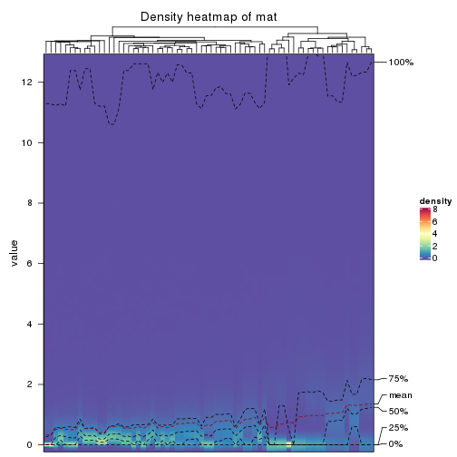
Folowing table shows the best k (number of partitions) for each combination
of top-value methods and partition methods. Clicking on the method name in
the table goes to the section for a single combination of methods.
The cola vignette explains the definition of the metrics used for determining the best number of partitions.
suggest_best_k(res_list)
| The best k | 1-PAC | Mean silhouette | Concordance | Optional k | ||
|---|---|---|---|---|---|---|
| SD:skmeans | 3 | 1.000 | 0.977 | 0.981 | ** | 2 |
| SD:mclust | 2 | 1.000 | 0.985 | 0.992 | ** | |
| CV:hclust | 2 | 1.000 | 0.999 | 1.000 | ** | |
| MAD:mclust | 2 | 1.000 | 0.992 | 0.993 | ** | |
| ATC:hclust | 4 | 1.000 | 0.985 | 0.991 | ** | |
| ATC:skmeans | 2 | 1.000 | 1.000 | 1.000 | ** | |
| CV:NMF | 3 | 0.971 | 0.942 | 0.972 | ** | 2 |
| ATC:NMF | 2 | 0.968 | 0.952 | 0.979 | ** | |
| MAD:skmeans | 4 | 0.905 | 0.929 | 0.962 | * | 2,3 |
| MAD:NMF | 2 | 0.904 | 0.941 | 0.972 | * | |
| ATC:pam | 6 | 0.904 | 0.913 | 0.954 | * | |
| SD:pam | 4 | 0.887 | 0.856 | 0.943 | ||
| ATC:kmeans | 2 | 0.881 | 0.945 | 0.973 | ||
| SD:NMF | 3 | 0.862 | 0.907 | 0.962 | ||
| CV:skmeans | 2 | 0.837 | 0.968 | 0.982 | ||
| SD:hclust | 4 | 0.817 | 0.960 | 0.979 | ||
| ATC:mclust | 3 | 0.808 | 0.851 | 0.908 | ||
| CV:mclust | 3 | 0.748 | 0.918 | 0.933 | ||
| SD:kmeans | 2 | 0.724 | 0.853 | 0.907 | ||
| MAD:pam | 2 | 0.693 | 0.896 | 0.948 | ||
| MAD:hclust | 2 | 0.647 | 0.833 | 0.926 | ||
| CV:kmeans | 3 | 0.647 | 0.864 | 0.898 | ||
| MAD:kmeans | 5 | 0.623 | 0.737 | 0.760 | ||
| CV:pam | 4 | 0.557 | 0.788 | 0.853 |
**: 1-PAC > 0.95, *: 1-PAC > 0.9
Cumulative distribution function curves of consensus matrix for all methods.
collect_plots(res_list, fun = plot_ecdf)
Consensus heatmaps for all methods. (What is a consensus heatmap?)
collect_plots(res_list, k = 2, fun = consensus_heatmap, mc.cores = 4)
collect_plots(res_list, k = 3, fun = consensus_heatmap, mc.cores = 4)
collect_plots(res_list, k = 4, fun = consensus_heatmap, mc.cores = 4)
collect_plots(res_list, k = 5, fun = consensus_heatmap, mc.cores = 4)
collect_plots(res_list, k = 6, fun = consensus_heatmap, mc.cores = 4)
Membership heatmaps for all methods. (What is a membership heatmap?)
collect_plots(res_list, k = 2, fun = membership_heatmap, mc.cores = 4)
collect_plots(res_list, k = 3, fun = membership_heatmap, mc.cores = 4)
collect_plots(res_list, k = 4, fun = membership_heatmap, mc.cores = 4)
collect_plots(res_list, k = 5, fun = membership_heatmap, mc.cores = 4)
collect_plots(res_list, k = 6, fun = membership_heatmap, mc.cores = 4)
Signature heatmaps for all methods. (What is a signature heatmap?)
Note in following heatmaps, rows are scaled.
collect_plots(res_list, k = 2, fun = get_signatures, mc.cores = 4)
collect_plots(res_list, k = 3, fun = get_signatures, mc.cores = 4)
collect_plots(res_list, k = 4, fun = get_signatures, mc.cores = 4)
collect_plots(res_list, k = 5, fun = get_signatures, mc.cores = 4)
collect_plots(res_list, k = 6, fun = get_signatures, mc.cores = 4)
The statistics used for measuring the stability of consensus partitioning. (How are they defined?)
get_stats(res_list, k = 2)
#> k 1-PAC mean_silhouette concordance area_increased Rand Jaccard
#> SD:NMF 2 0.722 0.879 0.934 0.459 0.508 0.508
#> CV:NMF 2 1.000 0.958 0.981 0.239 0.767 0.767
#> MAD:NMF 2 0.904 0.941 0.972 0.499 0.500 0.500
#> ATC:NMF 2 0.968 0.952 0.979 0.221 0.789 0.789
#> SD:skmeans 2 1.000 0.955 0.982 0.492 0.508 0.508
#> CV:skmeans 2 0.837 0.968 0.982 0.468 0.521 0.521
#> MAD:skmeans 2 0.909 0.940 0.973 0.490 0.521 0.521
#> ATC:skmeans 2 1.000 1.000 1.000 0.480 0.521 0.521
#> SD:mclust 2 1.000 0.985 0.992 0.302 0.705 0.705
#> CV:mclust 2 0.664 0.720 0.900 0.429 0.567 0.567
#> MAD:mclust 2 1.000 0.992 0.993 0.337 0.668 0.668
#> ATC:mclust 2 0.482 0.858 0.907 0.291 0.789 0.789
#> SD:kmeans 2 0.724 0.853 0.907 0.400 0.521 0.521
#> CV:kmeans 2 0.827 0.884 0.948 0.277 0.789 0.789
#> MAD:kmeans 2 0.558 0.960 0.934 0.401 0.556 0.556
#> ATC:kmeans 2 0.881 0.945 0.973 0.416 0.605 0.605
#> SD:pam 2 0.540 0.695 0.876 0.472 0.521 0.521
#> CV:pam 2 0.516 0.794 0.910 0.232 0.862 0.862
#> MAD:pam 2 0.693 0.896 0.948 0.495 0.493 0.493
#> ATC:pam 2 0.784 0.922 0.963 0.476 0.521 0.521
#> SD:hclust 2 0.486 0.924 0.898 0.361 0.556 0.556
#> CV:hclust 2 1.000 0.999 1.000 0.211 0.789 0.789
#> MAD:hclust 2 0.647 0.833 0.926 0.393 0.668 0.668
#> ATC:hclust 2 0.562 0.835 0.908 0.229 0.888 0.888
get_stats(res_list, k = 3)
#> k 1-PAC mean_silhouette concordance area_increased Rand Jaccard
#> SD:NMF 3 0.862 0.907 0.962 0.3024 0.712 0.520
#> CV:NMF 3 0.971 0.942 0.972 1.5020 0.602 0.489
#> MAD:NMF 3 0.560 0.653 0.811 0.2343 0.740 0.549
#> ATC:NMF 3 0.826 0.865 0.943 1.5787 0.565 0.478
#> SD:skmeans 3 1.000 0.977 0.981 0.3642 0.784 0.589
#> CV:skmeans 3 0.714 0.822 0.855 0.2650 0.879 0.773
#> MAD:skmeans 3 0.926 0.959 0.980 0.3749 0.751 0.546
#> ATC:skmeans 3 0.879 0.866 0.920 0.1838 0.888 0.787
#> SD:mclust 3 0.736 0.875 0.903 0.9500 0.654 0.524
#> CV:mclust 3 0.748 0.918 0.933 0.3343 0.767 0.613
#> MAD:mclust 3 0.666 0.829 0.895 0.8753 0.716 0.574
#> ATC:mclust 3 0.808 0.851 0.908 1.1151 0.550 0.440
#> SD:kmeans 3 0.526 0.780 0.869 0.3769 0.961 0.926
#> CV:kmeans 3 0.647 0.864 0.898 0.7673 0.668 0.580
#> MAD:kmeans 3 0.613 0.704 0.843 0.4513 0.926 0.867
#> ATC:kmeans 3 0.758 0.867 0.930 0.2399 0.782 0.660
#> SD:pam 3 0.552 0.633 0.807 0.3832 0.766 0.567
#> CV:pam 3 0.473 0.745 0.835 0.9255 0.635 0.577
#> MAD:pam 3 0.763 0.843 0.925 0.3494 0.680 0.440
#> ATC:pam 3 0.776 0.803 0.909 0.1481 0.961 0.926
#> SD:hclust 3 0.794 0.957 0.967 0.3477 0.926 0.867
#> CV:hclust 3 1.000 1.000 1.000 0.0366 0.993 0.991
#> MAD:hclust 3 0.672 0.832 0.898 0.2021 0.912 0.869
#> ATC:hclust 3 0.681 0.852 0.921 0.3590 0.895 0.881
get_stats(res_list, k = 4)
#> k 1-PAC mean_silhouette concordance area_increased Rand Jaccard
#> SD:NMF 4 0.746 0.847 0.906 0.1898 0.759 0.477
#> CV:NMF 4 0.667 0.729 0.864 0.0833 0.786 0.559
#> MAD:NMF 4 0.781 0.872 0.922 0.1388 0.723 0.424
#> ATC:NMF 4 0.806 0.823 0.915 0.1144 0.944 0.874
#> SD:skmeans 4 0.865 0.761 0.841 0.1090 0.870 0.631
#> CV:skmeans 4 0.768 0.908 0.902 0.2193 0.795 0.537
#> MAD:skmeans 4 0.905 0.929 0.962 0.0929 0.937 0.807
#> ATC:skmeans 4 0.662 0.673 0.826 0.2094 0.810 0.579
#> SD:mclust 4 0.721 0.726 0.859 0.2476 0.789 0.505
#> CV:mclust 4 0.763 0.875 0.912 0.0652 0.986 0.965
#> MAD:mclust 4 0.853 0.898 0.945 0.1762 0.849 0.617
#> ATC:mclust 4 0.689 0.822 0.897 0.0581 0.879 0.704
#> SD:kmeans 4 0.558 0.524 0.782 0.1863 0.933 0.862
#> CV:kmeans 4 0.585 0.763 0.852 0.2268 0.949 0.888
#> MAD:kmeans 4 0.615 0.621 0.710 0.1481 0.926 0.849
#> ATC:kmeans 4 0.778 0.836 0.889 0.1506 0.993 0.985
#> SD:pam 4 0.887 0.856 0.943 0.0779 0.963 0.887
#> CV:pam 4 0.557 0.788 0.853 0.3119 0.856 0.724
#> MAD:pam 4 0.714 0.790 0.896 0.0515 0.982 0.947
#> ATC:pam 4 0.672 0.798 0.826 0.1266 0.968 0.934
#> SD:hclust 4 0.817 0.960 0.979 0.1052 0.968 0.934
#> CV:hclust 4 0.752 0.983 0.924 0.6563 0.781 0.719
#> MAD:hclust 4 0.612 0.826 0.909 0.0685 0.982 0.970
#> ATC:hclust 4 1.000 0.985 0.991 0.7686 0.668 0.576
get_stats(res_list, k = 5)
#> k 1-PAC mean_silhouette concordance area_increased Rand Jaccard
#> SD:NMF 5 0.809 0.839 0.909 0.03642 0.939 0.794
#> CV:NMF 5 0.804 0.760 0.888 0.05143 0.879 0.695
#> MAD:NMF 5 0.787 0.805 0.895 0.04896 0.947 0.824
#> ATC:NMF 5 0.721 0.824 0.889 0.08111 0.797 0.545
#> SD:skmeans 5 0.800 0.795 0.862 0.04909 0.975 0.900
#> CV:skmeans 5 0.813 0.854 0.834 0.05263 0.975 0.904
#> MAD:skmeans 5 0.867 0.831 0.871 0.06463 0.914 0.702
#> ATC:skmeans 5 0.703 0.679 0.786 0.05934 0.968 0.890
#> SD:mclust 5 0.765 0.805 0.902 0.04221 0.951 0.806
#> CV:mclust 5 0.582 0.852 0.891 0.01677 0.969 0.923
#> MAD:mclust 5 0.822 0.804 0.882 0.04942 0.954 0.825
#> ATC:mclust 5 0.758 0.819 0.899 0.05373 0.814 0.536
#> SD:kmeans 5 0.567 0.756 0.760 0.10147 0.853 0.645
#> CV:kmeans 5 0.676 0.712 0.759 0.11968 0.982 0.956
#> MAD:kmeans 5 0.623 0.737 0.760 0.08538 0.772 0.475
#> ATC:kmeans 5 0.716 0.721 0.848 0.13151 0.933 0.852
#> SD:pam 5 0.796 0.826 0.922 0.05272 0.968 0.892
#> CV:pam 5 0.557 0.551 0.734 0.09565 0.851 0.664
#> MAD:pam 5 0.772 0.790 0.886 0.04819 0.959 0.870
#> ATC:pam 5 0.743 0.917 0.926 0.17591 0.807 0.571
#> SD:hclust 5 0.735 0.918 0.954 0.03046 0.998 0.996
#> CV:hclust 5 0.847 0.935 0.946 0.11386 0.998 0.997
#> MAD:hclust 5 0.638 0.804 0.828 0.04986 0.989 0.981
#> ATC:hclust 5 0.966 0.974 0.987 0.00461 0.998 0.996
get_stats(res_list, k = 6)
#> k 1-PAC mean_silhouette concordance area_increased Rand Jaccard
#> SD:NMF 6 0.782 0.679 0.820 0.04089 0.947 0.793
#> CV:NMF 6 0.879 0.826 0.894 0.01803 0.969 0.905
#> MAD:NMF 6 0.770 0.771 0.818 0.04272 0.898 0.638
#> ATC:NMF 6 0.779 0.816 0.865 0.03864 0.988 0.962
#> SD:skmeans 6 0.845 0.802 0.871 0.03911 0.963 0.834
#> CV:skmeans 6 0.850 0.837 0.884 0.04165 0.960 0.829
#> MAD:skmeans 6 0.825 0.740 0.830 0.03951 0.958 0.815
#> ATC:skmeans 6 0.702 0.618 0.768 0.04912 0.909 0.695
#> SD:mclust 6 0.865 0.814 0.915 0.03010 0.986 0.936
#> CV:mclust 6 0.646 0.694 0.821 0.09727 0.950 0.873
#> MAD:mclust 6 0.830 0.748 0.828 0.04450 0.891 0.571
#> ATC:mclust 6 0.791 0.881 0.924 0.01280 0.817 0.533
#> SD:kmeans 6 0.679 0.801 0.823 0.06553 0.951 0.816
#> CV:kmeans 6 0.741 0.872 0.802 0.06695 0.845 0.604
#> MAD:kmeans 6 0.679 0.776 0.795 0.06243 0.961 0.838
#> ATC:kmeans 6 0.679 0.645 0.713 0.09529 0.853 0.616
#> SD:pam 6 0.812 0.794 0.908 0.02914 0.986 0.946
#> CV:pam 6 0.642 0.549 0.764 0.04895 0.970 0.916
#> MAD:pam 6 0.794 0.824 0.876 0.03327 0.958 0.847
#> ATC:pam 6 0.904 0.913 0.954 0.04284 0.986 0.945
#> SD:hclust 6 0.724 0.871 0.939 0.01401 1.000 0.999
#> CV:hclust 6 0.846 0.922 0.944 0.00530 0.998 0.997
#> MAD:hclust 6 0.642 0.734 0.874 0.02553 0.993 0.987
#> ATC:hclust 6 0.966 0.955 0.992 0.00103 1.000 0.999
Following heatmap plots the partition for each combination of methods and the lightness correspond to the silhouette scores for samples in each method. On top the consensus subgroup is inferred from all methods by taking the mean silhouette scores as weight.
collect_stats(res_list, k = 2)
collect_stats(res_list, k = 3)
collect_stats(res_list, k = 4)
collect_stats(res_list, k = 5)
collect_stats(res_list, k = 6)
Collect partitions from all methods:
collect_classes(res_list, k = 2)
collect_classes(res_list, k = 3)
collect_classes(res_list, k = 4)
collect_classes(res_list, k = 5)
collect_classes(res_list, k = 6)
Overlap of top rows from different top-row methods:
top_rows_overlap(res_list, top_n = 562, method = "euler")
top_rows_overlap(res_list, top_n = 1124, method = "euler")
top_rows_overlap(res_list, top_n = 1686, method = "euler")

top_rows_overlap(res_list, top_n = 2248, method = "euler")
top_rows_overlap(res_list, top_n = 2810, method = "euler")
Also visualize the correspondance of rankings between different top-row methods:
top_rows_overlap(res_list, top_n = 562, method = "correspondance")
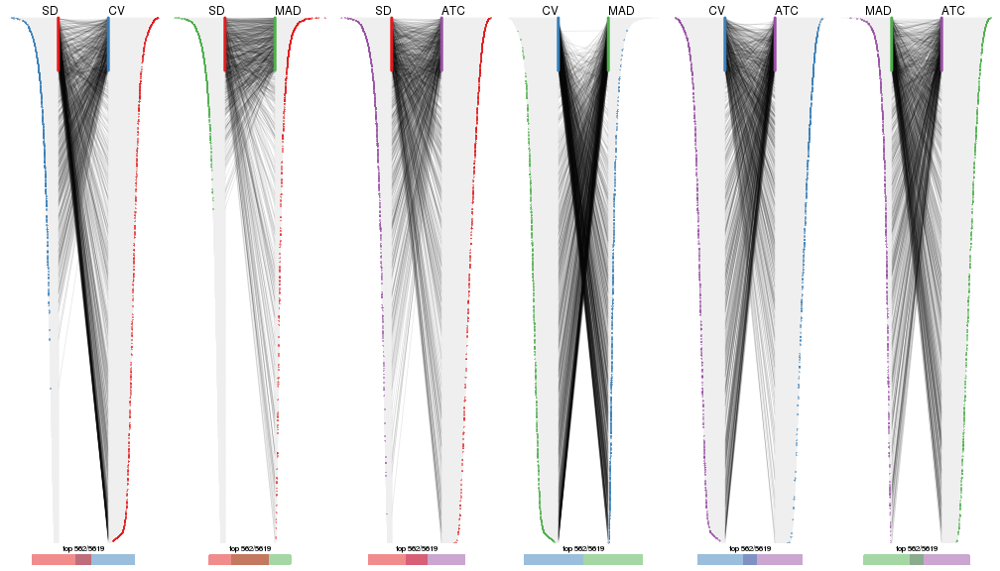
top_rows_overlap(res_list, top_n = 1124, method = "correspondance")
top_rows_overlap(res_list, top_n = 1686, method = "correspondance")
top_rows_overlap(res_list, top_n = 2248, method = "correspondance")
top_rows_overlap(res_list, top_n = 2810, method = "correspondance")
Heatmaps of the top rows:
top_rows_heatmap(res_list, top_n = 562)
top_rows_heatmap(res_list, top_n = 1124)
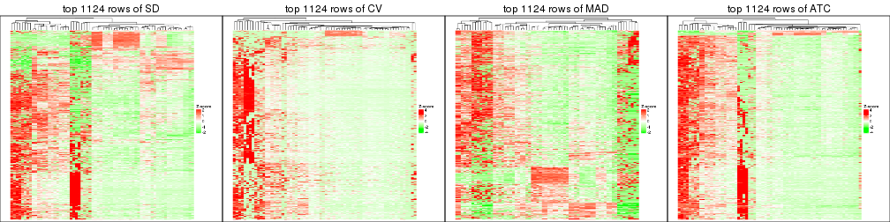
top_rows_heatmap(res_list, top_n = 1686)
top_rows_heatmap(res_list, top_n = 2248)
top_rows_heatmap(res_list, top_n = 2810)
The object with results only for a single top-value method and a single partition method can be extracted as:
res = res_list["SD", "hclust"]
# you can also extract it by
# res = res_list["SD:hclust"]
A summary of res and all the functions that can be applied to it:
res
#> A 'ConsensusPartition' object with k = 2, 3, 4, 5, 6.
#> On a matrix with 5619 rows and 68 columns.
#> Top rows (562, 1124, 1686, 2248, 2810) are extracted by 'SD' method.
#> Subgroups are detected by 'hclust' method.
#> Performed in total 1250 partitions by row resampling.
#> Best k for subgroups seems to be 4.
#>
#> Following methods can be applied to this 'ConsensusPartition' object:
#> [1] "cola_report" "collect_classes" "collect_plots"
#> [4] "collect_stats" "colnames" "compare_signatures"
#> [7] "consensus_heatmap" "dimension_reduction" "functional_enrichment"
#> [10] "get_anno_col" "get_anno" "get_classes"
#> [13] "get_consensus" "get_matrix" "get_membership"
#> [16] "get_param" "get_signatures" "get_stats"
#> [19] "is_best_k" "is_stable_k" "membership_heatmap"
#> [22] "ncol" "nrow" "plot_ecdf"
#> [25] "rownames" "select_partition_number" "show"
#> [28] "suggest_best_k" "test_to_known_factors"
collect_plots() function collects all the plots made from res for all k (number of partitions)
into one single page to provide an easy and fast comparison between different k.
collect_plots(res)
The plots are:
k and the heatmap of
predicted classes for each k.k.k.k.All the plots in panels can be made by individual functions and they are plotted later in this section.
select_partition_number() produces several plots showing different
statistics for choosing “optimized” k. There are following statistics:
k;k, the area increased is defined as \(A_k - A_{k-1}\).The detailed explanations of these statistics can be found in the cola vignette.
Generally speaking, lower PAC score, higher mean silhouette score or higher
concordance corresponds to better partition. Rand index and Jaccard index
measure how similar the current partition is compared to partition with k-1.
If they are too similar, we won't accept k is better than k-1.
select_partition_number(res)
The numeric values for all these statistics can be obtained by get_stats().
get_stats(res)
#> k 1-PAC mean_silhouette concordance area_increased Rand Jaccard
#> 2 2 0.486 0.924 0.898 0.3608 0.556 0.556
#> 3 3 0.794 0.957 0.967 0.3477 0.926 0.867
#> 4 4 0.817 0.960 0.979 0.1052 0.968 0.934
#> 5 5 0.735 0.918 0.954 0.0305 0.998 0.996
#> 6 6 0.724 0.871 0.939 0.0140 1.000 0.999
suggest_best_k() suggests the best \(k\) based on these statistics. The rules are as follows:
suggest_best_k(res)
#> [1] 4
Following shows the table of the partitions (You need to click the show/hide
code output link to see it). The membership matrix (columns with name p*)
is inferred by
clue::cl_consensus()
function with the SE method. Basically the value in the membership matrix
represents the probability to belong to a certain group. The finall class
label for an item is determined with the group with highest probability it
belongs to.
In get_classes() function, the entropy is calculated from the membership
matrix and the silhouette score is calculated from the consensus matrix.
cbind(get_classes(res, k = 2), get_membership(res, k = 2))
#> class entropy silhouette p1 p2
#> SRR1035618 2 0.0000 0.969 0.000 1.000
#> SRR1035619 2 0.0000 0.969 0.000 1.000
#> SRR1035620 2 0.0000 0.969 0.000 1.000
#> SRR1035621 2 0.0000 0.969 0.000 1.000
#> SRR1035622 2 0.0000 0.969 0.000 1.000
#> SRR1035623 2 0.0000 0.969 0.000 1.000
#> SRR1035626 2 0.0000 0.969 0.000 1.000
#> SRR1035627 2 0.0000 0.969 0.000 1.000
#> SRR1035628 2 0.0000 0.969 0.000 1.000
#> SRR1035629 2 0.0000 0.969 0.000 1.000
#> SRR1035624 2 0.0000 0.969 0.000 1.000
#> SRR1035625 2 0.0000 0.969 0.000 1.000
#> SRR1035630 2 0.0000 0.969 0.000 1.000
#> SRR1035631 2 0.0000 0.969 0.000 1.000
#> SRR1035632 2 0.8207 0.656 0.256 0.744
#> SRR1035633 2 0.8207 0.656 0.256 0.744
#> SRR1035634 2 0.8207 0.656 0.256 0.744
#> SRR1035635 2 0.8207 0.656 0.256 0.744
#> SRR1035636 2 0.0000 0.969 0.000 1.000
#> SRR1035637 2 0.0000 0.969 0.000 1.000
#> SRR1035638 2 0.0000 0.969 0.000 1.000
#> SRR1035639 2 0.0000 0.969 0.000 1.000
#> SRR1035640 1 0.8081 0.916 0.752 0.248
#> SRR1035641 1 0.8081 0.916 0.752 0.248
#> SRR1035642 2 0.0000 0.969 0.000 1.000
#> SRR1035643 2 0.0000 0.969 0.000 1.000
#> SRR1035644 2 0.0000 0.969 0.000 1.000
#> SRR1035645 2 0.0000 0.969 0.000 1.000
#> SRR1035646 2 0.0000 0.969 0.000 1.000
#> SRR1035647 2 0.0000 0.969 0.000 1.000
#> SRR1035648 2 0.0000 0.969 0.000 1.000
#> SRR1035649 2 0.0000 0.969 0.000 1.000
#> SRR1035654 1 0.9393 0.864 0.644 0.356
#> SRR1035655 1 0.9393 0.864 0.644 0.356
#> SRR1035656 1 0.9393 0.864 0.644 0.356
#> SRR1035657 1 0.9393 0.864 0.644 0.356
#> SRR1035650 2 0.0000 0.969 0.000 1.000
#> SRR1035651 2 0.0000 0.969 0.000 1.000
#> SRR1035652 2 0.0000 0.969 0.000 1.000
#> SRR1035653 2 0.0000 0.969 0.000 1.000
#> SRR1035660 2 0.0376 0.965 0.004 0.996
#> SRR1035661 2 0.0376 0.965 0.004 0.996
#> SRR1035662 2 0.0376 0.965 0.004 0.996
#> SRR1035663 2 0.0376 0.965 0.004 0.996
#> SRR1035658 2 0.0376 0.965 0.004 0.996
#> SRR1035659 2 0.0376 0.965 0.004 0.996
#> SRR1035666 1 0.6531 0.872 0.832 0.168
#> SRR1035667 1 0.6531 0.872 0.832 0.168
#> SRR1035668 1 0.6531 0.872 0.832 0.168
#> SRR1035669 1 0.6531 0.872 0.832 0.168
#> SRR1035664 2 0.0000 0.969 0.000 1.000
#> SRR1035665 2 0.0000 0.969 0.000 1.000
#> SRR1035670 1 0.9393 0.864 0.644 0.356
#> SRR1035671 1 0.9393 0.864 0.644 0.356
#> SRR1035672 1 0.9393 0.864 0.644 0.356
#> SRR1035673 1 0.9393 0.864 0.644 0.356
#> SRR1035674 1 0.8081 0.916 0.752 0.248
#> SRR1035675 1 0.8081 0.916 0.752 0.248
#> SRR1035676 1 0.8081 0.916 0.752 0.248
#> SRR1035677 1 0.8081 0.916 0.752 0.248
#> SRR1035682 2 0.0000 0.969 0.000 1.000
#> SRR1035683 2 0.0000 0.969 0.000 1.000
#> SRR1035684 2 0.0000 0.969 0.000 1.000
#> SRR1035685 2 0.0000 0.969 0.000 1.000
#> SRR1035678 1 0.7674 0.911 0.776 0.224
#> SRR1035679 1 0.7674 0.911 0.776 0.224
#> SRR1035680 1 0.7674 0.911 0.776 0.224
#> SRR1035681 1 0.7674 0.911 0.776 0.224
cbind(get_classes(res, k = 3), get_membership(res, k = 3))
#> class entropy silhouette p1 p2 p3
#> SRR1035618 2 0.0000 0.999 0.000 1.000 0
#> SRR1035619 2 0.0000 0.999 0.000 1.000 0
#> SRR1035620 2 0.0000 0.999 0.000 1.000 0
#> SRR1035621 2 0.0000 0.999 0.000 1.000 0
#> SRR1035622 2 0.0000 0.999 0.000 1.000 0
#> SRR1035623 2 0.0000 0.999 0.000 1.000 0
#> SRR1035626 2 0.0000 0.999 0.000 1.000 0
#> SRR1035627 2 0.0000 0.999 0.000 1.000 0
#> SRR1035628 2 0.0000 0.999 0.000 1.000 0
#> SRR1035629 2 0.0000 0.999 0.000 1.000 0
#> SRR1035624 2 0.0000 0.999 0.000 1.000 0
#> SRR1035625 2 0.0000 0.999 0.000 1.000 0
#> SRR1035630 2 0.0000 0.999 0.000 1.000 0
#> SRR1035631 2 0.0000 0.999 0.000 1.000 0
#> SRR1035632 3 0.0000 1.000 0.000 0.000 1
#> SRR1035633 3 0.0000 1.000 0.000 0.000 1
#> SRR1035634 3 0.0000 1.000 0.000 0.000 1
#> SRR1035635 3 0.0000 1.000 0.000 0.000 1
#> SRR1035636 2 0.0000 0.999 0.000 1.000 0
#> SRR1035637 2 0.0000 0.999 0.000 1.000 0
#> SRR1035638 2 0.0000 0.999 0.000 1.000 0
#> SRR1035639 2 0.0000 0.999 0.000 1.000 0
#> SRR1035640 1 0.2537 0.901 0.920 0.080 0
#> SRR1035641 1 0.2537 0.901 0.920 0.080 0
#> SRR1035642 2 0.0000 0.999 0.000 1.000 0
#> SRR1035643 2 0.0000 0.999 0.000 1.000 0
#> SRR1035644 2 0.0000 0.999 0.000 1.000 0
#> SRR1035645 2 0.0000 0.999 0.000 1.000 0
#> SRR1035646 2 0.0000 0.999 0.000 1.000 0
#> SRR1035647 2 0.0000 0.999 0.000 1.000 0
#> SRR1035648 2 0.0000 0.999 0.000 1.000 0
#> SRR1035649 2 0.0000 0.999 0.000 1.000 0
#> SRR1035654 1 0.4399 0.855 0.812 0.188 0
#> SRR1035655 1 0.4399 0.855 0.812 0.188 0
#> SRR1035656 1 0.4399 0.855 0.812 0.188 0
#> SRR1035657 1 0.4399 0.855 0.812 0.188 0
#> SRR1035650 2 0.0000 0.999 0.000 1.000 0
#> SRR1035651 2 0.0000 0.999 0.000 1.000 0
#> SRR1035652 2 0.0000 0.999 0.000 1.000 0
#> SRR1035653 2 0.0000 0.999 0.000 1.000 0
#> SRR1035660 2 0.0237 0.996 0.004 0.996 0
#> SRR1035661 2 0.0237 0.996 0.004 0.996 0
#> SRR1035662 2 0.0237 0.996 0.004 0.996 0
#> SRR1035663 2 0.0237 0.996 0.004 0.996 0
#> SRR1035658 2 0.0237 0.996 0.004 0.996 0
#> SRR1035659 2 0.0237 0.996 0.004 0.996 0
#> SRR1035666 1 0.0000 0.831 1.000 0.000 0
#> SRR1035667 1 0.0000 0.831 1.000 0.000 0
#> SRR1035668 1 0.0000 0.831 1.000 0.000 0
#> SRR1035669 1 0.0000 0.831 1.000 0.000 0
#> SRR1035664 2 0.0000 0.999 0.000 1.000 0
#> SRR1035665 2 0.0000 0.999 0.000 1.000 0
#> SRR1035670 1 0.4399 0.855 0.812 0.188 0
#> SRR1035671 1 0.4399 0.855 0.812 0.188 0
#> SRR1035672 1 0.4399 0.855 0.812 0.188 0
#> SRR1035673 1 0.4399 0.855 0.812 0.188 0
#> SRR1035674 1 0.2537 0.901 0.920 0.080 0
#> SRR1035675 1 0.2537 0.901 0.920 0.080 0
#> SRR1035676 1 0.2537 0.901 0.920 0.080 0
#> SRR1035677 1 0.2537 0.901 0.920 0.080 0
#> SRR1035682 2 0.0000 0.999 0.000 1.000 0
#> SRR1035683 2 0.0000 0.999 0.000 1.000 0
#> SRR1035684 2 0.0000 0.999 0.000 1.000 0
#> SRR1035685 2 0.0000 0.999 0.000 1.000 0
#> SRR1035678 1 0.1964 0.890 0.944 0.056 0
#> SRR1035679 1 0.1964 0.890 0.944 0.056 0
#> SRR1035680 1 0.1964 0.890 0.944 0.056 0
#> SRR1035681 1 0.1964 0.890 0.944 0.056 0
cbind(get_classes(res, k = 4), get_membership(res, k = 4))
#> class entropy silhouette p1 p2 p3 p4
#> SRR1035618 2 0.0000 0.993 0.000 1.000 0 0.000
#> SRR1035619 2 0.0000 0.993 0.000 1.000 0 0.000
#> SRR1035620 2 0.0000 0.993 0.000 1.000 0 0.000
#> SRR1035621 2 0.0000 0.993 0.000 1.000 0 0.000
#> SRR1035622 2 0.0000 0.993 0.000 1.000 0 0.000
#> SRR1035623 2 0.0000 0.993 0.000 1.000 0 0.000
#> SRR1035626 2 0.0188 0.990 0.004 0.996 0 0.000
#> SRR1035627 2 0.0188 0.990 0.004 0.996 0 0.000
#> SRR1035628 2 0.0188 0.990 0.004 0.996 0 0.000
#> SRR1035629 2 0.0188 0.990 0.004 0.996 0 0.000
#> SRR1035624 2 0.0000 0.993 0.000 1.000 0 0.000
#> SRR1035625 2 0.0000 0.993 0.000 1.000 0 0.000
#> SRR1035630 2 0.0000 0.993 0.000 1.000 0 0.000
#> SRR1035631 2 0.0000 0.993 0.000 1.000 0 0.000
#> SRR1035632 3 0.0000 1.000 0.000 0.000 1 0.000
#> SRR1035633 3 0.0000 1.000 0.000 0.000 1 0.000
#> SRR1035634 3 0.0000 1.000 0.000 0.000 1 0.000
#> SRR1035635 3 0.0000 1.000 0.000 0.000 1 0.000
#> SRR1035636 2 0.0000 0.993 0.000 1.000 0 0.000
#> SRR1035637 2 0.0000 0.993 0.000 1.000 0 0.000
#> SRR1035638 2 0.0000 0.993 0.000 1.000 0 0.000
#> SRR1035639 2 0.0000 0.993 0.000 1.000 0 0.000
#> SRR1035640 1 0.0188 0.889 0.996 0.004 0 0.000
#> SRR1035641 1 0.0188 0.889 0.996 0.004 0 0.000
#> SRR1035642 2 0.0000 0.993 0.000 1.000 0 0.000
#> SRR1035643 2 0.0000 0.993 0.000 1.000 0 0.000
#> SRR1035644 2 0.0000 0.993 0.000 1.000 0 0.000
#> SRR1035645 2 0.0000 0.993 0.000 1.000 0 0.000
#> SRR1035646 2 0.0000 0.993 0.000 1.000 0 0.000
#> SRR1035647 2 0.0000 0.993 0.000 1.000 0 0.000
#> SRR1035648 2 0.0000 0.993 0.000 1.000 0 0.000
#> SRR1035649 2 0.0000 0.993 0.000 1.000 0 0.000
#> SRR1035654 1 0.2814 0.867 0.868 0.132 0 0.000
#> SRR1035655 1 0.2814 0.867 0.868 0.132 0 0.000
#> SRR1035656 1 0.2814 0.867 0.868 0.132 0 0.000
#> SRR1035657 1 0.2814 0.867 0.868 0.132 0 0.000
#> SRR1035650 2 0.0000 0.993 0.000 1.000 0 0.000
#> SRR1035651 2 0.0000 0.993 0.000 1.000 0 0.000
#> SRR1035652 2 0.0000 0.993 0.000 1.000 0 0.000
#> SRR1035653 2 0.0000 0.993 0.000 1.000 0 0.000
#> SRR1035660 2 0.1302 0.955 0.044 0.956 0 0.000
#> SRR1035661 2 0.1302 0.955 0.044 0.956 0 0.000
#> SRR1035662 2 0.1302 0.955 0.044 0.956 0 0.000
#> SRR1035663 2 0.1302 0.955 0.044 0.956 0 0.000
#> SRR1035658 2 0.1022 0.966 0.032 0.968 0 0.000
#> SRR1035659 2 0.1022 0.966 0.032 0.968 0 0.000
#> SRR1035666 4 0.0000 1.000 0.000 0.000 0 1.000
#> SRR1035667 4 0.0000 1.000 0.000 0.000 0 1.000
#> SRR1035668 4 0.0000 1.000 0.000 0.000 0 1.000
#> SRR1035669 4 0.0000 1.000 0.000 0.000 0 1.000
#> SRR1035664 2 0.0000 0.993 0.000 1.000 0 0.000
#> SRR1035665 2 0.0000 0.993 0.000 1.000 0 0.000
#> SRR1035670 1 0.2814 0.867 0.868 0.132 0 0.000
#> SRR1035671 1 0.2814 0.867 0.868 0.132 0 0.000
#> SRR1035672 1 0.2814 0.867 0.868 0.132 0 0.000
#> SRR1035673 1 0.2814 0.867 0.868 0.132 0 0.000
#> SRR1035674 1 0.0188 0.889 0.996 0.004 0 0.000
#> SRR1035675 1 0.0188 0.889 0.996 0.004 0 0.000
#> SRR1035676 1 0.0188 0.889 0.996 0.004 0 0.000
#> SRR1035677 1 0.0188 0.889 0.996 0.004 0 0.000
#> SRR1035682 2 0.0000 0.993 0.000 1.000 0 0.000
#> SRR1035683 2 0.0000 0.993 0.000 1.000 0 0.000
#> SRR1035684 2 0.0000 0.993 0.000 1.000 0 0.000
#> SRR1035685 2 0.0000 0.993 0.000 1.000 0 0.000
#> SRR1035678 1 0.0817 0.878 0.976 0.000 0 0.024
#> SRR1035679 1 0.0817 0.878 0.976 0.000 0 0.024
#> SRR1035680 1 0.0817 0.878 0.976 0.000 0 0.024
#> SRR1035681 1 0.0817 0.878 0.976 0.000 0 0.024
cbind(get_classes(res, k = 5), get_membership(res, k = 5))
#> class entropy silhouette p1 p2 p3 p4 p5
#> SRR1035618 2 0.0000 0.974 0.000 1.000 0.000 0.000 0.000
#> SRR1035619 2 0.0000 0.974 0.000 1.000 0.000 0.000 0.000
#> SRR1035620 2 0.0000 0.974 0.000 1.000 0.000 0.000 0.000
#> SRR1035621 2 0.0000 0.974 0.000 1.000 0.000 0.000 0.000
#> SRR1035622 2 0.0000 0.974 0.000 1.000 0.000 0.000 0.000
#> SRR1035623 2 0.0000 0.974 0.000 1.000 0.000 0.000 0.000
#> SRR1035626 2 0.3039 0.795 0.000 0.808 0.192 0.000 0.000
#> SRR1035627 2 0.3039 0.795 0.000 0.808 0.192 0.000 0.000
#> SRR1035628 2 0.3039 0.795 0.000 0.808 0.192 0.000 0.000
#> SRR1035629 2 0.3039 0.795 0.000 0.808 0.192 0.000 0.000
#> SRR1035624 2 0.0000 0.974 0.000 1.000 0.000 0.000 0.000
#> SRR1035625 2 0.0000 0.974 0.000 1.000 0.000 0.000 0.000
#> SRR1035630 2 0.0000 0.974 0.000 1.000 0.000 0.000 0.000
#> SRR1035631 2 0.0000 0.974 0.000 1.000 0.000 0.000 0.000
#> SRR1035632 3 0.3508 1.000 0.000 0.000 0.748 0.252 0.000
#> SRR1035633 3 0.3508 1.000 0.000 0.000 0.748 0.252 0.000
#> SRR1035634 4 0.0404 0.584 0.000 0.000 0.012 0.988 0.000
#> SRR1035635 4 0.3612 0.434 0.000 0.000 0.268 0.732 0.000
#> SRR1035636 2 0.0000 0.974 0.000 1.000 0.000 0.000 0.000
#> SRR1035637 2 0.0000 0.974 0.000 1.000 0.000 0.000 0.000
#> SRR1035638 2 0.0000 0.974 0.000 1.000 0.000 0.000 0.000
#> SRR1035639 2 0.0000 0.974 0.000 1.000 0.000 0.000 0.000
#> SRR1035640 1 0.0000 0.869 1.000 0.000 0.000 0.000 0.000
#> SRR1035641 1 0.0000 0.869 1.000 0.000 0.000 0.000 0.000
#> SRR1035642 2 0.0000 0.974 0.000 1.000 0.000 0.000 0.000
#> SRR1035643 2 0.0000 0.974 0.000 1.000 0.000 0.000 0.000
#> SRR1035644 2 0.0000 0.974 0.000 1.000 0.000 0.000 0.000
#> SRR1035645 2 0.0000 0.974 0.000 1.000 0.000 0.000 0.000
#> SRR1035646 2 0.0000 0.974 0.000 1.000 0.000 0.000 0.000
#> SRR1035647 2 0.0000 0.974 0.000 1.000 0.000 0.000 0.000
#> SRR1035648 2 0.0000 0.974 0.000 1.000 0.000 0.000 0.000
#> SRR1035649 2 0.0000 0.974 0.000 1.000 0.000 0.000 0.000
#> SRR1035654 1 0.2377 0.854 0.872 0.128 0.000 0.000 0.000
#> SRR1035655 1 0.2377 0.854 0.872 0.128 0.000 0.000 0.000
#> SRR1035656 1 0.2377 0.854 0.872 0.128 0.000 0.000 0.000
#> SRR1035657 1 0.2377 0.854 0.872 0.128 0.000 0.000 0.000
#> SRR1035650 2 0.0000 0.974 0.000 1.000 0.000 0.000 0.000
#> SRR1035651 2 0.0000 0.974 0.000 1.000 0.000 0.000 0.000
#> SRR1035652 2 0.0000 0.974 0.000 1.000 0.000 0.000 0.000
#> SRR1035653 2 0.0000 0.974 0.000 1.000 0.000 0.000 0.000
#> SRR1035660 2 0.1197 0.939 0.048 0.952 0.000 0.000 0.000
#> SRR1035661 2 0.1197 0.939 0.048 0.952 0.000 0.000 0.000
#> SRR1035662 2 0.1197 0.939 0.048 0.952 0.000 0.000 0.000
#> SRR1035663 2 0.1197 0.939 0.048 0.952 0.000 0.000 0.000
#> SRR1035658 2 0.0880 0.951 0.032 0.968 0.000 0.000 0.000
#> SRR1035659 2 0.0880 0.951 0.032 0.968 0.000 0.000 0.000
#> SRR1035666 5 0.0000 1.000 0.000 0.000 0.000 0.000 1.000
#> SRR1035667 5 0.0000 1.000 0.000 0.000 0.000 0.000 1.000
#> SRR1035668 5 0.0000 1.000 0.000 0.000 0.000 0.000 1.000
#> SRR1035669 5 0.0000 1.000 0.000 0.000 0.000 0.000 1.000
#> SRR1035664 2 0.0000 0.974 0.000 1.000 0.000 0.000 0.000
#> SRR1035665 2 0.0000 0.974 0.000 1.000 0.000 0.000 0.000
#> SRR1035670 1 0.2377 0.854 0.872 0.128 0.000 0.000 0.000
#> SRR1035671 1 0.2377 0.854 0.872 0.128 0.000 0.000 0.000
#> SRR1035672 1 0.2377 0.854 0.872 0.128 0.000 0.000 0.000
#> SRR1035673 1 0.2377 0.854 0.872 0.128 0.000 0.000 0.000
#> SRR1035674 1 0.0000 0.869 1.000 0.000 0.000 0.000 0.000
#> SRR1035675 1 0.0000 0.869 1.000 0.000 0.000 0.000 0.000
#> SRR1035676 1 0.0000 0.869 1.000 0.000 0.000 0.000 0.000
#> SRR1035677 1 0.0000 0.869 1.000 0.000 0.000 0.000 0.000
#> SRR1035682 2 0.0000 0.974 0.000 1.000 0.000 0.000 0.000
#> SRR1035683 2 0.0000 0.974 0.000 1.000 0.000 0.000 0.000
#> SRR1035684 2 0.0000 0.974 0.000 1.000 0.000 0.000 0.000
#> SRR1035685 2 0.0000 0.974 0.000 1.000 0.000 0.000 0.000
#> SRR1035678 1 0.1914 0.837 0.924 0.000 0.060 0.000 0.016
#> SRR1035679 1 0.1914 0.837 0.924 0.000 0.060 0.000 0.016
#> SRR1035680 1 0.1914 0.837 0.924 0.000 0.060 0.000 0.016
#> SRR1035681 1 0.1914 0.837 0.924 0.000 0.060 0.000 0.016
cbind(get_classes(res, k = 6), get_membership(res, k = 6))
#> class entropy silhouette p1 p2 p3 p4 p5 p6
#> SRR1035618 2 0.000 0.973 0.000 1.000 0.000 0.000 0.000 0.000
#> SRR1035619 2 0.000 0.973 0.000 1.000 0.000 0.000 0.000 0.000
#> SRR1035620 2 0.000 0.973 0.000 1.000 0.000 0.000 0.000 0.000
#> SRR1035621 2 0.000 0.973 0.000 1.000 0.000 0.000 0.000 0.000
#> SRR1035622 2 0.000 0.973 0.000 1.000 0.000 0.000 0.000 0.000
#> SRR1035623 2 0.000 0.973 0.000 1.000 0.000 0.000 0.000 0.000
#> SRR1035626 2 0.279 0.783 0.000 0.800 0.200 0.000 0.000 0.000
#> SRR1035627 2 0.279 0.783 0.000 0.800 0.200 0.000 0.000 0.000
#> SRR1035628 2 0.279 0.783 0.000 0.800 0.200 0.000 0.000 0.000
#> SRR1035629 2 0.279 0.783 0.000 0.800 0.200 0.000 0.000 0.000
#> SRR1035624 2 0.000 0.973 0.000 1.000 0.000 0.000 0.000 0.000
#> SRR1035625 2 0.000 0.973 0.000 1.000 0.000 0.000 0.000 0.000
#> SRR1035630 2 0.000 0.973 0.000 1.000 0.000 0.000 0.000 0.000
#> SRR1035631 2 0.000 0.973 0.000 1.000 0.000 0.000 0.000 0.000
#> SRR1035632 3 0.279 1.000 0.000 0.000 0.800 0.000 0.000 0.200
#> SRR1035633 3 0.279 1.000 0.000 0.000 0.800 0.000 0.000 0.200
#> SRR1035634 6 0.026 0.000 0.000 0.000 0.008 0.000 0.000 0.992
#> SRR1035635 4 0.401 0.000 0.000 0.000 0.016 0.640 0.000 0.344
#> SRR1035636 2 0.000 0.973 0.000 1.000 0.000 0.000 0.000 0.000
#> SRR1035637 2 0.000 0.973 0.000 1.000 0.000 0.000 0.000 0.000
#> SRR1035638 2 0.000 0.973 0.000 1.000 0.000 0.000 0.000 0.000
#> SRR1035639 2 0.000 0.973 0.000 1.000 0.000 0.000 0.000 0.000
#> SRR1035640 1 0.000 0.790 1.000 0.000 0.000 0.000 0.000 0.000
#> SRR1035641 1 0.000 0.790 1.000 0.000 0.000 0.000 0.000 0.000
#> SRR1035642 2 0.000 0.973 0.000 1.000 0.000 0.000 0.000 0.000
#> SRR1035643 2 0.000 0.973 0.000 1.000 0.000 0.000 0.000 0.000
#> SRR1035644 2 0.000 0.973 0.000 1.000 0.000 0.000 0.000 0.000
#> SRR1035645 2 0.000 0.973 0.000 1.000 0.000 0.000 0.000 0.000
#> SRR1035646 2 0.000 0.973 0.000 1.000 0.000 0.000 0.000 0.000
#> SRR1035647 2 0.000 0.973 0.000 1.000 0.000 0.000 0.000 0.000
#> SRR1035648 2 0.000 0.973 0.000 1.000 0.000 0.000 0.000 0.000
#> SRR1035649 2 0.000 0.973 0.000 1.000 0.000 0.000 0.000 0.000
#> SRR1035654 1 0.214 0.797 0.872 0.128 0.000 0.000 0.000 0.000
#> SRR1035655 1 0.214 0.797 0.872 0.128 0.000 0.000 0.000 0.000
#> SRR1035656 1 0.214 0.797 0.872 0.128 0.000 0.000 0.000 0.000
#> SRR1035657 1 0.214 0.797 0.872 0.128 0.000 0.000 0.000 0.000
#> SRR1035650 2 0.000 0.973 0.000 1.000 0.000 0.000 0.000 0.000
#> SRR1035651 2 0.000 0.973 0.000 1.000 0.000 0.000 0.000 0.000
#> SRR1035652 2 0.000 0.973 0.000 1.000 0.000 0.000 0.000 0.000
#> SRR1035653 2 0.000 0.973 0.000 1.000 0.000 0.000 0.000 0.000
#> SRR1035660 2 0.107 0.938 0.048 0.952 0.000 0.000 0.000 0.000
#> SRR1035661 2 0.107 0.938 0.048 0.952 0.000 0.000 0.000 0.000
#> SRR1035662 2 0.107 0.938 0.048 0.952 0.000 0.000 0.000 0.000
#> SRR1035663 2 0.107 0.938 0.048 0.952 0.000 0.000 0.000 0.000
#> SRR1035658 2 0.079 0.950 0.032 0.968 0.000 0.000 0.000 0.000
#> SRR1035659 2 0.079 0.950 0.032 0.968 0.000 0.000 0.000 0.000
#> SRR1035666 5 0.000 0.995 0.000 0.000 0.000 0.000 1.000 0.000
#> SRR1035667 5 0.000 0.995 0.000 0.000 0.000 0.000 1.000 0.000
#> SRR1035668 5 0.026 0.995 0.000 0.000 0.000 0.008 0.992 0.000
#> SRR1035669 5 0.026 0.995 0.000 0.000 0.000 0.008 0.992 0.000
#> SRR1035664 2 0.000 0.973 0.000 1.000 0.000 0.000 0.000 0.000
#> SRR1035665 2 0.000 0.973 0.000 1.000 0.000 0.000 0.000 0.000
#> SRR1035670 1 0.214 0.797 0.872 0.128 0.000 0.000 0.000 0.000
#> SRR1035671 1 0.214 0.797 0.872 0.128 0.000 0.000 0.000 0.000
#> SRR1035672 1 0.214 0.797 0.872 0.128 0.000 0.000 0.000 0.000
#> SRR1035673 1 0.214 0.797 0.872 0.128 0.000 0.000 0.000 0.000
#> SRR1035674 1 0.000 0.790 1.000 0.000 0.000 0.000 0.000 0.000
#> SRR1035675 1 0.000 0.790 1.000 0.000 0.000 0.000 0.000 0.000
#> SRR1035676 1 0.000 0.790 1.000 0.000 0.000 0.000 0.000 0.000
#> SRR1035677 1 0.000 0.790 1.000 0.000 0.000 0.000 0.000 0.000
#> SRR1035682 2 0.000 0.973 0.000 1.000 0.000 0.000 0.000 0.000
#> SRR1035683 2 0.000 0.973 0.000 1.000 0.000 0.000 0.000 0.000
#> SRR1035684 2 0.000 0.973 0.000 1.000 0.000 0.000 0.000 0.000
#> SRR1035685 2 0.000 0.973 0.000 1.000 0.000 0.000 0.000 0.000
#> SRR1035678 1 0.362 0.546 0.648 0.000 0.000 0.352 0.000 0.000
#> SRR1035679 1 0.362 0.546 0.648 0.000 0.000 0.352 0.000 0.000
#> SRR1035680 1 0.362 0.546 0.648 0.000 0.000 0.352 0.000 0.000
#> SRR1035681 1 0.362 0.546 0.648 0.000 0.000 0.352 0.000 0.000
Heatmaps for the consensus matrix. It visualizes the probability of two samples to be in a same group.
consensus_heatmap(res, k = 2)
consensus_heatmap(res, k = 3)

consensus_heatmap(res, k = 4)
consensus_heatmap(res, k = 5)
consensus_heatmap(res, k = 6)
Heatmaps for the membership of samples in all partitions to see how consistent they are:
membership_heatmap(res, k = 2)
membership_heatmap(res, k = 3)

membership_heatmap(res, k = 4)
membership_heatmap(res, k = 5)
membership_heatmap(res, k = 6)
As soon as we have had the classes for columns, we can look for signatures which are significantly different between classes which can be candidate marks for certain classes. Following are the heatmaps for signatures.
Signature heatmaps where rows are scaled:
get_signatures(res, k = 2)
get_signatures(res, k = 3)
get_signatures(res, k = 4)
get_signatures(res, k = 5)

get_signatures(res, k = 6)
Signature heatmaps where rows are not scaled:
get_signatures(res, k = 2, scale_rows = FALSE)
get_signatures(res, k = 3, scale_rows = FALSE)
get_signatures(res, k = 4, scale_rows = FALSE)
get_signatures(res, k = 5, scale_rows = FALSE)
get_signatures(res, k = 6, scale_rows = FALSE)
Compare the overlap of signatures from different k:
compare_signatures(res)
get_signature() returns a data frame invisibly. TO get the list of signatures, the function
call should be assigned to a variable explicitly. In following code, if plot argument is set
to FALSE, no heatmap is plotted while only the differential analysis is performed.
# code only for demonstration
tb = get_signature(res, k = ..., plot = FALSE)
An example of the output of tb is:
#> which_row fdr mean_1 mean_2 scaled_mean_1 scaled_mean_2 km
#> 1 38 0.042760348 8.373488 9.131774 -0.5533452 0.5164555 1
#> 2 40 0.018707592 7.106213 8.469186 -0.6173731 0.5762149 1
#> 3 55 0.019134737 10.221463 11.207825 -0.6159697 0.5749050 1
#> 4 59 0.006059896 5.921854 7.869574 -0.6899429 0.6439467 1
#> 5 60 0.018055526 8.928898 10.211722 -0.6204761 0.5791110 1
#> 6 98 0.009384629 15.714769 14.887706 0.6635654 -0.6193277 2
...
The columns in tb are:
which_row: row indices corresponding to the input matrix.fdr: FDR for the differential test. mean_x: The mean value in group x.scaled_mean_x: The mean value in group x after rows are scaled.km: Row groups if k-means clustering is applied to rows.UMAP plot which shows how samples are separated.
dimension_reduction(res, k = 2, method = "UMAP")
dimension_reduction(res, k = 3, method = "UMAP")
dimension_reduction(res, k = 4, method = "UMAP")
dimension_reduction(res, k = 5, method = "UMAP")

dimension_reduction(res, k = 6, method = "UMAP")
Following heatmap shows how subgroups are split when increasing k:
collect_classes(res)
If matrix rows can be associated to genes, consider to use functional_enrichment(res,
...) to perform function enrichment for the signature genes. See this vignette for more detailed explanations.
The object with results only for a single top-value method and a single partition method can be extracted as:
res = res_list["SD", "kmeans"]
# you can also extract it by
# res = res_list["SD:kmeans"]
A summary of res and all the functions that can be applied to it:
res
#> A 'ConsensusPartition' object with k = 2, 3, 4, 5, 6.
#> On a matrix with 5619 rows and 68 columns.
#> Top rows (562, 1124, 1686, 2248, 2810) are extracted by 'SD' method.
#> Subgroups are detected by 'kmeans' method.
#> Performed in total 1250 partitions by row resampling.
#> Best k for subgroups seems to be 2.
#>
#> Following methods can be applied to this 'ConsensusPartition' object:
#> [1] "cola_report" "collect_classes" "collect_plots"
#> [4] "collect_stats" "colnames" "compare_signatures"
#> [7] "consensus_heatmap" "dimension_reduction" "functional_enrichment"
#> [10] "get_anno_col" "get_anno" "get_classes"
#> [13] "get_consensus" "get_matrix" "get_membership"
#> [16] "get_param" "get_signatures" "get_stats"
#> [19] "is_best_k" "is_stable_k" "membership_heatmap"
#> [22] "ncol" "nrow" "plot_ecdf"
#> [25] "rownames" "select_partition_number" "show"
#> [28] "suggest_best_k" "test_to_known_factors"
collect_plots() function collects all the plots made from res for all k (number of partitions)
into one single page to provide an easy and fast comparison between different k.
collect_plots(res)
The plots are:
k and the heatmap of
predicted classes for each k.k.k.k.All the plots in panels can be made by individual functions and they are plotted later in this section.
select_partition_number() produces several plots showing different
statistics for choosing “optimized” k. There are following statistics:
k;k, the area increased is defined as \(A_k - A_{k-1}\).The detailed explanations of these statistics can be found in the cola vignette.
Generally speaking, lower PAC score, higher mean silhouette score or higher
concordance corresponds to better partition. Rand index and Jaccard index
measure how similar the current partition is compared to partition with k-1.
If they are too similar, we won't accept k is better than k-1.
select_partition_number(res)
The numeric values for all these statistics can be obtained by get_stats().
get_stats(res)
#> k 1-PAC mean_silhouette concordance area_increased Rand Jaccard
#> 2 2 0.724 0.853 0.907 0.4004 0.521 0.521
#> 3 3 0.526 0.780 0.869 0.3769 0.961 0.926
#> 4 4 0.558 0.524 0.782 0.1863 0.933 0.862
#> 5 5 0.567 0.756 0.760 0.1015 0.853 0.645
#> 6 6 0.679 0.801 0.823 0.0655 0.951 0.816
suggest_best_k() suggests the best \(k\) based on these statistics. The rules are as follows:
suggest_best_k(res)
#> [1] 2
Following shows the table of the partitions (You need to click the show/hide
code output link to see it). The membership matrix (columns with name p*)
is inferred by
clue::cl_consensus()
function with the SE method. Basically the value in the membership matrix
represents the probability to belong to a certain group. The finall class
label for an item is determined with the group with highest probability it
belongs to.
In get_classes() function, the entropy is calculated from the membership
matrix and the silhouette score is calculated from the consensus matrix.
cbind(get_classes(res, k = 2), get_membership(res, k = 2))
#> class entropy silhouette p1 p2
#> SRR1035618 2 0.9983 0.998 0.476 0.524
#> SRR1035619 2 0.9983 0.998 0.476 0.524
#> SRR1035620 2 0.9983 0.998 0.476 0.524
#> SRR1035621 2 0.9983 0.998 0.476 0.524
#> SRR1035622 2 0.9983 0.998 0.476 0.524
#> SRR1035623 2 0.9983 0.998 0.476 0.524
#> SRR1035626 2 0.9998 0.978 0.492 0.508
#> SRR1035627 2 0.9998 0.978 0.492 0.508
#> SRR1035628 2 0.9998 0.978 0.492 0.508
#> SRR1035629 2 0.9998 0.978 0.492 0.508
#> SRR1035624 2 0.9983 0.998 0.476 0.524
#> SRR1035625 2 0.9983 0.998 0.476 0.524
#> SRR1035630 2 0.9983 0.998 0.476 0.524
#> SRR1035631 2 0.9983 0.998 0.476 0.524
#> SRR1035632 1 0.9983 0.725 0.524 0.476
#> SRR1035633 1 0.9983 0.725 0.524 0.476
#> SRR1035634 1 0.9983 0.725 0.524 0.476
#> SRR1035635 1 0.9983 0.725 0.524 0.476
#> SRR1035636 2 0.9983 0.998 0.476 0.524
#> SRR1035637 2 0.9983 0.998 0.476 0.524
#> SRR1035638 2 0.9983 0.998 0.476 0.524
#> SRR1035639 2 0.9983 0.998 0.476 0.524
#> SRR1035640 1 0.3879 0.608 0.924 0.076
#> SRR1035641 1 0.3879 0.608 0.924 0.076
#> SRR1035642 2 0.9983 0.998 0.476 0.524
#> SRR1035643 2 0.9983 0.998 0.476 0.524
#> SRR1035644 2 0.9983 0.998 0.476 0.524
#> SRR1035645 2 0.9983 0.998 0.476 0.524
#> SRR1035646 2 0.9983 0.998 0.476 0.524
#> SRR1035647 2 0.9983 0.998 0.476 0.524
#> SRR1035648 2 0.9983 0.998 0.476 0.524
#> SRR1035649 2 0.9983 0.998 0.476 0.524
#> SRR1035654 1 0.2423 0.430 0.960 0.040
#> SRR1035655 1 0.2423 0.430 0.960 0.040
#> SRR1035656 1 0.2423 0.430 0.960 0.040
#> SRR1035657 1 0.2423 0.430 0.960 0.040
#> SRR1035650 2 0.9983 0.998 0.476 0.524
#> SRR1035651 2 0.9983 0.998 0.476 0.524
#> SRR1035652 2 0.9983 0.998 0.476 0.524
#> SRR1035653 2 0.9983 0.998 0.476 0.524
#> SRR1035660 2 0.9983 0.998 0.476 0.524
#> SRR1035661 2 0.9983 0.998 0.476 0.524
#> SRR1035662 2 0.9983 0.998 0.476 0.524
#> SRR1035663 2 0.9983 0.998 0.476 0.524
#> SRR1035658 2 0.9983 0.998 0.476 0.524
#> SRR1035659 2 0.9983 0.998 0.476 0.524
#> SRR1035666 1 0.9983 0.725 0.524 0.476
#> SRR1035667 1 0.9983 0.725 0.524 0.476
#> SRR1035668 1 0.9983 0.725 0.524 0.476
#> SRR1035669 1 0.9983 0.725 0.524 0.476
#> SRR1035664 2 0.9983 0.998 0.476 0.524
#> SRR1035665 2 0.9983 0.998 0.476 0.524
#> SRR1035670 1 0.0000 0.512 1.000 0.000
#> SRR1035671 1 0.0000 0.512 1.000 0.000
#> SRR1035672 1 0.0938 0.491 0.988 0.012
#> SRR1035673 1 0.0938 0.491 0.988 0.012
#> SRR1035674 1 0.4815 0.632 0.896 0.104
#> SRR1035675 1 0.4815 0.632 0.896 0.104
#> SRR1035676 1 0.4815 0.632 0.896 0.104
#> SRR1035677 1 0.4815 0.632 0.896 0.104
#> SRR1035682 2 0.9983 0.998 0.476 0.524
#> SRR1035683 2 0.9983 0.998 0.476 0.524
#> SRR1035684 2 0.9983 0.998 0.476 0.524
#> SRR1035685 2 0.9983 0.998 0.476 0.524
#> SRR1035678 1 0.9983 0.725 0.524 0.476
#> SRR1035679 1 0.9983 0.725 0.524 0.476
#> SRR1035680 1 0.9983 0.725 0.524 0.476
#> SRR1035681 1 0.9983 0.725 0.524 0.476
cbind(get_classes(res, k = 3), get_membership(res, k = 3))
#> class entropy silhouette p1 p2 p3
#> SRR1035618 2 0.000 0.900 0.000 1.000 0.000
#> SRR1035619 2 0.000 0.900 0.000 1.000 0.000
#> SRR1035620 2 0.000 0.900 0.000 1.000 0.000
#> SRR1035621 2 0.000 0.900 0.000 1.000 0.000
#> SRR1035622 2 0.129 0.890 0.032 0.968 0.000
#> SRR1035623 2 0.129 0.890 0.032 0.968 0.000
#> SRR1035626 2 0.626 0.838 0.052 0.752 0.196
#> SRR1035627 2 0.626 0.838 0.052 0.752 0.196
#> SRR1035628 2 0.626 0.838 0.052 0.752 0.196
#> SRR1035629 2 0.626 0.838 0.052 0.752 0.196
#> SRR1035624 2 0.129 0.890 0.032 0.968 0.000
#> SRR1035625 2 0.129 0.890 0.032 0.968 0.000
#> SRR1035630 2 0.429 0.886 0.004 0.832 0.164
#> SRR1035631 2 0.429 0.886 0.004 0.832 0.164
#> SRR1035632 3 0.470 1.000 0.212 0.000 0.788
#> SRR1035633 3 0.470 1.000 0.212 0.000 0.788
#> SRR1035634 3 0.470 1.000 0.212 0.000 0.788
#> SRR1035635 3 0.470 1.000 0.212 0.000 0.788
#> SRR1035636 2 0.441 0.883 0.004 0.824 0.172
#> SRR1035637 2 0.441 0.883 0.004 0.824 0.172
#> SRR1035638 2 0.441 0.883 0.004 0.824 0.172
#> SRR1035639 2 0.441 0.883 0.004 0.824 0.172
#> SRR1035640 1 0.206 0.734 0.948 0.044 0.008
#> SRR1035641 1 0.206 0.734 0.948 0.044 0.008
#> SRR1035642 2 0.000 0.900 0.000 1.000 0.000
#> SRR1035643 2 0.000 0.900 0.000 1.000 0.000
#> SRR1035644 2 0.000 0.900 0.000 1.000 0.000
#> SRR1035645 2 0.000 0.900 0.000 1.000 0.000
#> SRR1035646 2 0.245 0.902 0.000 0.924 0.076
#> SRR1035647 2 0.245 0.902 0.000 0.924 0.076
#> SRR1035648 2 0.245 0.902 0.000 0.924 0.076
#> SRR1035649 2 0.245 0.902 0.000 0.924 0.076
#> SRR1035654 1 0.493 0.674 0.784 0.212 0.004
#> SRR1035655 1 0.493 0.674 0.784 0.212 0.004
#> SRR1035656 1 0.493 0.674 0.784 0.212 0.004
#> SRR1035657 1 0.493 0.674 0.784 0.212 0.004
#> SRR1035650 2 0.429 0.886 0.004 0.832 0.164
#> SRR1035651 2 0.429 0.886 0.004 0.832 0.164
#> SRR1035652 2 0.429 0.886 0.004 0.832 0.164
#> SRR1035653 2 0.429 0.886 0.004 0.832 0.164
#> SRR1035660 2 0.236 0.869 0.072 0.928 0.000
#> SRR1035661 2 0.236 0.869 0.072 0.928 0.000
#> SRR1035662 2 0.216 0.874 0.064 0.936 0.000
#> SRR1035663 2 0.216 0.874 0.064 0.936 0.000
#> SRR1035658 2 0.236 0.869 0.072 0.928 0.000
#> SRR1035659 2 0.236 0.869 0.072 0.928 0.000
#> SRR1035666 1 0.624 -0.157 0.560 0.000 0.440
#> SRR1035667 1 0.624 -0.157 0.560 0.000 0.440
#> SRR1035668 1 0.624 -0.157 0.560 0.000 0.440
#> SRR1035669 1 0.624 -0.157 0.560 0.000 0.440
#> SRR1035664 2 0.153 0.886 0.040 0.960 0.000
#> SRR1035665 2 0.153 0.886 0.040 0.960 0.000
#> SRR1035670 1 0.423 0.714 0.836 0.160 0.004
#> SRR1035671 1 0.423 0.714 0.836 0.160 0.004
#> SRR1035672 1 0.441 0.708 0.824 0.172 0.004
#> SRR1035673 1 0.441 0.708 0.824 0.172 0.004
#> SRR1035674 1 0.141 0.733 0.964 0.036 0.000
#> SRR1035675 1 0.141 0.733 0.964 0.036 0.000
#> SRR1035676 1 0.141 0.733 0.964 0.036 0.000
#> SRR1035677 1 0.141 0.733 0.964 0.036 0.000
#> SRR1035682 2 0.429 0.886 0.004 0.832 0.164
#> SRR1035683 2 0.429 0.886 0.004 0.832 0.164
#> SRR1035684 2 0.429 0.886 0.004 0.832 0.164
#> SRR1035685 2 0.429 0.886 0.004 0.832 0.164
#> SRR1035678 1 0.245 0.649 0.924 0.000 0.076
#> SRR1035679 1 0.245 0.649 0.924 0.000 0.076
#> SRR1035680 1 0.245 0.649 0.924 0.000 0.076
#> SRR1035681 1 0.236 0.652 0.928 0.000 0.072
cbind(get_classes(res, k = 4), get_membership(res, k = 4))
#> class entropy silhouette p1 p2 p3 p4
#> SRR1035618 2 0.0000 0.5644 0.000 1.000 0.000 0.000
#> SRR1035619 2 0.0000 0.5644 0.000 1.000 0.000 0.000
#> SRR1035620 2 0.0000 0.5644 0.000 1.000 0.000 0.000
#> SRR1035621 2 0.0000 0.5644 0.000 1.000 0.000 0.000
#> SRR1035622 2 0.1488 0.5469 0.012 0.956 0.000 0.032
#> SRR1035623 2 0.1488 0.5469 0.012 0.956 0.000 0.032
#> SRR1035626 4 0.7042 1.0000 0.064 0.320 0.036 0.580
#> SRR1035627 4 0.7042 1.0000 0.064 0.320 0.036 0.580
#> SRR1035628 4 0.7042 1.0000 0.064 0.320 0.036 0.580
#> SRR1035629 4 0.7042 1.0000 0.064 0.320 0.036 0.580
#> SRR1035624 2 0.1488 0.5469 0.012 0.956 0.000 0.032
#> SRR1035625 2 0.1488 0.5469 0.012 0.956 0.000 0.032
#> SRR1035630 2 0.4933 0.2075 0.000 0.568 0.000 0.432
#> SRR1035631 2 0.4933 0.2075 0.000 0.568 0.000 0.432
#> SRR1035632 3 0.1488 0.9956 0.032 0.000 0.956 0.012
#> SRR1035633 3 0.1488 0.9956 0.032 0.000 0.956 0.012
#> SRR1035634 3 0.1022 0.9956 0.032 0.000 0.968 0.000
#> SRR1035635 3 0.1022 0.9956 0.032 0.000 0.968 0.000
#> SRR1035636 2 0.4933 0.2075 0.000 0.568 0.000 0.432
#> SRR1035637 2 0.4933 0.2075 0.000 0.568 0.000 0.432
#> SRR1035638 2 0.4933 0.2075 0.000 0.568 0.000 0.432
#> SRR1035639 2 0.4933 0.2075 0.000 0.568 0.000 0.432
#> SRR1035640 1 0.0895 0.7510 0.976 0.000 0.004 0.020
#> SRR1035641 1 0.0895 0.7510 0.976 0.000 0.004 0.020
#> SRR1035642 2 0.0188 0.5636 0.000 0.996 0.004 0.000
#> SRR1035643 2 0.0188 0.5636 0.000 0.996 0.004 0.000
#> SRR1035644 2 0.0188 0.5636 0.000 0.996 0.004 0.000
#> SRR1035645 2 0.0188 0.5636 0.000 0.996 0.004 0.000
#> SRR1035646 2 0.3448 0.4694 0.000 0.828 0.004 0.168
#> SRR1035647 2 0.3448 0.4694 0.000 0.828 0.004 0.168
#> SRR1035648 2 0.3448 0.4694 0.000 0.828 0.004 0.168
#> SRR1035649 2 0.3448 0.4694 0.000 0.828 0.004 0.168
#> SRR1035654 1 0.4121 0.7251 0.848 0.064 0.016 0.072
#> SRR1035655 1 0.4121 0.7251 0.848 0.064 0.016 0.072
#> SRR1035656 1 0.4121 0.7251 0.848 0.064 0.016 0.072
#> SRR1035657 1 0.4121 0.7251 0.848 0.064 0.016 0.072
#> SRR1035650 2 0.4933 0.2075 0.000 0.568 0.000 0.432
#> SRR1035651 2 0.4933 0.2075 0.000 0.568 0.000 0.432
#> SRR1035652 2 0.4933 0.2075 0.000 0.568 0.000 0.432
#> SRR1035653 2 0.4933 0.2075 0.000 0.568 0.000 0.432
#> SRR1035660 2 0.4656 0.3423 0.136 0.792 0.000 0.072
#> SRR1035661 2 0.4706 0.3361 0.140 0.788 0.000 0.072
#> SRR1035662 2 0.4093 0.3963 0.096 0.832 0.000 0.072
#> SRR1035663 2 0.4215 0.3883 0.104 0.824 0.000 0.072
#> SRR1035658 2 0.4841 0.3209 0.140 0.780 0.000 0.080
#> SRR1035659 2 0.4841 0.3209 0.140 0.780 0.000 0.080
#> SRR1035666 1 0.7810 0.0107 0.384 0.000 0.364 0.252
#> SRR1035667 1 0.7810 0.0107 0.384 0.000 0.364 0.252
#> SRR1035668 1 0.7810 0.0107 0.384 0.000 0.364 0.252
#> SRR1035669 1 0.7810 0.0107 0.384 0.000 0.364 0.252
#> SRR1035664 2 0.2032 0.5303 0.028 0.936 0.000 0.036
#> SRR1035665 2 0.2032 0.5303 0.028 0.936 0.000 0.036
#> SRR1035670 1 0.3587 0.7357 0.876 0.052 0.016 0.056
#> SRR1035671 1 0.3587 0.7357 0.876 0.052 0.016 0.056
#> SRR1035672 1 0.3587 0.7357 0.876 0.052 0.016 0.056
#> SRR1035673 1 0.3587 0.7357 0.876 0.052 0.016 0.056
#> SRR1035674 1 0.1004 0.7505 0.972 0.000 0.004 0.024
#> SRR1035675 1 0.1004 0.7505 0.972 0.000 0.004 0.024
#> SRR1035676 1 0.1004 0.7505 0.972 0.000 0.004 0.024
#> SRR1035677 1 0.1004 0.7505 0.972 0.000 0.004 0.024
#> SRR1035682 2 0.4933 0.2075 0.000 0.568 0.000 0.432
#> SRR1035683 2 0.4933 0.2075 0.000 0.568 0.000 0.432
#> SRR1035684 2 0.4933 0.2075 0.000 0.568 0.000 0.432
#> SRR1035685 2 0.4933 0.2075 0.000 0.568 0.000 0.432
#> SRR1035678 1 0.4624 0.6600 0.784 0.000 0.052 0.164
#> SRR1035679 1 0.4624 0.6600 0.784 0.000 0.052 0.164
#> SRR1035680 1 0.4624 0.6600 0.784 0.000 0.052 0.164
#> SRR1035681 1 0.4624 0.6600 0.784 0.000 0.052 0.164
cbind(get_classes(res, k = 5), get_membership(res, k = 5))
#> class entropy silhouette p1 p2 p3 p4 p5
#> SRR1035618 2 0.4067 0.8289 0.000 0.692 0.000 0.300 0.008
#> SRR1035619 2 0.4067 0.8289 0.000 0.692 0.000 0.300 0.008
#> SRR1035620 2 0.4067 0.8289 0.000 0.692 0.000 0.300 0.008
#> SRR1035621 2 0.4067 0.8289 0.000 0.692 0.000 0.300 0.008
#> SRR1035622 2 0.3689 0.8345 0.000 0.740 0.000 0.256 0.004
#> SRR1035623 2 0.3689 0.8345 0.000 0.740 0.000 0.256 0.004
#> SRR1035626 5 0.6038 1.0000 0.028 0.064 0.000 0.356 0.552
#> SRR1035627 5 0.6038 1.0000 0.028 0.064 0.000 0.356 0.552
#> SRR1035628 5 0.6038 1.0000 0.028 0.064 0.000 0.356 0.552
#> SRR1035629 5 0.6038 1.0000 0.028 0.064 0.000 0.356 0.552
#> SRR1035624 2 0.3689 0.8345 0.000 0.740 0.000 0.256 0.004
#> SRR1035625 2 0.3689 0.8345 0.000 0.740 0.000 0.256 0.004
#> SRR1035630 4 0.0404 0.9900 0.000 0.012 0.000 0.988 0.000
#> SRR1035631 4 0.0404 0.9900 0.000 0.012 0.000 0.988 0.000
#> SRR1035632 3 0.0912 0.9878 0.000 0.012 0.972 0.000 0.016
#> SRR1035633 3 0.0912 0.9878 0.000 0.012 0.972 0.000 0.016
#> SRR1035634 3 0.0000 0.9875 0.000 0.000 1.000 0.000 0.000
#> SRR1035635 3 0.0162 0.9866 0.000 0.004 0.996 0.000 0.000
#> SRR1035636 4 0.0162 0.9745 0.000 0.004 0.000 0.996 0.000
#> SRR1035637 4 0.0162 0.9745 0.000 0.004 0.000 0.996 0.000
#> SRR1035638 4 0.0162 0.9745 0.000 0.004 0.000 0.996 0.000
#> SRR1035639 4 0.0162 0.9745 0.000 0.004 0.000 0.996 0.000
#> SRR1035640 1 0.2654 0.6727 0.884 0.084 0.000 0.000 0.032
#> SRR1035641 1 0.2654 0.6727 0.884 0.084 0.000 0.000 0.032
#> SRR1035642 2 0.4748 0.8191 0.000 0.660 0.000 0.300 0.040
#> SRR1035643 2 0.4748 0.8191 0.000 0.660 0.000 0.300 0.040
#> SRR1035644 2 0.4748 0.8191 0.000 0.660 0.000 0.300 0.040
#> SRR1035645 2 0.4748 0.8191 0.000 0.660 0.000 0.300 0.040
#> SRR1035646 2 0.4907 0.5891 0.000 0.492 0.000 0.484 0.024
#> SRR1035647 2 0.4907 0.5891 0.000 0.492 0.000 0.484 0.024
#> SRR1035648 2 0.4907 0.5891 0.000 0.492 0.000 0.484 0.024
#> SRR1035649 2 0.4907 0.5891 0.000 0.492 0.000 0.484 0.024
#> SRR1035654 1 0.5430 0.6120 0.684 0.164 0.000 0.008 0.144
#> SRR1035655 1 0.5430 0.6120 0.684 0.164 0.000 0.008 0.144
#> SRR1035656 1 0.5430 0.6120 0.684 0.164 0.000 0.008 0.144
#> SRR1035657 1 0.5430 0.6120 0.684 0.164 0.000 0.008 0.144
#> SRR1035650 4 0.0404 0.9900 0.000 0.012 0.000 0.988 0.000
#> SRR1035651 4 0.0404 0.9900 0.000 0.012 0.000 0.988 0.000
#> SRR1035652 4 0.0404 0.9900 0.000 0.012 0.000 0.988 0.000
#> SRR1035653 4 0.0404 0.9900 0.000 0.012 0.000 0.988 0.000
#> SRR1035660 2 0.6155 0.6730 0.056 0.656 0.000 0.172 0.116
#> SRR1035661 2 0.6274 0.6623 0.064 0.648 0.000 0.172 0.116
#> SRR1035662 2 0.5849 0.7159 0.028 0.660 0.000 0.200 0.112
#> SRR1035663 2 0.5896 0.7118 0.032 0.660 0.000 0.196 0.112
#> SRR1035658 2 0.5916 0.6838 0.048 0.676 0.000 0.164 0.112
#> SRR1035659 2 0.5916 0.6838 0.048 0.676 0.000 0.164 0.112
#> SRR1035666 1 0.8319 0.0472 0.312 0.128 0.268 0.000 0.292
#> SRR1035667 1 0.8319 0.0472 0.312 0.128 0.268 0.000 0.292
#> SRR1035668 1 0.8339 0.0472 0.312 0.132 0.268 0.000 0.288
#> SRR1035669 1 0.8339 0.0472 0.312 0.132 0.268 0.000 0.288
#> SRR1035664 2 0.3734 0.8266 0.004 0.752 0.000 0.240 0.004
#> SRR1035665 2 0.3734 0.8266 0.004 0.752 0.000 0.240 0.004
#> SRR1035670 1 0.4546 0.6454 0.768 0.108 0.000 0.008 0.116
#> SRR1035671 1 0.4546 0.6454 0.768 0.108 0.000 0.008 0.116
#> SRR1035672 1 0.4594 0.6438 0.764 0.112 0.000 0.008 0.116
#> SRR1035673 1 0.4594 0.6438 0.764 0.112 0.000 0.008 0.116
#> SRR1035674 1 0.1106 0.6753 0.964 0.024 0.000 0.000 0.012
#> SRR1035675 1 0.1106 0.6753 0.964 0.024 0.000 0.000 0.012
#> SRR1035676 1 0.1106 0.6753 0.964 0.024 0.000 0.000 0.012
#> SRR1035677 1 0.1106 0.6753 0.964 0.024 0.000 0.000 0.012
#> SRR1035682 4 0.0404 0.9900 0.000 0.012 0.000 0.988 0.000
#> SRR1035683 4 0.0404 0.9900 0.000 0.012 0.000 0.988 0.000
#> SRR1035684 4 0.0404 0.9900 0.000 0.012 0.000 0.988 0.000
#> SRR1035685 4 0.0404 0.9900 0.000 0.012 0.000 0.988 0.000
#> SRR1035678 1 0.5026 0.5815 0.720 0.072 0.016 0.000 0.192
#> SRR1035679 1 0.5026 0.5815 0.720 0.072 0.016 0.000 0.192
#> SRR1035680 1 0.5026 0.5815 0.720 0.072 0.016 0.000 0.192
#> SRR1035681 1 0.5026 0.5815 0.720 0.072 0.016 0.000 0.192
cbind(get_classes(res, k = 6), get_membership(res, k = 6))
#> class entropy silhouette p1 p2 p3 p4 p5 p6
#> SRR1035618 2 0.2645 0.834 0.000 0.884 0.000 0.056 0.044 0.016
#> SRR1035619 2 0.2645 0.834 0.000 0.884 0.000 0.056 0.044 0.016
#> SRR1035620 2 0.2645 0.834 0.000 0.884 0.000 0.056 0.044 0.016
#> SRR1035621 2 0.2645 0.834 0.000 0.884 0.000 0.056 0.044 0.016
#> SRR1035622 2 0.0713 0.838 0.000 0.972 0.000 0.028 0.000 0.000
#> SRR1035623 2 0.0713 0.838 0.000 0.972 0.000 0.028 0.000 0.000
#> SRR1035626 6 0.3811 0.988 0.008 0.032 0.000 0.160 0.012 0.788
#> SRR1035627 6 0.4167 0.979 0.008 0.032 0.000 0.172 0.024 0.764
#> SRR1035628 6 0.3463 0.989 0.008 0.032 0.000 0.160 0.000 0.800
#> SRR1035629 6 0.3499 0.989 0.008 0.032 0.000 0.164 0.000 0.796
#> SRR1035624 2 0.0713 0.838 0.000 0.972 0.000 0.028 0.000 0.000
#> SRR1035625 2 0.0713 0.838 0.000 0.972 0.000 0.028 0.000 0.000
#> SRR1035630 4 0.2520 0.983 0.000 0.108 0.008 0.872 0.012 0.000
#> SRR1035631 4 0.2520 0.983 0.000 0.108 0.008 0.872 0.012 0.000
#> SRR1035632 3 0.0291 0.971 0.004 0.000 0.992 0.000 0.004 0.000
#> SRR1035633 3 0.0291 0.971 0.004 0.000 0.992 0.000 0.004 0.000
#> SRR1035634 3 0.1823 0.971 0.004 0.000 0.932 0.012 0.016 0.036
#> SRR1035635 3 0.1823 0.971 0.004 0.000 0.932 0.012 0.016 0.036
#> SRR1035636 4 0.2781 0.979 0.000 0.108 0.008 0.860 0.024 0.000
#> SRR1035637 4 0.2781 0.979 0.000 0.108 0.008 0.860 0.024 0.000
#> SRR1035638 4 0.2781 0.979 0.000 0.108 0.008 0.860 0.024 0.000
#> SRR1035639 4 0.2781 0.979 0.000 0.108 0.008 0.860 0.024 0.000
#> SRR1035640 1 0.4480 0.678 0.760 0.004 0.000 0.040 0.132 0.064
#> SRR1035641 1 0.4480 0.678 0.760 0.004 0.000 0.040 0.132 0.064
#> SRR1035642 2 0.2683 0.831 0.000 0.880 0.000 0.056 0.052 0.012
#> SRR1035643 2 0.2683 0.831 0.000 0.880 0.000 0.056 0.052 0.012
#> SRR1035644 2 0.2683 0.831 0.000 0.880 0.000 0.056 0.052 0.012
#> SRR1035645 2 0.2683 0.831 0.000 0.880 0.000 0.056 0.052 0.012
#> SRR1035646 2 0.4267 0.640 0.000 0.692 0.000 0.260 0.044 0.004
#> SRR1035647 2 0.4267 0.640 0.000 0.692 0.000 0.260 0.044 0.004
#> SRR1035648 2 0.4267 0.640 0.000 0.692 0.000 0.260 0.044 0.004
#> SRR1035649 2 0.4267 0.640 0.000 0.692 0.000 0.260 0.044 0.004
#> SRR1035654 1 0.3900 0.754 0.824 0.072 0.004 0.016 0.028 0.056
#> SRR1035655 1 0.3900 0.754 0.824 0.072 0.004 0.016 0.028 0.056
#> SRR1035656 1 0.3900 0.754 0.824 0.072 0.004 0.016 0.028 0.056
#> SRR1035657 1 0.3900 0.754 0.824 0.072 0.004 0.016 0.028 0.056
#> SRR1035650 4 0.1910 0.987 0.000 0.108 0.000 0.892 0.000 0.000
#> SRR1035651 4 0.1910 0.987 0.000 0.108 0.000 0.892 0.000 0.000
#> SRR1035652 4 0.1910 0.987 0.000 0.108 0.000 0.892 0.000 0.000
#> SRR1035653 4 0.1910 0.987 0.000 0.108 0.000 0.892 0.000 0.000
#> SRR1035660 2 0.3913 0.697 0.156 0.776 0.000 0.000 0.012 0.056
#> SRR1035661 2 0.3913 0.697 0.156 0.776 0.000 0.000 0.012 0.056
#> SRR1035662 2 0.3500 0.733 0.120 0.816 0.000 0.000 0.012 0.052
#> SRR1035663 2 0.3584 0.727 0.128 0.808 0.000 0.000 0.012 0.052
#> SRR1035658 2 0.3874 0.694 0.164 0.780 0.000 0.004 0.012 0.040
#> SRR1035659 2 0.3874 0.694 0.164 0.780 0.000 0.004 0.012 0.040
#> SRR1035666 5 0.4278 0.532 0.076 0.000 0.212 0.000 0.712 0.000
#> SRR1035667 5 0.4278 0.532 0.076 0.000 0.212 0.000 0.712 0.000
#> SRR1035668 5 0.4416 0.532 0.076 0.000 0.212 0.000 0.708 0.004
#> SRR1035669 5 0.4416 0.532 0.076 0.000 0.212 0.000 0.708 0.004
#> SRR1035664 2 0.0582 0.826 0.004 0.984 0.000 0.004 0.004 0.004
#> SRR1035665 2 0.0582 0.826 0.004 0.984 0.000 0.004 0.004 0.004
#> SRR1035670 1 0.2465 0.785 0.896 0.040 0.004 0.000 0.008 0.052
#> SRR1035671 1 0.2465 0.785 0.896 0.040 0.004 0.000 0.008 0.052
#> SRR1035672 1 0.2465 0.785 0.896 0.040 0.004 0.000 0.008 0.052
#> SRR1035673 1 0.2465 0.785 0.896 0.040 0.004 0.000 0.008 0.052
#> SRR1035674 1 0.3626 0.682 0.788 0.000 0.000 0.000 0.144 0.068
#> SRR1035675 1 0.3626 0.682 0.788 0.000 0.000 0.000 0.144 0.068
#> SRR1035676 1 0.3626 0.682 0.788 0.000 0.000 0.000 0.144 0.068
#> SRR1035677 1 0.3626 0.682 0.788 0.000 0.000 0.000 0.144 0.068
#> SRR1035682 4 0.1910 0.987 0.000 0.108 0.000 0.892 0.000 0.000
#> SRR1035683 4 0.1910 0.987 0.000 0.108 0.000 0.892 0.000 0.000
#> SRR1035684 4 0.1910 0.987 0.000 0.108 0.000 0.892 0.000 0.000
#> SRR1035685 4 0.1910 0.987 0.000 0.108 0.000 0.892 0.000 0.000
#> SRR1035678 5 0.6008 0.499 0.384 0.000 0.004 0.040 0.488 0.084
#> SRR1035679 5 0.6008 0.499 0.384 0.000 0.004 0.040 0.488 0.084
#> SRR1035680 5 0.6008 0.499 0.384 0.000 0.004 0.040 0.488 0.084
#> SRR1035681 5 0.6008 0.499 0.384 0.000 0.004 0.040 0.488 0.084
Heatmaps for the consensus matrix. It visualizes the probability of two samples to be in a same group.
consensus_heatmap(res, k = 2)
consensus_heatmap(res, k = 3)
consensus_heatmap(res, k = 4)
consensus_heatmap(res, k = 5)
consensus_heatmap(res, k = 6)
Heatmaps for the membership of samples in all partitions to see how consistent they are:
membership_heatmap(res, k = 2)
membership_heatmap(res, k = 3)
membership_heatmap(res, k = 4)
membership_heatmap(res, k = 5)
membership_heatmap(res, k = 6)
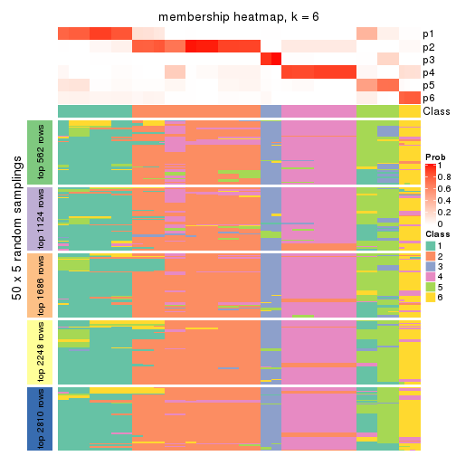
As soon as we have had the classes for columns, we can look for signatures which are significantly different between classes which can be candidate marks for certain classes. Following are the heatmaps for signatures.
Signature heatmaps where rows are scaled:
get_signatures(res, k = 2)
get_signatures(res, k = 3)
get_signatures(res, k = 4)
get_signatures(res, k = 5)
get_signatures(res, k = 6)
Signature heatmaps where rows are not scaled:
get_signatures(res, k = 2, scale_rows = FALSE)
get_signatures(res, k = 3, scale_rows = FALSE)
get_signatures(res, k = 4, scale_rows = FALSE)
get_signatures(res, k = 5, scale_rows = FALSE)
get_signatures(res, k = 6, scale_rows = FALSE)
Compare the overlap of signatures from different k:
compare_signatures(res)
get_signature() returns a data frame invisibly. TO get the list of signatures, the function
call should be assigned to a variable explicitly. In following code, if plot argument is set
to FALSE, no heatmap is plotted while only the differential analysis is performed.
# code only for demonstration
tb = get_signature(res, k = ..., plot = FALSE)
An example of the output of tb is:
#> which_row fdr mean_1 mean_2 scaled_mean_1 scaled_mean_2 km
#> 1 38 0.042760348 8.373488 9.131774 -0.5533452 0.5164555 1
#> 2 40 0.018707592 7.106213 8.469186 -0.6173731 0.5762149 1
#> 3 55 0.019134737 10.221463 11.207825 -0.6159697 0.5749050 1
#> 4 59 0.006059896 5.921854 7.869574 -0.6899429 0.6439467 1
#> 5 60 0.018055526 8.928898 10.211722 -0.6204761 0.5791110 1
#> 6 98 0.009384629 15.714769 14.887706 0.6635654 -0.6193277 2
...
The columns in tb are:
which_row: row indices corresponding to the input matrix.fdr: FDR for the differential test. mean_x: The mean value in group x.scaled_mean_x: The mean value in group x after rows are scaled.km: Row groups if k-means clustering is applied to rows.UMAP plot which shows how samples are separated.
dimension_reduction(res, k = 2, method = "UMAP")
dimension_reduction(res, k = 3, method = "UMAP")
dimension_reduction(res, k = 4, method = "UMAP")
dimension_reduction(res, k = 5, method = "UMAP")
dimension_reduction(res, k = 6, method = "UMAP")
Following heatmap shows how subgroups are split when increasing k:
collect_classes(res)
If matrix rows can be associated to genes, consider to use functional_enrichment(res,
...) to perform function enrichment for the signature genes. See this vignette for more detailed explanations.
The object with results only for a single top-value method and a single partition method can be extracted as:
res = res_list["SD", "skmeans"]
# you can also extract it by
# res = res_list["SD:skmeans"]
A summary of res and all the functions that can be applied to it:
res
#> A 'ConsensusPartition' object with k = 2, 3, 4, 5, 6.
#> On a matrix with 5619 rows and 68 columns.
#> Top rows (562, 1124, 1686, 2248, 2810) are extracted by 'SD' method.
#> Subgroups are detected by 'skmeans' method.
#> Performed in total 1250 partitions by row resampling.
#> Best k for subgroups seems to be 3.
#>
#> Following methods can be applied to this 'ConsensusPartition' object:
#> [1] "cola_report" "collect_classes" "collect_plots"
#> [4] "collect_stats" "colnames" "compare_signatures"
#> [7] "consensus_heatmap" "dimension_reduction" "functional_enrichment"
#> [10] "get_anno_col" "get_anno" "get_classes"
#> [13] "get_consensus" "get_matrix" "get_membership"
#> [16] "get_param" "get_signatures" "get_stats"
#> [19] "is_best_k" "is_stable_k" "membership_heatmap"
#> [22] "ncol" "nrow" "plot_ecdf"
#> [25] "rownames" "select_partition_number" "show"
#> [28] "suggest_best_k" "test_to_known_factors"
collect_plots() function collects all the plots made from res for all k (number of partitions)
into one single page to provide an easy and fast comparison between different k.
collect_plots(res)
The plots are:
k and the heatmap of
predicted classes for each k.k.k.k.All the plots in panels can be made by individual functions and they are plotted later in this section.
select_partition_number() produces several plots showing different
statistics for choosing “optimized” k. There are following statistics:
k;k, the area increased is defined as \(A_k - A_{k-1}\).The detailed explanations of these statistics can be found in the cola vignette.
Generally speaking, lower PAC score, higher mean silhouette score or higher
concordance corresponds to better partition. Rand index and Jaccard index
measure how similar the current partition is compared to partition with k-1.
If they are too similar, we won't accept k is better than k-1.
select_partition_number(res)
The numeric values for all these statistics can be obtained by get_stats().
get_stats(res)
#> k 1-PAC mean_silhouette concordance area_increased Rand Jaccard
#> 2 2 1.000 0.955 0.982 0.4924 0.508 0.508
#> 3 3 1.000 0.977 0.981 0.3642 0.784 0.589
#> 4 4 0.865 0.761 0.841 0.1090 0.870 0.631
#> 5 5 0.800 0.795 0.862 0.0491 0.975 0.900
#> 6 6 0.845 0.802 0.871 0.0391 0.963 0.834
suggest_best_k() suggests the best \(k\) based on these statistics. The rules are as follows:
suggest_best_k(res)
#> [1] 3
#> attr(,"optional")
#> [1] 2
There is also optional best \(k\) = 2 that is worth to check.
Following shows the table of the partitions (You need to click the show/hide
code output link to see it). The membership matrix (columns with name p*)
is inferred by
clue::cl_consensus()
function with the SE method. Basically the value in the membership matrix
represents the probability to belong to a certain group. The finall class
label for an item is determined with the group with highest probability it
belongs to.
In get_classes() function, the entropy is calculated from the membership
matrix and the silhouette score is calculated from the consensus matrix.
cbind(get_classes(res, k = 2), get_membership(res, k = 2))
#> class entropy silhouette p1 p2
#> SRR1035618 2 0.000 0.981 0.000 1.000
#> SRR1035619 2 0.000 0.981 0.000 1.000
#> SRR1035620 2 0.000 0.981 0.000 1.000
#> SRR1035621 2 0.000 0.981 0.000 1.000
#> SRR1035622 2 0.000 0.981 0.000 1.000
#> SRR1035623 2 0.000 0.981 0.000 1.000
#> SRR1035626 2 0.861 0.592 0.284 0.716
#> SRR1035627 2 0.983 0.249 0.424 0.576
#> SRR1035628 1 0.738 0.733 0.792 0.208
#> SRR1035629 1 0.861 0.601 0.716 0.284
#> SRR1035624 2 0.000 0.981 0.000 1.000
#> SRR1035625 2 0.000 0.981 0.000 1.000
#> SRR1035630 2 0.000 0.981 0.000 1.000
#> SRR1035631 2 0.000 0.981 0.000 1.000
#> SRR1035632 1 0.000 0.981 1.000 0.000
#> SRR1035633 1 0.000 0.981 1.000 0.000
#> SRR1035634 1 0.000 0.981 1.000 0.000
#> SRR1035635 1 0.000 0.981 1.000 0.000
#> SRR1035636 2 0.000 0.981 0.000 1.000
#> SRR1035637 2 0.000 0.981 0.000 1.000
#> SRR1035638 2 0.000 0.981 0.000 1.000
#> SRR1035639 2 0.000 0.981 0.000 1.000
#> SRR1035640 1 0.000 0.981 1.000 0.000
#> SRR1035641 1 0.000 0.981 1.000 0.000
#> SRR1035642 2 0.000 0.981 0.000 1.000
#> SRR1035643 2 0.000 0.981 0.000 1.000
#> SRR1035644 2 0.000 0.981 0.000 1.000
#> SRR1035645 2 0.000 0.981 0.000 1.000
#> SRR1035646 2 0.000 0.981 0.000 1.000
#> SRR1035647 2 0.000 0.981 0.000 1.000
#> SRR1035648 2 0.000 0.981 0.000 1.000
#> SRR1035649 2 0.000 0.981 0.000 1.000
#> SRR1035654 1 0.000 0.981 1.000 0.000
#> SRR1035655 1 0.000 0.981 1.000 0.000
#> SRR1035656 1 0.000 0.981 1.000 0.000
#> SRR1035657 1 0.000 0.981 1.000 0.000
#> SRR1035650 2 0.000 0.981 0.000 1.000
#> SRR1035651 2 0.000 0.981 0.000 1.000
#> SRR1035652 2 0.000 0.981 0.000 1.000
#> SRR1035653 2 0.000 0.981 0.000 1.000
#> SRR1035660 2 0.000 0.981 0.000 1.000
#> SRR1035661 2 0.000 0.981 0.000 1.000
#> SRR1035662 2 0.000 0.981 0.000 1.000
#> SRR1035663 2 0.000 0.981 0.000 1.000
#> SRR1035658 2 0.000 0.981 0.000 1.000
#> SRR1035659 2 0.000 0.981 0.000 1.000
#> SRR1035666 1 0.000 0.981 1.000 0.000
#> SRR1035667 1 0.000 0.981 1.000 0.000
#> SRR1035668 1 0.000 0.981 1.000 0.000
#> SRR1035669 1 0.000 0.981 1.000 0.000
#> SRR1035664 2 0.000 0.981 0.000 1.000
#> SRR1035665 2 0.000 0.981 0.000 1.000
#> SRR1035670 1 0.000 0.981 1.000 0.000
#> SRR1035671 1 0.000 0.981 1.000 0.000
#> SRR1035672 1 0.000 0.981 1.000 0.000
#> SRR1035673 1 0.000 0.981 1.000 0.000
#> SRR1035674 1 0.000 0.981 1.000 0.000
#> SRR1035675 1 0.000 0.981 1.000 0.000
#> SRR1035676 1 0.000 0.981 1.000 0.000
#> SRR1035677 1 0.000 0.981 1.000 0.000
#> SRR1035682 2 0.000 0.981 0.000 1.000
#> SRR1035683 2 0.000 0.981 0.000 1.000
#> SRR1035684 2 0.000 0.981 0.000 1.000
#> SRR1035685 2 0.000 0.981 0.000 1.000
#> SRR1035678 1 0.000 0.981 1.000 0.000
#> SRR1035679 1 0.000 0.981 1.000 0.000
#> SRR1035680 1 0.000 0.981 1.000 0.000
#> SRR1035681 1 0.000 0.981 1.000 0.000
cbind(get_classes(res, k = 3), get_membership(res, k = 3))
#> class entropy silhouette p1 p2 p3
#> SRR1035618 3 0.1163 0.991 0.000 0.028 0.972
#> SRR1035619 3 0.1163 0.991 0.000 0.028 0.972
#> SRR1035620 3 0.1163 0.991 0.000 0.028 0.972
#> SRR1035621 3 0.1163 0.991 0.000 0.028 0.972
#> SRR1035622 3 0.1163 0.991 0.000 0.028 0.972
#> SRR1035623 3 0.1163 0.991 0.000 0.028 0.972
#> SRR1035626 2 0.1163 0.957 0.028 0.972 0.000
#> SRR1035627 2 0.1163 0.957 0.028 0.972 0.000
#> SRR1035628 2 0.1163 0.957 0.028 0.972 0.000
#> SRR1035629 2 0.1163 0.957 0.028 0.972 0.000
#> SRR1035624 3 0.1163 0.991 0.000 0.028 0.972
#> SRR1035625 3 0.1163 0.991 0.000 0.028 0.972
#> SRR1035630 2 0.0000 0.974 0.000 1.000 0.000
#> SRR1035631 2 0.0000 0.974 0.000 1.000 0.000
#> SRR1035632 1 0.0000 0.986 1.000 0.000 0.000
#> SRR1035633 1 0.0000 0.986 1.000 0.000 0.000
#> SRR1035634 1 0.0000 0.986 1.000 0.000 0.000
#> SRR1035635 1 0.0000 0.986 1.000 0.000 0.000
#> SRR1035636 2 0.0000 0.974 0.000 1.000 0.000
#> SRR1035637 2 0.0000 0.974 0.000 1.000 0.000
#> SRR1035638 2 0.0000 0.974 0.000 1.000 0.000
#> SRR1035639 2 0.0000 0.974 0.000 1.000 0.000
#> SRR1035640 1 0.1163 0.988 0.972 0.000 0.028
#> SRR1035641 1 0.1163 0.988 0.972 0.000 0.028
#> SRR1035642 3 0.1163 0.991 0.000 0.028 0.972
#> SRR1035643 3 0.1163 0.991 0.000 0.028 0.972
#> SRR1035644 3 0.1163 0.991 0.000 0.028 0.972
#> SRR1035645 3 0.1163 0.991 0.000 0.028 0.972
#> SRR1035646 2 0.2959 0.900 0.000 0.900 0.100
#> SRR1035647 2 0.2959 0.900 0.000 0.900 0.100
#> SRR1035648 2 0.2959 0.900 0.000 0.900 0.100
#> SRR1035649 2 0.2959 0.900 0.000 0.900 0.100
#> SRR1035654 1 0.1163 0.988 0.972 0.000 0.028
#> SRR1035655 1 0.1163 0.988 0.972 0.000 0.028
#> SRR1035656 1 0.1163 0.988 0.972 0.000 0.028
#> SRR1035657 1 0.1163 0.988 0.972 0.000 0.028
#> SRR1035650 2 0.0000 0.974 0.000 1.000 0.000
#> SRR1035651 2 0.0000 0.974 0.000 1.000 0.000
#> SRR1035652 2 0.0000 0.974 0.000 1.000 0.000
#> SRR1035653 2 0.0000 0.974 0.000 1.000 0.000
#> SRR1035660 3 0.0000 0.975 0.000 0.000 1.000
#> SRR1035661 3 0.0000 0.975 0.000 0.000 1.000
#> SRR1035662 3 0.0424 0.981 0.000 0.008 0.992
#> SRR1035663 3 0.0424 0.981 0.000 0.008 0.992
#> SRR1035658 3 0.0000 0.975 0.000 0.000 1.000
#> SRR1035659 3 0.0000 0.975 0.000 0.000 1.000
#> SRR1035666 1 0.0000 0.986 1.000 0.000 0.000
#> SRR1035667 1 0.0000 0.986 1.000 0.000 0.000
#> SRR1035668 1 0.0000 0.986 1.000 0.000 0.000
#> SRR1035669 1 0.0000 0.986 1.000 0.000 0.000
#> SRR1035664 3 0.1163 0.991 0.000 0.028 0.972
#> SRR1035665 3 0.1163 0.991 0.000 0.028 0.972
#> SRR1035670 1 0.1163 0.988 0.972 0.000 0.028
#> SRR1035671 1 0.1163 0.988 0.972 0.000 0.028
#> SRR1035672 1 0.1163 0.988 0.972 0.000 0.028
#> SRR1035673 1 0.1163 0.988 0.972 0.000 0.028
#> SRR1035674 1 0.1163 0.988 0.972 0.000 0.028
#> SRR1035675 1 0.1163 0.988 0.972 0.000 0.028
#> SRR1035676 1 0.1163 0.988 0.972 0.000 0.028
#> SRR1035677 1 0.1163 0.988 0.972 0.000 0.028
#> SRR1035682 2 0.0000 0.974 0.000 1.000 0.000
#> SRR1035683 2 0.0000 0.974 0.000 1.000 0.000
#> SRR1035684 2 0.0000 0.974 0.000 1.000 0.000
#> SRR1035685 2 0.0000 0.974 0.000 1.000 0.000
#> SRR1035678 1 0.0000 0.986 1.000 0.000 0.000
#> SRR1035679 1 0.0000 0.986 1.000 0.000 0.000
#> SRR1035680 1 0.0000 0.986 1.000 0.000 0.000
#> SRR1035681 1 0.0000 0.986 1.000 0.000 0.000
cbind(get_classes(res, k = 4), get_membership(res, k = 4))
#> class entropy silhouette p1 p2 p3 p4
#> SRR1035618 2 0.0188 0.981 0.000 0.996 0.000 0.004
#> SRR1035619 2 0.0188 0.981 0.000 0.996 0.000 0.004
#> SRR1035620 2 0.0188 0.981 0.000 0.996 0.000 0.004
#> SRR1035621 2 0.0188 0.981 0.000 0.996 0.000 0.004
#> SRR1035622 2 0.0188 0.981 0.000 0.996 0.000 0.004
#> SRR1035623 2 0.0188 0.981 0.000 0.996 0.000 0.004
#> SRR1035626 1 0.7711 -0.336 0.444 0.000 0.308 0.248
#> SRR1035627 1 0.7634 -0.362 0.444 0.000 0.340 0.216
#> SRR1035628 1 0.7659 -0.354 0.444 0.000 0.332 0.224
#> SRR1035629 1 0.7669 -0.350 0.444 0.000 0.328 0.228
#> SRR1035624 2 0.0188 0.981 0.000 0.996 0.000 0.004
#> SRR1035625 2 0.0188 0.981 0.000 0.996 0.000 0.004
#> SRR1035630 4 0.0000 0.959 0.000 0.000 0.000 1.000
#> SRR1035631 4 0.0000 0.959 0.000 0.000 0.000 1.000
#> SRR1035632 3 0.4948 0.529 0.440 0.000 0.560 0.000
#> SRR1035633 3 0.4948 0.529 0.440 0.000 0.560 0.000
#> SRR1035634 3 0.4948 0.529 0.440 0.000 0.560 0.000
#> SRR1035635 3 0.4948 0.529 0.440 0.000 0.560 0.000
#> SRR1035636 4 0.0000 0.959 0.000 0.000 0.000 1.000
#> SRR1035637 4 0.0000 0.959 0.000 0.000 0.000 1.000
#> SRR1035638 4 0.0000 0.959 0.000 0.000 0.000 1.000
#> SRR1035639 4 0.0000 0.959 0.000 0.000 0.000 1.000
#> SRR1035640 1 0.4961 0.674 0.552 0.000 0.448 0.000
#> SRR1035641 1 0.4961 0.674 0.552 0.000 0.448 0.000
#> SRR1035642 2 0.0188 0.981 0.000 0.996 0.000 0.004
#> SRR1035643 2 0.0188 0.981 0.000 0.996 0.000 0.004
#> SRR1035644 2 0.0188 0.981 0.000 0.996 0.000 0.004
#> SRR1035645 2 0.0188 0.981 0.000 0.996 0.000 0.004
#> SRR1035646 4 0.3074 0.850 0.000 0.152 0.000 0.848
#> SRR1035647 4 0.3074 0.850 0.000 0.152 0.000 0.848
#> SRR1035648 4 0.3074 0.850 0.000 0.152 0.000 0.848
#> SRR1035649 4 0.3074 0.850 0.000 0.152 0.000 0.848
#> SRR1035654 1 0.5119 0.671 0.556 0.004 0.440 0.000
#> SRR1035655 1 0.5119 0.671 0.556 0.004 0.440 0.000
#> SRR1035656 1 0.5119 0.671 0.556 0.004 0.440 0.000
#> SRR1035657 1 0.5119 0.671 0.556 0.004 0.440 0.000
#> SRR1035650 4 0.0000 0.959 0.000 0.000 0.000 1.000
#> SRR1035651 4 0.0000 0.959 0.000 0.000 0.000 1.000
#> SRR1035652 4 0.0000 0.959 0.000 0.000 0.000 1.000
#> SRR1035653 4 0.0000 0.959 0.000 0.000 0.000 1.000
#> SRR1035660 2 0.1716 0.939 0.064 0.936 0.000 0.000
#> SRR1035661 2 0.1867 0.933 0.072 0.928 0.000 0.000
#> SRR1035662 2 0.0336 0.977 0.008 0.992 0.000 0.000
#> SRR1035663 2 0.0336 0.977 0.008 0.992 0.000 0.000
#> SRR1035658 2 0.2149 0.914 0.088 0.912 0.000 0.000
#> SRR1035659 2 0.2149 0.914 0.088 0.912 0.000 0.000
#> SRR1035666 3 0.0000 0.686 0.000 0.000 1.000 0.000
#> SRR1035667 3 0.0000 0.686 0.000 0.000 1.000 0.000
#> SRR1035668 3 0.0000 0.686 0.000 0.000 1.000 0.000
#> SRR1035669 3 0.0000 0.686 0.000 0.000 1.000 0.000
#> SRR1035664 2 0.0000 0.979 0.000 1.000 0.000 0.000
#> SRR1035665 2 0.0000 0.979 0.000 1.000 0.000 0.000
#> SRR1035670 1 0.4961 0.674 0.552 0.000 0.448 0.000
#> SRR1035671 1 0.4961 0.674 0.552 0.000 0.448 0.000
#> SRR1035672 1 0.4961 0.674 0.552 0.000 0.448 0.000
#> SRR1035673 1 0.4961 0.674 0.552 0.000 0.448 0.000
#> SRR1035674 1 0.4972 0.669 0.544 0.000 0.456 0.000
#> SRR1035675 1 0.4972 0.669 0.544 0.000 0.456 0.000
#> SRR1035676 1 0.4972 0.669 0.544 0.000 0.456 0.000
#> SRR1035677 1 0.4972 0.669 0.544 0.000 0.456 0.000
#> SRR1035682 4 0.0000 0.959 0.000 0.000 0.000 1.000
#> SRR1035683 4 0.0000 0.959 0.000 0.000 0.000 1.000
#> SRR1035684 4 0.0000 0.959 0.000 0.000 0.000 1.000
#> SRR1035685 4 0.0000 0.959 0.000 0.000 0.000 1.000
#> SRR1035678 3 0.0469 0.677 0.012 0.000 0.988 0.000
#> SRR1035679 3 0.0469 0.677 0.012 0.000 0.988 0.000
#> SRR1035680 3 0.0707 0.666 0.020 0.000 0.980 0.000
#> SRR1035681 3 0.0707 0.666 0.020 0.000 0.980 0.000
cbind(get_classes(res, k = 5), get_membership(res, k = 5))
#> class entropy silhouette p1 p2 p3 p4 p5
#> SRR1035618 2 0.0000 0.862 0.000 1.000 0.000 0.000 0.000
#> SRR1035619 2 0.0000 0.862 0.000 1.000 0.000 0.000 0.000
#> SRR1035620 2 0.0000 0.862 0.000 1.000 0.000 0.000 0.000
#> SRR1035621 2 0.0000 0.862 0.000 1.000 0.000 0.000 0.000
#> SRR1035622 2 0.0162 0.862 0.000 0.996 0.004 0.000 0.000
#> SRR1035623 2 0.0162 0.862 0.000 0.996 0.004 0.000 0.000
#> SRR1035626 3 0.5652 0.983 0.000 0.000 0.564 0.092 0.344
#> SRR1035627 3 0.5547 0.987 0.000 0.000 0.564 0.080 0.356
#> SRR1035628 3 0.5583 0.991 0.000 0.000 0.564 0.084 0.352
#> SRR1035629 3 0.5583 0.991 0.000 0.000 0.564 0.084 0.352
#> SRR1035624 2 0.0162 0.862 0.000 0.996 0.004 0.000 0.000
#> SRR1035625 2 0.0162 0.862 0.000 0.996 0.004 0.000 0.000
#> SRR1035630 4 0.0000 0.882 0.000 0.000 0.000 1.000 0.000
#> SRR1035631 4 0.0000 0.882 0.000 0.000 0.000 1.000 0.000
#> SRR1035632 5 0.1410 0.452 0.000 0.000 0.060 0.000 0.940
#> SRR1035633 5 0.1410 0.452 0.000 0.000 0.060 0.000 0.940
#> SRR1035634 5 0.1410 0.452 0.000 0.000 0.060 0.000 0.940
#> SRR1035635 5 0.1410 0.452 0.000 0.000 0.060 0.000 0.940
#> SRR1035636 4 0.0000 0.882 0.000 0.000 0.000 1.000 0.000
#> SRR1035637 4 0.0000 0.882 0.000 0.000 0.000 1.000 0.000
#> SRR1035638 4 0.0000 0.882 0.000 0.000 0.000 1.000 0.000
#> SRR1035639 4 0.0000 0.882 0.000 0.000 0.000 1.000 0.000
#> SRR1035640 1 0.1410 0.875 0.940 0.000 0.060 0.000 0.000
#> SRR1035641 1 0.1410 0.875 0.940 0.000 0.060 0.000 0.000
#> SRR1035642 2 0.0162 0.861 0.000 0.996 0.004 0.000 0.000
#> SRR1035643 2 0.0162 0.861 0.000 0.996 0.004 0.000 0.000
#> SRR1035644 2 0.0162 0.861 0.000 0.996 0.004 0.000 0.000
#> SRR1035645 2 0.0162 0.861 0.000 0.996 0.004 0.000 0.000
#> SRR1035646 4 0.4211 0.544 0.000 0.360 0.004 0.636 0.000
#> SRR1035647 4 0.4211 0.544 0.000 0.360 0.004 0.636 0.000
#> SRR1035648 4 0.4211 0.544 0.000 0.360 0.004 0.636 0.000
#> SRR1035649 4 0.4211 0.544 0.000 0.360 0.004 0.636 0.000
#> SRR1035654 1 0.3521 0.788 0.764 0.000 0.232 0.000 0.004
#> SRR1035655 1 0.3521 0.788 0.764 0.000 0.232 0.000 0.004
#> SRR1035656 1 0.3521 0.788 0.764 0.000 0.232 0.000 0.004
#> SRR1035657 1 0.3521 0.788 0.764 0.000 0.232 0.000 0.004
#> SRR1035650 4 0.0000 0.882 0.000 0.000 0.000 1.000 0.000
#> SRR1035651 4 0.0000 0.882 0.000 0.000 0.000 1.000 0.000
#> SRR1035652 4 0.0000 0.882 0.000 0.000 0.000 1.000 0.000
#> SRR1035653 4 0.0000 0.882 0.000 0.000 0.000 1.000 0.000
#> SRR1035660 2 0.5401 0.554 0.060 0.536 0.404 0.000 0.000
#> SRR1035661 2 0.5513 0.542 0.068 0.524 0.408 0.000 0.000
#> SRR1035662 2 0.3969 0.691 0.004 0.692 0.304 0.000 0.000
#> SRR1035663 2 0.4213 0.684 0.012 0.680 0.308 0.000 0.000
#> SRR1035658 2 0.5956 0.477 0.108 0.476 0.416 0.000 0.000
#> SRR1035659 2 0.5956 0.477 0.108 0.476 0.416 0.000 0.000
#> SRR1035666 5 0.3752 0.799 0.292 0.000 0.000 0.000 0.708
#> SRR1035667 5 0.3752 0.799 0.292 0.000 0.000 0.000 0.708
#> SRR1035668 5 0.3752 0.799 0.292 0.000 0.000 0.000 0.708
#> SRR1035669 5 0.3752 0.799 0.292 0.000 0.000 0.000 0.708
#> SRR1035664 2 0.0404 0.860 0.000 0.988 0.012 0.000 0.000
#> SRR1035665 2 0.0404 0.860 0.000 0.988 0.012 0.000 0.000
#> SRR1035670 1 0.0324 0.886 0.992 0.000 0.004 0.000 0.004
#> SRR1035671 1 0.0324 0.886 0.992 0.000 0.004 0.000 0.004
#> SRR1035672 1 0.0324 0.886 0.992 0.000 0.004 0.000 0.004
#> SRR1035673 1 0.0324 0.886 0.992 0.000 0.004 0.000 0.004
#> SRR1035674 1 0.0963 0.870 0.964 0.000 0.000 0.000 0.036
#> SRR1035675 1 0.0963 0.870 0.964 0.000 0.000 0.000 0.036
#> SRR1035676 1 0.0963 0.870 0.964 0.000 0.000 0.000 0.036
#> SRR1035677 1 0.0963 0.870 0.964 0.000 0.000 0.000 0.036
#> SRR1035682 4 0.0000 0.882 0.000 0.000 0.000 1.000 0.000
#> SRR1035683 4 0.0000 0.882 0.000 0.000 0.000 1.000 0.000
#> SRR1035684 4 0.0000 0.882 0.000 0.000 0.000 1.000 0.000
#> SRR1035685 4 0.0000 0.882 0.000 0.000 0.000 1.000 0.000
#> SRR1035678 5 0.3913 0.784 0.324 0.000 0.000 0.000 0.676
#> SRR1035679 5 0.3895 0.788 0.320 0.000 0.000 0.000 0.680
#> SRR1035680 5 0.3895 0.788 0.320 0.000 0.000 0.000 0.680
#> SRR1035681 5 0.3966 0.769 0.336 0.000 0.000 0.000 0.664
cbind(get_classes(res, k = 6), get_membership(res, k = 6))
#> class entropy silhouette p1 p2 p3 p4 p5 p6
#> SRR1035618 2 0.0146 0.973 0.000 0.996 0.000 0.000 0.004 0.000
#> SRR1035619 2 0.0146 0.973 0.000 0.996 0.000 0.000 0.004 0.000
#> SRR1035620 2 0.0146 0.973 0.000 0.996 0.000 0.000 0.004 0.000
#> SRR1035621 2 0.0146 0.973 0.000 0.996 0.000 0.000 0.004 0.000
#> SRR1035622 2 0.0632 0.969 0.000 0.976 0.024 0.000 0.000 0.000
#> SRR1035623 2 0.0632 0.969 0.000 0.976 0.024 0.000 0.000 0.000
#> SRR1035626 6 0.0551 0.991 0.000 0.000 0.008 0.004 0.004 0.984
#> SRR1035627 6 0.0767 0.991 0.000 0.000 0.004 0.008 0.012 0.976
#> SRR1035628 6 0.0551 0.993 0.000 0.000 0.004 0.004 0.008 0.984
#> SRR1035629 6 0.0508 0.991 0.000 0.000 0.000 0.004 0.012 0.984
#> SRR1035624 2 0.0632 0.969 0.000 0.976 0.024 0.000 0.000 0.000
#> SRR1035625 2 0.0632 0.969 0.000 0.976 0.024 0.000 0.000 0.000
#> SRR1035630 4 0.0000 0.871 0.000 0.000 0.000 1.000 0.000 0.000
#> SRR1035631 4 0.0000 0.871 0.000 0.000 0.000 1.000 0.000 0.000
#> SRR1035632 5 0.3867 0.661 0.000 0.000 0.052 0.000 0.748 0.200
#> SRR1035633 5 0.3867 0.661 0.000 0.000 0.052 0.000 0.748 0.200
#> SRR1035634 5 0.3867 0.661 0.000 0.000 0.052 0.000 0.748 0.200
#> SRR1035635 5 0.3867 0.661 0.000 0.000 0.052 0.000 0.748 0.200
#> SRR1035636 4 0.0146 0.869 0.000 0.000 0.004 0.996 0.000 0.000
#> SRR1035637 4 0.0146 0.869 0.000 0.000 0.004 0.996 0.000 0.000
#> SRR1035638 4 0.0146 0.869 0.000 0.000 0.004 0.996 0.000 0.000
#> SRR1035639 4 0.0146 0.869 0.000 0.000 0.004 0.996 0.000 0.000
#> SRR1035640 1 0.2766 0.747 0.852 0.000 0.124 0.000 0.020 0.004
#> SRR1035641 1 0.2766 0.747 0.852 0.000 0.124 0.000 0.020 0.004
#> SRR1035642 2 0.0508 0.966 0.000 0.984 0.012 0.000 0.004 0.000
#> SRR1035643 2 0.0508 0.966 0.000 0.984 0.012 0.000 0.004 0.000
#> SRR1035644 2 0.0508 0.966 0.000 0.984 0.012 0.000 0.004 0.000
#> SRR1035645 2 0.0508 0.966 0.000 0.984 0.012 0.000 0.004 0.000
#> SRR1035646 4 0.4249 0.398 0.000 0.416 0.012 0.568 0.004 0.000
#> SRR1035647 4 0.4249 0.398 0.000 0.416 0.012 0.568 0.004 0.000
#> SRR1035648 4 0.4242 0.406 0.000 0.412 0.012 0.572 0.004 0.000
#> SRR1035649 4 0.4249 0.398 0.000 0.416 0.012 0.568 0.004 0.000
#> SRR1035654 1 0.4940 0.489 0.520 0.000 0.428 0.000 0.040 0.012
#> SRR1035655 1 0.4940 0.489 0.520 0.000 0.428 0.000 0.040 0.012
#> SRR1035656 1 0.4940 0.489 0.520 0.000 0.428 0.000 0.040 0.012
#> SRR1035657 1 0.4940 0.489 0.520 0.000 0.428 0.000 0.040 0.012
#> SRR1035650 4 0.0000 0.871 0.000 0.000 0.000 1.000 0.000 0.000
#> SRR1035651 4 0.0000 0.871 0.000 0.000 0.000 1.000 0.000 0.000
#> SRR1035652 4 0.0000 0.871 0.000 0.000 0.000 1.000 0.000 0.000
#> SRR1035653 4 0.0000 0.871 0.000 0.000 0.000 1.000 0.000 0.000
#> SRR1035660 3 0.3738 0.834 0.040 0.208 0.752 0.000 0.000 0.000
#> SRR1035661 3 0.3773 0.832 0.044 0.204 0.752 0.000 0.000 0.000
#> SRR1035662 3 0.4265 0.693 0.016 0.384 0.596 0.000 0.004 0.000
#> SRR1035663 3 0.4371 0.668 0.020 0.396 0.580 0.000 0.004 0.000
#> SRR1035658 3 0.2946 0.802 0.012 0.176 0.812 0.000 0.000 0.000
#> SRR1035659 3 0.2946 0.802 0.012 0.176 0.812 0.000 0.000 0.000
#> SRR1035666 5 0.1556 0.816 0.080 0.000 0.000 0.000 0.920 0.000
#> SRR1035667 5 0.1556 0.816 0.080 0.000 0.000 0.000 0.920 0.000
#> SRR1035668 5 0.1556 0.816 0.080 0.000 0.000 0.000 0.920 0.000
#> SRR1035669 5 0.1556 0.816 0.080 0.000 0.000 0.000 0.920 0.000
#> SRR1035664 2 0.1010 0.956 0.000 0.960 0.036 0.000 0.004 0.000
#> SRR1035665 2 0.1010 0.956 0.000 0.960 0.036 0.000 0.004 0.000
#> SRR1035670 1 0.1500 0.786 0.936 0.000 0.012 0.000 0.052 0.000
#> SRR1035671 1 0.1563 0.786 0.932 0.000 0.012 0.000 0.056 0.000
#> SRR1035672 1 0.1398 0.786 0.940 0.000 0.008 0.000 0.052 0.000
#> SRR1035673 1 0.1434 0.786 0.940 0.000 0.012 0.000 0.048 0.000
#> SRR1035674 1 0.1814 0.769 0.900 0.000 0.000 0.000 0.100 0.000
#> SRR1035675 1 0.1814 0.769 0.900 0.000 0.000 0.000 0.100 0.000
#> SRR1035676 1 0.1814 0.769 0.900 0.000 0.000 0.000 0.100 0.000
#> SRR1035677 1 0.1814 0.769 0.900 0.000 0.000 0.000 0.100 0.000
#> SRR1035682 4 0.0000 0.871 0.000 0.000 0.000 1.000 0.000 0.000
#> SRR1035683 4 0.0000 0.871 0.000 0.000 0.000 1.000 0.000 0.000
#> SRR1035684 4 0.0000 0.871 0.000 0.000 0.000 1.000 0.000 0.000
#> SRR1035685 4 0.0000 0.871 0.000 0.000 0.000 1.000 0.000 0.000
#> SRR1035678 5 0.3393 0.771 0.192 0.000 0.004 0.000 0.784 0.020
#> SRR1035679 5 0.3263 0.781 0.176 0.000 0.004 0.000 0.800 0.020
#> SRR1035680 5 0.3485 0.759 0.204 0.000 0.004 0.000 0.772 0.020
#> SRR1035681 5 0.3543 0.750 0.212 0.000 0.004 0.000 0.764 0.020
Heatmaps for the consensus matrix. It visualizes the probability of two samples to be in a same group.
consensus_heatmap(res, k = 2)
consensus_heatmap(res, k = 3)
consensus_heatmap(res, k = 4)
consensus_heatmap(res, k = 5)
consensus_heatmap(res, k = 6)
Heatmaps for the membership of samples in all partitions to see how consistent they are:
membership_heatmap(res, k = 2)
membership_heatmap(res, k = 3)

membership_heatmap(res, k = 4)
membership_heatmap(res, k = 5)
membership_heatmap(res, k = 6)
As soon as we have had the classes for columns, we can look for signatures which are significantly different between classes which can be candidate marks for certain classes. Following are the heatmaps for signatures.
Signature heatmaps where rows are scaled:
get_signatures(res, k = 2)
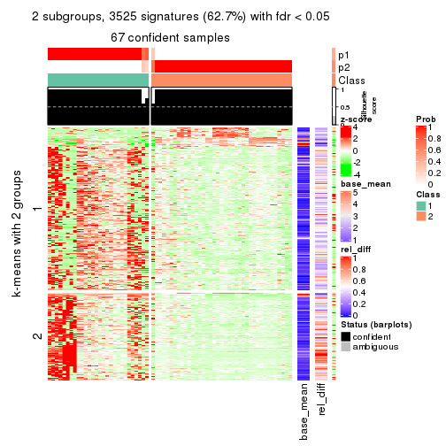
get_signatures(res, k = 3)
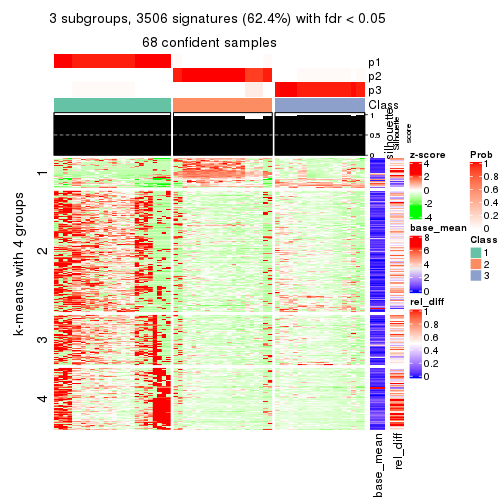
get_signatures(res, k = 4)
get_signatures(res, k = 5)
get_signatures(res, k = 6)
Signature heatmaps where rows are not scaled:
get_signatures(res, k = 2, scale_rows = FALSE)
get_signatures(res, k = 3, scale_rows = FALSE)
get_signatures(res, k = 4, scale_rows = FALSE)
get_signatures(res, k = 5, scale_rows = FALSE)
get_signatures(res, k = 6, scale_rows = FALSE)
Compare the overlap of signatures from different k:
compare_signatures(res)
get_signature() returns a data frame invisibly. TO get the list of signatures, the function
call should be assigned to a variable explicitly. In following code, if plot argument is set
to FALSE, no heatmap is plotted while only the differential analysis is performed.
# code only for demonstration
tb = get_signature(res, k = ..., plot = FALSE)
An example of the output of tb is:
#> which_row fdr mean_1 mean_2 scaled_mean_1 scaled_mean_2 km
#> 1 38 0.042760348 8.373488 9.131774 -0.5533452 0.5164555 1
#> 2 40 0.018707592 7.106213 8.469186 -0.6173731 0.5762149 1
#> 3 55 0.019134737 10.221463 11.207825 -0.6159697 0.5749050 1
#> 4 59 0.006059896 5.921854 7.869574 -0.6899429 0.6439467 1
#> 5 60 0.018055526 8.928898 10.211722 -0.6204761 0.5791110 1
#> 6 98 0.009384629 15.714769 14.887706 0.6635654 -0.6193277 2
...
The columns in tb are:
which_row: row indices corresponding to the input matrix.fdr: FDR for the differential test. mean_x: The mean value in group x.scaled_mean_x: The mean value in group x after rows are scaled.km: Row groups if k-means clustering is applied to rows.UMAP plot which shows how samples are separated.
dimension_reduction(res, k = 2, method = "UMAP")
dimension_reduction(res, k = 3, method = "UMAP")
dimension_reduction(res, k = 4, method = "UMAP")
dimension_reduction(res, k = 5, method = "UMAP")

dimension_reduction(res, k = 6, method = "UMAP")
Following heatmap shows how subgroups are split when increasing k:
collect_classes(res)
If matrix rows can be associated to genes, consider to use functional_enrichment(res,
...) to perform function enrichment for the signature genes. See this vignette for more detailed explanations.
The object with results only for a single top-value method and a single partition method can be extracted as:
res = res_list["SD", "pam"]
# you can also extract it by
# res = res_list["SD:pam"]
A summary of res and all the functions that can be applied to it:
res
#> A 'ConsensusPartition' object with k = 2, 3, 4, 5, 6.
#> On a matrix with 5619 rows and 68 columns.
#> Top rows (562, 1124, 1686, 2248, 2810) are extracted by 'SD' method.
#> Subgroups are detected by 'pam' method.
#> Performed in total 1250 partitions by row resampling.
#> Best k for subgroups seems to be 4.
#>
#> Following methods can be applied to this 'ConsensusPartition' object:
#> [1] "cola_report" "collect_classes" "collect_plots"
#> [4] "collect_stats" "colnames" "compare_signatures"
#> [7] "consensus_heatmap" "dimension_reduction" "functional_enrichment"
#> [10] "get_anno_col" "get_anno" "get_classes"
#> [13] "get_consensus" "get_matrix" "get_membership"
#> [16] "get_param" "get_signatures" "get_stats"
#> [19] "is_best_k" "is_stable_k" "membership_heatmap"
#> [22] "ncol" "nrow" "plot_ecdf"
#> [25] "rownames" "select_partition_number" "show"
#> [28] "suggest_best_k" "test_to_known_factors"
collect_plots() function collects all the plots made from res for all k (number of partitions)
into one single page to provide an easy and fast comparison between different k.
collect_plots(res)
The plots are:
k and the heatmap of
predicted classes for each k.k.k.k.All the plots in panels can be made by individual functions and they are plotted later in this section.
select_partition_number() produces several plots showing different
statistics for choosing “optimized” k. There are following statistics:
k;k, the area increased is defined as \(A_k - A_{k-1}\).The detailed explanations of these statistics can be found in the cola vignette.
Generally speaking, lower PAC score, higher mean silhouette score or higher
concordance corresponds to better partition. Rand index and Jaccard index
measure how similar the current partition is compared to partition with k-1.
If they are too similar, we won't accept k is better than k-1.
select_partition_number(res)
The numeric values for all these statistics can be obtained by get_stats().
get_stats(res)
#> k 1-PAC mean_silhouette concordance area_increased Rand Jaccard
#> 2 2 0.540 0.695 0.876 0.4724 0.521 0.521
#> 3 3 0.552 0.633 0.807 0.3832 0.766 0.567
#> 4 4 0.887 0.856 0.943 0.0779 0.963 0.887
#> 5 5 0.796 0.826 0.922 0.0527 0.968 0.892
#> 6 6 0.812 0.794 0.908 0.0291 0.986 0.946
suggest_best_k() suggests the best \(k\) based on these statistics. The rules are as follows:
suggest_best_k(res)
#> [1] 4
Following shows the table of the partitions (You need to click the show/hide
code output link to see it). The membership matrix (columns with name p*)
is inferred by
clue::cl_consensus()
function with the SE method. Basically the value in the membership matrix
represents the probability to belong to a certain group. The finall class
label for an item is determined with the group with highest probability it
belongs to.
In get_classes() function, the entropy is calculated from the membership
matrix and the silhouette score is calculated from the consensus matrix.
cbind(get_classes(res, k = 2), get_membership(res, k = 2))
#> class entropy silhouette p1 p2
#> SRR1035618 2 0.4022 0.778 0.080 0.920
#> SRR1035619 2 0.4161 0.775 0.084 0.916
#> SRR1035620 2 0.0000 0.815 0.000 1.000
#> SRR1035621 2 0.0376 0.813 0.004 0.996
#> SRR1035622 2 0.9922 0.326 0.448 0.552
#> SRR1035623 2 0.9922 0.326 0.448 0.552
#> SRR1035626 2 0.6438 0.722 0.164 0.836
#> SRR1035627 2 0.6438 0.722 0.164 0.836
#> SRR1035628 2 0.7674 0.671 0.224 0.776
#> SRR1035629 2 0.6801 0.710 0.180 0.820
#> SRR1035624 2 0.9922 0.326 0.448 0.552
#> SRR1035625 2 0.9922 0.326 0.448 0.552
#> SRR1035630 2 0.0000 0.815 0.000 1.000
#> SRR1035631 2 0.0000 0.815 0.000 1.000
#> SRR1035632 2 0.9922 0.225 0.448 0.552
#> SRR1035633 2 0.9944 0.180 0.456 0.544
#> SRR1035634 1 0.4022 0.818 0.920 0.080
#> SRR1035635 1 0.1414 0.872 0.980 0.020
#> SRR1035636 2 0.0000 0.815 0.000 1.000
#> SRR1035637 2 0.0000 0.815 0.000 1.000
#> SRR1035638 2 0.0000 0.815 0.000 1.000
#> SRR1035639 2 0.0000 0.815 0.000 1.000
#> SRR1035640 1 0.0000 0.887 1.000 0.000
#> SRR1035641 1 0.0000 0.887 1.000 0.000
#> SRR1035642 2 0.0000 0.815 0.000 1.000
#> SRR1035643 2 0.0000 0.815 0.000 1.000
#> SRR1035644 2 0.0000 0.815 0.000 1.000
#> SRR1035645 2 0.0000 0.815 0.000 1.000
#> SRR1035646 2 0.0000 0.815 0.000 1.000
#> SRR1035647 2 0.0000 0.815 0.000 1.000
#> SRR1035648 2 0.0000 0.815 0.000 1.000
#> SRR1035649 2 0.0000 0.815 0.000 1.000
#> SRR1035654 1 0.8267 0.571 0.740 0.260
#> SRR1035655 1 0.8267 0.570 0.740 0.260
#> SRR1035656 1 0.8386 0.555 0.732 0.268
#> SRR1035657 1 0.8386 0.555 0.732 0.268
#> SRR1035650 2 0.0000 0.815 0.000 1.000
#> SRR1035651 2 0.0000 0.815 0.000 1.000
#> SRR1035652 2 0.0000 0.815 0.000 1.000
#> SRR1035653 2 0.0000 0.815 0.000 1.000
#> SRR1035660 1 0.9988 -0.130 0.520 0.480
#> SRR1035661 1 0.9983 -0.115 0.524 0.476
#> SRR1035662 2 0.9933 0.314 0.452 0.548
#> SRR1035663 2 0.9922 0.326 0.448 0.552
#> SRR1035658 2 0.9922 0.326 0.448 0.552
#> SRR1035659 2 0.9922 0.326 0.448 0.552
#> SRR1035666 1 0.0000 0.887 1.000 0.000
#> SRR1035667 1 0.0000 0.887 1.000 0.000
#> SRR1035668 1 0.0000 0.887 1.000 0.000
#> SRR1035669 1 0.0000 0.887 1.000 0.000
#> SRR1035664 2 0.9922 0.326 0.448 0.552
#> SRR1035665 2 0.9922 0.326 0.448 0.552
#> SRR1035670 1 0.0000 0.887 1.000 0.000
#> SRR1035671 1 0.0000 0.887 1.000 0.000
#> SRR1035672 1 0.0000 0.887 1.000 0.000
#> SRR1035673 1 0.0000 0.887 1.000 0.000
#> SRR1035674 1 0.0000 0.887 1.000 0.000
#> SRR1035675 1 0.0000 0.887 1.000 0.000
#> SRR1035676 1 0.0000 0.887 1.000 0.000
#> SRR1035677 1 0.0000 0.887 1.000 0.000
#> SRR1035682 2 0.0000 0.815 0.000 1.000
#> SRR1035683 2 0.0000 0.815 0.000 1.000
#> SRR1035684 2 0.0000 0.815 0.000 1.000
#> SRR1035685 2 0.0000 0.815 0.000 1.000
#> SRR1035678 1 0.0000 0.887 1.000 0.000
#> SRR1035679 1 0.0000 0.887 1.000 0.000
#> SRR1035680 1 0.0000 0.887 1.000 0.000
#> SRR1035681 1 0.0000 0.887 1.000 0.000
cbind(get_classes(res, k = 3), get_membership(res, k = 3))
#> class entropy silhouette p1 p2 p3
#> SRR1035618 2 0.1643 0.7277 0.044 0.956 0.000
#> SRR1035619 2 0.1753 0.7288 0.048 0.952 0.000
#> SRR1035620 2 0.0237 0.7093 0.004 0.996 0.000
#> SRR1035621 2 0.0000 0.7068 0.000 1.000 0.000
#> SRR1035622 2 0.5291 0.7342 0.268 0.732 0.000
#> SRR1035623 2 0.5291 0.7342 0.268 0.732 0.000
#> SRR1035626 3 0.9394 0.2800 0.224 0.268 0.508
#> SRR1035627 3 0.9017 0.3946 0.228 0.212 0.560
#> SRR1035628 3 0.6402 0.5953 0.236 0.040 0.724
#> SRR1035629 3 0.6465 0.5999 0.232 0.044 0.724
#> SRR1035624 2 0.5254 0.7358 0.264 0.736 0.000
#> SRR1035625 2 0.5291 0.7342 0.268 0.732 0.000
#> SRR1035630 3 0.5327 0.8250 0.000 0.272 0.728
#> SRR1035631 3 0.5327 0.8250 0.000 0.272 0.728
#> SRR1035632 3 0.9847 -0.3640 0.340 0.256 0.404
#> SRR1035633 3 0.9624 -0.2198 0.272 0.256 0.472
#> SRR1035634 1 0.6008 0.6145 0.628 0.000 0.372
#> SRR1035635 1 0.6445 0.6676 0.672 0.020 0.308
#> SRR1035636 3 0.5327 0.8250 0.000 0.272 0.728
#> SRR1035637 3 0.5327 0.8250 0.000 0.272 0.728
#> SRR1035638 3 0.5327 0.8250 0.000 0.272 0.728
#> SRR1035639 3 0.5327 0.8250 0.000 0.272 0.728
#> SRR1035640 1 0.0000 0.7623 1.000 0.000 0.000
#> SRR1035641 1 0.0000 0.7623 1.000 0.000 0.000
#> SRR1035642 2 0.0000 0.7068 0.000 1.000 0.000
#> SRR1035643 2 0.0000 0.7068 0.000 1.000 0.000
#> SRR1035644 2 0.0000 0.7068 0.000 1.000 0.000
#> SRR1035645 2 0.0000 0.7068 0.000 1.000 0.000
#> SRR1035646 2 0.2878 0.6018 0.000 0.904 0.096
#> SRR1035647 2 0.3752 0.5273 0.000 0.856 0.144
#> SRR1035648 2 0.4121 0.4769 0.000 0.832 0.168
#> SRR1035649 2 0.3879 0.5128 0.000 0.848 0.152
#> SRR1035654 1 0.6252 -0.2075 0.556 0.444 0.000
#> SRR1035655 1 0.6154 -0.0898 0.592 0.408 0.000
#> SRR1035656 1 0.6302 -0.3139 0.520 0.480 0.000
#> SRR1035657 1 0.6305 -0.3259 0.516 0.484 0.000
#> SRR1035650 3 0.5327 0.8250 0.000 0.272 0.728
#> SRR1035651 3 0.5327 0.8250 0.000 0.272 0.728
#> SRR1035652 3 0.5327 0.8250 0.000 0.272 0.728
#> SRR1035653 3 0.5327 0.8250 0.000 0.272 0.728
#> SRR1035660 2 0.5621 0.7143 0.308 0.692 0.000
#> SRR1035661 2 0.5621 0.7143 0.308 0.692 0.000
#> SRR1035662 2 0.5621 0.7143 0.308 0.692 0.000
#> SRR1035663 2 0.5621 0.7143 0.308 0.692 0.000
#> SRR1035658 2 0.5621 0.7143 0.308 0.692 0.000
#> SRR1035659 2 0.5621 0.7143 0.308 0.692 0.000
#> SRR1035666 1 0.5254 0.7039 0.736 0.000 0.264
#> SRR1035667 1 0.5254 0.7039 0.736 0.000 0.264
#> SRR1035668 1 0.5254 0.7039 0.736 0.000 0.264
#> SRR1035669 1 0.5254 0.7039 0.736 0.000 0.264
#> SRR1035664 2 0.5621 0.7143 0.308 0.692 0.000
#> SRR1035665 2 0.5497 0.7238 0.292 0.708 0.000
#> SRR1035670 1 0.0000 0.7623 1.000 0.000 0.000
#> SRR1035671 1 0.0000 0.7623 1.000 0.000 0.000
#> SRR1035672 1 0.0000 0.7623 1.000 0.000 0.000
#> SRR1035673 1 0.0000 0.7623 1.000 0.000 0.000
#> SRR1035674 1 0.0000 0.7623 1.000 0.000 0.000
#> SRR1035675 1 0.0000 0.7623 1.000 0.000 0.000
#> SRR1035676 1 0.0000 0.7623 1.000 0.000 0.000
#> SRR1035677 1 0.0000 0.7623 1.000 0.000 0.000
#> SRR1035682 3 0.5327 0.8250 0.000 0.272 0.728
#> SRR1035683 3 0.5327 0.8250 0.000 0.272 0.728
#> SRR1035684 3 0.5327 0.8250 0.000 0.272 0.728
#> SRR1035685 3 0.5327 0.8250 0.000 0.272 0.728
#> SRR1035678 1 0.4555 0.7373 0.800 0.000 0.200
#> SRR1035679 1 0.4555 0.7373 0.800 0.000 0.200
#> SRR1035680 1 0.4121 0.7483 0.832 0.000 0.168
#> SRR1035681 1 0.4002 0.7504 0.840 0.000 0.160
cbind(get_classes(res, k = 4), get_membership(res, k = 4))
#> class entropy silhouette p1 p2 p3 p4
#> SRR1035618 2 0.0000 0.897 0.000 1.000 0.000 0.000
#> SRR1035619 2 0.0000 0.897 0.000 1.000 0.000 0.000
#> SRR1035620 2 0.0000 0.897 0.000 1.000 0.000 0.000
#> SRR1035621 2 0.0000 0.897 0.000 1.000 0.000 0.000
#> SRR1035622 2 0.0000 0.897 0.000 1.000 0.000 0.000
#> SRR1035623 2 0.0000 0.897 0.000 1.000 0.000 0.000
#> SRR1035626 4 0.4086 0.687 0.008 0.216 0.000 0.776
#> SRR1035627 4 0.3636 0.754 0.008 0.172 0.000 0.820
#> SRR1035628 4 0.0469 0.956 0.012 0.000 0.000 0.988
#> SRR1035629 4 0.0336 0.960 0.008 0.000 0.000 0.992
#> SRR1035624 2 0.0000 0.897 0.000 1.000 0.000 0.000
#> SRR1035625 2 0.0000 0.897 0.000 1.000 0.000 0.000
#> SRR1035630 4 0.0000 0.967 0.000 0.000 0.000 1.000
#> SRR1035631 4 0.0000 0.967 0.000 0.000 0.000 1.000
#> SRR1035632 3 0.0188 0.996 0.000 0.004 0.996 0.000
#> SRR1035633 3 0.0188 0.996 0.000 0.004 0.996 0.000
#> SRR1035634 3 0.0188 0.996 0.004 0.000 0.996 0.000
#> SRR1035635 3 0.0188 0.996 0.004 0.000 0.996 0.000
#> SRR1035636 4 0.0000 0.967 0.000 0.000 0.000 1.000
#> SRR1035637 4 0.0000 0.967 0.000 0.000 0.000 1.000
#> SRR1035638 4 0.0000 0.967 0.000 0.000 0.000 1.000
#> SRR1035639 4 0.0000 0.967 0.000 0.000 0.000 1.000
#> SRR1035640 1 0.0188 0.898 0.996 0.000 0.004 0.000
#> SRR1035641 1 0.0188 0.898 0.996 0.000 0.004 0.000
#> SRR1035642 2 0.0000 0.897 0.000 1.000 0.000 0.000
#> SRR1035643 2 0.0000 0.897 0.000 1.000 0.000 0.000
#> SRR1035644 2 0.0000 0.897 0.000 1.000 0.000 0.000
#> SRR1035645 2 0.0000 0.897 0.000 1.000 0.000 0.000
#> SRR1035646 2 0.4679 0.485 0.000 0.648 0.000 0.352
#> SRR1035647 2 0.4866 0.376 0.000 0.596 0.000 0.404
#> SRR1035648 2 0.4916 0.324 0.000 0.576 0.000 0.424
#> SRR1035649 2 0.4877 0.367 0.000 0.592 0.000 0.408
#> SRR1035654 1 0.4679 0.483 0.648 0.352 0.000 0.000
#> SRR1035655 1 0.4543 0.536 0.676 0.324 0.000 0.000
#> SRR1035656 1 0.4843 0.387 0.604 0.396 0.000 0.000
#> SRR1035657 1 0.4843 0.386 0.604 0.396 0.000 0.000
#> SRR1035650 4 0.0000 0.967 0.000 0.000 0.000 1.000
#> SRR1035651 4 0.0000 0.967 0.000 0.000 0.000 1.000
#> SRR1035652 4 0.0000 0.967 0.000 0.000 0.000 1.000
#> SRR1035653 4 0.0000 0.967 0.000 0.000 0.000 1.000
#> SRR1035660 2 0.1211 0.881 0.040 0.960 0.000 0.000
#> SRR1035661 2 0.1211 0.881 0.040 0.960 0.000 0.000
#> SRR1035662 2 0.1118 0.884 0.036 0.964 0.000 0.000
#> SRR1035663 2 0.1118 0.884 0.036 0.964 0.000 0.000
#> SRR1035658 2 0.1211 0.881 0.040 0.960 0.000 0.000
#> SRR1035659 2 0.1211 0.881 0.040 0.960 0.000 0.000
#> SRR1035666 1 0.0469 0.895 0.988 0.000 0.012 0.000
#> SRR1035667 1 0.0469 0.895 0.988 0.000 0.012 0.000
#> SRR1035668 1 0.0469 0.895 0.988 0.000 0.012 0.000
#> SRR1035669 1 0.0469 0.895 0.988 0.000 0.012 0.000
#> SRR1035664 2 0.0921 0.887 0.028 0.972 0.000 0.000
#> SRR1035665 2 0.0336 0.895 0.008 0.992 0.000 0.000
#> SRR1035670 1 0.0000 0.898 1.000 0.000 0.000 0.000
#> SRR1035671 1 0.0000 0.898 1.000 0.000 0.000 0.000
#> SRR1035672 1 0.0000 0.898 1.000 0.000 0.000 0.000
#> SRR1035673 1 0.0000 0.898 1.000 0.000 0.000 0.000
#> SRR1035674 1 0.0000 0.898 1.000 0.000 0.000 0.000
#> SRR1035675 1 0.0000 0.898 1.000 0.000 0.000 0.000
#> SRR1035676 1 0.0000 0.898 1.000 0.000 0.000 0.000
#> SRR1035677 1 0.0000 0.898 1.000 0.000 0.000 0.000
#> SRR1035682 4 0.0000 0.967 0.000 0.000 0.000 1.000
#> SRR1035683 4 0.0000 0.967 0.000 0.000 0.000 1.000
#> SRR1035684 4 0.0000 0.967 0.000 0.000 0.000 1.000
#> SRR1035685 4 0.0000 0.967 0.000 0.000 0.000 1.000
#> SRR1035678 1 0.0336 0.896 0.992 0.000 0.008 0.000
#> SRR1035679 1 0.0336 0.896 0.992 0.000 0.008 0.000
#> SRR1035680 1 0.0188 0.898 0.996 0.000 0.004 0.000
#> SRR1035681 1 0.0188 0.898 0.996 0.000 0.004 0.000
cbind(get_classes(res, k = 5), get_membership(res, k = 5))
#> class entropy silhouette p1 p2 p3 p4 p5
#> SRR1035618 2 0.0000 0.777 0.000 1.000 0 0.000 0.000
#> SRR1035619 2 0.0000 0.777 0.000 1.000 0 0.000 0.000
#> SRR1035620 2 0.0000 0.777 0.000 1.000 0 0.000 0.000
#> SRR1035621 2 0.0000 0.777 0.000 1.000 0 0.000 0.000
#> SRR1035622 2 0.0000 0.777 0.000 1.000 0 0.000 0.000
#> SRR1035623 2 0.0000 0.777 0.000 1.000 0 0.000 0.000
#> SRR1035626 4 0.3885 0.635 0.008 0.268 0 0.724 0.000
#> SRR1035627 4 0.3171 0.763 0.008 0.176 0 0.816 0.000
#> SRR1035628 4 0.0703 0.940 0.024 0.000 0 0.976 0.000
#> SRR1035629 4 0.1043 0.923 0.040 0.000 0 0.960 0.000
#> SRR1035624 2 0.0000 0.777 0.000 1.000 0 0.000 0.000
#> SRR1035625 2 0.0000 0.777 0.000 1.000 0 0.000 0.000
#> SRR1035630 4 0.0000 0.962 0.000 0.000 0 1.000 0.000
#> SRR1035631 4 0.0000 0.962 0.000 0.000 0 1.000 0.000
#> SRR1035632 3 0.0000 1.000 0.000 0.000 1 0.000 0.000
#> SRR1035633 3 0.0000 1.000 0.000 0.000 1 0.000 0.000
#> SRR1035634 3 0.0000 1.000 0.000 0.000 1 0.000 0.000
#> SRR1035635 3 0.0000 1.000 0.000 0.000 1 0.000 0.000
#> SRR1035636 4 0.0000 0.962 0.000 0.000 0 1.000 0.000
#> SRR1035637 4 0.0000 0.962 0.000 0.000 0 1.000 0.000
#> SRR1035638 4 0.0000 0.962 0.000 0.000 0 1.000 0.000
#> SRR1035639 4 0.0000 0.962 0.000 0.000 0 1.000 0.000
#> SRR1035640 1 0.3395 0.680 0.764 0.000 0 0.000 0.236
#> SRR1035641 1 0.3395 0.680 0.764 0.000 0 0.000 0.236
#> SRR1035642 2 0.0000 0.777 0.000 1.000 0 0.000 0.000
#> SRR1035643 2 0.0000 0.777 0.000 1.000 0 0.000 0.000
#> SRR1035644 2 0.0000 0.777 0.000 1.000 0 0.000 0.000
#> SRR1035645 2 0.0000 0.777 0.000 1.000 0 0.000 0.000
#> SRR1035646 2 0.4030 0.384 0.000 0.648 0 0.352 0.000
#> SRR1035647 2 0.4192 0.264 0.000 0.596 0 0.404 0.000
#> SRR1035648 2 0.4210 0.242 0.000 0.588 0 0.412 0.000
#> SRR1035649 2 0.4192 0.264 0.000 0.596 0 0.404 0.000
#> SRR1035654 1 0.2074 0.852 0.896 0.104 0 0.000 0.000
#> SRR1035655 1 0.1608 0.882 0.928 0.072 0 0.000 0.000
#> SRR1035656 1 0.2230 0.838 0.884 0.116 0 0.000 0.000
#> SRR1035657 1 0.2127 0.848 0.892 0.108 0 0.000 0.000
#> SRR1035650 4 0.0000 0.962 0.000 0.000 0 1.000 0.000
#> SRR1035651 4 0.0000 0.962 0.000 0.000 0 1.000 0.000
#> SRR1035652 4 0.0000 0.962 0.000 0.000 0 1.000 0.000
#> SRR1035653 4 0.0000 0.962 0.000 0.000 0 1.000 0.000
#> SRR1035660 2 0.3816 0.607 0.304 0.696 0 0.000 0.000
#> SRR1035661 2 0.3816 0.607 0.304 0.696 0 0.000 0.000
#> SRR1035662 2 0.3586 0.654 0.264 0.736 0 0.000 0.000
#> SRR1035663 2 0.3636 0.646 0.272 0.728 0 0.000 0.000
#> SRR1035658 2 0.3816 0.607 0.304 0.696 0 0.000 0.000
#> SRR1035659 2 0.3816 0.607 0.304 0.696 0 0.000 0.000
#> SRR1035666 5 0.0162 1.000 0.004 0.000 0 0.000 0.996
#> SRR1035667 5 0.0162 1.000 0.004 0.000 0 0.000 0.996
#> SRR1035668 5 0.0162 1.000 0.004 0.000 0 0.000 0.996
#> SRR1035669 5 0.0162 1.000 0.004 0.000 0 0.000 0.996
#> SRR1035664 2 0.3480 0.668 0.248 0.752 0 0.000 0.000
#> SRR1035665 2 0.3177 0.699 0.208 0.792 0 0.000 0.000
#> SRR1035670 1 0.0000 0.929 1.000 0.000 0 0.000 0.000
#> SRR1035671 1 0.0000 0.929 1.000 0.000 0 0.000 0.000
#> SRR1035672 1 0.0000 0.929 1.000 0.000 0 0.000 0.000
#> SRR1035673 1 0.0000 0.929 1.000 0.000 0 0.000 0.000
#> SRR1035674 1 0.0000 0.929 1.000 0.000 0 0.000 0.000
#> SRR1035675 1 0.1043 0.910 0.960 0.000 0 0.000 0.040
#> SRR1035676 1 0.0000 0.929 1.000 0.000 0 0.000 0.000
#> SRR1035677 1 0.0000 0.929 1.000 0.000 0 0.000 0.000
#> SRR1035682 4 0.0000 0.962 0.000 0.000 0 1.000 0.000
#> SRR1035683 4 0.0000 0.962 0.000 0.000 0 1.000 0.000
#> SRR1035684 4 0.0000 0.962 0.000 0.000 0 1.000 0.000
#> SRR1035685 4 0.0000 0.962 0.000 0.000 0 1.000 0.000
#> SRR1035678 1 0.0290 0.927 0.992 0.000 0 0.000 0.008
#> SRR1035679 1 0.0963 0.914 0.964 0.000 0 0.000 0.036
#> SRR1035680 1 0.0290 0.927 0.992 0.000 0 0.000 0.008
#> SRR1035681 1 0.0290 0.927 0.992 0.000 0 0.000 0.008
cbind(get_classes(res, k = 6), get_membership(res, k = 6))
#> class entropy silhouette p1 p2 p3 p4 p5 p6
#> SRR1035618 2 0.0000 0.798 0.000 1.000 0 0.000 0.000 0.000
#> SRR1035619 2 0.0000 0.798 0.000 1.000 0 0.000 0.000 0.000
#> SRR1035620 2 0.0000 0.798 0.000 1.000 0 0.000 0.000 0.000
#> SRR1035621 2 0.0000 0.798 0.000 1.000 0 0.000 0.000 0.000
#> SRR1035622 2 0.0000 0.798 0.000 1.000 0 0.000 0.000 0.000
#> SRR1035623 2 0.0000 0.798 0.000 1.000 0 0.000 0.000 0.000
#> SRR1035626 4 0.3420 0.661 0.012 0.240 0 0.748 0.000 0.000
#> SRR1035627 4 0.2946 0.754 0.012 0.176 0 0.812 0.000 0.000
#> SRR1035628 4 0.0777 0.940 0.024 0.000 0 0.972 0.000 0.004
#> SRR1035629 4 0.0937 0.925 0.040 0.000 0 0.960 0.000 0.000
#> SRR1035624 2 0.0000 0.798 0.000 1.000 0 0.000 0.000 0.000
#> SRR1035625 2 0.0000 0.798 0.000 1.000 0 0.000 0.000 0.000
#> SRR1035630 4 0.0000 0.963 0.000 0.000 0 1.000 0.000 0.000
#> SRR1035631 4 0.0000 0.963 0.000 0.000 0 1.000 0.000 0.000
#> SRR1035632 3 0.0000 1.000 0.000 0.000 1 0.000 0.000 0.000
#> SRR1035633 3 0.0000 1.000 0.000 0.000 1 0.000 0.000 0.000
#> SRR1035634 3 0.0000 1.000 0.000 0.000 1 0.000 0.000 0.000
#> SRR1035635 3 0.0000 1.000 0.000 0.000 1 0.000 0.000 0.000
#> SRR1035636 4 0.0000 0.963 0.000 0.000 0 1.000 0.000 0.000
#> SRR1035637 4 0.0000 0.963 0.000 0.000 0 1.000 0.000 0.000
#> SRR1035638 4 0.0000 0.963 0.000 0.000 0 1.000 0.000 0.000
#> SRR1035639 4 0.0000 0.963 0.000 0.000 0 1.000 0.000 0.000
#> SRR1035640 6 0.0146 1.000 0.004 0.000 0 0.000 0.000 0.996
#> SRR1035641 6 0.0146 1.000 0.004 0.000 0 0.000 0.000 0.996
#> SRR1035642 2 0.0000 0.798 0.000 1.000 0 0.000 0.000 0.000
#> SRR1035643 2 0.0000 0.798 0.000 1.000 0 0.000 0.000 0.000
#> SRR1035644 2 0.0000 0.798 0.000 1.000 0 0.000 0.000 0.000
#> SRR1035645 2 0.0000 0.798 0.000 1.000 0 0.000 0.000 0.000
#> SRR1035646 2 0.3607 0.420 0.000 0.652 0 0.348 0.000 0.000
#> SRR1035647 2 0.3756 0.304 0.000 0.600 0 0.400 0.000 0.000
#> SRR1035648 2 0.3782 0.271 0.000 0.588 0 0.412 0.000 0.000
#> SRR1035649 2 0.3756 0.304 0.000 0.600 0 0.400 0.000 0.000
#> SRR1035654 1 0.4996 0.354 0.520 0.072 0 0.000 0.000 0.408
#> SRR1035655 1 0.4808 0.373 0.536 0.056 0 0.000 0.000 0.408
#> SRR1035656 1 0.5040 0.349 0.516 0.076 0 0.000 0.000 0.408
#> SRR1035657 1 0.5040 0.349 0.516 0.076 0 0.000 0.000 0.408
#> SRR1035650 4 0.0000 0.963 0.000 0.000 0 1.000 0.000 0.000
#> SRR1035651 4 0.0000 0.963 0.000 0.000 0 1.000 0.000 0.000
#> SRR1035652 4 0.0000 0.963 0.000 0.000 0 1.000 0.000 0.000
#> SRR1035653 4 0.0000 0.963 0.000 0.000 0 1.000 0.000 0.000
#> SRR1035660 2 0.3373 0.658 0.248 0.744 0 0.000 0.000 0.008
#> SRR1035661 2 0.3373 0.658 0.248 0.744 0 0.000 0.000 0.008
#> SRR1035662 2 0.3103 0.702 0.208 0.784 0 0.000 0.000 0.008
#> SRR1035663 2 0.3161 0.694 0.216 0.776 0 0.000 0.000 0.008
#> SRR1035658 2 0.3373 0.658 0.248 0.744 0 0.000 0.000 0.008
#> SRR1035659 2 0.3373 0.658 0.248 0.744 0 0.000 0.000 0.008
#> SRR1035666 5 0.0000 0.981 0.000 0.000 0 0.000 1.000 0.000
#> SRR1035667 5 0.0000 0.981 0.000 0.000 0 0.000 1.000 0.000
#> SRR1035668 5 0.1267 0.940 0.000 0.000 0 0.000 0.940 0.060
#> SRR1035669 5 0.0000 0.981 0.000 0.000 0 0.000 1.000 0.000
#> SRR1035664 2 0.2948 0.713 0.188 0.804 0 0.000 0.000 0.008
#> SRR1035665 2 0.2593 0.736 0.148 0.844 0 0.000 0.000 0.008
#> SRR1035670 1 0.0363 0.825 0.988 0.000 0 0.000 0.000 0.012
#> SRR1035671 1 0.0363 0.825 0.988 0.000 0 0.000 0.000 0.012
#> SRR1035672 1 0.0363 0.825 0.988 0.000 0 0.000 0.000 0.012
#> SRR1035673 1 0.0363 0.825 0.988 0.000 0 0.000 0.000 0.012
#> SRR1035674 1 0.0000 0.823 1.000 0.000 0 0.000 0.000 0.000
#> SRR1035675 1 0.3175 0.544 0.744 0.000 0 0.000 0.000 0.256
#> SRR1035676 1 0.0260 0.822 0.992 0.000 0 0.000 0.000 0.008
#> SRR1035677 1 0.0000 0.823 1.000 0.000 0 0.000 0.000 0.000
#> SRR1035682 4 0.0000 0.963 0.000 0.000 0 1.000 0.000 0.000
#> SRR1035683 4 0.0000 0.963 0.000 0.000 0 1.000 0.000 0.000
#> SRR1035684 4 0.0000 0.963 0.000 0.000 0 1.000 0.000 0.000
#> SRR1035685 4 0.0000 0.963 0.000 0.000 0 1.000 0.000 0.000
#> SRR1035678 1 0.0405 0.822 0.988 0.000 0 0.000 0.004 0.008
#> SRR1035679 1 0.0972 0.814 0.964 0.000 0 0.000 0.028 0.008
#> SRR1035680 1 0.0363 0.822 0.988 0.000 0 0.000 0.000 0.012
#> SRR1035681 1 0.0865 0.815 0.964 0.000 0 0.000 0.000 0.036
Heatmaps for the consensus matrix. It visualizes the probability of two samples to be in a same group.
consensus_heatmap(res, k = 2)
consensus_heatmap(res, k = 3)
consensus_heatmap(res, k = 4)
consensus_heatmap(res, k = 5)
consensus_heatmap(res, k = 6)
Heatmaps for the membership of samples in all partitions to see how consistent they are:
membership_heatmap(res, k = 2)
membership_heatmap(res, k = 3)
membership_heatmap(res, k = 4)
membership_heatmap(res, k = 5)
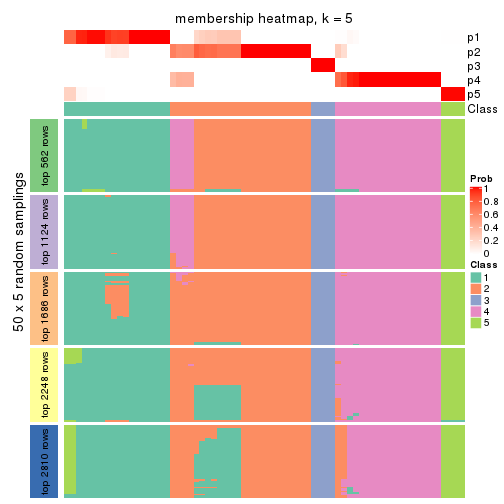
membership_heatmap(res, k = 6)
As soon as we have had the classes for columns, we can look for signatures which are significantly different between classes which can be candidate marks for certain classes. Following are the heatmaps for signatures.
Signature heatmaps where rows are scaled:
get_signatures(res, k = 2)
get_signatures(res, k = 3)
get_signatures(res, k = 4)
get_signatures(res, k = 5)
get_signatures(res, k = 6)
Signature heatmaps where rows are not scaled:
get_signatures(res, k = 2, scale_rows = FALSE)
get_signatures(res, k = 3, scale_rows = FALSE)
get_signatures(res, k = 4, scale_rows = FALSE)
get_signatures(res, k = 5, scale_rows = FALSE)
get_signatures(res, k = 6, scale_rows = FALSE)
Compare the overlap of signatures from different k:
compare_signatures(res)
get_signature() returns a data frame invisibly. TO get the list of signatures, the function
call should be assigned to a variable explicitly. In following code, if plot argument is set
to FALSE, no heatmap is plotted while only the differential analysis is performed.
# code only for demonstration
tb = get_signature(res, k = ..., plot = FALSE)
An example of the output of tb is:
#> which_row fdr mean_1 mean_2 scaled_mean_1 scaled_mean_2 km
#> 1 38 0.042760348 8.373488 9.131774 -0.5533452 0.5164555 1
#> 2 40 0.018707592 7.106213 8.469186 -0.6173731 0.5762149 1
#> 3 55 0.019134737 10.221463 11.207825 -0.6159697 0.5749050 1
#> 4 59 0.006059896 5.921854 7.869574 -0.6899429 0.6439467 1
#> 5 60 0.018055526 8.928898 10.211722 -0.6204761 0.5791110 1
#> 6 98 0.009384629 15.714769 14.887706 0.6635654 -0.6193277 2
...
The columns in tb are:
which_row: row indices corresponding to the input matrix.fdr: FDR for the differential test. mean_x: The mean value in group x.scaled_mean_x: The mean value in group x after rows are scaled.km: Row groups if k-means clustering is applied to rows.UMAP plot which shows how samples are separated.
dimension_reduction(res, k = 2, method = "UMAP")
dimension_reduction(res, k = 3, method = "UMAP")
dimension_reduction(res, k = 4, method = "UMAP")
dimension_reduction(res, k = 5, method = "UMAP")
dimension_reduction(res, k = 6, method = "UMAP")
Following heatmap shows how subgroups are split when increasing k:
collect_classes(res)
If matrix rows can be associated to genes, consider to use functional_enrichment(res,
...) to perform function enrichment for the signature genes. See this vignette for more detailed explanations.
The object with results only for a single top-value method and a single partition method can be extracted as:
res = res_list["SD", "mclust"]
# you can also extract it by
# res = res_list["SD:mclust"]
A summary of res and all the functions that can be applied to it:
res
#> A 'ConsensusPartition' object with k = 2, 3, 4, 5, 6.
#> On a matrix with 5619 rows and 68 columns.
#> Top rows (562, 1124, 1686, 2248, 2810) are extracted by 'SD' method.
#> Subgroups are detected by 'mclust' method.
#> Performed in total 1250 partitions by row resampling.
#> Best k for subgroups seems to be 2.
#>
#> Following methods can be applied to this 'ConsensusPartition' object:
#> [1] "cola_report" "collect_classes" "collect_plots"
#> [4] "collect_stats" "colnames" "compare_signatures"
#> [7] "consensus_heatmap" "dimension_reduction" "functional_enrichment"
#> [10] "get_anno_col" "get_anno" "get_classes"
#> [13] "get_consensus" "get_matrix" "get_membership"
#> [16] "get_param" "get_signatures" "get_stats"
#> [19] "is_best_k" "is_stable_k" "membership_heatmap"
#> [22] "ncol" "nrow" "plot_ecdf"
#> [25] "rownames" "select_partition_number" "show"
#> [28] "suggest_best_k" "test_to_known_factors"
collect_plots() function collects all the plots made from res for all k (number of partitions)
into one single page to provide an easy and fast comparison between different k.
collect_plots(res)
The plots are:
k and the heatmap of
predicted classes for each k.k.k.k.All the plots in panels can be made by individual functions and they are plotted later in this section.
select_partition_number() produces several plots showing different
statistics for choosing “optimized” k. There are following statistics:
k;k, the area increased is defined as \(A_k - A_{k-1}\).The detailed explanations of these statistics can be found in the cola vignette.
Generally speaking, lower PAC score, higher mean silhouette score or higher
concordance corresponds to better partition. Rand index and Jaccard index
measure how similar the current partition is compared to partition with k-1.
If they are too similar, we won't accept k is better than k-1.
select_partition_number(res)
The numeric values for all these statistics can be obtained by get_stats().
get_stats(res)
#> k 1-PAC mean_silhouette concordance area_increased Rand Jaccard
#> 2 2 1.000 0.985 0.992 0.3023 0.705 0.705
#> 3 3 0.736 0.875 0.903 0.9500 0.654 0.524
#> 4 4 0.721 0.726 0.859 0.2476 0.789 0.505
#> 5 5 0.765 0.805 0.902 0.0422 0.951 0.806
#> 6 6 0.865 0.814 0.915 0.0301 0.986 0.936
suggest_best_k() suggests the best \(k\) based on these statistics. The rules are as follows:
suggest_best_k(res)
#> [1] 2
Following shows the table of the partitions (You need to click the show/hide
code output link to see it). The membership matrix (columns with name p*)
is inferred by
clue::cl_consensus()
function with the SE method. Basically the value in the membership matrix
represents the probability to belong to a certain group. The finall class
label for an item is determined with the group with highest probability it
belongs to.
In get_classes() function, the entropy is calculated from the membership
matrix and the silhouette score is calculated from the consensus matrix.
cbind(get_classes(res, k = 2), get_membership(res, k = 2))
#> class entropy silhouette p1 p2
#> SRR1035618 2 0.0000 0.991 0.000 1.000
#> SRR1035619 2 0.0000 0.991 0.000 1.000
#> SRR1035620 2 0.0000 0.991 0.000 1.000
#> SRR1035621 2 0.0000 0.991 0.000 1.000
#> SRR1035622 2 0.0000 0.991 0.000 1.000
#> SRR1035623 2 0.0000 0.991 0.000 1.000
#> SRR1035626 2 0.4022 0.923 0.080 0.920
#> SRR1035627 2 0.5178 0.882 0.116 0.884
#> SRR1035628 2 0.3733 0.931 0.072 0.928
#> SRR1035629 2 0.3733 0.931 0.072 0.928
#> SRR1035624 2 0.0000 0.991 0.000 1.000
#> SRR1035625 2 0.0000 0.991 0.000 1.000
#> SRR1035630 2 0.0000 0.991 0.000 1.000
#> SRR1035631 2 0.0000 0.991 0.000 1.000
#> SRR1035632 1 0.0000 0.994 1.000 0.000
#> SRR1035633 1 0.0000 0.994 1.000 0.000
#> SRR1035634 1 0.0000 0.994 1.000 0.000
#> SRR1035635 1 0.0000 0.994 1.000 0.000
#> SRR1035636 2 0.0000 0.991 0.000 1.000
#> SRR1035637 2 0.0000 0.991 0.000 1.000
#> SRR1035638 2 0.0000 0.991 0.000 1.000
#> SRR1035639 2 0.0000 0.991 0.000 1.000
#> SRR1035640 2 0.1414 0.979 0.020 0.980
#> SRR1035641 2 0.1414 0.979 0.020 0.980
#> SRR1035642 2 0.0000 0.991 0.000 1.000
#> SRR1035643 2 0.0000 0.991 0.000 1.000
#> SRR1035644 2 0.0000 0.991 0.000 1.000
#> SRR1035645 2 0.0000 0.991 0.000 1.000
#> SRR1035646 2 0.0000 0.991 0.000 1.000
#> SRR1035647 2 0.0000 0.991 0.000 1.000
#> SRR1035648 2 0.0000 0.991 0.000 1.000
#> SRR1035649 2 0.0000 0.991 0.000 1.000
#> SRR1035654 2 0.0000 0.991 0.000 1.000
#> SRR1035655 2 0.0000 0.991 0.000 1.000
#> SRR1035656 2 0.0000 0.991 0.000 1.000
#> SRR1035657 2 0.0000 0.991 0.000 1.000
#> SRR1035650 2 0.0000 0.991 0.000 1.000
#> SRR1035651 2 0.0000 0.991 0.000 1.000
#> SRR1035652 2 0.0000 0.991 0.000 1.000
#> SRR1035653 2 0.0000 0.991 0.000 1.000
#> SRR1035660 2 0.0000 0.991 0.000 1.000
#> SRR1035661 2 0.0000 0.991 0.000 1.000
#> SRR1035662 2 0.0000 0.991 0.000 1.000
#> SRR1035663 2 0.0000 0.991 0.000 1.000
#> SRR1035658 2 0.0000 0.991 0.000 1.000
#> SRR1035659 2 0.0000 0.991 0.000 1.000
#> SRR1035666 1 0.0000 0.994 1.000 0.000
#> SRR1035667 1 0.0000 0.994 1.000 0.000
#> SRR1035668 1 0.0000 0.994 1.000 0.000
#> SRR1035669 1 0.0000 0.994 1.000 0.000
#> SRR1035664 2 0.0000 0.991 0.000 1.000
#> SRR1035665 2 0.0000 0.991 0.000 1.000
#> SRR1035670 2 0.1184 0.982 0.016 0.984
#> SRR1035671 2 0.1184 0.982 0.016 0.984
#> SRR1035672 2 0.0938 0.984 0.012 0.988
#> SRR1035673 2 0.1184 0.982 0.016 0.984
#> SRR1035674 2 0.1184 0.982 0.016 0.984
#> SRR1035675 2 0.1184 0.982 0.016 0.984
#> SRR1035676 2 0.1184 0.982 0.016 0.984
#> SRR1035677 2 0.1184 0.982 0.016 0.984
#> SRR1035682 2 0.0000 0.991 0.000 1.000
#> SRR1035683 2 0.0000 0.991 0.000 1.000
#> SRR1035684 2 0.0000 0.991 0.000 1.000
#> SRR1035685 2 0.0000 0.991 0.000 1.000
#> SRR1035678 1 0.0938 0.990 0.988 0.012
#> SRR1035679 1 0.1633 0.979 0.976 0.024
#> SRR1035680 1 0.0938 0.990 0.988 0.012
#> SRR1035681 1 0.0938 0.990 0.988 0.012
cbind(get_classes(res, k = 3), get_membership(res, k = 3))
#> class entropy silhouette p1 p2 p3
#> SRR1035618 2 0.2165 0.906 0.000 0.936 0.064
#> SRR1035619 2 0.2165 0.906 0.000 0.936 0.064
#> SRR1035620 2 0.2165 0.906 0.000 0.936 0.064
#> SRR1035621 2 0.2165 0.906 0.000 0.936 0.064
#> SRR1035622 2 0.2165 0.906 0.000 0.936 0.064
#> SRR1035623 2 0.2165 0.906 0.000 0.936 0.064
#> SRR1035626 1 0.5461 0.817 0.748 0.008 0.244
#> SRR1035627 1 0.5292 0.841 0.764 0.008 0.228
#> SRR1035628 1 0.5580 0.805 0.736 0.008 0.256
#> SRR1035629 1 0.5580 0.805 0.736 0.008 0.256
#> SRR1035624 2 0.2165 0.906 0.000 0.936 0.064
#> SRR1035625 2 0.2165 0.906 0.000 0.936 0.064
#> SRR1035630 3 0.3340 0.994 0.000 0.120 0.880
#> SRR1035631 3 0.3412 0.989 0.000 0.124 0.876
#> SRR1035632 1 0.0000 0.917 1.000 0.000 0.000
#> SRR1035633 1 0.0000 0.917 1.000 0.000 0.000
#> SRR1035634 1 0.0000 0.917 1.000 0.000 0.000
#> SRR1035635 1 0.0000 0.917 1.000 0.000 0.000
#> SRR1035636 3 0.3267 0.999 0.000 0.116 0.884
#> SRR1035637 3 0.3267 0.999 0.000 0.116 0.884
#> SRR1035638 3 0.3267 0.999 0.000 0.116 0.884
#> SRR1035639 3 0.3267 0.999 0.000 0.116 0.884
#> SRR1035640 2 0.0747 0.891 0.000 0.984 0.016
#> SRR1035641 2 0.0747 0.891 0.000 0.984 0.016
#> SRR1035642 2 0.2625 0.891 0.000 0.916 0.084
#> SRR1035643 2 0.2537 0.894 0.000 0.920 0.080
#> SRR1035644 2 0.2625 0.891 0.000 0.916 0.084
#> SRR1035645 2 0.2625 0.891 0.000 0.916 0.084
#> SRR1035646 2 0.6215 0.246 0.000 0.572 0.428
#> SRR1035647 2 0.6244 0.205 0.000 0.560 0.440
#> SRR1035648 2 0.6244 0.205 0.000 0.560 0.440
#> SRR1035649 2 0.6235 0.219 0.000 0.564 0.436
#> SRR1035654 2 0.0237 0.895 0.000 0.996 0.004
#> SRR1035655 2 0.0000 0.894 0.000 1.000 0.000
#> SRR1035656 2 0.0237 0.895 0.000 0.996 0.004
#> SRR1035657 2 0.0237 0.895 0.000 0.996 0.004
#> SRR1035650 3 0.3267 0.999 0.000 0.116 0.884
#> SRR1035651 3 0.3267 0.999 0.000 0.116 0.884
#> SRR1035652 3 0.3267 0.999 0.000 0.116 0.884
#> SRR1035653 3 0.3267 0.999 0.000 0.116 0.884
#> SRR1035660 2 0.1964 0.907 0.000 0.944 0.056
#> SRR1035661 2 0.1964 0.907 0.000 0.944 0.056
#> SRR1035662 2 0.1964 0.907 0.000 0.944 0.056
#> SRR1035663 2 0.1964 0.907 0.000 0.944 0.056
#> SRR1035658 2 0.1964 0.907 0.000 0.944 0.056
#> SRR1035659 2 0.1964 0.907 0.000 0.944 0.056
#> SRR1035666 1 0.0000 0.917 1.000 0.000 0.000
#> SRR1035667 1 0.0000 0.917 1.000 0.000 0.000
#> SRR1035668 1 0.0000 0.917 1.000 0.000 0.000
#> SRR1035669 1 0.0000 0.917 1.000 0.000 0.000
#> SRR1035664 2 0.1964 0.907 0.000 0.944 0.056
#> SRR1035665 2 0.1964 0.907 0.000 0.944 0.056
#> SRR1035670 2 0.1289 0.879 0.000 0.968 0.032
#> SRR1035671 2 0.1289 0.879 0.000 0.968 0.032
#> SRR1035672 2 0.1289 0.879 0.000 0.968 0.032
#> SRR1035673 2 0.1289 0.879 0.000 0.968 0.032
#> SRR1035674 2 0.1289 0.879 0.000 0.968 0.032
#> SRR1035675 2 0.1289 0.879 0.000 0.968 0.032
#> SRR1035676 2 0.1289 0.879 0.000 0.968 0.032
#> SRR1035677 2 0.1289 0.879 0.000 0.968 0.032
#> SRR1035682 3 0.3267 0.999 0.000 0.116 0.884
#> SRR1035683 3 0.3267 0.999 0.000 0.116 0.884
#> SRR1035684 3 0.3267 0.999 0.000 0.116 0.884
#> SRR1035685 3 0.3267 0.999 0.000 0.116 0.884
#> SRR1035678 1 0.4628 0.898 0.856 0.056 0.088
#> SRR1035679 1 0.4628 0.898 0.856 0.056 0.088
#> SRR1035680 1 0.4628 0.898 0.856 0.056 0.088
#> SRR1035681 1 0.4628 0.898 0.856 0.056 0.088
cbind(get_classes(res, k = 4), get_membership(res, k = 4))
#> class entropy silhouette p1 p2 p3 p4
#> SRR1035618 2 0.0376 0.8534 0.004 0.992 0.000 0.004
#> SRR1035619 2 0.0188 0.8559 0.000 0.996 0.000 0.004
#> SRR1035620 2 0.0188 0.8559 0.000 0.996 0.000 0.004
#> SRR1035621 2 0.0188 0.8559 0.000 0.996 0.000 0.004
#> SRR1035622 2 0.0188 0.8559 0.000 0.996 0.000 0.004
#> SRR1035623 2 0.0188 0.8559 0.000 0.996 0.000 0.004
#> SRR1035626 3 0.5328 0.7238 0.020 0.008 0.680 0.292
#> SRR1035627 3 0.5060 0.7335 0.012 0.008 0.696 0.284
#> SRR1035628 3 0.5328 0.7238 0.020 0.008 0.680 0.292
#> SRR1035629 3 0.5328 0.7238 0.020 0.008 0.680 0.292
#> SRR1035624 2 0.0188 0.8559 0.000 0.996 0.000 0.004
#> SRR1035625 2 0.0188 0.8559 0.000 0.996 0.000 0.004
#> SRR1035630 4 0.3123 0.8104 0.000 0.156 0.000 0.844
#> SRR1035631 4 0.3172 0.8082 0.000 0.160 0.000 0.840
#> SRR1035632 3 0.0188 0.8536 0.004 0.000 0.996 0.000
#> SRR1035633 3 0.0188 0.8536 0.004 0.000 0.996 0.000
#> SRR1035634 3 0.0188 0.8536 0.004 0.000 0.996 0.000
#> SRR1035635 3 0.0188 0.8536 0.004 0.000 0.996 0.000
#> SRR1035636 4 0.1004 0.8269 0.004 0.024 0.000 0.972
#> SRR1035637 4 0.1004 0.8269 0.004 0.024 0.000 0.972
#> SRR1035638 4 0.1004 0.8269 0.004 0.024 0.000 0.972
#> SRR1035639 4 0.1004 0.8269 0.004 0.024 0.000 0.972
#> SRR1035640 1 0.5674 0.6448 0.700 0.232 0.064 0.004
#> SRR1035641 1 0.5674 0.6448 0.700 0.232 0.064 0.004
#> SRR1035642 2 0.0336 0.8536 0.000 0.992 0.000 0.008
#> SRR1035643 2 0.0336 0.8536 0.000 0.992 0.000 0.008
#> SRR1035644 2 0.1452 0.8220 0.008 0.956 0.000 0.036
#> SRR1035645 2 0.1452 0.8220 0.008 0.956 0.000 0.036
#> SRR1035646 4 0.5755 0.3638 0.028 0.444 0.000 0.528
#> SRR1035647 4 0.5744 0.3867 0.028 0.436 0.000 0.536
#> SRR1035648 4 0.5738 0.3959 0.028 0.432 0.000 0.540
#> SRR1035649 4 0.5744 0.3867 0.028 0.436 0.000 0.536
#> SRR1035654 1 0.2976 0.8121 0.872 0.120 0.000 0.008
#> SRR1035655 1 0.2976 0.8121 0.872 0.120 0.000 0.008
#> SRR1035656 1 0.3032 0.8092 0.868 0.124 0.000 0.008
#> SRR1035657 1 0.2976 0.8121 0.872 0.120 0.000 0.008
#> SRR1035650 4 0.2011 0.8535 0.000 0.080 0.000 0.920
#> SRR1035651 4 0.1940 0.8546 0.000 0.076 0.000 0.924
#> SRR1035652 4 0.1792 0.8556 0.000 0.068 0.000 0.932
#> SRR1035653 4 0.1792 0.8556 0.000 0.068 0.000 0.932
#> SRR1035660 1 0.5295 0.0494 0.504 0.488 0.000 0.008
#> SRR1035661 2 0.5296 -0.1215 0.496 0.496 0.000 0.008
#> SRR1035662 1 0.5296 0.0185 0.496 0.496 0.000 0.008
#> SRR1035663 2 0.5295 -0.0957 0.488 0.504 0.000 0.008
#> SRR1035658 2 0.4866 0.2129 0.404 0.596 0.000 0.000
#> SRR1035659 2 0.4866 0.2129 0.404 0.596 0.000 0.000
#> SRR1035666 3 0.0000 0.8538 0.000 0.000 1.000 0.000
#> SRR1035667 3 0.0000 0.8538 0.000 0.000 1.000 0.000
#> SRR1035668 3 0.0000 0.8538 0.000 0.000 1.000 0.000
#> SRR1035669 3 0.0000 0.8538 0.000 0.000 1.000 0.000
#> SRR1035664 2 0.0188 0.8559 0.000 0.996 0.000 0.004
#> SRR1035665 2 0.0188 0.8559 0.000 0.996 0.000 0.004
#> SRR1035670 1 0.0804 0.8337 0.980 0.012 0.000 0.008
#> SRR1035671 1 0.0672 0.8314 0.984 0.008 0.000 0.008
#> SRR1035672 1 0.1356 0.8344 0.960 0.032 0.000 0.008
#> SRR1035673 1 0.0804 0.8337 0.980 0.012 0.000 0.008
#> SRR1035674 1 0.0524 0.8283 0.988 0.004 0.000 0.008
#> SRR1035675 1 0.0524 0.8283 0.988 0.004 0.000 0.008
#> SRR1035676 1 0.1042 0.8345 0.972 0.020 0.000 0.008
#> SRR1035677 1 0.0804 0.8337 0.980 0.012 0.000 0.008
#> SRR1035682 4 0.1792 0.8556 0.000 0.068 0.000 0.932
#> SRR1035683 4 0.1792 0.8556 0.000 0.068 0.000 0.932
#> SRR1035684 4 0.1792 0.8556 0.000 0.068 0.000 0.932
#> SRR1035685 4 0.1792 0.8556 0.000 0.068 0.000 0.932
#> SRR1035678 3 0.4776 0.7468 0.272 0.000 0.712 0.016
#> SRR1035679 3 0.4776 0.7468 0.272 0.000 0.712 0.016
#> SRR1035680 3 0.4776 0.7468 0.272 0.000 0.712 0.016
#> SRR1035681 3 0.4776 0.7468 0.272 0.000 0.712 0.016
cbind(get_classes(res, k = 5), get_membership(res, k = 5))
#> class entropy silhouette p1 p2 p3 p4 p5
#> SRR1035618 2 0.0290 0.9098 0.000 0.992 0.000 0.008 0.000
#> SRR1035619 2 0.0290 0.9098 0.000 0.992 0.000 0.008 0.000
#> SRR1035620 2 0.0162 0.9109 0.000 0.996 0.000 0.004 0.000
#> SRR1035621 2 0.0290 0.9098 0.000 0.992 0.000 0.008 0.000
#> SRR1035622 2 0.0000 0.9114 0.000 1.000 0.000 0.000 0.000
#> SRR1035623 2 0.0000 0.9114 0.000 1.000 0.000 0.000 0.000
#> SRR1035626 5 0.3274 0.7761 0.000 0.000 0.000 0.220 0.780
#> SRR1035627 5 0.3143 0.7871 0.000 0.000 0.000 0.204 0.796
#> SRR1035628 5 0.3366 0.7655 0.000 0.000 0.000 0.232 0.768
#> SRR1035629 5 0.3366 0.7655 0.000 0.000 0.000 0.232 0.768
#> SRR1035624 2 0.0000 0.9114 0.000 1.000 0.000 0.000 0.000
#> SRR1035625 2 0.0000 0.9114 0.000 1.000 0.000 0.000 0.000
#> SRR1035630 4 0.3262 0.8190 0.036 0.124 0.000 0.840 0.000
#> SRR1035631 4 0.3309 0.8168 0.036 0.128 0.000 0.836 0.000
#> SRR1035632 3 0.0000 1.0000 0.000 0.000 1.000 0.000 0.000
#> SRR1035633 3 0.0000 1.0000 0.000 0.000 1.000 0.000 0.000
#> SRR1035634 3 0.0000 1.0000 0.000 0.000 1.000 0.000 0.000
#> SRR1035635 3 0.0000 1.0000 0.000 0.000 1.000 0.000 0.000
#> SRR1035636 4 0.0162 0.8298 0.004 0.000 0.000 0.996 0.000
#> SRR1035637 4 0.0162 0.8298 0.004 0.000 0.000 0.996 0.000
#> SRR1035638 4 0.0162 0.8298 0.004 0.000 0.000 0.996 0.000
#> SRR1035639 4 0.0000 0.8295 0.000 0.000 0.000 1.000 0.000
#> SRR1035640 1 0.5868 0.6072 0.656 0.184 0.008 0.008 0.144
#> SRR1035641 1 0.5868 0.6072 0.656 0.184 0.008 0.008 0.144
#> SRR1035642 2 0.0880 0.8961 0.000 0.968 0.000 0.032 0.000
#> SRR1035643 2 0.0880 0.8961 0.000 0.968 0.000 0.032 0.000
#> SRR1035644 2 0.1082 0.8966 0.008 0.964 0.000 0.028 0.000
#> SRR1035645 2 0.1082 0.8966 0.008 0.964 0.000 0.028 0.000
#> SRR1035646 4 0.5246 0.5557 0.060 0.344 0.000 0.596 0.000
#> SRR1035647 4 0.5246 0.5557 0.060 0.344 0.000 0.596 0.000
#> SRR1035648 4 0.5218 0.5578 0.060 0.336 0.000 0.604 0.000
#> SRR1035649 4 0.5246 0.5557 0.060 0.344 0.000 0.596 0.000
#> SRR1035654 1 0.1608 0.8367 0.928 0.072 0.000 0.000 0.000
#> SRR1035655 1 0.1608 0.8367 0.928 0.072 0.000 0.000 0.000
#> SRR1035656 1 0.1732 0.8349 0.920 0.080 0.000 0.000 0.000
#> SRR1035657 1 0.1671 0.8359 0.924 0.076 0.000 0.000 0.000
#> SRR1035650 4 0.1410 0.8617 0.000 0.060 0.000 0.940 0.000
#> SRR1035651 4 0.1410 0.8617 0.000 0.060 0.000 0.940 0.000
#> SRR1035652 4 0.1341 0.8624 0.000 0.056 0.000 0.944 0.000
#> SRR1035653 4 0.1357 0.8596 0.004 0.048 0.000 0.948 0.000
#> SRR1035660 1 0.3980 0.6507 0.708 0.284 0.000 0.008 0.000
#> SRR1035661 1 0.4088 0.6176 0.688 0.304 0.000 0.008 0.000
#> SRR1035662 1 0.4046 0.6327 0.696 0.296 0.000 0.008 0.000
#> SRR1035663 1 0.4201 0.5782 0.664 0.328 0.000 0.008 0.000
#> SRR1035658 2 0.4242 0.0474 0.428 0.572 0.000 0.000 0.000
#> SRR1035659 2 0.4242 0.0474 0.428 0.572 0.000 0.000 0.000
#> SRR1035666 5 0.0510 0.8817 0.000 0.000 0.016 0.000 0.984
#> SRR1035667 5 0.0510 0.8817 0.000 0.000 0.016 0.000 0.984
#> SRR1035668 5 0.0510 0.8817 0.000 0.000 0.016 0.000 0.984
#> SRR1035669 5 0.0510 0.8817 0.000 0.000 0.016 0.000 0.984
#> SRR1035664 2 0.0000 0.9114 0.000 1.000 0.000 0.000 0.000
#> SRR1035665 2 0.0000 0.9114 0.000 1.000 0.000 0.000 0.000
#> SRR1035670 1 0.0000 0.8391 1.000 0.000 0.000 0.000 0.000
#> SRR1035671 1 0.0000 0.8391 1.000 0.000 0.000 0.000 0.000
#> SRR1035672 1 0.0000 0.8391 1.000 0.000 0.000 0.000 0.000
#> SRR1035673 1 0.0000 0.8391 1.000 0.000 0.000 0.000 0.000
#> SRR1035674 1 0.0000 0.8391 1.000 0.000 0.000 0.000 0.000
#> SRR1035675 1 0.0000 0.8391 1.000 0.000 0.000 0.000 0.000
#> SRR1035676 1 0.0000 0.8391 1.000 0.000 0.000 0.000 0.000
#> SRR1035677 1 0.0000 0.8391 1.000 0.000 0.000 0.000 0.000
#> SRR1035682 4 0.1341 0.8624 0.000 0.056 0.000 0.944 0.000
#> SRR1035683 4 0.1341 0.8624 0.000 0.056 0.000 0.944 0.000
#> SRR1035684 4 0.1121 0.8575 0.000 0.044 0.000 0.956 0.000
#> SRR1035685 4 0.1341 0.8624 0.000 0.056 0.000 0.944 0.000
#> SRR1035678 5 0.0404 0.8815 0.012 0.000 0.000 0.000 0.988
#> SRR1035679 5 0.0510 0.8808 0.016 0.000 0.000 0.000 0.984
#> SRR1035680 5 0.0609 0.8794 0.020 0.000 0.000 0.000 0.980
#> SRR1035681 5 0.0794 0.8743 0.028 0.000 0.000 0.000 0.972
cbind(get_classes(res, k = 6), get_membership(res, k = 6))
#> class entropy silhouette p1 p2 p3 p4 p5 p6
#> SRR1035618 2 0.0000 0.927 0.000 1.000 0 0.000 0.000 0.000
#> SRR1035619 2 0.0000 0.927 0.000 1.000 0 0.000 0.000 0.000
#> SRR1035620 2 0.0000 0.927 0.000 1.000 0 0.000 0.000 0.000
#> SRR1035621 2 0.0000 0.927 0.000 1.000 0 0.000 0.000 0.000
#> SRR1035622 2 0.0000 0.927 0.000 1.000 0 0.000 0.000 0.000
#> SRR1035623 2 0.0000 0.927 0.000 1.000 0 0.000 0.000 0.000
#> SRR1035626 6 0.0146 0.998 0.000 0.000 0 0.004 0.000 0.996
#> SRR1035627 6 0.0000 0.993 0.000 0.000 0 0.000 0.000 1.000
#> SRR1035628 6 0.0146 0.998 0.000 0.000 0 0.004 0.000 0.996
#> SRR1035629 6 0.0146 0.998 0.000 0.000 0 0.004 0.000 0.996
#> SRR1035624 2 0.0000 0.927 0.000 1.000 0 0.000 0.000 0.000
#> SRR1035625 2 0.0000 0.927 0.000 1.000 0 0.000 0.000 0.000
#> SRR1035630 4 0.2509 0.813 0.036 0.088 0 0.876 0.000 0.000
#> SRR1035631 4 0.2560 0.811 0.036 0.092 0 0.872 0.000 0.000
#> SRR1035632 3 0.0000 1.000 0.000 0.000 1 0.000 0.000 0.000
#> SRR1035633 3 0.0000 1.000 0.000 0.000 1 0.000 0.000 0.000
#> SRR1035634 3 0.0000 1.000 0.000 0.000 1 0.000 0.000 0.000
#> SRR1035635 3 0.0000 1.000 0.000 0.000 1 0.000 0.000 0.000
#> SRR1035636 4 0.0260 0.860 0.000 0.000 0 0.992 0.000 0.008
#> SRR1035637 4 0.0260 0.860 0.000 0.000 0 0.992 0.000 0.008
#> SRR1035638 4 0.0260 0.860 0.000 0.000 0 0.992 0.000 0.008
#> SRR1035639 4 0.0260 0.860 0.000 0.000 0 0.992 0.000 0.008
#> SRR1035640 1 0.4389 0.565 0.668 0.036 0 0.008 0.288 0.000
#> SRR1035641 1 0.4389 0.565 0.668 0.036 0 0.008 0.288 0.000
#> SRR1035642 2 0.0000 0.927 0.000 1.000 0 0.000 0.000 0.000
#> SRR1035643 2 0.0000 0.927 0.000 1.000 0 0.000 0.000 0.000
#> SRR1035644 2 0.0260 0.922 0.000 0.992 0 0.008 0.000 0.000
#> SRR1035645 2 0.0363 0.918 0.000 0.988 0 0.012 0.000 0.000
#> SRR1035646 4 0.4420 0.550 0.040 0.340 0 0.620 0.000 0.000
#> SRR1035647 4 0.4420 0.550 0.040 0.340 0 0.620 0.000 0.000
#> SRR1035648 4 0.4420 0.550 0.040 0.340 0 0.620 0.000 0.000
#> SRR1035649 4 0.4420 0.550 0.040 0.340 0 0.620 0.000 0.000
#> SRR1035654 1 0.0790 0.826 0.968 0.032 0 0.000 0.000 0.000
#> SRR1035655 1 0.0790 0.826 0.968 0.032 0 0.000 0.000 0.000
#> SRR1035656 1 0.0790 0.826 0.968 0.032 0 0.000 0.000 0.000
#> SRR1035657 1 0.0790 0.826 0.968 0.032 0 0.000 0.000 0.000
#> SRR1035650 4 0.0363 0.867 0.000 0.012 0 0.988 0.000 0.000
#> SRR1035651 4 0.0363 0.867 0.000 0.012 0 0.988 0.000 0.000
#> SRR1035652 4 0.0458 0.866 0.000 0.016 0 0.984 0.000 0.000
#> SRR1035653 4 0.0260 0.865 0.000 0.008 0 0.992 0.000 0.000
#> SRR1035660 1 0.4155 0.459 0.616 0.364 0 0.020 0.000 0.000
#> SRR1035661 1 0.4026 0.440 0.612 0.376 0 0.012 0.000 0.000
#> SRR1035662 1 0.4026 0.442 0.612 0.376 0 0.012 0.000 0.000
#> SRR1035663 1 0.4076 0.396 0.592 0.396 0 0.012 0.000 0.000
#> SRR1035658 2 0.4002 0.155 0.404 0.588 0 0.008 0.000 0.000
#> SRR1035659 2 0.4002 0.155 0.404 0.588 0 0.008 0.000 0.000
#> SRR1035666 5 0.0000 0.891 0.000 0.000 0 0.000 1.000 0.000
#> SRR1035667 5 0.0000 0.891 0.000 0.000 0 0.000 1.000 0.000
#> SRR1035668 5 0.0000 0.891 0.000 0.000 0 0.000 1.000 0.000
#> SRR1035669 5 0.0000 0.891 0.000 0.000 0 0.000 1.000 0.000
#> SRR1035664 2 0.0000 0.927 0.000 1.000 0 0.000 0.000 0.000
#> SRR1035665 2 0.0000 0.927 0.000 1.000 0 0.000 0.000 0.000
#> SRR1035670 1 0.0000 0.828 1.000 0.000 0 0.000 0.000 0.000
#> SRR1035671 1 0.0000 0.828 1.000 0.000 0 0.000 0.000 0.000
#> SRR1035672 1 0.0000 0.828 1.000 0.000 0 0.000 0.000 0.000
#> SRR1035673 1 0.0000 0.828 1.000 0.000 0 0.000 0.000 0.000
#> SRR1035674 1 0.0146 0.828 0.996 0.000 0 0.000 0.004 0.000
#> SRR1035675 1 0.0146 0.828 0.996 0.000 0 0.000 0.004 0.000
#> SRR1035676 1 0.0146 0.828 0.996 0.000 0 0.000 0.004 0.000
#> SRR1035677 1 0.0146 0.828 0.996 0.000 0 0.000 0.004 0.000
#> SRR1035682 4 0.0363 0.867 0.000 0.012 0 0.988 0.000 0.000
#> SRR1035683 4 0.0363 0.867 0.000 0.012 0 0.988 0.000 0.000
#> SRR1035684 4 0.0458 0.866 0.000 0.016 0 0.984 0.000 0.000
#> SRR1035685 4 0.0363 0.866 0.000 0.012 0 0.988 0.000 0.000
#> SRR1035678 5 0.2632 0.881 0.004 0.000 0 0.000 0.832 0.164
#> SRR1035679 5 0.2632 0.881 0.004 0.000 0 0.000 0.832 0.164
#> SRR1035680 5 0.2632 0.881 0.004 0.000 0 0.000 0.832 0.164
#> SRR1035681 5 0.2743 0.878 0.008 0.000 0 0.000 0.828 0.164
Heatmaps for the consensus matrix. It visualizes the probability of two samples to be in a same group.
consensus_heatmap(res, k = 2)
consensus_heatmap(res, k = 3)
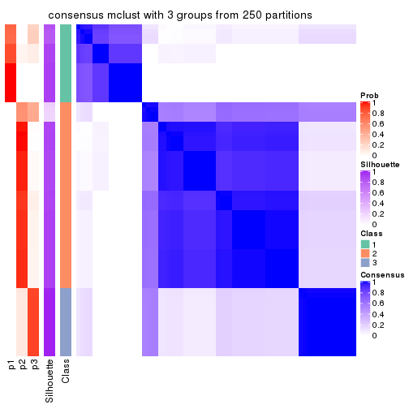
consensus_heatmap(res, k = 4)
consensus_heatmap(res, k = 5)
consensus_heatmap(res, k = 6)
Heatmaps for the membership of samples in all partitions to see how consistent they are:
membership_heatmap(res, k = 2)
membership_heatmap(res, k = 3)
membership_heatmap(res, k = 4)
membership_heatmap(res, k = 5)
membership_heatmap(res, k = 6)
As soon as we have had the classes for columns, we can look for signatures which are significantly different between classes which can be candidate marks for certain classes. Following are the heatmaps for signatures.
Signature heatmaps where rows are scaled:
get_signatures(res, k = 2)
get_signatures(res, k = 3)
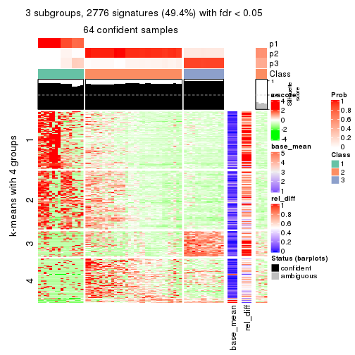
get_signatures(res, k = 4)
get_signatures(res, k = 5)
get_signatures(res, k = 6)
Signature heatmaps where rows are not scaled:
get_signatures(res, k = 2, scale_rows = FALSE)
get_signatures(res, k = 3, scale_rows = FALSE)
get_signatures(res, k = 4, scale_rows = FALSE)
get_signatures(res, k = 5, scale_rows = FALSE)

get_signatures(res, k = 6, scale_rows = FALSE)
Compare the overlap of signatures from different k:
compare_signatures(res)
get_signature() returns a data frame invisibly. TO get the list of signatures, the function
call should be assigned to a variable explicitly. In following code, if plot argument is set
to FALSE, no heatmap is plotted while only the differential analysis is performed.
# code only for demonstration
tb = get_signature(res, k = ..., plot = FALSE)
An example of the output of tb is:
#> which_row fdr mean_1 mean_2 scaled_mean_1 scaled_mean_2 km
#> 1 38 0.042760348 8.373488 9.131774 -0.5533452 0.5164555 1
#> 2 40 0.018707592 7.106213 8.469186 -0.6173731 0.5762149 1
#> 3 55 0.019134737 10.221463 11.207825 -0.6159697 0.5749050 1
#> 4 59 0.006059896 5.921854 7.869574 -0.6899429 0.6439467 1
#> 5 60 0.018055526 8.928898 10.211722 -0.6204761 0.5791110 1
#> 6 98 0.009384629 15.714769 14.887706 0.6635654 -0.6193277 2
...
The columns in tb are:
which_row: row indices corresponding to the input matrix.fdr: FDR for the differential test. mean_x: The mean value in group x.scaled_mean_x: The mean value in group x after rows are scaled.km: Row groups if k-means clustering is applied to rows.UMAP plot which shows how samples are separated.
dimension_reduction(res, k = 2, method = "UMAP")
dimension_reduction(res, k = 3, method = "UMAP")

dimension_reduction(res, k = 4, method = "UMAP")
dimension_reduction(res, k = 5, method = "UMAP")
dimension_reduction(res, k = 6, method = "UMAP")
Following heatmap shows how subgroups are split when increasing k:
collect_classes(res)
If matrix rows can be associated to genes, consider to use functional_enrichment(res,
...) to perform function enrichment for the signature genes. See this vignette for more detailed explanations.
The object with results only for a single top-value method and a single partition method can be extracted as:
res = res_list["SD", "NMF"]
# you can also extract it by
# res = res_list["SD:NMF"]
A summary of res and all the functions that can be applied to it:
res
#> A 'ConsensusPartition' object with k = 2, 3, 4, 5, 6.
#> On a matrix with 5619 rows and 68 columns.
#> Top rows (562, 1124, 1686, 2248, 2810) are extracted by 'SD' method.
#> Subgroups are detected by 'NMF' method.
#> Performed in total 1250 partitions by row resampling.
#> Best k for subgroups seems to be 3.
#>
#> Following methods can be applied to this 'ConsensusPartition' object:
#> [1] "cola_report" "collect_classes" "collect_plots"
#> [4] "collect_stats" "colnames" "compare_signatures"
#> [7] "consensus_heatmap" "dimension_reduction" "functional_enrichment"
#> [10] "get_anno_col" "get_anno" "get_classes"
#> [13] "get_consensus" "get_matrix" "get_membership"
#> [16] "get_param" "get_signatures" "get_stats"
#> [19] "is_best_k" "is_stable_k" "membership_heatmap"
#> [22] "ncol" "nrow" "plot_ecdf"
#> [25] "rownames" "select_partition_number" "show"
#> [28] "suggest_best_k" "test_to_known_factors"
collect_plots() function collects all the plots made from res for all k (number of partitions)
into one single page to provide an easy and fast comparison between different k.
collect_plots(res)
The plots are:
k and the heatmap of
predicted classes for each k.k.k.k.All the plots in panels can be made by individual functions and they are plotted later in this section.
select_partition_number() produces several plots showing different
statistics for choosing “optimized” k. There are following statistics:
k;k, the area increased is defined as \(A_k - A_{k-1}\).The detailed explanations of these statistics can be found in the cola vignette.
Generally speaking, lower PAC score, higher mean silhouette score or higher
concordance corresponds to better partition. Rand index and Jaccard index
measure how similar the current partition is compared to partition with k-1.
If they are too similar, we won't accept k is better than k-1.
select_partition_number(res)
The numeric values for all these statistics can be obtained by get_stats().
get_stats(res)
#> k 1-PAC mean_silhouette concordance area_increased Rand Jaccard
#> 2 2 0.722 0.879 0.934 0.4593 0.508 0.508
#> 3 3 0.862 0.907 0.962 0.3024 0.712 0.520
#> 4 4 0.746 0.847 0.906 0.1898 0.759 0.477
#> 5 5 0.809 0.839 0.909 0.0364 0.939 0.794
#> 6 6 0.782 0.679 0.820 0.0409 0.947 0.793
suggest_best_k() suggests the best \(k\) based on these statistics. The rules are as follows:
suggest_best_k(res)
#> [1] 3
Following shows the table of the partitions (You need to click the show/hide
code output link to see it). The membership matrix (columns with name p*)
is inferred by
clue::cl_consensus()
function with the SE method. Basically the value in the membership matrix
represents the probability to belong to a certain group. The finall class
label for an item is determined with the group with highest probability it
belongs to.
In get_classes() function, the entropy is calculated from the membership
matrix and the silhouette score is calculated from the consensus matrix.
cbind(get_classes(res, k = 2), get_membership(res, k = 2))
#> class entropy silhouette p1 p2
#> SRR1035618 2 0.000 0.981 0.000 1.000
#> SRR1035619 2 0.000 0.981 0.000 1.000
#> SRR1035620 2 0.000 0.981 0.000 1.000
#> SRR1035621 2 0.000 0.981 0.000 1.000
#> SRR1035622 2 0.000 0.981 0.000 1.000
#> SRR1035623 2 0.000 0.981 0.000 1.000
#> SRR1035626 1 0.242 0.838 0.960 0.040
#> SRR1035627 1 0.000 0.848 1.000 0.000
#> SRR1035628 1 0.767 0.745 0.776 0.224
#> SRR1035629 1 0.963 0.494 0.612 0.388
#> SRR1035624 2 0.000 0.981 0.000 1.000
#> SRR1035625 2 0.000 0.981 0.000 1.000
#> SRR1035630 2 0.000 0.981 0.000 1.000
#> SRR1035631 2 0.000 0.981 0.000 1.000
#> SRR1035632 1 0.000 0.848 1.000 0.000
#> SRR1035633 1 0.000 0.848 1.000 0.000
#> SRR1035634 1 0.000 0.848 1.000 0.000
#> SRR1035635 1 0.000 0.848 1.000 0.000
#> SRR1035636 2 0.000 0.981 0.000 1.000
#> SRR1035637 2 0.000 0.981 0.000 1.000
#> SRR1035638 2 0.000 0.981 0.000 1.000
#> SRR1035639 2 0.000 0.981 0.000 1.000
#> SRR1035640 2 0.886 0.434 0.304 0.696
#> SRR1035641 2 0.876 0.456 0.296 0.704
#> SRR1035642 2 0.000 0.981 0.000 1.000
#> SRR1035643 2 0.000 0.981 0.000 1.000
#> SRR1035644 2 0.000 0.981 0.000 1.000
#> SRR1035645 2 0.000 0.981 0.000 1.000
#> SRR1035646 2 0.000 0.981 0.000 1.000
#> SRR1035647 2 0.000 0.981 0.000 1.000
#> SRR1035648 2 0.000 0.981 0.000 1.000
#> SRR1035649 2 0.000 0.981 0.000 1.000
#> SRR1035654 1 0.921 0.658 0.664 0.336
#> SRR1035655 1 0.891 0.696 0.692 0.308
#> SRR1035656 1 0.850 0.730 0.724 0.276
#> SRR1035657 1 0.973 0.531 0.596 0.404
#> SRR1035650 2 0.000 0.981 0.000 1.000
#> SRR1035651 2 0.000 0.981 0.000 1.000
#> SRR1035652 2 0.000 0.981 0.000 1.000
#> SRR1035653 2 0.000 0.981 0.000 1.000
#> SRR1035660 2 0.000 0.981 0.000 1.000
#> SRR1035661 2 0.000 0.981 0.000 1.000
#> SRR1035662 2 0.000 0.981 0.000 1.000
#> SRR1035663 2 0.000 0.981 0.000 1.000
#> SRR1035658 2 0.000 0.981 0.000 1.000
#> SRR1035659 2 0.000 0.981 0.000 1.000
#> SRR1035666 1 0.000 0.848 1.000 0.000
#> SRR1035667 1 0.000 0.848 1.000 0.000
#> SRR1035668 1 0.000 0.848 1.000 0.000
#> SRR1035669 1 0.000 0.848 1.000 0.000
#> SRR1035664 2 0.000 0.981 0.000 1.000
#> SRR1035665 2 0.000 0.981 0.000 1.000
#> SRR1035670 1 0.952 0.597 0.628 0.372
#> SRR1035671 1 0.881 0.705 0.700 0.300
#> SRR1035672 1 0.939 0.625 0.644 0.356
#> SRR1035673 1 0.855 0.727 0.720 0.280
#> SRR1035674 1 0.311 0.840 0.944 0.056
#> SRR1035675 1 0.456 0.830 0.904 0.096
#> SRR1035676 1 0.738 0.780 0.792 0.208
#> SRR1035677 1 0.775 0.768 0.772 0.228
#> SRR1035682 2 0.000 0.981 0.000 1.000
#> SRR1035683 2 0.000 0.981 0.000 1.000
#> SRR1035684 2 0.000 0.981 0.000 1.000
#> SRR1035685 2 0.000 0.981 0.000 1.000
#> SRR1035678 1 0.000 0.848 1.000 0.000
#> SRR1035679 1 0.000 0.848 1.000 0.000
#> SRR1035680 1 0.000 0.848 1.000 0.000
#> SRR1035681 1 0.000 0.848 1.000 0.000
cbind(get_classes(res, k = 3), get_membership(res, k = 3))
#> class entropy silhouette p1 p2 p3
#> SRR1035618 2 0.0000 0.993 0.000 1.000 0.000
#> SRR1035619 2 0.0000 0.993 0.000 1.000 0.000
#> SRR1035620 2 0.0000 0.993 0.000 1.000 0.000
#> SRR1035621 2 0.0000 0.993 0.000 1.000 0.000
#> SRR1035622 2 0.1964 0.935 0.056 0.944 0.000
#> SRR1035623 2 0.1753 0.944 0.048 0.952 0.000
#> SRR1035626 1 0.3784 0.802 0.864 0.132 0.004
#> SRR1035627 1 0.7276 0.233 0.564 0.032 0.404
#> SRR1035628 1 0.3412 0.812 0.876 0.124 0.000
#> SRR1035629 1 0.4002 0.770 0.840 0.160 0.000
#> SRR1035624 2 0.1163 0.967 0.028 0.972 0.000
#> SRR1035625 2 0.1031 0.971 0.024 0.976 0.000
#> SRR1035630 2 0.0000 0.993 0.000 1.000 0.000
#> SRR1035631 2 0.0000 0.993 0.000 1.000 0.000
#> SRR1035632 3 0.0000 0.929 0.000 0.000 1.000
#> SRR1035633 3 0.0000 0.929 0.000 0.000 1.000
#> SRR1035634 3 0.0000 0.929 0.000 0.000 1.000
#> SRR1035635 3 0.0000 0.929 0.000 0.000 1.000
#> SRR1035636 2 0.0000 0.993 0.000 1.000 0.000
#> SRR1035637 2 0.0000 0.993 0.000 1.000 0.000
#> SRR1035638 2 0.0000 0.993 0.000 1.000 0.000
#> SRR1035639 2 0.0000 0.993 0.000 1.000 0.000
#> SRR1035640 1 0.0000 0.915 1.000 0.000 0.000
#> SRR1035641 1 0.0000 0.915 1.000 0.000 0.000
#> SRR1035642 2 0.0000 0.993 0.000 1.000 0.000
#> SRR1035643 2 0.0000 0.993 0.000 1.000 0.000
#> SRR1035644 2 0.0000 0.993 0.000 1.000 0.000
#> SRR1035645 2 0.0000 0.993 0.000 1.000 0.000
#> SRR1035646 2 0.0000 0.993 0.000 1.000 0.000
#> SRR1035647 2 0.0000 0.993 0.000 1.000 0.000
#> SRR1035648 2 0.0000 0.993 0.000 1.000 0.000
#> SRR1035649 2 0.0000 0.993 0.000 1.000 0.000
#> SRR1035654 1 0.0000 0.915 1.000 0.000 0.000
#> SRR1035655 1 0.0000 0.915 1.000 0.000 0.000
#> SRR1035656 1 0.0000 0.915 1.000 0.000 0.000
#> SRR1035657 1 0.0000 0.915 1.000 0.000 0.000
#> SRR1035650 2 0.0000 0.993 0.000 1.000 0.000
#> SRR1035651 2 0.0000 0.993 0.000 1.000 0.000
#> SRR1035652 2 0.0000 0.993 0.000 1.000 0.000
#> SRR1035653 2 0.0000 0.993 0.000 1.000 0.000
#> SRR1035660 1 0.0424 0.911 0.992 0.008 0.000
#> SRR1035661 1 0.0424 0.911 0.992 0.008 0.000
#> SRR1035662 1 0.5835 0.485 0.660 0.340 0.000
#> SRR1035663 1 0.4931 0.662 0.768 0.232 0.000
#> SRR1035658 1 0.0000 0.915 1.000 0.000 0.000
#> SRR1035659 1 0.0000 0.915 1.000 0.000 0.000
#> SRR1035666 3 0.1643 0.912 0.044 0.000 0.956
#> SRR1035667 3 0.1289 0.920 0.032 0.000 0.968
#> SRR1035668 1 0.5968 0.405 0.636 0.000 0.364
#> SRR1035669 3 0.5678 0.514 0.316 0.000 0.684
#> SRR1035664 1 0.2796 0.841 0.908 0.092 0.000
#> SRR1035665 1 0.3116 0.825 0.892 0.108 0.000
#> SRR1035670 1 0.0000 0.915 1.000 0.000 0.000
#> SRR1035671 1 0.0000 0.915 1.000 0.000 0.000
#> SRR1035672 1 0.0000 0.915 1.000 0.000 0.000
#> SRR1035673 1 0.0000 0.915 1.000 0.000 0.000
#> SRR1035674 1 0.0000 0.915 1.000 0.000 0.000
#> SRR1035675 1 0.0000 0.915 1.000 0.000 0.000
#> SRR1035676 1 0.0000 0.915 1.000 0.000 0.000
#> SRR1035677 1 0.0000 0.915 1.000 0.000 0.000
#> SRR1035682 2 0.0000 0.993 0.000 1.000 0.000
#> SRR1035683 2 0.0000 0.993 0.000 1.000 0.000
#> SRR1035684 2 0.0000 0.993 0.000 1.000 0.000
#> SRR1035685 2 0.0000 0.993 0.000 1.000 0.000
#> SRR1035678 1 0.0747 0.906 0.984 0.000 0.016
#> SRR1035679 1 0.0592 0.908 0.988 0.000 0.012
#> SRR1035680 1 0.0000 0.915 1.000 0.000 0.000
#> SRR1035681 1 0.0000 0.915 1.000 0.000 0.000
cbind(get_classes(res, k = 4), get_membership(res, k = 4))
#> class entropy silhouette p1 p2 p3 p4
#> SRR1035618 2 0.2011 0.9258 0.000 0.920 0.000 0.080
#> SRR1035619 2 0.2011 0.9258 0.000 0.920 0.000 0.080
#> SRR1035620 2 0.2011 0.9258 0.000 0.920 0.000 0.080
#> SRR1035621 2 0.2011 0.9258 0.000 0.920 0.000 0.080
#> SRR1035622 2 0.2011 0.9258 0.000 0.920 0.000 0.080
#> SRR1035623 2 0.2011 0.9258 0.000 0.920 0.000 0.080
#> SRR1035626 1 0.5291 0.6397 0.740 0.080 0.000 0.180
#> SRR1035627 1 0.5165 0.6578 0.752 0.080 0.000 0.168
#> SRR1035628 1 0.5593 0.5992 0.708 0.080 0.000 0.212
#> SRR1035629 1 0.5907 0.5393 0.668 0.080 0.000 0.252
#> SRR1035624 2 0.2011 0.9258 0.000 0.920 0.000 0.080
#> SRR1035625 2 0.2011 0.9258 0.000 0.920 0.000 0.080
#> SRR1035630 4 0.1211 0.9717 0.000 0.040 0.000 0.960
#> SRR1035631 4 0.1211 0.9717 0.000 0.040 0.000 0.960
#> SRR1035632 3 0.0000 0.9004 0.000 0.000 1.000 0.000
#> SRR1035633 3 0.0000 0.9004 0.000 0.000 1.000 0.000
#> SRR1035634 3 0.0000 0.9004 0.000 0.000 1.000 0.000
#> SRR1035635 3 0.0000 0.9004 0.000 0.000 1.000 0.000
#> SRR1035636 4 0.0188 0.9651 0.000 0.004 0.000 0.996
#> SRR1035637 4 0.0336 0.9686 0.000 0.008 0.000 0.992
#> SRR1035638 4 0.0336 0.9686 0.000 0.008 0.000 0.992
#> SRR1035639 4 0.0592 0.9437 0.000 0.016 0.000 0.984
#> SRR1035640 1 0.5000 -0.0686 0.504 0.496 0.000 0.000
#> SRR1035641 2 0.4992 0.0929 0.476 0.524 0.000 0.000
#> SRR1035642 2 0.2011 0.9258 0.000 0.920 0.000 0.080
#> SRR1035643 2 0.2011 0.9258 0.000 0.920 0.000 0.080
#> SRR1035644 2 0.2011 0.9258 0.000 0.920 0.000 0.080
#> SRR1035645 2 0.2011 0.9258 0.000 0.920 0.000 0.080
#> SRR1035646 4 0.1792 0.9500 0.000 0.068 0.000 0.932
#> SRR1035647 4 0.1792 0.9502 0.000 0.068 0.000 0.932
#> SRR1035648 4 0.1557 0.9605 0.000 0.056 0.000 0.944
#> SRR1035649 4 0.1792 0.9502 0.000 0.068 0.000 0.932
#> SRR1035654 1 0.0707 0.8501 0.980 0.020 0.000 0.000
#> SRR1035655 1 0.1022 0.8492 0.968 0.032 0.000 0.000
#> SRR1035656 1 0.0469 0.8491 0.988 0.012 0.000 0.000
#> SRR1035657 1 0.0921 0.8498 0.972 0.028 0.000 0.000
#> SRR1035650 4 0.0817 0.9764 0.000 0.024 0.000 0.976
#> SRR1035651 4 0.0817 0.9764 0.000 0.024 0.000 0.976
#> SRR1035652 4 0.0707 0.9750 0.000 0.020 0.000 0.980
#> SRR1035653 4 0.0336 0.9686 0.000 0.008 0.000 0.992
#> SRR1035660 2 0.2345 0.8655 0.100 0.900 0.000 0.000
#> SRR1035661 2 0.2868 0.8350 0.136 0.864 0.000 0.000
#> SRR1035662 2 0.2589 0.9118 0.044 0.912 0.000 0.044
#> SRR1035663 2 0.2739 0.9025 0.060 0.904 0.000 0.036
#> SRR1035658 2 0.2589 0.8500 0.116 0.884 0.000 0.000
#> SRR1035659 2 0.2814 0.8352 0.132 0.868 0.000 0.000
#> SRR1035666 3 0.4500 0.5579 0.316 0.000 0.684 0.000
#> SRR1035667 3 0.2973 0.8113 0.144 0.000 0.856 0.000
#> SRR1035668 1 0.1474 0.8204 0.948 0.000 0.052 0.000
#> SRR1035669 1 0.4406 0.4978 0.700 0.000 0.300 0.000
#> SRR1035664 2 0.2408 0.9144 0.036 0.920 0.000 0.044
#> SRR1035665 2 0.2408 0.9144 0.036 0.920 0.000 0.044
#> SRR1035670 1 0.2814 0.7755 0.868 0.132 0.000 0.000
#> SRR1035671 1 0.3444 0.7155 0.816 0.184 0.000 0.000
#> SRR1035672 1 0.1716 0.8354 0.936 0.064 0.000 0.000
#> SRR1035673 1 0.1474 0.8425 0.948 0.052 0.000 0.000
#> SRR1035674 1 0.0188 0.8471 0.996 0.004 0.000 0.000
#> SRR1035675 1 0.1389 0.8442 0.952 0.048 0.000 0.000
#> SRR1035676 1 0.0817 0.8501 0.976 0.024 0.000 0.000
#> SRR1035677 1 0.1940 0.8266 0.924 0.076 0.000 0.000
#> SRR1035682 4 0.0921 0.9764 0.000 0.028 0.000 0.972
#> SRR1035683 4 0.0921 0.9764 0.000 0.028 0.000 0.972
#> SRR1035684 4 0.0921 0.9764 0.000 0.028 0.000 0.972
#> SRR1035685 4 0.0817 0.9764 0.000 0.024 0.000 0.976
#> SRR1035678 1 0.0000 0.8457 1.000 0.000 0.000 0.000
#> SRR1035679 1 0.0000 0.8457 1.000 0.000 0.000 0.000
#> SRR1035680 1 0.0000 0.8457 1.000 0.000 0.000 0.000
#> SRR1035681 1 0.0000 0.8457 1.000 0.000 0.000 0.000
cbind(get_classes(res, k = 5), get_membership(res, k = 5))
#> class entropy silhouette p1 p2 p3 p4 p5
#> SRR1035618 2 0.0000 0.938 0.000 1.000 0.000 0.000 0.000
#> SRR1035619 2 0.0162 0.937 0.000 0.996 0.000 0.004 0.000
#> SRR1035620 2 0.1341 0.887 0.000 0.944 0.000 0.056 0.000
#> SRR1035621 2 0.0162 0.937 0.000 0.996 0.000 0.004 0.000
#> SRR1035622 2 0.0290 0.937 0.000 0.992 0.000 0.000 0.008
#> SRR1035623 2 0.0162 0.938 0.000 0.996 0.000 0.000 0.004
#> SRR1035626 5 0.1740 0.986 0.056 0.000 0.000 0.012 0.932
#> SRR1035627 5 0.1628 0.982 0.056 0.000 0.000 0.008 0.936
#> SRR1035628 5 0.1845 0.987 0.056 0.000 0.000 0.016 0.928
#> SRR1035629 5 0.1893 0.979 0.048 0.000 0.000 0.024 0.928
#> SRR1035624 2 0.0162 0.938 0.000 0.996 0.000 0.000 0.004
#> SRR1035625 2 0.0000 0.938 0.000 1.000 0.000 0.000 0.000
#> SRR1035630 4 0.0000 0.997 0.000 0.000 0.000 1.000 0.000
#> SRR1035631 4 0.0000 0.997 0.000 0.000 0.000 1.000 0.000
#> SRR1035632 3 0.0609 0.857 0.000 0.000 0.980 0.000 0.020
#> SRR1035633 3 0.0510 0.858 0.000 0.000 0.984 0.000 0.016
#> SRR1035634 3 0.0162 0.858 0.000 0.000 0.996 0.000 0.004
#> SRR1035635 3 0.0290 0.858 0.000 0.000 0.992 0.000 0.008
#> SRR1035636 4 0.0000 0.997 0.000 0.000 0.000 1.000 0.000
#> SRR1035637 4 0.0000 0.997 0.000 0.000 0.000 1.000 0.000
#> SRR1035638 4 0.0000 0.997 0.000 0.000 0.000 1.000 0.000
#> SRR1035639 4 0.0000 0.997 0.000 0.000 0.000 1.000 0.000
#> SRR1035640 2 0.4808 0.240 0.348 0.620 0.000 0.000 0.032
#> SRR1035641 2 0.4731 0.307 0.328 0.640 0.000 0.000 0.032
#> SRR1035642 2 0.0000 0.938 0.000 1.000 0.000 0.000 0.000
#> SRR1035643 2 0.0000 0.938 0.000 1.000 0.000 0.000 0.000
#> SRR1035644 2 0.0794 0.914 0.000 0.972 0.000 0.028 0.000
#> SRR1035645 2 0.0162 0.936 0.000 0.996 0.000 0.004 0.000
#> SRR1035646 4 0.0404 0.986 0.000 0.012 0.000 0.988 0.000
#> SRR1035647 4 0.0510 0.981 0.000 0.016 0.000 0.984 0.000
#> SRR1035648 4 0.0162 0.994 0.000 0.004 0.000 0.996 0.000
#> SRR1035649 4 0.0404 0.986 0.000 0.012 0.000 0.988 0.000
#> SRR1035654 1 0.4073 0.753 0.752 0.216 0.000 0.000 0.032
#> SRR1035655 1 0.4042 0.754 0.756 0.212 0.000 0.000 0.032
#> SRR1035656 1 0.3495 0.748 0.816 0.152 0.000 0.000 0.032
#> SRR1035657 1 0.3876 0.755 0.776 0.192 0.000 0.000 0.032
#> SRR1035650 4 0.0000 0.997 0.000 0.000 0.000 1.000 0.000
#> SRR1035651 4 0.0000 0.997 0.000 0.000 0.000 1.000 0.000
#> SRR1035652 4 0.0000 0.997 0.000 0.000 0.000 1.000 0.000
#> SRR1035653 4 0.0000 0.997 0.000 0.000 0.000 1.000 0.000
#> SRR1035660 2 0.0290 0.937 0.000 0.992 0.000 0.000 0.008
#> SRR1035661 2 0.0798 0.932 0.008 0.976 0.000 0.000 0.016
#> SRR1035662 2 0.1043 0.921 0.000 0.960 0.000 0.000 0.040
#> SRR1035663 2 0.0671 0.932 0.004 0.980 0.000 0.000 0.016
#> SRR1035658 2 0.1668 0.899 0.028 0.940 0.000 0.000 0.032
#> SRR1035659 2 0.1668 0.899 0.028 0.940 0.000 0.000 0.032
#> SRR1035666 1 0.3966 0.186 0.664 0.000 0.336 0.000 0.000
#> SRR1035667 3 0.4114 0.420 0.376 0.000 0.624 0.000 0.000
#> SRR1035668 1 0.1357 0.642 0.948 0.000 0.048 0.000 0.004
#> SRR1035669 1 0.3424 0.444 0.760 0.000 0.240 0.000 0.000
#> SRR1035664 2 0.0162 0.938 0.004 0.996 0.000 0.000 0.000
#> SRR1035665 2 0.0162 0.938 0.004 0.996 0.000 0.000 0.000
#> SRR1035670 1 0.4494 0.577 0.608 0.380 0.000 0.000 0.012
#> SRR1035671 1 0.4708 0.450 0.548 0.436 0.000 0.000 0.016
#> SRR1035672 1 0.4927 0.716 0.652 0.296 0.000 0.000 0.052
#> SRR1035673 1 0.4756 0.725 0.668 0.288 0.000 0.000 0.044
#> SRR1035674 1 0.2769 0.728 0.876 0.092 0.000 0.000 0.032
#> SRR1035675 1 0.3789 0.756 0.760 0.224 0.000 0.000 0.016
#> SRR1035676 1 0.4352 0.748 0.720 0.244 0.000 0.000 0.036
#> SRR1035677 1 0.4734 0.691 0.652 0.312 0.000 0.000 0.036
#> SRR1035682 4 0.0000 0.997 0.000 0.000 0.000 1.000 0.000
#> SRR1035683 4 0.0000 0.997 0.000 0.000 0.000 1.000 0.000
#> SRR1035684 4 0.0000 0.997 0.000 0.000 0.000 1.000 0.000
#> SRR1035685 4 0.0000 0.997 0.000 0.000 0.000 1.000 0.000
#> SRR1035678 1 0.1608 0.648 0.928 0.000 0.000 0.000 0.072
#> SRR1035679 1 0.1732 0.646 0.920 0.000 0.000 0.000 0.080
#> SRR1035680 1 0.1478 0.653 0.936 0.000 0.000 0.000 0.064
#> SRR1035681 1 0.1671 0.650 0.924 0.000 0.000 0.000 0.076
cbind(get_classes(res, k = 6), get_membership(res, k = 6))
#> class entropy silhouette p1 p2 p3 p4 p5 p6
#> SRR1035618 2 0.1010 0.8533 0.004 0.960 0.000 0.036 0.000 0.000
#> SRR1035619 2 0.1225 0.8530 0.012 0.952 0.000 0.036 0.000 0.000
#> SRR1035620 2 0.1327 0.8283 0.000 0.936 0.000 0.064 0.000 0.000
#> SRR1035621 2 0.1010 0.8536 0.004 0.960 0.000 0.036 0.000 0.000
#> SRR1035622 2 0.0000 0.8645 0.000 1.000 0.000 0.000 0.000 0.000
#> SRR1035623 2 0.0000 0.8645 0.000 1.000 0.000 0.000 0.000 0.000
#> SRR1035626 6 0.1867 0.9374 0.064 0.000 0.000 0.000 0.020 0.916
#> SRR1035627 6 0.1713 0.9372 0.044 0.000 0.000 0.000 0.028 0.928
#> SRR1035628 6 0.1528 0.9426 0.048 0.000 0.000 0.000 0.016 0.936
#> SRR1035629 6 0.2744 0.9357 0.144 0.000 0.000 0.000 0.016 0.840
#> SRR1035624 2 0.0146 0.8644 0.004 0.996 0.000 0.000 0.000 0.000
#> SRR1035625 2 0.0363 0.8644 0.012 0.988 0.000 0.000 0.000 0.000
#> SRR1035630 4 0.0000 0.9977 0.000 0.000 0.000 1.000 0.000 0.000
#> SRR1035631 4 0.0000 0.9977 0.000 0.000 0.000 1.000 0.000 0.000
#> SRR1035632 3 0.1245 0.7880 0.032 0.000 0.952 0.000 0.000 0.016
#> SRR1035633 3 0.1124 0.7908 0.036 0.000 0.956 0.000 0.000 0.008
#> SRR1035634 3 0.0458 0.7888 0.016 0.000 0.984 0.000 0.000 0.000
#> SRR1035635 3 0.0777 0.7904 0.024 0.000 0.972 0.000 0.000 0.004
#> SRR1035636 4 0.0000 0.9977 0.000 0.000 0.000 1.000 0.000 0.000
#> SRR1035637 4 0.0000 0.9977 0.000 0.000 0.000 1.000 0.000 0.000
#> SRR1035638 4 0.0000 0.9977 0.000 0.000 0.000 1.000 0.000 0.000
#> SRR1035639 4 0.0000 0.9977 0.000 0.000 0.000 1.000 0.000 0.000
#> SRR1035640 1 0.4467 0.6224 0.632 0.320 0.000 0.000 0.048 0.000
#> SRR1035641 1 0.4424 0.6178 0.632 0.324 0.000 0.000 0.044 0.000
#> SRR1035642 2 0.0000 0.8645 0.000 1.000 0.000 0.000 0.000 0.000
#> SRR1035643 2 0.0000 0.8645 0.000 1.000 0.000 0.000 0.000 0.000
#> SRR1035644 2 0.0363 0.8591 0.000 0.988 0.000 0.012 0.000 0.000
#> SRR1035645 2 0.0146 0.8636 0.000 0.996 0.000 0.004 0.000 0.000
#> SRR1035646 4 0.0260 0.9898 0.000 0.008 0.000 0.992 0.000 0.000
#> SRR1035647 4 0.0458 0.9815 0.000 0.016 0.000 0.984 0.000 0.000
#> SRR1035648 4 0.0260 0.9904 0.000 0.008 0.000 0.992 0.000 0.000
#> SRR1035649 4 0.0000 0.9977 0.000 0.000 0.000 1.000 0.000 0.000
#> SRR1035654 1 0.4931 0.6739 0.648 0.136 0.000 0.000 0.216 0.000
#> SRR1035655 1 0.4964 0.6815 0.648 0.152 0.000 0.000 0.200 0.000
#> SRR1035656 1 0.4832 0.6100 0.648 0.108 0.000 0.000 0.244 0.000
#> SRR1035657 1 0.4920 0.6688 0.648 0.132 0.000 0.000 0.220 0.000
#> SRR1035650 4 0.0000 0.9977 0.000 0.000 0.000 1.000 0.000 0.000
#> SRR1035651 4 0.0000 0.9977 0.000 0.000 0.000 1.000 0.000 0.000
#> SRR1035652 4 0.0000 0.9977 0.000 0.000 0.000 1.000 0.000 0.000
#> SRR1035653 4 0.0000 0.9977 0.000 0.000 0.000 1.000 0.000 0.000
#> SRR1035660 2 0.2234 0.7838 0.124 0.872 0.000 0.000 0.000 0.004
#> SRR1035661 2 0.3265 0.6089 0.248 0.748 0.000 0.000 0.000 0.004
#> SRR1035662 2 0.1500 0.8425 0.052 0.936 0.000 0.000 0.000 0.012
#> SRR1035663 2 0.1333 0.8490 0.048 0.944 0.000 0.000 0.000 0.008
#> SRR1035658 2 0.3833 0.0292 0.444 0.556 0.000 0.000 0.000 0.000
#> SRR1035659 2 0.3847 -0.0270 0.456 0.544 0.000 0.000 0.000 0.000
#> SRR1035666 5 0.5798 0.1809 0.228 0.000 0.240 0.000 0.528 0.004
#> SRR1035667 3 0.6169 -0.0394 0.256 0.000 0.392 0.000 0.348 0.004
#> SRR1035668 5 0.4427 0.4062 0.292 0.000 0.044 0.000 0.660 0.004
#> SRR1035669 5 0.5630 0.3287 0.268 0.000 0.176 0.000 0.552 0.004
#> SRR1035664 2 0.2664 0.7283 0.184 0.816 0.000 0.000 0.000 0.000
#> SRR1035665 2 0.2378 0.7665 0.152 0.848 0.000 0.000 0.000 0.000
#> SRR1035670 5 0.6082 -0.2086 0.356 0.272 0.000 0.000 0.372 0.000
#> SRR1035671 1 0.6088 0.3085 0.368 0.356 0.000 0.000 0.276 0.000
#> SRR1035672 5 0.5789 0.0258 0.216 0.288 0.000 0.000 0.496 0.000
#> SRR1035673 5 0.5887 -0.0605 0.252 0.272 0.000 0.000 0.476 0.000
#> SRR1035674 5 0.5368 0.0702 0.408 0.096 0.000 0.000 0.492 0.004
#> SRR1035675 5 0.5840 -0.0494 0.388 0.164 0.000 0.000 0.444 0.004
#> SRR1035676 5 0.6060 -0.1434 0.364 0.216 0.000 0.000 0.416 0.004
#> SRR1035677 5 0.6154 -0.1147 0.316 0.264 0.000 0.000 0.416 0.004
#> SRR1035682 4 0.0000 0.9977 0.000 0.000 0.000 1.000 0.000 0.000
#> SRR1035683 4 0.0000 0.9977 0.000 0.000 0.000 1.000 0.000 0.000
#> SRR1035684 4 0.0000 0.9977 0.000 0.000 0.000 1.000 0.000 0.000
#> SRR1035685 4 0.0000 0.9977 0.000 0.000 0.000 1.000 0.000 0.000
#> SRR1035678 5 0.0520 0.4639 0.008 0.000 0.000 0.000 0.984 0.008
#> SRR1035679 5 0.0291 0.4657 0.004 0.000 0.000 0.000 0.992 0.004
#> SRR1035680 5 0.0508 0.4692 0.012 0.000 0.000 0.000 0.984 0.004
#> SRR1035681 5 0.0405 0.4692 0.008 0.000 0.000 0.000 0.988 0.004
Heatmaps for the consensus matrix. It visualizes the probability of two samples to be in a same group.
consensus_heatmap(res, k = 2)
consensus_heatmap(res, k = 3)
consensus_heatmap(res, k = 4)
consensus_heatmap(res, k = 5)
consensus_heatmap(res, k = 6)
Heatmaps for the membership of samples in all partitions to see how consistent they are:
membership_heatmap(res, k = 2)
membership_heatmap(res, k = 3)
membership_heatmap(res, k = 4)
membership_heatmap(res, k = 5)
membership_heatmap(res, k = 6)
As soon as we have had the classes for columns, we can look for signatures which are significantly different between classes which can be candidate marks for certain classes. Following are the heatmaps for signatures.
Signature heatmaps where rows are scaled:
get_signatures(res, k = 2)
get_signatures(res, k = 3)
get_signatures(res, k = 4)
get_signatures(res, k = 5)
get_signatures(res, k = 6)
Signature heatmaps where rows are not scaled:
get_signatures(res, k = 2, scale_rows = FALSE)
get_signatures(res, k = 3, scale_rows = FALSE)
get_signatures(res, k = 4, scale_rows = FALSE)
get_signatures(res, k = 5, scale_rows = FALSE)
get_signatures(res, k = 6, scale_rows = FALSE)
Compare the overlap of signatures from different k:
compare_signatures(res)
get_signature() returns a data frame invisibly. TO get the list of signatures, the function
call should be assigned to a variable explicitly. In following code, if plot argument is set
to FALSE, no heatmap is plotted while only the differential analysis is performed.
# code only for demonstration
tb = get_signature(res, k = ..., plot = FALSE)
An example of the output of tb is:
#> which_row fdr mean_1 mean_2 scaled_mean_1 scaled_mean_2 km
#> 1 38 0.042760348 8.373488 9.131774 -0.5533452 0.5164555 1
#> 2 40 0.018707592 7.106213 8.469186 -0.6173731 0.5762149 1
#> 3 55 0.019134737 10.221463 11.207825 -0.6159697 0.5749050 1
#> 4 59 0.006059896 5.921854 7.869574 -0.6899429 0.6439467 1
#> 5 60 0.018055526 8.928898 10.211722 -0.6204761 0.5791110 1
#> 6 98 0.009384629 15.714769 14.887706 0.6635654 -0.6193277 2
...
The columns in tb are:
which_row: row indices corresponding to the input matrix.fdr: FDR for the differential test. mean_x: The mean value in group x.scaled_mean_x: The mean value in group x after rows are scaled.km: Row groups if k-means clustering is applied to rows.UMAP plot which shows how samples are separated.
dimension_reduction(res, k = 2, method = "UMAP")
dimension_reduction(res, k = 3, method = "UMAP")
dimension_reduction(res, k = 4, method = "UMAP")
dimension_reduction(res, k = 5, method = "UMAP")
dimension_reduction(res, k = 6, method = "UMAP")
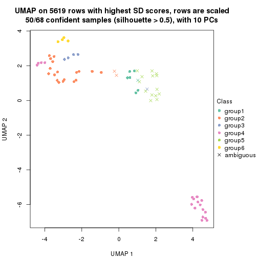
Following heatmap shows how subgroups are split when increasing k:
collect_classes(res)
If matrix rows can be associated to genes, consider to use functional_enrichment(res,
...) to perform function enrichment for the signature genes. See this vignette for more detailed explanations.
The object with results only for a single top-value method and a single partition method can be extracted as:
res = res_list["CV", "hclust"]
# you can also extract it by
# res = res_list["CV:hclust"]
A summary of res and all the functions that can be applied to it:
res
#> A 'ConsensusPartition' object with k = 2, 3, 4, 5, 6.
#> On a matrix with 5619 rows and 68 columns.
#> Top rows (562, 1124, 1686, 2248, 2810) are extracted by 'CV' method.
#> Subgroups are detected by 'hclust' method.
#> Performed in total 1250 partitions by row resampling.
#> Best k for subgroups seems to be 2.
#>
#> Following methods can be applied to this 'ConsensusPartition' object:
#> [1] "cola_report" "collect_classes" "collect_plots"
#> [4] "collect_stats" "colnames" "compare_signatures"
#> [7] "consensus_heatmap" "dimension_reduction" "functional_enrichment"
#> [10] "get_anno_col" "get_anno" "get_classes"
#> [13] "get_consensus" "get_matrix" "get_membership"
#> [16] "get_param" "get_signatures" "get_stats"
#> [19] "is_best_k" "is_stable_k" "membership_heatmap"
#> [22] "ncol" "nrow" "plot_ecdf"
#> [25] "rownames" "select_partition_number" "show"
#> [28] "suggest_best_k" "test_to_known_factors"
collect_plots() function collects all the plots made from res for all k (number of partitions)
into one single page to provide an easy and fast comparison between different k.
collect_plots(res)
The plots are:
k and the heatmap of
predicted classes for each k.k.k.k.All the plots in panels can be made by individual functions and they are plotted later in this section.
select_partition_number() produces several plots showing different
statistics for choosing “optimized” k. There are following statistics:
k;k, the area increased is defined as \(A_k - A_{k-1}\).The detailed explanations of these statistics can be found in the cola vignette.
Generally speaking, lower PAC score, higher mean silhouette score or higher
concordance corresponds to better partition. Rand index and Jaccard index
measure how similar the current partition is compared to partition with k-1.
If they are too similar, we won't accept k is better than k-1.
select_partition_number(res)
The numeric values for all these statistics can be obtained by get_stats().
get_stats(res)
#> k 1-PAC mean_silhouette concordance area_increased Rand Jaccard
#> 2 2 1.000 0.999 1.000 0.2108 0.789 0.789
#> 3 3 1.000 1.000 1.000 0.0366 0.993 0.991
#> 4 4 0.752 0.983 0.924 0.6563 0.781 0.719
#> 5 5 0.847 0.935 0.946 0.1139 0.998 0.997
#> 6 6 0.846 0.922 0.944 0.0053 0.998 0.997
suggest_best_k() suggests the best \(k\) based on these statistics. The rules are as follows:
suggest_best_k(res)
#> [1] 2
Following shows the table of the partitions (You need to click the show/hide
code output link to see it). The membership matrix (columns with name p*)
is inferred by
clue::cl_consensus()
function with the SE method. Basically the value in the membership matrix
represents the probability to belong to a certain group. The finall class
label for an item is determined with the group with highest probability it
belongs to.
In get_classes() function, the entropy is calculated from the membership
matrix and the silhouette score is calculated from the consensus matrix.
cbind(get_classes(res, k = 2), get_membership(res, k = 2))
#> class entropy silhouette p1 p2
#> SRR1035618 2 0.0000 1.000 0.000 1.000
#> SRR1035619 2 0.0000 1.000 0.000 1.000
#> SRR1035620 2 0.0000 1.000 0.000 1.000
#> SRR1035621 2 0.0000 1.000 0.000 1.000
#> SRR1035622 2 0.0000 1.000 0.000 1.000
#> SRR1035623 2 0.0000 1.000 0.000 1.000
#> SRR1035626 2 0.0000 1.000 0.000 1.000
#> SRR1035627 2 0.0000 1.000 0.000 1.000
#> SRR1035628 2 0.0000 1.000 0.000 1.000
#> SRR1035629 2 0.0000 1.000 0.000 1.000
#> SRR1035624 2 0.0000 1.000 0.000 1.000
#> SRR1035625 2 0.0000 1.000 0.000 1.000
#> SRR1035630 2 0.0000 1.000 0.000 1.000
#> SRR1035631 2 0.0000 1.000 0.000 1.000
#> SRR1035632 1 0.0672 0.995 0.992 0.008
#> SRR1035633 1 0.0672 0.995 0.992 0.008
#> SRR1035634 1 0.0672 0.995 0.992 0.008
#> SRR1035635 1 0.0672 0.995 0.992 0.008
#> SRR1035636 2 0.0000 1.000 0.000 1.000
#> SRR1035637 2 0.0000 1.000 0.000 1.000
#> SRR1035638 2 0.0000 1.000 0.000 1.000
#> SRR1035639 2 0.0000 1.000 0.000 1.000
#> SRR1035640 2 0.0000 1.000 0.000 1.000
#> SRR1035641 2 0.0000 1.000 0.000 1.000
#> SRR1035642 2 0.0000 1.000 0.000 1.000
#> SRR1035643 2 0.0000 1.000 0.000 1.000
#> SRR1035644 2 0.0000 1.000 0.000 1.000
#> SRR1035645 2 0.0000 1.000 0.000 1.000
#> SRR1035646 2 0.0000 1.000 0.000 1.000
#> SRR1035647 2 0.0000 1.000 0.000 1.000
#> SRR1035648 2 0.0000 1.000 0.000 1.000
#> SRR1035649 2 0.0000 1.000 0.000 1.000
#> SRR1035654 2 0.0000 1.000 0.000 1.000
#> SRR1035655 2 0.0000 1.000 0.000 1.000
#> SRR1035656 2 0.0000 1.000 0.000 1.000
#> SRR1035657 2 0.0000 1.000 0.000 1.000
#> SRR1035650 2 0.0000 1.000 0.000 1.000
#> SRR1035651 2 0.0000 1.000 0.000 1.000
#> SRR1035652 2 0.0000 1.000 0.000 1.000
#> SRR1035653 2 0.0000 1.000 0.000 1.000
#> SRR1035660 2 0.0000 1.000 0.000 1.000
#> SRR1035661 2 0.0000 1.000 0.000 1.000
#> SRR1035662 2 0.0000 1.000 0.000 1.000
#> SRR1035663 2 0.0000 1.000 0.000 1.000
#> SRR1035658 2 0.0000 1.000 0.000 1.000
#> SRR1035659 2 0.0000 1.000 0.000 1.000
#> SRR1035666 1 0.0000 0.995 1.000 0.000
#> SRR1035667 1 0.0000 0.995 1.000 0.000
#> SRR1035668 1 0.0000 0.995 1.000 0.000
#> SRR1035669 1 0.0000 0.995 1.000 0.000
#> SRR1035664 2 0.0000 1.000 0.000 1.000
#> SRR1035665 2 0.0000 1.000 0.000 1.000
#> SRR1035670 2 0.0000 1.000 0.000 1.000
#> SRR1035671 2 0.0000 1.000 0.000 1.000
#> SRR1035672 2 0.0000 1.000 0.000 1.000
#> SRR1035673 2 0.0000 1.000 0.000 1.000
#> SRR1035674 2 0.0000 1.000 0.000 1.000
#> SRR1035675 2 0.0000 1.000 0.000 1.000
#> SRR1035676 2 0.0000 1.000 0.000 1.000
#> SRR1035677 2 0.0000 1.000 0.000 1.000
#> SRR1035682 2 0.0000 1.000 0.000 1.000
#> SRR1035683 2 0.0000 1.000 0.000 1.000
#> SRR1035684 2 0.0000 1.000 0.000 1.000
#> SRR1035685 2 0.0000 1.000 0.000 1.000
#> SRR1035678 2 0.0000 1.000 0.000 1.000
#> SRR1035679 2 0.0000 1.000 0.000 1.000
#> SRR1035680 2 0.0000 1.000 0.000 1.000
#> SRR1035681 2 0.0000 1.000 0.000 1.000
cbind(get_classes(res, k = 3), get_membership(res, k = 3))
#> class entropy silhouette p1 p2 p3
#> SRR1035618 2 0 1 0 1 0
#> SRR1035619 2 0 1 0 1 0
#> SRR1035620 2 0 1 0 1 0
#> SRR1035621 2 0 1 0 1 0
#> SRR1035622 2 0 1 0 1 0
#> SRR1035623 2 0 1 0 1 0
#> SRR1035626 2 0 1 0 1 0
#> SRR1035627 2 0 1 0 1 0
#> SRR1035628 2 0 1 0 1 0
#> SRR1035629 2 0 1 0 1 0
#> SRR1035624 2 0 1 0 1 0
#> SRR1035625 2 0 1 0 1 0
#> SRR1035630 2 0 1 0 1 0
#> SRR1035631 2 0 1 0 1 0
#> SRR1035632 3 0 1 0 0 1
#> SRR1035633 3 0 1 0 0 1
#> SRR1035634 3 0 1 0 0 1
#> SRR1035635 3 0 1 0 0 1
#> SRR1035636 2 0 1 0 1 0
#> SRR1035637 2 0 1 0 1 0
#> SRR1035638 2 0 1 0 1 0
#> SRR1035639 2 0 1 0 1 0
#> SRR1035640 2 0 1 0 1 0
#> SRR1035641 2 0 1 0 1 0
#> SRR1035642 2 0 1 0 1 0
#> SRR1035643 2 0 1 0 1 0
#> SRR1035644 2 0 1 0 1 0
#> SRR1035645 2 0 1 0 1 0
#> SRR1035646 2 0 1 0 1 0
#> SRR1035647 2 0 1 0 1 0
#> SRR1035648 2 0 1 0 1 0
#> SRR1035649 2 0 1 0 1 0
#> SRR1035654 2 0 1 0 1 0
#> SRR1035655 2 0 1 0 1 0
#> SRR1035656 2 0 1 0 1 0
#> SRR1035657 2 0 1 0 1 0
#> SRR1035650 2 0 1 0 1 0
#> SRR1035651 2 0 1 0 1 0
#> SRR1035652 2 0 1 0 1 0
#> SRR1035653 2 0 1 0 1 0
#> SRR1035660 2 0 1 0 1 0
#> SRR1035661 2 0 1 0 1 0
#> SRR1035662 2 0 1 0 1 0
#> SRR1035663 2 0 1 0 1 0
#> SRR1035658 2 0 1 0 1 0
#> SRR1035659 2 0 1 0 1 0
#> SRR1035666 1 0 1 1 0 0
#> SRR1035667 1 0 1 1 0 0
#> SRR1035668 1 0 1 1 0 0
#> SRR1035669 1 0 1 1 0 0
#> SRR1035664 2 0 1 0 1 0
#> SRR1035665 2 0 1 0 1 0
#> SRR1035670 2 0 1 0 1 0
#> SRR1035671 2 0 1 0 1 0
#> SRR1035672 2 0 1 0 1 0
#> SRR1035673 2 0 1 0 1 0
#> SRR1035674 2 0 1 0 1 0
#> SRR1035675 2 0 1 0 1 0
#> SRR1035676 2 0 1 0 1 0
#> SRR1035677 2 0 1 0 1 0
#> SRR1035682 2 0 1 0 1 0
#> SRR1035683 2 0 1 0 1 0
#> SRR1035684 2 0 1 0 1 0
#> SRR1035685 2 0 1 0 1 0
#> SRR1035678 2 0 1 0 1 0
#> SRR1035679 2 0 1 0 1 0
#> SRR1035680 2 0 1 0 1 0
#> SRR1035681 2 0 1 0 1 0
cbind(get_classes(res, k = 4), get_membership(res, k = 4))
#> class entropy silhouette p1 p2 p3 p4
#> SRR1035618 2 0.0000 1.000 0.000 1.000 0.000 0.000
#> SRR1035619 2 0.0000 1.000 0.000 1.000 0.000 0.000
#> SRR1035620 2 0.0000 1.000 0.000 1.000 0.000 0.000
#> SRR1035621 2 0.0000 1.000 0.000 1.000 0.000 0.000
#> SRR1035622 2 0.0000 1.000 0.000 1.000 0.000 0.000
#> SRR1035623 2 0.0000 1.000 0.000 1.000 0.000 0.000
#> SRR1035626 2 0.0000 1.000 0.000 1.000 0.000 0.000
#> SRR1035627 2 0.0000 1.000 0.000 1.000 0.000 0.000
#> SRR1035628 2 0.0000 1.000 0.000 1.000 0.000 0.000
#> SRR1035629 2 0.0000 1.000 0.000 1.000 0.000 0.000
#> SRR1035624 2 0.0000 1.000 0.000 1.000 0.000 0.000
#> SRR1035625 2 0.0000 1.000 0.000 1.000 0.000 0.000
#> SRR1035630 2 0.0000 1.000 0.000 1.000 0.000 0.000
#> SRR1035631 2 0.0000 1.000 0.000 1.000 0.000 0.000
#> SRR1035632 3 0.4356 0.850 0.292 0.000 0.708 0.000
#> SRR1035633 3 0.4382 0.848 0.296 0.000 0.704 0.000
#> SRR1035634 3 0.0469 0.845 0.012 0.000 0.988 0.000
#> SRR1035635 3 0.0000 0.849 0.000 0.000 1.000 0.000
#> SRR1035636 2 0.0000 1.000 0.000 1.000 0.000 0.000
#> SRR1035637 2 0.0000 1.000 0.000 1.000 0.000 0.000
#> SRR1035638 2 0.0000 1.000 0.000 1.000 0.000 0.000
#> SRR1035639 2 0.0000 1.000 0.000 1.000 0.000 0.000
#> SRR1035640 1 0.4761 0.959 0.628 0.372 0.000 0.000
#> SRR1035641 1 0.4761 0.959 0.628 0.372 0.000 0.000
#> SRR1035642 2 0.0000 1.000 0.000 1.000 0.000 0.000
#> SRR1035643 2 0.0000 1.000 0.000 1.000 0.000 0.000
#> SRR1035644 2 0.0000 1.000 0.000 1.000 0.000 0.000
#> SRR1035645 2 0.0000 1.000 0.000 1.000 0.000 0.000
#> SRR1035646 2 0.0000 1.000 0.000 1.000 0.000 0.000
#> SRR1035647 2 0.0000 1.000 0.000 1.000 0.000 0.000
#> SRR1035648 2 0.0000 1.000 0.000 1.000 0.000 0.000
#> SRR1035649 2 0.0000 1.000 0.000 1.000 0.000 0.000
#> SRR1035654 2 0.0000 1.000 0.000 1.000 0.000 0.000
#> SRR1035655 2 0.0000 1.000 0.000 1.000 0.000 0.000
#> SRR1035656 2 0.0000 1.000 0.000 1.000 0.000 0.000
#> SRR1035657 2 0.0000 1.000 0.000 1.000 0.000 0.000
#> SRR1035650 2 0.0000 1.000 0.000 1.000 0.000 0.000
#> SRR1035651 2 0.0000 1.000 0.000 1.000 0.000 0.000
#> SRR1035652 2 0.0000 1.000 0.000 1.000 0.000 0.000
#> SRR1035653 2 0.0000 1.000 0.000 1.000 0.000 0.000
#> SRR1035660 2 0.0000 1.000 0.000 1.000 0.000 0.000
#> SRR1035661 2 0.0000 1.000 0.000 1.000 0.000 0.000
#> SRR1035662 2 0.0000 1.000 0.000 1.000 0.000 0.000
#> SRR1035663 2 0.0000 1.000 0.000 1.000 0.000 0.000
#> SRR1035658 2 0.0000 1.000 0.000 1.000 0.000 0.000
#> SRR1035659 2 0.0000 1.000 0.000 1.000 0.000 0.000
#> SRR1035666 4 0.0469 0.994 0.012 0.000 0.000 0.988
#> SRR1035667 4 0.0469 0.994 0.012 0.000 0.000 0.988
#> SRR1035668 4 0.0000 0.994 0.000 0.000 0.000 1.000
#> SRR1035669 4 0.0000 0.994 0.000 0.000 0.000 1.000
#> SRR1035664 2 0.0000 1.000 0.000 1.000 0.000 0.000
#> SRR1035665 2 0.0000 1.000 0.000 1.000 0.000 0.000
#> SRR1035670 2 0.0000 1.000 0.000 1.000 0.000 0.000
#> SRR1035671 2 0.0000 1.000 0.000 1.000 0.000 0.000
#> SRR1035672 2 0.0000 1.000 0.000 1.000 0.000 0.000
#> SRR1035673 2 0.0000 1.000 0.000 1.000 0.000 0.000
#> SRR1035674 1 0.4761 0.959 0.628 0.372 0.000 0.000
#> SRR1035675 1 0.4761 0.959 0.628 0.372 0.000 0.000
#> SRR1035676 1 0.4761 0.959 0.628 0.372 0.000 0.000
#> SRR1035677 1 0.4761 0.959 0.628 0.372 0.000 0.000
#> SRR1035682 2 0.0000 1.000 0.000 1.000 0.000 0.000
#> SRR1035683 2 0.0000 1.000 0.000 1.000 0.000 0.000
#> SRR1035684 2 0.0000 1.000 0.000 1.000 0.000 0.000
#> SRR1035685 2 0.0000 1.000 0.000 1.000 0.000 0.000
#> SRR1035678 1 0.4522 0.936 0.680 0.320 0.000 0.000
#> SRR1035679 1 0.4522 0.936 0.680 0.320 0.000 0.000
#> SRR1035680 1 0.4522 0.936 0.680 0.320 0.000 0.000
#> SRR1035681 1 0.4522 0.936 0.680 0.320 0.000 0.000
cbind(get_classes(res, k = 5), get_membership(res, k = 5))
#> class entropy silhouette p1 p2 p3 p4 p5
#> SRR1035618 2 0.0000 1.000 0.000 1.000 0.000 0.000 0.000
#> SRR1035619 2 0.0000 1.000 0.000 1.000 0.000 0.000 0.000
#> SRR1035620 2 0.0000 1.000 0.000 1.000 0.000 0.000 0.000
#> SRR1035621 2 0.0000 1.000 0.000 1.000 0.000 0.000 0.000
#> SRR1035622 2 0.0000 1.000 0.000 1.000 0.000 0.000 0.000
#> SRR1035623 2 0.0000 1.000 0.000 1.000 0.000 0.000 0.000
#> SRR1035626 2 0.0000 1.000 0.000 1.000 0.000 0.000 0.000
#> SRR1035627 2 0.0000 1.000 0.000 1.000 0.000 0.000 0.000
#> SRR1035628 2 0.0000 1.000 0.000 1.000 0.000 0.000 0.000
#> SRR1035629 2 0.0000 1.000 0.000 1.000 0.000 0.000 0.000
#> SRR1035624 2 0.0000 1.000 0.000 1.000 0.000 0.000 0.000
#> SRR1035625 2 0.0000 1.000 0.000 1.000 0.000 0.000 0.000
#> SRR1035630 2 0.0000 1.000 0.000 1.000 0.000 0.000 0.000
#> SRR1035631 2 0.0000 1.000 0.000 1.000 0.000 0.000 0.000
#> SRR1035632 3 0.0404 0.736 0.012 0.000 0.988 0.000 0.000
#> SRR1035633 3 0.0162 0.734 0.000 0.000 0.996 0.004 0.000
#> SRR1035634 3 0.4291 0.722 0.000 0.000 0.536 0.464 0.000
#> SRR1035635 3 0.4256 0.733 0.000 0.000 0.564 0.436 0.000
#> SRR1035636 2 0.0000 1.000 0.000 1.000 0.000 0.000 0.000
#> SRR1035637 2 0.0000 1.000 0.000 1.000 0.000 0.000 0.000
#> SRR1035638 2 0.0000 1.000 0.000 1.000 0.000 0.000 0.000
#> SRR1035639 2 0.0000 1.000 0.000 1.000 0.000 0.000 0.000
#> SRR1035640 1 0.3752 0.749 0.708 0.292 0.000 0.000 0.000
#> SRR1035641 1 0.3752 0.749 0.708 0.292 0.000 0.000 0.000
#> SRR1035642 2 0.0000 1.000 0.000 1.000 0.000 0.000 0.000
#> SRR1035643 2 0.0000 1.000 0.000 1.000 0.000 0.000 0.000
#> SRR1035644 2 0.0000 1.000 0.000 1.000 0.000 0.000 0.000
#> SRR1035645 2 0.0000 1.000 0.000 1.000 0.000 0.000 0.000
#> SRR1035646 2 0.0000 1.000 0.000 1.000 0.000 0.000 0.000
#> SRR1035647 2 0.0000 1.000 0.000 1.000 0.000 0.000 0.000
#> SRR1035648 2 0.0000 1.000 0.000 1.000 0.000 0.000 0.000
#> SRR1035649 2 0.0000 1.000 0.000 1.000 0.000 0.000 0.000
#> SRR1035654 2 0.0000 1.000 0.000 1.000 0.000 0.000 0.000
#> SRR1035655 2 0.0000 1.000 0.000 1.000 0.000 0.000 0.000
#> SRR1035656 2 0.0000 1.000 0.000 1.000 0.000 0.000 0.000
#> SRR1035657 2 0.0000 1.000 0.000 1.000 0.000 0.000 0.000
#> SRR1035650 2 0.0000 1.000 0.000 1.000 0.000 0.000 0.000
#> SRR1035651 2 0.0000 1.000 0.000 1.000 0.000 0.000 0.000
#> SRR1035652 2 0.0000 1.000 0.000 1.000 0.000 0.000 0.000
#> SRR1035653 2 0.0000 1.000 0.000 1.000 0.000 0.000 0.000
#> SRR1035660 2 0.0000 1.000 0.000 1.000 0.000 0.000 0.000
#> SRR1035661 2 0.0000 1.000 0.000 1.000 0.000 0.000 0.000
#> SRR1035662 2 0.0000 1.000 0.000 1.000 0.000 0.000 0.000
#> SRR1035663 2 0.0000 1.000 0.000 1.000 0.000 0.000 0.000
#> SRR1035658 2 0.0000 1.000 0.000 1.000 0.000 0.000 0.000
#> SRR1035659 2 0.0000 1.000 0.000 1.000 0.000 0.000 0.000
#> SRR1035666 4 0.4297 1.000 0.000 0.000 0.000 0.528 0.472
#> SRR1035667 4 0.4297 1.000 0.000 0.000 0.000 0.528 0.472
#> SRR1035668 5 0.0000 1.000 0.000 0.000 0.000 0.000 1.000
#> SRR1035669 5 0.0000 1.000 0.000 0.000 0.000 0.000 1.000
#> SRR1035664 2 0.0000 1.000 0.000 1.000 0.000 0.000 0.000
#> SRR1035665 2 0.0000 1.000 0.000 1.000 0.000 0.000 0.000
#> SRR1035670 2 0.0000 1.000 0.000 1.000 0.000 0.000 0.000
#> SRR1035671 2 0.0000 1.000 0.000 1.000 0.000 0.000 0.000
#> SRR1035672 2 0.0000 1.000 0.000 1.000 0.000 0.000 0.000
#> SRR1035673 2 0.0000 1.000 0.000 1.000 0.000 0.000 0.000
#> SRR1035674 1 0.3752 0.749 0.708 0.292 0.000 0.000 0.000
#> SRR1035675 1 0.3752 0.749 0.708 0.292 0.000 0.000 0.000
#> SRR1035676 1 0.3752 0.749 0.708 0.292 0.000 0.000 0.000
#> SRR1035677 1 0.3752 0.749 0.708 0.292 0.000 0.000 0.000
#> SRR1035682 2 0.0000 1.000 0.000 1.000 0.000 0.000 0.000
#> SRR1035683 2 0.0000 1.000 0.000 1.000 0.000 0.000 0.000
#> SRR1035684 2 0.0000 1.000 0.000 1.000 0.000 0.000 0.000
#> SRR1035685 2 0.0000 1.000 0.000 1.000 0.000 0.000 0.000
#> SRR1035678 1 0.0404 0.532 0.988 0.012 0.000 0.000 0.000
#> SRR1035679 1 0.0404 0.532 0.988 0.012 0.000 0.000 0.000
#> SRR1035680 1 0.0404 0.532 0.988 0.012 0.000 0.000 0.000
#> SRR1035681 1 0.0404 0.532 0.988 0.012 0.000 0.000 0.000
cbind(get_classes(res, k = 6), get_membership(res, k = 6))
#> class entropy silhouette p1 p2 p3 p4 p5 p6
#> SRR1035618 2 0.000 1.000 0.000 1.000 0.000 0.000 0.000 0.000
#> SRR1035619 2 0.000 1.000 0.000 1.000 0.000 0.000 0.000 0.000
#> SRR1035620 2 0.000 1.000 0.000 1.000 0.000 0.000 0.000 0.000
#> SRR1035621 2 0.000 1.000 0.000 1.000 0.000 0.000 0.000 0.000
#> SRR1035622 2 0.000 1.000 0.000 1.000 0.000 0.000 0.000 0.000
#> SRR1035623 2 0.000 1.000 0.000 1.000 0.000 0.000 0.000 0.000
#> SRR1035626 2 0.000 1.000 0.000 1.000 0.000 0.000 0.000 0.000
#> SRR1035627 2 0.000 1.000 0.000 1.000 0.000 0.000 0.000 0.000
#> SRR1035628 2 0.000 1.000 0.000 1.000 0.000 0.000 0.000 0.000
#> SRR1035629 2 0.000 1.000 0.000 1.000 0.000 0.000 0.000 0.000
#> SRR1035624 2 0.000 1.000 0.000 1.000 0.000 0.000 0.000 0.000
#> SRR1035625 2 0.000 1.000 0.000 1.000 0.000 0.000 0.000 0.000
#> SRR1035630 2 0.000 1.000 0.000 1.000 0.000 0.000 0.000 0.000
#> SRR1035631 2 0.000 1.000 0.000 1.000 0.000 0.000 0.000 0.000
#> SRR1035632 3 0.320 0.709 0.000 0.000 0.740 0.260 0.000 0.000
#> SRR1035633 3 0.000 0.707 0.000 0.000 1.000 0.000 0.000 0.000
#> SRR1035634 6 0.256 0.676 0.000 0.000 0.172 0.000 0.000 0.828
#> SRR1035635 6 0.479 0.619 0.000 0.000 0.352 0.064 0.000 0.584
#> SRR1035636 2 0.000 1.000 0.000 1.000 0.000 0.000 0.000 0.000
#> SRR1035637 2 0.000 1.000 0.000 1.000 0.000 0.000 0.000 0.000
#> SRR1035638 2 0.000 1.000 0.000 1.000 0.000 0.000 0.000 0.000
#> SRR1035639 2 0.000 1.000 0.000 1.000 0.000 0.000 0.000 0.000
#> SRR1035640 1 0.337 0.731 0.708 0.292 0.000 0.000 0.000 0.000
#> SRR1035641 1 0.337 0.731 0.708 0.292 0.000 0.000 0.000 0.000
#> SRR1035642 2 0.000 1.000 0.000 1.000 0.000 0.000 0.000 0.000
#> SRR1035643 2 0.000 1.000 0.000 1.000 0.000 0.000 0.000 0.000
#> SRR1035644 2 0.000 1.000 0.000 1.000 0.000 0.000 0.000 0.000
#> SRR1035645 2 0.000 1.000 0.000 1.000 0.000 0.000 0.000 0.000
#> SRR1035646 2 0.000 1.000 0.000 1.000 0.000 0.000 0.000 0.000
#> SRR1035647 2 0.000 1.000 0.000 1.000 0.000 0.000 0.000 0.000
#> SRR1035648 2 0.000 1.000 0.000 1.000 0.000 0.000 0.000 0.000
#> SRR1035649 2 0.000 1.000 0.000 1.000 0.000 0.000 0.000 0.000
#> SRR1035654 2 0.000 1.000 0.000 1.000 0.000 0.000 0.000 0.000
#> SRR1035655 2 0.000 1.000 0.000 1.000 0.000 0.000 0.000 0.000
#> SRR1035656 2 0.000 1.000 0.000 1.000 0.000 0.000 0.000 0.000
#> SRR1035657 2 0.000 1.000 0.000 1.000 0.000 0.000 0.000 0.000
#> SRR1035650 2 0.000 1.000 0.000 1.000 0.000 0.000 0.000 0.000
#> SRR1035651 2 0.000 1.000 0.000 1.000 0.000 0.000 0.000 0.000
#> SRR1035652 2 0.000 1.000 0.000 1.000 0.000 0.000 0.000 0.000
#> SRR1035653 2 0.000 1.000 0.000 1.000 0.000 0.000 0.000 0.000
#> SRR1035660 2 0.000 1.000 0.000 1.000 0.000 0.000 0.000 0.000
#> SRR1035661 2 0.000 1.000 0.000 1.000 0.000 0.000 0.000 0.000
#> SRR1035662 2 0.000 1.000 0.000 1.000 0.000 0.000 0.000 0.000
#> SRR1035663 2 0.000 1.000 0.000 1.000 0.000 0.000 0.000 0.000
#> SRR1035658 2 0.000 1.000 0.000 1.000 0.000 0.000 0.000 0.000
#> SRR1035659 2 0.000 1.000 0.000 1.000 0.000 0.000 0.000 0.000
#> SRR1035666 5 0.000 0.929 0.000 0.000 0.000 0.000 1.000 0.000
#> SRR1035667 5 0.133 0.929 0.000 0.000 0.000 0.000 0.936 0.064
#> SRR1035668 4 0.511 0.884 0.000 0.000 0.000 0.572 0.328 0.100
#> SRR1035669 4 0.352 0.884 0.000 0.000 0.000 0.676 0.324 0.000
#> SRR1035664 2 0.000 1.000 0.000 1.000 0.000 0.000 0.000 0.000
#> SRR1035665 2 0.000 1.000 0.000 1.000 0.000 0.000 0.000 0.000
#> SRR1035670 2 0.000 1.000 0.000 1.000 0.000 0.000 0.000 0.000
#> SRR1035671 2 0.000 1.000 0.000 1.000 0.000 0.000 0.000 0.000
#> SRR1035672 2 0.000 1.000 0.000 1.000 0.000 0.000 0.000 0.000
#> SRR1035673 2 0.000 1.000 0.000 1.000 0.000 0.000 0.000 0.000
#> SRR1035674 1 0.337 0.731 0.708 0.292 0.000 0.000 0.000 0.000
#> SRR1035675 1 0.337 0.731 0.708 0.292 0.000 0.000 0.000 0.000
#> SRR1035676 1 0.337 0.731 0.708 0.292 0.000 0.000 0.000 0.000
#> SRR1035677 1 0.337 0.731 0.708 0.292 0.000 0.000 0.000 0.000
#> SRR1035682 2 0.000 1.000 0.000 1.000 0.000 0.000 0.000 0.000
#> SRR1035683 2 0.000 1.000 0.000 1.000 0.000 0.000 0.000 0.000
#> SRR1035684 2 0.000 1.000 0.000 1.000 0.000 0.000 0.000 0.000
#> SRR1035685 2 0.000 1.000 0.000 1.000 0.000 0.000 0.000 0.000
#> SRR1035678 1 0.000 0.489 1.000 0.000 0.000 0.000 0.000 0.000
#> SRR1035679 1 0.000 0.489 1.000 0.000 0.000 0.000 0.000 0.000
#> SRR1035680 1 0.000 0.489 1.000 0.000 0.000 0.000 0.000 0.000
#> SRR1035681 1 0.000 0.489 1.000 0.000 0.000 0.000 0.000 0.000
Heatmaps for the consensus matrix. It visualizes the probability of two samples to be in a same group.
consensus_heatmap(res, k = 2)
consensus_heatmap(res, k = 3)
consensus_heatmap(res, k = 4)
consensus_heatmap(res, k = 5)
consensus_heatmap(res, k = 6)
Heatmaps for the membership of samples in all partitions to see how consistent they are:
membership_heatmap(res, k = 2)
membership_heatmap(res, k = 3)
membership_heatmap(res, k = 4)
membership_heatmap(res, k = 5)
membership_heatmap(res, k = 6)
As soon as we have had the classes for columns, we can look for signatures which are significantly different between classes which can be candidate marks for certain classes. Following are the heatmaps for signatures.
Signature heatmaps where rows are scaled:
get_signatures(res, k = 2)

get_signatures(res, k = 3)
get_signatures(res, k = 4)
get_signatures(res, k = 5)
get_signatures(res, k = 6)
Signature heatmaps where rows are not scaled:
get_signatures(res, k = 2, scale_rows = FALSE)
get_signatures(res, k = 3, scale_rows = FALSE)
get_signatures(res, k = 4, scale_rows = FALSE)
get_signatures(res, k = 5, scale_rows = FALSE)
get_signatures(res, k = 6, scale_rows = FALSE)
Compare the overlap of signatures from different k:
compare_signatures(res)
get_signature() returns a data frame invisibly. TO get the list of signatures, the function
call should be assigned to a variable explicitly. In following code, if plot argument is set
to FALSE, no heatmap is plotted while only the differential analysis is performed.
# code only for demonstration
tb = get_signature(res, k = ..., plot = FALSE)
An example of the output of tb is:
#> which_row fdr mean_1 mean_2 scaled_mean_1 scaled_mean_2 km
#> 1 38 0.042760348 8.373488 9.131774 -0.5533452 0.5164555 1
#> 2 40 0.018707592 7.106213 8.469186 -0.6173731 0.5762149 1
#> 3 55 0.019134737 10.221463 11.207825 -0.6159697 0.5749050 1
#> 4 59 0.006059896 5.921854 7.869574 -0.6899429 0.6439467 1
#> 5 60 0.018055526 8.928898 10.211722 -0.6204761 0.5791110 1
#> 6 98 0.009384629 15.714769 14.887706 0.6635654 -0.6193277 2
...
The columns in tb are:
which_row: row indices corresponding to the input matrix.fdr: FDR for the differential test. mean_x: The mean value in group x.scaled_mean_x: The mean value in group x after rows are scaled.km: Row groups if k-means clustering is applied to rows.UMAP plot which shows how samples are separated.
dimension_reduction(res, k = 2, method = "UMAP")
dimension_reduction(res, k = 3, method = "UMAP")
dimension_reduction(res, k = 4, method = "UMAP")
dimension_reduction(res, k = 5, method = "UMAP")
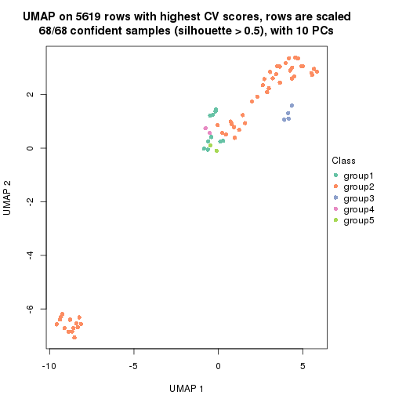
dimension_reduction(res, k = 6, method = "UMAP")
Following heatmap shows how subgroups are split when increasing k:
collect_classes(res)
If matrix rows can be associated to genes, consider to use functional_enrichment(res,
...) to perform function enrichment for the signature genes. See this vignette for more detailed explanations.
The object with results only for a single top-value method and a single partition method can be extracted as:
res = res_list["CV", "kmeans"]
# you can also extract it by
# res = res_list["CV:kmeans"]
A summary of res and all the functions that can be applied to it:
res
#> A 'ConsensusPartition' object with k = 2, 3, 4, 5, 6.
#> On a matrix with 5619 rows and 68 columns.
#> Top rows (562, 1124, 1686, 2248, 2810) are extracted by 'CV' method.
#> Subgroups are detected by 'kmeans' method.
#> Performed in total 1250 partitions by row resampling.
#> Best k for subgroups seems to be 3.
#>
#> Following methods can be applied to this 'ConsensusPartition' object:
#> [1] "cola_report" "collect_classes" "collect_plots"
#> [4] "collect_stats" "colnames" "compare_signatures"
#> [7] "consensus_heatmap" "dimension_reduction" "functional_enrichment"
#> [10] "get_anno_col" "get_anno" "get_classes"
#> [13] "get_consensus" "get_matrix" "get_membership"
#> [16] "get_param" "get_signatures" "get_stats"
#> [19] "is_best_k" "is_stable_k" "membership_heatmap"
#> [22] "ncol" "nrow" "plot_ecdf"
#> [25] "rownames" "select_partition_number" "show"
#> [28] "suggest_best_k" "test_to_known_factors"
collect_plots() function collects all the plots made from res for all k (number of partitions)
into one single page to provide an easy and fast comparison between different k.
collect_plots(res)
The plots are:
k and the heatmap of
predicted classes for each k.k.k.k.All the plots in panels can be made by individual functions and they are plotted later in this section.
select_partition_number() produces several plots showing different
statistics for choosing “optimized” k. There are following statistics:
k;k, the area increased is defined as \(A_k - A_{k-1}\).The detailed explanations of these statistics can be found in the cola vignette.
Generally speaking, lower PAC score, higher mean silhouette score or higher
concordance corresponds to better partition. Rand index and Jaccard index
measure how similar the current partition is compared to partition with k-1.
If they are too similar, we won't accept k is better than k-1.
select_partition_number(res)
The numeric values for all these statistics can be obtained by get_stats().
get_stats(res)
#> k 1-PAC mean_silhouette concordance area_increased Rand Jaccard
#> 2 2 0.827 0.884 0.948 0.277 0.789 0.789
#> 3 3 0.647 0.864 0.898 0.767 0.668 0.580
#> 4 4 0.585 0.763 0.852 0.227 0.949 0.888
#> 5 5 0.676 0.712 0.759 0.120 0.982 0.956
#> 6 6 0.741 0.872 0.802 0.067 0.845 0.604
suggest_best_k() suggests the best \(k\) based on these statistics. The rules are as follows:
suggest_best_k(res)
#> [1] 3
Following shows the table of the partitions (You need to click the show/hide
code output link to see it). The membership matrix (columns with name p*)
is inferred by
clue::cl_consensus()
function with the SE method. Basically the value in the membership matrix
represents the probability to belong to a certain group. The finall class
label for an item is determined with the group with highest probability it
belongs to.
In get_classes() function, the entropy is calculated from the membership
matrix and the silhouette score is calculated from the consensus matrix.
cbind(get_classes(res, k = 2), get_membership(res, k = 2))
#> class entropy silhouette p1 p2
#> SRR1035618 2 0.000 0.937 0.000 1.000
#> SRR1035619 2 0.000 0.937 0.000 1.000
#> SRR1035620 2 0.000 0.937 0.000 1.000
#> SRR1035621 2 0.000 0.937 0.000 1.000
#> SRR1035622 2 0.000 0.937 0.000 1.000
#> SRR1035623 2 0.000 0.937 0.000 1.000
#> SRR1035626 2 0.000 0.937 0.000 1.000
#> SRR1035627 2 0.000 0.937 0.000 1.000
#> SRR1035628 2 0.000 0.937 0.000 1.000
#> SRR1035629 2 0.000 0.937 0.000 1.000
#> SRR1035624 2 0.000 0.937 0.000 1.000
#> SRR1035625 2 0.000 0.937 0.000 1.000
#> SRR1035630 2 0.000 0.937 0.000 1.000
#> SRR1035631 2 0.000 0.937 0.000 1.000
#> SRR1035632 1 0.000 1.000 1.000 0.000
#> SRR1035633 1 0.000 1.000 1.000 0.000
#> SRR1035634 1 0.000 1.000 1.000 0.000
#> SRR1035635 1 0.000 1.000 1.000 0.000
#> SRR1035636 2 0.000 0.937 0.000 1.000
#> SRR1035637 2 0.000 0.937 0.000 1.000
#> SRR1035638 2 0.000 0.937 0.000 1.000
#> SRR1035639 2 0.000 0.937 0.000 1.000
#> SRR1035640 2 0.936 0.533 0.352 0.648
#> SRR1035641 2 0.936 0.533 0.352 0.648
#> SRR1035642 2 0.000 0.937 0.000 1.000
#> SRR1035643 2 0.000 0.937 0.000 1.000
#> SRR1035644 2 0.000 0.937 0.000 1.000
#> SRR1035645 2 0.000 0.937 0.000 1.000
#> SRR1035646 2 0.000 0.937 0.000 1.000
#> SRR1035647 2 0.000 0.937 0.000 1.000
#> SRR1035648 2 0.000 0.937 0.000 1.000
#> SRR1035649 2 0.000 0.937 0.000 1.000
#> SRR1035654 2 0.000 0.937 0.000 1.000
#> SRR1035655 2 0.000 0.937 0.000 1.000
#> SRR1035656 2 0.000 0.937 0.000 1.000
#> SRR1035657 2 0.000 0.937 0.000 1.000
#> SRR1035650 2 0.000 0.937 0.000 1.000
#> SRR1035651 2 0.000 0.937 0.000 1.000
#> SRR1035652 2 0.000 0.937 0.000 1.000
#> SRR1035653 2 0.000 0.937 0.000 1.000
#> SRR1035660 2 0.000 0.937 0.000 1.000
#> SRR1035661 2 0.000 0.937 0.000 1.000
#> SRR1035662 2 0.000 0.937 0.000 1.000
#> SRR1035663 2 0.000 0.937 0.000 1.000
#> SRR1035658 2 0.000 0.937 0.000 1.000
#> SRR1035659 2 0.000 0.937 0.000 1.000
#> SRR1035666 1 0.000 1.000 1.000 0.000
#> SRR1035667 1 0.000 1.000 1.000 0.000
#> SRR1035668 1 0.000 1.000 1.000 0.000
#> SRR1035669 1 0.000 1.000 1.000 0.000
#> SRR1035664 2 0.000 0.937 0.000 1.000
#> SRR1035665 2 0.000 0.937 0.000 1.000
#> SRR1035670 2 0.000 0.937 0.000 1.000
#> SRR1035671 2 0.000 0.937 0.000 1.000
#> SRR1035672 2 0.000 0.937 0.000 1.000
#> SRR1035673 2 0.000 0.937 0.000 1.000
#> SRR1035674 2 0.891 0.605 0.308 0.692
#> SRR1035675 2 0.891 0.605 0.308 0.692
#> SRR1035676 2 0.886 0.611 0.304 0.696
#> SRR1035677 2 0.886 0.611 0.304 0.696
#> SRR1035682 2 0.000 0.937 0.000 1.000
#> SRR1035683 2 0.000 0.937 0.000 1.000
#> SRR1035684 2 0.000 0.937 0.000 1.000
#> SRR1035685 2 0.000 0.937 0.000 1.000
#> SRR1035678 2 0.971 0.438 0.400 0.600
#> SRR1035679 2 0.971 0.438 0.400 0.600
#> SRR1035680 2 0.969 0.446 0.396 0.604
#> SRR1035681 2 0.969 0.446 0.396 0.604
cbind(get_classes(res, k = 3), get_membership(res, k = 3))
#> class entropy silhouette p1 p2 p3
#> SRR1035618 2 0.0000 0.970 0.000 1.000 0.000
#> SRR1035619 2 0.0000 0.970 0.000 1.000 0.000
#> SRR1035620 2 0.0000 0.970 0.000 1.000 0.000
#> SRR1035621 2 0.0000 0.970 0.000 1.000 0.000
#> SRR1035622 2 0.0000 0.970 0.000 1.000 0.000
#> SRR1035623 2 0.0000 0.970 0.000 1.000 0.000
#> SRR1035626 2 0.3619 0.839 0.136 0.864 0.000
#> SRR1035627 2 0.3879 0.817 0.152 0.848 0.000
#> SRR1035628 2 0.3116 0.869 0.108 0.892 0.000
#> SRR1035629 2 0.3340 0.857 0.120 0.880 0.000
#> SRR1035624 2 0.0000 0.970 0.000 1.000 0.000
#> SRR1035625 2 0.0000 0.970 0.000 1.000 0.000
#> SRR1035630 2 0.1411 0.960 0.036 0.964 0.000
#> SRR1035631 2 0.1411 0.960 0.036 0.964 0.000
#> SRR1035632 3 0.0424 0.943 0.008 0.000 0.992
#> SRR1035633 3 0.0424 0.943 0.008 0.000 0.992
#> SRR1035634 3 0.0424 0.943 0.008 0.000 0.992
#> SRR1035635 3 0.0424 0.943 0.008 0.000 0.992
#> SRR1035636 2 0.1411 0.960 0.036 0.964 0.000
#> SRR1035637 2 0.1411 0.960 0.036 0.964 0.000
#> SRR1035638 2 0.1411 0.960 0.036 0.964 0.000
#> SRR1035639 2 0.1411 0.960 0.036 0.964 0.000
#> SRR1035640 1 0.6448 0.680 0.764 0.104 0.132
#> SRR1035641 1 0.6448 0.680 0.764 0.104 0.132
#> SRR1035642 2 0.0000 0.970 0.000 1.000 0.000
#> SRR1035643 2 0.0000 0.970 0.000 1.000 0.000
#> SRR1035644 2 0.0000 0.970 0.000 1.000 0.000
#> SRR1035645 2 0.0000 0.970 0.000 1.000 0.000
#> SRR1035646 2 0.0000 0.970 0.000 1.000 0.000
#> SRR1035647 2 0.0000 0.970 0.000 1.000 0.000
#> SRR1035648 2 0.0000 0.970 0.000 1.000 0.000
#> SRR1035649 2 0.0000 0.970 0.000 1.000 0.000
#> SRR1035654 1 0.6302 0.525 0.520 0.480 0.000
#> SRR1035655 1 0.6302 0.525 0.520 0.480 0.000
#> SRR1035656 1 0.6302 0.525 0.520 0.480 0.000
#> SRR1035657 1 0.6302 0.525 0.520 0.480 0.000
#> SRR1035650 2 0.1411 0.960 0.036 0.964 0.000
#> SRR1035651 2 0.1411 0.960 0.036 0.964 0.000
#> SRR1035652 2 0.1411 0.960 0.036 0.964 0.000
#> SRR1035653 2 0.1411 0.960 0.036 0.964 0.000
#> SRR1035660 2 0.0000 0.970 0.000 1.000 0.000
#> SRR1035661 2 0.0000 0.970 0.000 1.000 0.000
#> SRR1035662 2 0.0000 0.970 0.000 1.000 0.000
#> SRR1035663 2 0.0000 0.970 0.000 1.000 0.000
#> SRR1035658 2 0.0000 0.970 0.000 1.000 0.000
#> SRR1035659 2 0.0000 0.970 0.000 1.000 0.000
#> SRR1035666 3 0.3412 0.942 0.124 0.000 0.876
#> SRR1035667 3 0.3412 0.942 0.124 0.000 0.876
#> SRR1035668 3 0.3412 0.942 0.124 0.000 0.876
#> SRR1035669 3 0.3412 0.942 0.124 0.000 0.876
#> SRR1035664 2 0.0000 0.970 0.000 1.000 0.000
#> SRR1035665 2 0.0000 0.970 0.000 1.000 0.000
#> SRR1035670 1 0.5835 0.674 0.660 0.340 0.000
#> SRR1035671 1 0.5621 0.679 0.692 0.308 0.000
#> SRR1035672 1 0.6267 0.573 0.548 0.452 0.000
#> SRR1035673 1 0.6260 0.579 0.552 0.448 0.000
#> SRR1035674 1 0.6448 0.680 0.764 0.104 0.132
#> SRR1035675 1 0.6448 0.680 0.764 0.104 0.132
#> SRR1035676 1 0.6448 0.680 0.764 0.104 0.132
#> SRR1035677 1 0.6448 0.680 0.764 0.104 0.132
#> SRR1035682 2 0.1411 0.960 0.036 0.964 0.000
#> SRR1035683 2 0.1411 0.960 0.036 0.964 0.000
#> SRR1035684 2 0.1411 0.960 0.036 0.964 0.000
#> SRR1035685 2 0.1411 0.960 0.036 0.964 0.000
#> SRR1035678 1 0.5307 0.609 0.816 0.048 0.136
#> SRR1035679 1 0.5307 0.609 0.816 0.048 0.136
#> SRR1035680 1 0.5307 0.609 0.816 0.048 0.136
#> SRR1035681 1 0.5307 0.609 0.816 0.048 0.136
cbind(get_classes(res, k = 4), get_membership(res, k = 4))
#> class entropy silhouette p1 p2 p3 p4
#> SRR1035618 2 0.0000 0.825 0.000 1.000 0.000 0.000
#> SRR1035619 2 0.0000 0.825 0.000 1.000 0.000 0.000
#> SRR1035620 2 0.0000 0.825 0.000 1.000 0.000 0.000
#> SRR1035621 2 0.0000 0.825 0.000 1.000 0.000 0.000
#> SRR1035622 2 0.0336 0.821 0.000 0.992 0.000 0.008
#> SRR1035623 2 0.0336 0.821 0.000 0.992 0.000 0.008
#> SRR1035626 4 0.7478 0.975 0.084 0.404 0.032 0.480
#> SRR1035627 4 0.7478 0.975 0.084 0.404 0.032 0.480
#> SRR1035628 4 0.7233 0.948 0.064 0.428 0.032 0.476
#> SRR1035629 2 0.7444 -0.872 0.080 0.468 0.032 0.420
#> SRR1035624 2 0.0336 0.821 0.000 0.992 0.000 0.008
#> SRR1035625 2 0.0336 0.821 0.000 0.992 0.000 0.008
#> SRR1035630 2 0.3649 0.730 0.000 0.796 0.000 0.204
#> SRR1035631 2 0.3649 0.730 0.000 0.796 0.000 0.204
#> SRR1035632 3 0.5188 0.864 0.044 0.000 0.716 0.240
#> SRR1035633 3 0.5188 0.864 0.044 0.000 0.716 0.240
#> SRR1035634 3 0.5156 0.864 0.044 0.000 0.720 0.236
#> SRR1035635 3 0.5156 0.864 0.044 0.000 0.720 0.236
#> SRR1035636 2 0.3649 0.730 0.000 0.796 0.000 0.204
#> SRR1035637 2 0.3649 0.730 0.000 0.796 0.000 0.204
#> SRR1035638 2 0.3649 0.730 0.000 0.796 0.000 0.204
#> SRR1035639 2 0.3649 0.730 0.000 0.796 0.000 0.204
#> SRR1035640 1 0.1786 0.788 0.948 0.008 0.008 0.036
#> SRR1035641 1 0.1786 0.788 0.948 0.008 0.008 0.036
#> SRR1035642 2 0.0000 0.825 0.000 1.000 0.000 0.000
#> SRR1035643 2 0.0000 0.825 0.000 1.000 0.000 0.000
#> SRR1035644 2 0.0000 0.825 0.000 1.000 0.000 0.000
#> SRR1035645 2 0.0000 0.825 0.000 1.000 0.000 0.000
#> SRR1035646 2 0.0000 0.825 0.000 1.000 0.000 0.000
#> SRR1035647 2 0.0000 0.825 0.000 1.000 0.000 0.000
#> SRR1035648 2 0.0000 0.825 0.000 1.000 0.000 0.000
#> SRR1035649 2 0.0000 0.825 0.000 1.000 0.000 0.000
#> SRR1035654 1 0.5664 0.656 0.696 0.228 0.000 0.076
#> SRR1035655 1 0.5664 0.656 0.696 0.228 0.000 0.076
#> SRR1035656 1 0.5664 0.656 0.696 0.228 0.000 0.076
#> SRR1035657 1 0.5664 0.656 0.696 0.228 0.000 0.076
#> SRR1035650 2 0.3649 0.730 0.000 0.796 0.000 0.204
#> SRR1035651 2 0.3649 0.730 0.000 0.796 0.000 0.204
#> SRR1035652 2 0.3649 0.730 0.000 0.796 0.000 0.204
#> SRR1035653 2 0.3649 0.730 0.000 0.796 0.000 0.204
#> SRR1035660 2 0.1211 0.785 0.000 0.960 0.000 0.040
#> SRR1035661 2 0.1211 0.785 0.000 0.960 0.000 0.040
#> SRR1035662 2 0.0592 0.815 0.000 0.984 0.000 0.016
#> SRR1035663 2 0.0469 0.818 0.000 0.988 0.000 0.012
#> SRR1035658 2 0.2021 0.741 0.012 0.932 0.000 0.056
#> SRR1035659 2 0.2021 0.741 0.012 0.932 0.000 0.056
#> SRR1035666 3 0.2469 0.865 0.108 0.000 0.892 0.000
#> SRR1035667 3 0.2469 0.865 0.108 0.000 0.892 0.000
#> SRR1035668 3 0.2469 0.865 0.108 0.000 0.892 0.000
#> SRR1035669 3 0.2469 0.865 0.108 0.000 0.892 0.000
#> SRR1035664 2 0.0592 0.815 0.000 0.984 0.000 0.016
#> SRR1035665 2 0.0592 0.815 0.000 0.984 0.000 0.016
#> SRR1035670 1 0.4513 0.756 0.804 0.120 0.000 0.076
#> SRR1035671 1 0.4401 0.760 0.812 0.112 0.000 0.076
#> SRR1035672 1 0.5494 0.683 0.716 0.208 0.000 0.076
#> SRR1035673 1 0.5494 0.684 0.716 0.208 0.000 0.076
#> SRR1035674 1 0.0804 0.792 0.980 0.012 0.000 0.008
#> SRR1035675 1 0.0804 0.792 0.980 0.012 0.000 0.008
#> SRR1035676 1 0.0804 0.792 0.980 0.012 0.000 0.008
#> SRR1035677 1 0.0804 0.792 0.980 0.012 0.000 0.008
#> SRR1035682 2 0.3649 0.730 0.000 0.796 0.000 0.204
#> SRR1035683 2 0.3649 0.730 0.000 0.796 0.000 0.204
#> SRR1035684 2 0.3649 0.730 0.000 0.796 0.000 0.204
#> SRR1035685 2 0.3649 0.730 0.000 0.796 0.000 0.204
#> SRR1035678 1 0.2408 0.740 0.896 0.000 0.000 0.104
#> SRR1035679 1 0.2408 0.740 0.896 0.000 0.000 0.104
#> SRR1035680 1 0.2408 0.740 0.896 0.000 0.000 0.104
#> SRR1035681 1 0.2408 0.740 0.896 0.000 0.000 0.104
cbind(get_classes(res, k = 5), get_membership(res, k = 5))
#> class entropy silhouette p1 p2 p3 p4 p5
#> SRR1035618 2 0.0000 0.754 0.000 1.000 0.000 0.000 0.000
#> SRR1035619 2 0.0000 0.754 0.000 1.000 0.000 0.000 0.000
#> SRR1035620 2 0.0000 0.754 0.000 1.000 0.000 0.000 0.000
#> SRR1035621 2 0.0000 0.754 0.000 1.000 0.000 0.000 0.000
#> SRR1035622 2 0.1117 0.739 0.000 0.964 0.000 0.016 0.020
#> SRR1035623 2 0.1117 0.739 0.000 0.964 0.000 0.016 0.020
#> SRR1035626 4 0.4964 0.946 0.036 0.196 0.000 0.728 0.040
#> SRR1035627 4 0.5103 0.946 0.036 0.196 0.000 0.720 0.048
#> SRR1035628 4 0.5091 0.938 0.024 0.200 0.000 0.716 0.060
#> SRR1035629 4 0.6291 0.887 0.072 0.216 0.000 0.632 0.080
#> SRR1035624 2 0.1117 0.739 0.000 0.964 0.000 0.016 0.020
#> SRR1035625 2 0.1117 0.739 0.000 0.964 0.000 0.016 0.020
#> SRR1035630 2 0.4171 0.610 0.000 0.604 0.000 0.000 0.396
#> SRR1035631 2 0.4171 0.610 0.000 0.604 0.000 0.000 0.396
#> SRR1035632 3 0.0451 0.752 0.000 0.000 0.988 0.008 0.004
#> SRR1035633 3 0.0451 0.752 0.000 0.000 0.988 0.008 0.004
#> SRR1035634 3 0.0000 0.752 0.000 0.000 1.000 0.000 0.000
#> SRR1035635 3 0.0000 0.752 0.000 0.000 1.000 0.000 0.000
#> SRR1035636 2 0.4171 0.610 0.000 0.604 0.000 0.000 0.396
#> SRR1035637 2 0.4171 0.610 0.000 0.604 0.000 0.000 0.396
#> SRR1035638 2 0.4171 0.610 0.000 0.604 0.000 0.000 0.396
#> SRR1035639 2 0.4171 0.610 0.000 0.604 0.000 0.000 0.396
#> SRR1035640 1 0.1173 0.758 0.964 0.004 0.000 0.020 0.012
#> SRR1035641 1 0.1173 0.758 0.964 0.004 0.000 0.020 0.012
#> SRR1035642 2 0.0000 0.754 0.000 1.000 0.000 0.000 0.000
#> SRR1035643 2 0.0000 0.754 0.000 1.000 0.000 0.000 0.000
#> SRR1035644 2 0.0000 0.754 0.000 1.000 0.000 0.000 0.000
#> SRR1035645 2 0.0000 0.754 0.000 1.000 0.000 0.000 0.000
#> SRR1035646 2 0.0162 0.754 0.000 0.996 0.000 0.000 0.004
#> SRR1035647 2 0.0290 0.754 0.000 0.992 0.000 0.000 0.008
#> SRR1035648 2 0.0510 0.752 0.000 0.984 0.000 0.000 0.016
#> SRR1035649 2 0.0162 0.754 0.000 0.996 0.000 0.000 0.004
#> SRR1035654 1 0.6027 0.685 0.684 0.096 0.000 0.116 0.104
#> SRR1035655 1 0.6027 0.685 0.684 0.096 0.000 0.116 0.104
#> SRR1035656 1 0.6027 0.685 0.684 0.096 0.000 0.116 0.104
#> SRR1035657 1 0.6027 0.685 0.684 0.096 0.000 0.116 0.104
#> SRR1035650 2 0.4171 0.610 0.000 0.604 0.000 0.000 0.396
#> SRR1035651 2 0.4171 0.610 0.000 0.604 0.000 0.000 0.396
#> SRR1035652 2 0.4171 0.610 0.000 0.604 0.000 0.000 0.396
#> SRR1035653 2 0.4171 0.610 0.000 0.604 0.000 0.000 0.396
#> SRR1035660 2 0.2654 0.663 0.000 0.888 0.000 0.048 0.064
#> SRR1035661 2 0.2654 0.663 0.000 0.888 0.000 0.048 0.064
#> SRR1035662 2 0.1117 0.739 0.000 0.964 0.000 0.016 0.020
#> SRR1035663 2 0.1117 0.739 0.000 0.964 0.000 0.016 0.020
#> SRR1035658 2 0.4201 0.551 0.024 0.808 0.000 0.072 0.096
#> SRR1035659 2 0.4201 0.551 0.024 0.808 0.000 0.072 0.096
#> SRR1035666 3 0.6672 0.753 0.032 0.000 0.512 0.120 0.336
#> SRR1035667 3 0.6672 0.753 0.032 0.000 0.512 0.120 0.336
#> SRR1035668 3 0.6697 0.753 0.032 0.000 0.512 0.124 0.332
#> SRR1035669 3 0.6697 0.753 0.032 0.000 0.512 0.124 0.332
#> SRR1035664 2 0.1117 0.739 0.000 0.964 0.000 0.016 0.020
#> SRR1035665 2 0.1117 0.739 0.000 0.964 0.000 0.016 0.020
#> SRR1035670 1 0.5340 0.716 0.732 0.048 0.000 0.116 0.104
#> SRR1035671 1 0.5049 0.721 0.748 0.032 0.000 0.116 0.104
#> SRR1035672 1 0.5927 0.696 0.692 0.088 0.000 0.116 0.104
#> SRR1035673 1 0.5927 0.696 0.692 0.088 0.000 0.116 0.104
#> SRR1035674 1 0.1267 0.758 0.960 0.004 0.000 0.012 0.024
#> SRR1035675 1 0.1267 0.758 0.960 0.004 0.000 0.012 0.024
#> SRR1035676 1 0.1267 0.758 0.960 0.004 0.000 0.012 0.024
#> SRR1035677 1 0.1267 0.758 0.960 0.004 0.000 0.012 0.024
#> SRR1035682 2 0.4171 0.610 0.000 0.604 0.000 0.000 0.396
#> SRR1035683 2 0.4171 0.610 0.000 0.604 0.000 0.000 0.396
#> SRR1035684 2 0.4171 0.610 0.000 0.604 0.000 0.000 0.396
#> SRR1035685 2 0.4171 0.610 0.000 0.604 0.000 0.000 0.396
#> SRR1035678 1 0.4501 0.653 0.756 0.000 0.000 0.116 0.128
#> SRR1035679 1 0.4498 0.653 0.756 0.000 0.000 0.112 0.132
#> SRR1035680 1 0.4410 0.653 0.764 0.000 0.000 0.112 0.124
#> SRR1035681 1 0.4410 0.653 0.764 0.000 0.000 0.112 0.124
cbind(get_classes(res, k = 6), get_membership(res, k = 6))
#> class entropy silhouette p1 p2 p3 p4 p5 p6
#> SRR1035618 2 0.0806 0.934 0.000 0.972 0.008 0.020 0.000 0.000
#> SRR1035619 2 0.0806 0.934 0.000 0.972 0.008 0.020 0.000 0.000
#> SRR1035620 2 0.0806 0.934 0.000 0.972 0.008 0.020 0.000 0.000
#> SRR1035621 2 0.0806 0.934 0.000 0.972 0.008 0.020 0.000 0.000
#> SRR1035622 2 0.0000 0.936 0.000 1.000 0.000 0.000 0.000 0.000
#> SRR1035623 2 0.0000 0.936 0.000 1.000 0.000 0.000 0.000 0.000
#> SRR1035626 6 0.2382 0.918 0.004 0.072 0.008 0.020 0.000 0.896
#> SRR1035627 6 0.3118 0.910 0.004 0.068 0.020 0.048 0.000 0.860
#> SRR1035628 6 0.2886 0.918 0.008 0.076 0.012 0.032 0.000 0.872
#> SRR1035629 6 0.5324 0.820 0.088 0.112 0.032 0.040 0.004 0.724
#> SRR1035624 2 0.0000 0.936 0.000 1.000 0.000 0.000 0.000 0.000
#> SRR1035625 2 0.0000 0.936 0.000 1.000 0.000 0.000 0.000 0.000
#> SRR1035630 4 0.3737 0.993 0.000 0.392 0.000 0.608 0.000 0.000
#> SRR1035631 4 0.3737 0.993 0.000 0.392 0.000 0.608 0.000 0.000
#> SRR1035632 3 0.3515 0.983 0.000 0.000 0.676 0.000 0.324 0.000
#> SRR1035633 3 0.3515 0.983 0.000 0.000 0.676 0.000 0.324 0.000
#> SRR1035634 3 0.4094 0.983 0.000 0.000 0.652 0.024 0.324 0.000
#> SRR1035635 3 0.4094 0.983 0.000 0.000 0.652 0.024 0.324 0.000
#> SRR1035636 4 0.4141 0.983 0.000 0.388 0.016 0.596 0.000 0.000
#> SRR1035637 4 0.4141 0.983 0.000 0.388 0.016 0.596 0.000 0.000
#> SRR1035638 4 0.4141 0.983 0.000 0.388 0.016 0.596 0.000 0.000
#> SRR1035639 4 0.4141 0.983 0.000 0.388 0.016 0.596 0.000 0.000
#> SRR1035640 1 0.2952 0.726 0.880 0.004 0.040 0.024 0.008 0.044
#> SRR1035641 1 0.2952 0.726 0.880 0.004 0.040 0.024 0.008 0.044
#> SRR1035642 2 0.0547 0.935 0.000 0.980 0.000 0.020 0.000 0.000
#> SRR1035643 2 0.0547 0.935 0.000 0.980 0.000 0.020 0.000 0.000
#> SRR1035644 2 0.0547 0.935 0.000 0.980 0.000 0.020 0.000 0.000
#> SRR1035645 2 0.0547 0.935 0.000 0.980 0.000 0.020 0.000 0.000
#> SRR1035646 2 0.0790 0.924 0.000 0.968 0.000 0.032 0.000 0.000
#> SRR1035647 2 0.1007 0.911 0.000 0.956 0.000 0.044 0.000 0.000
#> SRR1035648 2 0.1007 0.911 0.000 0.956 0.000 0.044 0.000 0.000
#> SRR1035649 2 0.0865 0.920 0.000 0.964 0.000 0.036 0.000 0.000
#> SRR1035654 1 0.4494 0.734 0.784 0.084 0.060 0.028 0.000 0.044
#> SRR1035655 1 0.4494 0.734 0.784 0.084 0.060 0.028 0.000 0.044
#> SRR1035656 1 0.4494 0.734 0.784 0.084 0.060 0.028 0.000 0.044
#> SRR1035657 1 0.4494 0.734 0.784 0.084 0.060 0.028 0.000 0.044
#> SRR1035650 4 0.3737 0.993 0.000 0.392 0.000 0.608 0.000 0.000
#> SRR1035651 4 0.3737 0.993 0.000 0.392 0.000 0.608 0.000 0.000
#> SRR1035652 4 0.3737 0.993 0.000 0.392 0.000 0.608 0.000 0.000
#> SRR1035653 4 0.3737 0.993 0.000 0.392 0.000 0.608 0.000 0.000
#> SRR1035660 2 0.2082 0.849 0.024 0.924 0.016 0.016 0.000 0.020
#> SRR1035661 2 0.2082 0.849 0.024 0.924 0.016 0.016 0.000 0.020
#> SRR1035662 2 0.0146 0.934 0.000 0.996 0.000 0.004 0.000 0.000
#> SRR1035663 2 0.0000 0.936 0.000 1.000 0.000 0.000 0.000 0.000
#> SRR1035658 2 0.3747 0.713 0.084 0.828 0.040 0.028 0.000 0.020
#> SRR1035659 2 0.3747 0.713 0.084 0.828 0.040 0.028 0.000 0.020
#> SRR1035666 5 0.0146 0.992 0.004 0.000 0.000 0.000 0.996 0.000
#> SRR1035667 5 0.0146 0.992 0.004 0.000 0.000 0.000 0.996 0.000
#> SRR1035668 5 0.0508 0.992 0.004 0.000 0.000 0.012 0.984 0.000
#> SRR1035669 5 0.0508 0.992 0.004 0.000 0.000 0.012 0.984 0.000
#> SRR1035664 2 0.0146 0.934 0.000 0.996 0.000 0.004 0.000 0.000
#> SRR1035665 2 0.0146 0.934 0.000 0.996 0.000 0.004 0.000 0.000
#> SRR1035670 1 0.4179 0.742 0.808 0.060 0.060 0.032 0.000 0.040
#> SRR1035671 1 0.4120 0.742 0.812 0.056 0.060 0.032 0.000 0.040
#> SRR1035672 1 0.4456 0.737 0.788 0.076 0.064 0.032 0.000 0.040
#> SRR1035673 1 0.4399 0.738 0.792 0.076 0.060 0.032 0.000 0.040
#> SRR1035674 1 0.2656 0.734 0.892 0.008 0.060 0.016 0.004 0.020
#> SRR1035675 1 0.2656 0.734 0.892 0.008 0.060 0.016 0.004 0.020
#> SRR1035676 1 0.2656 0.734 0.892 0.008 0.060 0.016 0.004 0.020
#> SRR1035677 1 0.2656 0.734 0.892 0.008 0.060 0.016 0.004 0.020
#> SRR1035682 4 0.3737 0.993 0.000 0.392 0.000 0.608 0.000 0.000
#> SRR1035683 4 0.3737 0.993 0.000 0.392 0.000 0.608 0.000 0.000
#> SRR1035684 4 0.3737 0.993 0.000 0.392 0.000 0.608 0.000 0.000
#> SRR1035685 4 0.3737 0.993 0.000 0.392 0.000 0.608 0.000 0.000
#> SRR1035678 1 0.5980 0.485 0.580 0.000 0.132 0.240 0.000 0.048
#> SRR1035679 1 0.5966 0.485 0.580 0.000 0.128 0.244 0.000 0.048
#> SRR1035680 1 0.5936 0.487 0.576 0.000 0.116 0.260 0.000 0.048
#> SRR1035681 1 0.5936 0.487 0.576 0.000 0.116 0.260 0.000 0.048
Heatmaps for the consensus matrix. It visualizes the probability of two samples to be in a same group.
consensus_heatmap(res, k = 2)
consensus_heatmap(res, k = 3)
consensus_heatmap(res, k = 4)
consensus_heatmap(res, k = 5)
consensus_heatmap(res, k = 6)
Heatmaps for the membership of samples in all partitions to see how consistent they are:
membership_heatmap(res, k = 2)
membership_heatmap(res, k = 3)
membership_heatmap(res, k = 4)
membership_heatmap(res, k = 5)
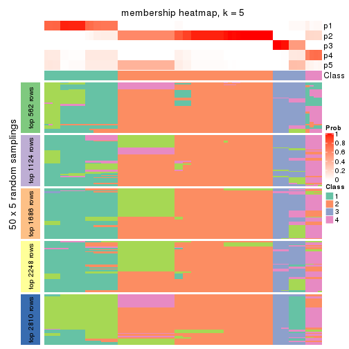
membership_heatmap(res, k = 6)
As soon as we have had the classes for columns, we can look for signatures which are significantly different between classes which can be candidate marks for certain classes. Following are the heatmaps for signatures.
Signature heatmaps where rows are scaled:
get_signatures(res, k = 2)
get_signatures(res, k = 3)
get_signatures(res, k = 4)
get_signatures(res, k = 5)
get_signatures(res, k = 6)
Signature heatmaps where rows are not scaled:
get_signatures(res, k = 2, scale_rows = FALSE)
get_signatures(res, k = 3, scale_rows = FALSE)
get_signatures(res, k = 4, scale_rows = FALSE)
get_signatures(res, k = 5, scale_rows = FALSE)
get_signatures(res, k = 6, scale_rows = FALSE)

Compare the overlap of signatures from different k:
compare_signatures(res)
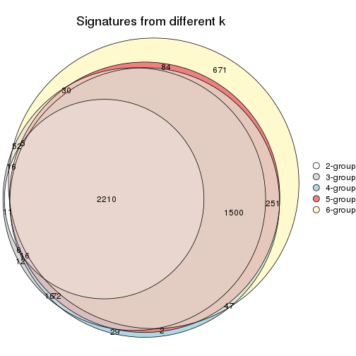
get_signature() returns a data frame invisibly. TO get the list of signatures, the function
call should be assigned to a variable explicitly. In following code, if plot argument is set
to FALSE, no heatmap is plotted while only the differential analysis is performed.
# code only for demonstration
tb = get_signature(res, k = ..., plot = FALSE)
An example of the output of tb is:
#> which_row fdr mean_1 mean_2 scaled_mean_1 scaled_mean_2 km
#> 1 38 0.042760348 8.373488 9.131774 -0.5533452 0.5164555 1
#> 2 40 0.018707592 7.106213 8.469186 -0.6173731 0.5762149 1
#> 3 55 0.019134737 10.221463 11.207825 -0.6159697 0.5749050 1
#> 4 59 0.006059896 5.921854 7.869574 -0.6899429 0.6439467 1
#> 5 60 0.018055526 8.928898 10.211722 -0.6204761 0.5791110 1
#> 6 98 0.009384629 15.714769 14.887706 0.6635654 -0.6193277 2
...
The columns in tb are:
which_row: row indices corresponding to the input matrix.fdr: FDR for the differential test. mean_x: The mean value in group x.scaled_mean_x: The mean value in group x after rows are scaled.km: Row groups if k-means clustering is applied to rows.UMAP plot which shows how samples are separated.
dimension_reduction(res, k = 2, method = "UMAP")
dimension_reduction(res, k = 3, method = "UMAP")
dimension_reduction(res, k = 4, method = "UMAP")
dimension_reduction(res, k = 5, method = "UMAP")
dimension_reduction(res, k = 6, method = "UMAP")
Following heatmap shows how subgroups are split when increasing k:
collect_classes(res)
If matrix rows can be associated to genes, consider to use functional_enrichment(res,
...) to perform function enrichment for the signature genes. See this vignette for more detailed explanations.
The object with results only for a single top-value method and a single partition method can be extracted as:
res = res_list["CV", "skmeans"]
# you can also extract it by
# res = res_list["CV:skmeans"]
A summary of res and all the functions that can be applied to it:
res
#> A 'ConsensusPartition' object with k = 2, 3, 4, 5, 6.
#> On a matrix with 5619 rows and 68 columns.
#> Top rows (562, 1124, 1686, 2248, 2810) are extracted by 'CV' method.
#> Subgroups are detected by 'skmeans' method.
#> Performed in total 1250 partitions by row resampling.
#> Best k for subgroups seems to be 2.
#>
#> Following methods can be applied to this 'ConsensusPartition' object:
#> [1] "cola_report" "collect_classes" "collect_plots"
#> [4] "collect_stats" "colnames" "compare_signatures"
#> [7] "consensus_heatmap" "dimension_reduction" "functional_enrichment"
#> [10] "get_anno_col" "get_anno" "get_classes"
#> [13] "get_consensus" "get_matrix" "get_membership"
#> [16] "get_param" "get_signatures" "get_stats"
#> [19] "is_best_k" "is_stable_k" "membership_heatmap"
#> [22] "ncol" "nrow" "plot_ecdf"
#> [25] "rownames" "select_partition_number" "show"
#> [28] "suggest_best_k" "test_to_known_factors"
collect_plots() function collects all the plots made from res for all k (number of partitions)
into one single page to provide an easy and fast comparison between different k.
collect_plots(res)
The plots are:
k and the heatmap of
predicted classes for each k.k.k.k.All the plots in panels can be made by individual functions and they are plotted later in this section.
select_partition_number() produces several plots showing different
statistics for choosing “optimized” k. There are following statistics:
k;k, the area increased is defined as \(A_k - A_{k-1}\).The detailed explanations of these statistics can be found in the cola vignette.
Generally speaking, lower PAC score, higher mean silhouette score or higher
concordance corresponds to better partition. Rand index and Jaccard index
measure how similar the current partition is compared to partition with k-1.
If they are too similar, we won't accept k is better than k-1.
select_partition_number(res)
The numeric values for all these statistics can be obtained by get_stats().
get_stats(res)
#> k 1-PAC mean_silhouette concordance area_increased Rand Jaccard
#> 2 2 0.837 0.968 0.982 0.4684 0.521 0.521
#> 3 3 0.714 0.822 0.855 0.2650 0.879 0.773
#> 4 4 0.768 0.908 0.902 0.2193 0.795 0.537
#> 5 5 0.813 0.854 0.834 0.0526 0.975 0.904
#> 6 6 0.850 0.837 0.884 0.0417 0.960 0.829
suggest_best_k() suggests the best \(k\) based on these statistics. The rules are as follows:
suggest_best_k(res)
#> [1] 2
Following shows the table of the partitions (You need to click the show/hide
code output link to see it). The membership matrix (columns with name p*)
is inferred by
clue::cl_consensus()
function with the SE method. Basically the value in the membership matrix
represents the probability to belong to a certain group. The finall class
label for an item is determined with the group with highest probability it
belongs to.
In get_classes() function, the entropy is calculated from the membership
matrix and the silhouette score is calculated from the consensus matrix.
cbind(get_classes(res, k = 2), get_membership(res, k = 2))
#> class entropy silhouette p1 p2
#> SRR1035618 2 0.0000 1.000 0.000 1.000
#> SRR1035619 2 0.0000 1.000 0.000 1.000
#> SRR1035620 2 0.0000 1.000 0.000 1.000
#> SRR1035621 2 0.0000 1.000 0.000 1.000
#> SRR1035622 2 0.0000 1.000 0.000 1.000
#> SRR1035623 2 0.0000 1.000 0.000 1.000
#> SRR1035626 2 0.0000 1.000 0.000 1.000
#> SRR1035627 2 0.0672 0.991 0.008 0.992
#> SRR1035628 2 0.0000 1.000 0.000 1.000
#> SRR1035629 2 0.0000 1.000 0.000 1.000
#> SRR1035624 2 0.0000 1.000 0.000 1.000
#> SRR1035625 2 0.0000 1.000 0.000 1.000
#> SRR1035630 2 0.0000 1.000 0.000 1.000
#> SRR1035631 2 0.0000 1.000 0.000 1.000
#> SRR1035632 1 0.0000 0.951 1.000 0.000
#> SRR1035633 1 0.0000 0.951 1.000 0.000
#> SRR1035634 1 0.0000 0.951 1.000 0.000
#> SRR1035635 1 0.0000 0.951 1.000 0.000
#> SRR1035636 2 0.0000 1.000 0.000 1.000
#> SRR1035637 2 0.0000 1.000 0.000 1.000
#> SRR1035638 2 0.0000 1.000 0.000 1.000
#> SRR1035639 2 0.0000 1.000 0.000 1.000
#> SRR1035640 1 0.0000 0.951 1.000 0.000
#> SRR1035641 1 0.0000 0.951 1.000 0.000
#> SRR1035642 2 0.0000 1.000 0.000 1.000
#> SRR1035643 2 0.0000 1.000 0.000 1.000
#> SRR1035644 2 0.0000 1.000 0.000 1.000
#> SRR1035645 2 0.0000 1.000 0.000 1.000
#> SRR1035646 2 0.0000 1.000 0.000 1.000
#> SRR1035647 2 0.0000 1.000 0.000 1.000
#> SRR1035648 2 0.0000 1.000 0.000 1.000
#> SRR1035649 2 0.0000 1.000 0.000 1.000
#> SRR1035654 1 0.7219 0.800 0.800 0.200
#> SRR1035655 1 0.7219 0.800 0.800 0.200
#> SRR1035656 1 0.7219 0.800 0.800 0.200
#> SRR1035657 1 0.7219 0.800 0.800 0.200
#> SRR1035650 2 0.0000 1.000 0.000 1.000
#> SRR1035651 2 0.0000 1.000 0.000 1.000
#> SRR1035652 2 0.0000 1.000 0.000 1.000
#> SRR1035653 2 0.0000 1.000 0.000 1.000
#> SRR1035660 2 0.0000 1.000 0.000 1.000
#> SRR1035661 2 0.0000 1.000 0.000 1.000
#> SRR1035662 2 0.0000 1.000 0.000 1.000
#> SRR1035663 2 0.0000 1.000 0.000 1.000
#> SRR1035658 2 0.0000 1.000 0.000 1.000
#> SRR1035659 2 0.0000 1.000 0.000 1.000
#> SRR1035666 1 0.0000 0.951 1.000 0.000
#> SRR1035667 1 0.0000 0.951 1.000 0.000
#> SRR1035668 1 0.0000 0.951 1.000 0.000
#> SRR1035669 1 0.0000 0.951 1.000 0.000
#> SRR1035664 2 0.0000 1.000 0.000 1.000
#> SRR1035665 2 0.0000 1.000 0.000 1.000
#> SRR1035670 1 0.0000 0.951 1.000 0.000
#> SRR1035671 1 0.0000 0.951 1.000 0.000
#> SRR1035672 1 0.7219 0.800 0.800 0.200
#> SRR1035673 1 0.7219 0.800 0.800 0.200
#> SRR1035674 1 0.0000 0.951 1.000 0.000
#> SRR1035675 1 0.0000 0.951 1.000 0.000
#> SRR1035676 1 0.0000 0.951 1.000 0.000
#> SRR1035677 1 0.0000 0.951 1.000 0.000
#> SRR1035682 2 0.0000 1.000 0.000 1.000
#> SRR1035683 2 0.0000 1.000 0.000 1.000
#> SRR1035684 2 0.0000 1.000 0.000 1.000
#> SRR1035685 2 0.0000 1.000 0.000 1.000
#> SRR1035678 1 0.0000 0.951 1.000 0.000
#> SRR1035679 1 0.0000 0.951 1.000 0.000
#> SRR1035680 1 0.0000 0.951 1.000 0.000
#> SRR1035681 1 0.0000 0.951 1.000 0.000
cbind(get_classes(res, k = 3), get_membership(res, k = 3))
#> class entropy silhouette p1 p2 p3
#> SRR1035618 2 0.5178 0.878 0.256 0.744 0.000
#> SRR1035619 2 0.5178 0.878 0.256 0.744 0.000
#> SRR1035620 2 0.5178 0.878 0.256 0.744 0.000
#> SRR1035621 2 0.5178 0.878 0.256 0.744 0.000
#> SRR1035622 2 0.5216 0.877 0.260 0.740 0.000
#> SRR1035623 2 0.5216 0.877 0.260 0.740 0.000
#> SRR1035626 2 0.2261 0.840 0.068 0.932 0.000
#> SRR1035627 2 0.3272 0.808 0.104 0.892 0.004
#> SRR1035628 2 0.0592 0.836 0.012 0.988 0.000
#> SRR1035629 2 0.1031 0.827 0.024 0.976 0.000
#> SRR1035624 2 0.5216 0.877 0.260 0.740 0.000
#> SRR1035625 2 0.5216 0.877 0.260 0.740 0.000
#> SRR1035630 2 0.0000 0.844 0.000 1.000 0.000
#> SRR1035631 2 0.0000 0.844 0.000 1.000 0.000
#> SRR1035632 3 0.0000 0.999 0.000 0.000 1.000
#> SRR1035633 3 0.0000 0.999 0.000 0.000 1.000
#> SRR1035634 3 0.0000 0.999 0.000 0.000 1.000
#> SRR1035635 3 0.0000 0.999 0.000 0.000 1.000
#> SRR1035636 2 0.0000 0.844 0.000 1.000 0.000
#> SRR1035637 2 0.0000 0.844 0.000 1.000 0.000
#> SRR1035638 2 0.0000 0.844 0.000 1.000 0.000
#> SRR1035639 2 0.0000 0.844 0.000 1.000 0.000
#> SRR1035640 1 0.5327 0.765 0.728 0.000 0.272
#> SRR1035641 1 0.5327 0.765 0.728 0.000 0.272
#> SRR1035642 2 0.5178 0.878 0.256 0.744 0.000
#> SRR1035643 2 0.5178 0.878 0.256 0.744 0.000
#> SRR1035644 2 0.5178 0.878 0.256 0.744 0.000
#> SRR1035645 2 0.5178 0.878 0.256 0.744 0.000
#> SRR1035646 2 0.5178 0.878 0.256 0.744 0.000
#> SRR1035647 2 0.5178 0.878 0.256 0.744 0.000
#> SRR1035648 2 0.5178 0.878 0.256 0.744 0.000
#> SRR1035649 2 0.5178 0.878 0.256 0.744 0.000
#> SRR1035654 1 0.5178 0.769 0.744 0.000 0.256
#> SRR1035655 1 0.5178 0.769 0.744 0.000 0.256
#> SRR1035656 1 0.5404 0.767 0.740 0.004 0.256
#> SRR1035657 1 0.5178 0.769 0.744 0.000 0.256
#> SRR1035650 2 0.0000 0.844 0.000 1.000 0.000
#> SRR1035651 2 0.0000 0.844 0.000 1.000 0.000
#> SRR1035652 2 0.0000 0.844 0.000 1.000 0.000
#> SRR1035653 2 0.0000 0.844 0.000 1.000 0.000
#> SRR1035660 2 0.5216 0.877 0.260 0.740 0.000
#> SRR1035661 2 0.5216 0.877 0.260 0.740 0.000
#> SRR1035662 2 0.5216 0.877 0.260 0.740 0.000
#> SRR1035663 2 0.5216 0.877 0.260 0.740 0.000
#> SRR1035658 1 0.6045 -0.289 0.620 0.380 0.000
#> SRR1035659 1 0.6045 -0.289 0.620 0.380 0.000
#> SRR1035666 3 0.0000 0.999 0.000 0.000 1.000
#> SRR1035667 3 0.0000 0.999 0.000 0.000 1.000
#> SRR1035668 3 0.0000 0.999 0.000 0.000 1.000
#> SRR1035669 3 0.0000 0.999 0.000 0.000 1.000
#> SRR1035664 2 0.5216 0.877 0.260 0.740 0.000
#> SRR1035665 2 0.5216 0.877 0.260 0.740 0.000
#> SRR1035670 1 0.5254 0.769 0.736 0.000 0.264
#> SRR1035671 1 0.5216 0.770 0.740 0.000 0.260
#> SRR1035672 1 0.5216 0.770 0.740 0.000 0.260
#> SRR1035673 1 0.5216 0.770 0.740 0.000 0.260
#> SRR1035674 1 0.6244 0.591 0.560 0.000 0.440
#> SRR1035675 1 0.6244 0.591 0.560 0.000 0.440
#> SRR1035676 1 0.6235 0.598 0.564 0.000 0.436
#> SRR1035677 1 0.6225 0.603 0.568 0.000 0.432
#> SRR1035682 2 0.0000 0.844 0.000 1.000 0.000
#> SRR1035683 2 0.0000 0.844 0.000 1.000 0.000
#> SRR1035684 2 0.0000 0.844 0.000 1.000 0.000
#> SRR1035685 2 0.0000 0.844 0.000 1.000 0.000
#> SRR1035678 3 0.0000 0.999 0.000 0.000 1.000
#> SRR1035679 3 0.0000 0.999 0.000 0.000 1.000
#> SRR1035680 3 0.0237 0.994 0.004 0.000 0.996
#> SRR1035681 3 0.0000 0.999 0.000 0.000 1.000
cbind(get_classes(res, k = 4), get_membership(res, k = 4))
#> class entropy silhouette p1 p2 p3 p4
#> SRR1035618 2 0.1022 0.931 0.000 0.968 0.000 0.032
#> SRR1035619 2 0.0817 0.935 0.000 0.976 0.000 0.024
#> SRR1035620 2 0.0817 0.935 0.000 0.976 0.000 0.024
#> SRR1035621 2 0.0921 0.933 0.000 0.972 0.000 0.028
#> SRR1035622 2 0.0000 0.945 0.000 1.000 0.000 0.000
#> SRR1035623 2 0.0000 0.945 0.000 1.000 0.000 0.000
#> SRR1035626 4 0.5351 0.630 0.008 0.280 0.024 0.688
#> SRR1035627 4 0.5294 0.690 0.024 0.204 0.028 0.744
#> SRR1035628 4 0.3344 0.829 0.008 0.092 0.024 0.876
#> SRR1035629 4 0.4231 0.835 0.016 0.136 0.024 0.824
#> SRR1035624 2 0.0000 0.945 0.000 1.000 0.000 0.000
#> SRR1035625 2 0.0000 0.945 0.000 1.000 0.000 0.000
#> SRR1035630 4 0.3172 0.945 0.000 0.160 0.000 0.840
#> SRR1035631 4 0.3172 0.945 0.000 0.160 0.000 0.840
#> SRR1035632 3 0.0000 0.968 0.000 0.000 1.000 0.000
#> SRR1035633 3 0.0000 0.968 0.000 0.000 1.000 0.000
#> SRR1035634 3 0.0000 0.968 0.000 0.000 1.000 0.000
#> SRR1035635 3 0.0000 0.968 0.000 0.000 1.000 0.000
#> SRR1035636 4 0.3172 0.945 0.000 0.160 0.000 0.840
#> SRR1035637 4 0.3172 0.945 0.000 0.160 0.000 0.840
#> SRR1035638 4 0.3172 0.945 0.000 0.160 0.000 0.840
#> SRR1035639 4 0.3172 0.945 0.000 0.160 0.000 0.840
#> SRR1035640 1 0.2565 0.906 0.912 0.000 0.056 0.032
#> SRR1035641 1 0.2565 0.906 0.912 0.000 0.056 0.032
#> SRR1035642 2 0.0000 0.945 0.000 1.000 0.000 0.000
#> SRR1035643 2 0.0000 0.945 0.000 1.000 0.000 0.000
#> SRR1035644 2 0.0000 0.945 0.000 1.000 0.000 0.000
#> SRR1035645 2 0.0000 0.945 0.000 1.000 0.000 0.000
#> SRR1035646 2 0.1022 0.931 0.000 0.968 0.000 0.032
#> SRR1035647 2 0.1637 0.907 0.000 0.940 0.000 0.060
#> SRR1035648 2 0.1637 0.907 0.000 0.940 0.000 0.060
#> SRR1035649 2 0.1474 0.915 0.000 0.948 0.000 0.052
#> SRR1035654 1 0.2775 0.888 0.896 0.020 0.000 0.084
#> SRR1035655 1 0.2775 0.888 0.896 0.020 0.000 0.084
#> SRR1035656 1 0.2775 0.888 0.896 0.020 0.000 0.084
#> SRR1035657 1 0.2775 0.888 0.896 0.020 0.000 0.084
#> SRR1035650 4 0.3172 0.945 0.000 0.160 0.000 0.840
#> SRR1035651 4 0.3172 0.945 0.000 0.160 0.000 0.840
#> SRR1035652 4 0.3172 0.945 0.000 0.160 0.000 0.840
#> SRR1035653 4 0.3172 0.945 0.000 0.160 0.000 0.840
#> SRR1035660 2 0.0336 0.939 0.000 0.992 0.000 0.008
#> SRR1035661 2 0.0336 0.939 0.000 0.992 0.000 0.008
#> SRR1035662 2 0.0000 0.945 0.000 1.000 0.000 0.000
#> SRR1035663 2 0.0000 0.945 0.000 1.000 0.000 0.000
#> SRR1035658 2 0.5007 0.437 0.356 0.636 0.000 0.008
#> SRR1035659 2 0.5007 0.437 0.356 0.636 0.000 0.008
#> SRR1035666 3 0.0817 0.976 0.024 0.000 0.976 0.000
#> SRR1035667 3 0.0817 0.976 0.024 0.000 0.976 0.000
#> SRR1035668 3 0.0817 0.976 0.024 0.000 0.976 0.000
#> SRR1035669 3 0.0817 0.976 0.024 0.000 0.976 0.000
#> SRR1035664 2 0.0000 0.945 0.000 1.000 0.000 0.000
#> SRR1035665 2 0.0000 0.945 0.000 1.000 0.000 0.000
#> SRR1035670 1 0.0804 0.912 0.980 0.000 0.012 0.008
#> SRR1035671 1 0.1004 0.912 0.972 0.000 0.024 0.004
#> SRR1035672 1 0.0524 0.911 0.988 0.000 0.008 0.004
#> SRR1035673 1 0.0524 0.909 0.988 0.004 0.000 0.008
#> SRR1035674 1 0.4070 0.857 0.824 0.000 0.132 0.044
#> SRR1035675 1 0.4070 0.857 0.824 0.000 0.132 0.044
#> SRR1035676 1 0.3907 0.866 0.836 0.000 0.120 0.044
#> SRR1035677 1 0.3793 0.872 0.844 0.000 0.112 0.044
#> SRR1035682 4 0.3172 0.945 0.000 0.160 0.000 0.840
#> SRR1035683 4 0.3172 0.945 0.000 0.160 0.000 0.840
#> SRR1035684 4 0.3172 0.945 0.000 0.160 0.000 0.840
#> SRR1035685 4 0.3172 0.945 0.000 0.160 0.000 0.840
#> SRR1035678 3 0.1452 0.970 0.036 0.000 0.956 0.008
#> SRR1035679 3 0.1452 0.970 0.036 0.000 0.956 0.008
#> SRR1035680 3 0.2124 0.945 0.068 0.000 0.924 0.008
#> SRR1035681 3 0.2124 0.945 0.068 0.000 0.924 0.008
cbind(get_classes(res, k = 5), get_membership(res, k = 5))
#> class entropy silhouette p1 p2 p3 p4 p5
#> SRR1035618 2 0.1341 0.881 0.000 0.944 0.000 0.056 0.000
#> SRR1035619 2 0.1197 0.886 0.000 0.952 0.000 0.048 0.000
#> SRR1035620 2 0.1270 0.884 0.000 0.948 0.000 0.052 0.000
#> SRR1035621 2 0.1197 0.886 0.000 0.952 0.000 0.048 0.000
#> SRR1035622 2 0.0000 0.901 0.000 1.000 0.000 0.000 0.000
#> SRR1035623 2 0.0000 0.901 0.000 1.000 0.000 0.000 0.000
#> SRR1035626 3 0.6461 0.798 0.004 0.180 0.560 0.248 0.008
#> SRR1035627 3 0.6217 0.844 0.012 0.080 0.580 0.312 0.016
#> SRR1035628 3 0.5573 0.793 0.000 0.056 0.548 0.388 0.008
#> SRR1035629 3 0.6417 0.833 0.008 0.108 0.536 0.336 0.012
#> SRR1035624 2 0.0000 0.901 0.000 1.000 0.000 0.000 0.000
#> SRR1035625 2 0.0000 0.901 0.000 1.000 0.000 0.000 0.000
#> SRR1035630 4 0.1851 1.000 0.000 0.088 0.000 0.912 0.000
#> SRR1035631 4 0.1851 1.000 0.000 0.088 0.000 0.912 0.000
#> SRR1035632 5 0.0404 0.915 0.000 0.000 0.012 0.000 0.988
#> SRR1035633 5 0.0404 0.915 0.000 0.000 0.012 0.000 0.988
#> SRR1035634 5 0.0404 0.915 0.000 0.000 0.012 0.000 0.988
#> SRR1035635 5 0.0404 0.915 0.000 0.000 0.012 0.000 0.988
#> SRR1035636 4 0.1851 1.000 0.000 0.088 0.000 0.912 0.000
#> SRR1035637 4 0.1851 1.000 0.000 0.088 0.000 0.912 0.000
#> SRR1035638 4 0.1851 1.000 0.000 0.088 0.000 0.912 0.000
#> SRR1035639 4 0.1851 1.000 0.000 0.088 0.000 0.912 0.000
#> SRR1035640 1 0.1648 0.780 0.940 0.000 0.020 0.000 0.040
#> SRR1035641 1 0.1648 0.780 0.940 0.000 0.020 0.000 0.040
#> SRR1035642 2 0.0162 0.901 0.000 0.996 0.000 0.004 0.000
#> SRR1035643 2 0.0162 0.901 0.000 0.996 0.000 0.004 0.000
#> SRR1035644 2 0.0162 0.901 0.000 0.996 0.000 0.004 0.000
#> SRR1035645 2 0.0162 0.901 0.000 0.996 0.000 0.004 0.000
#> SRR1035646 2 0.1792 0.859 0.000 0.916 0.000 0.084 0.000
#> SRR1035647 2 0.2329 0.818 0.000 0.876 0.000 0.124 0.000
#> SRR1035648 2 0.2561 0.792 0.000 0.856 0.000 0.144 0.000
#> SRR1035649 2 0.2074 0.840 0.000 0.896 0.000 0.104 0.000
#> SRR1035654 1 0.4872 0.628 0.540 0.024 0.436 0.000 0.000
#> SRR1035655 1 0.4872 0.628 0.540 0.024 0.436 0.000 0.000
#> SRR1035656 1 0.4872 0.628 0.540 0.024 0.436 0.000 0.000
#> SRR1035657 1 0.4872 0.628 0.540 0.024 0.436 0.000 0.000
#> SRR1035650 4 0.1851 1.000 0.000 0.088 0.000 0.912 0.000
#> SRR1035651 4 0.1851 1.000 0.000 0.088 0.000 0.912 0.000
#> SRR1035652 4 0.1851 1.000 0.000 0.088 0.000 0.912 0.000
#> SRR1035653 4 0.1851 1.000 0.000 0.088 0.000 0.912 0.000
#> SRR1035660 2 0.2077 0.843 0.008 0.908 0.084 0.000 0.000
#> SRR1035661 2 0.2416 0.824 0.012 0.888 0.100 0.000 0.000
#> SRR1035662 2 0.0963 0.885 0.000 0.964 0.036 0.000 0.000
#> SRR1035663 2 0.0290 0.898 0.000 0.992 0.008 0.000 0.000
#> SRR1035658 2 0.6243 0.263 0.184 0.532 0.284 0.000 0.000
#> SRR1035659 2 0.6243 0.263 0.184 0.532 0.284 0.000 0.000
#> SRR1035666 5 0.0703 0.924 0.024 0.000 0.000 0.000 0.976
#> SRR1035667 5 0.0703 0.924 0.024 0.000 0.000 0.000 0.976
#> SRR1035668 5 0.0794 0.924 0.028 0.000 0.000 0.000 0.972
#> SRR1035669 5 0.0794 0.924 0.028 0.000 0.000 0.000 0.972
#> SRR1035664 2 0.0000 0.901 0.000 1.000 0.000 0.000 0.000
#> SRR1035665 2 0.0000 0.901 0.000 1.000 0.000 0.000 0.000
#> SRR1035670 1 0.2880 0.781 0.868 0.000 0.108 0.020 0.004
#> SRR1035671 1 0.2899 0.783 0.872 0.000 0.100 0.020 0.008
#> SRR1035672 1 0.3700 0.775 0.824 0.012 0.136 0.024 0.004
#> SRR1035673 1 0.3723 0.770 0.808 0.004 0.160 0.024 0.004
#> SRR1035674 1 0.2736 0.760 0.892 0.000 0.016 0.024 0.068
#> SRR1035675 1 0.2736 0.760 0.892 0.000 0.016 0.024 0.068
#> SRR1035676 1 0.2672 0.762 0.896 0.000 0.016 0.024 0.064
#> SRR1035677 1 0.2605 0.764 0.900 0.000 0.016 0.024 0.060
#> SRR1035682 4 0.1851 1.000 0.000 0.088 0.000 0.912 0.000
#> SRR1035683 4 0.1851 1.000 0.000 0.088 0.000 0.912 0.000
#> SRR1035684 4 0.1851 1.000 0.000 0.088 0.000 0.912 0.000
#> SRR1035685 4 0.1851 1.000 0.000 0.088 0.000 0.912 0.000
#> SRR1035678 5 0.3170 0.874 0.124 0.000 0.024 0.004 0.848
#> SRR1035679 5 0.3023 0.882 0.112 0.000 0.024 0.004 0.860
#> SRR1035680 5 0.4052 0.794 0.204 0.000 0.028 0.004 0.764
#> SRR1035681 5 0.3844 0.823 0.180 0.000 0.028 0.004 0.788
cbind(get_classes(res, k = 6), get_membership(res, k = 6))
#> class entropy silhouette p1 p2 p3 p4 p5 p6
#> SRR1035618 2 0.1320 0.916 0.000 0.948 0.016 0.036 0.000 0.000
#> SRR1035619 2 0.1245 0.918 0.000 0.952 0.016 0.032 0.000 0.000
#> SRR1035620 2 0.1320 0.916 0.000 0.948 0.016 0.036 0.000 0.000
#> SRR1035621 2 0.1408 0.916 0.000 0.944 0.020 0.036 0.000 0.000
#> SRR1035622 2 0.0146 0.925 0.000 0.996 0.004 0.000 0.000 0.000
#> SRR1035623 2 0.0146 0.925 0.000 0.996 0.004 0.000 0.000 0.000
#> SRR1035626 6 0.3965 0.865 0.000 0.108 0.036 0.060 0.000 0.796
#> SRR1035627 6 0.4166 0.889 0.008 0.064 0.024 0.088 0.012 0.804
#> SRR1035628 6 0.3636 0.866 0.000 0.036 0.016 0.136 0.004 0.808
#> SRR1035629 6 0.4409 0.865 0.004 0.088 0.032 0.096 0.004 0.776
#> SRR1035624 2 0.0000 0.925 0.000 1.000 0.000 0.000 0.000 0.000
#> SRR1035625 2 0.0000 0.925 0.000 1.000 0.000 0.000 0.000 0.000
#> SRR1035630 4 0.0865 0.998 0.000 0.036 0.000 0.964 0.000 0.000
#> SRR1035631 4 0.0865 0.998 0.000 0.036 0.000 0.964 0.000 0.000
#> SRR1035632 5 0.1405 0.835 0.000 0.000 0.024 0.004 0.948 0.024
#> SRR1035633 5 0.1405 0.835 0.000 0.000 0.024 0.004 0.948 0.024
#> SRR1035634 5 0.1405 0.835 0.000 0.000 0.024 0.004 0.948 0.024
#> SRR1035635 5 0.1405 0.835 0.000 0.000 0.024 0.004 0.948 0.024
#> SRR1035636 4 0.1010 0.996 0.000 0.036 0.004 0.960 0.000 0.000
#> SRR1035637 4 0.1010 0.996 0.000 0.036 0.004 0.960 0.000 0.000
#> SRR1035638 4 0.1010 0.996 0.000 0.036 0.004 0.960 0.000 0.000
#> SRR1035639 4 0.1010 0.996 0.000 0.036 0.004 0.960 0.000 0.000
#> SRR1035640 1 0.1870 0.810 0.928 0.000 0.044 0.004 0.012 0.012
#> SRR1035641 1 0.1870 0.810 0.928 0.000 0.044 0.004 0.012 0.012
#> SRR1035642 2 0.0260 0.925 0.000 0.992 0.008 0.000 0.000 0.000
#> SRR1035643 2 0.0260 0.925 0.000 0.992 0.008 0.000 0.000 0.000
#> SRR1035644 2 0.0363 0.925 0.000 0.988 0.012 0.000 0.000 0.000
#> SRR1035645 2 0.0260 0.925 0.000 0.992 0.008 0.000 0.000 0.000
#> SRR1035646 2 0.1563 0.903 0.000 0.932 0.012 0.056 0.000 0.000
#> SRR1035647 2 0.2121 0.867 0.000 0.892 0.012 0.096 0.000 0.000
#> SRR1035648 2 0.2312 0.847 0.000 0.876 0.012 0.112 0.000 0.000
#> SRR1035649 2 0.1745 0.894 0.000 0.920 0.012 0.068 0.000 0.000
#> SRR1035654 3 0.2664 0.594 0.184 0.000 0.816 0.000 0.000 0.000
#> SRR1035655 3 0.2664 0.594 0.184 0.000 0.816 0.000 0.000 0.000
#> SRR1035656 3 0.2664 0.594 0.184 0.000 0.816 0.000 0.000 0.000
#> SRR1035657 3 0.2664 0.594 0.184 0.000 0.816 0.000 0.000 0.000
#> SRR1035650 4 0.0865 0.998 0.000 0.036 0.000 0.964 0.000 0.000
#> SRR1035651 4 0.0865 0.998 0.000 0.036 0.000 0.964 0.000 0.000
#> SRR1035652 4 0.0865 0.998 0.000 0.036 0.000 0.964 0.000 0.000
#> SRR1035653 4 0.0865 0.998 0.000 0.036 0.000 0.964 0.000 0.000
#> SRR1035660 2 0.4061 0.671 0.000 0.748 0.164 0.000 0.000 0.088
#> SRR1035661 2 0.4422 0.587 0.000 0.700 0.212 0.000 0.000 0.088
#> SRR1035662 2 0.2433 0.852 0.000 0.884 0.072 0.000 0.000 0.044
#> SRR1035663 2 0.1594 0.897 0.000 0.932 0.052 0.000 0.000 0.016
#> SRR1035658 3 0.5922 0.292 0.044 0.376 0.496 0.000 0.000 0.084
#> SRR1035659 3 0.5922 0.292 0.044 0.376 0.496 0.000 0.000 0.084
#> SRR1035666 5 0.1075 0.858 0.048 0.000 0.000 0.000 0.952 0.000
#> SRR1035667 5 0.1219 0.858 0.048 0.000 0.000 0.000 0.948 0.004
#> SRR1035668 5 0.1141 0.859 0.052 0.000 0.000 0.000 0.948 0.000
#> SRR1035669 5 0.1141 0.859 0.052 0.000 0.000 0.000 0.948 0.000
#> SRR1035664 2 0.0508 0.922 0.000 0.984 0.012 0.000 0.000 0.004
#> SRR1035665 2 0.0508 0.922 0.000 0.984 0.012 0.000 0.000 0.004
#> SRR1035670 1 0.4404 0.716 0.724 0.000 0.196 0.012 0.000 0.068
#> SRR1035671 1 0.4387 0.723 0.732 0.000 0.180 0.012 0.000 0.076
#> SRR1035672 1 0.4991 0.636 0.644 0.000 0.252 0.008 0.000 0.096
#> SRR1035673 1 0.5419 0.558 0.588 0.008 0.304 0.008 0.000 0.092
#> SRR1035674 1 0.1049 0.807 0.960 0.000 0.000 0.000 0.032 0.008
#> SRR1035675 1 0.1010 0.805 0.960 0.000 0.000 0.000 0.036 0.004
#> SRR1035676 1 0.1003 0.809 0.964 0.000 0.004 0.000 0.028 0.004
#> SRR1035677 1 0.0858 0.810 0.968 0.000 0.004 0.000 0.028 0.000
#> SRR1035682 4 0.0865 0.998 0.000 0.036 0.000 0.964 0.000 0.000
#> SRR1035683 4 0.0865 0.998 0.000 0.036 0.000 0.964 0.000 0.000
#> SRR1035684 4 0.0865 0.998 0.000 0.036 0.000 0.964 0.000 0.000
#> SRR1035685 4 0.0865 0.998 0.000 0.036 0.000 0.964 0.000 0.000
#> SRR1035678 5 0.4688 0.779 0.160 0.000 0.040 0.020 0.744 0.036
#> SRR1035679 5 0.4705 0.770 0.172 0.000 0.040 0.016 0.736 0.036
#> SRR1035680 5 0.5554 0.598 0.304 0.000 0.040 0.020 0.600 0.036
#> SRR1035681 5 0.5443 0.658 0.264 0.000 0.040 0.020 0.636 0.040
Heatmaps for the consensus matrix. It visualizes the probability of two samples to be in a same group.
consensus_heatmap(res, k = 2)
consensus_heatmap(res, k = 3)
consensus_heatmap(res, k = 4)
consensus_heatmap(res, k = 5)
consensus_heatmap(res, k = 6)
Heatmaps for the membership of samples in all partitions to see how consistent they are:
membership_heatmap(res, k = 2)
membership_heatmap(res, k = 3)
membership_heatmap(res, k = 4)
membership_heatmap(res, k = 5)
membership_heatmap(res, k = 6)
As soon as we have had the classes for columns, we can look for signatures which are significantly different between classes which can be candidate marks for certain classes. Following are the heatmaps for signatures.
Signature heatmaps where rows are scaled:
get_signatures(res, k = 2)
get_signatures(res, k = 3)
get_signatures(res, k = 4)
get_signatures(res, k = 5)
get_signatures(res, k = 6)
Signature heatmaps where rows are not scaled:
get_signatures(res, k = 2, scale_rows = FALSE)
get_signatures(res, k = 3, scale_rows = FALSE)
get_signatures(res, k = 4, scale_rows = FALSE)
get_signatures(res, k = 5, scale_rows = FALSE)
get_signatures(res, k = 6, scale_rows = FALSE)
Compare the overlap of signatures from different k:
compare_signatures(res)
get_signature() returns a data frame invisibly. TO get the list of signatures, the function
call should be assigned to a variable explicitly. In following code, if plot argument is set
to FALSE, no heatmap is plotted while only the differential analysis is performed.
# code only for demonstration
tb = get_signature(res, k = ..., plot = FALSE)
An example of the output of tb is:
#> which_row fdr mean_1 mean_2 scaled_mean_1 scaled_mean_2 km
#> 1 38 0.042760348 8.373488 9.131774 -0.5533452 0.5164555 1
#> 2 40 0.018707592 7.106213 8.469186 -0.6173731 0.5762149 1
#> 3 55 0.019134737 10.221463 11.207825 -0.6159697 0.5749050 1
#> 4 59 0.006059896 5.921854 7.869574 -0.6899429 0.6439467 1
#> 5 60 0.018055526 8.928898 10.211722 -0.6204761 0.5791110 1
#> 6 98 0.009384629 15.714769 14.887706 0.6635654 -0.6193277 2
...
The columns in tb are:
which_row: row indices corresponding to the input matrix.fdr: FDR for the differential test. mean_x: The mean value in group x.scaled_mean_x: The mean value in group x after rows are scaled.km: Row groups if k-means clustering is applied to rows.UMAP plot which shows how samples are separated.
dimension_reduction(res, k = 2, method = "UMAP")
dimension_reduction(res, k = 3, method = "UMAP")
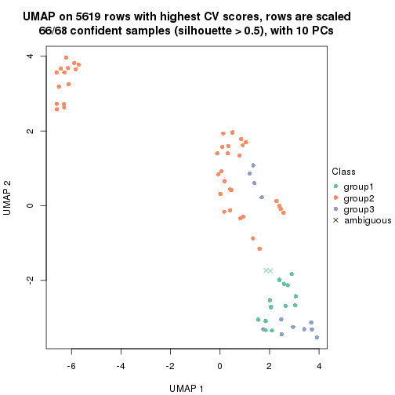
dimension_reduction(res, k = 4, method = "UMAP")
dimension_reduction(res, k = 5, method = "UMAP")
dimension_reduction(res, k = 6, method = "UMAP")
Following heatmap shows how subgroups are split when increasing k:
collect_classes(res)
If matrix rows can be associated to genes, consider to use functional_enrichment(res,
...) to perform function enrichment for the signature genes. See this vignette for more detailed explanations.
The object with results only for a single top-value method and a single partition method can be extracted as:
res = res_list["CV", "pam"]
# you can also extract it by
# res = res_list["CV:pam"]
A summary of res and all the functions that can be applied to it:
res
#> A 'ConsensusPartition' object with k = 2, 3, 4, 5, 6.
#> On a matrix with 5619 rows and 68 columns.
#> Top rows (562, 1124, 1686, 2248, 2810) are extracted by 'CV' method.
#> Subgroups are detected by 'pam' method.
#> Performed in total 1250 partitions by row resampling.
#> Best k for subgroups seems to be 4.
#>
#> Following methods can be applied to this 'ConsensusPartition' object:
#> [1] "cola_report" "collect_classes" "collect_plots"
#> [4] "collect_stats" "colnames" "compare_signatures"
#> [7] "consensus_heatmap" "dimension_reduction" "functional_enrichment"
#> [10] "get_anno_col" "get_anno" "get_classes"
#> [13] "get_consensus" "get_matrix" "get_membership"
#> [16] "get_param" "get_signatures" "get_stats"
#> [19] "is_best_k" "is_stable_k" "membership_heatmap"
#> [22] "ncol" "nrow" "plot_ecdf"
#> [25] "rownames" "select_partition_number" "show"
#> [28] "suggest_best_k" "test_to_known_factors"
collect_plots() function collects all the plots made from res for all k (number of partitions)
into one single page to provide an easy and fast comparison between different k.
collect_plots(res)
The plots are:
k and the heatmap of
predicted classes for each k.k.k.k.All the plots in panels can be made by individual functions and they are plotted later in this section.
select_partition_number() produces several plots showing different
statistics for choosing “optimized” k. There are following statistics:
k;k, the area increased is defined as \(A_k - A_{k-1}\).The detailed explanations of these statistics can be found in the cola vignette.
Generally speaking, lower PAC score, higher mean silhouette score or higher
concordance corresponds to better partition. Rand index and Jaccard index
measure how similar the current partition is compared to partition with k-1.
If they are too similar, we won't accept k is better than k-1.
select_partition_number(res)
The numeric values for all these statistics can be obtained by get_stats().
get_stats(res)
#> k 1-PAC mean_silhouette concordance area_increased Rand Jaccard
#> 2 2 0.516 0.794 0.910 0.2320 0.862 0.862
#> 3 3 0.473 0.745 0.835 0.9255 0.635 0.577
#> 4 4 0.557 0.788 0.853 0.3119 0.856 0.724
#> 5 5 0.557 0.551 0.734 0.0956 0.851 0.664
#> 6 6 0.642 0.549 0.764 0.0489 0.970 0.916
suggest_best_k() suggests the best \(k\) based on these statistics. The rules are as follows:
suggest_best_k(res)
#> [1] 4
Following shows the table of the partitions (You need to click the show/hide
code output link to see it). The membership matrix (columns with name p*)
is inferred by
clue::cl_consensus()
function with the SE method. Basically the value in the membership matrix
represents the probability to belong to a certain group. The finall class
label for an item is determined with the group with highest probability it
belongs to.
In get_classes() function, the entropy is calculated from the membership
matrix and the silhouette score is calculated from the consensus matrix.
cbind(get_classes(res, k = 2), get_membership(res, k = 2))
#> class entropy silhouette p1 p2
#> SRR1035618 2 0.0000 0.8952 0.000 1.000
#> SRR1035619 2 0.0000 0.8952 0.000 1.000
#> SRR1035620 2 0.0000 0.8952 0.000 1.000
#> SRR1035621 2 0.0000 0.8952 0.000 1.000
#> SRR1035622 2 0.0000 0.8952 0.000 1.000
#> SRR1035623 2 0.0000 0.8952 0.000 1.000
#> SRR1035626 2 0.0000 0.8952 0.000 1.000
#> SRR1035627 2 0.0938 0.8925 0.012 0.988
#> SRR1035628 2 0.4815 0.8667 0.104 0.896
#> SRR1035629 2 0.3733 0.8816 0.072 0.928
#> SRR1035624 2 0.0000 0.8952 0.000 1.000
#> SRR1035625 2 0.0000 0.8952 0.000 1.000
#> SRR1035630 2 0.4690 0.8604 0.100 0.900
#> SRR1035631 2 0.4690 0.8604 0.100 0.900
#> SRR1035632 2 0.9710 0.1844 0.400 0.600
#> SRR1035633 2 0.9775 0.1453 0.412 0.588
#> SRR1035634 2 0.9954 0.0165 0.460 0.540
#> SRR1035635 2 0.9866 0.1124 0.432 0.568
#> SRR1035636 2 0.4690 0.8604 0.100 0.900
#> SRR1035637 2 0.4690 0.8604 0.100 0.900
#> SRR1035638 2 0.4690 0.8604 0.100 0.900
#> SRR1035639 2 0.4690 0.8604 0.100 0.900
#> SRR1035640 1 1.0000 0.0815 0.500 0.500
#> SRR1035641 2 1.0000 -0.2768 0.500 0.500
#> SRR1035642 2 0.0000 0.8952 0.000 1.000
#> SRR1035643 2 0.0000 0.8952 0.000 1.000
#> SRR1035644 2 0.0000 0.8952 0.000 1.000
#> SRR1035645 2 0.0000 0.8952 0.000 1.000
#> SRR1035646 2 0.3431 0.8785 0.064 0.936
#> SRR1035647 2 0.3584 0.8767 0.068 0.932
#> SRR1035648 2 0.3879 0.8732 0.076 0.924
#> SRR1035649 2 0.3274 0.8798 0.060 0.940
#> SRR1035654 2 0.0938 0.8925 0.012 0.988
#> SRR1035655 2 0.0938 0.8925 0.012 0.988
#> SRR1035656 2 0.0938 0.8925 0.012 0.988
#> SRR1035657 2 0.0938 0.8925 0.012 0.988
#> SRR1035650 2 0.4690 0.8604 0.100 0.900
#> SRR1035651 2 0.4690 0.8604 0.100 0.900
#> SRR1035652 2 0.4690 0.8604 0.100 0.900
#> SRR1035653 2 0.4690 0.8604 0.100 0.900
#> SRR1035660 2 0.0938 0.8925 0.012 0.988
#> SRR1035661 2 0.0938 0.8925 0.012 0.988
#> SRR1035662 2 0.0000 0.8952 0.000 1.000
#> SRR1035663 2 0.0000 0.8952 0.000 1.000
#> SRR1035658 2 0.0938 0.8925 0.012 0.988
#> SRR1035659 2 0.0938 0.8925 0.012 0.988
#> SRR1035666 1 0.4690 0.8719 0.900 0.100
#> SRR1035667 1 0.4690 0.8719 0.900 0.100
#> SRR1035668 1 0.4690 0.8719 0.900 0.100
#> SRR1035669 1 0.4690 0.8719 0.900 0.100
#> SRR1035664 2 0.0000 0.8952 0.000 1.000
#> SRR1035665 2 0.0000 0.8952 0.000 1.000
#> SRR1035670 2 0.0938 0.8925 0.012 0.988
#> SRR1035671 2 0.0938 0.8925 0.012 0.988
#> SRR1035672 2 0.0938 0.8925 0.012 0.988
#> SRR1035673 2 0.0938 0.8925 0.012 0.988
#> SRR1035674 2 0.8955 0.4319 0.312 0.688
#> SRR1035675 2 0.8081 0.5874 0.248 0.752
#> SRR1035676 2 0.5629 0.7856 0.132 0.868
#> SRR1035677 2 0.2778 0.8737 0.048 0.952
#> SRR1035682 2 0.4690 0.8604 0.100 0.900
#> SRR1035683 2 0.4690 0.8604 0.100 0.900
#> SRR1035684 2 0.4690 0.8604 0.100 0.900
#> SRR1035685 2 0.4690 0.8604 0.100 0.900
#> SRR1035678 2 0.4298 0.8383 0.088 0.912
#> SRR1035679 2 0.3584 0.8578 0.068 0.932
#> SRR1035680 2 0.2778 0.8747 0.048 0.952
#> SRR1035681 2 0.3584 0.8577 0.068 0.932
cbind(get_classes(res, k = 3), get_membership(res, k = 3))
#> class entropy silhouette p1 p2 p3
#> SRR1035618 1 0.0592 0.84769 0.988 0.012 0.000
#> SRR1035619 1 0.0592 0.84769 0.988 0.012 0.000
#> SRR1035620 1 0.0592 0.84769 0.988 0.012 0.000
#> SRR1035621 1 0.0592 0.84769 0.988 0.012 0.000
#> SRR1035622 1 0.0592 0.84769 0.988 0.012 0.000
#> SRR1035623 1 0.0592 0.84769 0.988 0.012 0.000
#> SRR1035626 1 0.0237 0.84748 0.996 0.004 0.000
#> SRR1035627 1 0.0237 0.84743 0.996 0.004 0.000
#> SRR1035628 2 0.6111 0.90457 0.396 0.604 0.000
#> SRR1035629 1 0.6286 -0.59472 0.536 0.464 0.000
#> SRR1035624 1 0.0592 0.84769 0.988 0.012 0.000
#> SRR1035625 1 0.0592 0.84769 0.988 0.012 0.000
#> SRR1035630 2 0.5810 0.97423 0.336 0.664 0.000
#> SRR1035631 2 0.5810 0.97423 0.336 0.664 0.000
#> SRR1035632 1 0.8720 0.18613 0.540 0.336 0.124
#> SRR1035633 1 0.8773 0.17732 0.536 0.336 0.128
#> SRR1035634 1 0.9059 0.07477 0.480 0.380 0.140
#> SRR1035635 1 0.9147 -0.00279 0.444 0.412 0.144
#> SRR1035636 2 0.5810 0.97423 0.336 0.664 0.000
#> SRR1035637 2 0.5810 0.97423 0.336 0.664 0.000
#> SRR1035638 2 0.5810 0.97423 0.336 0.664 0.000
#> SRR1035639 2 0.5835 0.96961 0.340 0.660 0.000
#> SRR1035640 3 0.5810 0.49124 0.336 0.000 0.664
#> SRR1035641 3 0.5810 0.49124 0.336 0.000 0.664
#> SRR1035642 1 0.0592 0.84769 0.988 0.012 0.000
#> SRR1035643 1 0.0592 0.84769 0.988 0.012 0.000
#> SRR1035644 1 0.0592 0.84769 0.988 0.012 0.000
#> SRR1035645 1 0.0592 0.84769 0.988 0.012 0.000
#> SRR1035646 1 0.6307 -0.65230 0.512 0.488 0.000
#> SRR1035647 2 0.6235 0.82419 0.436 0.564 0.000
#> SRR1035648 2 0.6225 0.83036 0.432 0.568 0.000
#> SRR1035649 1 0.6295 -0.59824 0.528 0.472 0.000
#> SRR1035654 1 0.0000 0.84879 1.000 0.000 0.000
#> SRR1035655 1 0.0000 0.84879 1.000 0.000 0.000
#> SRR1035656 1 0.0000 0.84879 1.000 0.000 0.000
#> SRR1035657 1 0.0000 0.84879 1.000 0.000 0.000
#> SRR1035650 2 0.5810 0.97423 0.336 0.664 0.000
#> SRR1035651 2 0.5810 0.97423 0.336 0.664 0.000
#> SRR1035652 2 0.5810 0.97423 0.336 0.664 0.000
#> SRR1035653 2 0.5810 0.97423 0.336 0.664 0.000
#> SRR1035660 1 0.0000 0.84879 1.000 0.000 0.000
#> SRR1035661 1 0.0000 0.84879 1.000 0.000 0.000
#> SRR1035662 1 0.0592 0.84769 0.988 0.012 0.000
#> SRR1035663 1 0.0592 0.84769 0.988 0.012 0.000
#> SRR1035658 1 0.0000 0.84879 1.000 0.000 0.000
#> SRR1035659 1 0.0000 0.84879 1.000 0.000 0.000
#> SRR1035666 3 0.0000 0.81296 0.000 0.000 1.000
#> SRR1035667 3 0.0000 0.81296 0.000 0.000 1.000
#> SRR1035668 3 0.0000 0.81296 0.000 0.000 1.000
#> SRR1035669 3 0.0000 0.81296 0.000 0.000 1.000
#> SRR1035664 1 0.0592 0.84769 0.988 0.012 0.000
#> SRR1035665 1 0.0592 0.84769 0.988 0.012 0.000
#> SRR1035670 1 0.0000 0.84879 1.000 0.000 0.000
#> SRR1035671 1 0.0000 0.84879 1.000 0.000 0.000
#> SRR1035672 1 0.0000 0.84879 1.000 0.000 0.000
#> SRR1035673 1 0.0000 0.84879 1.000 0.000 0.000
#> SRR1035674 1 0.3482 0.74537 0.872 0.000 0.128
#> SRR1035675 1 0.3551 0.73988 0.868 0.000 0.132
#> SRR1035676 1 0.2537 0.79274 0.920 0.000 0.080
#> SRR1035677 1 0.2165 0.80503 0.936 0.000 0.064
#> SRR1035682 2 0.5810 0.97423 0.336 0.664 0.000
#> SRR1035683 2 0.5810 0.97423 0.336 0.664 0.000
#> SRR1035684 2 0.5810 0.97423 0.336 0.664 0.000
#> SRR1035685 2 0.5810 0.97423 0.336 0.664 0.000
#> SRR1035678 1 0.3192 0.76285 0.888 0.000 0.112
#> SRR1035679 1 0.2878 0.77919 0.904 0.000 0.096
#> SRR1035680 1 0.2537 0.79244 0.920 0.000 0.080
#> SRR1035681 1 0.3116 0.76998 0.892 0.000 0.108
cbind(get_classes(res, k = 4), get_membership(res, k = 4))
#> class entropy silhouette p1 p2 p3 p4
#> SRR1035618 2 0.2704 0.767 0.000 0.876 0.000 0.124
#> SRR1035619 2 0.2647 0.771 0.000 0.880 0.000 0.120
#> SRR1035620 2 0.2704 0.767 0.000 0.876 0.000 0.124
#> SRR1035621 2 0.2704 0.767 0.000 0.876 0.000 0.124
#> SRR1035622 2 0.2081 0.799 0.000 0.916 0.000 0.084
#> SRR1035623 2 0.2081 0.799 0.000 0.916 0.000 0.084
#> SRR1035626 2 0.0188 0.813 0.000 0.996 0.000 0.004
#> SRR1035627 2 0.0188 0.813 0.000 0.996 0.000 0.004
#> SRR1035628 4 0.4222 0.684 0.000 0.272 0.000 0.728
#> SRR1035629 4 0.4830 0.539 0.000 0.392 0.000 0.608
#> SRR1035624 2 0.2216 0.793 0.000 0.908 0.000 0.092
#> SRR1035625 2 0.2081 0.799 0.000 0.916 0.000 0.084
#> SRR1035630 4 0.2149 0.877 0.000 0.088 0.000 0.912
#> SRR1035631 4 0.2149 0.877 0.000 0.088 0.000 0.912
#> SRR1035632 3 0.1297 0.959 0.000 0.020 0.964 0.016
#> SRR1035633 3 0.1724 0.951 0.000 0.032 0.948 0.020
#> SRR1035634 3 0.0188 0.961 0.004 0.000 0.996 0.000
#> SRR1035635 3 0.0336 0.961 0.008 0.000 0.992 0.000
#> SRR1035636 4 0.2149 0.877 0.000 0.088 0.000 0.912
#> SRR1035637 4 0.2149 0.877 0.000 0.088 0.000 0.912
#> SRR1035638 4 0.2149 0.877 0.000 0.088 0.000 0.912
#> SRR1035639 4 0.2216 0.873 0.000 0.092 0.000 0.908
#> SRR1035640 1 0.6215 0.428 0.600 0.328 0.000 0.072
#> SRR1035641 1 0.6215 0.428 0.600 0.328 0.000 0.072
#> SRR1035642 2 0.2704 0.767 0.000 0.876 0.000 0.124
#> SRR1035643 2 0.2704 0.767 0.000 0.876 0.000 0.124
#> SRR1035644 2 0.2704 0.767 0.000 0.876 0.000 0.124
#> SRR1035645 2 0.2704 0.767 0.000 0.876 0.000 0.124
#> SRR1035646 4 0.4999 0.334 0.000 0.492 0.000 0.508
#> SRR1035647 4 0.4776 0.630 0.000 0.376 0.000 0.624
#> SRR1035648 4 0.4679 0.661 0.000 0.352 0.000 0.648
#> SRR1035649 4 0.4661 0.665 0.000 0.348 0.000 0.652
#> SRR1035654 2 0.3172 0.825 0.000 0.840 0.160 0.000
#> SRR1035655 2 0.3172 0.825 0.000 0.840 0.160 0.000
#> SRR1035656 2 0.3172 0.825 0.000 0.840 0.160 0.000
#> SRR1035657 2 0.3172 0.825 0.000 0.840 0.160 0.000
#> SRR1035650 4 0.2149 0.877 0.000 0.088 0.000 0.912
#> SRR1035651 4 0.2149 0.877 0.000 0.088 0.000 0.912
#> SRR1035652 4 0.2149 0.877 0.000 0.088 0.000 0.912
#> SRR1035653 4 0.2149 0.877 0.000 0.088 0.000 0.912
#> SRR1035660 2 0.3355 0.825 0.000 0.836 0.160 0.004
#> SRR1035661 2 0.3172 0.825 0.000 0.840 0.160 0.000
#> SRR1035662 2 0.2266 0.800 0.000 0.912 0.004 0.084
#> SRR1035663 2 0.1792 0.805 0.000 0.932 0.000 0.068
#> SRR1035658 2 0.3172 0.825 0.000 0.840 0.160 0.000
#> SRR1035659 2 0.3172 0.825 0.000 0.840 0.160 0.000
#> SRR1035666 1 0.0000 0.715 1.000 0.000 0.000 0.000
#> SRR1035667 1 0.0000 0.715 1.000 0.000 0.000 0.000
#> SRR1035668 1 0.0000 0.715 1.000 0.000 0.000 0.000
#> SRR1035669 1 0.0000 0.715 1.000 0.000 0.000 0.000
#> SRR1035664 2 0.2081 0.799 0.000 0.916 0.000 0.084
#> SRR1035665 2 0.2081 0.799 0.000 0.916 0.000 0.084
#> SRR1035670 2 0.3172 0.825 0.000 0.840 0.160 0.000
#> SRR1035671 2 0.3172 0.825 0.000 0.840 0.160 0.000
#> SRR1035672 2 0.3172 0.825 0.000 0.840 0.160 0.000
#> SRR1035673 2 0.3172 0.825 0.000 0.840 0.160 0.000
#> SRR1035674 2 0.5124 0.762 0.004 0.764 0.160 0.072
#> SRR1035675 2 0.4875 0.770 0.000 0.772 0.160 0.068
#> SRR1035676 2 0.3625 0.818 0.000 0.828 0.160 0.012
#> SRR1035677 2 0.3625 0.818 0.000 0.828 0.160 0.012
#> SRR1035682 4 0.2149 0.877 0.000 0.088 0.000 0.912
#> SRR1035683 4 0.2149 0.877 0.000 0.088 0.000 0.912
#> SRR1035684 4 0.2149 0.877 0.000 0.088 0.000 0.912
#> SRR1035685 4 0.2149 0.877 0.000 0.088 0.000 0.912
#> SRR1035678 2 0.5390 0.756 0.012 0.756 0.160 0.072
#> SRR1035679 2 0.5124 0.763 0.004 0.764 0.160 0.072
#> SRR1035680 2 0.4944 0.765 0.000 0.768 0.160 0.072
#> SRR1035681 2 0.5390 0.756 0.012 0.756 0.160 0.072
cbind(get_classes(res, k = 5), get_membership(res, k = 5))
#> class entropy silhouette p1 p2 p3 p4 p5
#> SRR1035618 2 0.1544 0.5512 0.000 0.932 0.000 0.068 0.000
#> SRR1035619 2 0.0510 0.6043 0.000 0.984 0.000 0.016 0.000
#> SRR1035620 2 0.0703 0.6002 0.000 0.976 0.000 0.024 0.000
#> SRR1035621 2 0.0880 0.5930 0.000 0.968 0.000 0.032 0.000
#> SRR1035622 2 0.0290 0.6052 0.000 0.992 0.000 0.008 0.000
#> SRR1035623 2 0.0290 0.6052 0.000 0.992 0.000 0.008 0.000
#> SRR1035626 2 0.1571 0.5454 0.060 0.936 0.000 0.004 0.000
#> SRR1035627 2 0.1697 0.5459 0.060 0.932 0.000 0.008 0.000
#> SRR1035628 4 0.4732 0.6758 0.076 0.208 0.000 0.716 0.000
#> SRR1035629 4 0.4988 0.5753 0.060 0.284 0.000 0.656 0.000
#> SRR1035624 2 0.0404 0.6051 0.000 0.988 0.000 0.012 0.000
#> SRR1035625 2 0.0290 0.6052 0.000 0.992 0.000 0.008 0.000
#> SRR1035630 4 0.2020 0.9248 0.000 0.100 0.000 0.900 0.000
#> SRR1035631 4 0.2020 0.9248 0.000 0.100 0.000 0.900 0.000
#> SRR1035632 3 0.4551 0.8260 0.104 0.020 0.780 0.096 0.000
#> SRR1035633 3 0.4724 0.8227 0.104 0.028 0.772 0.096 0.000
#> SRR1035634 3 0.0000 0.8304 0.000 0.000 1.000 0.000 0.000
#> SRR1035635 3 0.0162 0.8292 0.000 0.000 0.996 0.000 0.004
#> SRR1035636 4 0.2020 0.9248 0.000 0.100 0.000 0.900 0.000
#> SRR1035637 4 0.2020 0.9248 0.000 0.100 0.000 0.900 0.000
#> SRR1035638 4 0.2020 0.9248 0.000 0.100 0.000 0.900 0.000
#> SRR1035639 4 0.2124 0.9198 0.004 0.096 0.000 0.900 0.000
#> SRR1035640 5 0.4808 0.5612 0.400 0.024 0.000 0.000 0.576
#> SRR1035641 5 0.4808 0.5612 0.400 0.024 0.000 0.000 0.576
#> SRR1035642 2 0.0609 0.6029 0.000 0.980 0.000 0.020 0.000
#> SRR1035643 2 0.0609 0.6029 0.000 0.980 0.000 0.020 0.000
#> SRR1035644 2 0.0609 0.6029 0.000 0.980 0.000 0.020 0.000
#> SRR1035645 2 0.0609 0.6029 0.000 0.980 0.000 0.020 0.000
#> SRR1035646 2 0.3796 0.2565 0.000 0.700 0.000 0.300 0.000
#> SRR1035647 2 0.4242 -0.1842 0.000 0.572 0.000 0.428 0.000
#> SRR1035648 4 0.4300 0.4047 0.000 0.476 0.000 0.524 0.000
#> SRR1035649 2 0.4249 -0.2089 0.000 0.568 0.000 0.432 0.000
#> SRR1035654 2 0.3983 0.0774 0.340 0.660 0.000 0.000 0.000
#> SRR1035655 2 0.3983 0.0774 0.340 0.660 0.000 0.000 0.000
#> SRR1035656 2 0.3983 0.0774 0.340 0.660 0.000 0.000 0.000
#> SRR1035657 2 0.3983 0.0774 0.340 0.660 0.000 0.000 0.000
#> SRR1035650 4 0.2020 0.9248 0.000 0.100 0.000 0.900 0.000
#> SRR1035651 4 0.2020 0.9248 0.000 0.100 0.000 0.900 0.000
#> SRR1035652 4 0.2020 0.9248 0.000 0.100 0.000 0.900 0.000
#> SRR1035653 4 0.2020 0.9248 0.000 0.100 0.000 0.900 0.000
#> SRR1035660 2 0.3966 0.0854 0.336 0.664 0.000 0.000 0.000
#> SRR1035661 2 0.3983 0.0774 0.340 0.660 0.000 0.000 0.000
#> SRR1035662 2 0.0451 0.6041 0.004 0.988 0.000 0.008 0.000
#> SRR1035663 2 0.0000 0.5998 0.000 1.000 0.000 0.000 0.000
#> SRR1035658 2 0.3983 0.0774 0.340 0.660 0.000 0.000 0.000
#> SRR1035659 2 0.3983 0.0774 0.340 0.660 0.000 0.000 0.000
#> SRR1035666 5 0.3752 0.5756 0.292 0.000 0.000 0.000 0.708
#> SRR1035667 5 0.3796 0.5715 0.300 0.000 0.000 0.000 0.700
#> SRR1035668 5 0.2813 0.6485 0.168 0.000 0.000 0.000 0.832
#> SRR1035669 5 0.0162 0.6424 0.004 0.000 0.000 0.000 0.996
#> SRR1035664 2 0.0290 0.6052 0.000 0.992 0.000 0.008 0.000
#> SRR1035665 2 0.0290 0.6052 0.000 0.992 0.000 0.008 0.000
#> SRR1035670 2 0.3983 0.0774 0.340 0.660 0.000 0.000 0.000
#> SRR1035671 2 0.3983 0.0774 0.340 0.660 0.000 0.000 0.000
#> SRR1035672 2 0.3983 0.0774 0.340 0.660 0.000 0.000 0.000
#> SRR1035673 2 0.3983 0.0774 0.340 0.660 0.000 0.000 0.000
#> SRR1035674 1 0.4305 0.7007 0.512 0.488 0.000 0.000 0.000
#> SRR1035675 1 0.4297 0.7425 0.528 0.472 0.000 0.000 0.000
#> SRR1035676 2 0.4060 -0.0457 0.360 0.640 0.000 0.000 0.000
#> SRR1035677 2 0.4114 -0.1400 0.376 0.624 0.000 0.000 0.000
#> SRR1035682 4 0.2020 0.9248 0.000 0.100 0.000 0.900 0.000
#> SRR1035683 4 0.2020 0.9248 0.000 0.100 0.000 0.900 0.000
#> SRR1035684 4 0.2020 0.9248 0.000 0.100 0.000 0.900 0.000
#> SRR1035685 4 0.2020 0.9248 0.000 0.100 0.000 0.900 0.000
#> SRR1035678 1 0.4252 0.8242 0.652 0.340 0.000 0.000 0.008
#> SRR1035679 1 0.4135 0.8244 0.656 0.340 0.000 0.000 0.004
#> SRR1035680 1 0.4256 0.7965 0.564 0.436 0.000 0.000 0.000
#> SRR1035681 1 0.4218 0.8149 0.660 0.332 0.000 0.000 0.008
cbind(get_classes(res, k = 6), get_membership(res, k = 6))
#> class entropy silhouette p1 p2 p3 p4 p5 p6
#> SRR1035618 2 0.1765 0.54776 0.000 0.904 0.000 0.096 0.000 0.000
#> SRR1035619 2 0.0000 0.63215 0.000 1.000 0.000 0.000 0.000 0.000
#> SRR1035620 2 0.0458 0.62256 0.000 0.984 0.000 0.016 0.000 0.000
#> SRR1035621 2 0.0632 0.61657 0.000 0.976 0.000 0.024 0.000 0.000
#> SRR1035622 2 0.0000 0.63215 0.000 1.000 0.000 0.000 0.000 0.000
#> SRR1035623 2 0.0000 0.63215 0.000 1.000 0.000 0.000 0.000 0.000
#> SRR1035626 2 0.1152 0.60939 0.044 0.952 0.000 0.004 0.000 0.000
#> SRR1035627 2 0.1970 0.57662 0.092 0.900 0.000 0.008 0.000 0.000
#> SRR1035628 4 0.4273 0.61934 0.080 0.204 0.000 0.716 0.000 0.000
#> SRR1035629 4 0.4402 0.53327 0.060 0.268 0.000 0.672 0.000 0.000
#> SRR1035624 2 0.0000 0.63215 0.000 1.000 0.000 0.000 0.000 0.000
#> SRR1035625 2 0.0000 0.63215 0.000 1.000 0.000 0.000 0.000 0.000
#> SRR1035630 4 0.1141 0.94682 0.000 0.052 0.000 0.948 0.000 0.000
#> SRR1035631 4 0.1141 0.94682 0.000 0.052 0.000 0.948 0.000 0.000
#> SRR1035632 1 0.5331 -0.76641 0.468 0.020 0.468 0.016 0.028 0.000
#> SRR1035633 3 0.5707 0.46814 0.420 0.028 0.492 0.036 0.024 0.000
#> SRR1035634 3 0.2917 0.63706 0.136 0.000 0.840 0.008 0.016 0.000
#> SRR1035635 3 0.0000 0.67285 0.000 0.000 1.000 0.000 0.000 0.000
#> SRR1035636 4 0.1141 0.94682 0.000 0.052 0.000 0.948 0.000 0.000
#> SRR1035637 4 0.1141 0.94682 0.000 0.052 0.000 0.948 0.000 0.000
#> SRR1035638 4 0.1141 0.94682 0.000 0.052 0.000 0.948 0.000 0.000
#> SRR1035639 4 0.1219 0.94123 0.004 0.048 0.000 0.948 0.000 0.000
#> SRR1035640 5 0.1327 0.66222 0.064 0.000 0.000 0.000 0.936 0.000
#> SRR1035641 5 0.1327 0.66222 0.064 0.000 0.000 0.000 0.936 0.000
#> SRR1035642 2 0.0000 0.63215 0.000 1.000 0.000 0.000 0.000 0.000
#> SRR1035643 2 0.0000 0.63215 0.000 1.000 0.000 0.000 0.000 0.000
#> SRR1035644 2 0.0000 0.63215 0.000 1.000 0.000 0.000 0.000 0.000
#> SRR1035645 2 0.0000 0.63215 0.000 1.000 0.000 0.000 0.000 0.000
#> SRR1035646 2 0.2527 0.47452 0.000 0.832 0.000 0.168 0.000 0.000
#> SRR1035647 2 0.3515 0.23628 0.000 0.676 0.000 0.324 0.000 0.000
#> SRR1035648 2 0.3843 -0.15360 0.000 0.548 0.000 0.452 0.000 0.000
#> SRR1035649 2 0.3409 0.29018 0.000 0.700 0.000 0.300 0.000 0.000
#> SRR1035654 2 0.3838 0.15686 0.448 0.552 0.000 0.000 0.000 0.000
#> SRR1035655 2 0.3838 0.15686 0.448 0.552 0.000 0.000 0.000 0.000
#> SRR1035656 2 0.3838 0.15686 0.448 0.552 0.000 0.000 0.000 0.000
#> SRR1035657 2 0.3838 0.15686 0.448 0.552 0.000 0.000 0.000 0.000
#> SRR1035650 4 0.1141 0.94682 0.000 0.052 0.000 0.948 0.000 0.000
#> SRR1035651 4 0.1141 0.94682 0.000 0.052 0.000 0.948 0.000 0.000
#> SRR1035652 4 0.1141 0.94682 0.000 0.052 0.000 0.948 0.000 0.000
#> SRR1035653 4 0.1141 0.94682 0.000 0.052 0.000 0.948 0.000 0.000
#> SRR1035660 2 0.3838 0.15686 0.448 0.552 0.000 0.000 0.000 0.000
#> SRR1035661 2 0.3838 0.15686 0.448 0.552 0.000 0.000 0.000 0.000
#> SRR1035662 2 0.0146 0.63088 0.004 0.996 0.000 0.000 0.000 0.000
#> SRR1035663 2 0.0000 0.63215 0.000 1.000 0.000 0.000 0.000 0.000
#> SRR1035658 2 0.3838 0.15686 0.448 0.552 0.000 0.000 0.000 0.000
#> SRR1035659 2 0.3838 0.15686 0.448 0.552 0.000 0.000 0.000 0.000
#> SRR1035666 6 0.1498 0.94249 0.028 0.000 0.000 0.000 0.032 0.940
#> SRR1035667 6 0.0000 0.94387 0.000 0.000 0.000 0.000 0.000 1.000
#> SRR1035668 5 0.3463 0.54218 0.004 0.000 0.000 0.008 0.748 0.240
#> SRR1035669 5 0.4118 0.26453 0.004 0.000 0.000 0.008 0.592 0.396
#> SRR1035664 2 0.0000 0.63215 0.000 1.000 0.000 0.000 0.000 0.000
#> SRR1035665 2 0.0000 0.63215 0.000 1.000 0.000 0.000 0.000 0.000
#> SRR1035670 2 0.3838 0.15686 0.448 0.552 0.000 0.000 0.000 0.000
#> SRR1035671 2 0.3838 0.15686 0.448 0.552 0.000 0.000 0.000 0.000
#> SRR1035672 2 0.3838 0.15686 0.448 0.552 0.000 0.000 0.000 0.000
#> SRR1035673 2 0.3838 0.15686 0.448 0.552 0.000 0.000 0.000 0.000
#> SRR1035674 1 0.5844 0.54998 0.456 0.344 0.000 0.000 0.200 0.000
#> SRR1035675 1 0.5877 0.57656 0.456 0.332 0.000 0.000 0.212 0.000
#> SRR1035676 2 0.4080 0.09485 0.456 0.536 0.000 0.000 0.008 0.000
#> SRR1035677 2 0.4584 -0.00754 0.452 0.512 0.000 0.000 0.036 0.000
#> SRR1035682 4 0.1141 0.94682 0.000 0.052 0.000 0.948 0.000 0.000
#> SRR1035683 4 0.1141 0.94682 0.000 0.052 0.000 0.948 0.000 0.000
#> SRR1035684 4 0.1141 0.94682 0.000 0.052 0.000 0.948 0.000 0.000
#> SRR1035685 4 0.1141 0.94682 0.000 0.052 0.000 0.948 0.000 0.000
#> SRR1035678 1 0.5804 0.70164 0.456 0.188 0.000 0.000 0.356 0.000
#> SRR1035679 1 0.5818 0.70575 0.456 0.192 0.000 0.000 0.352 0.000
#> SRR1035680 1 0.5948 0.65008 0.456 0.284 0.000 0.000 0.260 0.000
#> SRR1035681 1 0.5790 0.69652 0.456 0.184 0.000 0.000 0.360 0.000
Heatmaps for the consensus matrix. It visualizes the probability of two samples to be in a same group.
consensus_heatmap(res, k = 2)
consensus_heatmap(res, k = 3)
consensus_heatmap(res, k = 4)
consensus_heatmap(res, k = 5)
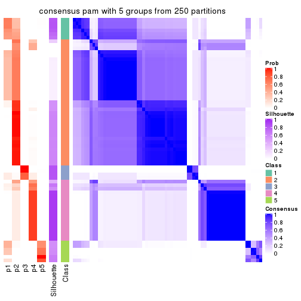
consensus_heatmap(res, k = 6)
Heatmaps for the membership of samples in all partitions to see how consistent they are:
membership_heatmap(res, k = 2)
membership_heatmap(res, k = 3)
membership_heatmap(res, k = 4)
membership_heatmap(res, k = 5)
membership_heatmap(res, k = 6)
As soon as we have had the classes for columns, we can look for signatures which are significantly different between classes which can be candidate marks for certain classes. Following are the heatmaps for signatures.
Signature heatmaps where rows are scaled:
get_signatures(res, k = 2)
get_signatures(res, k = 3)
get_signatures(res, k = 4)
get_signatures(res, k = 5)
get_signatures(res, k = 6)
Signature heatmaps where rows are not scaled:
get_signatures(res, k = 2, scale_rows = FALSE)
get_signatures(res, k = 3, scale_rows = FALSE)
get_signatures(res, k = 4, scale_rows = FALSE)
get_signatures(res, k = 5, scale_rows = FALSE)
get_signatures(res, k = 6, scale_rows = FALSE)
Compare the overlap of signatures from different k:
compare_signatures(res)
get_signature() returns a data frame invisibly. TO get the list of signatures, the function
call should be assigned to a variable explicitly. In following code, if plot argument is set
to FALSE, no heatmap is plotted while only the differential analysis is performed.
# code only for demonstration
tb = get_signature(res, k = ..., plot = FALSE)
An example of the output of tb is:
#> which_row fdr mean_1 mean_2 scaled_mean_1 scaled_mean_2 km
#> 1 38 0.042760348 8.373488 9.131774 -0.5533452 0.5164555 1
#> 2 40 0.018707592 7.106213 8.469186 -0.6173731 0.5762149 1
#> 3 55 0.019134737 10.221463 11.207825 -0.6159697 0.5749050 1
#> 4 59 0.006059896 5.921854 7.869574 -0.6899429 0.6439467 1
#> 5 60 0.018055526 8.928898 10.211722 -0.6204761 0.5791110 1
#> 6 98 0.009384629 15.714769 14.887706 0.6635654 -0.6193277 2
...
The columns in tb are:
which_row: row indices corresponding to the input matrix.fdr: FDR for the differential test. mean_x: The mean value in group x.scaled_mean_x: The mean value in group x after rows are scaled.km: Row groups if k-means clustering is applied to rows.UMAP plot which shows how samples are separated.
dimension_reduction(res, k = 2, method = "UMAP")
dimension_reduction(res, k = 3, method = "UMAP")
dimension_reduction(res, k = 4, method = "UMAP")
dimension_reduction(res, k = 5, method = "UMAP")
dimension_reduction(res, k = 6, method = "UMAP")
Following heatmap shows how subgroups are split when increasing k:
collect_classes(res)
If matrix rows can be associated to genes, consider to use functional_enrichment(res,
...) to perform function enrichment for the signature genes. See this vignette for more detailed explanations.
The object with results only for a single top-value method and a single partition method can be extracted as:
res = res_list["CV", "mclust"]
# you can also extract it by
# res = res_list["CV:mclust"]
A summary of res and all the functions that can be applied to it:
res
#> A 'ConsensusPartition' object with k = 2, 3, 4, 5, 6.
#> On a matrix with 5619 rows and 68 columns.
#> Top rows (562, 1124, 1686, 2248, 2810) are extracted by 'CV' method.
#> Subgroups are detected by 'mclust' method.
#> Performed in total 1250 partitions by row resampling.
#> Best k for subgroups seems to be 3.
#>
#> Following methods can be applied to this 'ConsensusPartition' object:
#> [1] "cola_report" "collect_classes" "collect_plots"
#> [4] "collect_stats" "colnames" "compare_signatures"
#> [7] "consensus_heatmap" "dimension_reduction" "functional_enrichment"
#> [10] "get_anno_col" "get_anno" "get_classes"
#> [13] "get_consensus" "get_matrix" "get_membership"
#> [16] "get_param" "get_signatures" "get_stats"
#> [19] "is_best_k" "is_stable_k" "membership_heatmap"
#> [22] "ncol" "nrow" "plot_ecdf"
#> [25] "rownames" "select_partition_number" "show"
#> [28] "suggest_best_k" "test_to_known_factors"
collect_plots() function collects all the plots made from res for all k (number of partitions)
into one single page to provide an easy and fast comparison between different k.
collect_plots(res)
The plots are:
k and the heatmap of
predicted classes for each k.k.k.k.All the plots in panels can be made by individual functions and they are plotted later in this section.
select_partition_number() produces several plots showing different
statistics for choosing “optimized” k. There are following statistics:
k;k, the area increased is defined as \(A_k - A_{k-1}\).The detailed explanations of these statistics can be found in the cola vignette.
Generally speaking, lower PAC score, higher mean silhouette score or higher
concordance corresponds to better partition. Rand index and Jaccard index
measure how similar the current partition is compared to partition with k-1.
If they are too similar, we won't accept k is better than k-1.
select_partition_number(res)
The numeric values for all these statistics can be obtained by get_stats().
get_stats(res)
#> k 1-PAC mean_silhouette concordance area_increased Rand Jaccard
#> 2 2 0.664 0.720 0.900 0.4290 0.567 0.567
#> 3 3 0.748 0.918 0.933 0.3343 0.767 0.613
#> 4 4 0.763 0.875 0.912 0.0652 0.986 0.965
#> 5 5 0.582 0.852 0.891 0.0168 0.969 0.923
#> 6 6 0.646 0.694 0.821 0.0973 0.950 0.873
suggest_best_k() suggests the best \(k\) based on these statistics. The rules are as follows:
suggest_best_k(res)
#> [1] 3
Following shows the table of the partitions (You need to click the show/hide
code output link to see it). The membership matrix (columns with name p*)
is inferred by
clue::cl_consensus()
function with the SE method. Basically the value in the membership matrix
represents the probability to belong to a certain group. The finall class
label for an item is determined with the group with highest probability it
belongs to.
In get_classes() function, the entropy is calculated from the membership
matrix and the silhouette score is calculated from the consensus matrix.
cbind(get_classes(res, k = 2), get_membership(res, k = 2))
#> class entropy silhouette p1 p2
#> SRR1035618 2 0.000 0.8953 0.000 1.000
#> SRR1035619 2 0.000 0.8953 0.000 1.000
#> SRR1035620 2 0.000 0.8953 0.000 1.000
#> SRR1035621 2 0.000 0.8953 0.000 1.000
#> SRR1035622 2 0.000 0.8953 0.000 1.000
#> SRR1035623 2 0.000 0.8953 0.000 1.000
#> SRR1035626 1 0.917 0.5125 0.668 0.332
#> SRR1035627 1 0.634 0.7251 0.840 0.160
#> SRR1035628 2 0.998 -0.0271 0.476 0.524
#> SRR1035629 1 1.000 0.1226 0.512 0.488
#> SRR1035624 2 0.000 0.8953 0.000 1.000
#> SRR1035625 2 0.000 0.8953 0.000 1.000
#> SRR1035630 2 0.000 0.8953 0.000 1.000
#> SRR1035631 2 0.000 0.8953 0.000 1.000
#> SRR1035632 1 0.000 0.8320 1.000 0.000
#> SRR1035633 1 0.000 0.8320 1.000 0.000
#> SRR1035634 1 0.000 0.8320 1.000 0.000
#> SRR1035635 1 0.000 0.8320 1.000 0.000
#> SRR1035636 2 0.000 0.8953 0.000 1.000
#> SRR1035637 2 0.000 0.8953 0.000 1.000
#> SRR1035638 2 0.000 0.8953 0.000 1.000
#> SRR1035639 2 0.000 0.8953 0.000 1.000
#> SRR1035640 1 0.204 0.8191 0.968 0.032
#> SRR1035641 1 0.204 0.8191 0.968 0.032
#> SRR1035642 2 0.000 0.8953 0.000 1.000
#> SRR1035643 2 0.000 0.8953 0.000 1.000
#> SRR1035644 2 0.000 0.8953 0.000 1.000
#> SRR1035645 2 0.000 0.8953 0.000 1.000
#> SRR1035646 2 0.000 0.8953 0.000 1.000
#> SRR1035647 2 0.000 0.8953 0.000 1.000
#> SRR1035648 2 0.000 0.8953 0.000 1.000
#> SRR1035649 2 0.000 0.8953 0.000 1.000
#> SRR1035654 2 0.981 0.1907 0.420 0.580
#> SRR1035655 2 0.985 0.1656 0.428 0.572
#> SRR1035656 2 0.985 0.1656 0.428 0.572
#> SRR1035657 2 0.985 0.1656 0.428 0.572
#> SRR1035650 2 0.000 0.8953 0.000 1.000
#> SRR1035651 2 0.000 0.8953 0.000 1.000
#> SRR1035652 2 0.000 0.8953 0.000 1.000
#> SRR1035653 2 0.000 0.8953 0.000 1.000
#> SRR1035660 2 0.000 0.8953 0.000 1.000
#> SRR1035661 2 0.000 0.8953 0.000 1.000
#> SRR1035662 2 0.000 0.8953 0.000 1.000
#> SRR1035663 2 0.000 0.8953 0.000 1.000
#> SRR1035658 2 0.000 0.8953 0.000 1.000
#> SRR1035659 2 0.000 0.8953 0.000 1.000
#> SRR1035666 1 0.000 0.8320 1.000 0.000
#> SRR1035667 1 0.000 0.8320 1.000 0.000
#> SRR1035668 1 0.000 0.8320 1.000 0.000
#> SRR1035669 1 0.000 0.8320 1.000 0.000
#> SRR1035664 2 0.000 0.8953 0.000 1.000
#> SRR1035665 2 0.000 0.8953 0.000 1.000
#> SRR1035670 2 0.996 0.0202 0.464 0.536
#> SRR1035671 2 0.994 0.0508 0.456 0.544
#> SRR1035672 2 0.952 0.3178 0.372 0.628
#> SRR1035673 2 0.981 0.1792 0.420 0.580
#> SRR1035674 1 0.998 0.1678 0.528 0.472
#> SRR1035675 1 0.998 0.1556 0.524 0.476
#> SRR1035676 1 0.993 0.2250 0.548 0.452
#> SRR1035677 1 0.994 0.2105 0.544 0.456
#> SRR1035682 2 0.000 0.8953 0.000 1.000
#> SRR1035683 2 0.000 0.8953 0.000 1.000
#> SRR1035684 2 0.000 0.8953 0.000 1.000
#> SRR1035685 2 0.000 0.8953 0.000 1.000
#> SRR1035678 1 0.000 0.8320 1.000 0.000
#> SRR1035679 1 0.000 0.8320 1.000 0.000
#> SRR1035680 1 0.000 0.8320 1.000 0.000
#> SRR1035681 1 0.000 0.8320 1.000 0.000
cbind(get_classes(res, k = 3), get_membership(res, k = 3))
#> class entropy silhouette p1 p2 p3
#> SRR1035618 2 0.0000 0.971 0.000 1.000 0.000
#> SRR1035619 2 0.0000 0.971 0.000 1.000 0.000
#> SRR1035620 2 0.0000 0.971 0.000 1.000 0.000
#> SRR1035621 2 0.0000 0.971 0.000 1.000 0.000
#> SRR1035622 2 0.0000 0.971 0.000 1.000 0.000
#> SRR1035623 2 0.0000 0.971 0.000 1.000 0.000
#> SRR1035626 1 0.6154 0.741 0.752 0.204 0.044
#> SRR1035627 1 0.6159 0.746 0.756 0.196 0.048
#> SRR1035628 1 0.7112 0.325 0.552 0.424 0.024
#> SRR1035629 1 0.6226 0.698 0.720 0.252 0.028
#> SRR1035624 2 0.0000 0.971 0.000 1.000 0.000
#> SRR1035625 2 0.0000 0.971 0.000 1.000 0.000
#> SRR1035630 2 0.1163 0.963 0.028 0.972 0.000
#> SRR1035631 2 0.1163 0.963 0.028 0.972 0.000
#> SRR1035632 3 0.0000 0.968 0.000 0.000 1.000
#> SRR1035633 3 0.0000 0.968 0.000 0.000 1.000
#> SRR1035634 3 0.0000 0.968 0.000 0.000 1.000
#> SRR1035635 3 0.0000 0.968 0.000 0.000 1.000
#> SRR1035636 2 0.2356 0.939 0.072 0.928 0.000
#> SRR1035637 2 0.2356 0.939 0.072 0.928 0.000
#> SRR1035638 2 0.1860 0.954 0.052 0.948 0.000
#> SRR1035639 2 0.1860 0.954 0.052 0.948 0.000
#> SRR1035640 1 0.5603 0.784 0.804 0.060 0.136
#> SRR1035641 1 0.5603 0.784 0.804 0.060 0.136
#> SRR1035642 2 0.0000 0.971 0.000 1.000 0.000
#> SRR1035643 2 0.0000 0.971 0.000 1.000 0.000
#> SRR1035644 2 0.0000 0.971 0.000 1.000 0.000
#> SRR1035645 2 0.0000 0.971 0.000 1.000 0.000
#> SRR1035646 2 0.0000 0.971 0.000 1.000 0.000
#> SRR1035647 2 0.0000 0.971 0.000 1.000 0.000
#> SRR1035648 2 0.0000 0.971 0.000 1.000 0.000
#> SRR1035649 2 0.0000 0.971 0.000 1.000 0.000
#> SRR1035654 1 0.3116 0.885 0.892 0.108 0.000
#> SRR1035655 1 0.3116 0.885 0.892 0.108 0.000
#> SRR1035656 1 0.3116 0.885 0.892 0.108 0.000
#> SRR1035657 1 0.3116 0.885 0.892 0.108 0.000
#> SRR1035650 2 0.1163 0.963 0.028 0.972 0.000
#> SRR1035651 2 0.1163 0.963 0.028 0.972 0.000
#> SRR1035652 2 0.1163 0.963 0.028 0.972 0.000
#> SRR1035653 2 0.1411 0.961 0.036 0.964 0.000
#> SRR1035660 2 0.2537 0.902 0.080 0.920 0.000
#> SRR1035661 2 0.1753 0.937 0.048 0.952 0.000
#> SRR1035662 2 0.0892 0.960 0.020 0.980 0.000
#> SRR1035663 2 0.0237 0.969 0.004 0.996 0.000
#> SRR1035658 2 0.3412 0.850 0.124 0.876 0.000
#> SRR1035659 2 0.4235 0.768 0.176 0.824 0.000
#> SRR1035666 3 0.0000 0.968 0.000 0.000 1.000
#> SRR1035667 3 0.0000 0.968 0.000 0.000 1.000
#> SRR1035668 3 0.0000 0.968 0.000 0.000 1.000
#> SRR1035669 3 0.0000 0.968 0.000 0.000 1.000
#> SRR1035664 2 0.0000 0.971 0.000 1.000 0.000
#> SRR1035665 2 0.0000 0.971 0.000 1.000 0.000
#> SRR1035670 1 0.3192 0.885 0.888 0.112 0.000
#> SRR1035671 1 0.3192 0.885 0.888 0.112 0.000
#> SRR1035672 1 0.3267 0.884 0.884 0.116 0.000
#> SRR1035673 1 0.3192 0.885 0.888 0.112 0.000
#> SRR1035674 1 0.4920 0.876 0.840 0.108 0.052
#> SRR1035675 1 0.4920 0.876 0.840 0.108 0.052
#> SRR1035676 1 0.4920 0.876 0.840 0.108 0.052
#> SRR1035677 1 0.4920 0.876 0.840 0.108 0.052
#> SRR1035682 2 0.1163 0.963 0.028 0.972 0.000
#> SRR1035683 2 0.1163 0.963 0.028 0.972 0.000
#> SRR1035684 2 0.1163 0.963 0.028 0.972 0.000
#> SRR1035685 2 0.1163 0.963 0.028 0.972 0.000
#> SRR1035678 3 0.3038 0.936 0.104 0.000 0.896
#> SRR1035679 3 0.3038 0.936 0.104 0.000 0.896
#> SRR1035680 3 0.3412 0.921 0.124 0.000 0.876
#> SRR1035681 3 0.3267 0.928 0.116 0.000 0.884
cbind(get_classes(res, k = 4), get_membership(res, k = 4))
#> class entropy silhouette p1 p2 p3 p4
#> SRR1035618 2 0.0000 0.955 0.000 1.000 0.000 0.000
#> SRR1035619 2 0.0336 0.954 0.008 0.992 0.000 0.000
#> SRR1035620 2 0.0000 0.955 0.000 1.000 0.000 0.000
#> SRR1035621 2 0.0000 0.955 0.000 1.000 0.000 0.000
#> SRR1035622 2 0.0000 0.955 0.000 1.000 0.000 0.000
#> SRR1035623 2 0.0000 0.955 0.000 1.000 0.000 0.000
#> SRR1035626 1 0.6441 0.664 0.684 0.168 0.132 0.016
#> SRR1035627 1 0.6336 0.679 0.700 0.144 0.136 0.020
#> SRR1035628 1 0.7208 0.444 0.548 0.336 0.096 0.020
#> SRR1035629 1 0.6546 0.635 0.668 0.200 0.116 0.016
#> SRR1035624 2 0.0000 0.955 0.000 1.000 0.000 0.000
#> SRR1035625 2 0.0000 0.955 0.000 1.000 0.000 0.000
#> SRR1035630 2 0.1629 0.945 0.024 0.952 0.000 0.024
#> SRR1035631 2 0.1629 0.945 0.024 0.952 0.000 0.024
#> SRR1035632 3 0.3726 0.836 0.000 0.000 0.788 0.212
#> SRR1035633 3 0.3726 0.836 0.000 0.000 0.788 0.212
#> SRR1035634 3 0.3726 0.836 0.000 0.000 0.788 0.212
#> SRR1035635 3 0.3726 0.836 0.000 0.000 0.788 0.212
#> SRR1035636 2 0.3441 0.881 0.120 0.856 0.000 0.024
#> SRR1035637 2 0.3441 0.881 0.120 0.856 0.000 0.024
#> SRR1035638 2 0.3015 0.908 0.092 0.884 0.000 0.024
#> SRR1035639 2 0.2882 0.915 0.084 0.892 0.000 0.024
#> SRR1035640 1 0.5020 0.692 0.736 0.012 0.232 0.020
#> SRR1035641 1 0.5020 0.692 0.736 0.012 0.232 0.020
#> SRR1035642 2 0.0336 0.954 0.008 0.992 0.000 0.000
#> SRR1035643 2 0.0188 0.955 0.004 0.996 0.000 0.000
#> SRR1035644 2 0.0524 0.955 0.008 0.988 0.000 0.004
#> SRR1035645 2 0.0336 0.954 0.008 0.992 0.000 0.000
#> SRR1035646 2 0.0336 0.954 0.008 0.992 0.000 0.000
#> SRR1035647 2 0.0000 0.955 0.000 1.000 0.000 0.000
#> SRR1035648 2 0.0336 0.954 0.008 0.992 0.000 0.000
#> SRR1035649 2 0.0000 0.955 0.000 1.000 0.000 0.000
#> SRR1035654 1 0.2469 0.784 0.892 0.108 0.000 0.000
#> SRR1035655 1 0.2469 0.784 0.892 0.108 0.000 0.000
#> SRR1035656 1 0.2469 0.784 0.892 0.108 0.000 0.000
#> SRR1035657 1 0.2469 0.784 0.892 0.108 0.000 0.000
#> SRR1035650 2 0.1629 0.945 0.024 0.952 0.000 0.024
#> SRR1035651 2 0.1629 0.945 0.024 0.952 0.000 0.024
#> SRR1035652 2 0.1629 0.945 0.024 0.952 0.000 0.024
#> SRR1035653 2 0.1929 0.942 0.036 0.940 0.000 0.024
#> SRR1035660 2 0.2408 0.885 0.104 0.896 0.000 0.000
#> SRR1035661 2 0.1792 0.922 0.068 0.932 0.000 0.000
#> SRR1035662 2 0.1302 0.938 0.044 0.956 0.000 0.000
#> SRR1035663 2 0.0707 0.951 0.020 0.980 0.000 0.000
#> SRR1035658 2 0.3356 0.804 0.176 0.824 0.000 0.000
#> SRR1035659 2 0.3569 0.774 0.196 0.804 0.000 0.000
#> SRR1035666 3 0.0707 0.853 0.000 0.000 0.980 0.020
#> SRR1035667 3 0.0707 0.853 0.000 0.000 0.980 0.020
#> SRR1035668 3 0.0707 0.853 0.000 0.000 0.980 0.020
#> SRR1035669 3 0.0707 0.853 0.000 0.000 0.980 0.020
#> SRR1035664 2 0.0469 0.953 0.012 0.988 0.000 0.000
#> SRR1035665 2 0.0469 0.953 0.012 0.988 0.000 0.000
#> SRR1035670 1 0.1022 0.794 0.968 0.032 0.000 0.000
#> SRR1035671 1 0.0817 0.790 0.976 0.024 0.000 0.000
#> SRR1035672 1 0.1637 0.795 0.940 0.060 0.000 0.000
#> SRR1035673 1 0.1584 0.799 0.952 0.036 0.012 0.000
#> SRR1035674 1 0.4107 0.785 0.832 0.028 0.128 0.012
#> SRR1035675 1 0.4107 0.785 0.832 0.028 0.128 0.012
#> SRR1035676 1 0.3979 0.785 0.836 0.028 0.128 0.008
#> SRR1035677 1 0.3836 0.786 0.840 0.028 0.128 0.004
#> SRR1035682 2 0.1629 0.945 0.024 0.952 0.000 0.024
#> SRR1035683 2 0.1629 0.945 0.024 0.952 0.000 0.024
#> SRR1035684 2 0.1629 0.945 0.024 0.952 0.000 0.024
#> SRR1035685 2 0.1629 0.945 0.024 0.952 0.000 0.024
#> SRR1035678 4 0.1151 0.995 0.008 0.000 0.024 0.968
#> SRR1035679 4 0.1151 0.995 0.008 0.000 0.024 0.968
#> SRR1035680 4 0.1406 0.986 0.016 0.000 0.024 0.960
#> SRR1035681 4 0.1151 0.995 0.008 0.000 0.024 0.968
cbind(get_classes(res, k = 5), get_membership(res, k = 5))
#> class entropy silhouette p1 p2 p3 p4 p5
#> SRR1035618 2 0.2127 0.899 0.108 0.892 0.000 0.000 0.000
#> SRR1035619 2 0.2179 0.899 0.112 0.888 0.000 0.000 0.000
#> SRR1035620 2 0.2074 0.898 0.104 0.896 0.000 0.000 0.000
#> SRR1035621 2 0.1965 0.897 0.096 0.904 0.000 0.000 0.000
#> SRR1035622 2 0.2127 0.898 0.108 0.892 0.000 0.000 0.000
#> SRR1035623 2 0.2127 0.898 0.108 0.892 0.000 0.000 0.000
#> SRR1035626 1 0.4665 0.618 0.668 0.304 0.012 0.016 0.000
#> SRR1035627 1 0.4700 0.627 0.676 0.292 0.016 0.016 0.000
#> SRR1035628 2 0.5235 -0.132 0.460 0.508 0.016 0.012 0.004
#> SRR1035629 1 0.4625 0.596 0.660 0.316 0.012 0.012 0.000
#> SRR1035624 2 0.2020 0.897 0.100 0.900 0.000 0.000 0.000
#> SRR1035625 2 0.2020 0.898 0.100 0.900 0.000 0.000 0.000
#> SRR1035630 2 0.1310 0.867 0.020 0.956 0.024 0.000 0.000
#> SRR1035631 2 0.1403 0.865 0.024 0.952 0.024 0.000 0.000
#> SRR1035632 3 0.0963 0.998 0.000 0.000 0.964 0.000 0.036
#> SRR1035633 3 0.0963 0.998 0.000 0.000 0.964 0.000 0.036
#> SRR1035634 3 0.0880 0.998 0.000 0.000 0.968 0.000 0.032
#> SRR1035635 3 0.0880 0.998 0.000 0.000 0.968 0.000 0.032
#> SRR1035636 2 0.2915 0.811 0.116 0.860 0.024 0.000 0.000
#> SRR1035637 2 0.2707 0.827 0.100 0.876 0.024 0.000 0.000
#> SRR1035638 2 0.2423 0.841 0.080 0.896 0.024 0.000 0.000
#> SRR1035639 2 0.2423 0.845 0.080 0.896 0.024 0.000 0.000
#> SRR1035640 1 0.4360 0.534 0.680 0.000 0.000 0.020 0.300
#> SRR1035641 1 0.4360 0.534 0.680 0.000 0.000 0.020 0.300
#> SRR1035642 2 0.2179 0.897 0.112 0.888 0.000 0.000 0.000
#> SRR1035643 2 0.2179 0.898 0.112 0.888 0.000 0.000 0.000
#> SRR1035644 2 0.2389 0.897 0.116 0.880 0.004 0.000 0.000
#> SRR1035645 2 0.2230 0.896 0.116 0.884 0.000 0.000 0.000
#> SRR1035646 2 0.2230 0.896 0.116 0.884 0.000 0.000 0.000
#> SRR1035647 2 0.2074 0.895 0.104 0.896 0.000 0.000 0.000
#> SRR1035648 2 0.2179 0.897 0.112 0.888 0.000 0.000 0.000
#> SRR1035649 2 0.2179 0.897 0.112 0.888 0.000 0.000 0.000
#> SRR1035654 1 0.1544 0.836 0.932 0.068 0.000 0.000 0.000
#> SRR1035655 1 0.1732 0.831 0.920 0.080 0.000 0.000 0.000
#> SRR1035656 1 0.1608 0.834 0.928 0.072 0.000 0.000 0.000
#> SRR1035657 1 0.1608 0.834 0.928 0.072 0.000 0.000 0.000
#> SRR1035650 2 0.1310 0.867 0.020 0.956 0.024 0.000 0.000
#> SRR1035651 2 0.1403 0.865 0.024 0.952 0.024 0.000 0.000
#> SRR1035652 2 0.1310 0.867 0.020 0.956 0.024 0.000 0.000
#> SRR1035653 2 0.1661 0.866 0.036 0.940 0.024 0.000 0.000
#> SRR1035660 2 0.3305 0.815 0.224 0.776 0.000 0.000 0.000
#> SRR1035661 2 0.3003 0.850 0.188 0.812 0.000 0.000 0.000
#> SRR1035662 2 0.2891 0.870 0.176 0.824 0.000 0.000 0.000
#> SRR1035663 2 0.2471 0.891 0.136 0.864 0.000 0.000 0.000
#> SRR1035658 2 0.3177 0.837 0.208 0.792 0.000 0.000 0.000
#> SRR1035659 2 0.3424 0.799 0.240 0.760 0.000 0.000 0.000
#> SRR1035666 5 0.0162 0.996 0.000 0.000 0.004 0.000 0.996
#> SRR1035667 5 0.0162 0.996 0.000 0.000 0.004 0.000 0.996
#> SRR1035668 5 0.0324 0.996 0.000 0.000 0.004 0.004 0.992
#> SRR1035669 5 0.0324 0.996 0.000 0.000 0.004 0.004 0.992
#> SRR1035664 2 0.2230 0.896 0.116 0.884 0.000 0.000 0.000
#> SRR1035665 2 0.2230 0.896 0.116 0.884 0.000 0.000 0.000
#> SRR1035670 1 0.0880 0.839 0.968 0.032 0.000 0.000 0.000
#> SRR1035671 1 0.0880 0.837 0.968 0.032 0.000 0.000 0.000
#> SRR1035672 1 0.1121 0.839 0.956 0.044 0.000 0.000 0.000
#> SRR1035673 1 0.1121 0.839 0.956 0.044 0.000 0.000 0.000
#> SRR1035674 1 0.2513 0.824 0.904 0.040 0.000 0.008 0.048
#> SRR1035675 1 0.2625 0.823 0.900 0.040 0.000 0.012 0.048
#> SRR1035676 1 0.2551 0.824 0.904 0.040 0.000 0.012 0.044
#> SRR1035677 1 0.2625 0.822 0.900 0.040 0.000 0.012 0.048
#> SRR1035682 2 0.1310 0.867 0.020 0.956 0.024 0.000 0.000
#> SRR1035683 2 0.1310 0.867 0.020 0.956 0.024 0.000 0.000
#> SRR1035684 2 0.1310 0.867 0.020 0.956 0.024 0.000 0.000
#> SRR1035685 2 0.1310 0.867 0.020 0.956 0.024 0.000 0.000
#> SRR1035678 4 0.0000 0.998 0.000 0.000 0.000 1.000 0.000
#> SRR1035679 4 0.0000 0.998 0.000 0.000 0.000 1.000 0.000
#> SRR1035680 4 0.0162 0.993 0.004 0.000 0.000 0.996 0.000
#> SRR1035681 4 0.0000 0.998 0.000 0.000 0.000 1.000 0.000
cbind(get_classes(res, k = 6), get_membership(res, k = 6))
#> class entropy silhouette p1 p2 p3 p4 p5 p6
#> SRR1035618 2 0.0146 0.811 0.000 0.996 0.000 0.000 0.000 0.004
#> SRR1035619 2 0.0146 0.811 0.000 0.996 0.000 0.000 0.000 0.004
#> SRR1035620 2 0.0000 0.812 0.000 1.000 0.000 0.000 0.000 0.000
#> SRR1035621 2 0.0146 0.811 0.000 0.996 0.000 0.000 0.000 0.004
#> SRR1035622 2 0.0146 0.811 0.000 0.996 0.000 0.000 0.000 0.004
#> SRR1035623 2 0.0146 0.811 0.000 0.996 0.000 0.000 0.000 0.004
#> SRR1035626 6 0.5311 0.446 0.136 0.200 0.008 0.008 0.000 0.648
#> SRR1035627 6 0.4495 0.459 0.068 0.188 0.008 0.008 0.000 0.728
#> SRR1035628 6 0.4374 0.398 0.048 0.244 0.004 0.004 0.000 0.700
#> SRR1035629 6 0.4870 0.452 0.120 0.188 0.004 0.004 0.000 0.684
#> SRR1035624 2 0.0260 0.809 0.000 0.992 0.000 0.000 0.000 0.008
#> SRR1035625 2 0.0146 0.811 0.000 0.996 0.000 0.000 0.000 0.004
#> SRR1035630 2 0.3175 0.724 0.000 0.744 0.000 0.000 0.000 0.256
#> SRR1035631 2 0.3198 0.721 0.000 0.740 0.000 0.000 0.000 0.260
#> SRR1035632 3 0.0260 0.989 0.000 0.000 0.992 0.000 0.008 0.000
#> SRR1035633 3 0.0405 0.989 0.000 0.000 0.988 0.000 0.008 0.004
#> SRR1035634 3 0.0603 0.989 0.000 0.000 0.980 0.000 0.004 0.016
#> SRR1035635 3 0.0692 0.989 0.000 0.000 0.976 0.000 0.004 0.020
#> SRR1035636 2 0.3795 0.627 0.004 0.632 0.000 0.000 0.000 0.364
#> SRR1035637 2 0.3899 0.623 0.008 0.628 0.000 0.000 0.000 0.364
#> SRR1035638 2 0.3795 0.628 0.004 0.632 0.000 0.000 0.000 0.364
#> SRR1035639 2 0.3911 0.617 0.008 0.624 0.000 0.000 0.000 0.368
#> SRR1035640 1 0.2401 0.658 0.892 0.000 0.000 0.016 0.076 0.016
#> SRR1035641 1 0.2401 0.658 0.892 0.000 0.000 0.016 0.076 0.016
#> SRR1035642 2 0.0260 0.812 0.000 0.992 0.000 0.000 0.000 0.008
#> SRR1035643 2 0.0260 0.812 0.000 0.992 0.000 0.000 0.000 0.008
#> SRR1035644 2 0.0260 0.812 0.000 0.992 0.000 0.000 0.000 0.008
#> SRR1035645 2 0.0260 0.812 0.000 0.992 0.000 0.000 0.000 0.008
#> SRR1035646 2 0.0000 0.812 0.000 1.000 0.000 0.000 0.000 0.000
#> SRR1035647 2 0.0405 0.812 0.004 0.988 0.000 0.000 0.000 0.008
#> SRR1035648 2 0.0146 0.812 0.000 0.996 0.000 0.000 0.000 0.004
#> SRR1035649 2 0.0000 0.812 0.000 1.000 0.000 0.000 0.000 0.000
#> SRR1035654 6 0.5658 0.128 0.416 0.152 0.000 0.000 0.000 0.432
#> SRR1035655 6 0.5681 0.116 0.420 0.156 0.000 0.000 0.000 0.424
#> SRR1035656 6 0.5658 0.128 0.416 0.152 0.000 0.000 0.000 0.432
#> SRR1035657 6 0.5658 0.128 0.416 0.152 0.000 0.000 0.000 0.432
#> SRR1035650 2 0.3175 0.724 0.000 0.744 0.000 0.000 0.000 0.256
#> SRR1035651 2 0.3175 0.724 0.000 0.744 0.000 0.000 0.000 0.256
#> SRR1035652 2 0.3175 0.724 0.000 0.744 0.000 0.000 0.000 0.256
#> SRR1035653 2 0.3383 0.714 0.004 0.728 0.000 0.000 0.000 0.268
#> SRR1035660 2 0.3200 0.618 0.016 0.788 0.000 0.000 0.000 0.196
#> SRR1035661 2 0.3217 0.582 0.008 0.768 0.000 0.000 0.000 0.224
#> SRR1035662 2 0.2070 0.752 0.012 0.896 0.000 0.000 0.000 0.092
#> SRR1035663 2 0.0937 0.795 0.000 0.960 0.000 0.000 0.000 0.040
#> SRR1035658 2 0.4002 0.359 0.020 0.660 0.000 0.000 0.000 0.320
#> SRR1035659 2 0.4300 0.301 0.036 0.640 0.000 0.000 0.000 0.324
#> SRR1035666 5 0.0000 0.996 0.000 0.000 0.000 0.000 1.000 0.000
#> SRR1035667 5 0.0000 0.996 0.000 0.000 0.000 0.000 1.000 0.000
#> SRR1035668 5 0.0291 0.994 0.000 0.000 0.000 0.004 0.992 0.004
#> SRR1035669 5 0.0146 0.996 0.000 0.000 0.000 0.004 0.996 0.000
#> SRR1035664 2 0.0547 0.803 0.000 0.980 0.000 0.000 0.000 0.020
#> SRR1035665 2 0.0547 0.803 0.000 0.980 0.000 0.000 0.000 0.020
#> SRR1035670 1 0.4712 0.367 0.596 0.060 0.000 0.000 0.000 0.344
#> SRR1035671 1 0.4377 0.436 0.644 0.044 0.000 0.000 0.000 0.312
#> SRR1035672 1 0.4967 0.220 0.512 0.068 0.000 0.000 0.000 0.420
#> SRR1035673 1 0.5015 0.216 0.504 0.072 0.000 0.000 0.000 0.424
#> SRR1035674 1 0.1353 0.690 0.952 0.000 0.000 0.012 0.024 0.012
#> SRR1035675 1 0.1592 0.690 0.944 0.004 0.000 0.012 0.024 0.016
#> SRR1035676 1 0.2278 0.681 0.908 0.008 0.000 0.008 0.024 0.052
#> SRR1035677 1 0.1518 0.691 0.944 0.000 0.000 0.008 0.024 0.024
#> SRR1035682 2 0.3175 0.724 0.000 0.744 0.000 0.000 0.000 0.256
#> SRR1035683 2 0.3175 0.724 0.000 0.744 0.000 0.000 0.000 0.256
#> SRR1035684 2 0.3175 0.724 0.000 0.744 0.000 0.000 0.000 0.256
#> SRR1035685 2 0.3175 0.724 0.000 0.744 0.000 0.000 0.000 0.256
#> SRR1035678 4 0.0000 0.996 0.000 0.000 0.000 1.000 0.000 0.000
#> SRR1035679 4 0.0000 0.996 0.000 0.000 0.000 1.000 0.000 0.000
#> SRR1035680 4 0.0146 0.994 0.004 0.000 0.000 0.996 0.000 0.000
#> SRR1035681 4 0.0146 0.994 0.004 0.000 0.000 0.996 0.000 0.000
Heatmaps for the consensus matrix. It visualizes the probability of two samples to be in a same group.
consensus_heatmap(res, k = 2)
consensus_heatmap(res, k = 3)
consensus_heatmap(res, k = 4)
consensus_heatmap(res, k = 5)
consensus_heatmap(res, k = 6)
Heatmaps for the membership of samples in all partitions to see how consistent they are:
membership_heatmap(res, k = 2)
membership_heatmap(res, k = 3)
membership_heatmap(res, k = 4)
membership_heatmap(res, k = 5)
membership_heatmap(res, k = 6)
As soon as we have had the classes for columns, we can look for signatures which are significantly different between classes which can be candidate marks for certain classes. Following are the heatmaps for signatures.
Signature heatmaps where rows are scaled:
get_signatures(res, k = 2)
get_signatures(res, k = 3)
get_signatures(res, k = 4)
get_signatures(res, k = 5)

get_signatures(res, k = 6)
Signature heatmaps where rows are not scaled:
get_signatures(res, k = 2, scale_rows = FALSE)
get_signatures(res, k = 3, scale_rows = FALSE)
get_signatures(res, k = 4, scale_rows = FALSE)
get_signatures(res, k = 5, scale_rows = FALSE)
get_signatures(res, k = 6, scale_rows = FALSE)
Compare the overlap of signatures from different k:
compare_signatures(res)

get_signature() returns a data frame invisibly. TO get the list of signatures, the function
call should be assigned to a variable explicitly. In following code, if plot argument is set
to FALSE, no heatmap is plotted while only the differential analysis is performed.
# code only for demonstration
tb = get_signature(res, k = ..., plot = FALSE)
An example of the output of tb is:
#> which_row fdr mean_1 mean_2 scaled_mean_1 scaled_mean_2 km
#> 1 38 0.042760348 8.373488 9.131774 -0.5533452 0.5164555 1
#> 2 40 0.018707592 7.106213 8.469186 -0.6173731 0.5762149 1
#> 3 55 0.019134737 10.221463 11.207825 -0.6159697 0.5749050 1
#> 4 59 0.006059896 5.921854 7.869574 -0.6899429 0.6439467 1
#> 5 60 0.018055526 8.928898 10.211722 -0.6204761 0.5791110 1
#> 6 98 0.009384629 15.714769 14.887706 0.6635654 -0.6193277 2
...
The columns in tb are:
which_row: row indices corresponding to the input matrix.fdr: FDR for the differential test. mean_x: The mean value in group x.scaled_mean_x: The mean value in group x after rows are scaled.km: Row groups if k-means clustering is applied to rows.UMAP plot which shows how samples are separated.
dimension_reduction(res, k = 2, method = "UMAP")
dimension_reduction(res, k = 3, method = "UMAP")
dimension_reduction(res, k = 4, method = "UMAP")
dimension_reduction(res, k = 5, method = "UMAP")
dimension_reduction(res, k = 6, method = "UMAP")
Following heatmap shows how subgroups are split when increasing k:
collect_classes(res)
If matrix rows can be associated to genes, consider to use functional_enrichment(res,
...) to perform function enrichment for the signature genes. See this vignette for more detailed explanations.
The object with results only for a single top-value method and a single partition method can be extracted as:
res = res_list["CV", "NMF"]
# you can also extract it by
# res = res_list["CV:NMF"]
A summary of res and all the functions that can be applied to it:
res
#> A 'ConsensusPartition' object with k = 2, 3, 4, 5, 6.
#> On a matrix with 5619 rows and 68 columns.
#> Top rows (562, 1124, 1686, 2248, 2810) are extracted by 'CV' method.
#> Subgroups are detected by 'NMF' method.
#> Performed in total 1250 partitions by row resampling.
#> Best k for subgroups seems to be 3.
#>
#> Following methods can be applied to this 'ConsensusPartition' object:
#> [1] "cola_report" "collect_classes" "collect_plots"
#> [4] "collect_stats" "colnames" "compare_signatures"
#> [7] "consensus_heatmap" "dimension_reduction" "functional_enrichment"
#> [10] "get_anno_col" "get_anno" "get_classes"
#> [13] "get_consensus" "get_matrix" "get_membership"
#> [16] "get_param" "get_signatures" "get_stats"
#> [19] "is_best_k" "is_stable_k" "membership_heatmap"
#> [22] "ncol" "nrow" "plot_ecdf"
#> [25] "rownames" "select_partition_number" "show"
#> [28] "suggest_best_k" "test_to_known_factors"
collect_plots() function collects all the plots made from res for all k (number of partitions)
into one single page to provide an easy and fast comparison between different k.
collect_plots(res)
The plots are:
k and the heatmap of
predicted classes for each k.k.k.k.All the plots in panels can be made by individual functions and they are plotted later in this section.
select_partition_number() produces several plots showing different
statistics for choosing “optimized” k. There are following statistics:
k;k, the area increased is defined as \(A_k - A_{k-1}\).The detailed explanations of these statistics can be found in the cola vignette.
Generally speaking, lower PAC score, higher mean silhouette score or higher
concordance corresponds to better partition. Rand index and Jaccard index
measure how similar the current partition is compared to partition with k-1.
If they are too similar, we won't accept k is better than k-1.
select_partition_number(res)
The numeric values for all these statistics can be obtained by get_stats().
get_stats(res)
#> k 1-PAC mean_silhouette concordance area_increased Rand Jaccard
#> 2 2 1.000 0.958 0.981 0.2388 0.767 0.767
#> 3 3 0.971 0.942 0.972 1.5020 0.602 0.489
#> 4 4 0.667 0.729 0.864 0.0833 0.786 0.559
#> 5 5 0.804 0.760 0.888 0.0514 0.879 0.695
#> 6 6 0.879 0.826 0.894 0.0180 0.969 0.905
suggest_best_k() suggests the best \(k\) based on these statistics. The rules are as follows:
suggest_best_k(res)
#> [1] 3
#> attr(,"optional")
#> [1] 2
There is also optional best \(k\) = 2 that is worth to check.
Following shows the table of the partitions (You need to click the show/hide
code output link to see it). The membership matrix (columns with name p*)
is inferred by
clue::cl_consensus()
function with the SE method. Basically the value in the membership matrix
represents the probability to belong to a certain group. The finall class
label for an item is determined with the group with highest probability it
belongs to.
In get_classes() function, the entropy is calculated from the membership
matrix and the silhouette score is calculated from the consensus matrix.
cbind(get_classes(res, k = 2), get_membership(res, k = 2))
#> class entropy silhouette p1 p2
#> SRR1035618 2 0.0000 0.985 0.000 1.000
#> SRR1035619 2 0.0000 0.985 0.000 1.000
#> SRR1035620 2 0.0000 0.985 0.000 1.000
#> SRR1035621 2 0.0000 0.985 0.000 1.000
#> SRR1035622 2 0.0000 0.985 0.000 1.000
#> SRR1035623 2 0.0000 0.985 0.000 1.000
#> SRR1035626 2 0.0000 0.985 0.000 1.000
#> SRR1035627 2 0.2778 0.956 0.048 0.952
#> SRR1035628 2 0.0000 0.985 0.000 1.000
#> SRR1035629 2 0.0672 0.981 0.008 0.992
#> SRR1035624 2 0.0000 0.985 0.000 1.000
#> SRR1035625 2 0.0000 0.985 0.000 1.000
#> SRR1035630 2 0.1414 0.976 0.020 0.980
#> SRR1035631 2 0.1633 0.974 0.024 0.976
#> SRR1035632 1 0.0000 0.938 1.000 0.000
#> SRR1035633 1 0.0000 0.938 1.000 0.000
#> SRR1035634 1 0.0000 0.938 1.000 0.000
#> SRR1035635 1 0.0000 0.938 1.000 0.000
#> SRR1035636 2 0.1843 0.972 0.028 0.972
#> SRR1035637 2 0.1633 0.974 0.024 0.976
#> SRR1035638 2 0.1843 0.972 0.028 0.972
#> SRR1035639 2 0.1843 0.972 0.028 0.972
#> SRR1035640 2 0.0000 0.985 0.000 1.000
#> SRR1035641 2 0.0000 0.985 0.000 1.000
#> SRR1035642 2 0.0000 0.985 0.000 1.000
#> SRR1035643 2 0.0000 0.985 0.000 1.000
#> SRR1035644 2 0.0672 0.982 0.008 0.992
#> SRR1035645 2 0.0000 0.985 0.000 1.000
#> SRR1035646 2 0.0000 0.985 0.000 1.000
#> SRR1035647 2 0.0000 0.985 0.000 1.000
#> SRR1035648 2 0.0376 0.984 0.004 0.996
#> SRR1035649 2 0.0000 0.985 0.000 1.000
#> SRR1035654 2 0.0000 0.985 0.000 1.000
#> SRR1035655 2 0.0000 0.985 0.000 1.000
#> SRR1035656 2 0.0000 0.985 0.000 1.000
#> SRR1035657 2 0.0000 0.985 0.000 1.000
#> SRR1035650 2 0.1843 0.972 0.028 0.972
#> SRR1035651 2 0.1843 0.972 0.028 0.972
#> SRR1035652 2 0.1843 0.972 0.028 0.972
#> SRR1035653 2 0.1843 0.972 0.028 0.972
#> SRR1035660 2 0.0000 0.985 0.000 1.000
#> SRR1035661 2 0.0000 0.985 0.000 1.000
#> SRR1035662 2 0.0376 0.983 0.004 0.996
#> SRR1035663 2 0.0000 0.985 0.000 1.000
#> SRR1035658 2 0.0000 0.985 0.000 1.000
#> SRR1035659 2 0.0000 0.985 0.000 1.000
#> SRR1035666 1 0.0672 0.938 0.992 0.008
#> SRR1035667 1 0.0672 0.938 0.992 0.008
#> SRR1035668 1 0.1843 0.928 0.972 0.028
#> SRR1035669 1 0.1633 0.931 0.976 0.024
#> SRR1035664 2 0.0000 0.985 0.000 1.000
#> SRR1035665 2 0.0000 0.985 0.000 1.000
#> SRR1035670 2 0.0000 0.985 0.000 1.000
#> SRR1035671 2 0.0000 0.985 0.000 1.000
#> SRR1035672 2 0.0000 0.985 0.000 1.000
#> SRR1035673 2 0.0000 0.985 0.000 1.000
#> SRR1035674 2 0.0000 0.985 0.000 1.000
#> SRR1035675 2 0.0000 0.985 0.000 1.000
#> SRR1035676 2 0.0000 0.985 0.000 1.000
#> SRR1035677 2 0.0000 0.985 0.000 1.000
#> SRR1035682 2 0.1843 0.972 0.028 0.972
#> SRR1035683 2 0.1843 0.972 0.028 0.972
#> SRR1035684 2 0.1843 0.972 0.028 0.972
#> SRR1035685 2 0.1843 0.972 0.028 0.972
#> SRR1035678 1 0.9833 0.278 0.576 0.424
#> SRR1035679 2 0.9044 0.490 0.320 0.680
#> SRR1035680 2 0.1184 0.975 0.016 0.984
#> SRR1035681 2 0.2236 0.956 0.036 0.964
cbind(get_classes(res, k = 3), get_membership(res, k = 3))
#> class entropy silhouette p1 p2 p3
#> SRR1035618 2 0.0592 0.9627 0.012 0.988 0.000
#> SRR1035619 2 0.4346 0.7740 0.184 0.816 0.000
#> SRR1035620 2 0.1529 0.9445 0.040 0.960 0.000
#> SRR1035621 2 0.1163 0.9538 0.028 0.972 0.000
#> SRR1035622 1 0.1411 0.9637 0.964 0.036 0.000
#> SRR1035623 1 0.1529 0.9591 0.960 0.040 0.000
#> SRR1035626 2 0.3551 0.8313 0.132 0.868 0.000
#> SRR1035627 2 0.2446 0.9152 0.012 0.936 0.052
#> SRR1035628 2 0.0592 0.9546 0.012 0.988 0.000
#> SRR1035629 2 0.3607 0.8550 0.112 0.880 0.008
#> SRR1035624 1 0.1411 0.9637 0.964 0.036 0.000
#> SRR1035625 1 0.1411 0.9637 0.964 0.036 0.000
#> SRR1035630 2 0.0424 0.9644 0.008 0.992 0.000
#> SRR1035631 2 0.0424 0.9644 0.008 0.992 0.000
#> SRR1035632 3 0.0000 0.9196 0.000 0.000 1.000
#> SRR1035633 3 0.0000 0.9196 0.000 0.000 1.000
#> SRR1035634 3 0.0000 0.9196 0.000 0.000 1.000
#> SRR1035635 3 0.0000 0.9196 0.000 0.000 1.000
#> SRR1035636 2 0.0424 0.9644 0.008 0.992 0.000
#> SRR1035637 2 0.0424 0.9644 0.008 0.992 0.000
#> SRR1035638 2 0.0424 0.9644 0.008 0.992 0.000
#> SRR1035639 2 0.0424 0.9644 0.008 0.992 0.000
#> SRR1035640 1 0.0000 0.9865 1.000 0.000 0.000
#> SRR1035641 1 0.0000 0.9865 1.000 0.000 0.000
#> SRR1035642 2 0.1964 0.9303 0.056 0.944 0.000
#> SRR1035643 2 0.1289 0.9506 0.032 0.968 0.000
#> SRR1035644 2 0.4605 0.7447 0.204 0.796 0.000
#> SRR1035645 2 0.0747 0.9609 0.016 0.984 0.000
#> SRR1035646 2 0.0424 0.9644 0.008 0.992 0.000
#> SRR1035647 2 0.0424 0.9644 0.008 0.992 0.000
#> SRR1035648 2 0.0424 0.9644 0.008 0.992 0.000
#> SRR1035649 2 0.0424 0.9644 0.008 0.992 0.000
#> SRR1035654 1 0.0000 0.9865 1.000 0.000 0.000
#> SRR1035655 1 0.0000 0.9865 1.000 0.000 0.000
#> SRR1035656 1 0.0000 0.9865 1.000 0.000 0.000
#> SRR1035657 1 0.0000 0.9865 1.000 0.000 0.000
#> SRR1035650 2 0.0424 0.9644 0.008 0.992 0.000
#> SRR1035651 2 0.0424 0.9644 0.008 0.992 0.000
#> SRR1035652 2 0.0424 0.9644 0.008 0.992 0.000
#> SRR1035653 2 0.0424 0.9644 0.008 0.992 0.000
#> SRR1035660 1 0.0747 0.9793 0.984 0.016 0.000
#> SRR1035661 1 0.1031 0.9739 0.976 0.024 0.000
#> SRR1035662 1 0.0237 0.9852 0.996 0.004 0.000
#> SRR1035663 1 0.0892 0.9720 0.980 0.020 0.000
#> SRR1035658 1 0.0892 0.9769 0.980 0.020 0.000
#> SRR1035659 1 0.0424 0.9834 0.992 0.008 0.000
#> SRR1035666 3 0.0000 0.9196 0.000 0.000 1.000
#> SRR1035667 3 0.0000 0.9196 0.000 0.000 1.000
#> SRR1035668 3 0.6299 0.0963 0.476 0.000 0.524
#> SRR1035669 3 0.2066 0.8790 0.060 0.000 0.940
#> SRR1035664 1 0.1411 0.9637 0.964 0.036 0.000
#> SRR1035665 1 0.0892 0.9770 0.980 0.020 0.000
#> SRR1035670 1 0.0000 0.9865 1.000 0.000 0.000
#> SRR1035671 1 0.0000 0.9865 1.000 0.000 0.000
#> SRR1035672 1 0.0000 0.9865 1.000 0.000 0.000
#> SRR1035673 1 0.0000 0.9865 1.000 0.000 0.000
#> SRR1035674 1 0.0000 0.9865 1.000 0.000 0.000
#> SRR1035675 1 0.0000 0.9865 1.000 0.000 0.000
#> SRR1035676 1 0.0000 0.9865 1.000 0.000 0.000
#> SRR1035677 1 0.0000 0.9865 1.000 0.000 0.000
#> SRR1035682 2 0.0424 0.9644 0.008 0.992 0.000
#> SRR1035683 2 0.0424 0.9644 0.008 0.992 0.000
#> SRR1035684 2 0.0424 0.9644 0.008 0.992 0.000
#> SRR1035685 2 0.0424 0.9644 0.008 0.992 0.000
#> SRR1035678 1 0.0000 0.9865 1.000 0.000 0.000
#> SRR1035679 1 0.0237 0.9824 0.996 0.000 0.004
#> SRR1035680 1 0.0000 0.9865 1.000 0.000 0.000
#> SRR1035681 1 0.0000 0.9865 1.000 0.000 0.000
cbind(get_classes(res, k = 4), get_membership(res, k = 4))
#> class entropy silhouette p1 p2 p3 p4
#> SRR1035618 2 0.4961 0.350 0.000 0.552 0.000 0.448
#> SRR1035619 2 0.4817 0.467 0.000 0.612 0.000 0.388
#> SRR1035620 2 0.4985 0.295 0.000 0.532 0.000 0.468
#> SRR1035621 2 0.4948 0.369 0.000 0.560 0.000 0.440
#> SRR1035622 2 0.1302 0.764 0.000 0.956 0.000 0.044
#> SRR1035623 2 0.1474 0.758 0.000 0.948 0.000 0.052
#> SRR1035626 4 0.6087 0.433 0.412 0.048 0.000 0.540
#> SRR1035627 4 0.6043 0.509 0.360 0.044 0.004 0.592
#> SRR1035628 4 0.5812 0.547 0.328 0.048 0.000 0.624
#> SRR1035629 4 0.6791 0.456 0.332 0.100 0.004 0.564
#> SRR1035624 2 0.1389 0.761 0.000 0.952 0.000 0.048
#> SRR1035625 2 0.1022 0.769 0.000 0.968 0.000 0.032
#> SRR1035630 4 0.0000 0.880 0.000 0.000 0.000 1.000
#> SRR1035631 4 0.0188 0.878 0.000 0.004 0.000 0.996
#> SRR1035632 3 0.0469 0.856 0.012 0.000 0.988 0.000
#> SRR1035633 3 0.0336 0.858 0.008 0.000 0.992 0.000
#> SRR1035634 3 0.0592 0.858 0.016 0.000 0.984 0.000
#> SRR1035635 3 0.0469 0.857 0.012 0.000 0.988 0.000
#> SRR1035636 4 0.0000 0.880 0.000 0.000 0.000 1.000
#> SRR1035637 4 0.0000 0.880 0.000 0.000 0.000 1.000
#> SRR1035638 4 0.0000 0.880 0.000 0.000 0.000 1.000
#> SRR1035639 4 0.0000 0.880 0.000 0.000 0.000 1.000
#> SRR1035640 2 0.0804 0.765 0.012 0.980 0.000 0.008
#> SRR1035641 2 0.0804 0.765 0.012 0.980 0.000 0.008
#> SRR1035642 2 0.4843 0.453 0.000 0.604 0.000 0.396
#> SRR1035643 2 0.4866 0.439 0.000 0.596 0.000 0.404
#> SRR1035644 2 0.4898 0.405 0.000 0.584 0.000 0.416
#> SRR1035645 2 0.4948 0.366 0.000 0.560 0.000 0.440
#> SRR1035646 4 0.2868 0.766 0.000 0.136 0.000 0.864
#> SRR1035647 4 0.3123 0.739 0.000 0.156 0.000 0.844
#> SRR1035648 4 0.2081 0.818 0.000 0.084 0.000 0.916
#> SRR1035649 4 0.3444 0.701 0.000 0.184 0.000 0.816
#> SRR1035654 2 0.2266 0.699 0.084 0.912 0.000 0.004
#> SRR1035655 2 0.2011 0.698 0.080 0.920 0.000 0.000
#> SRR1035656 2 0.3266 0.548 0.168 0.832 0.000 0.000
#> SRR1035657 2 0.2345 0.678 0.100 0.900 0.000 0.000
#> SRR1035650 4 0.0188 0.878 0.000 0.004 0.000 0.996
#> SRR1035651 4 0.0000 0.880 0.000 0.000 0.000 1.000
#> SRR1035652 4 0.0000 0.880 0.000 0.000 0.000 1.000
#> SRR1035653 4 0.0000 0.880 0.000 0.000 0.000 1.000
#> SRR1035660 2 0.0895 0.770 0.004 0.976 0.000 0.020
#> SRR1035661 2 0.0895 0.770 0.004 0.976 0.000 0.020
#> SRR1035662 2 0.1004 0.771 0.004 0.972 0.000 0.024
#> SRR1035663 2 0.1174 0.767 0.012 0.968 0.000 0.020
#> SRR1035658 2 0.0895 0.770 0.004 0.976 0.000 0.020
#> SRR1035659 2 0.0707 0.770 0.000 0.980 0.000 0.020
#> SRR1035666 3 0.3494 0.817 0.172 0.004 0.824 0.000
#> SRR1035667 3 0.2466 0.847 0.096 0.004 0.900 0.000
#> SRR1035668 3 0.6969 0.141 0.440 0.112 0.448 0.000
#> SRR1035669 3 0.4175 0.780 0.212 0.012 0.776 0.000
#> SRR1035664 2 0.0895 0.770 0.004 0.976 0.000 0.020
#> SRR1035665 2 0.1042 0.770 0.008 0.972 0.000 0.020
#> SRR1035670 2 0.1389 0.739 0.048 0.952 0.000 0.000
#> SRR1035671 2 0.0592 0.757 0.016 0.984 0.000 0.000
#> SRR1035672 2 0.2011 0.702 0.080 0.920 0.000 0.000
#> SRR1035673 2 0.2868 0.620 0.136 0.864 0.000 0.000
#> SRR1035674 2 0.0707 0.755 0.020 0.980 0.000 0.000
#> SRR1035675 2 0.0469 0.759 0.012 0.988 0.000 0.000
#> SRR1035676 2 0.0524 0.763 0.008 0.988 0.000 0.004
#> SRR1035677 2 0.0376 0.764 0.004 0.992 0.000 0.004
#> SRR1035682 4 0.0000 0.880 0.000 0.000 0.000 1.000
#> SRR1035683 4 0.0000 0.880 0.000 0.000 0.000 1.000
#> SRR1035684 4 0.0000 0.880 0.000 0.000 0.000 1.000
#> SRR1035685 4 0.0000 0.880 0.000 0.000 0.000 1.000
#> SRR1035678 1 0.4543 0.978 0.676 0.324 0.000 0.000
#> SRR1035679 1 0.4522 0.974 0.680 0.320 0.000 0.000
#> SRR1035680 1 0.4624 0.975 0.660 0.340 0.000 0.000
#> SRR1035681 1 0.4624 0.976 0.660 0.340 0.000 0.000
cbind(get_classes(res, k = 5), get_membership(res, k = 5))
#> class entropy silhouette p1 p2 p3 p4 p5
#> SRR1035618 4 0.4150 0.3915 0.000 0.388 0.000 0.612 0.000
#> SRR1035619 2 0.4161 0.2951 0.000 0.608 0.000 0.392 0.000
#> SRR1035620 4 0.3636 0.5784 0.000 0.272 0.000 0.728 0.000
#> SRR1035621 4 0.4242 0.2870 0.000 0.428 0.000 0.572 0.000
#> SRR1035622 2 0.0798 0.8945 0.000 0.976 0.000 0.016 0.008
#> SRR1035623 2 0.1074 0.8932 0.004 0.968 0.000 0.016 0.012
#> SRR1035626 5 0.3881 0.9080 0.024 0.008 0.000 0.180 0.788
#> SRR1035627 5 0.3456 0.9102 0.004 0.004 0.000 0.204 0.788
#> SRR1035628 5 0.3563 0.9083 0.012 0.000 0.000 0.208 0.780
#> SRR1035629 5 0.4757 0.8222 0.016 0.068 0.008 0.140 0.768
#> SRR1035624 2 0.0898 0.8929 0.000 0.972 0.000 0.020 0.008
#> SRR1035625 2 0.1074 0.8932 0.004 0.968 0.000 0.016 0.012
#> SRR1035630 4 0.0000 0.8503 0.000 0.000 0.000 1.000 0.000
#> SRR1035631 4 0.0000 0.8503 0.000 0.000 0.000 1.000 0.000
#> SRR1035632 3 0.1648 0.7633 0.020 0.000 0.940 0.000 0.040
#> SRR1035633 3 0.1484 0.7620 0.008 0.000 0.944 0.000 0.048
#> SRR1035634 3 0.1701 0.7714 0.048 0.000 0.936 0.000 0.016
#> SRR1035635 3 0.1579 0.7717 0.032 0.000 0.944 0.000 0.024
#> SRR1035636 4 0.0000 0.8503 0.000 0.000 0.000 1.000 0.000
#> SRR1035637 4 0.0000 0.8503 0.000 0.000 0.000 1.000 0.000
#> SRR1035638 4 0.0000 0.8503 0.000 0.000 0.000 1.000 0.000
#> SRR1035639 4 0.0000 0.8503 0.000 0.000 0.000 1.000 0.000
#> SRR1035640 2 0.0566 0.8967 0.000 0.984 0.000 0.004 0.012
#> SRR1035641 2 0.0566 0.8967 0.000 0.984 0.000 0.004 0.012
#> SRR1035642 2 0.4161 0.2947 0.000 0.608 0.000 0.392 0.000
#> SRR1035643 2 0.4291 0.0456 0.000 0.536 0.000 0.464 0.000
#> SRR1035644 2 0.4803 -0.0615 0.000 0.500 0.004 0.484 0.012
#> SRR1035645 4 0.4549 0.1518 0.000 0.464 0.000 0.528 0.008
#> SRR1035646 4 0.1544 0.8094 0.000 0.068 0.000 0.932 0.000
#> SRR1035647 4 0.1792 0.7961 0.000 0.084 0.000 0.916 0.000
#> SRR1035648 4 0.1270 0.8208 0.000 0.052 0.000 0.948 0.000
#> SRR1035649 4 0.2230 0.7647 0.000 0.116 0.000 0.884 0.000
#> SRR1035654 2 0.1202 0.8875 0.004 0.960 0.000 0.004 0.032
#> SRR1035655 2 0.1251 0.8819 0.008 0.956 0.000 0.000 0.036
#> SRR1035656 2 0.1648 0.8708 0.020 0.940 0.000 0.000 0.040
#> SRR1035657 2 0.1168 0.8819 0.008 0.960 0.000 0.000 0.032
#> SRR1035650 4 0.0000 0.8503 0.000 0.000 0.000 1.000 0.000
#> SRR1035651 4 0.0000 0.8503 0.000 0.000 0.000 1.000 0.000
#> SRR1035652 4 0.0000 0.8503 0.000 0.000 0.000 1.000 0.000
#> SRR1035653 4 0.0000 0.8503 0.000 0.000 0.000 1.000 0.000
#> SRR1035660 2 0.0693 0.8963 0.000 0.980 0.000 0.008 0.012
#> SRR1035661 2 0.0579 0.8964 0.000 0.984 0.000 0.008 0.008
#> SRR1035662 2 0.1362 0.8916 0.012 0.960 0.004 0.008 0.016
#> SRR1035663 2 0.1200 0.8923 0.008 0.964 0.000 0.012 0.016
#> SRR1035658 2 0.0693 0.8966 0.000 0.980 0.000 0.008 0.012
#> SRR1035659 2 0.0579 0.8968 0.000 0.984 0.000 0.008 0.008
#> SRR1035666 3 0.6143 0.5779 0.276 0.024 0.596 0.000 0.104
#> SRR1035667 3 0.5448 0.6606 0.212 0.012 0.676 0.000 0.100
#> SRR1035668 1 0.6829 -0.1381 0.488 0.048 0.360 0.000 0.104
#> SRR1035669 3 0.6200 0.5747 0.252 0.036 0.612 0.000 0.100
#> SRR1035664 2 0.0693 0.8960 0.000 0.980 0.000 0.012 0.008
#> SRR1035665 2 0.0579 0.8964 0.000 0.984 0.000 0.008 0.008
#> SRR1035670 2 0.1117 0.8876 0.016 0.964 0.000 0.000 0.020
#> SRR1035671 2 0.0510 0.8940 0.000 0.984 0.000 0.000 0.016
#> SRR1035672 2 0.1493 0.8749 0.024 0.948 0.000 0.000 0.028
#> SRR1035673 2 0.1195 0.8827 0.028 0.960 0.000 0.000 0.012
#> SRR1035674 2 0.0566 0.8941 0.004 0.984 0.000 0.000 0.012
#> SRR1035675 2 0.0771 0.8943 0.004 0.976 0.000 0.000 0.020
#> SRR1035676 2 0.0404 0.8955 0.000 0.988 0.000 0.000 0.012
#> SRR1035677 2 0.0671 0.8950 0.004 0.980 0.000 0.000 0.016
#> SRR1035682 4 0.0000 0.8503 0.000 0.000 0.000 1.000 0.000
#> SRR1035683 4 0.0000 0.8503 0.000 0.000 0.000 1.000 0.000
#> SRR1035684 4 0.0000 0.8503 0.000 0.000 0.000 1.000 0.000
#> SRR1035685 4 0.0000 0.8503 0.000 0.000 0.000 1.000 0.000
#> SRR1035678 1 0.2548 0.7929 0.896 0.072 0.004 0.000 0.028
#> SRR1035679 1 0.2504 0.7876 0.900 0.064 0.004 0.000 0.032
#> SRR1035680 1 0.3242 0.7759 0.844 0.116 0.000 0.000 0.040
#> SRR1035681 1 0.2653 0.7967 0.880 0.096 0.000 0.000 0.024
cbind(get_classes(res, k = 6), get_membership(res, k = 6))
#> class entropy silhouette p1 p2 p3 p4 p5 p6
#> SRR1035618 4 0.3854 0.0730 0.000 0.464 0.000 0.536 0.000 0.000
#> SRR1035619 2 0.3409 0.5676 0.000 0.700 0.000 0.300 0.000 0.000
#> SRR1035620 4 0.2631 0.6865 0.000 0.180 0.000 0.820 0.000 0.000
#> SRR1035621 4 0.3862 0.0275 0.000 0.476 0.000 0.524 0.000 0.000
#> SRR1035622 2 0.0146 0.9059 0.000 0.996 0.000 0.000 0.004 0.000
#> SRR1035623 2 0.0436 0.9052 0.004 0.988 0.000 0.004 0.004 0.000
#> SRR1035626 6 0.3520 0.8746 0.028 0.004 0.000 0.068 0.064 0.836
#> SRR1035627 6 0.4117 0.8746 0.012 0.008 0.000 0.096 0.100 0.784
#> SRR1035628 6 0.2356 0.8881 0.004 0.004 0.000 0.100 0.008 0.884
#> SRR1035629 6 0.4525 0.8396 0.024 0.032 0.000 0.096 0.072 0.776
#> SRR1035624 2 0.0291 0.9055 0.000 0.992 0.000 0.004 0.004 0.000
#> SRR1035625 2 0.0146 0.9060 0.000 0.996 0.000 0.004 0.000 0.000
#> SRR1035630 4 0.0000 0.9034 0.000 0.000 0.000 1.000 0.000 0.000
#> SRR1035631 4 0.0000 0.9034 0.000 0.000 0.000 1.000 0.000 0.000
#> SRR1035632 3 0.2320 0.8366 0.004 0.000 0.892 0.000 0.080 0.024
#> SRR1035633 3 0.2068 0.8311 0.008 0.000 0.904 0.000 0.080 0.008
#> SRR1035634 3 0.3523 0.8322 0.012 0.000 0.796 0.000 0.164 0.028
#> SRR1035635 3 0.3202 0.8268 0.000 0.000 0.800 0.000 0.176 0.024
#> SRR1035636 4 0.0000 0.9034 0.000 0.000 0.000 1.000 0.000 0.000
#> SRR1035637 4 0.0146 0.9032 0.000 0.000 0.000 0.996 0.000 0.004
#> SRR1035638 4 0.0146 0.9032 0.000 0.000 0.000 0.996 0.000 0.004
#> SRR1035639 4 0.0146 0.9032 0.000 0.000 0.000 0.996 0.000 0.004
#> SRR1035640 2 0.0000 0.9061 0.000 1.000 0.000 0.000 0.000 0.000
#> SRR1035641 2 0.0000 0.9061 0.000 1.000 0.000 0.000 0.000 0.000
#> SRR1035642 2 0.3244 0.6237 0.000 0.732 0.000 0.268 0.000 0.000
#> SRR1035643 2 0.3706 0.3947 0.000 0.620 0.000 0.380 0.000 0.000
#> SRR1035644 2 0.4481 0.0897 0.000 0.520 0.000 0.456 0.016 0.008
#> SRR1035645 2 0.4062 0.2074 0.000 0.552 0.000 0.440 0.008 0.000
#> SRR1035646 4 0.0458 0.8945 0.000 0.016 0.000 0.984 0.000 0.000
#> SRR1035647 4 0.0632 0.8877 0.000 0.024 0.000 0.976 0.000 0.000
#> SRR1035648 4 0.0603 0.8940 0.000 0.016 0.000 0.980 0.000 0.004
#> SRR1035649 4 0.0937 0.8708 0.000 0.040 0.000 0.960 0.000 0.000
#> SRR1035654 2 0.1116 0.8941 0.008 0.960 0.000 0.000 0.028 0.004
#> SRR1035655 2 0.1296 0.8880 0.004 0.948 0.000 0.000 0.044 0.004
#> SRR1035656 2 0.1605 0.8804 0.016 0.936 0.000 0.000 0.044 0.004
#> SRR1035657 2 0.1442 0.8860 0.012 0.944 0.000 0.000 0.040 0.004
#> SRR1035650 4 0.0146 0.9032 0.000 0.000 0.000 0.996 0.000 0.004
#> SRR1035651 4 0.0000 0.9034 0.000 0.000 0.000 1.000 0.000 0.000
#> SRR1035652 4 0.0146 0.9032 0.000 0.000 0.000 0.996 0.000 0.004
#> SRR1035653 4 0.0146 0.9032 0.000 0.000 0.000 0.996 0.000 0.004
#> SRR1035660 2 0.0436 0.9052 0.004 0.988 0.000 0.000 0.004 0.004
#> SRR1035661 2 0.0291 0.9056 0.004 0.992 0.000 0.000 0.004 0.000
#> SRR1035662 2 0.0653 0.9036 0.004 0.980 0.000 0.000 0.012 0.004
#> SRR1035663 2 0.0692 0.9042 0.000 0.976 0.000 0.000 0.020 0.004
#> SRR1035658 2 0.0436 0.9052 0.004 0.988 0.000 0.000 0.004 0.004
#> SRR1035659 2 0.0260 0.9063 0.000 0.992 0.000 0.000 0.008 0.000
#> SRR1035666 5 0.4682 0.9057 0.112 0.000 0.192 0.000 0.692 0.004
#> SRR1035667 5 0.4311 0.8971 0.088 0.000 0.196 0.000 0.716 0.000
#> SRR1035668 5 0.4865 0.8677 0.176 0.000 0.144 0.000 0.676 0.004
#> SRR1035669 5 0.4778 0.9030 0.116 0.000 0.200 0.000 0.680 0.004
#> SRR1035664 2 0.0000 0.9061 0.000 1.000 0.000 0.000 0.000 0.000
#> SRR1035665 2 0.0000 0.9061 0.000 1.000 0.000 0.000 0.000 0.000
#> SRR1035670 2 0.1503 0.8879 0.016 0.944 0.000 0.000 0.032 0.008
#> SRR1035671 2 0.0405 0.9055 0.004 0.988 0.000 0.000 0.008 0.000
#> SRR1035672 2 0.1434 0.8893 0.020 0.948 0.000 0.000 0.024 0.008
#> SRR1035673 2 0.1620 0.8857 0.024 0.940 0.000 0.000 0.024 0.012
#> SRR1035674 2 0.0508 0.9041 0.004 0.984 0.000 0.000 0.012 0.000
#> SRR1035675 2 0.0146 0.9058 0.000 0.996 0.000 0.000 0.004 0.000
#> SRR1035676 2 0.0405 0.9056 0.008 0.988 0.000 0.000 0.004 0.000
#> SRR1035677 2 0.0260 0.9058 0.008 0.992 0.000 0.000 0.000 0.000
#> SRR1035682 4 0.0000 0.9034 0.000 0.000 0.000 1.000 0.000 0.000
#> SRR1035683 4 0.0000 0.9034 0.000 0.000 0.000 1.000 0.000 0.000
#> SRR1035684 4 0.0000 0.9034 0.000 0.000 0.000 1.000 0.000 0.000
#> SRR1035685 4 0.0000 0.9034 0.000 0.000 0.000 1.000 0.000 0.000
#> SRR1035678 1 0.1773 0.9010 0.932 0.016 0.000 0.000 0.036 0.016
#> SRR1035679 1 0.2016 0.8982 0.920 0.016 0.000 0.000 0.040 0.024
#> SRR1035680 1 0.3657 0.8493 0.808 0.024 0.004 0.000 0.136 0.028
#> SRR1035681 1 0.2483 0.8968 0.896 0.024 0.004 0.000 0.060 0.016
Heatmaps for the consensus matrix. It visualizes the probability of two samples to be in a same group.
consensus_heatmap(res, k = 2)

consensus_heatmap(res, k = 3)
consensus_heatmap(res, k = 4)
consensus_heatmap(res, k = 5)
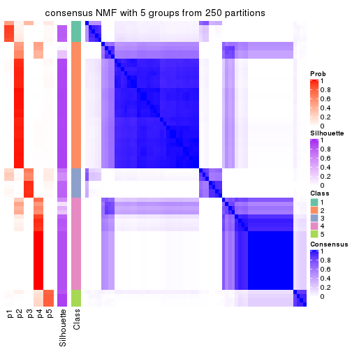
consensus_heatmap(res, k = 6)
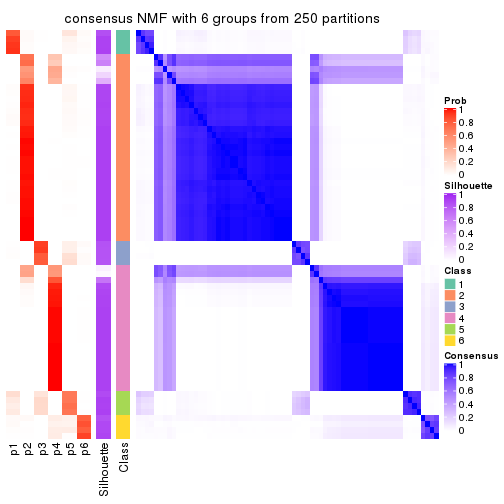
Heatmaps for the membership of samples in all partitions to see how consistent they are:
membership_heatmap(res, k = 2)
membership_heatmap(res, k = 3)
membership_heatmap(res, k = 4)
membership_heatmap(res, k = 5)
membership_heatmap(res, k = 6)
As soon as we have had the classes for columns, we can look for signatures which are significantly different between classes which can be candidate marks for certain classes. Following are the heatmaps for signatures.
Signature heatmaps where rows are scaled:
get_signatures(res, k = 2)
get_signatures(res, k = 3)

get_signatures(res, k = 4)
get_signatures(res, k = 5)
get_signatures(res, k = 6)
Signature heatmaps where rows are not scaled:
get_signatures(res, k = 2, scale_rows = FALSE)
get_signatures(res, k = 3, scale_rows = FALSE)
get_signatures(res, k = 4, scale_rows = FALSE)
get_signatures(res, k = 5, scale_rows = FALSE)

get_signatures(res, k = 6, scale_rows = FALSE)
Compare the overlap of signatures from different k:
compare_signatures(res)
get_signature() returns a data frame invisibly. TO get the list of signatures, the function
call should be assigned to a variable explicitly. In following code, if plot argument is set
to FALSE, no heatmap is plotted while only the differential analysis is performed.
# code only for demonstration
tb = get_signature(res, k = ..., plot = FALSE)
An example of the output of tb is:
#> which_row fdr mean_1 mean_2 scaled_mean_1 scaled_mean_2 km
#> 1 38 0.042760348 8.373488 9.131774 -0.5533452 0.5164555 1
#> 2 40 0.018707592 7.106213 8.469186 -0.6173731 0.5762149 1
#> 3 55 0.019134737 10.221463 11.207825 -0.6159697 0.5749050 1
#> 4 59 0.006059896 5.921854 7.869574 -0.6899429 0.6439467 1
#> 5 60 0.018055526 8.928898 10.211722 -0.6204761 0.5791110 1
#> 6 98 0.009384629 15.714769 14.887706 0.6635654 -0.6193277 2
...
The columns in tb are:
which_row: row indices corresponding to the input matrix.fdr: FDR for the differential test. mean_x: The mean value in group x.scaled_mean_x: The mean value in group x after rows are scaled.km: Row groups if k-means clustering is applied to rows.UMAP plot which shows how samples are separated.
dimension_reduction(res, k = 2, method = "UMAP")
dimension_reduction(res, k = 3, method = "UMAP")
dimension_reduction(res, k = 4, method = "UMAP")
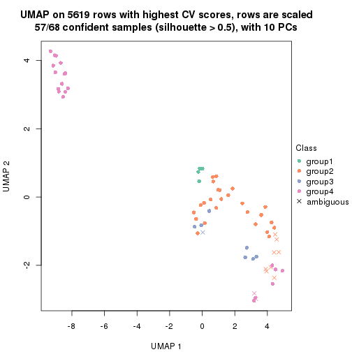
dimension_reduction(res, k = 5, method = "UMAP")
dimension_reduction(res, k = 6, method = "UMAP")
Following heatmap shows how subgroups are split when increasing k:
collect_classes(res)
If matrix rows can be associated to genes, consider to use functional_enrichment(res,
...) to perform function enrichment for the signature genes. See this vignette for more detailed explanations.
The object with results only for a single top-value method and a single partition method can be extracted as:
res = res_list["MAD", "hclust"]
# you can also extract it by
# res = res_list["MAD:hclust"]
A summary of res and all the functions that can be applied to it:
res
#> A 'ConsensusPartition' object with k = 2, 3, 4, 5, 6.
#> On a matrix with 5619 rows and 68 columns.
#> Top rows (562, 1124, 1686, 2248, 2810) are extracted by 'MAD' method.
#> Subgroups are detected by 'hclust' method.
#> Performed in total 1250 partitions by row resampling.
#> Best k for subgroups seems to be 2.
#>
#> Following methods can be applied to this 'ConsensusPartition' object:
#> [1] "cola_report" "collect_classes" "collect_plots"
#> [4] "collect_stats" "colnames" "compare_signatures"
#> [7] "consensus_heatmap" "dimension_reduction" "functional_enrichment"
#> [10] "get_anno_col" "get_anno" "get_classes"
#> [13] "get_consensus" "get_matrix" "get_membership"
#> [16] "get_param" "get_signatures" "get_stats"
#> [19] "is_best_k" "is_stable_k" "membership_heatmap"
#> [22] "ncol" "nrow" "plot_ecdf"
#> [25] "rownames" "select_partition_number" "show"
#> [28] "suggest_best_k" "test_to_known_factors"
collect_plots() function collects all the plots made from res for all k (number of partitions)
into one single page to provide an easy and fast comparison between different k.
collect_plots(res)
The plots are:
k and the heatmap of
predicted classes for each k.k.k.k.All the plots in panels can be made by individual functions and they are plotted later in this section.
select_partition_number() produces several plots showing different
statistics for choosing “optimized” k. There are following statistics:
k;k, the area increased is defined as \(A_k - A_{k-1}\).The detailed explanations of these statistics can be found in the cola vignette.
Generally speaking, lower PAC score, higher mean silhouette score or higher
concordance corresponds to better partition. Rand index and Jaccard index
measure how similar the current partition is compared to partition with k-1.
If they are too similar, we won't accept k is better than k-1.
select_partition_number(res)
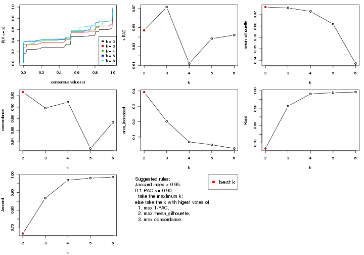
The numeric values for all these statistics can be obtained by get_stats().
get_stats(res)
#> k 1-PAC mean_silhouette concordance area_increased Rand Jaccard
#> 2 2 0.647 0.833 0.926 0.3927 0.668 0.668
#> 3 3 0.672 0.832 0.898 0.2021 0.912 0.869
#> 4 4 0.612 0.826 0.909 0.0685 0.982 0.970
#> 5 5 0.638 0.804 0.828 0.0499 0.989 0.981
#> 6 6 0.642 0.734 0.874 0.0255 0.993 0.987
suggest_best_k() suggests the best \(k\) based on these statistics. The rules are as follows:
suggest_best_k(res)
#> [1] 2
Following shows the table of the partitions (You need to click the show/hide
code output link to see it). The membership matrix (columns with name p*)
is inferred by
clue::cl_consensus()
function with the SE method. Basically the value in the membership matrix
represents the probability to belong to a certain group. The finall class
label for an item is determined with the group with highest probability it
belongs to.
In get_classes() function, the entropy is calculated from the membership
matrix and the silhouette score is calculated from the consensus matrix.
cbind(get_classes(res, k = 2), get_membership(res, k = 2))
#> class entropy silhouette p1 p2
#> SRR1035618 2 0.000 0.902 0.000 1.000
#> SRR1035619 2 0.000 0.902 0.000 1.000
#> SRR1035620 2 0.000 0.902 0.000 1.000
#> SRR1035621 2 0.000 0.902 0.000 1.000
#> SRR1035622 2 0.000 0.902 0.000 1.000
#> SRR1035623 2 0.000 0.902 0.000 1.000
#> SRR1035626 2 0.000 0.902 0.000 1.000
#> SRR1035627 2 0.000 0.902 0.000 1.000
#> SRR1035628 2 0.000 0.902 0.000 1.000
#> SRR1035629 2 0.000 0.902 0.000 1.000
#> SRR1035624 2 0.000 0.902 0.000 1.000
#> SRR1035625 2 0.000 0.902 0.000 1.000
#> SRR1035630 2 0.000 0.902 0.000 1.000
#> SRR1035631 2 0.000 0.902 0.000 1.000
#> SRR1035632 2 0.000 0.902 0.000 1.000
#> SRR1035633 2 0.000 0.902 0.000 1.000
#> SRR1035634 2 0.000 0.902 0.000 1.000
#> SRR1035635 2 0.000 0.902 0.000 1.000
#> SRR1035636 2 0.000 0.902 0.000 1.000
#> SRR1035637 2 0.000 0.902 0.000 1.000
#> SRR1035638 2 0.000 0.902 0.000 1.000
#> SRR1035639 2 0.000 0.902 0.000 1.000
#> SRR1035640 1 0.000 0.989 1.000 0.000
#> SRR1035641 1 0.000 0.989 1.000 0.000
#> SRR1035642 2 0.000 0.902 0.000 1.000
#> SRR1035643 2 0.000 0.902 0.000 1.000
#> SRR1035644 2 0.000 0.902 0.000 1.000
#> SRR1035645 2 0.000 0.902 0.000 1.000
#> SRR1035646 2 0.000 0.902 0.000 1.000
#> SRR1035647 2 0.000 0.902 0.000 1.000
#> SRR1035648 2 0.000 0.902 0.000 1.000
#> SRR1035649 2 0.000 0.902 0.000 1.000
#> SRR1035654 2 0.998 0.286 0.472 0.528
#> SRR1035655 2 0.998 0.286 0.472 0.528
#> SRR1035656 2 0.998 0.286 0.472 0.528
#> SRR1035657 2 0.998 0.286 0.472 0.528
#> SRR1035650 2 0.000 0.902 0.000 1.000
#> SRR1035651 2 0.000 0.902 0.000 1.000
#> SRR1035652 2 0.000 0.902 0.000 1.000
#> SRR1035653 2 0.000 0.902 0.000 1.000
#> SRR1035660 2 0.722 0.744 0.200 0.800
#> SRR1035661 2 0.722 0.744 0.200 0.800
#> SRR1035662 2 0.625 0.785 0.156 0.844
#> SRR1035663 2 0.625 0.785 0.156 0.844
#> SRR1035658 2 0.722 0.744 0.200 0.800
#> SRR1035659 2 0.722 0.744 0.200 0.800
#> SRR1035666 1 0.000 0.989 1.000 0.000
#> SRR1035667 1 0.000 0.989 1.000 0.000
#> SRR1035668 1 0.000 0.989 1.000 0.000
#> SRR1035669 1 0.000 0.989 1.000 0.000
#> SRR1035664 2 0.000 0.902 0.000 1.000
#> SRR1035665 2 0.000 0.902 0.000 1.000
#> SRR1035670 2 0.998 0.286 0.472 0.528
#> SRR1035671 2 0.998 0.286 0.472 0.528
#> SRR1035672 2 0.998 0.286 0.472 0.528
#> SRR1035673 2 0.998 0.286 0.472 0.528
#> SRR1035674 1 0.000 0.989 1.000 0.000
#> SRR1035675 1 0.000 0.989 1.000 0.000
#> SRR1035676 1 0.000 0.989 1.000 0.000
#> SRR1035677 1 0.000 0.989 1.000 0.000
#> SRR1035682 2 0.000 0.902 0.000 1.000
#> SRR1035683 2 0.000 0.902 0.000 1.000
#> SRR1035684 2 0.000 0.902 0.000 1.000
#> SRR1035685 2 0.000 0.902 0.000 1.000
#> SRR1035678 1 0.204 0.972 0.968 0.032
#> SRR1035679 1 0.204 0.972 0.968 0.032
#> SRR1035680 1 0.204 0.972 0.968 0.032
#> SRR1035681 1 0.204 0.972 0.968 0.032
cbind(get_classes(res, k = 3), get_membership(res, k = 3))
#> class entropy silhouette p1 p2 p3
#> SRR1035618 2 0.000 0.888 0.000 1.000 0
#> SRR1035619 2 0.000 0.888 0.000 1.000 0
#> SRR1035620 2 0.000 0.888 0.000 1.000 0
#> SRR1035621 2 0.000 0.888 0.000 1.000 0
#> SRR1035622 2 0.000 0.888 0.000 1.000 0
#> SRR1035623 2 0.000 0.888 0.000 1.000 0
#> SRR1035626 2 0.000 0.888 0.000 1.000 0
#> SRR1035627 2 0.000 0.888 0.000 1.000 0
#> SRR1035628 2 0.000 0.888 0.000 1.000 0
#> SRR1035629 2 0.000 0.888 0.000 1.000 0
#> SRR1035624 2 0.000 0.888 0.000 1.000 0
#> SRR1035625 2 0.000 0.888 0.000 1.000 0
#> SRR1035630 2 0.000 0.888 0.000 1.000 0
#> SRR1035631 2 0.000 0.888 0.000 1.000 0
#> SRR1035632 3 0.000 1.000 0.000 0.000 1
#> SRR1035633 3 0.000 1.000 0.000 0.000 1
#> SRR1035634 3 0.000 1.000 0.000 0.000 1
#> SRR1035635 3 0.000 1.000 0.000 0.000 1
#> SRR1035636 2 0.000 0.888 0.000 1.000 0
#> SRR1035637 2 0.000 0.888 0.000 1.000 0
#> SRR1035638 2 0.000 0.888 0.000 1.000 0
#> SRR1035639 2 0.000 0.888 0.000 1.000 0
#> SRR1035640 1 0.000 0.984 1.000 0.000 0
#> SRR1035641 1 0.000 0.984 1.000 0.000 0
#> SRR1035642 2 0.000 0.888 0.000 1.000 0
#> SRR1035643 2 0.000 0.888 0.000 1.000 0
#> SRR1035644 2 0.000 0.888 0.000 1.000 0
#> SRR1035645 2 0.000 0.888 0.000 1.000 0
#> SRR1035646 2 0.000 0.888 0.000 1.000 0
#> SRR1035647 2 0.000 0.888 0.000 1.000 0
#> SRR1035648 2 0.000 0.888 0.000 1.000 0
#> SRR1035649 2 0.000 0.888 0.000 1.000 0
#> SRR1035654 2 0.630 0.301 0.472 0.528 0
#> SRR1035655 2 0.630 0.301 0.472 0.528 0
#> SRR1035656 2 0.630 0.301 0.472 0.528 0
#> SRR1035657 2 0.630 0.301 0.472 0.528 0
#> SRR1035650 2 0.000 0.888 0.000 1.000 0
#> SRR1035651 2 0.000 0.888 0.000 1.000 0
#> SRR1035652 2 0.000 0.888 0.000 1.000 0
#> SRR1035653 2 0.000 0.888 0.000 1.000 0
#> SRR1035660 2 0.455 0.744 0.200 0.800 0
#> SRR1035661 2 0.455 0.744 0.200 0.800 0
#> SRR1035662 2 0.394 0.783 0.156 0.844 0
#> SRR1035663 2 0.394 0.783 0.156 0.844 0
#> SRR1035658 2 0.455 0.744 0.200 0.800 0
#> SRR1035659 2 0.455 0.744 0.200 0.800 0
#> SRR1035666 1 0.000 0.984 1.000 0.000 0
#> SRR1035667 1 0.000 0.984 1.000 0.000 0
#> SRR1035668 1 0.000 0.984 1.000 0.000 0
#> SRR1035669 1 0.000 0.984 1.000 0.000 0
#> SRR1035664 2 0.000 0.888 0.000 1.000 0
#> SRR1035665 2 0.000 0.888 0.000 1.000 0
#> SRR1035670 2 0.630 0.301 0.472 0.528 0
#> SRR1035671 2 0.630 0.301 0.472 0.528 0
#> SRR1035672 2 0.630 0.301 0.472 0.528 0
#> SRR1035673 2 0.630 0.301 0.472 0.528 0
#> SRR1035674 1 0.000 0.984 1.000 0.000 0
#> SRR1035675 1 0.000 0.984 1.000 0.000 0
#> SRR1035676 1 0.000 0.984 1.000 0.000 0
#> SRR1035677 1 0.000 0.984 1.000 0.000 0
#> SRR1035682 2 0.000 0.888 0.000 1.000 0
#> SRR1035683 2 0.000 0.888 0.000 1.000 0
#> SRR1035684 2 0.000 0.888 0.000 1.000 0
#> SRR1035685 2 0.000 0.888 0.000 1.000 0
#> SRR1035678 1 0.129 0.959 0.968 0.032 0
#> SRR1035679 1 0.129 0.959 0.968 0.032 0
#> SRR1035680 1 0.129 0.959 0.968 0.032 0
#> SRR1035681 1 0.129 0.959 0.968 0.032 0
cbind(get_classes(res, k = 4), get_membership(res, k = 4))
#> class entropy silhouette p1 p2 p3 p4
#> SRR1035618 2 0.499 0.882 0.000 0.528 0 0.472
#> SRR1035619 2 0.499 0.882 0.000 0.528 0 0.472
#> SRR1035620 2 0.499 0.882 0.000 0.528 0 0.472
#> SRR1035621 2 0.499 0.882 0.000 0.528 0 0.472
#> SRR1035622 2 0.499 0.882 0.000 0.528 0 0.472
#> SRR1035623 2 0.499 0.882 0.000 0.528 0 0.472
#> SRR1035626 2 0.692 0.822 0.120 0.528 0 0.352
#> SRR1035627 2 0.692 0.822 0.120 0.528 0 0.352
#> SRR1035628 2 0.692 0.822 0.120 0.528 0 0.352
#> SRR1035629 2 0.692 0.822 0.120 0.528 0 0.352
#> SRR1035624 2 0.499 0.882 0.000 0.528 0 0.472
#> SRR1035625 2 0.499 0.882 0.000 0.528 0 0.472
#> SRR1035630 2 0.499 0.882 0.000 0.528 0 0.472
#> SRR1035631 2 0.499 0.882 0.000 0.528 0 0.472
#> SRR1035632 3 0.000 1.000 0.000 0.000 1 0.000
#> SRR1035633 3 0.000 1.000 0.000 0.000 1 0.000
#> SRR1035634 3 0.000 1.000 0.000 0.000 1 0.000
#> SRR1035635 3 0.000 1.000 0.000 0.000 1 0.000
#> SRR1035636 2 0.499 0.882 0.000 0.528 0 0.472
#> SRR1035637 2 0.499 0.882 0.000 0.528 0 0.472
#> SRR1035638 2 0.499 0.882 0.000 0.528 0 0.472
#> SRR1035639 2 0.499 0.882 0.000 0.528 0 0.472
#> SRR1035640 1 0.499 0.942 0.528 0.472 0 0.000
#> SRR1035641 1 0.499 0.942 0.528 0.472 0 0.000
#> SRR1035642 2 0.499 0.882 0.000 0.528 0 0.472
#> SRR1035643 2 0.499 0.882 0.000 0.528 0 0.472
#> SRR1035644 2 0.499 0.882 0.000 0.528 0 0.472
#> SRR1035645 2 0.499 0.882 0.000 0.528 0 0.472
#> SRR1035646 2 0.499 0.882 0.000 0.528 0 0.472
#> SRR1035647 2 0.499 0.882 0.000 0.528 0 0.472
#> SRR1035648 2 0.499 0.882 0.000 0.528 0 0.472
#> SRR1035649 2 0.499 0.882 0.000 0.528 0 0.472
#> SRR1035654 2 0.000 0.343 0.000 1.000 0 0.000
#> SRR1035655 2 0.000 0.343 0.000 1.000 0 0.000
#> SRR1035656 2 0.000 0.343 0.000 1.000 0 0.000
#> SRR1035657 2 0.000 0.343 0.000 1.000 0 0.000
#> SRR1035650 2 0.499 0.882 0.000 0.528 0 0.472
#> SRR1035651 2 0.499 0.882 0.000 0.528 0 0.472
#> SRR1035652 2 0.499 0.882 0.000 0.528 0 0.472
#> SRR1035653 2 0.499 0.882 0.000 0.528 0 0.472
#> SRR1035660 2 0.422 0.758 0.000 0.728 0 0.272
#> SRR1035661 2 0.422 0.758 0.000 0.728 0 0.272
#> SRR1035662 2 0.450 0.792 0.000 0.684 0 0.316
#> SRR1035663 2 0.450 0.792 0.000 0.684 0 0.316
#> SRR1035658 2 0.422 0.758 0.000 0.728 0 0.272
#> SRR1035659 2 0.422 0.758 0.000 0.728 0 0.272
#> SRR1035666 1 0.500 0.907 0.604 0.392 0 0.004
#> SRR1035667 1 0.500 0.907 0.604 0.392 0 0.004
#> SRR1035668 1 0.500 0.907 0.604 0.392 0 0.004
#> SRR1035669 1 0.500 0.907 0.604 0.392 0 0.004
#> SRR1035664 2 0.499 0.882 0.000 0.528 0 0.472
#> SRR1035665 2 0.499 0.882 0.000 0.528 0 0.472
#> SRR1035670 2 0.000 0.343 0.000 1.000 0 0.000
#> SRR1035671 2 0.000 0.343 0.000 1.000 0 0.000
#> SRR1035672 2 0.000 0.343 0.000 1.000 0 0.000
#> SRR1035673 2 0.000 0.343 0.000 1.000 0 0.000
#> SRR1035674 1 0.499 0.942 0.528 0.472 0 0.000
#> SRR1035675 1 0.499 0.942 0.528 0.472 0 0.000
#> SRR1035676 1 0.499 0.942 0.528 0.472 0 0.000
#> SRR1035677 1 0.499 0.942 0.528 0.472 0 0.000
#> SRR1035682 2 0.499 0.882 0.000 0.528 0 0.472
#> SRR1035683 2 0.499 0.882 0.000 0.528 0 0.472
#> SRR1035684 2 0.499 0.882 0.000 0.528 0 0.472
#> SRR1035685 2 0.499 0.882 0.000 0.528 0 0.472
#> SRR1035678 4 0.695 1.000 0.348 0.124 0 0.528
#> SRR1035679 4 0.695 1.000 0.348 0.124 0 0.528
#> SRR1035680 4 0.695 1.000 0.348 0.124 0 0.528
#> SRR1035681 4 0.695 1.000 0.348 0.124 0 0.528
cbind(get_classes(res, k = 5), get_membership(res, k = 5))
#> class entropy silhouette p1 p2 p3 p4 p5
#> SRR1035618 2 0.0000 0.875 0.000 1.000 0.000 0.000 0.000
#> SRR1035619 2 0.0000 0.875 0.000 1.000 0.000 0.000 0.000
#> SRR1035620 2 0.0000 0.875 0.000 1.000 0.000 0.000 0.000
#> SRR1035621 2 0.0000 0.875 0.000 1.000 0.000 0.000 0.000
#> SRR1035622 2 0.0000 0.875 0.000 1.000 0.000 0.000 0.000
#> SRR1035623 2 0.0000 0.875 0.000 1.000 0.000 0.000 0.000
#> SRR1035626 2 0.4367 0.714 0.000 0.748 0.000 0.192 0.060
#> SRR1035627 2 0.4367 0.714 0.000 0.748 0.000 0.192 0.060
#> SRR1035628 2 0.4367 0.714 0.000 0.748 0.000 0.192 0.060
#> SRR1035629 2 0.4367 0.714 0.000 0.748 0.000 0.192 0.060
#> SRR1035624 2 0.0000 0.875 0.000 1.000 0.000 0.000 0.000
#> SRR1035625 2 0.0000 0.875 0.000 1.000 0.000 0.000 0.000
#> SRR1035630 2 0.0000 0.875 0.000 1.000 0.000 0.000 0.000
#> SRR1035631 2 0.0000 0.875 0.000 1.000 0.000 0.000 0.000
#> SRR1035632 3 0.0000 0.993 0.000 0.000 1.000 0.000 0.000
#> SRR1035633 3 0.0000 0.993 0.000 0.000 1.000 0.000 0.000
#> SRR1035634 3 0.0510 0.987 0.000 0.000 0.984 0.000 0.016
#> SRR1035635 3 0.0404 0.989 0.000 0.000 0.988 0.000 0.012
#> SRR1035636 2 0.0000 0.875 0.000 1.000 0.000 0.000 0.000
#> SRR1035637 2 0.0000 0.875 0.000 1.000 0.000 0.000 0.000
#> SRR1035638 2 0.0000 0.875 0.000 1.000 0.000 0.000 0.000
#> SRR1035639 2 0.0000 0.875 0.000 1.000 0.000 0.000 0.000
#> SRR1035640 1 0.0000 1.000 1.000 0.000 0.000 0.000 0.000
#> SRR1035641 1 0.0000 1.000 1.000 0.000 0.000 0.000 0.000
#> SRR1035642 2 0.0000 0.875 0.000 1.000 0.000 0.000 0.000
#> SRR1035643 2 0.0000 0.875 0.000 1.000 0.000 0.000 0.000
#> SRR1035644 2 0.0000 0.875 0.000 1.000 0.000 0.000 0.000
#> SRR1035645 2 0.0000 0.875 0.000 1.000 0.000 0.000 0.000
#> SRR1035646 2 0.0000 0.875 0.000 1.000 0.000 0.000 0.000
#> SRR1035647 2 0.0000 0.875 0.000 1.000 0.000 0.000 0.000
#> SRR1035648 2 0.0000 0.875 0.000 1.000 0.000 0.000 0.000
#> SRR1035649 2 0.0000 0.875 0.000 1.000 0.000 0.000 0.000
#> SRR1035654 2 0.4297 0.344 0.472 0.528 0.000 0.000 0.000
#> SRR1035655 2 0.4297 0.344 0.472 0.528 0.000 0.000 0.000
#> SRR1035656 2 0.4297 0.344 0.472 0.528 0.000 0.000 0.000
#> SRR1035657 2 0.4297 0.344 0.472 0.528 0.000 0.000 0.000
#> SRR1035650 2 0.0000 0.875 0.000 1.000 0.000 0.000 0.000
#> SRR1035651 2 0.0000 0.875 0.000 1.000 0.000 0.000 0.000
#> SRR1035652 2 0.0000 0.875 0.000 1.000 0.000 0.000 0.000
#> SRR1035653 2 0.0000 0.875 0.000 1.000 0.000 0.000 0.000
#> SRR1035660 2 0.3109 0.753 0.200 0.800 0.000 0.000 0.000
#> SRR1035661 2 0.3109 0.753 0.200 0.800 0.000 0.000 0.000
#> SRR1035662 2 0.2690 0.788 0.156 0.844 0.000 0.000 0.000
#> SRR1035663 2 0.2690 0.788 0.156 0.844 0.000 0.000 0.000
#> SRR1035658 2 0.3109 0.753 0.200 0.800 0.000 0.000 0.000
#> SRR1035659 2 0.3109 0.753 0.200 0.800 0.000 0.000 0.000
#> SRR1035666 5 0.2329 0.592 0.124 0.000 0.000 0.000 0.876
#> SRR1035667 5 0.2561 0.635 0.144 0.000 0.000 0.000 0.856
#> SRR1035668 5 0.4291 0.630 0.464 0.000 0.000 0.000 0.536
#> SRR1035669 5 0.4294 0.626 0.468 0.000 0.000 0.000 0.532
#> SRR1035664 2 0.0000 0.875 0.000 1.000 0.000 0.000 0.000
#> SRR1035665 2 0.0000 0.875 0.000 1.000 0.000 0.000 0.000
#> SRR1035670 2 0.4297 0.344 0.472 0.528 0.000 0.000 0.000
#> SRR1035671 2 0.4297 0.344 0.472 0.528 0.000 0.000 0.000
#> SRR1035672 2 0.4297 0.344 0.472 0.528 0.000 0.000 0.000
#> SRR1035673 2 0.4297 0.344 0.472 0.528 0.000 0.000 0.000
#> SRR1035674 1 0.0000 1.000 1.000 0.000 0.000 0.000 0.000
#> SRR1035675 1 0.0000 1.000 1.000 0.000 0.000 0.000 0.000
#> SRR1035676 1 0.0000 1.000 1.000 0.000 0.000 0.000 0.000
#> SRR1035677 1 0.0000 1.000 1.000 0.000 0.000 0.000 0.000
#> SRR1035682 2 0.0000 0.875 0.000 1.000 0.000 0.000 0.000
#> SRR1035683 2 0.0000 0.875 0.000 1.000 0.000 0.000 0.000
#> SRR1035684 2 0.0000 0.875 0.000 1.000 0.000 0.000 0.000
#> SRR1035685 2 0.0000 0.875 0.000 1.000 0.000 0.000 0.000
#> SRR1035678 4 0.3160 1.000 0.004 0.000 0.000 0.808 0.188
#> SRR1035679 4 0.3160 1.000 0.004 0.000 0.000 0.808 0.188
#> SRR1035680 4 0.3160 1.000 0.004 0.000 0.000 0.808 0.188
#> SRR1035681 4 0.3160 1.000 0.004 0.000 0.000 0.808 0.188
cbind(get_classes(res, k = 6), get_membership(res, k = 6))
#> class entropy silhouette p1 p2 p3 p4 p5 p6
#> SRR1035618 2 0.000 0.862 0.000 1.000 0.000 NA 0.000 0.000
#> SRR1035619 2 0.000 0.862 0.000 1.000 0.000 NA 0.000 0.000
#> SRR1035620 2 0.000 0.862 0.000 1.000 0.000 NA 0.000 0.000
#> SRR1035621 2 0.000 0.862 0.000 1.000 0.000 NA 0.000 0.000
#> SRR1035622 2 0.000 0.862 0.000 1.000 0.000 NA 0.000 0.000
#> SRR1035623 2 0.000 0.862 0.000 1.000 0.000 NA 0.000 0.000
#> SRR1035626 2 0.370 0.521 0.000 0.624 0.000 NA 0.000 0.000
#> SRR1035627 2 0.370 0.521 0.000 0.624 0.000 NA 0.000 0.000
#> SRR1035628 2 0.370 0.521 0.000 0.624 0.000 NA 0.000 0.000
#> SRR1035629 2 0.368 0.528 0.000 0.628 0.000 NA 0.000 0.000
#> SRR1035624 2 0.000 0.862 0.000 1.000 0.000 NA 0.000 0.000
#> SRR1035625 2 0.000 0.862 0.000 1.000 0.000 NA 0.000 0.000
#> SRR1035630 2 0.000 0.862 0.000 1.000 0.000 NA 0.000 0.000
#> SRR1035631 2 0.000 0.862 0.000 1.000 0.000 NA 0.000 0.000
#> SRR1035632 3 0.531 0.948 0.164 0.000 0.592 NA 0.244 0.000
#> SRR1035633 3 0.531 0.948 0.164 0.000 0.592 NA 0.244 0.000
#> SRR1035634 3 0.655 0.894 0.196 0.000 0.520 NA 0.216 0.000
#> SRR1035635 3 0.601 0.928 0.184 0.000 0.556 NA 0.232 0.000
#> SRR1035636 2 0.000 0.862 0.000 1.000 0.000 NA 0.000 0.000
#> SRR1035637 2 0.000 0.862 0.000 1.000 0.000 NA 0.000 0.000
#> SRR1035638 2 0.000 0.862 0.000 1.000 0.000 NA 0.000 0.000
#> SRR1035639 2 0.000 0.862 0.000 1.000 0.000 NA 0.000 0.000
#> SRR1035640 1 0.377 0.774 0.592 0.000 0.408 NA 0.000 0.000
#> SRR1035641 1 0.377 0.774 0.592 0.000 0.408 NA 0.000 0.000
#> SRR1035642 2 0.000 0.862 0.000 1.000 0.000 NA 0.000 0.000
#> SRR1035643 2 0.000 0.862 0.000 1.000 0.000 NA 0.000 0.000
#> SRR1035644 2 0.000 0.862 0.000 1.000 0.000 NA 0.000 0.000
#> SRR1035645 2 0.000 0.862 0.000 1.000 0.000 NA 0.000 0.000
#> SRR1035646 2 0.000 0.862 0.000 1.000 0.000 NA 0.000 0.000
#> SRR1035647 2 0.000 0.862 0.000 1.000 0.000 NA 0.000 0.000
#> SRR1035648 2 0.000 0.862 0.000 1.000 0.000 NA 0.000 0.000
#> SRR1035649 2 0.000 0.862 0.000 1.000 0.000 NA 0.000 0.000
#> SRR1035654 2 0.491 0.364 0.064 0.528 0.408 NA 0.000 0.000
#> SRR1035655 2 0.491 0.364 0.064 0.528 0.408 NA 0.000 0.000
#> SRR1035656 2 0.491 0.364 0.064 0.528 0.408 NA 0.000 0.000
#> SRR1035657 2 0.491 0.364 0.064 0.528 0.408 NA 0.000 0.000
#> SRR1035650 2 0.000 0.862 0.000 1.000 0.000 NA 0.000 0.000
#> SRR1035651 2 0.000 0.862 0.000 1.000 0.000 NA 0.000 0.000
#> SRR1035652 2 0.000 0.862 0.000 1.000 0.000 NA 0.000 0.000
#> SRR1035653 2 0.000 0.862 0.000 1.000 0.000 NA 0.000 0.000
#> SRR1035660 2 0.290 0.743 0.004 0.800 0.196 NA 0.000 0.000
#> SRR1035661 2 0.290 0.743 0.004 0.800 0.196 NA 0.000 0.000
#> SRR1035662 2 0.242 0.776 0.000 0.844 0.156 NA 0.000 0.000
#> SRR1035663 2 0.242 0.776 0.000 0.844 0.156 NA 0.000 0.000
#> SRR1035658 2 0.290 0.743 0.004 0.800 0.196 NA 0.000 0.000
#> SRR1035659 2 0.290 0.743 0.004 0.800 0.196 NA 0.000 0.000
#> SRR1035666 5 0.507 0.652 0.032 0.000 0.000 NA 0.636 0.052
#> SRR1035667 5 0.659 0.667 0.188 0.000 0.000 NA 0.472 0.052
#> SRR1035668 1 0.477 -0.441 0.532 0.000 0.000 NA 0.416 0.052
#> SRR1035669 1 0.476 -0.436 0.536 0.000 0.000 NA 0.412 0.052
#> SRR1035664 2 0.000 0.862 0.000 1.000 0.000 NA 0.000 0.000
#> SRR1035665 2 0.000 0.862 0.000 1.000 0.000 NA 0.000 0.000
#> SRR1035670 2 0.491 0.364 0.064 0.528 0.408 NA 0.000 0.000
#> SRR1035671 2 0.491 0.364 0.064 0.528 0.408 NA 0.000 0.000
#> SRR1035672 2 0.491 0.364 0.064 0.528 0.408 NA 0.000 0.000
#> SRR1035673 2 0.491 0.364 0.064 0.528 0.408 NA 0.000 0.000
#> SRR1035674 1 0.377 0.774 0.592 0.000 0.408 NA 0.000 0.000
#> SRR1035675 1 0.377 0.774 0.592 0.000 0.408 NA 0.000 0.000
#> SRR1035676 1 0.377 0.774 0.592 0.000 0.408 NA 0.000 0.000
#> SRR1035677 1 0.377 0.774 0.592 0.000 0.408 NA 0.000 0.000
#> SRR1035682 2 0.000 0.862 0.000 1.000 0.000 NA 0.000 0.000
#> SRR1035683 2 0.000 0.862 0.000 1.000 0.000 NA 0.000 0.000
#> SRR1035684 2 0.000 0.862 0.000 1.000 0.000 NA 0.000 0.000
#> SRR1035685 2 0.000 0.862 0.000 1.000 0.000 NA 0.000 0.000
#> SRR1035678 6 0.000 1.000 0.000 0.000 0.000 NA 0.000 1.000
#> SRR1035679 6 0.000 1.000 0.000 0.000 0.000 NA 0.000 1.000
#> SRR1035680 6 0.000 1.000 0.000 0.000 0.000 NA 0.000 1.000
#> SRR1035681 6 0.000 1.000 0.000 0.000 0.000 NA 0.000 1.000
Heatmaps for the consensus matrix. It visualizes the probability of two samples to be in a same group.
consensus_heatmap(res, k = 2)
consensus_heatmap(res, k = 3)
consensus_heatmap(res, k = 4)
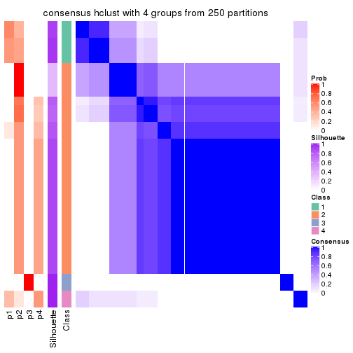
consensus_heatmap(res, k = 5)
consensus_heatmap(res, k = 6)

Heatmaps for the membership of samples in all partitions to see how consistent they are:
membership_heatmap(res, k = 2)
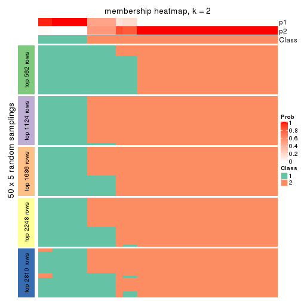
membership_heatmap(res, k = 3)
membership_heatmap(res, k = 4)
membership_heatmap(res, k = 5)
membership_heatmap(res, k = 6)
As soon as we have had the classes for columns, we can look for signatures which are significantly different between classes which can be candidate marks for certain classes. Following are the heatmaps for signatures.
Signature heatmaps where rows are scaled:
get_signatures(res, k = 2)
get_signatures(res, k = 3)
get_signatures(res, k = 4)
get_signatures(res, k = 5)
get_signatures(res, k = 6)
Signature heatmaps where rows are not scaled:
get_signatures(res, k = 2, scale_rows = FALSE)
get_signatures(res, k = 3, scale_rows = FALSE)
get_signatures(res, k = 4, scale_rows = FALSE)
get_signatures(res, k = 5, scale_rows = FALSE)
get_signatures(res, k = 6, scale_rows = FALSE)
Compare the overlap of signatures from different k:
compare_signatures(res)
get_signature() returns a data frame invisibly. TO get the list of signatures, the function
call should be assigned to a variable explicitly. In following code, if plot argument is set
to FALSE, no heatmap is plotted while only the differential analysis is performed.
# code only for demonstration
tb = get_signature(res, k = ..., plot = FALSE)
An example of the output of tb is:
#> which_row fdr mean_1 mean_2 scaled_mean_1 scaled_mean_2 km
#> 1 38 0.042760348 8.373488 9.131774 -0.5533452 0.5164555 1
#> 2 40 0.018707592 7.106213 8.469186 -0.6173731 0.5762149 1
#> 3 55 0.019134737 10.221463 11.207825 -0.6159697 0.5749050 1
#> 4 59 0.006059896 5.921854 7.869574 -0.6899429 0.6439467 1
#> 5 60 0.018055526 8.928898 10.211722 -0.6204761 0.5791110 1
#> 6 98 0.009384629 15.714769 14.887706 0.6635654 -0.6193277 2
...
The columns in tb are:
which_row: row indices corresponding to the input matrix.fdr: FDR for the differential test. mean_x: The mean value in group x.scaled_mean_x: The mean value in group x after rows are scaled.km: Row groups if k-means clustering is applied to rows.UMAP plot which shows how samples are separated.
dimension_reduction(res, k = 2, method = "UMAP")
dimension_reduction(res, k = 3, method = "UMAP")

dimension_reduction(res, k = 4, method = "UMAP")
dimension_reduction(res, k = 5, method = "UMAP")
dimension_reduction(res, k = 6, method = "UMAP")
Following heatmap shows how subgroups are split when increasing k:
collect_classes(res)
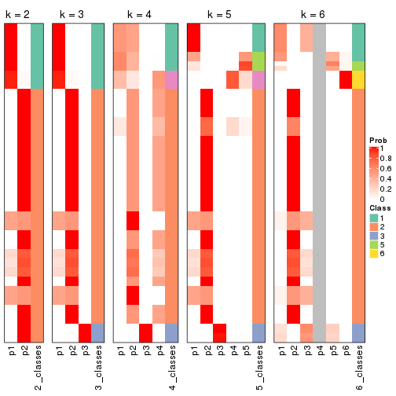
If matrix rows can be associated to genes, consider to use functional_enrichment(res,
...) to perform function enrichment for the signature genes. See this vignette for more detailed explanations.
The object with results only for a single top-value method and a single partition method can be extracted as:
res = res_list["MAD", "kmeans"]
# you can also extract it by
# res = res_list["MAD:kmeans"]
A summary of res and all the functions that can be applied to it:
res
#> A 'ConsensusPartition' object with k = 2, 3, 4, 5, 6.
#> On a matrix with 5619 rows and 68 columns.
#> Top rows (562, 1124, 1686, 2248, 2810) are extracted by 'MAD' method.
#> Subgroups are detected by 'kmeans' method.
#> Performed in total 1250 partitions by row resampling.
#> Best k for subgroups seems to be 5.
#>
#> Following methods can be applied to this 'ConsensusPartition' object:
#> [1] "cola_report" "collect_classes" "collect_plots"
#> [4] "collect_stats" "colnames" "compare_signatures"
#> [7] "consensus_heatmap" "dimension_reduction" "functional_enrichment"
#> [10] "get_anno_col" "get_anno" "get_classes"
#> [13] "get_consensus" "get_matrix" "get_membership"
#> [16] "get_param" "get_signatures" "get_stats"
#> [19] "is_best_k" "is_stable_k" "membership_heatmap"
#> [22] "ncol" "nrow" "plot_ecdf"
#> [25] "rownames" "select_partition_number" "show"
#> [28] "suggest_best_k" "test_to_known_factors"
collect_plots() function collects all the plots made from res for all k (number of partitions)
into one single page to provide an easy and fast comparison between different k.
collect_plots(res)
The plots are:
k and the heatmap of
predicted classes for each k.k.k.k.All the plots in panels can be made by individual functions and they are plotted later in this section.
select_partition_number() produces several plots showing different
statistics for choosing “optimized” k. There are following statistics:
k;k, the area increased is defined as \(A_k - A_{k-1}\).The detailed explanations of these statistics can be found in the cola vignette.
Generally speaking, lower PAC score, higher mean silhouette score or higher
concordance corresponds to better partition. Rand index and Jaccard index
measure how similar the current partition is compared to partition with k-1.
If they are too similar, we won't accept k is better than k-1.
select_partition_number(res)
The numeric values for all these statistics can be obtained by get_stats().
get_stats(res)
#> k 1-PAC mean_silhouette concordance area_increased Rand Jaccard
#> 2 2 0.558 0.960 0.934 0.4012 0.556 0.556
#> 3 3 0.613 0.704 0.843 0.4513 0.926 0.867
#> 4 4 0.615 0.621 0.710 0.1481 0.926 0.849
#> 5 5 0.623 0.737 0.760 0.0854 0.772 0.475
#> 6 6 0.679 0.776 0.795 0.0624 0.961 0.838
suggest_best_k() suggests the best \(k\) based on these statistics. The rules are as follows:
suggest_best_k(res)
#> [1] 5
Following shows the table of the partitions (You need to click the show/hide
code output link to see it). The membership matrix (columns with name p*)
is inferred by
clue::cl_consensus()
function with the SE method. Basically the value in the membership matrix
represents the probability to belong to a certain group. The finall class
label for an item is determined with the group with highest probability it
belongs to.
In get_classes() function, the entropy is calculated from the membership
matrix and the silhouette score is calculated from the consensus matrix.
cbind(get_classes(res, k = 2), get_membership(res, k = 2))
#> class entropy silhouette p1 p2
#> SRR1035618 2 0.000 0.976 0.000 1.000
#> SRR1035619 2 0.000 0.976 0.000 1.000
#> SRR1035620 2 0.000 0.976 0.000 1.000
#> SRR1035621 2 0.000 0.976 0.000 1.000
#> SRR1035622 2 0.000 0.976 0.000 1.000
#> SRR1035623 2 0.000 0.976 0.000 1.000
#> SRR1035626 2 0.327 0.928 0.060 0.940
#> SRR1035627 2 0.327 0.928 0.060 0.940
#> SRR1035628 2 0.327 0.928 0.060 0.940
#> SRR1035629 2 0.327 0.928 0.060 0.940
#> SRR1035624 2 0.000 0.976 0.000 1.000
#> SRR1035625 2 0.000 0.976 0.000 1.000
#> SRR1035630 2 0.000 0.976 0.000 1.000
#> SRR1035631 2 0.000 0.976 0.000 1.000
#> SRR1035632 2 0.689 0.808 0.184 0.816
#> SRR1035633 2 0.689 0.808 0.184 0.816
#> SRR1035634 2 0.689 0.808 0.184 0.816
#> SRR1035635 2 0.689 0.808 0.184 0.816
#> SRR1035636 2 0.000 0.976 0.000 1.000
#> SRR1035637 2 0.000 0.976 0.000 1.000
#> SRR1035638 2 0.000 0.976 0.000 1.000
#> SRR1035639 2 0.000 0.976 0.000 1.000
#> SRR1035640 1 0.680 0.974 0.820 0.180
#> SRR1035641 1 0.680 0.974 0.820 0.180
#> SRR1035642 2 0.000 0.976 0.000 1.000
#> SRR1035643 2 0.000 0.976 0.000 1.000
#> SRR1035644 2 0.000 0.976 0.000 1.000
#> SRR1035645 2 0.000 0.976 0.000 1.000
#> SRR1035646 2 0.000 0.976 0.000 1.000
#> SRR1035647 2 0.000 0.976 0.000 1.000
#> SRR1035648 2 0.000 0.976 0.000 1.000
#> SRR1035649 2 0.000 0.976 0.000 1.000
#> SRR1035654 1 0.680 0.974 0.820 0.180
#> SRR1035655 1 0.680 0.974 0.820 0.180
#> SRR1035656 1 0.680 0.974 0.820 0.180
#> SRR1035657 1 0.680 0.974 0.820 0.180
#> SRR1035650 2 0.000 0.976 0.000 1.000
#> SRR1035651 2 0.000 0.976 0.000 1.000
#> SRR1035652 2 0.000 0.976 0.000 1.000
#> SRR1035653 2 0.000 0.976 0.000 1.000
#> SRR1035660 2 0.000 0.976 0.000 1.000
#> SRR1035661 2 0.000 0.976 0.000 1.000
#> SRR1035662 2 0.000 0.976 0.000 1.000
#> SRR1035663 2 0.000 0.976 0.000 1.000
#> SRR1035658 2 0.000 0.976 0.000 1.000
#> SRR1035659 2 0.000 0.976 0.000 1.000
#> SRR1035666 1 0.541 0.956 0.876 0.124
#> SRR1035667 1 0.541 0.956 0.876 0.124
#> SRR1035668 1 0.541 0.956 0.876 0.124
#> SRR1035669 1 0.541 0.956 0.876 0.124
#> SRR1035664 2 0.000 0.976 0.000 1.000
#> SRR1035665 2 0.000 0.976 0.000 1.000
#> SRR1035670 1 0.680 0.974 0.820 0.180
#> SRR1035671 1 0.680 0.974 0.820 0.180
#> SRR1035672 1 0.680 0.974 0.820 0.180
#> SRR1035673 1 0.680 0.974 0.820 0.180
#> SRR1035674 1 0.680 0.974 0.820 0.180
#> SRR1035675 1 0.680 0.974 0.820 0.180
#> SRR1035676 1 0.680 0.974 0.820 0.180
#> SRR1035677 1 0.680 0.974 0.820 0.180
#> SRR1035682 2 0.000 0.976 0.000 1.000
#> SRR1035683 2 0.000 0.976 0.000 1.000
#> SRR1035684 2 0.000 0.976 0.000 1.000
#> SRR1035685 2 0.000 0.976 0.000 1.000
#> SRR1035678 1 0.541 0.956 0.876 0.124
#> SRR1035679 1 0.541 0.956 0.876 0.124
#> SRR1035680 1 0.541 0.956 0.876 0.124
#> SRR1035681 1 0.541 0.956 0.876 0.124
cbind(get_classes(res, k = 3), get_membership(res, k = 3))
#> class entropy silhouette p1 p2 p3
#> SRR1035618 2 0.536 0.722 0.000 0.724 0.276
#> SRR1035619 2 0.536 0.722 0.000 0.724 0.276
#> SRR1035620 2 0.522 0.726 0.000 0.740 0.260
#> SRR1035621 2 0.522 0.726 0.000 0.740 0.260
#> SRR1035622 2 0.566 0.718 0.004 0.712 0.284
#> SRR1035623 2 0.566 0.718 0.004 0.712 0.284
#> SRR1035626 2 0.605 -0.198 0.008 0.680 0.312
#> SRR1035627 2 0.605 -0.198 0.008 0.680 0.312
#> SRR1035628 2 0.607 -0.207 0.008 0.676 0.316
#> SRR1035629 2 0.607 -0.207 0.008 0.676 0.316
#> SRR1035624 2 0.566 0.718 0.004 0.712 0.284
#> SRR1035625 2 0.566 0.718 0.004 0.712 0.284
#> SRR1035630 2 0.000 0.645 0.000 1.000 0.000
#> SRR1035631 2 0.000 0.645 0.000 1.000 0.000
#> SRR1035632 3 0.658 0.989 0.008 0.420 0.572
#> SRR1035633 3 0.658 0.989 0.008 0.420 0.572
#> SRR1035634 3 0.655 0.989 0.008 0.412 0.580
#> SRR1035635 3 0.655 0.989 0.008 0.412 0.580
#> SRR1035636 2 0.000 0.645 0.000 1.000 0.000
#> SRR1035637 2 0.000 0.645 0.000 1.000 0.000
#> SRR1035638 2 0.000 0.645 0.000 1.000 0.000
#> SRR1035639 2 0.000 0.645 0.000 1.000 0.000
#> SRR1035640 1 0.220 0.898 0.940 0.004 0.056
#> SRR1035641 1 0.220 0.898 0.940 0.004 0.056
#> SRR1035642 2 0.518 0.726 0.000 0.744 0.256
#> SRR1035643 2 0.518 0.726 0.000 0.744 0.256
#> SRR1035644 2 0.518 0.726 0.000 0.744 0.256
#> SRR1035645 2 0.518 0.726 0.000 0.744 0.256
#> SRR1035646 2 0.450 0.722 0.000 0.804 0.196
#> SRR1035647 2 0.440 0.720 0.000 0.812 0.188
#> SRR1035648 2 0.435 0.719 0.000 0.816 0.184
#> SRR1035649 2 0.440 0.720 0.000 0.812 0.188
#> SRR1035654 1 0.250 0.893 0.928 0.004 0.068
#> SRR1035655 1 0.250 0.893 0.928 0.004 0.068
#> SRR1035656 1 0.250 0.893 0.928 0.004 0.068
#> SRR1035657 1 0.250 0.893 0.928 0.004 0.068
#> SRR1035650 2 0.000 0.645 0.000 1.000 0.000
#> SRR1035651 2 0.000 0.645 0.000 1.000 0.000
#> SRR1035652 2 0.000 0.645 0.000 1.000 0.000
#> SRR1035653 2 0.000 0.645 0.000 1.000 0.000
#> SRR1035660 2 0.905 0.518 0.168 0.536 0.296
#> SRR1035661 2 0.905 0.518 0.168 0.536 0.296
#> SRR1035662 2 0.703 0.678 0.044 0.660 0.296
#> SRR1035663 2 0.703 0.678 0.044 0.660 0.296
#> SRR1035658 2 0.925 0.486 0.188 0.516 0.296
#> SRR1035659 2 0.925 0.486 0.188 0.516 0.296
#> SRR1035666 1 0.470 0.847 0.788 0.000 0.212
#> SRR1035667 1 0.470 0.847 0.788 0.000 0.212
#> SRR1035668 1 0.470 0.847 0.788 0.000 0.212
#> SRR1035669 1 0.470 0.847 0.788 0.000 0.212
#> SRR1035664 2 0.645 0.699 0.024 0.684 0.292
#> SRR1035665 2 0.645 0.699 0.024 0.684 0.292
#> SRR1035670 1 0.220 0.892 0.940 0.004 0.056
#> SRR1035671 1 0.220 0.892 0.940 0.004 0.056
#> SRR1035672 1 0.210 0.894 0.944 0.004 0.052
#> SRR1035673 1 0.220 0.892 0.940 0.004 0.056
#> SRR1035674 1 0.140 0.900 0.968 0.004 0.028
#> SRR1035675 1 0.140 0.900 0.968 0.004 0.028
#> SRR1035676 1 0.140 0.900 0.968 0.004 0.028
#> SRR1035677 1 0.140 0.900 0.968 0.004 0.028
#> SRR1035682 2 0.000 0.645 0.000 1.000 0.000
#> SRR1035683 2 0.000 0.645 0.000 1.000 0.000
#> SRR1035684 2 0.000 0.645 0.000 1.000 0.000
#> SRR1035685 2 0.000 0.645 0.000 1.000 0.000
#> SRR1035678 1 0.429 0.857 0.820 0.000 0.180
#> SRR1035679 1 0.429 0.857 0.820 0.000 0.180
#> SRR1035680 1 0.429 0.857 0.820 0.000 0.180
#> SRR1035681 1 0.429 0.857 0.820 0.000 0.180
cbind(get_classes(res, k = 4), get_membership(res, k = 4))
#> class entropy silhouette p1 p2 p3 p4
#> SRR1035618 2 0.0000 0.643 0.000 1.000 0.000 0.000
#> SRR1035619 2 0.0000 0.643 0.000 1.000 0.000 0.000
#> SRR1035620 2 0.0000 0.643 0.000 1.000 0.000 0.000
#> SRR1035621 2 0.0000 0.643 0.000 1.000 0.000 0.000
#> SRR1035622 2 0.1543 0.630 0.032 0.956 0.008 0.004
#> SRR1035623 2 0.1543 0.630 0.032 0.956 0.008 0.004
#> SRR1035626 3 0.8071 0.718 0.008 0.260 0.412 0.320
#> SRR1035627 3 0.8071 0.718 0.008 0.260 0.412 0.320
#> SRR1035628 3 0.8248 0.724 0.016 0.252 0.412 0.320
#> SRR1035629 3 0.8248 0.724 0.016 0.252 0.412 0.320
#> SRR1035624 2 0.1543 0.630 0.032 0.956 0.008 0.004
#> SRR1035625 2 0.1543 0.630 0.032 0.956 0.008 0.004
#> SRR1035630 2 0.4994 0.452 0.000 0.520 0.000 0.480
#> SRR1035631 2 0.4994 0.452 0.000 0.520 0.000 0.480
#> SRR1035632 3 0.5032 0.786 0.000 0.080 0.764 0.156
#> SRR1035633 3 0.5032 0.786 0.000 0.080 0.764 0.156
#> SRR1035634 3 0.5053 0.784 0.004 0.076 0.772 0.148
#> SRR1035635 3 0.5053 0.784 0.004 0.076 0.772 0.148
#> SRR1035636 2 0.4996 0.446 0.000 0.516 0.000 0.484
#> SRR1035637 2 0.4996 0.446 0.000 0.516 0.000 0.484
#> SRR1035638 2 0.4996 0.446 0.000 0.516 0.000 0.484
#> SRR1035639 2 0.4996 0.446 0.000 0.516 0.000 0.484
#> SRR1035640 1 0.4424 0.767 0.812 0.000 0.088 0.100
#> SRR1035641 1 0.4424 0.767 0.812 0.000 0.088 0.100
#> SRR1035642 2 0.0672 0.641 0.000 0.984 0.008 0.008
#> SRR1035643 2 0.0672 0.641 0.000 0.984 0.008 0.008
#> SRR1035644 2 0.0672 0.641 0.000 0.984 0.008 0.008
#> SRR1035645 2 0.0672 0.641 0.000 0.984 0.008 0.008
#> SRR1035646 2 0.2999 0.617 0.000 0.864 0.004 0.132
#> SRR1035647 2 0.2999 0.617 0.000 0.864 0.004 0.132
#> SRR1035648 2 0.3052 0.616 0.000 0.860 0.004 0.136
#> SRR1035649 2 0.2999 0.617 0.000 0.864 0.004 0.132
#> SRR1035654 1 0.1993 0.774 0.944 0.016 0.016 0.024
#> SRR1035655 1 0.1993 0.774 0.944 0.016 0.016 0.024
#> SRR1035656 1 0.1993 0.774 0.944 0.016 0.016 0.024
#> SRR1035657 1 0.1993 0.774 0.944 0.016 0.016 0.024
#> SRR1035650 2 0.4994 0.452 0.000 0.520 0.000 0.480
#> SRR1035651 2 0.4994 0.452 0.000 0.520 0.000 0.480
#> SRR1035652 2 0.4994 0.452 0.000 0.520 0.000 0.480
#> SRR1035653 2 0.4994 0.452 0.000 0.520 0.000 0.480
#> SRR1035660 2 0.4946 0.369 0.308 0.680 0.004 0.008
#> SRR1035661 2 0.4946 0.369 0.308 0.680 0.004 0.008
#> SRR1035662 2 0.3304 0.578 0.120 0.864 0.008 0.008
#> SRR1035663 2 0.3304 0.578 0.120 0.864 0.008 0.008
#> SRR1035658 2 0.5550 0.259 0.388 0.592 0.008 0.012
#> SRR1035659 2 0.5550 0.259 0.388 0.592 0.008 0.012
#> SRR1035666 1 0.7416 0.629 0.440 0.000 0.168 0.392
#> SRR1035667 1 0.7416 0.629 0.440 0.000 0.168 0.392
#> SRR1035668 1 0.7416 0.629 0.440 0.000 0.168 0.392
#> SRR1035669 1 0.7416 0.629 0.440 0.000 0.168 0.392
#> SRR1035664 2 0.2222 0.613 0.056 0.928 0.008 0.008
#> SRR1035665 2 0.2222 0.613 0.056 0.928 0.008 0.008
#> SRR1035670 1 0.0469 0.779 0.988 0.012 0.000 0.000
#> SRR1035671 1 0.0469 0.779 0.988 0.012 0.000 0.000
#> SRR1035672 1 0.0469 0.779 0.988 0.012 0.000 0.000
#> SRR1035673 1 0.0469 0.779 0.988 0.012 0.000 0.000
#> SRR1035674 1 0.3621 0.782 0.860 0.000 0.068 0.072
#> SRR1035675 1 0.3621 0.782 0.860 0.000 0.068 0.072
#> SRR1035676 1 0.3621 0.782 0.860 0.000 0.068 0.072
#> SRR1035677 1 0.3621 0.782 0.860 0.000 0.068 0.072
#> SRR1035682 2 0.4994 0.452 0.000 0.520 0.000 0.480
#> SRR1035683 2 0.4994 0.452 0.000 0.520 0.000 0.480
#> SRR1035684 2 0.4994 0.452 0.000 0.520 0.000 0.480
#> SRR1035685 2 0.4994 0.452 0.000 0.520 0.000 0.480
#> SRR1035678 1 0.6936 0.683 0.564 0.000 0.144 0.292
#> SRR1035679 1 0.6936 0.683 0.564 0.000 0.144 0.292
#> SRR1035680 1 0.6936 0.683 0.564 0.000 0.144 0.292
#> SRR1035681 1 0.6936 0.683 0.564 0.000 0.144 0.292
cbind(get_classes(res, k = 5), get_membership(res, k = 5))
#> class entropy silhouette p1 p2 p3 p4 p5
#> SRR1035618 2 0.4268 0.830 0.008 0.648 0.000 0.344 0.000
#> SRR1035619 2 0.4268 0.830 0.008 0.648 0.000 0.344 0.000
#> SRR1035620 2 0.4196 0.826 0.004 0.640 0.000 0.356 0.000
#> SRR1035621 2 0.4196 0.826 0.004 0.640 0.000 0.356 0.000
#> SRR1035622 2 0.4692 0.828 0.024 0.652 0.004 0.320 0.000
#> SRR1035623 2 0.4692 0.828 0.024 0.652 0.004 0.320 0.000
#> SRR1035626 3 0.8299 0.724 0.168 0.244 0.384 0.204 0.000
#> SRR1035627 3 0.8299 0.724 0.168 0.244 0.384 0.204 0.000
#> SRR1035628 3 0.8330 0.726 0.188 0.228 0.384 0.200 0.000
#> SRR1035629 3 0.8330 0.726 0.188 0.228 0.384 0.200 0.000
#> SRR1035624 2 0.4692 0.828 0.024 0.652 0.004 0.320 0.000
#> SRR1035625 2 0.4692 0.828 0.024 0.652 0.004 0.320 0.000
#> SRR1035630 4 0.0162 0.995 0.004 0.000 0.000 0.996 0.000
#> SRR1035631 4 0.0162 0.995 0.004 0.000 0.000 0.996 0.000
#> SRR1035632 3 0.2494 0.726 0.008 0.032 0.904 0.056 0.000
#> SRR1035633 3 0.2494 0.726 0.008 0.032 0.904 0.056 0.000
#> SRR1035634 3 0.2209 0.726 0.000 0.032 0.912 0.056 0.000
#> SRR1035635 3 0.2214 0.725 0.004 0.028 0.916 0.052 0.000
#> SRR1035636 4 0.0324 0.993 0.004 0.004 0.000 0.992 0.000
#> SRR1035637 4 0.0324 0.993 0.004 0.004 0.000 0.992 0.000
#> SRR1035638 4 0.0324 0.993 0.004 0.004 0.000 0.992 0.000
#> SRR1035639 4 0.0324 0.993 0.004 0.004 0.000 0.992 0.000
#> SRR1035640 1 0.6123 0.482 0.508 0.084 0.016 0.000 0.392
#> SRR1035641 1 0.6123 0.482 0.508 0.084 0.016 0.000 0.392
#> SRR1035642 2 0.4313 0.824 0.008 0.636 0.000 0.356 0.000
#> SRR1035643 2 0.4313 0.824 0.008 0.636 0.000 0.356 0.000
#> SRR1035644 2 0.4313 0.824 0.008 0.636 0.000 0.356 0.000
#> SRR1035645 2 0.4313 0.824 0.008 0.636 0.000 0.356 0.000
#> SRR1035646 2 0.4552 0.696 0.008 0.524 0.000 0.468 0.000
#> SRR1035647 2 0.4552 0.696 0.008 0.524 0.000 0.468 0.000
#> SRR1035648 2 0.4552 0.696 0.008 0.524 0.000 0.468 0.000
#> SRR1035649 2 0.4552 0.696 0.008 0.524 0.000 0.468 0.000
#> SRR1035654 1 0.5346 0.629 0.688 0.084 0.016 0.000 0.212
#> SRR1035655 1 0.5346 0.629 0.688 0.084 0.016 0.000 0.212
#> SRR1035656 1 0.5346 0.629 0.688 0.084 0.016 0.000 0.212
#> SRR1035657 1 0.5346 0.629 0.688 0.084 0.016 0.000 0.212
#> SRR1035650 4 0.0000 0.997 0.000 0.000 0.000 1.000 0.000
#> SRR1035651 4 0.0000 0.997 0.000 0.000 0.000 1.000 0.000
#> SRR1035652 4 0.0000 0.997 0.000 0.000 0.000 1.000 0.000
#> SRR1035653 4 0.0000 0.997 0.000 0.000 0.000 1.000 0.000
#> SRR1035660 2 0.6604 0.280 0.412 0.444 0.020 0.124 0.000
#> SRR1035661 2 0.6606 0.271 0.416 0.440 0.020 0.124 0.000
#> SRR1035662 2 0.6757 0.656 0.232 0.528 0.020 0.220 0.000
#> SRR1035663 2 0.6757 0.656 0.232 0.528 0.020 0.220 0.000
#> SRR1035658 1 0.6330 -0.173 0.448 0.440 0.020 0.092 0.000
#> SRR1035659 1 0.6330 -0.173 0.448 0.440 0.020 0.092 0.000
#> SRR1035666 5 0.0000 0.822 0.000 0.000 0.000 0.000 1.000
#> SRR1035667 5 0.0000 0.822 0.000 0.000 0.000 0.000 1.000
#> SRR1035668 5 0.0000 0.822 0.000 0.000 0.000 0.000 1.000
#> SRR1035669 5 0.0000 0.822 0.000 0.000 0.000 0.000 1.000
#> SRR1035664 2 0.5269 0.798 0.072 0.648 0.004 0.276 0.000
#> SRR1035665 2 0.5269 0.798 0.072 0.648 0.004 0.276 0.000
#> SRR1035670 1 0.4114 0.651 0.732 0.024 0.000 0.000 0.244
#> SRR1035671 1 0.4114 0.651 0.732 0.024 0.000 0.000 0.244
#> SRR1035672 1 0.4114 0.651 0.732 0.024 0.000 0.000 0.244
#> SRR1035673 1 0.4114 0.651 0.732 0.024 0.000 0.000 0.244
#> SRR1035674 1 0.5300 0.494 0.528 0.028 0.012 0.000 0.432
#> SRR1035675 1 0.5300 0.494 0.528 0.028 0.012 0.000 0.432
#> SRR1035676 1 0.5300 0.494 0.528 0.028 0.012 0.000 0.432
#> SRR1035677 1 0.5300 0.494 0.528 0.028 0.012 0.000 0.432
#> SRR1035682 4 0.0000 0.997 0.000 0.000 0.000 1.000 0.000
#> SRR1035683 4 0.0000 0.997 0.000 0.000 0.000 1.000 0.000
#> SRR1035684 4 0.0000 0.997 0.000 0.000 0.000 1.000 0.000
#> SRR1035685 4 0.0000 0.997 0.000 0.000 0.000 1.000 0.000
#> SRR1035678 5 0.5257 0.806 0.160 0.064 0.048 0.000 0.728
#> SRR1035679 5 0.5257 0.806 0.160 0.064 0.048 0.000 0.728
#> SRR1035680 5 0.5257 0.806 0.160 0.064 0.048 0.000 0.728
#> SRR1035681 5 0.5257 0.806 0.160 0.064 0.048 0.000 0.728
cbind(get_classes(res, k = 6), get_membership(res, k = 6))
#> class entropy silhouette p1 p2 p3 p4 p5 p6
#> SRR1035618 2 0.1772 0.803 0.000 0.936 0.008 0.028 0.008 0.020
#> SRR1035619 2 0.1772 0.803 0.000 0.936 0.008 0.028 0.008 0.020
#> SRR1035620 2 0.1772 0.803 0.000 0.936 0.008 0.028 0.008 0.020
#> SRR1035621 2 0.1772 0.803 0.000 0.936 0.008 0.028 0.008 0.020
#> SRR1035622 2 0.0551 0.806 0.000 0.984 0.000 0.004 0.008 0.004
#> SRR1035623 2 0.0551 0.806 0.000 0.984 0.000 0.004 0.008 0.004
#> SRR1035626 6 0.6403 0.982 0.012 0.044 0.256 0.104 0.012 0.572
#> SRR1035627 6 0.6350 0.982 0.012 0.044 0.256 0.108 0.008 0.572
#> SRR1035628 6 0.6022 0.984 0.016 0.040 0.256 0.096 0.000 0.592
#> SRR1035629 6 0.6022 0.984 0.016 0.040 0.256 0.096 0.000 0.592
#> SRR1035624 2 0.0551 0.806 0.000 0.984 0.000 0.004 0.008 0.004
#> SRR1035625 2 0.0551 0.806 0.000 0.984 0.000 0.004 0.008 0.004
#> SRR1035630 4 0.2909 0.982 0.000 0.156 0.000 0.828 0.012 0.004
#> SRR1035631 4 0.2909 0.982 0.000 0.156 0.000 0.828 0.012 0.004
#> SRR1035632 3 0.0458 0.988 0.000 0.000 0.984 0.016 0.000 0.000
#> SRR1035633 3 0.0458 0.988 0.000 0.000 0.984 0.016 0.000 0.000
#> SRR1035634 3 0.1149 0.983 0.000 0.000 0.960 0.024 0.008 0.008
#> SRR1035635 3 0.1053 0.985 0.000 0.000 0.964 0.020 0.012 0.004
#> SRR1035636 4 0.3280 0.973 0.000 0.152 0.000 0.812 0.032 0.004
#> SRR1035637 4 0.3280 0.973 0.000 0.152 0.000 0.812 0.032 0.004
#> SRR1035638 4 0.3280 0.973 0.000 0.152 0.000 0.812 0.032 0.004
#> SRR1035639 4 0.3280 0.973 0.000 0.152 0.000 0.812 0.032 0.004
#> SRR1035640 1 0.6612 0.476 0.532 0.004 0.008 0.044 0.212 0.200
#> SRR1035641 1 0.6612 0.476 0.532 0.004 0.008 0.044 0.212 0.200
#> SRR1035642 2 0.1515 0.802 0.000 0.944 0.000 0.028 0.020 0.008
#> SRR1035643 2 0.1515 0.802 0.000 0.944 0.000 0.028 0.020 0.008
#> SRR1035644 2 0.1515 0.802 0.000 0.944 0.000 0.028 0.020 0.008
#> SRR1035645 2 0.1515 0.802 0.000 0.944 0.000 0.028 0.020 0.008
#> SRR1035646 2 0.3263 0.708 0.000 0.816 0.000 0.152 0.016 0.016
#> SRR1035647 2 0.3263 0.708 0.000 0.816 0.000 0.152 0.016 0.016
#> SRR1035648 2 0.3263 0.708 0.000 0.816 0.000 0.152 0.016 0.016
#> SRR1035649 2 0.3263 0.708 0.000 0.816 0.000 0.152 0.016 0.016
#> SRR1035654 1 0.2395 0.692 0.908 0.032 0.000 0.020 0.012 0.028
#> SRR1035655 1 0.2395 0.692 0.908 0.032 0.000 0.020 0.012 0.028
#> SRR1035656 1 0.2395 0.692 0.908 0.032 0.000 0.020 0.012 0.028
#> SRR1035657 1 0.2395 0.692 0.908 0.032 0.000 0.020 0.012 0.028
#> SRR1035650 4 0.2416 0.985 0.000 0.156 0.000 0.844 0.000 0.000
#> SRR1035651 4 0.2416 0.985 0.000 0.156 0.000 0.844 0.000 0.000
#> SRR1035652 4 0.2416 0.985 0.000 0.156 0.000 0.844 0.000 0.000
#> SRR1035653 4 0.2416 0.985 0.000 0.156 0.000 0.844 0.000 0.000
#> SRR1035660 2 0.4874 0.383 0.408 0.544 0.000 0.000 0.016 0.032
#> SRR1035661 2 0.4891 0.362 0.420 0.532 0.000 0.000 0.016 0.032
#> SRR1035662 2 0.4406 0.616 0.256 0.692 0.000 0.000 0.016 0.036
#> SRR1035663 2 0.4406 0.616 0.256 0.692 0.000 0.000 0.016 0.036
#> SRR1035658 2 0.4987 0.224 0.468 0.480 0.000 0.000 0.016 0.036
#> SRR1035659 2 0.4987 0.224 0.468 0.480 0.000 0.000 0.016 0.036
#> SRR1035666 5 0.2135 0.767 0.128 0.000 0.000 0.000 0.872 0.000
#> SRR1035667 5 0.2178 0.767 0.132 0.000 0.000 0.000 0.868 0.000
#> SRR1035668 5 0.2178 0.767 0.132 0.000 0.000 0.000 0.868 0.000
#> SRR1035669 5 0.2178 0.767 0.132 0.000 0.000 0.000 0.868 0.000
#> SRR1035664 2 0.1251 0.791 0.024 0.956 0.000 0.000 0.008 0.012
#> SRR1035665 2 0.1251 0.791 0.024 0.956 0.000 0.000 0.008 0.012
#> SRR1035670 1 0.0984 0.712 0.968 0.012 0.000 0.000 0.012 0.008
#> SRR1035671 1 0.0984 0.712 0.968 0.012 0.000 0.000 0.012 0.008
#> SRR1035672 1 0.0984 0.712 0.968 0.012 0.000 0.000 0.012 0.008
#> SRR1035673 1 0.0984 0.712 0.968 0.012 0.000 0.000 0.012 0.008
#> SRR1035674 1 0.5557 0.524 0.596 0.000 0.000 0.016 0.248 0.140
#> SRR1035675 1 0.5557 0.524 0.596 0.000 0.000 0.016 0.248 0.140
#> SRR1035676 1 0.5557 0.524 0.596 0.000 0.000 0.016 0.248 0.140
#> SRR1035677 1 0.5557 0.524 0.596 0.000 0.000 0.016 0.248 0.140
#> SRR1035682 4 0.2558 0.984 0.000 0.156 0.000 0.840 0.000 0.004
#> SRR1035683 4 0.2558 0.984 0.000 0.156 0.000 0.840 0.000 0.004
#> SRR1035684 4 0.2558 0.984 0.000 0.156 0.000 0.840 0.000 0.004
#> SRR1035685 4 0.2558 0.984 0.000 0.156 0.000 0.840 0.000 0.004
#> SRR1035678 5 0.6470 0.746 0.288 0.000 0.000 0.084 0.512 0.116
#> SRR1035679 5 0.6470 0.746 0.288 0.000 0.000 0.084 0.512 0.116
#> SRR1035680 5 0.6476 0.746 0.288 0.000 0.000 0.088 0.512 0.112
#> SRR1035681 5 0.6476 0.746 0.288 0.000 0.000 0.088 0.512 0.112
Heatmaps for the consensus matrix. It visualizes the probability of two samples to be in a same group.
consensus_heatmap(res, k = 2)
consensus_heatmap(res, k = 3)
consensus_heatmap(res, k = 4)
consensus_heatmap(res, k = 5)
consensus_heatmap(res, k = 6)
Heatmaps for the membership of samples in all partitions to see how consistent they are:
membership_heatmap(res, k = 2)
membership_heatmap(res, k = 3)
membership_heatmap(res, k = 4)
membership_heatmap(res, k = 5)
membership_heatmap(res, k = 6)
As soon as we have had the classes for columns, we can look for signatures which are significantly different between classes which can be candidate marks for certain classes. Following are the heatmaps for signatures.
Signature heatmaps where rows are scaled:
get_signatures(res, k = 2)
get_signatures(res, k = 3)
get_signatures(res, k = 4)
get_signatures(res, k = 5)
get_signatures(res, k = 6)
Signature heatmaps where rows are not scaled:
get_signatures(res, k = 2, scale_rows = FALSE)
get_signatures(res, k = 3, scale_rows = FALSE)
get_signatures(res, k = 4, scale_rows = FALSE)
get_signatures(res, k = 5, scale_rows = FALSE)
get_signatures(res, k = 6, scale_rows = FALSE)
Compare the overlap of signatures from different k:
compare_signatures(res)
get_signature() returns a data frame invisibly. TO get the list of signatures, the function
call should be assigned to a variable explicitly. In following code, if plot argument is set
to FALSE, no heatmap is plotted while only the differential analysis is performed.
# code only for demonstration
tb = get_signature(res, k = ..., plot = FALSE)
An example of the output of tb is:
#> which_row fdr mean_1 mean_2 scaled_mean_1 scaled_mean_2 km
#> 1 38 0.042760348 8.373488 9.131774 -0.5533452 0.5164555 1
#> 2 40 0.018707592 7.106213 8.469186 -0.6173731 0.5762149 1
#> 3 55 0.019134737 10.221463 11.207825 -0.6159697 0.5749050 1
#> 4 59 0.006059896 5.921854 7.869574 -0.6899429 0.6439467 1
#> 5 60 0.018055526 8.928898 10.211722 -0.6204761 0.5791110 1
#> 6 98 0.009384629 15.714769 14.887706 0.6635654 -0.6193277 2
...
The columns in tb are:
which_row: row indices corresponding to the input matrix.fdr: FDR for the differential test. mean_x: The mean value in group x.scaled_mean_x: The mean value in group x after rows are scaled.km: Row groups if k-means clustering is applied to rows.UMAP plot which shows how samples are separated.
dimension_reduction(res, k = 2, method = "UMAP")
dimension_reduction(res, k = 3, method = "UMAP")
dimension_reduction(res, k = 4, method = "UMAP")
dimension_reduction(res, k = 5, method = "UMAP")
dimension_reduction(res, k = 6, method = "UMAP")
Following heatmap shows how subgroups are split when increasing k:
collect_classes(res)
If matrix rows can be associated to genes, consider to use functional_enrichment(res,
...) to perform function enrichment for the signature genes. See this vignette for more detailed explanations.
The object with results only for a single top-value method and a single partition method can be extracted as:
res = res_list["MAD", "skmeans"]
# you can also extract it by
# res = res_list["MAD:skmeans"]
A summary of res and all the functions that can be applied to it:
res
#> A 'ConsensusPartition' object with k = 2, 3, 4, 5, 6.
#> On a matrix with 5619 rows and 68 columns.
#> Top rows (562, 1124, 1686, 2248, 2810) are extracted by 'MAD' method.
#> Subgroups are detected by 'skmeans' method.
#> Performed in total 1250 partitions by row resampling.
#> Best k for subgroups seems to be 4.
#>
#> Following methods can be applied to this 'ConsensusPartition' object:
#> [1] "cola_report" "collect_classes" "collect_plots"
#> [4] "collect_stats" "colnames" "compare_signatures"
#> [7] "consensus_heatmap" "dimension_reduction" "functional_enrichment"
#> [10] "get_anno_col" "get_anno" "get_classes"
#> [13] "get_consensus" "get_matrix" "get_membership"
#> [16] "get_param" "get_signatures" "get_stats"
#> [19] "is_best_k" "is_stable_k" "membership_heatmap"
#> [22] "ncol" "nrow" "plot_ecdf"
#> [25] "rownames" "select_partition_number" "show"
#> [28] "suggest_best_k" "test_to_known_factors"
collect_plots() function collects all the plots made from res for all k (number of partitions)
into one single page to provide an easy and fast comparison between different k.
collect_plots(res)
The plots are:
k and the heatmap of
predicted classes for each k.k.k.k.All the plots in panels can be made by individual functions and they are plotted later in this section.
select_partition_number() produces several plots showing different
statistics for choosing “optimized” k. There are following statistics:
k;k, the area increased is defined as \(A_k - A_{k-1}\).The detailed explanations of these statistics can be found in the cola vignette.
Generally speaking, lower PAC score, higher mean silhouette score or higher
concordance corresponds to better partition. Rand index and Jaccard index
measure how similar the current partition is compared to partition with k-1.
If they are too similar, we won't accept k is better than k-1.
select_partition_number(res)
The numeric values for all these statistics can be obtained by get_stats().
get_stats(res)
#> k 1-PAC mean_silhouette concordance area_increased Rand Jaccard
#> 2 2 0.909 0.940 0.973 0.4896 0.521 0.521
#> 3 3 0.926 0.959 0.980 0.3749 0.751 0.546
#> 4 4 0.905 0.929 0.962 0.0929 0.937 0.807
#> 5 5 0.867 0.831 0.871 0.0646 0.914 0.702
#> 6 6 0.825 0.740 0.830 0.0395 0.958 0.815
suggest_best_k() suggests the best \(k\) based on these statistics. The rules are as follows:
suggest_best_k(res)
#> [1] 4
#> attr(,"optional")
#> [1] 2 3
There is also optional best \(k\) = 2 3 that is worth to check.
Following shows the table of the partitions (You need to click the show/hide
code output link to see it). The membership matrix (columns with name p*)
is inferred by
clue::cl_consensus()
function with the SE method. Basically the value in the membership matrix
represents the probability to belong to a certain group. The finall class
label for an item is determined with the group with highest probability it
belongs to.
In get_classes() function, the entropy is calculated from the membership
matrix and the silhouette score is calculated from the consensus matrix.
cbind(get_classes(res, k = 2), get_membership(res, k = 2))
#> class entropy silhouette p1 p2
#> SRR1035618 2 0.000 0.954 0.000 1.000
#> SRR1035619 2 0.000 0.954 0.000 1.000
#> SRR1035620 2 0.000 0.954 0.000 1.000
#> SRR1035621 2 0.000 0.954 0.000 1.000
#> SRR1035622 2 0.000 0.954 0.000 1.000
#> SRR1035623 2 0.000 0.954 0.000 1.000
#> SRR1035626 2 0.430 0.886 0.088 0.912
#> SRR1035627 2 0.552 0.848 0.128 0.872
#> SRR1035628 2 0.969 0.413 0.396 0.604
#> SRR1035629 2 0.671 0.796 0.176 0.824
#> SRR1035624 2 0.000 0.954 0.000 1.000
#> SRR1035625 2 0.000 0.954 0.000 1.000
#> SRR1035630 2 0.000 0.954 0.000 1.000
#> SRR1035631 2 0.000 0.954 0.000 1.000
#> SRR1035632 2 0.000 0.954 0.000 1.000
#> SRR1035633 2 0.000 0.954 0.000 1.000
#> SRR1035634 2 0.563 0.838 0.132 0.868
#> SRR1035635 2 0.730 0.761 0.204 0.796
#> SRR1035636 2 0.000 0.954 0.000 1.000
#> SRR1035637 2 0.000 0.954 0.000 1.000
#> SRR1035638 2 0.000 0.954 0.000 1.000
#> SRR1035639 2 0.000 0.954 0.000 1.000
#> SRR1035640 1 0.000 1.000 1.000 0.000
#> SRR1035641 1 0.000 1.000 1.000 0.000
#> SRR1035642 2 0.000 0.954 0.000 1.000
#> SRR1035643 2 0.000 0.954 0.000 1.000
#> SRR1035644 2 0.000 0.954 0.000 1.000
#> SRR1035645 2 0.000 0.954 0.000 1.000
#> SRR1035646 2 0.000 0.954 0.000 1.000
#> SRR1035647 2 0.000 0.954 0.000 1.000
#> SRR1035648 2 0.000 0.954 0.000 1.000
#> SRR1035649 2 0.000 0.954 0.000 1.000
#> SRR1035654 1 0.000 1.000 1.000 0.000
#> SRR1035655 1 0.000 1.000 1.000 0.000
#> SRR1035656 1 0.000 1.000 1.000 0.000
#> SRR1035657 1 0.000 1.000 1.000 0.000
#> SRR1035650 2 0.000 0.954 0.000 1.000
#> SRR1035651 2 0.000 0.954 0.000 1.000
#> SRR1035652 2 0.000 0.954 0.000 1.000
#> SRR1035653 2 0.000 0.954 0.000 1.000
#> SRR1035660 1 0.000 1.000 1.000 0.000
#> SRR1035661 1 0.000 1.000 1.000 0.000
#> SRR1035662 2 0.929 0.527 0.344 0.656
#> SRR1035663 2 0.966 0.419 0.392 0.608
#> SRR1035658 1 0.000 1.000 1.000 0.000
#> SRR1035659 1 0.000 1.000 1.000 0.000
#> SRR1035666 1 0.000 1.000 1.000 0.000
#> SRR1035667 1 0.000 1.000 1.000 0.000
#> SRR1035668 1 0.000 1.000 1.000 0.000
#> SRR1035669 1 0.000 1.000 1.000 0.000
#> SRR1035664 2 0.000 0.954 0.000 1.000
#> SRR1035665 2 0.000 0.954 0.000 1.000
#> SRR1035670 1 0.000 1.000 1.000 0.000
#> SRR1035671 1 0.000 1.000 1.000 0.000
#> SRR1035672 1 0.000 1.000 1.000 0.000
#> SRR1035673 1 0.000 1.000 1.000 0.000
#> SRR1035674 1 0.000 1.000 1.000 0.000
#> SRR1035675 1 0.000 1.000 1.000 0.000
#> SRR1035676 1 0.000 1.000 1.000 0.000
#> SRR1035677 1 0.000 1.000 1.000 0.000
#> SRR1035682 2 0.000 0.954 0.000 1.000
#> SRR1035683 2 0.000 0.954 0.000 1.000
#> SRR1035684 2 0.000 0.954 0.000 1.000
#> SRR1035685 2 0.000 0.954 0.000 1.000
#> SRR1035678 1 0.000 1.000 1.000 0.000
#> SRR1035679 1 0.000 1.000 1.000 0.000
#> SRR1035680 1 0.000 1.000 1.000 0.000
#> SRR1035681 1 0.000 1.000 1.000 0.000
cbind(get_classes(res, k = 3), get_membership(res, k = 3))
#> class entropy silhouette p1 p2 p3
#> SRR1035618 2 0.0000 0.973 0.000 1.000 0.000
#> SRR1035619 2 0.0000 0.973 0.000 1.000 0.000
#> SRR1035620 2 0.0000 0.973 0.000 1.000 0.000
#> SRR1035621 2 0.0000 0.973 0.000 1.000 0.000
#> SRR1035622 2 0.0000 0.973 0.000 1.000 0.000
#> SRR1035623 2 0.0000 0.973 0.000 1.000 0.000
#> SRR1035626 3 0.0000 0.963 0.000 0.000 1.000
#> SRR1035627 3 0.0000 0.963 0.000 0.000 1.000
#> SRR1035628 3 0.0000 0.963 0.000 0.000 1.000
#> SRR1035629 3 0.0000 0.963 0.000 0.000 1.000
#> SRR1035624 2 0.0000 0.973 0.000 1.000 0.000
#> SRR1035625 2 0.0000 0.973 0.000 1.000 0.000
#> SRR1035630 3 0.0000 0.963 0.000 0.000 1.000
#> SRR1035631 3 0.0000 0.963 0.000 0.000 1.000
#> SRR1035632 3 0.0000 0.963 0.000 0.000 1.000
#> SRR1035633 3 0.0000 0.963 0.000 0.000 1.000
#> SRR1035634 3 0.0237 0.960 0.004 0.000 0.996
#> SRR1035635 3 0.0000 0.963 0.000 0.000 1.000
#> SRR1035636 3 0.0000 0.963 0.000 0.000 1.000
#> SRR1035637 3 0.0000 0.963 0.000 0.000 1.000
#> SRR1035638 3 0.0000 0.963 0.000 0.000 1.000
#> SRR1035639 3 0.0000 0.963 0.000 0.000 1.000
#> SRR1035640 1 0.0000 1.000 1.000 0.000 0.000
#> SRR1035641 1 0.0000 1.000 1.000 0.000 0.000
#> SRR1035642 2 0.0000 0.973 0.000 1.000 0.000
#> SRR1035643 2 0.0000 0.973 0.000 1.000 0.000
#> SRR1035644 2 0.0000 0.973 0.000 1.000 0.000
#> SRR1035645 2 0.0000 0.973 0.000 1.000 0.000
#> SRR1035646 3 0.4842 0.750 0.000 0.224 0.776
#> SRR1035647 3 0.4842 0.750 0.000 0.224 0.776
#> SRR1035648 3 0.4842 0.750 0.000 0.224 0.776
#> SRR1035649 3 0.4842 0.750 0.000 0.224 0.776
#> SRR1035654 1 0.0000 1.000 1.000 0.000 0.000
#> SRR1035655 1 0.0000 1.000 1.000 0.000 0.000
#> SRR1035656 1 0.0000 1.000 1.000 0.000 0.000
#> SRR1035657 1 0.0000 1.000 1.000 0.000 0.000
#> SRR1035650 3 0.0000 0.963 0.000 0.000 1.000
#> SRR1035651 3 0.0000 0.963 0.000 0.000 1.000
#> SRR1035652 3 0.0000 0.963 0.000 0.000 1.000
#> SRR1035653 3 0.0000 0.963 0.000 0.000 1.000
#> SRR1035660 2 0.2356 0.920 0.072 0.928 0.000
#> SRR1035661 2 0.5138 0.686 0.252 0.748 0.000
#> SRR1035662 2 0.0000 0.973 0.000 1.000 0.000
#> SRR1035663 2 0.0000 0.973 0.000 1.000 0.000
#> SRR1035658 2 0.2625 0.909 0.084 0.916 0.000
#> SRR1035659 2 0.2625 0.909 0.084 0.916 0.000
#> SRR1035666 1 0.0000 1.000 1.000 0.000 0.000
#> SRR1035667 1 0.0000 1.000 1.000 0.000 0.000
#> SRR1035668 1 0.0000 1.000 1.000 0.000 0.000
#> SRR1035669 1 0.0000 1.000 1.000 0.000 0.000
#> SRR1035664 2 0.0000 0.973 0.000 1.000 0.000
#> SRR1035665 2 0.0000 0.973 0.000 1.000 0.000
#> SRR1035670 1 0.0000 1.000 1.000 0.000 0.000
#> SRR1035671 1 0.0000 1.000 1.000 0.000 0.000
#> SRR1035672 1 0.0000 1.000 1.000 0.000 0.000
#> SRR1035673 1 0.0000 1.000 1.000 0.000 0.000
#> SRR1035674 1 0.0000 1.000 1.000 0.000 0.000
#> SRR1035675 1 0.0000 1.000 1.000 0.000 0.000
#> SRR1035676 1 0.0000 1.000 1.000 0.000 0.000
#> SRR1035677 1 0.0000 1.000 1.000 0.000 0.000
#> SRR1035682 3 0.0000 0.963 0.000 0.000 1.000
#> SRR1035683 3 0.0000 0.963 0.000 0.000 1.000
#> SRR1035684 3 0.0000 0.963 0.000 0.000 1.000
#> SRR1035685 3 0.0000 0.963 0.000 0.000 1.000
#> SRR1035678 1 0.0000 1.000 1.000 0.000 0.000
#> SRR1035679 1 0.0000 1.000 1.000 0.000 0.000
#> SRR1035680 1 0.0000 1.000 1.000 0.000 0.000
#> SRR1035681 1 0.0000 1.000 1.000 0.000 0.000
cbind(get_classes(res, k = 4), get_membership(res, k = 4))
#> class entropy silhouette p1 p2 p3 p4
#> SRR1035618 2 0.0000 0.944 0.000 1.000 0.000 0.000
#> SRR1035619 2 0.0000 0.944 0.000 1.000 0.000 0.000
#> SRR1035620 2 0.0000 0.944 0.000 1.000 0.000 0.000
#> SRR1035621 2 0.0000 0.944 0.000 1.000 0.000 0.000
#> SRR1035622 2 0.0000 0.944 0.000 1.000 0.000 0.000
#> SRR1035623 2 0.0000 0.944 0.000 1.000 0.000 0.000
#> SRR1035626 3 0.0469 0.995 0.000 0.000 0.988 0.012
#> SRR1035627 3 0.0592 0.993 0.000 0.000 0.984 0.016
#> SRR1035628 3 0.0336 0.997 0.000 0.000 0.992 0.008
#> SRR1035629 3 0.0592 0.993 0.000 0.000 0.984 0.016
#> SRR1035624 2 0.0000 0.944 0.000 1.000 0.000 0.000
#> SRR1035625 2 0.0000 0.944 0.000 1.000 0.000 0.000
#> SRR1035630 4 0.0000 0.940 0.000 0.000 0.000 1.000
#> SRR1035631 4 0.0000 0.940 0.000 0.000 0.000 1.000
#> SRR1035632 3 0.0336 0.997 0.000 0.000 0.992 0.008
#> SRR1035633 3 0.0336 0.997 0.000 0.000 0.992 0.008
#> SRR1035634 3 0.0336 0.997 0.000 0.000 0.992 0.008
#> SRR1035635 3 0.0336 0.997 0.000 0.000 0.992 0.008
#> SRR1035636 4 0.0000 0.940 0.000 0.000 0.000 1.000
#> SRR1035637 4 0.0000 0.940 0.000 0.000 0.000 1.000
#> SRR1035638 4 0.0000 0.940 0.000 0.000 0.000 1.000
#> SRR1035639 4 0.0000 0.940 0.000 0.000 0.000 1.000
#> SRR1035640 1 0.0188 0.961 0.996 0.000 0.004 0.000
#> SRR1035641 1 0.0188 0.961 0.996 0.000 0.004 0.000
#> SRR1035642 2 0.0000 0.944 0.000 1.000 0.000 0.000
#> SRR1035643 2 0.0000 0.944 0.000 1.000 0.000 0.000
#> SRR1035644 2 0.0000 0.944 0.000 1.000 0.000 0.000
#> SRR1035645 2 0.0000 0.944 0.000 1.000 0.000 0.000
#> SRR1035646 4 0.3726 0.776 0.000 0.212 0.000 0.788
#> SRR1035647 4 0.3726 0.776 0.000 0.212 0.000 0.788
#> SRR1035648 4 0.3726 0.776 0.000 0.212 0.000 0.788
#> SRR1035649 4 0.3726 0.776 0.000 0.212 0.000 0.788
#> SRR1035654 1 0.0188 0.961 0.996 0.000 0.004 0.000
#> SRR1035655 1 0.0188 0.961 0.996 0.000 0.004 0.000
#> SRR1035656 1 0.0188 0.961 0.996 0.000 0.004 0.000
#> SRR1035657 1 0.0188 0.961 0.996 0.000 0.004 0.000
#> SRR1035650 4 0.0000 0.940 0.000 0.000 0.000 1.000
#> SRR1035651 4 0.0000 0.940 0.000 0.000 0.000 1.000
#> SRR1035652 4 0.0000 0.940 0.000 0.000 0.000 1.000
#> SRR1035653 4 0.0000 0.940 0.000 0.000 0.000 1.000
#> SRR1035660 2 0.3636 0.798 0.172 0.820 0.008 0.000
#> SRR1035661 2 0.4936 0.554 0.340 0.652 0.008 0.000
#> SRR1035662 2 0.0672 0.936 0.008 0.984 0.008 0.000
#> SRR1035663 2 0.0672 0.936 0.008 0.984 0.008 0.000
#> SRR1035658 2 0.3681 0.794 0.176 0.816 0.008 0.000
#> SRR1035659 2 0.3681 0.794 0.176 0.816 0.008 0.000
#> SRR1035666 1 0.2149 0.932 0.912 0.000 0.088 0.000
#> SRR1035667 1 0.2149 0.932 0.912 0.000 0.088 0.000
#> SRR1035668 1 0.2149 0.932 0.912 0.000 0.088 0.000
#> SRR1035669 1 0.2149 0.932 0.912 0.000 0.088 0.000
#> SRR1035664 2 0.0000 0.944 0.000 1.000 0.000 0.000
#> SRR1035665 2 0.0000 0.944 0.000 1.000 0.000 0.000
#> SRR1035670 1 0.0000 0.962 1.000 0.000 0.000 0.000
#> SRR1035671 1 0.0000 0.962 1.000 0.000 0.000 0.000
#> SRR1035672 1 0.0000 0.962 1.000 0.000 0.000 0.000
#> SRR1035673 1 0.0000 0.962 1.000 0.000 0.000 0.000
#> SRR1035674 1 0.0000 0.962 1.000 0.000 0.000 0.000
#> SRR1035675 1 0.0000 0.962 1.000 0.000 0.000 0.000
#> SRR1035676 1 0.0000 0.962 1.000 0.000 0.000 0.000
#> SRR1035677 1 0.0000 0.962 1.000 0.000 0.000 0.000
#> SRR1035682 4 0.0000 0.940 0.000 0.000 0.000 1.000
#> SRR1035683 4 0.0000 0.940 0.000 0.000 0.000 1.000
#> SRR1035684 4 0.0000 0.940 0.000 0.000 0.000 1.000
#> SRR1035685 4 0.0000 0.940 0.000 0.000 0.000 1.000
#> SRR1035678 1 0.2149 0.932 0.912 0.000 0.088 0.000
#> SRR1035679 1 0.2149 0.932 0.912 0.000 0.088 0.000
#> SRR1035680 1 0.2149 0.932 0.912 0.000 0.088 0.000
#> SRR1035681 1 0.2149 0.932 0.912 0.000 0.088 0.000
cbind(get_classes(res, k = 5), get_membership(res, k = 5))
#> class entropy silhouette p1 p2 p3 p4 p5
#> SRR1035618 2 0.0404 0.837 0.000 0.988 0.000 0.000 0.012
#> SRR1035619 2 0.0404 0.837 0.000 0.988 0.000 0.000 0.012
#> SRR1035620 2 0.0162 0.838 0.000 0.996 0.000 0.000 0.004
#> SRR1035621 2 0.0162 0.838 0.000 0.996 0.000 0.000 0.004
#> SRR1035622 2 0.0880 0.833 0.000 0.968 0.000 0.000 0.032
#> SRR1035623 2 0.0880 0.833 0.000 0.968 0.000 0.000 0.032
#> SRR1035626 3 0.0162 0.998 0.000 0.000 0.996 0.000 0.004
#> SRR1035627 3 0.0162 0.998 0.000 0.000 0.996 0.000 0.004
#> SRR1035628 3 0.0162 0.998 0.000 0.000 0.996 0.000 0.004
#> SRR1035629 3 0.0162 0.998 0.000 0.000 0.996 0.000 0.004
#> SRR1035624 2 0.0880 0.833 0.000 0.968 0.000 0.000 0.032
#> SRR1035625 2 0.0880 0.833 0.000 0.968 0.000 0.000 0.032
#> SRR1035630 4 0.0000 1.000 0.000 0.000 0.000 1.000 0.000
#> SRR1035631 4 0.0000 1.000 0.000 0.000 0.000 1.000 0.000
#> SRR1035632 3 0.0000 0.998 0.000 0.000 1.000 0.000 0.000
#> SRR1035633 3 0.0000 0.998 0.000 0.000 1.000 0.000 0.000
#> SRR1035634 3 0.0000 0.998 0.000 0.000 1.000 0.000 0.000
#> SRR1035635 3 0.0000 0.998 0.000 0.000 1.000 0.000 0.000
#> SRR1035636 4 0.0000 1.000 0.000 0.000 0.000 1.000 0.000
#> SRR1035637 4 0.0000 1.000 0.000 0.000 0.000 1.000 0.000
#> SRR1035638 4 0.0000 1.000 0.000 0.000 0.000 1.000 0.000
#> SRR1035639 4 0.0000 1.000 0.000 0.000 0.000 1.000 0.000
#> SRR1035640 1 0.3586 0.767 0.736 0.000 0.000 0.000 0.264
#> SRR1035641 1 0.3586 0.767 0.736 0.000 0.000 0.000 0.264
#> SRR1035642 2 0.0162 0.836 0.000 0.996 0.000 0.000 0.004
#> SRR1035643 2 0.0162 0.836 0.000 0.996 0.000 0.000 0.004
#> SRR1035644 2 0.0162 0.836 0.000 0.996 0.000 0.000 0.004
#> SRR1035645 2 0.0162 0.836 0.000 0.996 0.000 0.000 0.004
#> SRR1035646 2 0.4533 0.310 0.000 0.544 0.000 0.448 0.008
#> SRR1035647 2 0.4517 0.338 0.000 0.556 0.000 0.436 0.008
#> SRR1035648 2 0.4533 0.310 0.000 0.544 0.000 0.448 0.008
#> SRR1035649 2 0.4522 0.329 0.000 0.552 0.000 0.440 0.008
#> SRR1035654 1 0.4278 0.482 0.548 0.000 0.000 0.000 0.452
#> SRR1035655 1 0.4278 0.482 0.548 0.000 0.000 0.000 0.452
#> SRR1035656 1 0.4278 0.482 0.548 0.000 0.000 0.000 0.452
#> SRR1035657 1 0.4278 0.482 0.548 0.000 0.000 0.000 0.452
#> SRR1035650 4 0.0000 1.000 0.000 0.000 0.000 1.000 0.000
#> SRR1035651 4 0.0000 1.000 0.000 0.000 0.000 1.000 0.000
#> SRR1035652 4 0.0000 1.000 0.000 0.000 0.000 1.000 0.000
#> SRR1035653 4 0.0000 1.000 0.000 0.000 0.000 1.000 0.000
#> SRR1035660 5 0.0324 0.852 0.004 0.004 0.000 0.000 0.992
#> SRR1035661 5 0.0324 0.852 0.004 0.004 0.000 0.000 0.992
#> SRR1035662 5 0.3508 0.688 0.000 0.252 0.000 0.000 0.748
#> SRR1035663 5 0.3534 0.679 0.000 0.256 0.000 0.000 0.744
#> SRR1035658 5 0.0771 0.857 0.004 0.020 0.000 0.000 0.976
#> SRR1035659 5 0.0771 0.857 0.004 0.020 0.000 0.000 0.976
#> SRR1035666 1 0.0162 0.826 0.996 0.000 0.004 0.000 0.000
#> SRR1035667 1 0.0162 0.826 0.996 0.000 0.004 0.000 0.000
#> SRR1035668 1 0.0162 0.826 0.996 0.000 0.004 0.000 0.000
#> SRR1035669 1 0.0162 0.826 0.996 0.000 0.004 0.000 0.000
#> SRR1035664 2 0.0963 0.830 0.000 0.964 0.000 0.000 0.036
#> SRR1035665 2 0.0963 0.830 0.000 0.964 0.000 0.000 0.036
#> SRR1035670 1 0.2732 0.834 0.840 0.000 0.000 0.000 0.160
#> SRR1035671 1 0.2732 0.834 0.840 0.000 0.000 0.000 0.160
#> SRR1035672 1 0.2732 0.834 0.840 0.000 0.000 0.000 0.160
#> SRR1035673 1 0.2732 0.834 0.840 0.000 0.000 0.000 0.160
#> SRR1035674 1 0.2424 0.839 0.868 0.000 0.000 0.000 0.132
#> SRR1035675 1 0.2424 0.839 0.868 0.000 0.000 0.000 0.132
#> SRR1035676 1 0.2424 0.839 0.868 0.000 0.000 0.000 0.132
#> SRR1035677 1 0.2424 0.839 0.868 0.000 0.000 0.000 0.132
#> SRR1035682 4 0.0000 1.000 0.000 0.000 0.000 1.000 0.000
#> SRR1035683 4 0.0000 1.000 0.000 0.000 0.000 1.000 0.000
#> SRR1035684 4 0.0000 1.000 0.000 0.000 0.000 1.000 0.000
#> SRR1035685 4 0.0000 1.000 0.000 0.000 0.000 1.000 0.000
#> SRR1035678 1 0.0290 0.824 0.992 0.000 0.008 0.000 0.000
#> SRR1035679 1 0.0290 0.824 0.992 0.000 0.008 0.000 0.000
#> SRR1035680 1 0.0162 0.826 0.996 0.000 0.004 0.000 0.000
#> SRR1035681 1 0.0290 0.824 0.992 0.000 0.008 0.000 0.000
cbind(get_classes(res, k = 6), get_membership(res, k = 6))
#> class entropy silhouette p1 p2 p3 p4 p5 p6
#> SRR1035618 2 0.0405 0.807 0.004 0.988 0.000 0.000 0.000 0.008
#> SRR1035619 2 0.0405 0.807 0.004 0.988 0.000 0.000 0.000 0.008
#> SRR1035620 2 0.0291 0.808 0.004 0.992 0.000 0.000 0.000 0.004
#> SRR1035621 2 0.0291 0.808 0.004 0.992 0.000 0.000 0.000 0.004
#> SRR1035622 2 0.0146 0.809 0.000 0.996 0.000 0.000 0.000 0.004
#> SRR1035623 2 0.0146 0.809 0.000 0.996 0.000 0.000 0.000 0.004
#> SRR1035626 3 0.2301 0.936 0.096 0.000 0.884 0.000 0.000 0.020
#> SRR1035627 3 0.2301 0.936 0.096 0.000 0.884 0.000 0.000 0.020
#> SRR1035628 3 0.2468 0.935 0.096 0.000 0.880 0.000 0.008 0.016
#> SRR1035629 3 0.2604 0.932 0.100 0.000 0.872 0.000 0.008 0.020
#> SRR1035624 2 0.0146 0.809 0.000 0.996 0.000 0.000 0.000 0.004
#> SRR1035625 2 0.0146 0.809 0.000 0.996 0.000 0.000 0.000 0.004
#> SRR1035630 4 0.0000 0.997 0.000 0.000 0.000 1.000 0.000 0.000
#> SRR1035631 4 0.0000 0.997 0.000 0.000 0.000 1.000 0.000 0.000
#> SRR1035632 3 0.0363 0.939 0.000 0.000 0.988 0.000 0.012 0.000
#> SRR1035633 3 0.0363 0.939 0.000 0.000 0.988 0.000 0.012 0.000
#> SRR1035634 3 0.0458 0.937 0.000 0.000 0.984 0.000 0.016 0.000
#> SRR1035635 3 0.0363 0.939 0.000 0.000 0.988 0.000 0.012 0.000
#> SRR1035636 4 0.0405 0.992 0.008 0.000 0.000 0.988 0.000 0.004
#> SRR1035637 4 0.0405 0.992 0.008 0.000 0.000 0.988 0.000 0.004
#> SRR1035638 4 0.0405 0.992 0.008 0.000 0.000 0.988 0.000 0.004
#> SRR1035639 4 0.0405 0.992 0.008 0.000 0.000 0.988 0.000 0.004
#> SRR1035640 1 0.3810 0.150 0.572 0.000 0.000 0.000 0.428 0.000
#> SRR1035641 1 0.3810 0.150 0.572 0.000 0.000 0.000 0.428 0.000
#> SRR1035642 2 0.2398 0.777 0.104 0.876 0.000 0.000 0.000 0.020
#> SRR1035643 2 0.2398 0.777 0.104 0.876 0.000 0.000 0.000 0.020
#> SRR1035644 2 0.2398 0.777 0.104 0.876 0.000 0.000 0.000 0.020
#> SRR1035645 2 0.2398 0.777 0.104 0.876 0.000 0.000 0.000 0.020
#> SRR1035646 2 0.6063 0.313 0.116 0.444 0.000 0.408 0.000 0.032
#> SRR1035647 2 0.6063 0.313 0.116 0.444 0.000 0.408 0.000 0.032
#> SRR1035648 2 0.6063 0.313 0.116 0.444 0.000 0.408 0.000 0.032
#> SRR1035649 2 0.6063 0.313 0.116 0.444 0.000 0.408 0.000 0.032
#> SRR1035654 1 0.5126 0.742 0.624 0.000 0.000 0.000 0.216 0.160
#> SRR1035655 1 0.5126 0.742 0.624 0.000 0.000 0.000 0.216 0.160
#> SRR1035656 1 0.5126 0.742 0.624 0.000 0.000 0.000 0.216 0.160
#> SRR1035657 1 0.5126 0.742 0.624 0.000 0.000 0.000 0.216 0.160
#> SRR1035650 4 0.0000 0.997 0.000 0.000 0.000 1.000 0.000 0.000
#> SRR1035651 4 0.0000 0.997 0.000 0.000 0.000 1.000 0.000 0.000
#> SRR1035652 4 0.0000 0.997 0.000 0.000 0.000 1.000 0.000 0.000
#> SRR1035653 4 0.0000 0.997 0.000 0.000 0.000 1.000 0.000 0.000
#> SRR1035660 6 0.1625 0.788 0.060 0.012 0.000 0.000 0.000 0.928
#> SRR1035661 6 0.1625 0.788 0.060 0.012 0.000 0.000 0.000 0.928
#> SRR1035662 6 0.2416 0.738 0.000 0.156 0.000 0.000 0.000 0.844
#> SRR1035663 6 0.2389 0.752 0.008 0.128 0.000 0.000 0.000 0.864
#> SRR1035658 6 0.3695 0.673 0.272 0.016 0.000 0.000 0.000 0.712
#> SRR1035659 6 0.3695 0.673 0.272 0.016 0.000 0.000 0.000 0.712
#> SRR1035666 5 0.0000 0.633 0.000 0.000 0.000 0.000 1.000 0.000
#> SRR1035667 5 0.0000 0.633 0.000 0.000 0.000 0.000 1.000 0.000
#> SRR1035668 5 0.0000 0.633 0.000 0.000 0.000 0.000 1.000 0.000
#> SRR1035669 5 0.0000 0.633 0.000 0.000 0.000 0.000 1.000 0.000
#> SRR1035664 2 0.0547 0.802 0.000 0.980 0.000 0.000 0.000 0.020
#> SRR1035665 2 0.0547 0.802 0.000 0.980 0.000 0.000 0.000 0.020
#> SRR1035670 5 0.4977 0.427 0.372 0.000 0.000 0.000 0.552 0.076
#> SRR1035671 5 0.4985 0.421 0.376 0.000 0.000 0.000 0.548 0.076
#> SRR1035672 5 0.4994 0.414 0.380 0.000 0.000 0.000 0.544 0.076
#> SRR1035673 5 0.4994 0.420 0.380 0.000 0.000 0.000 0.544 0.076
#> SRR1035674 5 0.4638 0.539 0.296 0.000 0.000 0.000 0.636 0.068
#> SRR1035675 5 0.4638 0.539 0.296 0.000 0.000 0.000 0.636 0.068
#> SRR1035676 5 0.4638 0.539 0.296 0.000 0.000 0.000 0.636 0.068
#> SRR1035677 5 0.4638 0.539 0.296 0.000 0.000 0.000 0.636 0.068
#> SRR1035682 4 0.0000 0.997 0.000 0.000 0.000 1.000 0.000 0.000
#> SRR1035683 4 0.0000 0.997 0.000 0.000 0.000 1.000 0.000 0.000
#> SRR1035684 4 0.0000 0.997 0.000 0.000 0.000 1.000 0.000 0.000
#> SRR1035685 4 0.0000 0.997 0.000 0.000 0.000 1.000 0.000 0.000
#> SRR1035678 5 0.1265 0.601 0.044 0.000 0.008 0.000 0.948 0.000
#> SRR1035679 5 0.1219 0.601 0.048 0.000 0.004 0.000 0.948 0.000
#> SRR1035680 5 0.1082 0.607 0.040 0.000 0.004 0.000 0.956 0.000
#> SRR1035681 5 0.1007 0.608 0.044 0.000 0.000 0.000 0.956 0.000
Heatmaps for the consensus matrix. It visualizes the probability of two samples to be in a same group.
consensus_heatmap(res, k = 2)
consensus_heatmap(res, k = 3)
consensus_heatmap(res, k = 4)

consensus_heatmap(res, k = 5)
consensus_heatmap(res, k = 6)
Heatmaps for the membership of samples in all partitions to see how consistent they are:
membership_heatmap(res, k = 2)
membership_heatmap(res, k = 3)
membership_heatmap(res, k = 4)
membership_heatmap(res, k = 5)
membership_heatmap(res, k = 6)
As soon as we have had the classes for columns, we can look for signatures which are significantly different between classes which can be candidate marks for certain classes. Following are the heatmaps for signatures.
Signature heatmaps where rows are scaled:
get_signatures(res, k = 2)
get_signatures(res, k = 3)
get_signatures(res, k = 4)
get_signatures(res, k = 5)
get_signatures(res, k = 6)
Signature heatmaps where rows are not scaled:
get_signatures(res, k = 2, scale_rows = FALSE)
get_signatures(res, k = 3, scale_rows = FALSE)
get_signatures(res, k = 4, scale_rows = FALSE)
get_signatures(res, k = 5, scale_rows = FALSE)
get_signatures(res, k = 6, scale_rows = FALSE)
Compare the overlap of signatures from different k:
compare_signatures(res)
get_signature() returns a data frame invisibly. TO get the list of signatures, the function
call should be assigned to a variable explicitly. In following code, if plot argument is set
to FALSE, no heatmap is plotted while only the differential analysis is performed.
# code only for demonstration
tb = get_signature(res, k = ..., plot = FALSE)
An example of the output of tb is:
#> which_row fdr mean_1 mean_2 scaled_mean_1 scaled_mean_2 km
#> 1 38 0.042760348 8.373488 9.131774 -0.5533452 0.5164555 1
#> 2 40 0.018707592 7.106213 8.469186 -0.6173731 0.5762149 1
#> 3 55 0.019134737 10.221463 11.207825 -0.6159697 0.5749050 1
#> 4 59 0.006059896 5.921854 7.869574 -0.6899429 0.6439467 1
#> 5 60 0.018055526 8.928898 10.211722 -0.6204761 0.5791110 1
#> 6 98 0.009384629 15.714769 14.887706 0.6635654 -0.6193277 2
...
The columns in tb are:
which_row: row indices corresponding to the input matrix.fdr: FDR for the differential test. mean_x: The mean value in group x.scaled_mean_x: The mean value in group x after rows are scaled.km: Row groups if k-means clustering is applied to rows.UMAP plot which shows how samples are separated.
dimension_reduction(res, k = 2, method = "UMAP")
dimension_reduction(res, k = 3, method = "UMAP")
dimension_reduction(res, k = 4, method = "UMAP")
dimension_reduction(res, k = 5, method = "UMAP")
dimension_reduction(res, k = 6, method = "UMAP")
Following heatmap shows how subgroups are split when increasing k:
collect_classes(res)
If matrix rows can be associated to genes, consider to use functional_enrichment(res,
...) to perform function enrichment for the signature genes. See this vignette for more detailed explanations.
The object with results only for a single top-value method and a single partition method can be extracted as:
res = res_list["MAD", "pam"]
# you can also extract it by
# res = res_list["MAD:pam"]
A summary of res and all the functions that can be applied to it:
res
#> A 'ConsensusPartition' object with k = 2, 3, 4, 5, 6.
#> On a matrix with 5619 rows and 68 columns.
#> Top rows (562, 1124, 1686, 2248, 2810) are extracted by 'MAD' method.
#> Subgroups are detected by 'pam' method.
#> Performed in total 1250 partitions by row resampling.
#> Best k for subgroups seems to be 2.
#>
#> Following methods can be applied to this 'ConsensusPartition' object:
#> [1] "cola_report" "collect_classes" "collect_plots"
#> [4] "collect_stats" "colnames" "compare_signatures"
#> [7] "consensus_heatmap" "dimension_reduction" "functional_enrichment"
#> [10] "get_anno_col" "get_anno" "get_classes"
#> [13] "get_consensus" "get_matrix" "get_membership"
#> [16] "get_param" "get_signatures" "get_stats"
#> [19] "is_best_k" "is_stable_k" "membership_heatmap"
#> [22] "ncol" "nrow" "plot_ecdf"
#> [25] "rownames" "select_partition_number" "show"
#> [28] "suggest_best_k" "test_to_known_factors"
collect_plots() function collects all the plots made from res for all k (number of partitions)
into one single page to provide an easy and fast comparison between different k.
collect_plots(res)
The plots are:
k and the heatmap of
predicted classes for each k.k.k.k.All the plots in panels can be made by individual functions and they are plotted later in this section.
select_partition_number() produces several plots showing different
statistics for choosing “optimized” k. There are following statistics:
k;k, the area increased is defined as \(A_k - A_{k-1}\).The detailed explanations of these statistics can be found in the cola vignette.
Generally speaking, lower PAC score, higher mean silhouette score or higher
concordance corresponds to better partition. Rand index and Jaccard index
measure how similar the current partition is compared to partition with k-1.
If they are too similar, we won't accept k is better than k-1.
select_partition_number(res)
The numeric values for all these statistics can be obtained by get_stats().
get_stats(res)
#> k 1-PAC mean_silhouette concordance area_increased Rand Jaccard
#> 2 2 0.693 0.896 0.948 0.4947 0.493 0.493
#> 3 3 0.763 0.843 0.925 0.3494 0.680 0.440
#> 4 4 0.714 0.790 0.896 0.0515 0.982 0.947
#> 5 5 0.772 0.790 0.886 0.0482 0.959 0.870
#> 6 6 0.794 0.824 0.876 0.0333 0.958 0.847
suggest_best_k() suggests the best \(k\) based on these statistics. The rules are as follows:
suggest_best_k(res)
#> [1] 2
Following shows the table of the partitions (You need to click the show/hide
code output link to see it). The membership matrix (columns with name p*)
is inferred by
clue::cl_consensus()
function with the SE method. Basically the value in the membership matrix
represents the probability to belong to a certain group. The finall class
label for an item is determined with the group with highest probability it
belongs to.
In get_classes() function, the entropy is calculated from the membership
matrix and the silhouette score is calculated from the consensus matrix.
cbind(get_classes(res, k = 2), get_membership(res, k = 2))
#> class entropy silhouette p1 p2
#> SRR1035618 2 0.9866 0.160 0.432 0.568
#> SRR1035619 2 0.9850 0.172 0.428 0.572
#> SRR1035620 2 0.3431 0.906 0.064 0.936
#> SRR1035621 2 0.4431 0.875 0.092 0.908
#> SRR1035622 1 0.6801 0.840 0.820 0.180
#> SRR1035623 1 0.6801 0.840 0.820 0.180
#> SRR1035626 2 0.4022 0.896 0.080 0.920
#> SRR1035627 2 0.4022 0.896 0.080 0.920
#> SRR1035628 2 0.4022 0.896 0.080 0.920
#> SRR1035629 2 0.4022 0.896 0.080 0.920
#> SRR1035624 1 0.6801 0.840 0.820 0.180
#> SRR1035625 1 0.6801 0.840 0.820 0.180
#> SRR1035630 2 0.0000 0.952 0.000 1.000
#> SRR1035631 2 0.0000 0.952 0.000 1.000
#> SRR1035632 2 0.0000 0.952 0.000 1.000
#> SRR1035633 2 0.0000 0.952 0.000 1.000
#> SRR1035634 2 0.0376 0.950 0.004 0.996
#> SRR1035635 2 0.3879 0.900 0.076 0.924
#> SRR1035636 2 0.0000 0.952 0.000 1.000
#> SRR1035637 2 0.0000 0.952 0.000 1.000
#> SRR1035638 2 0.0000 0.952 0.000 1.000
#> SRR1035639 2 0.0000 0.952 0.000 1.000
#> SRR1035640 1 0.0000 0.928 1.000 0.000
#> SRR1035641 1 0.0000 0.928 1.000 0.000
#> SRR1035642 2 0.0000 0.952 0.000 1.000
#> SRR1035643 2 0.0000 0.952 0.000 1.000
#> SRR1035644 2 0.0000 0.952 0.000 1.000
#> SRR1035645 2 0.0000 0.952 0.000 1.000
#> SRR1035646 2 0.0000 0.952 0.000 1.000
#> SRR1035647 2 0.0000 0.952 0.000 1.000
#> SRR1035648 2 0.0000 0.952 0.000 1.000
#> SRR1035649 2 0.0000 0.952 0.000 1.000
#> SRR1035654 1 0.0000 0.928 1.000 0.000
#> SRR1035655 1 0.0000 0.928 1.000 0.000
#> SRR1035656 1 0.0000 0.928 1.000 0.000
#> SRR1035657 1 0.0000 0.928 1.000 0.000
#> SRR1035650 2 0.0000 0.952 0.000 1.000
#> SRR1035651 2 0.0000 0.952 0.000 1.000
#> SRR1035652 2 0.0000 0.952 0.000 1.000
#> SRR1035653 2 0.0000 0.952 0.000 1.000
#> SRR1035660 1 0.6623 0.846 0.828 0.172
#> SRR1035661 1 0.5842 0.865 0.860 0.140
#> SRR1035662 1 0.6801 0.840 0.820 0.180
#> SRR1035663 1 0.6801 0.840 0.820 0.180
#> SRR1035658 1 0.6712 0.843 0.824 0.176
#> SRR1035659 1 0.6712 0.843 0.824 0.176
#> SRR1035666 1 0.0000 0.928 1.000 0.000
#> SRR1035667 1 0.0000 0.928 1.000 0.000
#> SRR1035668 1 0.0000 0.928 1.000 0.000
#> SRR1035669 1 0.0000 0.928 1.000 0.000
#> SRR1035664 1 0.6801 0.840 0.820 0.180
#> SRR1035665 1 0.6801 0.840 0.820 0.180
#> SRR1035670 1 0.0000 0.928 1.000 0.000
#> SRR1035671 1 0.0000 0.928 1.000 0.000
#> SRR1035672 1 0.0376 0.926 0.996 0.004
#> SRR1035673 1 0.0000 0.928 1.000 0.000
#> SRR1035674 1 0.0000 0.928 1.000 0.000
#> SRR1035675 1 0.0000 0.928 1.000 0.000
#> SRR1035676 1 0.0000 0.928 1.000 0.000
#> SRR1035677 1 0.0000 0.928 1.000 0.000
#> SRR1035682 2 0.0000 0.952 0.000 1.000
#> SRR1035683 2 0.0000 0.952 0.000 1.000
#> SRR1035684 2 0.0000 0.952 0.000 1.000
#> SRR1035685 2 0.0000 0.952 0.000 1.000
#> SRR1035678 1 0.0000 0.928 1.000 0.000
#> SRR1035679 1 0.0000 0.928 1.000 0.000
#> SRR1035680 1 0.0000 0.928 1.000 0.000
#> SRR1035681 1 0.0000 0.928 1.000 0.000
cbind(get_classes(res, k = 3), get_membership(res, k = 3))
#> class entropy silhouette p1 p2 p3
#> SRR1035618 2 0.0000 0.818 0.000 1.000 0.000
#> SRR1035619 2 0.0000 0.818 0.000 1.000 0.000
#> SRR1035620 2 0.0000 0.818 0.000 1.000 0.000
#> SRR1035621 2 0.0000 0.818 0.000 1.000 0.000
#> SRR1035622 2 0.0000 0.818 0.000 1.000 0.000
#> SRR1035623 2 0.0000 0.818 0.000 1.000 0.000
#> SRR1035626 3 0.6513 0.326 0.008 0.400 0.592
#> SRR1035627 3 0.6102 0.521 0.008 0.320 0.672
#> SRR1035628 3 0.1031 0.930 0.024 0.000 0.976
#> SRR1035629 3 0.0829 0.939 0.012 0.004 0.984
#> SRR1035624 2 0.0000 0.818 0.000 1.000 0.000
#> SRR1035625 2 0.0000 0.818 0.000 1.000 0.000
#> SRR1035630 3 0.0000 0.950 0.000 0.000 1.000
#> SRR1035631 3 0.0000 0.950 0.000 0.000 1.000
#> SRR1035632 2 0.5882 0.426 0.000 0.652 0.348
#> SRR1035633 2 0.5905 0.416 0.000 0.648 0.352
#> SRR1035634 3 0.1753 0.911 0.000 0.048 0.952
#> SRR1035635 2 0.6354 0.642 0.052 0.744 0.204
#> SRR1035636 3 0.0000 0.950 0.000 0.000 1.000
#> SRR1035637 3 0.0000 0.950 0.000 0.000 1.000
#> SRR1035638 3 0.0000 0.950 0.000 0.000 1.000
#> SRR1035639 3 0.0000 0.950 0.000 0.000 1.000
#> SRR1035640 1 0.0000 0.986 1.000 0.000 0.000
#> SRR1035641 1 0.0000 0.986 1.000 0.000 0.000
#> SRR1035642 2 0.0000 0.818 0.000 1.000 0.000
#> SRR1035643 2 0.0000 0.818 0.000 1.000 0.000
#> SRR1035644 2 0.0000 0.818 0.000 1.000 0.000
#> SRR1035645 2 0.0000 0.818 0.000 1.000 0.000
#> SRR1035646 2 0.2625 0.774 0.000 0.916 0.084
#> SRR1035647 2 0.4235 0.699 0.000 0.824 0.176
#> SRR1035648 2 0.4555 0.673 0.000 0.800 0.200
#> SRR1035649 2 0.5178 0.598 0.000 0.744 0.256
#> SRR1035654 1 0.2165 0.926 0.936 0.064 0.000
#> SRR1035655 1 0.1643 0.948 0.956 0.044 0.000
#> SRR1035656 1 0.3038 0.873 0.896 0.104 0.000
#> SRR1035657 1 0.1163 0.963 0.972 0.028 0.000
#> SRR1035650 3 0.0000 0.950 0.000 0.000 1.000
#> SRR1035651 3 0.0000 0.950 0.000 0.000 1.000
#> SRR1035652 3 0.0000 0.950 0.000 0.000 1.000
#> SRR1035653 3 0.0000 0.950 0.000 0.000 1.000
#> SRR1035660 2 0.5785 0.566 0.332 0.668 0.000
#> SRR1035661 2 0.5835 0.553 0.340 0.660 0.000
#> SRR1035662 2 0.5529 0.618 0.296 0.704 0.000
#> SRR1035663 2 0.5497 0.623 0.292 0.708 0.000
#> SRR1035658 2 0.5785 0.566 0.332 0.668 0.000
#> SRR1035659 2 0.5785 0.566 0.332 0.668 0.000
#> SRR1035666 1 0.0000 0.986 1.000 0.000 0.000
#> SRR1035667 1 0.0000 0.986 1.000 0.000 0.000
#> SRR1035668 1 0.0000 0.986 1.000 0.000 0.000
#> SRR1035669 1 0.0000 0.986 1.000 0.000 0.000
#> SRR1035664 2 0.5098 0.672 0.248 0.752 0.000
#> SRR1035665 2 0.4178 0.739 0.172 0.828 0.000
#> SRR1035670 1 0.0000 0.986 1.000 0.000 0.000
#> SRR1035671 1 0.0000 0.986 1.000 0.000 0.000
#> SRR1035672 1 0.0237 0.983 0.996 0.004 0.000
#> SRR1035673 1 0.0000 0.986 1.000 0.000 0.000
#> SRR1035674 1 0.0000 0.986 1.000 0.000 0.000
#> SRR1035675 1 0.0000 0.986 1.000 0.000 0.000
#> SRR1035676 1 0.0000 0.986 1.000 0.000 0.000
#> SRR1035677 1 0.0000 0.986 1.000 0.000 0.000
#> SRR1035682 3 0.0000 0.950 0.000 0.000 1.000
#> SRR1035683 3 0.0000 0.950 0.000 0.000 1.000
#> SRR1035684 3 0.0000 0.950 0.000 0.000 1.000
#> SRR1035685 3 0.0000 0.950 0.000 0.000 1.000
#> SRR1035678 1 0.0000 0.986 1.000 0.000 0.000
#> SRR1035679 1 0.0000 0.986 1.000 0.000 0.000
#> SRR1035680 1 0.0000 0.986 1.000 0.000 0.000
#> SRR1035681 1 0.0000 0.986 1.000 0.000 0.000
cbind(get_classes(res, k = 4), get_membership(res, k = 4))
#> class entropy silhouette p1 p2 p3 p4
#> SRR1035618 2 0.0000 0.811 0.000 1.000 0.000 0.000
#> SRR1035619 2 0.0000 0.811 0.000 1.000 0.000 0.000
#> SRR1035620 2 0.0000 0.811 0.000 1.000 0.000 0.000
#> SRR1035621 2 0.0000 0.811 0.000 1.000 0.000 0.000
#> SRR1035622 2 0.0000 0.811 0.000 1.000 0.000 0.000
#> SRR1035623 2 0.0000 0.811 0.000 1.000 0.000 0.000
#> SRR1035626 4 0.5453 0.329 0.020 0.388 0.000 0.592
#> SRR1035627 4 0.4963 0.562 0.020 0.284 0.000 0.696
#> SRR1035628 4 0.1022 0.914 0.032 0.000 0.000 0.968
#> SRR1035629 4 0.1004 0.919 0.024 0.004 0.000 0.972
#> SRR1035624 2 0.0000 0.811 0.000 1.000 0.000 0.000
#> SRR1035625 2 0.0000 0.811 0.000 1.000 0.000 0.000
#> SRR1035630 4 0.0000 0.941 0.000 0.000 0.000 1.000
#> SRR1035631 4 0.0000 0.941 0.000 0.000 0.000 1.000
#> SRR1035632 2 0.4643 0.464 0.000 0.656 0.000 0.344
#> SRR1035633 2 0.4661 0.457 0.000 0.652 0.000 0.348
#> SRR1035634 4 0.1211 0.904 0.000 0.040 0.000 0.960
#> SRR1035635 2 0.5109 0.639 0.060 0.744 0.000 0.196
#> SRR1035636 4 0.0000 0.941 0.000 0.000 0.000 1.000
#> SRR1035637 4 0.0000 0.941 0.000 0.000 0.000 1.000
#> SRR1035638 4 0.0000 0.941 0.000 0.000 0.000 1.000
#> SRR1035639 4 0.0000 0.941 0.000 0.000 0.000 1.000
#> SRR1035640 3 0.0817 0.984 0.024 0.000 0.976 0.000
#> SRR1035641 3 0.0469 0.984 0.012 0.000 0.988 0.000
#> SRR1035642 2 0.0000 0.811 0.000 1.000 0.000 0.000
#> SRR1035643 2 0.0000 0.811 0.000 1.000 0.000 0.000
#> SRR1035644 2 0.0000 0.811 0.000 1.000 0.000 0.000
#> SRR1035645 2 0.0000 0.811 0.000 1.000 0.000 0.000
#> SRR1035646 2 0.2011 0.773 0.000 0.920 0.000 0.080
#> SRR1035647 2 0.3266 0.709 0.000 0.832 0.000 0.168
#> SRR1035648 2 0.3569 0.684 0.000 0.804 0.000 0.196
#> SRR1035649 2 0.4040 0.628 0.000 0.752 0.000 0.248
#> SRR1035654 1 0.5136 0.742 0.728 0.048 0.224 0.000
#> SRR1035655 1 0.4799 0.759 0.744 0.032 0.224 0.000
#> SRR1035656 1 0.5756 0.693 0.692 0.084 0.224 0.000
#> SRR1035657 1 0.4399 0.772 0.760 0.016 0.224 0.000
#> SRR1035650 4 0.0000 0.941 0.000 0.000 0.000 1.000
#> SRR1035651 4 0.0000 0.941 0.000 0.000 0.000 1.000
#> SRR1035652 4 0.0000 0.941 0.000 0.000 0.000 1.000
#> SRR1035653 4 0.0000 0.941 0.000 0.000 0.000 1.000
#> SRR1035660 2 0.4594 0.632 0.280 0.712 0.008 0.000
#> SRR1035661 2 0.4621 0.629 0.284 0.708 0.008 0.000
#> SRR1035662 2 0.4391 0.663 0.252 0.740 0.008 0.000
#> SRR1035663 2 0.4391 0.663 0.252 0.740 0.008 0.000
#> SRR1035658 2 0.4594 0.632 0.280 0.712 0.008 0.000
#> SRR1035659 2 0.4567 0.635 0.276 0.716 0.008 0.000
#> SRR1035666 1 0.0592 0.842 0.984 0.000 0.016 0.000
#> SRR1035667 1 0.1389 0.828 0.952 0.000 0.048 0.000
#> SRR1035668 1 0.3801 0.616 0.780 0.000 0.220 0.000
#> SRR1035669 1 0.4193 0.519 0.732 0.000 0.268 0.000
#> SRR1035664 2 0.3972 0.697 0.204 0.788 0.008 0.000
#> SRR1035665 2 0.3351 0.736 0.148 0.844 0.008 0.000
#> SRR1035670 1 0.0000 0.844 1.000 0.000 0.000 0.000
#> SRR1035671 1 0.0000 0.844 1.000 0.000 0.000 0.000
#> SRR1035672 1 0.0000 0.844 1.000 0.000 0.000 0.000
#> SRR1035673 1 0.0000 0.844 1.000 0.000 0.000 0.000
#> SRR1035674 1 0.0000 0.844 1.000 0.000 0.000 0.000
#> SRR1035675 1 0.3123 0.718 0.844 0.000 0.156 0.000
#> SRR1035676 1 0.0000 0.844 1.000 0.000 0.000 0.000
#> SRR1035677 1 0.0000 0.844 1.000 0.000 0.000 0.000
#> SRR1035682 4 0.0000 0.941 0.000 0.000 0.000 1.000
#> SRR1035683 4 0.0000 0.941 0.000 0.000 0.000 1.000
#> SRR1035684 4 0.0000 0.941 0.000 0.000 0.000 1.000
#> SRR1035685 4 0.0000 0.941 0.000 0.000 0.000 1.000
#> SRR1035678 1 0.2868 0.822 0.864 0.000 0.136 0.000
#> SRR1035679 1 0.3726 0.789 0.788 0.000 0.212 0.000
#> SRR1035680 1 0.3649 0.794 0.796 0.000 0.204 0.000
#> SRR1035681 1 0.3726 0.790 0.788 0.000 0.212 0.000
cbind(get_classes(res, k = 5), get_membership(res, k = 5))
#> class entropy silhouette p1 p2 p3 p4 p5
#> SRR1035618 2 0.000 0.880 0.000 1.000 0.000 0.000 0.000
#> SRR1035619 2 0.000 0.880 0.000 1.000 0.000 0.000 0.000
#> SRR1035620 2 0.000 0.880 0.000 1.000 0.000 0.000 0.000
#> SRR1035621 2 0.000 0.880 0.000 1.000 0.000 0.000 0.000
#> SRR1035622 2 0.000 0.880 0.000 1.000 0.000 0.000 0.000
#> SRR1035623 2 0.000 0.880 0.000 1.000 0.000 0.000 0.000
#> SRR1035626 4 0.490 0.189 0.020 0.368 0.008 0.604 0.000
#> SRR1035627 4 0.422 0.547 0.020 0.212 0.008 0.756 0.004
#> SRR1035628 4 0.117 0.898 0.032 0.000 0.008 0.960 0.000
#> SRR1035629 4 0.124 0.898 0.028 0.004 0.008 0.960 0.000
#> SRR1035624 2 0.000 0.880 0.000 1.000 0.000 0.000 0.000
#> SRR1035625 2 0.000 0.880 0.000 1.000 0.000 0.000 0.000
#> SRR1035630 4 0.000 0.935 0.000 0.000 0.000 1.000 0.000
#> SRR1035631 4 0.000 0.935 0.000 0.000 0.000 1.000 0.000
#> SRR1035632 3 0.497 0.783 0.000 0.192 0.704 0.104 0.000
#> SRR1035633 3 0.502 0.782 0.000 0.176 0.704 0.120 0.000
#> SRR1035634 3 0.438 0.482 0.000 0.008 0.616 0.376 0.000
#> SRR1035635 3 0.485 0.765 0.000 0.196 0.712 0.092 0.000
#> SRR1035636 4 0.000 0.935 0.000 0.000 0.000 1.000 0.000
#> SRR1035637 4 0.000 0.935 0.000 0.000 0.000 1.000 0.000
#> SRR1035638 4 0.000 0.935 0.000 0.000 0.000 1.000 0.000
#> SRR1035639 4 0.000 0.935 0.000 0.000 0.000 1.000 0.000
#> SRR1035640 5 0.355 0.985 0.008 0.000 0.220 0.000 0.772
#> SRR1035641 5 0.327 0.985 0.000 0.000 0.220 0.000 0.780
#> SRR1035642 2 0.000 0.880 0.000 1.000 0.000 0.000 0.000
#> SRR1035643 2 0.000 0.880 0.000 1.000 0.000 0.000 0.000
#> SRR1035644 2 0.000 0.880 0.000 1.000 0.000 0.000 0.000
#> SRR1035645 2 0.000 0.880 0.000 1.000 0.000 0.000 0.000
#> SRR1035646 2 0.214 0.799 0.000 0.904 0.008 0.088 0.000
#> SRR1035647 2 0.313 0.688 0.000 0.820 0.008 0.172 0.000
#> SRR1035648 2 0.339 0.641 0.000 0.792 0.008 0.200 0.000
#> SRR1035649 2 0.376 0.543 0.000 0.744 0.008 0.248 0.000
#> SRR1035654 1 0.423 0.631 0.580 0.000 0.000 0.000 0.420
#> SRR1035655 1 0.423 0.631 0.580 0.000 0.000 0.000 0.420
#> SRR1035656 1 0.438 0.627 0.576 0.004 0.000 0.000 0.420
#> SRR1035657 1 0.423 0.631 0.580 0.000 0.000 0.000 0.420
#> SRR1035650 4 0.000 0.935 0.000 0.000 0.000 1.000 0.000
#> SRR1035651 4 0.000 0.935 0.000 0.000 0.000 1.000 0.000
#> SRR1035652 4 0.000 0.935 0.000 0.000 0.000 1.000 0.000
#> SRR1035653 4 0.000 0.935 0.000 0.000 0.000 1.000 0.000
#> SRR1035660 2 0.331 0.698 0.224 0.776 0.000 0.000 0.000
#> SRR1035661 2 0.337 0.690 0.232 0.768 0.000 0.000 0.000
#> SRR1035662 2 0.191 0.835 0.092 0.908 0.000 0.000 0.000
#> SRR1035663 2 0.191 0.835 0.092 0.908 0.000 0.000 0.000
#> SRR1035658 2 0.331 0.698 0.224 0.776 0.000 0.000 0.000
#> SRR1035659 2 0.331 0.698 0.224 0.776 0.000 0.000 0.000
#> SRR1035666 1 0.117 0.760 0.960 0.000 0.008 0.000 0.032
#> SRR1035667 1 0.265 0.729 0.888 0.000 0.064 0.000 0.048
#> SRR1035668 1 0.315 0.660 0.836 0.000 0.020 0.000 0.144
#> SRR1035669 1 0.372 0.574 0.776 0.000 0.020 0.000 0.204
#> SRR1035664 2 0.120 0.859 0.048 0.952 0.000 0.000 0.000
#> SRR1035665 2 0.088 0.867 0.032 0.968 0.000 0.000 0.000
#> SRR1035670 1 0.000 0.765 1.000 0.000 0.000 0.000 0.000
#> SRR1035671 1 0.000 0.765 1.000 0.000 0.000 0.000 0.000
#> SRR1035672 1 0.000 0.765 1.000 0.000 0.000 0.000 0.000
#> SRR1035673 1 0.000 0.765 1.000 0.000 0.000 0.000 0.000
#> SRR1035674 1 0.000 0.765 1.000 0.000 0.000 0.000 0.000
#> SRR1035675 1 0.191 0.699 0.908 0.000 0.000 0.000 0.092
#> SRR1035676 1 0.000 0.765 1.000 0.000 0.000 0.000 0.000
#> SRR1035677 1 0.000 0.765 1.000 0.000 0.000 0.000 0.000
#> SRR1035682 4 0.000 0.935 0.000 0.000 0.000 1.000 0.000
#> SRR1035683 4 0.000 0.935 0.000 0.000 0.000 1.000 0.000
#> SRR1035684 4 0.000 0.935 0.000 0.000 0.000 1.000 0.000
#> SRR1035685 4 0.000 0.935 0.000 0.000 0.000 1.000 0.000
#> SRR1035678 1 0.397 0.677 0.664 0.000 0.000 0.000 0.336
#> SRR1035679 1 0.422 0.635 0.584 0.000 0.000 0.000 0.416
#> SRR1035680 1 0.414 0.653 0.616 0.000 0.000 0.000 0.384
#> SRR1035681 1 0.421 0.637 0.588 0.000 0.000 0.000 0.412
cbind(get_classes(res, k = 6), get_membership(res, k = 6))
#> class entropy silhouette p1 p2 p3 p4 p5 p6
#> SRR1035618 2 0.0000 0.860 0.000 1.000 0.000 0.000 0.000 0.000
#> SRR1035619 2 0.0000 0.860 0.000 1.000 0.000 0.000 0.000 0.000
#> SRR1035620 2 0.0000 0.860 0.000 1.000 0.000 0.000 0.000 0.000
#> SRR1035621 2 0.0000 0.860 0.000 1.000 0.000 0.000 0.000 0.000
#> SRR1035622 2 0.0000 0.860 0.000 1.000 0.000 0.000 0.000 0.000
#> SRR1035623 2 0.0000 0.860 0.000 1.000 0.000 0.000 0.000 0.000
#> SRR1035626 4 0.4686 0.353 0.000 0.364 0.004 0.588 0.044 0.000
#> SRR1035627 4 0.3991 0.610 0.004 0.224 0.004 0.736 0.032 0.000
#> SRR1035628 4 0.1349 0.888 0.000 0.000 0.004 0.940 0.056 0.000
#> SRR1035629 4 0.1429 0.889 0.000 0.004 0.004 0.940 0.052 0.000
#> SRR1035624 2 0.0000 0.860 0.000 1.000 0.000 0.000 0.000 0.000
#> SRR1035625 2 0.0000 0.860 0.000 1.000 0.000 0.000 0.000 0.000
#> SRR1035630 4 0.0000 0.940 0.000 0.000 0.000 1.000 0.000 0.000
#> SRR1035631 4 0.0000 0.940 0.000 0.000 0.000 1.000 0.000 0.000
#> SRR1035632 3 0.1501 0.878 0.000 0.076 0.924 0.000 0.000 0.000
#> SRR1035633 3 0.1501 0.878 0.000 0.076 0.924 0.000 0.000 0.000
#> SRR1035634 3 0.3427 0.678 0.032 0.008 0.804 0.156 0.000 0.000
#> SRR1035635 3 0.1429 0.866 0.004 0.052 0.940 0.004 0.000 0.000
#> SRR1035636 4 0.0000 0.940 0.000 0.000 0.000 1.000 0.000 0.000
#> SRR1035637 4 0.0000 0.940 0.000 0.000 0.000 1.000 0.000 0.000
#> SRR1035638 4 0.0000 0.940 0.000 0.000 0.000 1.000 0.000 0.000
#> SRR1035639 4 0.0000 0.940 0.000 0.000 0.000 1.000 0.000 0.000
#> SRR1035640 6 0.0000 1.000 0.000 0.000 0.000 0.000 0.000 1.000
#> SRR1035641 6 0.0000 1.000 0.000 0.000 0.000 0.000 0.000 1.000
#> SRR1035642 2 0.0000 0.860 0.000 1.000 0.000 0.000 0.000 0.000
#> SRR1035643 2 0.0000 0.860 0.000 1.000 0.000 0.000 0.000 0.000
#> SRR1035644 2 0.0000 0.860 0.000 1.000 0.000 0.000 0.000 0.000
#> SRR1035645 2 0.0000 0.860 0.000 1.000 0.000 0.000 0.000 0.000
#> SRR1035646 2 0.1858 0.791 0.000 0.904 0.004 0.092 0.000 0.000
#> SRR1035647 2 0.2738 0.701 0.000 0.820 0.004 0.176 0.000 0.000
#> SRR1035648 2 0.2902 0.675 0.000 0.800 0.004 0.196 0.000 0.000
#> SRR1035649 2 0.3163 0.622 0.000 0.764 0.004 0.232 0.000 0.000
#> SRR1035654 1 0.3531 0.960 0.672 0.000 0.000 0.000 0.328 0.000
#> SRR1035655 1 0.3531 0.960 0.672 0.000 0.000 0.000 0.328 0.000
#> SRR1035656 1 0.3531 0.960 0.672 0.000 0.000 0.000 0.328 0.000
#> SRR1035657 1 0.3531 0.960 0.672 0.000 0.000 0.000 0.328 0.000
#> SRR1035650 4 0.0000 0.940 0.000 0.000 0.000 1.000 0.000 0.000
#> SRR1035651 4 0.0000 0.940 0.000 0.000 0.000 1.000 0.000 0.000
#> SRR1035652 4 0.0000 0.940 0.000 0.000 0.000 1.000 0.000 0.000
#> SRR1035653 4 0.0000 0.940 0.000 0.000 0.000 1.000 0.000 0.000
#> SRR1035660 2 0.3634 0.537 0.000 0.644 0.000 0.000 0.356 0.000
#> SRR1035661 2 0.3647 0.530 0.000 0.640 0.000 0.000 0.360 0.000
#> SRR1035662 2 0.2260 0.787 0.000 0.860 0.000 0.000 0.140 0.000
#> SRR1035663 2 0.2135 0.796 0.000 0.872 0.000 0.000 0.128 0.000
#> SRR1035658 2 0.3634 0.537 0.000 0.644 0.000 0.000 0.356 0.000
#> SRR1035659 2 0.3620 0.540 0.000 0.648 0.000 0.000 0.352 0.000
#> SRR1035666 5 0.3506 0.672 0.156 0.000 0.052 0.000 0.792 0.000
#> SRR1035667 5 0.3979 0.422 0.456 0.000 0.000 0.000 0.540 0.004
#> SRR1035668 5 0.4742 0.593 0.184 0.000 0.004 0.000 0.688 0.124
#> SRR1035669 5 0.5175 0.547 0.184 0.000 0.004 0.000 0.636 0.176
#> SRR1035664 2 0.1075 0.840 0.000 0.952 0.000 0.000 0.048 0.000
#> SRR1035665 2 0.0790 0.848 0.000 0.968 0.000 0.000 0.032 0.000
#> SRR1035670 5 0.0363 0.821 0.012 0.000 0.000 0.000 0.988 0.000
#> SRR1035671 5 0.0363 0.821 0.012 0.000 0.000 0.000 0.988 0.000
#> SRR1035672 5 0.0363 0.821 0.012 0.000 0.000 0.000 0.988 0.000
#> SRR1035673 5 0.0363 0.821 0.012 0.000 0.000 0.000 0.988 0.000
#> SRR1035674 5 0.0000 0.823 0.000 0.000 0.000 0.000 1.000 0.000
#> SRR1035675 5 0.0000 0.823 0.000 0.000 0.000 0.000 1.000 0.000
#> SRR1035676 5 0.0000 0.823 0.000 0.000 0.000 0.000 1.000 0.000
#> SRR1035677 5 0.0000 0.823 0.000 0.000 0.000 0.000 1.000 0.000
#> SRR1035682 4 0.0000 0.940 0.000 0.000 0.000 1.000 0.000 0.000
#> SRR1035683 4 0.0000 0.940 0.000 0.000 0.000 1.000 0.000 0.000
#> SRR1035684 4 0.0000 0.940 0.000 0.000 0.000 1.000 0.000 0.000
#> SRR1035685 4 0.0000 0.940 0.000 0.000 0.000 1.000 0.000 0.000
#> SRR1035678 1 0.3782 0.859 0.588 0.000 0.000 0.000 0.412 0.000
#> SRR1035679 1 0.3563 0.957 0.664 0.000 0.000 0.000 0.336 0.000
#> SRR1035680 1 0.3756 0.881 0.600 0.000 0.000 0.000 0.400 0.000
#> SRR1035681 1 0.3563 0.957 0.664 0.000 0.000 0.000 0.336 0.000
Heatmaps for the consensus matrix. It visualizes the probability of two samples to be in a same group.
consensus_heatmap(res, k = 2)
consensus_heatmap(res, k = 3)
consensus_heatmap(res, k = 4)
consensus_heatmap(res, k = 5)
consensus_heatmap(res, k = 6)
Heatmaps for the membership of samples in all partitions to see how consistent they are:
membership_heatmap(res, k = 2)
membership_heatmap(res, k = 3)
membership_heatmap(res, k = 4)
membership_heatmap(res, k = 5)

membership_heatmap(res, k = 6)
As soon as we have had the classes for columns, we can look for signatures which are significantly different between classes which can be candidate marks for certain classes. Following are the heatmaps for signatures.
Signature heatmaps where rows are scaled:
get_signatures(res, k = 2)
get_signatures(res, k = 3)
get_signatures(res, k = 4)
get_signatures(res, k = 5)
get_signatures(res, k = 6)
Signature heatmaps where rows are not scaled:
get_signatures(res, k = 2, scale_rows = FALSE)
get_signatures(res, k = 3, scale_rows = FALSE)
get_signatures(res, k = 4, scale_rows = FALSE)
get_signatures(res, k = 5, scale_rows = FALSE)
get_signatures(res, k = 6, scale_rows = FALSE)
Compare the overlap of signatures from different k:
compare_signatures(res)
get_signature() returns a data frame invisibly. TO get the list of signatures, the function
call should be assigned to a variable explicitly. In following code, if plot argument is set
to FALSE, no heatmap is plotted while only the differential analysis is performed.
# code only for demonstration
tb = get_signature(res, k = ..., plot = FALSE)
An example of the output of tb is:
#> which_row fdr mean_1 mean_2 scaled_mean_1 scaled_mean_2 km
#> 1 38 0.042760348 8.373488 9.131774 -0.5533452 0.5164555 1
#> 2 40 0.018707592 7.106213 8.469186 -0.6173731 0.5762149 1
#> 3 55 0.019134737 10.221463 11.207825 -0.6159697 0.5749050 1
#> 4 59 0.006059896 5.921854 7.869574 -0.6899429 0.6439467 1
#> 5 60 0.018055526 8.928898 10.211722 -0.6204761 0.5791110 1
#> 6 98 0.009384629 15.714769 14.887706 0.6635654 -0.6193277 2
...
The columns in tb are:
which_row: row indices corresponding to the input matrix.fdr: FDR for the differential test. mean_x: The mean value in group x.scaled_mean_x: The mean value in group x after rows are scaled.km: Row groups if k-means clustering is applied to rows.UMAP plot which shows how samples are separated.
dimension_reduction(res, k = 2, method = "UMAP")
dimension_reduction(res, k = 3, method = "UMAP")
dimension_reduction(res, k = 4, method = "UMAP")
dimension_reduction(res, k = 5, method = "UMAP")
dimension_reduction(res, k = 6, method = "UMAP")
Following heatmap shows how subgroups are split when increasing k:
collect_classes(res)
If matrix rows can be associated to genes, consider to use functional_enrichment(res,
...) to perform function enrichment for the signature genes. See this vignette for more detailed explanations.
The object with results only for a single top-value method and a single partition method can be extracted as:
res = res_list["MAD", "mclust"]
# you can also extract it by
# res = res_list["MAD:mclust"]
A summary of res and all the functions that can be applied to it:
res
#> A 'ConsensusPartition' object with k = 2, 3, 4, 5, 6.
#> On a matrix with 5619 rows and 68 columns.
#> Top rows (562, 1124, 1686, 2248, 2810) are extracted by 'MAD' method.
#> Subgroups are detected by 'mclust' method.
#> Performed in total 1250 partitions by row resampling.
#> Best k for subgroups seems to be 2.
#>
#> Following methods can be applied to this 'ConsensusPartition' object:
#> [1] "cola_report" "collect_classes" "collect_plots"
#> [4] "collect_stats" "colnames" "compare_signatures"
#> [7] "consensus_heatmap" "dimension_reduction" "functional_enrichment"
#> [10] "get_anno_col" "get_anno" "get_classes"
#> [13] "get_consensus" "get_matrix" "get_membership"
#> [16] "get_param" "get_signatures" "get_stats"
#> [19] "is_best_k" "is_stable_k" "membership_heatmap"
#> [22] "ncol" "nrow" "plot_ecdf"
#> [25] "rownames" "select_partition_number" "show"
#> [28] "suggest_best_k" "test_to_known_factors"
collect_plots() function collects all the plots made from res for all k (number of partitions)
into one single page to provide an easy and fast comparison between different k.
collect_plots(res)
The plots are:
k and the heatmap of
predicted classes for each k.k.k.k.All the plots in panels can be made by individual functions and they are plotted later in this section.
select_partition_number() produces several plots showing different
statistics for choosing “optimized” k. There are following statistics:
k;k, the area increased is defined as \(A_k - A_{k-1}\).The detailed explanations of these statistics can be found in the cola vignette.
Generally speaking, lower PAC score, higher mean silhouette score or higher
concordance corresponds to better partition. Rand index and Jaccard index
measure how similar the current partition is compared to partition with k-1.
If they are too similar, we won't accept k is better than k-1.
select_partition_number(res)
The numeric values for all these statistics can be obtained by get_stats().
get_stats(res)
#> k 1-PAC mean_silhouette concordance area_increased Rand Jaccard
#> 2 2 1.000 0.992 0.993 0.3369 0.668 0.668
#> 3 3 0.666 0.829 0.895 0.8753 0.716 0.574
#> 4 4 0.853 0.898 0.945 0.1762 0.849 0.617
#> 5 5 0.822 0.804 0.882 0.0494 0.954 0.825
#> 6 6 0.830 0.748 0.828 0.0445 0.891 0.571
suggest_best_k() suggests the best \(k\) based on these statistics. The rules are as follows:
suggest_best_k(res)
#> [1] 2
Following shows the table of the partitions (You need to click the show/hide
code output link to see it). The membership matrix (columns with name p*)
is inferred by
clue::cl_consensus()
function with the SE method. Basically the value in the membership matrix
represents the probability to belong to a certain group. The finall class
label for an item is determined with the group with highest probability it
belongs to.
In get_classes() function, the entropy is calculated from the membership
matrix and the silhouette score is calculated from the consensus matrix.
cbind(get_classes(res, k = 2), get_membership(res, k = 2))
#> class entropy silhouette p1 p2
#> SRR1035618 1 0.0938 0.990 0.988 0.012
#> SRR1035619 1 0.0938 0.990 0.988 0.012
#> SRR1035620 1 0.0938 0.990 0.988 0.012
#> SRR1035621 1 0.0938 0.990 0.988 0.012
#> SRR1035622 1 0.0938 0.990 0.988 0.012
#> SRR1035623 1 0.0938 0.990 0.988 0.012
#> SRR1035626 1 0.1843 0.983 0.972 0.028
#> SRR1035627 1 0.1843 0.983 0.972 0.028
#> SRR1035628 1 0.1843 0.983 0.972 0.028
#> SRR1035629 1 0.1843 0.983 0.972 0.028
#> SRR1035624 1 0.0938 0.990 0.988 0.012
#> SRR1035625 1 0.0938 0.990 0.988 0.012
#> SRR1035630 2 0.0000 1.000 0.000 1.000
#> SRR1035631 2 0.0000 1.000 0.000 1.000
#> SRR1035632 1 0.1184 0.988 0.984 0.016
#> SRR1035633 1 0.1184 0.988 0.984 0.016
#> SRR1035634 1 0.1184 0.988 0.984 0.016
#> SRR1035635 1 0.1184 0.988 0.984 0.016
#> SRR1035636 2 0.0000 1.000 0.000 1.000
#> SRR1035637 2 0.0000 1.000 0.000 1.000
#> SRR1035638 2 0.0000 1.000 0.000 1.000
#> SRR1035639 2 0.0000 1.000 0.000 1.000
#> SRR1035640 1 0.0672 0.991 0.992 0.008
#> SRR1035641 1 0.0672 0.991 0.992 0.008
#> SRR1035642 1 0.0376 0.992 0.996 0.004
#> SRR1035643 1 0.0376 0.992 0.996 0.004
#> SRR1035644 1 0.0000 0.992 1.000 0.000
#> SRR1035645 1 0.0000 0.992 1.000 0.000
#> SRR1035646 1 0.1414 0.987 0.980 0.020
#> SRR1035647 1 0.1414 0.987 0.980 0.020
#> SRR1035648 1 0.1414 0.987 0.980 0.020
#> SRR1035649 1 0.1414 0.987 0.980 0.020
#> SRR1035654 1 0.0000 0.992 1.000 0.000
#> SRR1035655 1 0.0000 0.992 1.000 0.000
#> SRR1035656 1 0.0000 0.992 1.000 0.000
#> SRR1035657 1 0.0000 0.992 1.000 0.000
#> SRR1035650 2 0.0000 1.000 0.000 1.000
#> SRR1035651 2 0.0000 1.000 0.000 1.000
#> SRR1035652 2 0.0000 1.000 0.000 1.000
#> SRR1035653 2 0.0000 1.000 0.000 1.000
#> SRR1035660 1 0.0376 0.992 0.996 0.004
#> SRR1035661 1 0.0376 0.992 0.996 0.004
#> SRR1035662 1 0.0376 0.992 0.996 0.004
#> SRR1035663 1 0.0376 0.992 0.996 0.004
#> SRR1035658 1 0.0000 0.992 1.000 0.000
#> SRR1035659 1 0.0000 0.992 1.000 0.000
#> SRR1035666 1 0.0672 0.991 0.992 0.008
#> SRR1035667 1 0.0672 0.991 0.992 0.008
#> SRR1035668 1 0.0672 0.991 0.992 0.008
#> SRR1035669 1 0.0672 0.991 0.992 0.008
#> SRR1035664 1 0.0938 0.990 0.988 0.012
#> SRR1035665 1 0.0938 0.990 0.988 0.012
#> SRR1035670 1 0.0000 0.992 1.000 0.000
#> SRR1035671 1 0.0000 0.992 1.000 0.000
#> SRR1035672 1 0.0000 0.992 1.000 0.000
#> SRR1035673 1 0.0000 0.992 1.000 0.000
#> SRR1035674 1 0.0000 0.992 1.000 0.000
#> SRR1035675 1 0.0000 0.992 1.000 0.000
#> SRR1035676 1 0.0000 0.992 1.000 0.000
#> SRR1035677 1 0.0000 0.992 1.000 0.000
#> SRR1035682 2 0.0000 1.000 0.000 1.000
#> SRR1035683 2 0.0000 1.000 0.000 1.000
#> SRR1035684 2 0.0000 1.000 0.000 1.000
#> SRR1035685 2 0.0000 1.000 0.000 1.000
#> SRR1035678 1 0.0672 0.991 0.992 0.008
#> SRR1035679 1 0.0672 0.991 0.992 0.008
#> SRR1035680 1 0.0672 0.991 0.992 0.008
#> SRR1035681 1 0.0672 0.991 0.992 0.008
cbind(get_classes(res, k = 3), get_membership(res, k = 3))
#> class entropy silhouette p1 p2 p3
#> SRR1035618 2 0.0000 0.843 0.000 1.000 0.000
#> SRR1035619 2 0.0000 0.843 0.000 1.000 0.000
#> SRR1035620 2 0.0000 0.843 0.000 1.000 0.000
#> SRR1035621 2 0.0000 0.843 0.000 1.000 0.000
#> SRR1035622 2 0.0000 0.843 0.000 1.000 0.000
#> SRR1035623 2 0.0000 0.843 0.000 1.000 0.000
#> SRR1035626 1 0.5016 0.775 0.760 0.000 0.240
#> SRR1035627 1 0.5016 0.775 0.760 0.000 0.240
#> SRR1035628 1 0.5016 0.775 0.760 0.000 0.240
#> SRR1035629 1 0.5016 0.775 0.760 0.000 0.240
#> SRR1035624 2 0.0000 0.843 0.000 1.000 0.000
#> SRR1035625 2 0.0000 0.843 0.000 1.000 0.000
#> SRR1035630 3 0.0000 1.000 0.000 0.000 1.000
#> SRR1035631 3 0.0000 1.000 0.000 0.000 1.000
#> SRR1035632 1 0.4842 0.788 0.776 0.000 0.224
#> SRR1035633 1 0.4842 0.788 0.776 0.000 0.224
#> SRR1035634 1 0.4974 0.779 0.764 0.000 0.236
#> SRR1035635 1 0.4842 0.788 0.776 0.000 0.224
#> SRR1035636 3 0.0000 1.000 0.000 0.000 1.000
#> SRR1035637 3 0.0000 1.000 0.000 0.000 1.000
#> SRR1035638 3 0.0000 1.000 0.000 0.000 1.000
#> SRR1035639 3 0.0000 1.000 0.000 0.000 1.000
#> SRR1035640 1 0.2959 0.765 0.900 0.100 0.000
#> SRR1035641 1 0.2959 0.765 0.900 0.100 0.000
#> SRR1035642 2 0.0000 0.843 0.000 1.000 0.000
#> SRR1035643 2 0.0000 0.843 0.000 1.000 0.000
#> SRR1035644 2 0.0000 0.843 0.000 1.000 0.000
#> SRR1035645 2 0.0000 0.843 0.000 1.000 0.000
#> SRR1035646 2 0.0747 0.843 0.016 0.984 0.000
#> SRR1035647 2 0.0747 0.843 0.016 0.984 0.000
#> SRR1035648 2 0.0747 0.843 0.016 0.984 0.000
#> SRR1035649 2 0.0747 0.843 0.016 0.984 0.000
#> SRR1035654 2 0.6079 0.635 0.388 0.612 0.000
#> SRR1035655 2 0.6079 0.635 0.388 0.612 0.000
#> SRR1035656 2 0.6079 0.635 0.388 0.612 0.000
#> SRR1035657 2 0.6079 0.635 0.388 0.612 0.000
#> SRR1035650 3 0.0000 1.000 0.000 0.000 1.000
#> SRR1035651 3 0.0000 1.000 0.000 0.000 1.000
#> SRR1035652 3 0.0000 1.000 0.000 0.000 1.000
#> SRR1035653 3 0.0000 1.000 0.000 0.000 1.000
#> SRR1035660 2 0.2165 0.831 0.064 0.936 0.000
#> SRR1035661 2 0.2165 0.831 0.064 0.936 0.000
#> SRR1035662 2 0.2448 0.826 0.076 0.924 0.000
#> SRR1035663 2 0.2448 0.826 0.076 0.924 0.000
#> SRR1035658 2 0.1289 0.840 0.032 0.968 0.000
#> SRR1035659 2 0.1163 0.841 0.028 0.972 0.000
#> SRR1035666 1 0.0000 0.848 1.000 0.000 0.000
#> SRR1035667 1 0.0000 0.848 1.000 0.000 0.000
#> SRR1035668 1 0.0000 0.848 1.000 0.000 0.000
#> SRR1035669 1 0.0000 0.848 1.000 0.000 0.000
#> SRR1035664 2 0.0000 0.843 0.000 1.000 0.000
#> SRR1035665 2 0.0000 0.843 0.000 1.000 0.000
#> SRR1035670 2 0.6079 0.635 0.388 0.612 0.000
#> SRR1035671 2 0.6079 0.635 0.388 0.612 0.000
#> SRR1035672 2 0.6079 0.635 0.388 0.612 0.000
#> SRR1035673 2 0.6079 0.635 0.388 0.612 0.000
#> SRR1035674 2 0.6079 0.635 0.388 0.612 0.000
#> SRR1035675 2 0.6079 0.635 0.388 0.612 0.000
#> SRR1035676 2 0.6079 0.635 0.388 0.612 0.000
#> SRR1035677 2 0.6079 0.635 0.388 0.612 0.000
#> SRR1035682 3 0.0000 1.000 0.000 0.000 1.000
#> SRR1035683 3 0.0000 1.000 0.000 0.000 1.000
#> SRR1035684 3 0.0000 1.000 0.000 0.000 1.000
#> SRR1035685 3 0.0000 1.000 0.000 0.000 1.000
#> SRR1035678 1 0.0000 0.848 1.000 0.000 0.000
#> SRR1035679 1 0.0000 0.848 1.000 0.000 0.000
#> SRR1035680 1 0.0000 0.848 1.000 0.000 0.000
#> SRR1035681 1 0.0000 0.848 1.000 0.000 0.000
cbind(get_classes(res, k = 4), get_membership(res, k = 4))
#> class entropy silhouette p1 p2 p3 p4
#> SRR1035618 2 0.0336 0.947 0.008 0.992 0.000 0.000
#> SRR1035619 2 0.0336 0.947 0.008 0.992 0.000 0.000
#> SRR1035620 2 0.0188 0.948 0.004 0.996 0.000 0.000
#> SRR1035621 2 0.0336 0.947 0.008 0.992 0.000 0.000
#> SRR1035622 2 0.0188 0.949 0.004 0.996 0.000 0.000
#> SRR1035623 2 0.0188 0.949 0.004 0.996 0.000 0.000
#> SRR1035626 3 0.2814 0.828 0.000 0.000 0.868 0.132
#> SRR1035627 3 0.2814 0.828 0.000 0.000 0.868 0.132
#> SRR1035628 3 0.2814 0.828 0.000 0.000 0.868 0.132
#> SRR1035629 3 0.2814 0.828 0.000 0.000 0.868 0.132
#> SRR1035624 2 0.0188 0.949 0.004 0.996 0.000 0.000
#> SRR1035625 2 0.0188 0.949 0.004 0.996 0.000 0.000
#> SRR1035630 4 0.0000 1.000 0.000 0.000 0.000 1.000
#> SRR1035631 4 0.0000 1.000 0.000 0.000 0.000 1.000
#> SRR1035632 3 0.0000 0.888 0.000 0.000 1.000 0.000
#> SRR1035633 3 0.0000 0.888 0.000 0.000 1.000 0.000
#> SRR1035634 3 0.0000 0.888 0.000 0.000 1.000 0.000
#> SRR1035635 3 0.0000 0.888 0.000 0.000 1.000 0.000
#> SRR1035636 4 0.0000 1.000 0.000 0.000 0.000 1.000
#> SRR1035637 4 0.0000 1.000 0.000 0.000 0.000 1.000
#> SRR1035638 4 0.0000 1.000 0.000 0.000 0.000 1.000
#> SRR1035639 4 0.0000 1.000 0.000 0.000 0.000 1.000
#> SRR1035640 1 0.6148 0.246 0.540 0.052 0.408 0.000
#> SRR1035641 1 0.6148 0.246 0.540 0.052 0.408 0.000
#> SRR1035642 2 0.0000 0.949 0.000 1.000 0.000 0.000
#> SRR1035643 2 0.0000 0.949 0.000 1.000 0.000 0.000
#> SRR1035644 2 0.0000 0.949 0.000 1.000 0.000 0.000
#> SRR1035645 2 0.0000 0.949 0.000 1.000 0.000 0.000
#> SRR1035646 2 0.0000 0.949 0.000 1.000 0.000 0.000
#> SRR1035647 2 0.0000 0.949 0.000 1.000 0.000 0.000
#> SRR1035648 2 0.0000 0.949 0.000 1.000 0.000 0.000
#> SRR1035649 2 0.0000 0.949 0.000 1.000 0.000 0.000
#> SRR1035654 1 0.0000 0.897 1.000 0.000 0.000 0.000
#> SRR1035655 1 0.0000 0.897 1.000 0.000 0.000 0.000
#> SRR1035656 1 0.0000 0.897 1.000 0.000 0.000 0.000
#> SRR1035657 1 0.0000 0.897 1.000 0.000 0.000 0.000
#> SRR1035650 4 0.0000 1.000 0.000 0.000 0.000 1.000
#> SRR1035651 4 0.0000 1.000 0.000 0.000 0.000 1.000
#> SRR1035652 4 0.0000 1.000 0.000 0.000 0.000 1.000
#> SRR1035653 4 0.0000 1.000 0.000 0.000 0.000 1.000
#> SRR1035660 2 0.3942 0.742 0.236 0.764 0.000 0.000
#> SRR1035661 2 0.3907 0.747 0.232 0.768 0.000 0.000
#> SRR1035662 2 0.3873 0.751 0.228 0.772 0.000 0.000
#> SRR1035663 2 0.3907 0.746 0.232 0.768 0.000 0.000
#> SRR1035658 2 0.1867 0.906 0.072 0.928 0.000 0.000
#> SRR1035659 2 0.1867 0.906 0.072 0.928 0.000 0.000
#> SRR1035666 3 0.2408 0.898 0.104 0.000 0.896 0.000
#> SRR1035667 3 0.2408 0.898 0.104 0.000 0.896 0.000
#> SRR1035668 3 0.2408 0.898 0.104 0.000 0.896 0.000
#> SRR1035669 3 0.2408 0.898 0.104 0.000 0.896 0.000
#> SRR1035664 2 0.0188 0.949 0.004 0.996 0.000 0.000
#> SRR1035665 2 0.0188 0.949 0.004 0.996 0.000 0.000
#> SRR1035670 1 0.0000 0.897 1.000 0.000 0.000 0.000
#> SRR1035671 1 0.0000 0.897 1.000 0.000 0.000 0.000
#> SRR1035672 1 0.0000 0.897 1.000 0.000 0.000 0.000
#> SRR1035673 1 0.0000 0.897 1.000 0.000 0.000 0.000
#> SRR1035674 1 0.1940 0.872 0.924 0.000 0.076 0.000
#> SRR1035675 1 0.1940 0.872 0.924 0.000 0.076 0.000
#> SRR1035676 1 0.1940 0.872 0.924 0.000 0.076 0.000
#> SRR1035677 1 0.1940 0.872 0.924 0.000 0.076 0.000
#> SRR1035682 4 0.0000 1.000 0.000 0.000 0.000 1.000
#> SRR1035683 4 0.0000 1.000 0.000 0.000 0.000 1.000
#> SRR1035684 4 0.0000 1.000 0.000 0.000 0.000 1.000
#> SRR1035685 4 0.0000 1.000 0.000 0.000 0.000 1.000
#> SRR1035678 3 0.2408 0.898 0.104 0.000 0.896 0.000
#> SRR1035679 3 0.2408 0.898 0.104 0.000 0.896 0.000
#> SRR1035680 3 0.2408 0.898 0.104 0.000 0.896 0.000
#> SRR1035681 3 0.2408 0.898 0.104 0.000 0.896 0.000
cbind(get_classes(res, k = 5), get_membership(res, k = 5))
#> class entropy silhouette p1 p2 p3 p4 p5
#> SRR1035618 2 0.3274 0.773 0.220 0.780 0.000 0 0.000
#> SRR1035619 2 0.3274 0.773 0.220 0.780 0.000 0 0.000
#> SRR1035620 2 0.0963 0.857 0.036 0.964 0.000 0 0.000
#> SRR1035621 2 0.1197 0.855 0.048 0.952 0.000 0 0.000
#> SRR1035622 2 0.1410 0.857 0.060 0.940 0.000 0 0.000
#> SRR1035623 2 0.1410 0.857 0.060 0.940 0.000 0 0.000
#> SRR1035626 3 0.2006 0.932 0.000 0.072 0.916 0 0.012
#> SRR1035627 3 0.1894 0.932 0.000 0.072 0.920 0 0.008
#> SRR1035628 3 0.1894 0.932 0.000 0.072 0.920 0 0.008
#> SRR1035629 3 0.1894 0.932 0.000 0.072 0.920 0 0.008
#> SRR1035624 2 0.1410 0.857 0.060 0.940 0.000 0 0.000
#> SRR1035625 2 0.1410 0.857 0.060 0.940 0.000 0 0.000
#> SRR1035630 4 0.0000 1.000 0.000 0.000 0.000 1 0.000
#> SRR1035631 4 0.0000 1.000 0.000 0.000 0.000 1 0.000
#> SRR1035632 3 0.0510 0.933 0.000 0.000 0.984 0 0.016
#> SRR1035633 3 0.0510 0.933 0.000 0.000 0.984 0 0.016
#> SRR1035634 3 0.0510 0.933 0.000 0.000 0.984 0 0.016
#> SRR1035635 3 0.0510 0.933 0.000 0.000 0.984 0 0.016
#> SRR1035636 4 0.0000 1.000 0.000 0.000 0.000 1 0.000
#> SRR1035637 4 0.0000 1.000 0.000 0.000 0.000 1 0.000
#> SRR1035638 4 0.0000 1.000 0.000 0.000 0.000 1 0.000
#> SRR1035639 4 0.0000 1.000 0.000 0.000 0.000 1 0.000
#> SRR1035640 5 0.4497 -0.245 0.424 0.000 0.008 0 0.568
#> SRR1035641 5 0.4497 -0.245 0.424 0.000 0.008 0 0.568
#> SRR1035642 2 0.0000 0.853 0.000 1.000 0.000 0 0.000
#> SRR1035643 2 0.0000 0.853 0.000 1.000 0.000 0 0.000
#> SRR1035644 2 0.0162 0.852 0.000 0.996 0.004 0 0.000
#> SRR1035645 2 0.0162 0.852 0.000 0.996 0.004 0 0.000
#> SRR1035646 2 0.0771 0.858 0.020 0.976 0.004 0 0.000
#> SRR1035647 2 0.0771 0.858 0.020 0.976 0.004 0 0.000
#> SRR1035648 2 0.0771 0.858 0.020 0.976 0.004 0 0.000
#> SRR1035649 2 0.0771 0.858 0.020 0.976 0.004 0 0.000
#> SRR1035654 1 0.0000 0.821 1.000 0.000 0.000 0 0.000
#> SRR1035655 1 0.0000 0.821 1.000 0.000 0.000 0 0.000
#> SRR1035656 1 0.0000 0.821 1.000 0.000 0.000 0 0.000
#> SRR1035657 1 0.0000 0.821 1.000 0.000 0.000 0 0.000
#> SRR1035650 4 0.0000 1.000 0.000 0.000 0.000 1 0.000
#> SRR1035651 4 0.0000 1.000 0.000 0.000 0.000 1 0.000
#> SRR1035652 4 0.0000 1.000 0.000 0.000 0.000 1 0.000
#> SRR1035653 4 0.0000 1.000 0.000 0.000 0.000 1 0.000
#> SRR1035660 2 0.4210 0.589 0.412 0.588 0.000 0 0.000
#> SRR1035661 2 0.4210 0.589 0.412 0.588 0.000 0 0.000
#> SRR1035662 2 0.4182 0.607 0.400 0.600 0.000 0 0.000
#> SRR1035663 2 0.4182 0.607 0.400 0.600 0.000 0 0.000
#> SRR1035658 2 0.3857 0.711 0.312 0.688 0.000 0 0.000
#> SRR1035659 2 0.3857 0.711 0.312 0.688 0.000 0 0.000
#> SRR1035666 5 0.2813 0.761 0.000 0.000 0.168 0 0.832
#> SRR1035667 5 0.2813 0.761 0.000 0.000 0.168 0 0.832
#> SRR1035668 5 0.2813 0.761 0.000 0.000 0.168 0 0.832
#> SRR1035669 5 0.2813 0.761 0.000 0.000 0.168 0 0.832
#> SRR1035664 2 0.1410 0.857 0.060 0.940 0.000 0 0.000
#> SRR1035665 2 0.1410 0.857 0.060 0.940 0.000 0 0.000
#> SRR1035670 1 0.0992 0.814 0.968 0.000 0.008 0 0.024
#> SRR1035671 1 0.1644 0.806 0.940 0.004 0.008 0 0.048
#> SRR1035672 1 0.0000 0.821 1.000 0.000 0.000 0 0.000
#> SRR1035673 1 0.0000 0.821 1.000 0.000 0.000 0 0.000
#> SRR1035674 1 0.4359 0.534 0.584 0.004 0.000 0 0.412
#> SRR1035675 1 0.4359 0.534 0.584 0.004 0.000 0 0.412
#> SRR1035676 1 0.4359 0.534 0.584 0.004 0.000 0 0.412
#> SRR1035677 1 0.4359 0.534 0.584 0.004 0.000 0 0.412
#> SRR1035682 4 0.0000 1.000 0.000 0.000 0.000 1 0.000
#> SRR1035683 4 0.0000 1.000 0.000 0.000 0.000 1 0.000
#> SRR1035684 4 0.0000 1.000 0.000 0.000 0.000 1 0.000
#> SRR1035685 4 0.0000 1.000 0.000 0.000 0.000 1 0.000
#> SRR1035678 5 0.3508 0.731 0.000 0.000 0.252 0 0.748
#> SRR1035679 5 0.3508 0.731 0.000 0.000 0.252 0 0.748
#> SRR1035680 5 0.3508 0.731 0.000 0.000 0.252 0 0.748
#> SRR1035681 5 0.3508 0.731 0.000 0.000 0.252 0 0.748
cbind(get_classes(res, k = 6), get_membership(res, k = 6))
#> class entropy silhouette p1 p2 p3 p4 p5 p6
#> SRR1035618 1 0.3547 0.296 0.668 0.332 0.000 0 0.000 0.000
#> SRR1035619 1 0.3547 0.296 0.668 0.332 0.000 0 0.000 0.000
#> SRR1035620 2 0.3547 0.608 0.332 0.668 0.000 0 0.000 0.000
#> SRR1035621 2 0.3672 0.552 0.368 0.632 0.000 0 0.000 0.000
#> SRR1035622 2 0.1610 0.779 0.084 0.916 0.000 0 0.000 0.000
#> SRR1035623 2 0.1610 0.779 0.084 0.916 0.000 0 0.000 0.000
#> SRR1035626 6 0.3306 0.906 0.048 0.080 0.008 0 0.016 0.848
#> SRR1035627 6 0.3306 0.906 0.048 0.080 0.008 0 0.016 0.848
#> SRR1035628 6 0.3306 0.906 0.048 0.080 0.008 0 0.016 0.848
#> SRR1035629 6 0.3306 0.906 0.048 0.080 0.008 0 0.016 0.848
#> SRR1035624 2 0.1610 0.779 0.084 0.916 0.000 0 0.000 0.000
#> SRR1035625 2 0.1610 0.779 0.084 0.916 0.000 0 0.000 0.000
#> SRR1035630 4 0.0000 1.000 0.000 0.000 0.000 1 0.000 0.000
#> SRR1035631 4 0.0000 1.000 0.000 0.000 0.000 1 0.000 0.000
#> SRR1035632 6 0.0363 0.906 0.000 0.000 0.012 0 0.000 0.988
#> SRR1035633 6 0.0363 0.906 0.000 0.000 0.012 0 0.000 0.988
#> SRR1035634 6 0.0363 0.906 0.000 0.000 0.012 0 0.000 0.988
#> SRR1035635 6 0.0363 0.906 0.000 0.000 0.012 0 0.000 0.988
#> SRR1035636 4 0.0000 1.000 0.000 0.000 0.000 1 0.000 0.000
#> SRR1035637 4 0.0000 1.000 0.000 0.000 0.000 1 0.000 0.000
#> SRR1035638 4 0.0000 1.000 0.000 0.000 0.000 1 0.000 0.000
#> SRR1035639 4 0.0000 1.000 0.000 0.000 0.000 1 0.000 0.000
#> SRR1035640 3 0.0291 0.835 0.004 0.000 0.992 0 0.004 0.000
#> SRR1035641 3 0.0291 0.835 0.004 0.000 0.992 0 0.004 0.000
#> SRR1035642 2 0.0260 0.782 0.000 0.992 0.000 0 0.000 0.008
#> SRR1035643 2 0.0260 0.782 0.000 0.992 0.000 0 0.000 0.008
#> SRR1035644 2 0.0260 0.782 0.000 0.992 0.000 0 0.000 0.008
#> SRR1035645 2 0.0260 0.782 0.000 0.992 0.000 0 0.000 0.008
#> SRR1035646 2 0.3565 0.656 0.304 0.692 0.000 0 0.000 0.004
#> SRR1035647 2 0.3565 0.656 0.304 0.692 0.000 0 0.000 0.004
#> SRR1035648 2 0.3565 0.656 0.304 0.692 0.000 0 0.000 0.004
#> SRR1035649 2 0.3565 0.656 0.304 0.692 0.000 0 0.000 0.004
#> SRR1035654 1 0.3446 0.410 0.692 0.000 0.308 0 0.000 0.000
#> SRR1035655 1 0.3446 0.410 0.692 0.000 0.308 0 0.000 0.000
#> SRR1035656 1 0.3446 0.410 0.692 0.000 0.308 0 0.000 0.000
#> SRR1035657 1 0.3446 0.410 0.692 0.000 0.308 0 0.000 0.000
#> SRR1035650 4 0.0000 1.000 0.000 0.000 0.000 1 0.000 0.000
#> SRR1035651 4 0.0000 1.000 0.000 0.000 0.000 1 0.000 0.000
#> SRR1035652 4 0.0000 1.000 0.000 0.000 0.000 1 0.000 0.000
#> SRR1035653 4 0.0000 1.000 0.000 0.000 0.000 1 0.000 0.000
#> SRR1035660 1 0.2979 0.505 0.804 0.188 0.004 0 0.000 0.004
#> SRR1035661 1 0.2979 0.505 0.804 0.188 0.004 0 0.000 0.004
#> SRR1035662 1 0.3074 0.493 0.792 0.200 0.004 0 0.000 0.004
#> SRR1035663 1 0.3074 0.493 0.792 0.200 0.004 0 0.000 0.004
#> SRR1035658 1 0.3652 0.257 0.672 0.324 0.004 0 0.000 0.000
#> SRR1035659 1 0.3652 0.257 0.672 0.324 0.004 0 0.000 0.000
#> SRR1035666 5 0.2003 0.854 0.000 0.000 0.116 0 0.884 0.000
#> SRR1035667 5 0.2003 0.854 0.000 0.000 0.116 0 0.884 0.000
#> SRR1035668 5 0.2003 0.854 0.000 0.000 0.116 0 0.884 0.000
#> SRR1035669 5 0.2003 0.854 0.000 0.000 0.116 0 0.884 0.000
#> SRR1035664 2 0.1610 0.779 0.084 0.916 0.000 0 0.000 0.000
#> SRR1035665 2 0.1610 0.779 0.084 0.916 0.000 0 0.000 0.000
#> SRR1035670 1 0.4076 0.227 0.592 0.000 0.396 0 0.000 0.012
#> SRR1035671 1 0.4076 0.227 0.592 0.000 0.396 0 0.000 0.012
#> SRR1035672 1 0.3563 0.365 0.664 0.000 0.336 0 0.000 0.000
#> SRR1035673 1 0.3446 0.410 0.692 0.000 0.308 0 0.000 0.000
#> SRR1035674 3 0.2219 0.910 0.136 0.000 0.864 0 0.000 0.000
#> SRR1035675 3 0.2219 0.910 0.136 0.000 0.864 0 0.000 0.000
#> SRR1035676 3 0.2219 0.910 0.136 0.000 0.864 0 0.000 0.000
#> SRR1035677 3 0.2219 0.910 0.136 0.000 0.864 0 0.000 0.000
#> SRR1035682 4 0.0000 1.000 0.000 0.000 0.000 1 0.000 0.000
#> SRR1035683 4 0.0000 1.000 0.000 0.000 0.000 1 0.000 0.000
#> SRR1035684 4 0.0000 1.000 0.000 0.000 0.000 1 0.000 0.000
#> SRR1035685 4 0.0000 1.000 0.000 0.000 0.000 1 0.000 0.000
#> SRR1035678 5 0.2378 0.836 0.000 0.000 0.000 0 0.848 0.152
#> SRR1035679 5 0.2378 0.836 0.000 0.000 0.000 0 0.848 0.152
#> SRR1035680 5 0.2378 0.836 0.000 0.000 0.000 0 0.848 0.152
#> SRR1035681 5 0.2378 0.836 0.000 0.000 0.000 0 0.848 0.152
Heatmaps for the consensus matrix. It visualizes the probability of two samples to be in a same group.
consensus_heatmap(res, k = 2)
consensus_heatmap(res, k = 3)
consensus_heatmap(res, k = 4)
consensus_heatmap(res, k = 5)
consensus_heatmap(res, k = 6)
Heatmaps for the membership of samples in all partitions to see how consistent they are:
membership_heatmap(res, k = 2)
membership_heatmap(res, k = 3)
membership_heatmap(res, k = 4)
membership_heatmap(res, k = 5)

membership_heatmap(res, k = 6)
As soon as we have had the classes for columns, we can look for signatures which are significantly different between classes which can be candidate marks for certain classes. Following are the heatmaps for signatures.
Signature heatmaps where rows are scaled:
get_signatures(res, k = 2)

get_signatures(res, k = 3)
get_signatures(res, k = 4)
get_signatures(res, k = 5)
get_signatures(res, k = 6)
Signature heatmaps where rows are not scaled:
get_signatures(res, k = 2, scale_rows = FALSE)
get_signatures(res, k = 3, scale_rows = FALSE)
get_signatures(res, k = 4, scale_rows = FALSE)
get_signatures(res, k = 5, scale_rows = FALSE)
get_signatures(res, k = 6, scale_rows = FALSE)
Compare the overlap of signatures from different k:
compare_signatures(res)
get_signature() returns a data frame invisibly. TO get the list of signatures, the function
call should be assigned to a variable explicitly. In following code, if plot argument is set
to FALSE, no heatmap is plotted while only the differential analysis is performed.
# code only for demonstration
tb = get_signature(res, k = ..., plot = FALSE)
An example of the output of tb is:
#> which_row fdr mean_1 mean_2 scaled_mean_1 scaled_mean_2 km
#> 1 38 0.042760348 8.373488 9.131774 -0.5533452 0.5164555 1
#> 2 40 0.018707592 7.106213 8.469186 -0.6173731 0.5762149 1
#> 3 55 0.019134737 10.221463 11.207825 -0.6159697 0.5749050 1
#> 4 59 0.006059896 5.921854 7.869574 -0.6899429 0.6439467 1
#> 5 60 0.018055526 8.928898 10.211722 -0.6204761 0.5791110 1
#> 6 98 0.009384629 15.714769 14.887706 0.6635654 -0.6193277 2
...
The columns in tb are:
which_row: row indices corresponding to the input matrix.fdr: FDR for the differential test. mean_x: The mean value in group x.scaled_mean_x: The mean value in group x after rows are scaled.km: Row groups if k-means clustering is applied to rows.UMAP plot which shows how samples are separated.
dimension_reduction(res, k = 2, method = "UMAP")
dimension_reduction(res, k = 3, method = "UMAP")
dimension_reduction(res, k = 4, method = "UMAP")
dimension_reduction(res, k = 5, method = "UMAP")
dimension_reduction(res, k = 6, method = "UMAP")
Following heatmap shows how subgroups are split when increasing k:
collect_classes(res)
If matrix rows can be associated to genes, consider to use functional_enrichment(res,
...) to perform function enrichment for the signature genes. See this vignette for more detailed explanations.
The object with results only for a single top-value method and a single partition method can be extracted as:
res = res_list["MAD", "NMF"]
# you can also extract it by
# res = res_list["MAD:NMF"]
A summary of res and all the functions that can be applied to it:
res
#> A 'ConsensusPartition' object with k = 2, 3, 4, 5, 6.
#> On a matrix with 5619 rows and 68 columns.
#> Top rows (562, 1124, 1686, 2248, 2810) are extracted by 'MAD' method.
#> Subgroups are detected by 'NMF' method.
#> Performed in total 1250 partitions by row resampling.
#> Best k for subgroups seems to be 2.
#>
#> Following methods can be applied to this 'ConsensusPartition' object:
#> [1] "cola_report" "collect_classes" "collect_plots"
#> [4] "collect_stats" "colnames" "compare_signatures"
#> [7] "consensus_heatmap" "dimension_reduction" "functional_enrichment"
#> [10] "get_anno_col" "get_anno" "get_classes"
#> [13] "get_consensus" "get_matrix" "get_membership"
#> [16] "get_param" "get_signatures" "get_stats"
#> [19] "is_best_k" "is_stable_k" "membership_heatmap"
#> [22] "ncol" "nrow" "plot_ecdf"
#> [25] "rownames" "select_partition_number" "show"
#> [28] "suggest_best_k" "test_to_known_factors"
collect_plots() function collects all the plots made from res for all k (number of partitions)
into one single page to provide an easy and fast comparison between different k.
collect_plots(res)
The plots are:
k and the heatmap of
predicted classes for each k.k.k.k.All the plots in panels can be made by individual functions and they are plotted later in this section.
select_partition_number() produces several plots showing different
statistics for choosing “optimized” k. There are following statistics:
k;k, the area increased is defined as \(A_k - A_{k-1}\).The detailed explanations of these statistics can be found in the cola vignette.
Generally speaking, lower PAC score, higher mean silhouette score or higher
concordance corresponds to better partition. Rand index and Jaccard index
measure how similar the current partition is compared to partition with k-1.
If they are too similar, we won't accept k is better than k-1.
select_partition_number(res)
The numeric values for all these statistics can be obtained by get_stats().
get_stats(res)
#> k 1-PAC mean_silhouette concordance area_increased Rand Jaccard
#> 2 2 0.904 0.941 0.972 0.4991 0.500 0.500
#> 3 3 0.560 0.653 0.811 0.2343 0.740 0.549
#> 4 4 0.781 0.872 0.922 0.1388 0.723 0.424
#> 5 5 0.787 0.805 0.895 0.0490 0.947 0.824
#> 6 6 0.770 0.771 0.818 0.0427 0.898 0.638
suggest_best_k() suggests the best \(k\) based on these statistics. The rules are as follows:
suggest_best_k(res)
#> [1] 2
Following shows the table of the partitions (You need to click the show/hide
code output link to see it). The membership matrix (columns with name p*)
is inferred by
clue::cl_consensus()
function with the SE method. Basically the value in the membership matrix
represents the probability to belong to a certain group. The finall class
label for an item is determined with the group with highest probability it
belongs to.
In get_classes() function, the entropy is calculated from the membership
matrix and the silhouette score is calculated from the consensus matrix.
cbind(get_classes(res, k = 2), get_membership(res, k = 2))
#> class entropy silhouette p1 p2
#> SRR1035618 2 0.0376 0.965 0.004 0.996
#> SRR1035619 2 0.0376 0.965 0.004 0.996
#> SRR1035620 2 0.0376 0.965 0.004 0.996
#> SRR1035621 2 0.0376 0.965 0.004 0.996
#> SRR1035622 2 0.0376 0.965 0.004 0.996
#> SRR1035623 2 0.0376 0.965 0.004 0.996
#> SRR1035626 1 0.0000 0.976 1.000 0.000
#> SRR1035627 1 0.0376 0.974 0.996 0.004
#> SRR1035628 1 0.0000 0.976 1.000 0.000
#> SRR1035629 1 0.0376 0.974 0.996 0.004
#> SRR1035624 2 0.0376 0.965 0.004 0.996
#> SRR1035625 2 0.0376 0.965 0.004 0.996
#> SRR1035630 2 0.0000 0.965 0.000 1.000
#> SRR1035631 2 0.0000 0.965 0.000 1.000
#> SRR1035632 1 0.0376 0.974 0.996 0.004
#> SRR1035633 1 0.0376 0.974 0.996 0.004
#> SRR1035634 1 0.0376 0.974 0.996 0.004
#> SRR1035635 1 0.0376 0.974 0.996 0.004
#> SRR1035636 2 0.0000 0.965 0.000 1.000
#> SRR1035637 2 0.0000 0.965 0.000 1.000
#> SRR1035638 2 0.0000 0.965 0.000 1.000
#> SRR1035639 2 0.0000 0.965 0.000 1.000
#> SRR1035640 1 0.8144 0.655 0.748 0.252
#> SRR1035641 1 0.8555 0.602 0.720 0.280
#> SRR1035642 2 0.0376 0.965 0.004 0.996
#> SRR1035643 2 0.0376 0.965 0.004 0.996
#> SRR1035644 2 0.0376 0.965 0.004 0.996
#> SRR1035645 2 0.0376 0.965 0.004 0.996
#> SRR1035646 2 0.0376 0.965 0.004 0.996
#> SRR1035647 2 0.0376 0.965 0.004 0.996
#> SRR1035648 2 0.0376 0.965 0.004 0.996
#> SRR1035649 2 0.0376 0.965 0.004 0.996
#> SRR1035654 1 0.0376 0.975 0.996 0.004
#> SRR1035655 1 0.0376 0.975 0.996 0.004
#> SRR1035656 1 0.0376 0.975 0.996 0.004
#> SRR1035657 1 0.0376 0.975 0.996 0.004
#> SRR1035650 2 0.0000 0.965 0.000 1.000
#> SRR1035651 2 0.0000 0.965 0.000 1.000
#> SRR1035652 2 0.0000 0.965 0.000 1.000
#> SRR1035653 2 0.0000 0.965 0.000 1.000
#> SRR1035660 2 0.6048 0.835 0.148 0.852
#> SRR1035661 2 0.8267 0.681 0.260 0.740
#> SRR1035662 2 0.6973 0.786 0.188 0.812
#> SRR1035663 2 0.4562 0.889 0.096 0.904
#> SRR1035658 2 0.8081 0.700 0.248 0.752
#> SRR1035659 2 0.8016 0.707 0.244 0.756
#> SRR1035666 1 0.0000 0.976 1.000 0.000
#> SRR1035667 1 0.0000 0.976 1.000 0.000
#> SRR1035668 1 0.0000 0.976 1.000 0.000
#> SRR1035669 1 0.0000 0.976 1.000 0.000
#> SRR1035664 2 0.1184 0.957 0.016 0.984
#> SRR1035665 2 0.0672 0.963 0.008 0.992
#> SRR1035670 1 0.1414 0.963 0.980 0.020
#> SRR1035671 1 0.2778 0.936 0.952 0.048
#> SRR1035672 1 0.1184 0.966 0.984 0.016
#> SRR1035673 1 0.0376 0.975 0.996 0.004
#> SRR1035674 1 0.0000 0.976 1.000 0.000
#> SRR1035675 1 0.0000 0.976 1.000 0.000
#> SRR1035676 1 0.0000 0.976 1.000 0.000
#> SRR1035677 1 0.0376 0.975 0.996 0.004
#> SRR1035682 2 0.0000 0.965 0.000 1.000
#> SRR1035683 2 0.0000 0.965 0.000 1.000
#> SRR1035684 2 0.0000 0.965 0.000 1.000
#> SRR1035685 2 0.0000 0.965 0.000 1.000
#> SRR1035678 1 0.0000 0.976 1.000 0.000
#> SRR1035679 1 0.0000 0.976 1.000 0.000
#> SRR1035680 1 0.0000 0.976 1.000 0.000
#> SRR1035681 1 0.0000 0.976 1.000 0.000
cbind(get_classes(res, k = 3), get_membership(res, k = 3))
#> class entropy silhouette p1 p2 p3
#> SRR1035618 2 0.5835 0.732 0.340 0.660 0.000
#> SRR1035619 2 0.5835 0.732 0.340 0.660 0.000
#> SRR1035620 2 0.5835 0.732 0.340 0.660 0.000
#> SRR1035621 2 0.5835 0.732 0.340 0.660 0.000
#> SRR1035622 2 0.6045 0.688 0.380 0.620 0.000
#> SRR1035623 2 0.6045 0.688 0.380 0.620 0.000
#> SRR1035626 3 0.2680 0.817 0.068 0.008 0.924
#> SRR1035627 3 0.1129 0.845 0.020 0.004 0.976
#> SRR1035628 3 0.5785 0.468 0.300 0.004 0.696
#> SRR1035629 3 0.7346 0.299 0.368 0.040 0.592
#> SRR1035624 2 0.6045 0.688 0.380 0.620 0.000
#> SRR1035625 2 0.6026 0.693 0.376 0.624 0.000
#> SRR1035630 2 0.0475 0.813 0.004 0.992 0.004
#> SRR1035631 2 0.0475 0.813 0.004 0.992 0.004
#> SRR1035632 3 0.0424 0.846 0.000 0.008 0.992
#> SRR1035633 3 0.0424 0.846 0.000 0.008 0.992
#> SRR1035634 3 0.0237 0.848 0.000 0.004 0.996
#> SRR1035635 3 0.0000 0.848 0.000 0.000 1.000
#> SRR1035636 2 0.1529 0.797 0.000 0.960 0.040
#> SRR1035637 2 0.1411 0.800 0.000 0.964 0.036
#> SRR1035638 2 0.1529 0.797 0.000 0.960 0.040
#> SRR1035639 2 0.1643 0.793 0.000 0.956 0.044
#> SRR1035640 1 0.0000 0.599 1.000 0.000 0.000
#> SRR1035641 1 0.0000 0.599 1.000 0.000 0.000
#> SRR1035642 2 0.5835 0.732 0.340 0.660 0.000
#> SRR1035643 2 0.5835 0.732 0.340 0.660 0.000
#> SRR1035644 2 0.5706 0.742 0.320 0.680 0.000
#> SRR1035645 2 0.5785 0.737 0.332 0.668 0.000
#> SRR1035646 2 0.3752 0.798 0.144 0.856 0.000
#> SRR1035647 2 0.2448 0.810 0.076 0.924 0.000
#> SRR1035648 2 0.0747 0.814 0.016 0.984 0.000
#> SRR1035649 2 0.1411 0.814 0.036 0.964 0.000
#> SRR1035654 1 0.4291 0.674 0.820 0.000 0.180
#> SRR1035655 1 0.4178 0.673 0.828 0.000 0.172
#> SRR1035656 1 0.4504 0.673 0.804 0.000 0.196
#> SRR1035657 1 0.4452 0.674 0.808 0.000 0.192
#> SRR1035650 2 0.0747 0.810 0.000 0.984 0.016
#> SRR1035651 2 0.0747 0.810 0.000 0.984 0.016
#> SRR1035652 2 0.1289 0.802 0.000 0.968 0.032
#> SRR1035653 2 0.1411 0.800 0.000 0.964 0.036
#> SRR1035660 1 0.3551 0.506 0.868 0.132 0.000
#> SRR1035661 1 0.2625 0.549 0.916 0.084 0.000
#> SRR1035662 1 0.5497 0.188 0.708 0.292 0.000
#> SRR1035663 1 0.4291 0.458 0.820 0.180 0.000
#> SRR1035658 1 0.2261 0.562 0.932 0.068 0.000
#> SRR1035659 1 0.2261 0.562 0.932 0.068 0.000
#> SRR1035666 1 0.6026 0.482 0.624 0.000 0.376
#> SRR1035667 1 0.6008 0.491 0.628 0.000 0.372
#> SRR1035668 1 0.5905 0.526 0.648 0.000 0.352
#> SRR1035669 1 0.5948 0.513 0.640 0.000 0.360
#> SRR1035664 1 0.6235 -0.309 0.564 0.436 0.000
#> SRR1035665 1 0.6244 -0.320 0.560 0.440 0.000
#> SRR1035670 1 0.4062 0.671 0.836 0.000 0.164
#> SRR1035671 1 0.4702 0.669 0.788 0.000 0.212
#> SRR1035672 1 0.4750 0.667 0.784 0.000 0.216
#> SRR1035673 1 0.4178 0.673 0.828 0.000 0.172
#> SRR1035674 1 0.5254 0.629 0.736 0.000 0.264
#> SRR1035675 1 0.4931 0.658 0.768 0.000 0.232
#> SRR1035676 1 0.4974 0.655 0.764 0.000 0.236
#> SRR1035677 1 0.4796 0.665 0.780 0.000 0.220
#> SRR1035682 2 0.0747 0.810 0.000 0.984 0.016
#> SRR1035683 2 0.0747 0.810 0.000 0.984 0.016
#> SRR1035684 2 0.0892 0.809 0.000 0.980 0.020
#> SRR1035685 2 0.0747 0.810 0.000 0.984 0.016
#> SRR1035678 1 0.5948 0.514 0.640 0.000 0.360
#> SRR1035679 1 0.5926 0.520 0.644 0.000 0.356
#> SRR1035680 1 0.5905 0.526 0.648 0.000 0.352
#> SRR1035681 1 0.5882 0.531 0.652 0.000 0.348
cbind(get_classes(res, k = 4), get_membership(res, k = 4))
#> class entropy silhouette p1 p2 p3 p4
#> SRR1035618 2 0.0188 0.919 0.000 0.996 0.000 0.004
#> SRR1035619 2 0.0188 0.919 0.000 0.996 0.000 0.004
#> SRR1035620 2 0.0188 0.919 0.000 0.996 0.000 0.004
#> SRR1035621 2 0.0188 0.919 0.000 0.996 0.000 0.004
#> SRR1035622 2 0.0000 0.920 0.000 1.000 0.000 0.000
#> SRR1035623 2 0.0000 0.920 0.000 1.000 0.000 0.000
#> SRR1035626 1 0.5775 0.624 0.696 0.000 0.092 0.212
#> SRR1035627 1 0.6542 0.519 0.620 0.000 0.128 0.252
#> SRR1035628 1 0.5021 0.691 0.756 0.000 0.064 0.180
#> SRR1035629 1 0.6083 0.427 0.580 0.004 0.044 0.372
#> SRR1035624 2 0.0000 0.920 0.000 1.000 0.000 0.000
#> SRR1035625 2 0.0000 0.920 0.000 1.000 0.000 0.000
#> SRR1035630 4 0.2814 0.941 0.000 0.132 0.000 0.868
#> SRR1035631 4 0.2814 0.941 0.000 0.132 0.000 0.868
#> SRR1035632 3 0.0469 0.999 0.012 0.000 0.988 0.000
#> SRR1035633 3 0.0469 0.999 0.012 0.000 0.988 0.000
#> SRR1035634 3 0.0469 0.999 0.012 0.000 0.988 0.000
#> SRR1035635 3 0.0336 0.995 0.008 0.000 0.992 0.000
#> SRR1035636 4 0.0921 0.914 0.000 0.028 0.000 0.972
#> SRR1035637 4 0.1389 0.932 0.000 0.048 0.000 0.952
#> SRR1035638 4 0.0817 0.910 0.000 0.024 0.000 0.976
#> SRR1035639 4 0.0469 0.896 0.000 0.012 0.000 0.988
#> SRR1035640 2 0.4730 0.452 0.364 0.636 0.000 0.000
#> SRR1035641 2 0.4713 0.462 0.360 0.640 0.000 0.000
#> SRR1035642 2 0.0188 0.919 0.000 0.996 0.000 0.004
#> SRR1035643 2 0.0188 0.919 0.000 0.996 0.000 0.004
#> SRR1035644 2 0.0336 0.915 0.000 0.992 0.000 0.008
#> SRR1035645 2 0.0188 0.919 0.000 0.996 0.000 0.004
#> SRR1035646 4 0.2973 0.931 0.000 0.144 0.000 0.856
#> SRR1035647 4 0.3024 0.928 0.000 0.148 0.000 0.852
#> SRR1035648 4 0.2921 0.935 0.000 0.140 0.000 0.860
#> SRR1035649 4 0.2814 0.941 0.000 0.132 0.000 0.868
#> SRR1035654 1 0.1389 0.879 0.952 0.048 0.000 0.000
#> SRR1035655 1 0.2408 0.843 0.896 0.104 0.000 0.000
#> SRR1035656 1 0.0817 0.884 0.976 0.024 0.000 0.000
#> SRR1035657 1 0.2011 0.861 0.920 0.080 0.000 0.000
#> SRR1035650 4 0.2149 0.952 0.000 0.088 0.000 0.912
#> SRR1035651 4 0.2081 0.951 0.000 0.084 0.000 0.916
#> SRR1035652 4 0.1867 0.947 0.000 0.072 0.000 0.928
#> SRR1035653 4 0.1557 0.937 0.000 0.056 0.000 0.944
#> SRR1035660 2 0.1637 0.888 0.060 0.940 0.000 0.000
#> SRR1035661 2 0.2589 0.846 0.116 0.884 0.000 0.000
#> SRR1035662 2 0.0817 0.910 0.024 0.976 0.000 0.000
#> SRR1035663 2 0.2216 0.864 0.092 0.908 0.000 0.000
#> SRR1035658 2 0.2469 0.847 0.108 0.892 0.000 0.000
#> SRR1035659 2 0.2530 0.843 0.112 0.888 0.000 0.000
#> SRR1035666 1 0.0188 0.882 0.996 0.000 0.004 0.000
#> SRR1035667 1 0.0188 0.882 0.996 0.000 0.004 0.000
#> SRR1035668 1 0.0188 0.882 0.996 0.000 0.004 0.000
#> SRR1035669 1 0.0188 0.882 0.996 0.000 0.004 0.000
#> SRR1035664 2 0.0000 0.920 0.000 1.000 0.000 0.000
#> SRR1035665 2 0.0000 0.920 0.000 1.000 0.000 0.000
#> SRR1035670 1 0.3123 0.797 0.844 0.156 0.000 0.000
#> SRR1035671 1 0.4134 0.655 0.740 0.260 0.000 0.000
#> SRR1035672 1 0.2921 0.811 0.860 0.140 0.000 0.000
#> SRR1035673 1 0.1557 0.877 0.944 0.056 0.000 0.000
#> SRR1035674 1 0.0707 0.884 0.980 0.020 0.000 0.000
#> SRR1035675 1 0.1118 0.883 0.964 0.036 0.000 0.000
#> SRR1035676 1 0.0921 0.884 0.972 0.028 0.000 0.000
#> SRR1035677 1 0.1637 0.875 0.940 0.060 0.000 0.000
#> SRR1035682 4 0.2469 0.951 0.000 0.108 0.000 0.892
#> SRR1035683 4 0.2408 0.952 0.000 0.104 0.000 0.896
#> SRR1035684 4 0.2149 0.952 0.000 0.088 0.000 0.912
#> SRR1035685 4 0.2281 0.953 0.000 0.096 0.000 0.904
#> SRR1035678 1 0.0188 0.882 0.996 0.000 0.004 0.000
#> SRR1035679 1 0.0188 0.882 0.996 0.000 0.004 0.000
#> SRR1035680 1 0.0188 0.882 0.996 0.000 0.004 0.000
#> SRR1035681 1 0.0188 0.882 0.996 0.000 0.004 0.000
cbind(get_classes(res, k = 5), get_membership(res, k = 5))
#> class entropy silhouette p1 p2 p3 p4 p5
#> SRR1035618 2 0.0162 0.8793 0.000 0.996 0.000 0.004 0.000
#> SRR1035619 2 0.0324 0.8802 0.004 0.992 0.000 0.004 0.000
#> SRR1035620 2 0.0510 0.8741 0.000 0.984 0.000 0.016 0.000
#> SRR1035621 2 0.0162 0.8793 0.000 0.996 0.000 0.004 0.000
#> SRR1035622 2 0.0162 0.8798 0.000 0.996 0.000 0.000 0.004
#> SRR1035623 2 0.0000 0.8796 0.000 1.000 0.000 0.000 0.000
#> SRR1035626 5 0.2708 0.9768 0.072 0.000 0.016 0.020 0.892
#> SRR1035627 5 0.2707 0.9784 0.080 0.000 0.008 0.024 0.888
#> SRR1035628 5 0.2615 0.9790 0.080 0.000 0.008 0.020 0.892
#> SRR1035629 5 0.2819 0.9761 0.076 0.000 0.008 0.032 0.884
#> SRR1035624 2 0.0162 0.8801 0.000 0.996 0.000 0.000 0.004
#> SRR1035625 2 0.0162 0.8801 0.000 0.996 0.000 0.000 0.004
#> SRR1035630 4 0.0324 0.9920 0.000 0.004 0.000 0.992 0.004
#> SRR1035631 4 0.0324 0.9920 0.000 0.004 0.000 0.992 0.004
#> SRR1035632 3 0.0162 0.9974 0.000 0.000 0.996 0.000 0.004
#> SRR1035633 3 0.0162 0.9974 0.000 0.000 0.996 0.000 0.004
#> SRR1035634 3 0.0162 0.9956 0.000 0.000 0.996 0.000 0.004
#> SRR1035635 3 0.0000 0.9971 0.000 0.000 1.000 0.000 0.000
#> SRR1035636 4 0.0000 0.9960 0.000 0.000 0.000 1.000 0.000
#> SRR1035637 4 0.0000 0.9960 0.000 0.000 0.000 1.000 0.000
#> SRR1035638 4 0.0000 0.9960 0.000 0.000 0.000 1.000 0.000
#> SRR1035639 4 0.0000 0.9960 0.000 0.000 0.000 1.000 0.000
#> SRR1035640 2 0.5574 0.0472 0.416 0.512 0.000 0.000 0.072
#> SRR1035641 2 0.5542 0.1250 0.396 0.532 0.000 0.000 0.072
#> SRR1035642 2 0.0451 0.8766 0.000 0.988 0.000 0.008 0.004
#> SRR1035643 2 0.0579 0.8771 0.000 0.984 0.000 0.008 0.008
#> SRR1035644 2 0.0671 0.8717 0.000 0.980 0.000 0.016 0.004
#> SRR1035645 2 0.0451 0.8766 0.000 0.988 0.000 0.008 0.004
#> SRR1035646 4 0.0404 0.9866 0.000 0.012 0.000 0.988 0.000
#> SRR1035647 4 0.0510 0.9816 0.000 0.016 0.000 0.984 0.000
#> SRR1035648 4 0.0162 0.9936 0.000 0.004 0.000 0.996 0.000
#> SRR1035649 4 0.0290 0.9903 0.000 0.008 0.000 0.992 0.000
#> SRR1035654 1 0.3953 0.7079 0.792 0.148 0.000 0.000 0.060
#> SRR1035655 1 0.4617 0.6733 0.716 0.224 0.000 0.000 0.060
#> SRR1035656 1 0.3620 0.7066 0.824 0.108 0.000 0.000 0.068
#> SRR1035657 1 0.4298 0.7008 0.756 0.184 0.000 0.000 0.060
#> SRR1035650 4 0.0000 0.9960 0.000 0.000 0.000 1.000 0.000
#> SRR1035651 4 0.0000 0.9960 0.000 0.000 0.000 1.000 0.000
#> SRR1035652 4 0.0000 0.9960 0.000 0.000 0.000 1.000 0.000
#> SRR1035653 4 0.0000 0.9960 0.000 0.000 0.000 1.000 0.000
#> SRR1035660 2 0.2067 0.8574 0.048 0.920 0.000 0.000 0.032
#> SRR1035661 2 0.2491 0.8437 0.068 0.896 0.000 0.000 0.036
#> SRR1035662 2 0.1331 0.8692 0.008 0.952 0.000 0.000 0.040
#> SRR1035663 2 0.1386 0.8717 0.016 0.952 0.000 0.000 0.032
#> SRR1035658 2 0.3242 0.8114 0.076 0.852 0.000 0.000 0.072
#> SRR1035659 2 0.3242 0.8114 0.076 0.852 0.000 0.000 0.072
#> SRR1035666 1 0.1792 0.6477 0.916 0.000 0.000 0.000 0.084
#> SRR1035667 1 0.1717 0.6631 0.936 0.004 0.008 0.000 0.052
#> SRR1035668 1 0.1410 0.6614 0.940 0.000 0.000 0.000 0.060
#> SRR1035669 1 0.1502 0.6658 0.940 0.004 0.000 0.000 0.056
#> SRR1035664 2 0.2221 0.8545 0.036 0.912 0.000 0.000 0.052
#> SRR1035665 2 0.2300 0.8523 0.040 0.908 0.000 0.000 0.052
#> SRR1035670 1 0.4900 0.1853 0.512 0.464 0.000 0.000 0.024
#> SRR1035671 2 0.4906 -0.1380 0.480 0.496 0.000 0.000 0.024
#> SRR1035672 1 0.5255 0.4651 0.560 0.388 0.000 0.000 0.052
#> SRR1035673 1 0.5520 0.5153 0.560 0.364 0.000 0.000 0.076
#> SRR1035674 1 0.3477 0.7186 0.824 0.136 0.000 0.000 0.040
#> SRR1035675 1 0.3659 0.6971 0.768 0.220 0.000 0.000 0.012
#> SRR1035676 1 0.3449 0.7190 0.812 0.164 0.000 0.000 0.024
#> SRR1035677 1 0.4787 0.4999 0.608 0.364 0.000 0.000 0.028
#> SRR1035682 4 0.0000 0.9960 0.000 0.000 0.000 1.000 0.000
#> SRR1035683 4 0.0000 0.9960 0.000 0.000 0.000 1.000 0.000
#> SRR1035684 4 0.0000 0.9960 0.000 0.000 0.000 1.000 0.000
#> SRR1035685 4 0.0000 0.9960 0.000 0.000 0.000 1.000 0.000
#> SRR1035678 1 0.2929 0.5946 0.820 0.000 0.000 0.000 0.180
#> SRR1035679 1 0.2966 0.5898 0.816 0.000 0.000 0.000 0.184
#> SRR1035680 1 0.2929 0.5949 0.820 0.000 0.000 0.000 0.180
#> SRR1035681 1 0.2929 0.5947 0.820 0.000 0.000 0.000 0.180
cbind(get_classes(res, k = 6), get_membership(res, k = 6))
#> class entropy silhouette p1 p2 p3 p4 p5 p6
#> SRR1035618 2 0.0260 0.7958 0.008 0.992 0.000 0.000 0.000 0.000
#> SRR1035619 2 0.0547 0.7935 0.020 0.980 0.000 0.000 0.000 0.000
#> SRR1035620 2 0.0146 0.7915 0.000 0.996 0.000 0.004 0.000 0.000
#> SRR1035621 2 0.0000 0.7942 0.000 1.000 0.000 0.000 0.000 0.000
#> SRR1035622 2 0.0260 0.7959 0.008 0.992 0.000 0.000 0.000 0.000
#> SRR1035623 2 0.0363 0.7954 0.012 0.988 0.000 0.000 0.000 0.000
#> SRR1035626 6 0.1636 0.9703 0.024 0.000 0.000 0.004 0.036 0.936
#> SRR1035627 6 0.1261 0.9645 0.024 0.000 0.000 0.000 0.024 0.952
#> SRR1035628 6 0.1138 0.9727 0.012 0.000 0.000 0.004 0.024 0.960
#> SRR1035629 6 0.0862 0.9717 0.008 0.000 0.000 0.004 0.016 0.972
#> SRR1035624 2 0.0935 0.7887 0.032 0.964 0.000 0.000 0.000 0.004
#> SRR1035625 2 0.1152 0.7818 0.044 0.952 0.000 0.000 0.000 0.004
#> SRR1035630 4 0.0000 0.9980 0.000 0.000 0.000 1.000 0.000 0.000
#> SRR1035631 4 0.0000 0.9980 0.000 0.000 0.000 1.000 0.000 0.000
#> SRR1035632 3 0.0291 0.9806 0.004 0.000 0.992 0.000 0.004 0.000
#> SRR1035633 3 0.0146 0.9804 0.000 0.000 0.996 0.000 0.004 0.000
#> SRR1035634 3 0.1390 0.9693 0.016 0.000 0.948 0.000 0.032 0.004
#> SRR1035635 3 0.0862 0.9776 0.008 0.000 0.972 0.000 0.016 0.004
#> SRR1035636 4 0.0000 0.9980 0.000 0.000 0.000 1.000 0.000 0.000
#> SRR1035637 4 0.0000 0.9980 0.000 0.000 0.000 1.000 0.000 0.000
#> SRR1035638 4 0.0000 0.9980 0.000 0.000 0.000 1.000 0.000 0.000
#> SRR1035639 4 0.0000 0.9980 0.000 0.000 0.000 1.000 0.000 0.000
#> SRR1035640 1 0.3290 0.6838 0.744 0.252 0.000 0.000 0.004 0.000
#> SRR1035641 1 0.3337 0.6764 0.736 0.260 0.000 0.000 0.004 0.000
#> SRR1035642 2 0.0146 0.7937 0.000 0.996 0.000 0.000 0.000 0.004
#> SRR1035643 2 0.0146 0.7937 0.000 0.996 0.000 0.000 0.000 0.004
#> SRR1035644 2 0.0291 0.7901 0.000 0.992 0.000 0.004 0.000 0.004
#> SRR1035645 2 0.0146 0.7937 0.000 0.996 0.000 0.000 0.000 0.004
#> SRR1035646 4 0.0260 0.9908 0.000 0.008 0.000 0.992 0.000 0.000
#> SRR1035647 4 0.0260 0.9916 0.000 0.008 0.000 0.992 0.000 0.000
#> SRR1035648 4 0.0146 0.9949 0.000 0.004 0.000 0.996 0.000 0.000
#> SRR1035649 4 0.0260 0.9916 0.000 0.008 0.000 0.992 0.000 0.000
#> SRR1035654 1 0.3134 0.7125 0.820 0.144 0.000 0.000 0.036 0.000
#> SRR1035655 1 0.3134 0.7208 0.808 0.168 0.000 0.000 0.024 0.000
#> SRR1035656 1 0.3149 0.6992 0.824 0.132 0.000 0.000 0.044 0.000
#> SRR1035657 1 0.3523 0.7228 0.780 0.180 0.000 0.000 0.040 0.000
#> SRR1035650 4 0.0000 0.9980 0.000 0.000 0.000 1.000 0.000 0.000
#> SRR1035651 4 0.0000 0.9980 0.000 0.000 0.000 1.000 0.000 0.000
#> SRR1035652 4 0.0000 0.9980 0.000 0.000 0.000 1.000 0.000 0.000
#> SRR1035653 4 0.0000 0.9980 0.000 0.000 0.000 1.000 0.000 0.000
#> SRR1035660 2 0.3934 0.1703 0.376 0.616 0.000 0.000 0.000 0.008
#> SRR1035661 2 0.4152 -0.0437 0.440 0.548 0.000 0.000 0.000 0.012
#> SRR1035662 2 0.3645 0.5069 0.236 0.740 0.000 0.000 0.000 0.024
#> SRR1035663 2 0.3088 0.6212 0.172 0.808 0.000 0.000 0.000 0.020
#> SRR1035658 1 0.3823 0.3375 0.564 0.436 0.000 0.000 0.000 0.000
#> SRR1035659 1 0.3823 0.3375 0.564 0.436 0.000 0.000 0.000 0.000
#> SRR1035666 5 0.3844 0.8028 0.312 0.000 0.008 0.000 0.676 0.004
#> SRR1035667 5 0.4046 0.7805 0.368 0.000 0.008 0.000 0.620 0.004
#> SRR1035668 5 0.3819 0.7812 0.372 0.000 0.000 0.000 0.624 0.004
#> SRR1035669 5 0.3852 0.7707 0.384 0.000 0.000 0.000 0.612 0.004
#> SRR1035664 2 0.3851 -0.0588 0.460 0.540 0.000 0.000 0.000 0.000
#> SRR1035665 2 0.3838 -0.0145 0.448 0.552 0.000 0.000 0.000 0.000
#> SRR1035670 1 0.5640 0.6559 0.520 0.328 0.000 0.000 0.148 0.004
#> SRR1035671 1 0.5324 0.6346 0.540 0.340 0.000 0.000 0.120 0.000
#> SRR1035672 1 0.6411 0.6126 0.408 0.280 0.000 0.000 0.296 0.016
#> SRR1035673 1 0.6241 0.6128 0.420 0.300 0.000 0.000 0.272 0.008
#> SRR1035674 1 0.5258 0.4722 0.644 0.100 0.000 0.000 0.232 0.024
#> SRR1035675 1 0.5172 0.6156 0.644 0.148 0.000 0.000 0.200 0.008
#> SRR1035676 1 0.5218 0.5577 0.640 0.128 0.000 0.000 0.220 0.012
#> SRR1035677 1 0.5737 0.6951 0.544 0.276 0.000 0.000 0.172 0.008
#> SRR1035682 4 0.0000 0.9980 0.000 0.000 0.000 1.000 0.000 0.000
#> SRR1035683 4 0.0000 0.9980 0.000 0.000 0.000 1.000 0.000 0.000
#> SRR1035684 4 0.0000 0.9980 0.000 0.000 0.000 1.000 0.000 0.000
#> SRR1035685 4 0.0000 0.9980 0.000 0.000 0.000 1.000 0.000 0.000
#> SRR1035678 5 0.2398 0.7904 0.104 0.000 0.000 0.000 0.876 0.020
#> SRR1035679 5 0.2554 0.7821 0.076 0.000 0.000 0.000 0.876 0.048
#> SRR1035680 5 0.2412 0.7926 0.092 0.000 0.000 0.000 0.880 0.028
#> SRR1035681 5 0.2542 0.7821 0.080 0.000 0.000 0.000 0.876 0.044
Heatmaps for the consensus matrix. It visualizes the probability of two samples to be in a same group.
consensus_heatmap(res, k = 2)
consensus_heatmap(res, k = 3)
consensus_heatmap(res, k = 4)
consensus_heatmap(res, k = 5)
consensus_heatmap(res, k = 6)
Heatmaps for the membership of samples in all partitions to see how consistent they are:
membership_heatmap(res, k = 2)
membership_heatmap(res, k = 3)
membership_heatmap(res, k = 4)
membership_heatmap(res, k = 5)
membership_heatmap(res, k = 6)
As soon as we have had the classes for columns, we can look for signatures which are significantly different between classes which can be candidate marks for certain classes. Following are the heatmaps for signatures.
Signature heatmaps where rows are scaled:
get_signatures(res, k = 2)
get_signatures(res, k = 3)
get_signatures(res, k = 4)
get_signatures(res, k = 5)
get_signatures(res, k = 6)
Signature heatmaps where rows are not scaled:
get_signatures(res, k = 2, scale_rows = FALSE)
get_signatures(res, k = 3, scale_rows = FALSE)
get_signatures(res, k = 4, scale_rows = FALSE)
get_signatures(res, k = 5, scale_rows = FALSE)
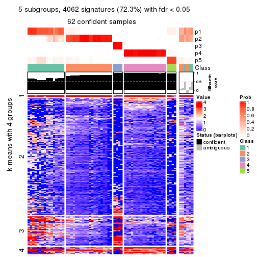
get_signatures(res, k = 6, scale_rows = FALSE)
Compare the overlap of signatures from different k:
compare_signatures(res)
get_signature() returns a data frame invisibly. TO get the list of signatures, the function
call should be assigned to a variable explicitly. In following code, if plot argument is set
to FALSE, no heatmap is plotted while only the differential analysis is performed.
# code only for demonstration
tb = get_signature(res, k = ..., plot = FALSE)
An example of the output of tb is:
#> which_row fdr mean_1 mean_2 scaled_mean_1 scaled_mean_2 km
#> 1 38 0.042760348 8.373488 9.131774 -0.5533452 0.5164555 1
#> 2 40 0.018707592 7.106213 8.469186 -0.6173731 0.5762149 1
#> 3 55 0.019134737 10.221463 11.207825 -0.6159697 0.5749050 1
#> 4 59 0.006059896 5.921854 7.869574 -0.6899429 0.6439467 1
#> 5 60 0.018055526 8.928898 10.211722 -0.6204761 0.5791110 1
#> 6 98 0.009384629 15.714769 14.887706 0.6635654 -0.6193277 2
...
The columns in tb are:
which_row: row indices corresponding to the input matrix.fdr: FDR for the differential test. mean_x: The mean value in group x.scaled_mean_x: The mean value in group x after rows are scaled.km: Row groups if k-means clustering is applied to rows.UMAP plot which shows how samples are separated.
dimension_reduction(res, k = 2, method = "UMAP")
dimension_reduction(res, k = 3, method = "UMAP")
dimension_reduction(res, k = 4, method = "UMAP")
dimension_reduction(res, k = 5, method = "UMAP")
dimension_reduction(res, k = 6, method = "UMAP")
Following heatmap shows how subgroups are split when increasing k:
collect_classes(res)
If matrix rows can be associated to genes, consider to use functional_enrichment(res,
...) to perform function enrichment for the signature genes. See this vignette for more detailed explanations.
The object with results only for a single top-value method and a single partition method can be extracted as:
res = res_list["ATC", "hclust"]
# you can also extract it by
# res = res_list["ATC:hclust"]
A summary of res and all the functions that can be applied to it:
res
#> A 'ConsensusPartition' object with k = 2, 3, 4, 5, 6.
#> On a matrix with 5619 rows and 68 columns.
#> Top rows (562, 1124, 1686, 2248, 2810) are extracted by 'ATC' method.
#> Subgroups are detected by 'hclust' method.
#> Performed in total 1250 partitions by row resampling.
#> Best k for subgroups seems to be 4.
#>
#> Following methods can be applied to this 'ConsensusPartition' object:
#> [1] "cola_report" "collect_classes" "collect_plots"
#> [4] "collect_stats" "colnames" "compare_signatures"
#> [7] "consensus_heatmap" "dimension_reduction" "functional_enrichment"
#> [10] "get_anno_col" "get_anno" "get_classes"
#> [13] "get_consensus" "get_matrix" "get_membership"
#> [16] "get_param" "get_signatures" "get_stats"
#> [19] "is_best_k" "is_stable_k" "membership_heatmap"
#> [22] "ncol" "nrow" "plot_ecdf"
#> [25] "rownames" "select_partition_number" "show"
#> [28] "suggest_best_k" "test_to_known_factors"
collect_plots() function collects all the plots made from res for all k (number of partitions)
into one single page to provide an easy and fast comparison between different k.
collect_plots(res)

The plots are:
k and the heatmap of
predicted classes for each k.k.k.k.All the plots in panels can be made by individual functions and they are plotted later in this section.
select_partition_number() produces several plots showing different
statistics for choosing “optimized” k. There are following statistics:
k;k, the area increased is defined as \(A_k - A_{k-1}\).The detailed explanations of these statistics can be found in the cola vignette.
Generally speaking, lower PAC score, higher mean silhouette score or higher
concordance corresponds to better partition. Rand index and Jaccard index
measure how similar the current partition is compared to partition with k-1.
If they are too similar, we won't accept k is better than k-1.
select_partition_number(res)
The numeric values for all these statistics can be obtained by get_stats().
get_stats(res)
#> k 1-PAC mean_silhouette concordance area_increased Rand Jaccard
#> 2 2 0.562 0.835 0.908 0.22905 0.888 0.888
#> 3 3 0.681 0.852 0.921 0.35901 0.895 0.881
#> 4 4 1.000 0.985 0.991 0.76859 0.668 0.576
#> 5 5 0.966 0.974 0.987 0.00461 0.998 0.996
#> 6 6 0.966 0.955 0.992 0.00103 1.000 0.999
suggest_best_k() suggests the best \(k\) based on these statistics. The rules are as follows:
suggest_best_k(res)
#> [1] 4
Following shows the table of the partitions (You need to click the show/hide
code output link to see it). The membership matrix (columns with name p*)
is inferred by
clue::cl_consensus()
function with the SE method. Basically the value in the membership matrix
represents the probability to belong to a certain group. The finall class
label for an item is determined with the group with highest probability it
belongs to.
In get_classes() function, the entropy is calculated from the membership
matrix and the silhouette score is calculated from the consensus matrix.
cbind(get_classes(res, k = 2), get_membership(res, k = 2))
#> class entropy silhouette p1 p2
#> SRR1035618 2 0.000 0.892 0.000 1.000
#> SRR1035619 2 0.000 0.892 0.000 1.000
#> SRR1035620 2 0.000 0.892 0.000 1.000
#> SRR1035621 2 0.000 0.892 0.000 1.000
#> SRR1035622 2 0.000 0.892 0.000 1.000
#> SRR1035623 2 0.000 0.892 0.000 1.000
#> SRR1035626 2 0.000 0.892 0.000 1.000
#> SRR1035627 2 0.000 0.892 0.000 1.000
#> SRR1035628 2 0.000 0.892 0.000 1.000
#> SRR1035629 2 0.000 0.892 0.000 1.000
#> SRR1035624 2 0.000 0.892 0.000 1.000
#> SRR1035625 2 0.000 0.892 0.000 1.000
#> SRR1035630 2 0.000 0.892 0.000 1.000
#> SRR1035631 2 0.000 0.892 0.000 1.000
#> SRR1035632 2 0.760 0.749 0.220 0.780
#> SRR1035633 2 0.760 0.749 0.220 0.780
#> SRR1035634 2 0.760 0.749 0.220 0.780
#> SRR1035635 2 0.760 0.749 0.220 0.780
#> SRR1035636 2 0.000 0.892 0.000 1.000
#> SRR1035637 2 0.000 0.892 0.000 1.000
#> SRR1035638 2 0.000 0.892 0.000 1.000
#> SRR1035639 2 0.000 0.892 0.000 1.000
#> SRR1035640 2 0.844 0.724 0.272 0.728
#> SRR1035641 2 0.844 0.724 0.272 0.728
#> SRR1035642 2 0.000 0.892 0.000 1.000
#> SRR1035643 2 0.000 0.892 0.000 1.000
#> SRR1035644 2 0.000 0.892 0.000 1.000
#> SRR1035645 2 0.000 0.892 0.000 1.000
#> SRR1035646 2 0.000 0.892 0.000 1.000
#> SRR1035647 2 0.000 0.892 0.000 1.000
#> SRR1035648 2 0.000 0.892 0.000 1.000
#> SRR1035649 2 0.000 0.892 0.000 1.000
#> SRR1035654 2 0.844 0.724 0.272 0.728
#> SRR1035655 2 0.844 0.724 0.272 0.728
#> SRR1035656 2 0.844 0.724 0.272 0.728
#> SRR1035657 2 0.844 0.724 0.272 0.728
#> SRR1035650 2 0.000 0.892 0.000 1.000
#> SRR1035651 2 0.000 0.892 0.000 1.000
#> SRR1035652 2 0.000 0.892 0.000 1.000
#> SRR1035653 2 0.000 0.892 0.000 1.000
#> SRR1035660 2 0.000 0.892 0.000 1.000
#> SRR1035661 2 0.000 0.892 0.000 1.000
#> SRR1035662 2 0.000 0.892 0.000 1.000
#> SRR1035663 2 0.000 0.892 0.000 1.000
#> SRR1035658 2 0.000 0.892 0.000 1.000
#> SRR1035659 2 0.000 0.892 0.000 1.000
#> SRR1035666 1 0.000 1.000 1.000 0.000
#> SRR1035667 1 0.000 1.000 1.000 0.000
#> SRR1035668 1 0.000 1.000 1.000 0.000
#> SRR1035669 1 0.000 1.000 1.000 0.000
#> SRR1035664 2 0.000 0.892 0.000 1.000
#> SRR1035665 2 0.000 0.892 0.000 1.000
#> SRR1035670 2 0.844 0.724 0.272 0.728
#> SRR1035671 2 0.844 0.724 0.272 0.728
#> SRR1035672 2 0.844 0.724 0.272 0.728
#> SRR1035673 2 0.844 0.724 0.272 0.728
#> SRR1035674 2 0.844 0.724 0.272 0.728
#> SRR1035675 2 0.844 0.724 0.272 0.728
#> SRR1035676 2 0.844 0.724 0.272 0.728
#> SRR1035677 2 0.844 0.724 0.272 0.728
#> SRR1035682 2 0.000 0.892 0.000 1.000
#> SRR1035683 2 0.000 0.892 0.000 1.000
#> SRR1035684 2 0.000 0.892 0.000 1.000
#> SRR1035685 2 0.000 0.892 0.000 1.000
#> SRR1035678 2 0.969 0.554 0.396 0.604
#> SRR1035679 2 0.969 0.554 0.396 0.604
#> SRR1035680 2 0.969 0.554 0.396 0.604
#> SRR1035681 2 0.969 0.554 0.396 0.604
cbind(get_classes(res, k = 3), get_membership(res, k = 3))
#> class entropy silhouette p1 p2 p3
#> SRR1035618 2 0.000 0.899 0.000 1.000 0
#> SRR1035619 2 0.000 0.899 0.000 1.000 0
#> SRR1035620 2 0.000 0.899 0.000 1.000 0
#> SRR1035621 2 0.000 0.899 0.000 1.000 0
#> SRR1035622 2 0.000 0.899 0.000 1.000 0
#> SRR1035623 2 0.000 0.899 0.000 1.000 0
#> SRR1035626 2 0.000 0.899 0.000 1.000 0
#> SRR1035627 2 0.000 0.899 0.000 1.000 0
#> SRR1035628 2 0.000 0.899 0.000 1.000 0
#> SRR1035629 2 0.000 0.899 0.000 1.000 0
#> SRR1035624 2 0.000 0.899 0.000 1.000 0
#> SRR1035625 2 0.000 0.899 0.000 1.000 0
#> SRR1035630 2 0.000 0.899 0.000 1.000 0
#> SRR1035631 2 0.000 0.899 0.000 1.000 0
#> SRR1035632 3 0.000 1.000 0.000 0.000 1
#> SRR1035633 3 0.000 1.000 0.000 0.000 1
#> SRR1035634 3 0.000 1.000 0.000 0.000 1
#> SRR1035635 3 0.000 1.000 0.000 0.000 1
#> SRR1035636 2 0.000 0.899 0.000 1.000 0
#> SRR1035637 2 0.000 0.899 0.000 1.000 0
#> SRR1035638 2 0.000 0.899 0.000 1.000 0
#> SRR1035639 2 0.000 0.899 0.000 1.000 0
#> SRR1035640 2 0.533 0.717 0.272 0.728 0
#> SRR1035641 2 0.533 0.717 0.272 0.728 0
#> SRR1035642 2 0.000 0.899 0.000 1.000 0
#> SRR1035643 2 0.000 0.899 0.000 1.000 0
#> SRR1035644 2 0.000 0.899 0.000 1.000 0
#> SRR1035645 2 0.000 0.899 0.000 1.000 0
#> SRR1035646 2 0.000 0.899 0.000 1.000 0
#> SRR1035647 2 0.000 0.899 0.000 1.000 0
#> SRR1035648 2 0.000 0.899 0.000 1.000 0
#> SRR1035649 2 0.000 0.899 0.000 1.000 0
#> SRR1035654 2 0.533 0.717 0.272 0.728 0
#> SRR1035655 2 0.533 0.717 0.272 0.728 0
#> SRR1035656 2 0.533 0.717 0.272 0.728 0
#> SRR1035657 2 0.533 0.717 0.272 0.728 0
#> SRR1035650 2 0.000 0.899 0.000 1.000 0
#> SRR1035651 2 0.000 0.899 0.000 1.000 0
#> SRR1035652 2 0.000 0.899 0.000 1.000 0
#> SRR1035653 2 0.000 0.899 0.000 1.000 0
#> SRR1035660 2 0.000 0.899 0.000 1.000 0
#> SRR1035661 2 0.000 0.899 0.000 1.000 0
#> SRR1035662 2 0.000 0.899 0.000 1.000 0
#> SRR1035663 2 0.000 0.899 0.000 1.000 0
#> SRR1035658 2 0.000 0.899 0.000 1.000 0
#> SRR1035659 2 0.000 0.899 0.000 1.000 0
#> SRR1035666 1 0.000 1.000 1.000 0.000 0
#> SRR1035667 1 0.000 1.000 1.000 0.000 0
#> SRR1035668 1 0.000 1.000 1.000 0.000 0
#> SRR1035669 1 0.000 1.000 1.000 0.000 0
#> SRR1035664 2 0.000 0.899 0.000 1.000 0
#> SRR1035665 2 0.000 0.899 0.000 1.000 0
#> SRR1035670 2 0.533 0.717 0.272 0.728 0
#> SRR1035671 2 0.533 0.717 0.272 0.728 0
#> SRR1035672 2 0.533 0.717 0.272 0.728 0
#> SRR1035673 2 0.533 0.717 0.272 0.728 0
#> SRR1035674 2 0.533 0.717 0.272 0.728 0
#> SRR1035675 2 0.533 0.717 0.272 0.728 0
#> SRR1035676 2 0.533 0.717 0.272 0.728 0
#> SRR1035677 2 0.533 0.717 0.272 0.728 0
#> SRR1035682 2 0.000 0.899 0.000 1.000 0
#> SRR1035683 2 0.000 0.899 0.000 1.000 0
#> SRR1035684 2 0.000 0.899 0.000 1.000 0
#> SRR1035685 2 0.000 0.899 0.000 1.000 0
#> SRR1035678 2 0.611 0.531 0.396 0.604 0
#> SRR1035679 2 0.611 0.531 0.396 0.604 0
#> SRR1035680 2 0.611 0.531 0.396 0.604 0
#> SRR1035681 2 0.611 0.531 0.396 0.604 0
cbind(get_classes(res, k = 4), get_membership(res, k = 4))
#> class entropy silhouette p1 p2 p3 p4
#> SRR1035618 2 0.0000 1.000 0.000 1.000 0.000 0.000
#> SRR1035619 2 0.0000 1.000 0.000 1.000 0.000 0.000
#> SRR1035620 2 0.0000 1.000 0.000 1.000 0.000 0.000
#> SRR1035621 2 0.0000 1.000 0.000 1.000 0.000 0.000
#> SRR1035622 2 0.0000 1.000 0.000 1.000 0.000 0.000
#> SRR1035623 2 0.0000 1.000 0.000 1.000 0.000 0.000
#> SRR1035626 2 0.0000 1.000 0.000 1.000 0.000 0.000
#> SRR1035627 2 0.0000 1.000 0.000 1.000 0.000 0.000
#> SRR1035628 2 0.0000 1.000 0.000 1.000 0.000 0.000
#> SRR1035629 2 0.0000 1.000 0.000 1.000 0.000 0.000
#> SRR1035624 2 0.0000 1.000 0.000 1.000 0.000 0.000
#> SRR1035625 2 0.0000 1.000 0.000 1.000 0.000 0.000
#> SRR1035630 2 0.0000 1.000 0.000 1.000 0.000 0.000
#> SRR1035631 2 0.0000 1.000 0.000 1.000 0.000 0.000
#> SRR1035632 3 0.0188 0.998 0.004 0.000 0.996 0.000
#> SRR1035633 3 0.0188 0.998 0.004 0.000 0.996 0.000
#> SRR1035634 3 0.0000 0.998 0.000 0.000 1.000 0.000
#> SRR1035635 3 0.0000 0.998 0.000 0.000 1.000 0.000
#> SRR1035636 2 0.0000 1.000 0.000 1.000 0.000 0.000
#> SRR1035637 2 0.0000 1.000 0.000 1.000 0.000 0.000
#> SRR1035638 2 0.0000 1.000 0.000 1.000 0.000 0.000
#> SRR1035639 2 0.0000 1.000 0.000 1.000 0.000 0.000
#> SRR1035640 1 0.0188 0.963 0.996 0.004 0.000 0.000
#> SRR1035641 1 0.0188 0.963 0.996 0.004 0.000 0.000
#> SRR1035642 2 0.0000 1.000 0.000 1.000 0.000 0.000
#> SRR1035643 2 0.0000 1.000 0.000 1.000 0.000 0.000
#> SRR1035644 2 0.0000 1.000 0.000 1.000 0.000 0.000
#> SRR1035645 2 0.0000 1.000 0.000 1.000 0.000 0.000
#> SRR1035646 2 0.0000 1.000 0.000 1.000 0.000 0.000
#> SRR1035647 2 0.0000 1.000 0.000 1.000 0.000 0.000
#> SRR1035648 2 0.0000 1.000 0.000 1.000 0.000 0.000
#> SRR1035649 2 0.0000 1.000 0.000 1.000 0.000 0.000
#> SRR1035654 1 0.0469 0.964 0.988 0.012 0.000 0.000
#> SRR1035655 1 0.0469 0.964 0.988 0.012 0.000 0.000
#> SRR1035656 1 0.0469 0.964 0.988 0.012 0.000 0.000
#> SRR1035657 1 0.0469 0.964 0.988 0.012 0.000 0.000
#> SRR1035650 2 0.0000 1.000 0.000 1.000 0.000 0.000
#> SRR1035651 2 0.0000 1.000 0.000 1.000 0.000 0.000
#> SRR1035652 2 0.0000 1.000 0.000 1.000 0.000 0.000
#> SRR1035653 2 0.0000 1.000 0.000 1.000 0.000 0.000
#> SRR1035660 2 0.0000 1.000 0.000 1.000 0.000 0.000
#> SRR1035661 2 0.0000 1.000 0.000 1.000 0.000 0.000
#> SRR1035662 2 0.0000 1.000 0.000 1.000 0.000 0.000
#> SRR1035663 2 0.0000 1.000 0.000 1.000 0.000 0.000
#> SRR1035658 2 0.0000 1.000 0.000 1.000 0.000 0.000
#> SRR1035659 2 0.0000 1.000 0.000 1.000 0.000 0.000
#> SRR1035666 4 0.0000 1.000 0.000 0.000 0.000 1.000
#> SRR1035667 4 0.0000 1.000 0.000 0.000 0.000 1.000
#> SRR1035668 4 0.0000 1.000 0.000 0.000 0.000 1.000
#> SRR1035669 4 0.0000 1.000 0.000 0.000 0.000 1.000
#> SRR1035664 2 0.0000 1.000 0.000 1.000 0.000 0.000
#> SRR1035665 2 0.0000 1.000 0.000 1.000 0.000 0.000
#> SRR1035670 1 0.0469 0.964 0.988 0.012 0.000 0.000
#> SRR1035671 1 0.0469 0.964 0.988 0.012 0.000 0.000
#> SRR1035672 1 0.0469 0.964 0.988 0.012 0.000 0.000
#> SRR1035673 1 0.0469 0.964 0.988 0.012 0.000 0.000
#> SRR1035674 1 0.0188 0.963 0.996 0.004 0.000 0.000
#> SRR1035675 1 0.0188 0.963 0.996 0.004 0.000 0.000
#> SRR1035676 1 0.0188 0.963 0.996 0.004 0.000 0.000
#> SRR1035677 1 0.0188 0.963 0.996 0.004 0.000 0.000
#> SRR1035682 2 0.0000 1.000 0.000 1.000 0.000 0.000
#> SRR1035683 2 0.0000 1.000 0.000 1.000 0.000 0.000
#> SRR1035684 2 0.0000 1.000 0.000 1.000 0.000 0.000
#> SRR1035685 2 0.0000 1.000 0.000 1.000 0.000 0.000
#> SRR1035678 1 0.2704 0.881 0.876 0.000 0.000 0.124
#> SRR1035679 1 0.2704 0.881 0.876 0.000 0.000 0.124
#> SRR1035680 1 0.2704 0.881 0.876 0.000 0.000 0.124
#> SRR1035681 1 0.2704 0.881 0.876 0.000 0.000 0.124
cbind(get_classes(res, k = 5), get_membership(res, k = 5))
#> class entropy silhouette p1 p2 p3 p4 p5
#> SRR1035618 2 0.000 1.000 0.000 1.000 0.000 0.000 0.000
#> SRR1035619 2 0.000 1.000 0.000 1.000 0.000 0.000 0.000
#> SRR1035620 2 0.000 1.000 0.000 1.000 0.000 0.000 0.000
#> SRR1035621 2 0.000 1.000 0.000 1.000 0.000 0.000 0.000
#> SRR1035622 2 0.000 1.000 0.000 1.000 0.000 0.000 0.000
#> SRR1035623 2 0.000 1.000 0.000 1.000 0.000 0.000 0.000
#> SRR1035626 2 0.000 1.000 0.000 1.000 0.000 0.000 0.000
#> SRR1035627 2 0.000 1.000 0.000 1.000 0.000 0.000 0.000
#> SRR1035628 2 0.000 1.000 0.000 1.000 0.000 0.000 0.000
#> SRR1035629 2 0.000 1.000 0.000 1.000 0.000 0.000 0.000
#> SRR1035624 2 0.000 1.000 0.000 1.000 0.000 0.000 0.000
#> SRR1035625 2 0.000 1.000 0.000 1.000 0.000 0.000 0.000
#> SRR1035630 2 0.000 1.000 0.000 1.000 0.000 0.000 0.000
#> SRR1035631 2 0.000 1.000 0.000 1.000 0.000 0.000 0.000
#> SRR1035632 3 0.000 1.000 0.000 0.000 1.000 0.000 0.000
#> SRR1035633 3 0.000 1.000 0.000 0.000 1.000 0.000 0.000
#> SRR1035634 4 0.000 0.658 0.000 0.000 0.000 1.000 0.000
#> SRR1035635 4 0.382 0.563 0.000 0.000 0.304 0.696 0.000
#> SRR1035636 2 0.000 1.000 0.000 1.000 0.000 0.000 0.000
#> SRR1035637 2 0.000 1.000 0.000 1.000 0.000 0.000 0.000
#> SRR1035638 2 0.000 1.000 0.000 1.000 0.000 0.000 0.000
#> SRR1035639 2 0.000 1.000 0.000 1.000 0.000 0.000 0.000
#> SRR1035640 1 0.000 0.961 1.000 0.000 0.000 0.000 0.000
#> SRR1035641 1 0.000 0.961 1.000 0.000 0.000 0.000 0.000
#> SRR1035642 2 0.000 1.000 0.000 1.000 0.000 0.000 0.000
#> SRR1035643 2 0.000 1.000 0.000 1.000 0.000 0.000 0.000
#> SRR1035644 2 0.000 1.000 0.000 1.000 0.000 0.000 0.000
#> SRR1035645 2 0.000 1.000 0.000 1.000 0.000 0.000 0.000
#> SRR1035646 2 0.000 1.000 0.000 1.000 0.000 0.000 0.000
#> SRR1035647 2 0.000 1.000 0.000 1.000 0.000 0.000 0.000
#> SRR1035648 2 0.000 1.000 0.000 1.000 0.000 0.000 0.000
#> SRR1035649 2 0.000 1.000 0.000 1.000 0.000 0.000 0.000
#> SRR1035654 1 0.029 0.962 0.992 0.008 0.000 0.000 0.000
#> SRR1035655 1 0.029 0.962 0.992 0.008 0.000 0.000 0.000
#> SRR1035656 1 0.029 0.962 0.992 0.008 0.000 0.000 0.000
#> SRR1035657 1 0.029 0.962 0.992 0.008 0.000 0.000 0.000
#> SRR1035650 2 0.000 1.000 0.000 1.000 0.000 0.000 0.000
#> SRR1035651 2 0.000 1.000 0.000 1.000 0.000 0.000 0.000
#> SRR1035652 2 0.000 1.000 0.000 1.000 0.000 0.000 0.000
#> SRR1035653 2 0.000 1.000 0.000 1.000 0.000 0.000 0.000
#> SRR1035660 2 0.000 1.000 0.000 1.000 0.000 0.000 0.000
#> SRR1035661 2 0.000 1.000 0.000 1.000 0.000 0.000 0.000
#> SRR1035662 2 0.000 1.000 0.000 1.000 0.000 0.000 0.000
#> SRR1035663 2 0.000 1.000 0.000 1.000 0.000 0.000 0.000
#> SRR1035658 2 0.000 1.000 0.000 1.000 0.000 0.000 0.000
#> SRR1035659 2 0.000 1.000 0.000 1.000 0.000 0.000 0.000
#> SRR1035666 5 0.000 1.000 0.000 0.000 0.000 0.000 1.000
#> SRR1035667 5 0.000 1.000 0.000 0.000 0.000 0.000 1.000
#> SRR1035668 5 0.000 1.000 0.000 0.000 0.000 0.000 1.000
#> SRR1035669 5 0.000 1.000 0.000 0.000 0.000 0.000 1.000
#> SRR1035664 2 0.000 1.000 0.000 1.000 0.000 0.000 0.000
#> SRR1035665 2 0.000 1.000 0.000 1.000 0.000 0.000 0.000
#> SRR1035670 1 0.029 0.962 0.992 0.008 0.000 0.000 0.000
#> SRR1035671 1 0.029 0.962 0.992 0.008 0.000 0.000 0.000
#> SRR1035672 1 0.029 0.962 0.992 0.008 0.000 0.000 0.000
#> SRR1035673 1 0.029 0.962 0.992 0.008 0.000 0.000 0.000
#> SRR1035674 1 0.000 0.961 1.000 0.000 0.000 0.000 0.000
#> SRR1035675 1 0.000 0.961 1.000 0.000 0.000 0.000 0.000
#> SRR1035676 1 0.000 0.961 1.000 0.000 0.000 0.000 0.000
#> SRR1035677 1 0.000 0.961 1.000 0.000 0.000 0.000 0.000
#> SRR1035682 2 0.000 1.000 0.000 1.000 0.000 0.000 0.000
#> SRR1035683 2 0.000 1.000 0.000 1.000 0.000 0.000 0.000
#> SRR1035684 2 0.000 1.000 0.000 1.000 0.000 0.000 0.000
#> SRR1035685 2 0.000 1.000 0.000 1.000 0.000 0.000 0.000
#> SRR1035678 1 0.233 0.880 0.876 0.000 0.000 0.000 0.124
#> SRR1035679 1 0.233 0.880 0.876 0.000 0.000 0.000 0.124
#> SRR1035680 1 0.233 0.880 0.876 0.000 0.000 0.000 0.124
#> SRR1035681 1 0.233 0.880 0.876 0.000 0.000 0.000 0.124
cbind(get_classes(res, k = 6), get_membership(res, k = 6))
#> class entropy silhouette p1 p2 p3 p4 p5 p6
#> SRR1035618 2 0.0000 1.000 0.000 1.000 0.000 0.000 0.000 0.000
#> SRR1035619 2 0.0000 1.000 0.000 1.000 0.000 0.000 0.000 0.000
#> SRR1035620 2 0.0000 1.000 0.000 1.000 0.000 0.000 0.000 0.000
#> SRR1035621 2 0.0000 1.000 0.000 1.000 0.000 0.000 0.000 0.000
#> SRR1035622 2 0.0000 1.000 0.000 1.000 0.000 0.000 0.000 0.000
#> SRR1035623 2 0.0000 1.000 0.000 1.000 0.000 0.000 0.000 0.000
#> SRR1035626 2 0.0000 1.000 0.000 1.000 0.000 0.000 0.000 0.000
#> SRR1035627 2 0.0000 1.000 0.000 1.000 0.000 0.000 0.000 0.000
#> SRR1035628 2 0.0000 1.000 0.000 1.000 0.000 0.000 0.000 0.000
#> SRR1035629 2 0.0000 1.000 0.000 1.000 0.000 0.000 0.000 0.000
#> SRR1035624 2 0.0000 1.000 0.000 1.000 0.000 0.000 0.000 0.000
#> SRR1035625 2 0.0000 1.000 0.000 1.000 0.000 0.000 0.000 0.000
#> SRR1035630 2 0.0000 1.000 0.000 1.000 0.000 0.000 0.000 0.000
#> SRR1035631 2 0.0000 1.000 0.000 1.000 0.000 0.000 0.000 0.000
#> SRR1035632 3 0.0146 0.997 0.000 0.000 0.996 0.000 0.000 0.004
#> SRR1035633 3 0.0000 0.997 0.000 0.000 1.000 0.000 0.000 0.000
#> SRR1035634 6 0.0146 0.000 0.000 0.000 0.000 0.004 0.000 0.996
#> SRR1035635 4 0.0000 0.000 0.000 0.000 0.000 1.000 0.000 0.000
#> SRR1035636 2 0.0000 1.000 0.000 1.000 0.000 0.000 0.000 0.000
#> SRR1035637 2 0.0000 1.000 0.000 1.000 0.000 0.000 0.000 0.000
#> SRR1035638 2 0.0000 1.000 0.000 1.000 0.000 0.000 0.000 0.000
#> SRR1035639 2 0.0000 1.000 0.000 1.000 0.000 0.000 0.000 0.000
#> SRR1035640 1 0.0000 0.961 1.000 0.000 0.000 0.000 0.000 0.000
#> SRR1035641 1 0.0000 0.961 1.000 0.000 0.000 0.000 0.000 0.000
#> SRR1035642 2 0.0000 1.000 0.000 1.000 0.000 0.000 0.000 0.000
#> SRR1035643 2 0.0000 1.000 0.000 1.000 0.000 0.000 0.000 0.000
#> SRR1035644 2 0.0000 1.000 0.000 1.000 0.000 0.000 0.000 0.000
#> SRR1035645 2 0.0000 1.000 0.000 1.000 0.000 0.000 0.000 0.000
#> SRR1035646 2 0.0000 1.000 0.000 1.000 0.000 0.000 0.000 0.000
#> SRR1035647 2 0.0000 1.000 0.000 1.000 0.000 0.000 0.000 0.000
#> SRR1035648 2 0.0000 1.000 0.000 1.000 0.000 0.000 0.000 0.000
#> SRR1035649 2 0.0000 1.000 0.000 1.000 0.000 0.000 0.000 0.000
#> SRR1035654 1 0.0260 0.962 0.992 0.008 0.000 0.000 0.000 0.000
#> SRR1035655 1 0.0260 0.962 0.992 0.008 0.000 0.000 0.000 0.000
#> SRR1035656 1 0.0260 0.962 0.992 0.008 0.000 0.000 0.000 0.000
#> SRR1035657 1 0.0260 0.962 0.992 0.008 0.000 0.000 0.000 0.000
#> SRR1035650 2 0.0000 1.000 0.000 1.000 0.000 0.000 0.000 0.000
#> SRR1035651 2 0.0000 1.000 0.000 1.000 0.000 0.000 0.000 0.000
#> SRR1035652 2 0.0000 1.000 0.000 1.000 0.000 0.000 0.000 0.000
#> SRR1035653 2 0.0000 1.000 0.000 1.000 0.000 0.000 0.000 0.000
#> SRR1035660 2 0.0000 1.000 0.000 1.000 0.000 0.000 0.000 0.000
#> SRR1035661 2 0.0000 1.000 0.000 1.000 0.000 0.000 0.000 0.000
#> SRR1035662 2 0.0000 1.000 0.000 1.000 0.000 0.000 0.000 0.000
#> SRR1035663 2 0.0000 1.000 0.000 1.000 0.000 0.000 0.000 0.000
#> SRR1035658 2 0.0000 1.000 0.000 1.000 0.000 0.000 0.000 0.000
#> SRR1035659 2 0.0000 1.000 0.000 1.000 0.000 0.000 0.000 0.000
#> SRR1035666 5 0.0000 1.000 0.000 0.000 0.000 0.000 1.000 0.000
#> SRR1035667 5 0.0000 1.000 0.000 0.000 0.000 0.000 1.000 0.000
#> SRR1035668 5 0.0000 1.000 0.000 0.000 0.000 0.000 1.000 0.000
#> SRR1035669 5 0.0000 1.000 0.000 0.000 0.000 0.000 1.000 0.000
#> SRR1035664 2 0.0000 1.000 0.000 1.000 0.000 0.000 0.000 0.000
#> SRR1035665 2 0.0000 1.000 0.000 1.000 0.000 0.000 0.000 0.000
#> SRR1035670 1 0.0260 0.962 0.992 0.008 0.000 0.000 0.000 0.000
#> SRR1035671 1 0.0260 0.962 0.992 0.008 0.000 0.000 0.000 0.000
#> SRR1035672 1 0.0260 0.962 0.992 0.008 0.000 0.000 0.000 0.000
#> SRR1035673 1 0.0260 0.962 0.992 0.008 0.000 0.000 0.000 0.000
#> SRR1035674 1 0.0000 0.961 1.000 0.000 0.000 0.000 0.000 0.000
#> SRR1035675 1 0.0000 0.961 1.000 0.000 0.000 0.000 0.000 0.000
#> SRR1035676 1 0.0000 0.961 1.000 0.000 0.000 0.000 0.000 0.000
#> SRR1035677 1 0.0000 0.961 1.000 0.000 0.000 0.000 0.000 0.000
#> SRR1035682 2 0.0000 1.000 0.000 1.000 0.000 0.000 0.000 0.000
#> SRR1035683 2 0.0000 1.000 0.000 1.000 0.000 0.000 0.000 0.000
#> SRR1035684 2 0.0000 1.000 0.000 1.000 0.000 0.000 0.000 0.000
#> SRR1035685 2 0.0000 1.000 0.000 1.000 0.000 0.000 0.000 0.000
#> SRR1035678 1 0.2092 0.878 0.876 0.000 0.000 0.000 0.124 0.000
#> SRR1035679 1 0.2092 0.878 0.876 0.000 0.000 0.000 0.124 0.000
#> SRR1035680 1 0.2092 0.878 0.876 0.000 0.000 0.000 0.124 0.000
#> SRR1035681 1 0.2092 0.878 0.876 0.000 0.000 0.000 0.124 0.000
Heatmaps for the consensus matrix. It visualizes the probability of two samples to be in a same group.
consensus_heatmap(res, k = 2)
consensus_heatmap(res, k = 3)
consensus_heatmap(res, k = 4)
consensus_heatmap(res, k = 5)
consensus_heatmap(res, k = 6)
Heatmaps for the membership of samples in all partitions to see how consistent they are:
membership_heatmap(res, k = 2)
membership_heatmap(res, k = 3)
membership_heatmap(res, k = 4)
membership_heatmap(res, k = 5)
membership_heatmap(res, k = 6)
As soon as we have had the classes for columns, we can look for signatures which are significantly different between classes which can be candidate marks for certain classes. Following are the heatmaps for signatures.
Signature heatmaps where rows are scaled:
get_signatures(res, k = 2)
get_signatures(res, k = 3)
get_signatures(res, k = 4)

get_signatures(res, k = 5)
get_signatures(res, k = 6)
Signature heatmaps where rows are not scaled:
get_signatures(res, k = 2, scale_rows = FALSE)

get_signatures(res, k = 3, scale_rows = FALSE)
get_signatures(res, k = 4, scale_rows = FALSE)

get_signatures(res, k = 5, scale_rows = FALSE)
get_signatures(res, k = 6, scale_rows = FALSE)
Compare the overlap of signatures from different k:
compare_signatures(res)
get_signature() returns a data frame invisibly. TO get the list of signatures, the function
call should be assigned to a variable explicitly. In following code, if plot argument is set
to FALSE, no heatmap is plotted while only the differential analysis is performed.
# code only for demonstration
tb = get_signature(res, k = ..., plot = FALSE)
An example of the output of tb is:
#> which_row fdr mean_1 mean_2 scaled_mean_1 scaled_mean_2 km
#> 1 38 0.042760348 8.373488 9.131774 -0.5533452 0.5164555 1
#> 2 40 0.018707592 7.106213 8.469186 -0.6173731 0.5762149 1
#> 3 55 0.019134737 10.221463 11.207825 -0.6159697 0.5749050 1
#> 4 59 0.006059896 5.921854 7.869574 -0.6899429 0.6439467 1
#> 5 60 0.018055526 8.928898 10.211722 -0.6204761 0.5791110 1
#> 6 98 0.009384629 15.714769 14.887706 0.6635654 -0.6193277 2
...
The columns in tb are:
which_row: row indices corresponding to the input matrix.fdr: FDR for the differential test. mean_x: The mean value in group x.scaled_mean_x: The mean value in group x after rows are scaled.km: Row groups if k-means clustering is applied to rows.UMAP plot which shows how samples are separated.
dimension_reduction(res, k = 2, method = "UMAP")
dimension_reduction(res, k = 3, method = "UMAP")
dimension_reduction(res, k = 4, method = "UMAP")
dimension_reduction(res, k = 5, method = "UMAP")
dimension_reduction(res, k = 6, method = "UMAP")
Following heatmap shows how subgroups are split when increasing k:
collect_classes(res)
If matrix rows can be associated to genes, consider to use functional_enrichment(res,
...) to perform function enrichment for the signature genes. See this vignette for more detailed explanations.
The object with results only for a single top-value method and a single partition method can be extracted as:
res = res_list["ATC", "kmeans"]
# you can also extract it by
# res = res_list["ATC:kmeans"]
A summary of res and all the functions that can be applied to it:
res
#> A 'ConsensusPartition' object with k = 2, 3, 4, 5, 6.
#> On a matrix with 5619 rows and 68 columns.
#> Top rows (562, 1124, 1686, 2248, 2810) are extracted by 'ATC' method.
#> Subgroups are detected by 'kmeans' method.
#> Performed in total 1250 partitions by row resampling.
#> Best k for subgroups seems to be 2.
#>
#> Following methods can be applied to this 'ConsensusPartition' object:
#> [1] "cola_report" "collect_classes" "collect_plots"
#> [4] "collect_stats" "colnames" "compare_signatures"
#> [7] "consensus_heatmap" "dimension_reduction" "functional_enrichment"
#> [10] "get_anno_col" "get_anno" "get_classes"
#> [13] "get_consensus" "get_matrix" "get_membership"
#> [16] "get_param" "get_signatures" "get_stats"
#> [19] "is_best_k" "is_stable_k" "membership_heatmap"
#> [22] "ncol" "nrow" "plot_ecdf"
#> [25] "rownames" "select_partition_number" "show"
#> [28] "suggest_best_k" "test_to_known_factors"
collect_plots() function collects all the plots made from res for all k (number of partitions)
into one single page to provide an easy and fast comparison between different k.
collect_plots(res)
The plots are:
k and the heatmap of
predicted classes for each k.k.k.k.All the plots in panels can be made by individual functions and they are plotted later in this section.
select_partition_number() produces several plots showing different
statistics for choosing “optimized” k. There are following statistics:
k;k, the area increased is defined as \(A_k - A_{k-1}\).The detailed explanations of these statistics can be found in the cola vignette.
Generally speaking, lower PAC score, higher mean silhouette score or higher
concordance corresponds to better partition. Rand index and Jaccard index
measure how similar the current partition is compared to partition with k-1.
If they are too similar, we won't accept k is better than k-1.
select_partition_number(res)
The numeric values for all these statistics can be obtained by get_stats().
get_stats(res)
#> k 1-PAC mean_silhouette concordance area_increased Rand Jaccard
#> 2 2 0.881 0.945 0.973 0.4155 0.605 0.605
#> 3 3 0.758 0.867 0.930 0.2399 0.782 0.660
#> 4 4 0.778 0.836 0.889 0.1506 0.993 0.985
#> 5 5 0.716 0.721 0.848 0.1315 0.933 0.852
#> 6 6 0.679 0.645 0.713 0.0953 0.853 0.616
suggest_best_k() suggests the best \(k\) based on these statistics. The rules are as follows:
suggest_best_k(res)
#> [1] 2
Following shows the table of the partitions (You need to click the show/hide
code output link to see it). The membership matrix (columns with name p*)
is inferred by
clue::cl_consensus()
function with the SE method. Basically the value in the membership matrix
represents the probability to belong to a certain group. The finall class
label for an item is determined with the group with highest probability it
belongs to.
In get_classes() function, the entropy is calculated from the membership
matrix and the silhouette score is calculated from the consensus matrix.
cbind(get_classes(res, k = 2), get_membership(res, k = 2))
#> class entropy silhouette p1 p2
#> SRR1035618 2 0.000 0.961 0.000 1.000
#> SRR1035619 2 0.000 0.961 0.000 1.000
#> SRR1035620 2 0.000 0.961 0.000 1.000
#> SRR1035621 2 0.000 0.961 0.000 1.000
#> SRR1035622 2 0.000 0.961 0.000 1.000
#> SRR1035623 2 0.000 0.961 0.000 1.000
#> SRR1035626 2 0.000 0.961 0.000 1.000
#> SRR1035627 2 0.000 0.961 0.000 1.000
#> SRR1035628 2 0.000 0.961 0.000 1.000
#> SRR1035629 2 0.000 0.961 0.000 1.000
#> SRR1035624 2 0.000 0.961 0.000 1.000
#> SRR1035625 2 0.000 0.961 0.000 1.000
#> SRR1035630 2 0.000 0.961 0.000 1.000
#> SRR1035631 2 0.000 0.961 0.000 1.000
#> SRR1035632 1 0.000 1.000 1.000 0.000
#> SRR1035633 1 0.000 1.000 1.000 0.000
#> SRR1035634 1 0.000 1.000 1.000 0.000
#> SRR1035635 1 0.000 1.000 1.000 0.000
#> SRR1035636 2 0.000 0.961 0.000 1.000
#> SRR1035637 2 0.000 0.961 0.000 1.000
#> SRR1035638 2 0.000 0.961 0.000 1.000
#> SRR1035639 2 0.000 0.961 0.000 1.000
#> SRR1035640 1 0.000 1.000 1.000 0.000
#> SRR1035641 1 0.000 1.000 1.000 0.000
#> SRR1035642 2 0.000 0.961 0.000 1.000
#> SRR1035643 2 0.000 0.961 0.000 1.000
#> SRR1035644 2 0.000 0.961 0.000 1.000
#> SRR1035645 2 0.000 0.961 0.000 1.000
#> SRR1035646 2 0.000 0.961 0.000 1.000
#> SRR1035647 2 0.000 0.961 0.000 1.000
#> SRR1035648 2 0.000 0.961 0.000 1.000
#> SRR1035649 2 0.000 0.961 0.000 1.000
#> SRR1035654 2 0.722 0.778 0.200 0.800
#> SRR1035655 2 0.722 0.778 0.200 0.800
#> SRR1035656 2 0.722 0.778 0.200 0.800
#> SRR1035657 2 0.722 0.778 0.200 0.800
#> SRR1035650 2 0.000 0.961 0.000 1.000
#> SRR1035651 2 0.000 0.961 0.000 1.000
#> SRR1035652 2 0.000 0.961 0.000 1.000
#> SRR1035653 2 0.000 0.961 0.000 1.000
#> SRR1035660 2 0.000 0.961 0.000 1.000
#> SRR1035661 2 0.000 0.961 0.000 1.000
#> SRR1035662 2 0.000 0.961 0.000 1.000
#> SRR1035663 2 0.000 0.961 0.000 1.000
#> SRR1035658 2 0.000 0.961 0.000 1.000
#> SRR1035659 2 0.000 0.961 0.000 1.000
#> SRR1035666 1 0.000 1.000 1.000 0.000
#> SRR1035667 1 0.000 1.000 1.000 0.000
#> SRR1035668 1 0.000 1.000 1.000 0.000
#> SRR1035669 1 0.000 1.000 1.000 0.000
#> SRR1035664 2 0.000 0.961 0.000 1.000
#> SRR1035665 2 0.000 0.961 0.000 1.000
#> SRR1035670 2 0.871 0.645 0.292 0.708
#> SRR1035671 2 0.850 0.672 0.276 0.724
#> SRR1035672 2 0.788 0.732 0.236 0.764
#> SRR1035673 2 0.788 0.732 0.236 0.764
#> SRR1035674 1 0.000 1.000 1.000 0.000
#> SRR1035675 1 0.000 1.000 1.000 0.000
#> SRR1035676 1 0.000 1.000 1.000 0.000
#> SRR1035677 1 0.000 1.000 1.000 0.000
#> SRR1035682 2 0.000 0.961 0.000 1.000
#> SRR1035683 2 0.000 0.961 0.000 1.000
#> SRR1035684 2 0.000 0.961 0.000 1.000
#> SRR1035685 2 0.000 0.961 0.000 1.000
#> SRR1035678 1 0.000 1.000 1.000 0.000
#> SRR1035679 1 0.000 1.000 1.000 0.000
#> SRR1035680 1 0.000 1.000 1.000 0.000
#> SRR1035681 1 0.000 1.000 1.000 0.000
cbind(get_classes(res, k = 3), get_membership(res, k = 3))
#> class entropy silhouette p1 p2 p3
#> SRR1035618 2 0.0000 0.998 0.000 1.000 0.000
#> SRR1035619 2 0.0000 0.998 0.000 1.000 0.000
#> SRR1035620 2 0.0000 0.998 0.000 1.000 0.000
#> SRR1035621 2 0.0000 0.998 0.000 1.000 0.000
#> SRR1035622 2 0.0000 0.998 0.000 1.000 0.000
#> SRR1035623 2 0.0000 0.998 0.000 1.000 0.000
#> SRR1035626 2 0.0237 0.997 0.000 0.996 0.004
#> SRR1035627 2 0.0237 0.997 0.000 0.996 0.004
#> SRR1035628 2 0.0237 0.997 0.000 0.996 0.004
#> SRR1035629 2 0.0237 0.997 0.000 0.996 0.004
#> SRR1035624 2 0.0000 0.998 0.000 1.000 0.000
#> SRR1035625 2 0.0000 0.998 0.000 1.000 0.000
#> SRR1035630 2 0.0237 0.997 0.000 0.996 0.004
#> SRR1035631 2 0.0237 0.997 0.000 0.996 0.004
#> SRR1035632 3 0.2356 0.711 0.072 0.000 0.928
#> SRR1035633 3 0.2356 0.711 0.072 0.000 0.928
#> SRR1035634 3 0.2356 0.711 0.072 0.000 0.928
#> SRR1035635 3 0.2356 0.711 0.072 0.000 0.928
#> SRR1035636 2 0.0237 0.997 0.000 0.996 0.004
#> SRR1035637 2 0.0237 0.997 0.000 0.996 0.004
#> SRR1035638 2 0.0237 0.997 0.000 0.996 0.004
#> SRR1035639 2 0.0237 0.997 0.000 0.996 0.004
#> SRR1035640 1 0.1753 0.662 0.952 0.000 0.048
#> SRR1035641 1 0.1753 0.662 0.952 0.000 0.048
#> SRR1035642 2 0.0000 0.998 0.000 1.000 0.000
#> SRR1035643 2 0.0000 0.998 0.000 1.000 0.000
#> SRR1035644 2 0.0000 0.998 0.000 1.000 0.000
#> SRR1035645 2 0.0000 0.998 0.000 1.000 0.000
#> SRR1035646 2 0.0000 0.998 0.000 1.000 0.000
#> SRR1035647 2 0.0000 0.998 0.000 1.000 0.000
#> SRR1035648 2 0.0000 0.998 0.000 1.000 0.000
#> SRR1035649 2 0.0000 0.998 0.000 1.000 0.000
#> SRR1035654 1 0.6124 0.669 0.744 0.220 0.036
#> SRR1035655 1 0.6124 0.669 0.744 0.220 0.036
#> SRR1035656 1 0.6124 0.669 0.744 0.220 0.036
#> SRR1035657 1 0.6124 0.669 0.744 0.220 0.036
#> SRR1035650 2 0.0237 0.997 0.000 0.996 0.004
#> SRR1035651 2 0.0237 0.997 0.000 0.996 0.004
#> SRR1035652 2 0.0237 0.997 0.000 0.996 0.004
#> SRR1035653 2 0.0237 0.997 0.000 0.996 0.004
#> SRR1035660 2 0.0000 0.998 0.000 1.000 0.000
#> SRR1035661 2 0.0000 0.998 0.000 1.000 0.000
#> SRR1035662 2 0.0000 0.998 0.000 1.000 0.000
#> SRR1035663 2 0.0000 0.998 0.000 1.000 0.000
#> SRR1035658 2 0.0000 0.998 0.000 1.000 0.000
#> SRR1035659 2 0.0000 0.998 0.000 1.000 0.000
#> SRR1035666 3 0.6192 0.616 0.420 0.000 0.580
#> SRR1035667 3 0.6192 0.616 0.420 0.000 0.580
#> SRR1035668 3 0.6192 0.616 0.420 0.000 0.580
#> SRR1035669 3 0.6192 0.616 0.420 0.000 0.580
#> SRR1035664 2 0.0000 0.998 0.000 1.000 0.000
#> SRR1035665 2 0.0000 0.998 0.000 1.000 0.000
#> SRR1035670 1 0.5842 0.689 0.768 0.196 0.036
#> SRR1035671 1 0.5842 0.689 0.768 0.196 0.036
#> SRR1035672 1 0.5891 0.687 0.764 0.200 0.036
#> SRR1035673 1 0.5891 0.687 0.764 0.200 0.036
#> SRR1035674 1 0.0000 0.682 1.000 0.000 0.000
#> SRR1035675 1 0.0000 0.682 1.000 0.000 0.000
#> SRR1035676 1 0.0000 0.682 1.000 0.000 0.000
#> SRR1035677 1 0.0000 0.682 1.000 0.000 0.000
#> SRR1035682 2 0.0237 0.997 0.000 0.996 0.004
#> SRR1035683 2 0.0237 0.997 0.000 0.996 0.004
#> SRR1035684 2 0.0237 0.997 0.000 0.996 0.004
#> SRR1035685 2 0.0237 0.997 0.000 0.996 0.004
#> SRR1035678 1 0.3816 0.569 0.852 0.000 0.148
#> SRR1035679 1 0.3816 0.569 0.852 0.000 0.148
#> SRR1035680 1 0.3816 0.569 0.852 0.000 0.148
#> SRR1035681 1 0.3816 0.569 0.852 0.000 0.148
cbind(get_classes(res, k = 4), get_membership(res, k = 4))
#> class entropy silhouette p1 p2 p3 p4
#> SRR1035618 2 0.0657 0.9229 0.000 0.984 0.012 0.004
#> SRR1035619 2 0.0657 0.9229 0.000 0.984 0.012 0.004
#> SRR1035620 2 0.0657 0.9229 0.000 0.984 0.012 0.004
#> SRR1035621 2 0.0657 0.9229 0.000 0.984 0.012 0.004
#> SRR1035622 2 0.0657 0.9229 0.000 0.984 0.012 0.004
#> SRR1035623 2 0.0657 0.9229 0.000 0.984 0.012 0.004
#> SRR1035626 2 0.4773 0.7539 0.008 0.708 0.004 0.280
#> SRR1035627 2 0.4799 0.7504 0.008 0.704 0.004 0.284
#> SRR1035628 2 0.5594 0.7200 0.040 0.672 0.004 0.284
#> SRR1035629 2 0.5594 0.7200 0.040 0.672 0.004 0.284
#> SRR1035624 2 0.0657 0.9229 0.000 0.984 0.012 0.004
#> SRR1035625 2 0.0657 0.9229 0.000 0.984 0.012 0.004
#> SRR1035630 2 0.1637 0.9202 0.000 0.940 0.000 0.060
#> SRR1035631 2 0.1637 0.9202 0.000 0.940 0.000 0.060
#> SRR1035632 3 0.0707 0.9964 0.020 0.000 0.980 0.000
#> SRR1035633 3 0.0895 0.9923 0.020 0.000 0.976 0.004
#> SRR1035634 3 0.0895 0.9951 0.020 0.000 0.976 0.004
#> SRR1035635 3 0.0707 0.9964 0.020 0.000 0.980 0.000
#> SRR1035636 2 0.1637 0.9202 0.000 0.940 0.000 0.060
#> SRR1035637 2 0.1637 0.9202 0.000 0.940 0.000 0.060
#> SRR1035638 2 0.1637 0.9202 0.000 0.940 0.000 0.060
#> SRR1035639 2 0.1637 0.9202 0.000 0.940 0.000 0.060
#> SRR1035640 1 0.2376 0.7711 0.916 0.000 0.016 0.068
#> SRR1035641 1 0.2376 0.7711 0.916 0.000 0.016 0.068
#> SRR1035642 2 0.0469 0.9235 0.000 0.988 0.012 0.000
#> SRR1035643 2 0.0469 0.9235 0.000 0.988 0.012 0.000
#> SRR1035644 2 0.0469 0.9235 0.000 0.988 0.012 0.000
#> SRR1035645 2 0.0469 0.9235 0.000 0.988 0.012 0.000
#> SRR1035646 2 0.0469 0.9246 0.000 0.988 0.000 0.012
#> SRR1035647 2 0.0469 0.9246 0.000 0.988 0.000 0.012
#> SRR1035648 2 0.0469 0.9246 0.000 0.988 0.000 0.012
#> SRR1035649 2 0.0469 0.9246 0.000 0.988 0.000 0.012
#> SRR1035654 1 0.2099 0.7953 0.936 0.040 0.020 0.004
#> SRR1035655 1 0.2099 0.7953 0.936 0.040 0.020 0.004
#> SRR1035656 1 0.2099 0.7953 0.936 0.040 0.020 0.004
#> SRR1035657 1 0.2099 0.7953 0.936 0.040 0.020 0.004
#> SRR1035650 2 0.1637 0.9202 0.000 0.940 0.000 0.060
#> SRR1035651 2 0.1637 0.9202 0.000 0.940 0.000 0.060
#> SRR1035652 2 0.1637 0.9202 0.000 0.940 0.000 0.060
#> SRR1035653 2 0.1637 0.9202 0.000 0.940 0.000 0.060
#> SRR1035660 2 0.4152 0.8456 0.048 0.840 0.012 0.100
#> SRR1035661 2 0.4152 0.8456 0.048 0.840 0.012 0.100
#> SRR1035662 2 0.3891 0.8545 0.036 0.852 0.012 0.100
#> SRR1035663 2 0.3891 0.8545 0.036 0.852 0.012 0.100
#> SRR1035658 2 0.5287 0.7789 0.116 0.772 0.012 0.100
#> SRR1035659 2 0.5287 0.7789 0.116 0.772 0.012 0.100
#> SRR1035666 4 0.6112 1.0000 0.128 0.000 0.196 0.676
#> SRR1035667 4 0.6112 1.0000 0.128 0.000 0.196 0.676
#> SRR1035668 4 0.6112 1.0000 0.128 0.000 0.196 0.676
#> SRR1035669 4 0.6112 1.0000 0.128 0.000 0.196 0.676
#> SRR1035664 2 0.0657 0.9229 0.000 0.984 0.012 0.004
#> SRR1035665 2 0.0657 0.9229 0.000 0.984 0.012 0.004
#> SRR1035670 1 0.1820 0.7987 0.944 0.036 0.020 0.000
#> SRR1035671 1 0.1820 0.7987 0.944 0.036 0.020 0.000
#> SRR1035672 1 0.1820 0.7987 0.944 0.036 0.020 0.000
#> SRR1035673 1 0.1820 0.7987 0.944 0.036 0.020 0.000
#> SRR1035674 1 0.1584 0.7882 0.952 0.000 0.012 0.036
#> SRR1035675 1 0.1584 0.7882 0.952 0.000 0.012 0.036
#> SRR1035676 1 0.1584 0.7882 0.952 0.000 0.012 0.036
#> SRR1035677 1 0.1584 0.7882 0.952 0.000 0.012 0.036
#> SRR1035682 2 0.1637 0.9202 0.000 0.940 0.000 0.060
#> SRR1035683 2 0.1637 0.9202 0.000 0.940 0.000 0.060
#> SRR1035684 2 0.1637 0.9202 0.000 0.940 0.000 0.060
#> SRR1035685 2 0.1637 0.9202 0.000 0.940 0.000 0.060
#> SRR1035678 1 0.6514 0.0975 0.516 0.000 0.076 0.408
#> SRR1035679 1 0.6514 0.0975 0.516 0.000 0.076 0.408
#> SRR1035680 1 0.6514 0.0975 0.516 0.000 0.076 0.408
#> SRR1035681 1 0.6514 0.0975 0.516 0.000 0.076 0.408
cbind(get_classes(res, k = 5), get_membership(res, k = 5))
#> class entropy silhouette p1 p2 p3 p4 p5
#> SRR1035618 2 0.0833 0.7730 0.000 0.976 0.004 0.004 0.016
#> SRR1035619 2 0.0833 0.7730 0.000 0.976 0.004 0.004 0.016
#> SRR1035620 2 0.0727 0.7743 0.000 0.980 0.004 0.004 0.012
#> SRR1035621 2 0.0727 0.7743 0.000 0.980 0.004 0.004 0.012
#> SRR1035622 2 0.0960 0.7716 0.000 0.972 0.004 0.008 0.016
#> SRR1035623 2 0.0960 0.7716 0.000 0.972 0.004 0.008 0.016
#> SRR1035626 4 0.3177 0.8943 0.000 0.208 0.000 0.792 0.000
#> SRR1035627 4 0.3630 0.8985 0.000 0.204 0.000 0.780 0.016
#> SRR1035628 4 0.2471 0.8964 0.000 0.136 0.000 0.864 0.000
#> SRR1035629 4 0.2583 0.8907 0.000 0.132 0.000 0.864 0.004
#> SRR1035624 2 0.0960 0.7716 0.000 0.972 0.004 0.008 0.016
#> SRR1035625 2 0.0960 0.7716 0.000 0.972 0.004 0.008 0.016
#> SRR1035630 2 0.3355 0.7383 0.000 0.804 0.000 0.184 0.012
#> SRR1035631 2 0.3355 0.7383 0.000 0.804 0.000 0.184 0.012
#> SRR1035632 3 0.0162 0.9880 0.000 0.000 0.996 0.000 0.004
#> SRR1035633 3 0.0162 0.9880 0.000 0.000 0.996 0.000 0.004
#> SRR1035634 3 0.0992 0.9865 0.000 0.000 0.968 0.024 0.008
#> SRR1035635 3 0.0898 0.9876 0.000 0.000 0.972 0.020 0.008
#> SRR1035636 2 0.3456 0.7365 0.000 0.800 0.000 0.184 0.016
#> SRR1035637 2 0.3456 0.7365 0.000 0.800 0.000 0.184 0.016
#> SRR1035638 2 0.3456 0.7365 0.000 0.800 0.000 0.184 0.016
#> SRR1035639 2 0.3456 0.7365 0.000 0.800 0.000 0.184 0.016
#> SRR1035640 1 0.1668 0.7895 0.940 0.000 0.000 0.028 0.032
#> SRR1035641 1 0.1668 0.7895 0.940 0.000 0.000 0.028 0.032
#> SRR1035642 2 0.0324 0.7771 0.000 0.992 0.004 0.000 0.004
#> SRR1035643 2 0.0324 0.7771 0.000 0.992 0.004 0.000 0.004
#> SRR1035644 2 0.0324 0.7771 0.000 0.992 0.004 0.000 0.004
#> SRR1035645 2 0.0324 0.7771 0.000 0.992 0.004 0.000 0.004
#> SRR1035646 2 0.1638 0.7764 0.000 0.932 0.000 0.064 0.004
#> SRR1035647 2 0.1638 0.7764 0.000 0.932 0.000 0.064 0.004
#> SRR1035648 2 0.1638 0.7764 0.000 0.932 0.000 0.064 0.004
#> SRR1035649 2 0.1638 0.7764 0.000 0.932 0.000 0.064 0.004
#> SRR1035654 1 0.2411 0.8120 0.884 0.008 0.000 0.108 0.000
#> SRR1035655 1 0.2411 0.8120 0.884 0.008 0.000 0.108 0.000
#> SRR1035656 1 0.2411 0.8120 0.884 0.008 0.000 0.108 0.000
#> SRR1035657 1 0.2411 0.8120 0.884 0.008 0.000 0.108 0.000
#> SRR1035650 2 0.3355 0.7383 0.000 0.804 0.000 0.184 0.012
#> SRR1035651 2 0.3355 0.7383 0.000 0.804 0.000 0.184 0.012
#> SRR1035652 2 0.3355 0.7383 0.000 0.804 0.000 0.184 0.012
#> SRR1035653 2 0.3355 0.7383 0.000 0.804 0.000 0.184 0.012
#> SRR1035660 2 0.4749 0.1583 0.004 0.620 0.000 0.356 0.020
#> SRR1035661 2 0.4749 0.1583 0.004 0.620 0.000 0.356 0.020
#> SRR1035662 2 0.4437 0.2672 0.000 0.664 0.000 0.316 0.020
#> SRR1035663 2 0.4400 0.2871 0.000 0.672 0.000 0.308 0.020
#> SRR1035658 2 0.6025 -0.0468 0.076 0.552 0.000 0.352 0.020
#> SRR1035659 2 0.6025 -0.0468 0.076 0.552 0.000 0.352 0.020
#> SRR1035666 5 0.2193 0.9943 0.028 0.000 0.044 0.008 0.920
#> SRR1035667 5 0.1907 0.9981 0.028 0.000 0.044 0.000 0.928
#> SRR1035668 5 0.1907 0.9981 0.028 0.000 0.044 0.000 0.928
#> SRR1035669 5 0.1907 0.9981 0.028 0.000 0.044 0.000 0.928
#> SRR1035664 2 0.0960 0.7716 0.000 0.972 0.004 0.008 0.016
#> SRR1035665 2 0.0960 0.7716 0.000 0.972 0.004 0.008 0.016
#> SRR1035670 1 0.2304 0.8129 0.892 0.008 0.000 0.100 0.000
#> SRR1035671 1 0.2304 0.8129 0.892 0.008 0.000 0.100 0.000
#> SRR1035672 1 0.2304 0.8129 0.892 0.008 0.000 0.100 0.000
#> SRR1035673 1 0.2304 0.8129 0.892 0.008 0.000 0.100 0.000
#> SRR1035674 1 0.0566 0.8048 0.984 0.000 0.000 0.004 0.012
#> SRR1035675 1 0.0566 0.8048 0.984 0.000 0.000 0.004 0.012
#> SRR1035676 1 0.0566 0.8048 0.984 0.000 0.000 0.004 0.012
#> SRR1035677 1 0.0566 0.8048 0.984 0.000 0.000 0.004 0.012
#> SRR1035682 2 0.3355 0.7383 0.000 0.804 0.000 0.184 0.012
#> SRR1035683 2 0.3355 0.7383 0.000 0.804 0.000 0.184 0.012
#> SRR1035684 2 0.3355 0.7383 0.000 0.804 0.000 0.184 0.012
#> SRR1035685 2 0.3355 0.7383 0.000 0.804 0.000 0.184 0.012
#> SRR1035678 1 0.5052 0.2841 0.552 0.000 0.000 0.036 0.412
#> SRR1035679 1 0.5052 0.2841 0.552 0.000 0.000 0.036 0.412
#> SRR1035680 1 0.5052 0.2841 0.552 0.000 0.000 0.036 0.412
#> SRR1035681 1 0.5052 0.2841 0.552 0.000 0.000 0.036 0.412
cbind(get_classes(res, k = 6), get_membership(res, k = 6))
#> class entropy silhouette p1 p2 p3 p4 p5 p6
#> SRR1035618 2 0.0146 0.610 0.000 0.996 0.000 0.004 0.000 0.000
#> SRR1035619 2 0.0146 0.610 0.000 0.996 0.000 0.004 0.000 0.000
#> SRR1035620 2 0.0972 0.587 0.000 0.964 0.000 0.028 0.008 0.000
#> SRR1035621 2 0.0972 0.587 0.000 0.964 0.000 0.028 0.008 0.000
#> SRR1035622 2 0.0000 0.612 0.000 1.000 0.000 0.000 0.000 0.000
#> SRR1035623 2 0.0000 0.612 0.000 1.000 0.000 0.000 0.000 0.000
#> SRR1035626 6 0.3270 0.917 0.000 0.060 0.000 0.120 0.000 0.820
#> SRR1035627 6 0.3395 0.916 0.000 0.060 0.000 0.132 0.000 0.808
#> SRR1035628 6 0.2398 0.918 0.000 0.020 0.000 0.104 0.000 0.876
#> SRR1035629 6 0.2398 0.918 0.000 0.020 0.000 0.104 0.000 0.876
#> SRR1035624 2 0.0000 0.612 0.000 1.000 0.000 0.000 0.000 0.000
#> SRR1035625 2 0.0000 0.612 0.000 1.000 0.000 0.000 0.000 0.000
#> SRR1035630 4 0.3847 0.986 0.000 0.456 0.000 0.544 0.000 0.000
#> SRR1035631 4 0.3847 0.986 0.000 0.456 0.000 0.544 0.000 0.000
#> SRR1035632 3 0.1624 0.969 0.000 0.000 0.936 0.040 0.004 0.020
#> SRR1035633 3 0.1624 0.969 0.000 0.000 0.936 0.040 0.004 0.020
#> SRR1035634 3 0.0551 0.964 0.000 0.000 0.984 0.008 0.004 0.004
#> SRR1035635 3 0.0146 0.967 0.000 0.000 0.996 0.000 0.004 0.000
#> SRR1035636 4 0.3975 0.964 0.000 0.452 0.000 0.544 0.004 0.000
#> SRR1035637 4 0.3975 0.964 0.000 0.452 0.000 0.544 0.004 0.000
#> SRR1035638 4 0.3975 0.964 0.000 0.452 0.000 0.544 0.004 0.000
#> SRR1035639 4 0.3975 0.964 0.000 0.452 0.000 0.544 0.004 0.000
#> SRR1035640 1 0.2482 0.664 0.892 0.000 0.004 0.072 0.012 0.020
#> SRR1035641 1 0.2482 0.664 0.892 0.000 0.004 0.072 0.012 0.020
#> SRR1035642 2 0.3271 0.172 0.000 0.760 0.000 0.232 0.008 0.000
#> SRR1035643 2 0.3271 0.172 0.000 0.760 0.000 0.232 0.008 0.000
#> SRR1035644 2 0.3271 0.172 0.000 0.760 0.000 0.232 0.008 0.000
#> SRR1035645 2 0.3271 0.172 0.000 0.760 0.000 0.232 0.008 0.000
#> SRR1035646 2 0.3847 -0.352 0.000 0.644 0.000 0.348 0.008 0.000
#> SRR1035647 2 0.3847 -0.352 0.000 0.644 0.000 0.348 0.008 0.000
#> SRR1035648 2 0.3847 -0.352 0.000 0.644 0.000 0.348 0.008 0.000
#> SRR1035649 2 0.3847 -0.352 0.000 0.644 0.000 0.348 0.008 0.000
#> SRR1035654 1 0.4964 0.701 0.688 0.000 0.000 0.180 0.020 0.112
#> SRR1035655 1 0.4964 0.701 0.688 0.000 0.000 0.180 0.020 0.112
#> SRR1035656 1 0.4964 0.701 0.688 0.000 0.000 0.180 0.020 0.112
#> SRR1035657 1 0.4964 0.701 0.688 0.000 0.000 0.180 0.020 0.112
#> SRR1035650 4 0.3847 0.986 0.000 0.456 0.000 0.544 0.000 0.000
#> SRR1035651 4 0.3847 0.986 0.000 0.456 0.000 0.544 0.000 0.000
#> SRR1035652 4 0.3847 0.986 0.000 0.456 0.000 0.544 0.000 0.000
#> SRR1035653 4 0.3847 0.986 0.000 0.456 0.000 0.544 0.000 0.000
#> SRR1035660 2 0.5444 0.374 0.000 0.616 0.000 0.168 0.012 0.204
#> SRR1035661 2 0.5444 0.374 0.000 0.616 0.000 0.168 0.012 0.204
#> SRR1035662 2 0.4059 0.512 0.000 0.752 0.000 0.100 0.000 0.148
#> SRR1035663 2 0.3947 0.518 0.000 0.764 0.000 0.100 0.000 0.136
#> SRR1035658 2 0.5683 0.359 0.008 0.608 0.000 0.168 0.012 0.204
#> SRR1035659 2 0.5683 0.359 0.008 0.608 0.000 0.168 0.012 0.204
#> SRR1035666 5 0.1219 0.990 0.000 0.000 0.048 0.004 0.948 0.000
#> SRR1035667 5 0.1075 0.991 0.000 0.000 0.048 0.000 0.952 0.000
#> SRR1035668 5 0.1528 0.991 0.000 0.000 0.048 0.016 0.936 0.000
#> SRR1035669 5 0.1528 0.991 0.000 0.000 0.048 0.016 0.936 0.000
#> SRR1035664 2 0.0458 0.609 0.000 0.984 0.000 0.016 0.000 0.000
#> SRR1035665 2 0.0458 0.609 0.000 0.984 0.000 0.016 0.000 0.000
#> SRR1035670 1 0.4806 0.706 0.708 0.000 0.000 0.160 0.020 0.112
#> SRR1035671 1 0.4806 0.706 0.708 0.000 0.000 0.160 0.020 0.112
#> SRR1035672 1 0.4806 0.706 0.708 0.000 0.000 0.160 0.020 0.112
#> SRR1035673 1 0.4806 0.706 0.708 0.000 0.000 0.160 0.020 0.112
#> SRR1035674 1 0.1003 0.689 0.964 0.000 0.000 0.028 0.004 0.004
#> SRR1035675 1 0.1003 0.689 0.964 0.000 0.000 0.028 0.004 0.004
#> SRR1035676 1 0.1003 0.689 0.964 0.000 0.000 0.028 0.004 0.004
#> SRR1035677 1 0.1003 0.689 0.964 0.000 0.000 0.028 0.004 0.004
#> SRR1035682 4 0.3847 0.986 0.000 0.456 0.000 0.544 0.000 0.000
#> SRR1035683 4 0.3847 0.986 0.000 0.456 0.000 0.544 0.000 0.000
#> SRR1035684 4 0.3847 0.986 0.000 0.456 0.000 0.544 0.000 0.000
#> SRR1035685 4 0.3847 0.986 0.000 0.456 0.000 0.544 0.000 0.000
#> SRR1035678 1 0.6126 0.264 0.524 0.000 0.000 0.124 0.308 0.044
#> SRR1035679 1 0.6126 0.264 0.524 0.000 0.000 0.124 0.308 0.044
#> SRR1035680 1 0.6126 0.264 0.524 0.000 0.000 0.124 0.308 0.044
#> SRR1035681 1 0.6126 0.264 0.524 0.000 0.000 0.124 0.308 0.044
Heatmaps for the consensus matrix. It visualizes the probability of two samples to be in a same group.
consensus_heatmap(res, k = 2)
consensus_heatmap(res, k = 3)

consensus_heatmap(res, k = 4)
consensus_heatmap(res, k = 5)
consensus_heatmap(res, k = 6)
Heatmaps for the membership of samples in all partitions to see how consistent they are:
membership_heatmap(res, k = 2)
membership_heatmap(res, k = 3)
membership_heatmap(res, k = 4)
membership_heatmap(res, k = 5)
membership_heatmap(res, k = 6)

As soon as we have had the classes for columns, we can look for signatures which are significantly different between classes which can be candidate marks for certain classes. Following are the heatmaps for signatures.
Signature heatmaps where rows are scaled:
get_signatures(res, k = 2)
get_signatures(res, k = 3)
get_signatures(res, k = 4)
get_signatures(res, k = 5)
get_signatures(res, k = 6)
Signature heatmaps where rows are not scaled:
get_signatures(res, k = 2, scale_rows = FALSE)
get_signatures(res, k = 3, scale_rows = FALSE)
get_signatures(res, k = 4, scale_rows = FALSE)
get_signatures(res, k = 5, scale_rows = FALSE)
get_signatures(res, k = 6, scale_rows = FALSE)
Compare the overlap of signatures from different k:
compare_signatures(res)
get_signature() returns a data frame invisibly. TO get the list of signatures, the function
call should be assigned to a variable explicitly. In following code, if plot argument is set
to FALSE, no heatmap is plotted while only the differential analysis is performed.
# code only for demonstration
tb = get_signature(res, k = ..., plot = FALSE)
An example of the output of tb is:
#> which_row fdr mean_1 mean_2 scaled_mean_1 scaled_mean_2 km
#> 1 38 0.042760348 8.373488 9.131774 -0.5533452 0.5164555 1
#> 2 40 0.018707592 7.106213 8.469186 -0.6173731 0.5762149 1
#> 3 55 0.019134737 10.221463 11.207825 -0.6159697 0.5749050 1
#> 4 59 0.006059896 5.921854 7.869574 -0.6899429 0.6439467 1
#> 5 60 0.018055526 8.928898 10.211722 -0.6204761 0.5791110 1
#> 6 98 0.009384629 15.714769 14.887706 0.6635654 -0.6193277 2
...
The columns in tb are:
which_row: row indices corresponding to the input matrix.fdr: FDR for the differential test. mean_x: The mean value in group x.scaled_mean_x: The mean value in group x after rows are scaled.km: Row groups if k-means clustering is applied to rows.UMAP plot which shows how samples are separated.
dimension_reduction(res, k = 2, method = "UMAP")

dimension_reduction(res, k = 3, method = "UMAP")
dimension_reduction(res, k = 4, method = "UMAP")
dimension_reduction(res, k = 5, method = "UMAP")
dimension_reduction(res, k = 6, method = "UMAP")
Following heatmap shows how subgroups are split when increasing k:
collect_classes(res)
If matrix rows can be associated to genes, consider to use functional_enrichment(res,
...) to perform function enrichment for the signature genes. See this vignette for more detailed explanations.
The object with results only for a single top-value method and a single partition method can be extracted as:
res = res_list["ATC", "skmeans"]
# you can also extract it by
# res = res_list["ATC:skmeans"]
A summary of res and all the functions that can be applied to it:
res
#> A 'ConsensusPartition' object with k = 2, 3, 4, 5, 6.
#> On a matrix with 5619 rows and 68 columns.
#> Top rows (562, 1124, 1686, 2248, 2810) are extracted by 'ATC' method.
#> Subgroups are detected by 'skmeans' method.
#> Performed in total 1250 partitions by row resampling.
#> Best k for subgroups seems to be 2.
#>
#> Following methods can be applied to this 'ConsensusPartition' object:
#> [1] "cola_report" "collect_classes" "collect_plots"
#> [4] "collect_stats" "colnames" "compare_signatures"
#> [7] "consensus_heatmap" "dimension_reduction" "functional_enrichment"
#> [10] "get_anno_col" "get_anno" "get_classes"
#> [13] "get_consensus" "get_matrix" "get_membership"
#> [16] "get_param" "get_signatures" "get_stats"
#> [19] "is_best_k" "is_stable_k" "membership_heatmap"
#> [22] "ncol" "nrow" "plot_ecdf"
#> [25] "rownames" "select_partition_number" "show"
#> [28] "suggest_best_k" "test_to_known_factors"
collect_plots() function collects all the plots made from res for all k (number of partitions)
into one single page to provide an easy and fast comparison between different k.
collect_plots(res)
The plots are:
k and the heatmap of
predicted classes for each k.k.k.k.All the plots in panels can be made by individual functions and they are plotted later in this section.
select_partition_number() produces several plots showing different
statistics for choosing “optimized” k. There are following statistics:
k;k, the area increased is defined as \(A_k - A_{k-1}\).The detailed explanations of these statistics can be found in the cola vignette.
Generally speaking, lower PAC score, higher mean silhouette score or higher
concordance corresponds to better partition. Rand index and Jaccard index
measure how similar the current partition is compared to partition with k-1.
If they are too similar, we won't accept k is better than k-1.
select_partition_number(res)
The numeric values for all these statistics can be obtained by get_stats().
get_stats(res)
#> k 1-PAC mean_silhouette concordance area_increased Rand Jaccard
#> 2 2 1.000 1.000 1.000 0.4799 0.521 0.521
#> 3 3 0.879 0.866 0.920 0.1838 0.888 0.787
#> 4 4 0.662 0.673 0.826 0.2094 0.810 0.579
#> 5 5 0.703 0.679 0.786 0.0593 0.968 0.890
#> 6 6 0.702 0.618 0.768 0.0491 0.909 0.695
suggest_best_k() suggests the best \(k\) based on these statistics. The rules are as follows:
suggest_best_k(res)
#> [1] 2
Following shows the table of the partitions (You need to click the show/hide
code output link to see it). The membership matrix (columns with name p*)
is inferred by
clue::cl_consensus()
function with the SE method. Basically the value in the membership matrix
represents the probability to belong to a certain group. The finall class
label for an item is determined with the group with highest probability it
belongs to.
In get_classes() function, the entropy is calculated from the membership
matrix and the silhouette score is calculated from the consensus matrix.
cbind(get_classes(res, k = 2), get_membership(res, k = 2))
#> class entropy silhouette p1 p2
#> SRR1035618 2 0 1 0 1
#> SRR1035619 2 0 1 0 1
#> SRR1035620 2 0 1 0 1
#> SRR1035621 2 0 1 0 1
#> SRR1035622 2 0 1 0 1
#> SRR1035623 2 0 1 0 1
#> SRR1035626 2 0 1 0 1
#> SRR1035627 2 0 1 0 1
#> SRR1035628 2 0 1 0 1
#> SRR1035629 2 0 1 0 1
#> SRR1035624 2 0 1 0 1
#> SRR1035625 2 0 1 0 1
#> SRR1035630 2 0 1 0 1
#> SRR1035631 2 0 1 0 1
#> SRR1035632 1 0 1 1 0
#> SRR1035633 1 0 1 1 0
#> SRR1035634 1 0 1 1 0
#> SRR1035635 1 0 1 1 0
#> SRR1035636 2 0 1 0 1
#> SRR1035637 2 0 1 0 1
#> SRR1035638 2 0 1 0 1
#> SRR1035639 2 0 1 0 1
#> SRR1035640 1 0 1 1 0
#> SRR1035641 1 0 1 1 0
#> SRR1035642 2 0 1 0 1
#> SRR1035643 2 0 1 0 1
#> SRR1035644 2 0 1 0 1
#> SRR1035645 2 0 1 0 1
#> SRR1035646 2 0 1 0 1
#> SRR1035647 2 0 1 0 1
#> SRR1035648 2 0 1 0 1
#> SRR1035649 2 0 1 0 1
#> SRR1035654 1 0 1 1 0
#> SRR1035655 1 0 1 1 0
#> SRR1035656 1 0 1 1 0
#> SRR1035657 1 0 1 1 0
#> SRR1035650 2 0 1 0 1
#> SRR1035651 2 0 1 0 1
#> SRR1035652 2 0 1 0 1
#> SRR1035653 2 0 1 0 1
#> SRR1035660 2 0 1 0 1
#> SRR1035661 2 0 1 0 1
#> SRR1035662 2 0 1 0 1
#> SRR1035663 2 0 1 0 1
#> SRR1035658 2 0 1 0 1
#> SRR1035659 2 0 1 0 1
#> SRR1035666 1 0 1 1 0
#> SRR1035667 1 0 1 1 0
#> SRR1035668 1 0 1 1 0
#> SRR1035669 1 0 1 1 0
#> SRR1035664 2 0 1 0 1
#> SRR1035665 2 0 1 0 1
#> SRR1035670 1 0 1 1 0
#> SRR1035671 1 0 1 1 0
#> SRR1035672 1 0 1 1 0
#> SRR1035673 1 0 1 1 0
#> SRR1035674 1 0 1 1 0
#> SRR1035675 1 0 1 1 0
#> SRR1035676 1 0 1 1 0
#> SRR1035677 1 0 1 1 0
#> SRR1035682 2 0 1 0 1
#> SRR1035683 2 0 1 0 1
#> SRR1035684 2 0 1 0 1
#> SRR1035685 2 0 1 0 1
#> SRR1035678 1 0 1 1 0
#> SRR1035679 1 0 1 1 0
#> SRR1035680 1 0 1 1 0
#> SRR1035681 1 0 1 1 0
cbind(get_classes(res, k = 3), get_membership(res, k = 3))
#> class entropy silhouette p1 p2 p3
#> SRR1035618 2 0.0237 0.964 0.000 0.996 0.004
#> SRR1035619 2 0.0237 0.964 0.000 0.996 0.004
#> SRR1035620 2 0.0237 0.964 0.000 0.996 0.004
#> SRR1035621 2 0.0237 0.964 0.000 0.996 0.004
#> SRR1035622 2 0.0237 0.964 0.000 0.996 0.004
#> SRR1035623 2 0.0237 0.964 0.000 0.996 0.004
#> SRR1035626 3 0.6286 0.424 0.000 0.464 0.536
#> SRR1035627 3 0.6260 0.460 0.000 0.448 0.552
#> SRR1035628 3 0.6274 0.444 0.000 0.456 0.544
#> SRR1035629 3 0.6235 0.476 0.000 0.436 0.564
#> SRR1035624 2 0.0237 0.964 0.000 0.996 0.004
#> SRR1035625 2 0.0237 0.964 0.000 0.996 0.004
#> SRR1035630 2 0.1289 0.965 0.000 0.968 0.032
#> SRR1035631 2 0.1289 0.965 0.000 0.968 0.032
#> SRR1035632 3 0.1964 0.529 0.056 0.000 0.944
#> SRR1035633 3 0.1964 0.529 0.056 0.000 0.944
#> SRR1035634 3 0.1964 0.529 0.056 0.000 0.944
#> SRR1035635 3 0.1964 0.529 0.056 0.000 0.944
#> SRR1035636 2 0.1289 0.965 0.000 0.968 0.032
#> SRR1035637 2 0.1289 0.965 0.000 0.968 0.032
#> SRR1035638 2 0.1289 0.965 0.000 0.968 0.032
#> SRR1035639 2 0.1289 0.965 0.000 0.968 0.032
#> SRR1035640 1 0.0424 0.884 0.992 0.000 0.008
#> SRR1035641 1 0.0424 0.884 0.992 0.000 0.008
#> SRR1035642 2 0.0000 0.965 0.000 1.000 0.000
#> SRR1035643 2 0.0000 0.965 0.000 1.000 0.000
#> SRR1035644 2 0.0000 0.965 0.000 1.000 0.000
#> SRR1035645 2 0.0000 0.965 0.000 1.000 0.000
#> SRR1035646 2 0.1289 0.965 0.000 0.968 0.032
#> SRR1035647 2 0.1289 0.965 0.000 0.968 0.032
#> SRR1035648 2 0.1289 0.965 0.000 0.968 0.032
#> SRR1035649 2 0.1289 0.965 0.000 0.968 0.032
#> SRR1035654 1 0.0892 0.874 0.980 0.000 0.020
#> SRR1035655 1 0.0892 0.874 0.980 0.000 0.020
#> SRR1035656 1 0.0892 0.874 0.980 0.000 0.020
#> SRR1035657 1 0.0892 0.874 0.980 0.000 0.020
#> SRR1035650 2 0.1289 0.965 0.000 0.968 0.032
#> SRR1035651 2 0.1289 0.965 0.000 0.968 0.032
#> SRR1035652 2 0.1289 0.965 0.000 0.968 0.032
#> SRR1035653 2 0.1289 0.965 0.000 0.968 0.032
#> SRR1035660 2 0.0892 0.951 0.000 0.980 0.020
#> SRR1035661 2 0.0892 0.951 0.000 0.980 0.020
#> SRR1035662 2 0.0237 0.964 0.000 0.996 0.004
#> SRR1035663 2 0.0237 0.964 0.000 0.996 0.004
#> SRR1035658 2 0.4485 0.746 0.136 0.844 0.020
#> SRR1035659 2 0.4485 0.746 0.136 0.844 0.020
#> SRR1035666 1 0.5327 0.803 0.728 0.000 0.272
#> SRR1035667 1 0.5327 0.803 0.728 0.000 0.272
#> SRR1035668 1 0.5327 0.803 0.728 0.000 0.272
#> SRR1035669 1 0.5327 0.803 0.728 0.000 0.272
#> SRR1035664 2 0.0237 0.964 0.000 0.996 0.004
#> SRR1035665 2 0.0237 0.964 0.000 0.996 0.004
#> SRR1035670 1 0.0000 0.882 1.000 0.000 0.000
#> SRR1035671 1 0.0000 0.882 1.000 0.000 0.000
#> SRR1035672 1 0.0000 0.882 1.000 0.000 0.000
#> SRR1035673 1 0.0000 0.882 1.000 0.000 0.000
#> SRR1035674 1 0.1529 0.884 0.960 0.000 0.040
#> SRR1035675 1 0.1529 0.884 0.960 0.000 0.040
#> SRR1035676 1 0.1529 0.884 0.960 0.000 0.040
#> SRR1035677 1 0.1529 0.884 0.960 0.000 0.040
#> SRR1035682 2 0.1289 0.965 0.000 0.968 0.032
#> SRR1035683 2 0.1289 0.965 0.000 0.968 0.032
#> SRR1035684 2 0.1289 0.965 0.000 0.968 0.032
#> SRR1035685 2 0.1289 0.965 0.000 0.968 0.032
#> SRR1035678 1 0.5327 0.803 0.728 0.000 0.272
#> SRR1035679 1 0.5327 0.803 0.728 0.000 0.272
#> SRR1035680 1 0.5327 0.803 0.728 0.000 0.272
#> SRR1035681 1 0.5327 0.803 0.728 0.000 0.272
cbind(get_classes(res, k = 4), get_membership(res, k = 4))
#> class entropy silhouette p1 p2 p3 p4
#> SRR1035618 2 0.4977 0.723 0.000 0.540 0.000 0.460
#> SRR1035619 2 0.4977 0.723 0.000 0.540 0.000 0.460
#> SRR1035620 2 0.4985 0.706 0.000 0.532 0.000 0.468
#> SRR1035621 2 0.4977 0.723 0.000 0.540 0.000 0.460
#> SRR1035622 2 0.4855 0.794 0.000 0.600 0.000 0.400
#> SRR1035623 2 0.4855 0.794 0.000 0.600 0.000 0.400
#> SRR1035626 4 0.7328 -0.194 0.000 0.156 0.392 0.452
#> SRR1035627 4 0.7332 -0.203 0.000 0.156 0.396 0.448
#> SRR1035628 4 0.7543 -0.277 0.000 0.188 0.392 0.420
#> SRR1035629 3 0.7583 0.173 0.000 0.196 0.420 0.384
#> SRR1035624 2 0.4855 0.794 0.000 0.600 0.000 0.400
#> SRR1035625 2 0.4855 0.794 0.000 0.600 0.000 0.400
#> SRR1035630 4 0.0000 0.775 0.000 0.000 0.000 1.000
#> SRR1035631 4 0.0000 0.775 0.000 0.000 0.000 1.000
#> SRR1035632 3 0.0000 0.859 0.000 0.000 1.000 0.000
#> SRR1035633 3 0.0000 0.859 0.000 0.000 1.000 0.000
#> SRR1035634 3 0.0000 0.859 0.000 0.000 1.000 0.000
#> SRR1035635 3 0.0000 0.859 0.000 0.000 1.000 0.000
#> SRR1035636 4 0.0000 0.775 0.000 0.000 0.000 1.000
#> SRR1035637 4 0.0000 0.775 0.000 0.000 0.000 1.000
#> SRR1035638 4 0.0000 0.775 0.000 0.000 0.000 1.000
#> SRR1035639 4 0.0000 0.775 0.000 0.000 0.000 1.000
#> SRR1035640 1 0.0000 0.890 1.000 0.000 0.000 0.000
#> SRR1035641 1 0.0000 0.890 1.000 0.000 0.000 0.000
#> SRR1035642 4 0.4955 -0.501 0.000 0.444 0.000 0.556
#> SRR1035643 4 0.4955 -0.501 0.000 0.444 0.000 0.556
#> SRR1035644 4 0.4955 -0.501 0.000 0.444 0.000 0.556
#> SRR1035645 4 0.4955 -0.501 0.000 0.444 0.000 0.556
#> SRR1035646 4 0.0000 0.775 0.000 0.000 0.000 1.000
#> SRR1035647 4 0.0000 0.775 0.000 0.000 0.000 1.000
#> SRR1035648 4 0.0000 0.775 0.000 0.000 0.000 1.000
#> SRR1035649 4 0.0000 0.775 0.000 0.000 0.000 1.000
#> SRR1035654 1 0.2760 0.829 0.872 0.128 0.000 0.000
#> SRR1035655 1 0.2760 0.829 0.872 0.128 0.000 0.000
#> SRR1035656 1 0.2760 0.829 0.872 0.128 0.000 0.000
#> SRR1035657 1 0.2760 0.829 0.872 0.128 0.000 0.000
#> SRR1035650 4 0.0000 0.775 0.000 0.000 0.000 1.000
#> SRR1035651 4 0.0000 0.775 0.000 0.000 0.000 1.000
#> SRR1035652 4 0.0000 0.775 0.000 0.000 0.000 1.000
#> SRR1035653 4 0.0000 0.775 0.000 0.000 0.000 1.000
#> SRR1035660 2 0.3024 0.700 0.000 0.852 0.000 0.148
#> SRR1035661 2 0.3074 0.704 0.000 0.848 0.000 0.152
#> SRR1035662 2 0.3873 0.751 0.000 0.772 0.000 0.228
#> SRR1035663 2 0.3907 0.753 0.000 0.768 0.000 0.232
#> SRR1035658 2 0.3625 0.704 0.012 0.828 0.000 0.160
#> SRR1035659 2 0.3625 0.704 0.012 0.828 0.000 0.160
#> SRR1035666 1 0.3569 0.835 0.804 0.000 0.196 0.000
#> SRR1035667 1 0.3569 0.835 0.804 0.000 0.196 0.000
#> SRR1035668 1 0.3569 0.835 0.804 0.000 0.196 0.000
#> SRR1035669 1 0.3569 0.835 0.804 0.000 0.196 0.000
#> SRR1035664 2 0.4790 0.797 0.000 0.620 0.000 0.380
#> SRR1035665 2 0.4790 0.797 0.000 0.620 0.000 0.380
#> SRR1035670 1 0.0592 0.888 0.984 0.016 0.000 0.000
#> SRR1035671 1 0.0592 0.888 0.984 0.016 0.000 0.000
#> SRR1035672 1 0.0592 0.888 0.984 0.016 0.000 0.000
#> SRR1035673 1 0.0592 0.888 0.984 0.016 0.000 0.000
#> SRR1035674 1 0.0592 0.891 0.984 0.000 0.016 0.000
#> SRR1035675 1 0.0592 0.891 0.984 0.000 0.016 0.000
#> SRR1035676 1 0.0592 0.891 0.984 0.000 0.016 0.000
#> SRR1035677 1 0.0469 0.891 0.988 0.000 0.012 0.000
#> SRR1035682 4 0.0000 0.775 0.000 0.000 0.000 1.000
#> SRR1035683 4 0.0000 0.775 0.000 0.000 0.000 1.000
#> SRR1035684 4 0.0000 0.775 0.000 0.000 0.000 1.000
#> SRR1035685 4 0.0000 0.775 0.000 0.000 0.000 1.000
#> SRR1035678 1 0.3528 0.838 0.808 0.000 0.192 0.000
#> SRR1035679 1 0.3528 0.838 0.808 0.000 0.192 0.000
#> SRR1035680 1 0.3486 0.840 0.812 0.000 0.188 0.000
#> SRR1035681 1 0.3486 0.840 0.812 0.000 0.188 0.000
cbind(get_classes(res, k = 5), get_membership(res, k = 5))
#> class entropy silhouette p1 p2 p3 p4 p5
#> SRR1035618 2 0.4273 0.480 0.000 0.552 0.000 0.448 0.000
#> SRR1035619 2 0.4273 0.480 0.000 0.552 0.000 0.448 0.000
#> SRR1035620 2 0.4287 0.447 0.000 0.540 0.000 0.460 0.000
#> SRR1035621 2 0.4278 0.470 0.000 0.548 0.000 0.452 0.000
#> SRR1035622 2 0.3966 0.655 0.000 0.664 0.000 0.336 0.000
#> SRR1035623 2 0.3966 0.655 0.000 0.664 0.000 0.336 0.000
#> SRR1035626 5 0.7871 0.944 0.000 0.100 0.176 0.320 0.404
#> SRR1035627 5 0.7883 0.949 0.000 0.096 0.188 0.312 0.404
#> SRR1035628 5 0.8046 0.943 0.000 0.124 0.184 0.288 0.404
#> SRR1035629 5 0.8042 0.940 0.000 0.116 0.200 0.280 0.404
#> SRR1035624 2 0.3966 0.655 0.000 0.664 0.000 0.336 0.000
#> SRR1035625 2 0.3966 0.655 0.000 0.664 0.000 0.336 0.000
#> SRR1035630 4 0.0000 0.831 0.000 0.000 0.000 1.000 0.000
#> SRR1035631 4 0.0000 0.831 0.000 0.000 0.000 1.000 0.000
#> SRR1035632 3 0.0000 1.000 0.000 0.000 1.000 0.000 0.000
#> SRR1035633 3 0.0000 1.000 0.000 0.000 1.000 0.000 0.000
#> SRR1035634 3 0.0000 1.000 0.000 0.000 1.000 0.000 0.000
#> SRR1035635 3 0.0000 1.000 0.000 0.000 1.000 0.000 0.000
#> SRR1035636 4 0.0000 0.831 0.000 0.000 0.000 1.000 0.000
#> SRR1035637 4 0.0000 0.831 0.000 0.000 0.000 1.000 0.000
#> SRR1035638 4 0.0000 0.831 0.000 0.000 0.000 1.000 0.000
#> SRR1035639 4 0.0000 0.831 0.000 0.000 0.000 1.000 0.000
#> SRR1035640 1 0.0162 0.786 0.996 0.000 0.000 0.000 0.004
#> SRR1035641 1 0.0162 0.786 0.996 0.000 0.000 0.000 0.004
#> SRR1035642 4 0.4283 -0.211 0.000 0.456 0.000 0.544 0.000
#> SRR1035643 4 0.4283 -0.211 0.000 0.456 0.000 0.544 0.000
#> SRR1035644 4 0.4283 -0.211 0.000 0.456 0.000 0.544 0.000
#> SRR1035645 4 0.4283 -0.211 0.000 0.456 0.000 0.544 0.000
#> SRR1035646 4 0.1851 0.781 0.000 0.088 0.000 0.912 0.000
#> SRR1035647 4 0.1792 0.785 0.000 0.084 0.000 0.916 0.000
#> SRR1035648 4 0.1792 0.785 0.000 0.084 0.000 0.916 0.000
#> SRR1035649 4 0.1792 0.785 0.000 0.084 0.000 0.916 0.000
#> SRR1035654 1 0.5106 0.463 0.508 0.036 0.000 0.000 0.456
#> SRR1035655 1 0.5106 0.463 0.508 0.036 0.000 0.000 0.456
#> SRR1035656 1 0.5106 0.463 0.508 0.036 0.000 0.000 0.456
#> SRR1035657 1 0.5106 0.463 0.508 0.036 0.000 0.000 0.456
#> SRR1035650 4 0.0000 0.831 0.000 0.000 0.000 1.000 0.000
#> SRR1035651 4 0.0000 0.831 0.000 0.000 0.000 1.000 0.000
#> SRR1035652 4 0.0000 0.831 0.000 0.000 0.000 1.000 0.000
#> SRR1035653 4 0.0000 0.831 0.000 0.000 0.000 1.000 0.000
#> SRR1035660 2 0.3734 0.538 0.000 0.812 0.000 0.060 0.128
#> SRR1035661 2 0.3798 0.543 0.000 0.808 0.000 0.064 0.128
#> SRR1035662 2 0.3865 0.585 0.000 0.808 0.000 0.092 0.100
#> SRR1035663 2 0.4073 0.589 0.000 0.792 0.000 0.104 0.104
#> SRR1035658 2 0.5199 0.458 0.012 0.692 0.000 0.076 0.220
#> SRR1035659 2 0.5199 0.458 0.012 0.692 0.000 0.076 0.220
#> SRR1035666 1 0.3732 0.728 0.792 0.000 0.176 0.000 0.032
#> SRR1035667 1 0.3732 0.728 0.792 0.000 0.176 0.000 0.032
#> SRR1035668 1 0.3732 0.728 0.792 0.000 0.176 0.000 0.032
#> SRR1035669 1 0.3732 0.728 0.792 0.000 0.176 0.000 0.032
#> SRR1035664 2 0.3906 0.670 0.000 0.704 0.000 0.292 0.004
#> SRR1035665 2 0.3906 0.670 0.000 0.704 0.000 0.292 0.004
#> SRR1035670 1 0.2561 0.747 0.856 0.000 0.000 0.000 0.144
#> SRR1035671 1 0.2471 0.750 0.864 0.000 0.000 0.000 0.136
#> SRR1035672 1 0.2648 0.743 0.848 0.000 0.000 0.000 0.152
#> SRR1035673 1 0.2732 0.739 0.840 0.000 0.000 0.000 0.160
#> SRR1035674 1 0.0290 0.787 0.992 0.000 0.008 0.000 0.000
#> SRR1035675 1 0.0290 0.787 0.992 0.000 0.008 0.000 0.000
#> SRR1035676 1 0.0290 0.787 0.992 0.000 0.008 0.000 0.000
#> SRR1035677 1 0.0290 0.787 0.992 0.000 0.008 0.000 0.000
#> SRR1035682 4 0.0000 0.831 0.000 0.000 0.000 1.000 0.000
#> SRR1035683 4 0.0000 0.831 0.000 0.000 0.000 1.000 0.000
#> SRR1035684 4 0.0000 0.831 0.000 0.000 0.000 1.000 0.000
#> SRR1035685 4 0.0000 0.831 0.000 0.000 0.000 1.000 0.000
#> SRR1035678 1 0.3452 0.744 0.820 0.000 0.148 0.000 0.032
#> SRR1035679 1 0.3495 0.742 0.816 0.000 0.152 0.000 0.032
#> SRR1035680 1 0.3452 0.744 0.820 0.000 0.148 0.000 0.032
#> SRR1035681 1 0.3409 0.746 0.824 0.000 0.144 0.000 0.032
cbind(get_classes(res, k = 6), get_membership(res, k = 6))
#> class entropy silhouette p1 p2 p3 p4 p5 p6
#> SRR1035618 4 0.6796 -0.03740 0.000 0.360 0.000 0.420 0.108 0.112
#> SRR1035619 4 0.6799 -0.05338 0.000 0.364 0.000 0.416 0.108 0.112
#> SRR1035620 4 0.6788 -0.00871 0.000 0.352 0.000 0.428 0.108 0.112
#> SRR1035621 4 0.6796 -0.03740 0.000 0.360 0.000 0.420 0.108 0.112
#> SRR1035622 2 0.6692 0.37844 0.000 0.480 0.000 0.300 0.108 0.112
#> SRR1035623 2 0.6692 0.37844 0.000 0.480 0.000 0.300 0.108 0.112
#> SRR1035626 6 0.3485 0.97820 0.000 0.004 0.044 0.152 0.000 0.800
#> SRR1035627 6 0.3535 0.98122 0.000 0.004 0.052 0.144 0.000 0.800
#> SRR1035628 6 0.3557 0.98382 0.000 0.004 0.056 0.140 0.000 0.800
#> SRR1035629 6 0.3435 0.97730 0.000 0.000 0.060 0.136 0.000 0.804
#> SRR1035624 2 0.6692 0.37844 0.000 0.480 0.000 0.300 0.108 0.112
#> SRR1035625 2 0.6692 0.37844 0.000 0.480 0.000 0.300 0.108 0.112
#> SRR1035630 4 0.0000 0.73091 0.000 0.000 0.000 1.000 0.000 0.000
#> SRR1035631 4 0.0000 0.73091 0.000 0.000 0.000 1.000 0.000 0.000
#> SRR1035632 3 0.0146 0.99806 0.000 0.000 0.996 0.000 0.000 0.004
#> SRR1035633 3 0.0146 0.99806 0.000 0.000 0.996 0.000 0.000 0.004
#> SRR1035634 3 0.0000 0.99420 0.000 0.000 1.000 0.000 0.000 0.000
#> SRR1035635 3 0.0146 0.99806 0.000 0.000 0.996 0.000 0.000 0.004
#> SRR1035636 4 0.0405 0.72450 0.000 0.000 0.000 0.988 0.008 0.004
#> SRR1035637 4 0.0405 0.72450 0.000 0.000 0.000 0.988 0.008 0.004
#> SRR1035638 4 0.0405 0.72450 0.000 0.000 0.000 0.988 0.008 0.004
#> SRR1035639 4 0.0405 0.72450 0.000 0.000 0.000 0.988 0.008 0.004
#> SRR1035640 1 0.0260 0.70318 0.992 0.008 0.000 0.000 0.000 0.000
#> SRR1035641 1 0.0260 0.70318 0.992 0.008 0.000 0.000 0.000 0.000
#> SRR1035642 4 0.6653 0.21492 0.000 0.276 0.000 0.500 0.108 0.116
#> SRR1035643 4 0.6653 0.21492 0.000 0.276 0.000 0.500 0.108 0.116
#> SRR1035644 4 0.6653 0.21492 0.000 0.276 0.000 0.500 0.108 0.116
#> SRR1035645 4 0.6653 0.21492 0.000 0.276 0.000 0.500 0.108 0.116
#> SRR1035646 4 0.3695 0.65172 0.000 0.084 0.000 0.820 0.044 0.052
#> SRR1035647 4 0.3695 0.65172 0.000 0.084 0.000 0.820 0.044 0.052
#> SRR1035648 4 0.3632 0.65442 0.000 0.084 0.000 0.824 0.044 0.048
#> SRR1035649 4 0.3643 0.65446 0.000 0.080 0.000 0.824 0.044 0.052
#> SRR1035654 5 0.3483 1.00000 0.236 0.016 0.000 0.000 0.748 0.000
#> SRR1035655 5 0.3483 1.00000 0.236 0.016 0.000 0.000 0.748 0.000
#> SRR1035656 5 0.3483 1.00000 0.236 0.016 0.000 0.000 0.748 0.000
#> SRR1035657 5 0.3483 1.00000 0.236 0.016 0.000 0.000 0.748 0.000
#> SRR1035650 4 0.0000 0.73091 0.000 0.000 0.000 1.000 0.000 0.000
#> SRR1035651 4 0.0000 0.73091 0.000 0.000 0.000 1.000 0.000 0.000
#> SRR1035652 4 0.0000 0.73091 0.000 0.000 0.000 1.000 0.000 0.000
#> SRR1035653 4 0.0000 0.73091 0.000 0.000 0.000 1.000 0.000 0.000
#> SRR1035660 2 0.2818 0.49096 0.000 0.876 0.000 0.024 0.048 0.052
#> SRR1035661 2 0.2882 0.48817 0.000 0.872 0.000 0.024 0.052 0.052
#> SRR1035662 2 0.2403 0.52237 0.000 0.900 0.000 0.040 0.020 0.040
#> SRR1035663 2 0.2152 0.52672 0.000 0.912 0.000 0.040 0.012 0.036
#> SRR1035658 2 0.4228 0.35426 0.028 0.780 0.000 0.020 0.140 0.032
#> SRR1035659 2 0.4228 0.35426 0.028 0.780 0.000 0.020 0.140 0.032
#> SRR1035666 1 0.4894 0.71097 0.700 0.004 0.180 0.000 0.100 0.016
#> SRR1035667 1 0.4894 0.71097 0.700 0.004 0.180 0.000 0.100 0.016
#> SRR1035668 1 0.4894 0.71097 0.700 0.004 0.180 0.000 0.100 0.016
#> SRR1035669 1 0.4894 0.71097 0.700 0.004 0.180 0.000 0.100 0.016
#> SRR1035664 2 0.6479 0.46025 0.000 0.540 0.000 0.240 0.108 0.112
#> SRR1035665 2 0.6479 0.46025 0.000 0.540 0.000 0.240 0.108 0.112
#> SRR1035670 1 0.3777 0.40858 0.752 0.012 0.000 0.000 0.216 0.020
#> SRR1035671 1 0.3720 0.42401 0.760 0.012 0.000 0.000 0.208 0.020
#> SRR1035672 1 0.3934 0.35826 0.728 0.012 0.000 0.000 0.240 0.020
#> SRR1035673 1 0.4029 0.32393 0.712 0.012 0.000 0.000 0.256 0.020
#> SRR1035674 1 0.0405 0.70190 0.988 0.008 0.000 0.000 0.004 0.000
#> SRR1035675 1 0.0405 0.70190 0.988 0.008 0.000 0.000 0.004 0.000
#> SRR1035676 1 0.0405 0.70190 0.988 0.008 0.000 0.000 0.004 0.000
#> SRR1035677 1 0.0405 0.70190 0.988 0.008 0.000 0.000 0.004 0.000
#> SRR1035682 4 0.0000 0.73091 0.000 0.000 0.000 1.000 0.000 0.000
#> SRR1035683 4 0.0000 0.73091 0.000 0.000 0.000 1.000 0.000 0.000
#> SRR1035684 4 0.0000 0.73091 0.000 0.000 0.000 1.000 0.000 0.000
#> SRR1035685 4 0.0000 0.73091 0.000 0.000 0.000 1.000 0.000 0.000
#> SRR1035678 1 0.4967 0.71239 0.700 0.004 0.168 0.000 0.108 0.020
#> SRR1035679 1 0.4925 0.71407 0.704 0.004 0.168 0.000 0.104 0.020
#> SRR1035680 1 0.4869 0.71512 0.712 0.004 0.156 0.000 0.108 0.020
#> SRR1035681 1 0.4860 0.71583 0.712 0.004 0.160 0.000 0.104 0.020
Heatmaps for the consensus matrix. It visualizes the probability of two samples to be in a same group.
consensus_heatmap(res, k = 2)
consensus_heatmap(res, k = 3)
consensus_heatmap(res, k = 4)
consensus_heatmap(res, k = 5)
consensus_heatmap(res, k = 6)
Heatmaps for the membership of samples in all partitions to see how consistent they are:
membership_heatmap(res, k = 2)
membership_heatmap(res, k = 3)
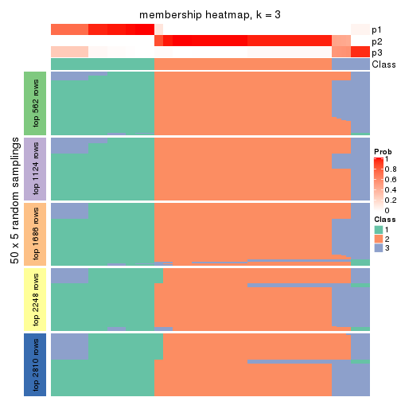
membership_heatmap(res, k = 4)
membership_heatmap(res, k = 5)
membership_heatmap(res, k = 6)
As soon as we have had the classes for columns, we can look for signatures which are significantly different between classes which can be candidate marks for certain classes. Following are the heatmaps for signatures.
Signature heatmaps where rows are scaled:
get_signatures(res, k = 2)
get_signatures(res, k = 3)
get_signatures(res, k = 4)
get_signatures(res, k = 5)
get_signatures(res, k = 6)
Signature heatmaps where rows are not scaled:
get_signatures(res, k = 2, scale_rows = FALSE)
get_signatures(res, k = 3, scale_rows = FALSE)
get_signatures(res, k = 4, scale_rows = FALSE)
get_signatures(res, k = 5, scale_rows = FALSE)
get_signatures(res, k = 6, scale_rows = FALSE)
Compare the overlap of signatures from different k:
compare_signatures(res)
get_signature() returns a data frame invisibly. TO get the list of signatures, the function
call should be assigned to a variable explicitly. In following code, if plot argument is set
to FALSE, no heatmap is plotted while only the differential analysis is performed.
# code only for demonstration
tb = get_signature(res, k = ..., plot = FALSE)
An example of the output of tb is:
#> which_row fdr mean_1 mean_2 scaled_mean_1 scaled_mean_2 km
#> 1 38 0.042760348 8.373488 9.131774 -0.5533452 0.5164555 1
#> 2 40 0.018707592 7.106213 8.469186 -0.6173731 0.5762149 1
#> 3 55 0.019134737 10.221463 11.207825 -0.6159697 0.5749050 1
#> 4 59 0.006059896 5.921854 7.869574 -0.6899429 0.6439467 1
#> 5 60 0.018055526 8.928898 10.211722 -0.6204761 0.5791110 1
#> 6 98 0.009384629 15.714769 14.887706 0.6635654 -0.6193277 2
...
The columns in tb are:
which_row: row indices corresponding to the input matrix.fdr: FDR for the differential test. mean_x: The mean value in group x.scaled_mean_x: The mean value in group x after rows are scaled.km: Row groups if k-means clustering is applied to rows.UMAP plot which shows how samples are separated.
dimension_reduction(res, k = 2, method = "UMAP")
dimension_reduction(res, k = 3, method = "UMAP")
dimension_reduction(res, k = 4, method = "UMAP")
dimension_reduction(res, k = 5, method = "UMAP")
dimension_reduction(res, k = 6, method = "UMAP")
Following heatmap shows how subgroups are split when increasing k:
collect_classes(res)
If matrix rows can be associated to genes, consider to use functional_enrichment(res,
...) to perform function enrichment for the signature genes. See this vignette for more detailed explanations.
The object with results only for a single top-value method and a single partition method can be extracted as:
res = res_list["ATC", "pam"]
# you can also extract it by
# res = res_list["ATC:pam"]
A summary of res and all the functions that can be applied to it:
res
#> A 'ConsensusPartition' object with k = 2, 3, 4, 5, 6.
#> On a matrix with 5619 rows and 68 columns.
#> Top rows (562, 1124, 1686, 2248, 2810) are extracted by 'ATC' method.
#> Subgroups are detected by 'pam' method.
#> Performed in total 1250 partitions by row resampling.
#> Best k for subgroups seems to be 6.
#>
#> Following methods can be applied to this 'ConsensusPartition' object:
#> [1] "cola_report" "collect_classes" "collect_plots"
#> [4] "collect_stats" "colnames" "compare_signatures"
#> [7] "consensus_heatmap" "dimension_reduction" "functional_enrichment"
#> [10] "get_anno_col" "get_anno" "get_classes"
#> [13] "get_consensus" "get_matrix" "get_membership"
#> [16] "get_param" "get_signatures" "get_stats"
#> [19] "is_best_k" "is_stable_k" "membership_heatmap"
#> [22] "ncol" "nrow" "plot_ecdf"
#> [25] "rownames" "select_partition_number" "show"
#> [28] "suggest_best_k" "test_to_known_factors"
collect_plots() function collects all the plots made from res for all k (number of partitions)
into one single page to provide an easy and fast comparison between different k.
collect_plots(res)
The plots are:
k and the heatmap of
predicted classes for each k.k.k.k.All the plots in panels can be made by individual functions and they are plotted later in this section.
select_partition_number() produces several plots showing different
statistics for choosing “optimized” k. There are following statistics:
k;k, the area increased is defined as \(A_k - A_{k-1}\).The detailed explanations of these statistics can be found in the cola vignette.
Generally speaking, lower PAC score, higher mean silhouette score or higher
concordance corresponds to better partition. Rand index and Jaccard index
measure how similar the current partition is compared to partition with k-1.
If they are too similar, we won't accept k is better than k-1.
select_partition_number(res)
The numeric values for all these statistics can be obtained by get_stats().
get_stats(res)
#> k 1-PAC mean_silhouette concordance area_increased Rand Jaccard
#> 2 2 0.784 0.922 0.963 0.4759 0.521 0.521
#> 3 3 0.776 0.803 0.909 0.1481 0.961 0.926
#> 4 4 0.672 0.798 0.826 0.1266 0.968 0.934
#> 5 5 0.743 0.917 0.926 0.1759 0.807 0.571
#> 6 6 0.904 0.913 0.954 0.0428 0.986 0.945
suggest_best_k() suggests the best \(k\) based on these statistics. The rules are as follows:
suggest_best_k(res)
#> [1] 6
Following shows the table of the partitions (You need to click the show/hide
code output link to see it). The membership matrix (columns with name p*)
is inferred by
clue::cl_consensus()
function with the SE method. Basically the value in the membership matrix
represents the probability to belong to a certain group. The finall class
label for an item is determined with the group with highest probability it
belongs to.
In get_classes() function, the entropy is calculated from the membership
matrix and the silhouette score is calculated from the consensus matrix.
cbind(get_classes(res, k = 2), get_membership(res, k = 2))
#> class entropy silhouette p1 p2
#> SRR1035618 2 0.0000 0.964 0.000 1.000
#> SRR1035619 2 0.0000 0.964 0.000 1.000
#> SRR1035620 2 0.0000 0.964 0.000 1.000
#> SRR1035621 2 0.0000 0.964 0.000 1.000
#> SRR1035622 2 0.0376 0.962 0.004 0.996
#> SRR1035623 2 0.0376 0.962 0.004 0.996
#> SRR1035626 2 0.0000 0.964 0.000 1.000
#> SRR1035627 2 0.0000 0.964 0.000 1.000
#> SRR1035628 2 0.0000 0.964 0.000 1.000
#> SRR1035629 2 0.0000 0.964 0.000 1.000
#> SRR1035624 2 0.0000 0.964 0.000 1.000
#> SRR1035625 2 0.0000 0.964 0.000 1.000
#> SRR1035630 2 0.0000 0.964 0.000 1.000
#> SRR1035631 2 0.0000 0.964 0.000 1.000
#> SRR1035632 1 0.9954 0.235 0.540 0.460
#> SRR1035633 1 0.9833 0.341 0.576 0.424
#> SRR1035634 1 0.2043 0.942 0.968 0.032
#> SRR1035635 1 0.2778 0.930 0.952 0.048
#> SRR1035636 2 0.0000 0.964 0.000 1.000
#> SRR1035637 2 0.0000 0.964 0.000 1.000
#> SRR1035638 2 0.0000 0.964 0.000 1.000
#> SRR1035639 2 0.0000 0.964 0.000 1.000
#> SRR1035640 1 0.0000 0.951 1.000 0.000
#> SRR1035641 1 0.0000 0.951 1.000 0.000
#> SRR1035642 2 0.0000 0.964 0.000 1.000
#> SRR1035643 2 0.0000 0.964 0.000 1.000
#> SRR1035644 2 0.0000 0.964 0.000 1.000
#> SRR1035645 2 0.0000 0.964 0.000 1.000
#> SRR1035646 2 0.0000 0.964 0.000 1.000
#> SRR1035647 2 0.0000 0.964 0.000 1.000
#> SRR1035648 2 0.0000 0.964 0.000 1.000
#> SRR1035649 2 0.0000 0.964 0.000 1.000
#> SRR1035654 1 0.2423 0.938 0.960 0.040
#> SRR1035655 1 0.2423 0.938 0.960 0.040
#> SRR1035656 1 0.2423 0.938 0.960 0.040
#> SRR1035657 1 0.2423 0.938 0.960 0.040
#> SRR1035650 2 0.0000 0.964 0.000 1.000
#> SRR1035651 2 0.0000 0.964 0.000 1.000
#> SRR1035652 2 0.0000 0.964 0.000 1.000
#> SRR1035653 2 0.0000 0.964 0.000 1.000
#> SRR1035660 2 0.6438 0.826 0.164 0.836
#> SRR1035661 2 0.6438 0.826 0.164 0.836
#> SRR1035662 2 0.6438 0.826 0.164 0.836
#> SRR1035663 2 0.6438 0.826 0.164 0.836
#> SRR1035658 2 0.6438 0.826 0.164 0.836
#> SRR1035659 2 0.6438 0.826 0.164 0.836
#> SRR1035666 1 0.0000 0.951 1.000 0.000
#> SRR1035667 1 0.0000 0.951 1.000 0.000
#> SRR1035668 1 0.0000 0.951 1.000 0.000
#> SRR1035669 1 0.0000 0.951 1.000 0.000
#> SRR1035664 2 0.6438 0.826 0.164 0.836
#> SRR1035665 2 0.6438 0.826 0.164 0.836
#> SRR1035670 1 0.1414 0.948 0.980 0.020
#> SRR1035671 1 0.1414 0.948 0.980 0.020
#> SRR1035672 1 0.1414 0.948 0.980 0.020
#> SRR1035673 1 0.1414 0.948 0.980 0.020
#> SRR1035674 1 0.0000 0.951 1.000 0.000
#> SRR1035675 1 0.0000 0.951 1.000 0.000
#> SRR1035676 1 0.0000 0.951 1.000 0.000
#> SRR1035677 1 0.0000 0.951 1.000 0.000
#> SRR1035682 2 0.0000 0.964 0.000 1.000
#> SRR1035683 2 0.0000 0.964 0.000 1.000
#> SRR1035684 2 0.0000 0.964 0.000 1.000
#> SRR1035685 2 0.0000 0.964 0.000 1.000
#> SRR1035678 1 0.0672 0.950 0.992 0.008
#> SRR1035679 1 0.0000 0.951 1.000 0.000
#> SRR1035680 1 0.0000 0.951 1.000 0.000
#> SRR1035681 1 0.0000 0.951 1.000 0.000
cbind(get_classes(res, k = 3), get_membership(res, k = 3))
#> class entropy silhouette p1 p2 p3
#> SRR1035618 2 0.2050 0.880 0.028 0.952 0.020
#> SRR1035619 2 0.2050 0.880 0.028 0.952 0.020
#> SRR1035620 2 0.2050 0.880 0.028 0.952 0.020
#> SRR1035621 2 0.2050 0.880 0.028 0.952 0.020
#> SRR1035622 2 0.2297 0.876 0.036 0.944 0.020
#> SRR1035623 2 0.2297 0.876 0.036 0.944 0.020
#> SRR1035626 2 0.0000 0.890 0.000 1.000 0.000
#> SRR1035627 2 0.0424 0.889 0.000 0.992 0.008
#> SRR1035628 2 0.1163 0.884 0.028 0.972 0.000
#> SRR1035629 2 0.0892 0.887 0.020 0.980 0.000
#> SRR1035624 2 0.2050 0.880 0.028 0.952 0.020
#> SRR1035625 2 0.2050 0.880 0.028 0.952 0.020
#> SRR1035630 2 0.0000 0.890 0.000 1.000 0.000
#> SRR1035631 2 0.0000 0.890 0.000 1.000 0.000
#> SRR1035632 1 0.6192 0.289 0.580 0.420 0.000
#> SRR1035633 1 0.6204 0.263 0.576 0.424 0.000
#> SRR1035634 1 0.2774 0.848 0.920 0.008 0.072
#> SRR1035635 1 0.1585 0.869 0.964 0.008 0.028
#> SRR1035636 2 0.0000 0.890 0.000 1.000 0.000
#> SRR1035637 2 0.0000 0.890 0.000 1.000 0.000
#> SRR1035638 2 0.0000 0.890 0.000 1.000 0.000
#> SRR1035639 2 0.0000 0.890 0.000 1.000 0.000
#> SRR1035640 1 0.5785 0.459 0.668 0.000 0.332
#> SRR1035641 1 0.5785 0.459 0.668 0.000 0.332
#> SRR1035642 2 0.0892 0.888 0.000 0.980 0.020
#> SRR1035643 2 0.0892 0.888 0.000 0.980 0.020
#> SRR1035644 2 0.0892 0.888 0.000 0.980 0.020
#> SRR1035645 2 0.0892 0.888 0.000 0.980 0.020
#> SRR1035646 2 0.0892 0.888 0.000 0.980 0.020
#> SRR1035647 2 0.0237 0.889 0.000 0.996 0.004
#> SRR1035648 2 0.0000 0.890 0.000 1.000 0.000
#> SRR1035649 2 0.0000 0.890 0.000 1.000 0.000
#> SRR1035654 1 0.0592 0.865 0.988 0.000 0.012
#> SRR1035655 1 0.0592 0.865 0.988 0.000 0.012
#> SRR1035656 1 0.0592 0.865 0.988 0.000 0.012
#> SRR1035657 1 0.0592 0.865 0.988 0.000 0.012
#> SRR1035650 2 0.0000 0.890 0.000 1.000 0.000
#> SRR1035651 2 0.0000 0.890 0.000 1.000 0.000
#> SRR1035652 2 0.0000 0.890 0.000 1.000 0.000
#> SRR1035653 2 0.0000 0.890 0.000 1.000 0.000
#> SRR1035660 2 0.6950 0.433 0.408 0.572 0.020
#> SRR1035661 2 0.6950 0.433 0.408 0.572 0.020
#> SRR1035662 2 0.6950 0.433 0.408 0.572 0.020
#> SRR1035663 2 0.6950 0.433 0.408 0.572 0.020
#> SRR1035658 2 0.6950 0.433 0.408 0.572 0.020
#> SRR1035659 2 0.6950 0.433 0.408 0.572 0.020
#> SRR1035666 3 0.0892 1.000 0.020 0.000 0.980
#> SRR1035667 3 0.0892 1.000 0.020 0.000 0.980
#> SRR1035668 3 0.0892 1.000 0.020 0.000 0.980
#> SRR1035669 3 0.0892 1.000 0.020 0.000 0.980
#> SRR1035664 2 0.6950 0.433 0.408 0.572 0.020
#> SRR1035665 2 0.6950 0.433 0.408 0.572 0.020
#> SRR1035670 1 0.0000 0.870 1.000 0.000 0.000
#> SRR1035671 1 0.0000 0.870 1.000 0.000 0.000
#> SRR1035672 1 0.0000 0.870 1.000 0.000 0.000
#> SRR1035673 1 0.0000 0.870 1.000 0.000 0.000
#> SRR1035674 1 0.1163 0.871 0.972 0.000 0.028
#> SRR1035675 1 0.1163 0.871 0.972 0.000 0.028
#> SRR1035676 1 0.1163 0.871 0.972 0.000 0.028
#> SRR1035677 1 0.1163 0.871 0.972 0.000 0.028
#> SRR1035682 2 0.0000 0.890 0.000 1.000 0.000
#> SRR1035683 2 0.0000 0.890 0.000 1.000 0.000
#> SRR1035684 2 0.0000 0.890 0.000 1.000 0.000
#> SRR1035685 2 0.0000 0.890 0.000 1.000 0.000
#> SRR1035678 1 0.1163 0.871 0.972 0.000 0.028
#> SRR1035679 1 0.2261 0.852 0.932 0.000 0.068
#> SRR1035680 1 0.1163 0.871 0.972 0.000 0.028
#> SRR1035681 1 0.3686 0.788 0.860 0.000 0.140
cbind(get_classes(res, k = 4), get_membership(res, k = 4))
#> class entropy silhouette p1 p2 p3 p4
#> SRR1035618 2 0.2342 0.743 0.008 0.912 0.080 0.000
#> SRR1035619 2 0.2342 0.743 0.008 0.912 0.080 0.000
#> SRR1035620 2 0.2342 0.743 0.008 0.912 0.080 0.000
#> SRR1035621 2 0.2342 0.743 0.008 0.912 0.080 0.000
#> SRR1035622 2 0.2342 0.743 0.008 0.912 0.080 0.000
#> SRR1035623 2 0.2342 0.743 0.008 0.912 0.080 0.000
#> SRR1035626 2 0.3942 0.767 0.000 0.764 0.236 0.000
#> SRR1035627 2 0.3311 0.777 0.000 0.828 0.172 0.000
#> SRR1035628 2 0.4560 0.764 0.004 0.700 0.296 0.000
#> SRR1035629 2 0.4647 0.764 0.008 0.704 0.288 0.000
#> SRR1035624 2 0.2342 0.743 0.008 0.912 0.080 0.000
#> SRR1035625 2 0.2342 0.743 0.008 0.912 0.080 0.000
#> SRR1035630 2 0.3975 0.766 0.000 0.760 0.240 0.000
#> SRR1035631 2 0.3975 0.766 0.000 0.760 0.240 0.000
#> SRR1035632 3 0.2662 0.934 0.084 0.016 0.900 0.000
#> SRR1035633 3 0.2949 0.939 0.088 0.024 0.888 0.000
#> SRR1035634 3 0.3024 0.886 0.148 0.000 0.852 0.000
#> SRR1035635 3 0.2530 0.939 0.112 0.000 0.888 0.000
#> SRR1035636 2 0.3975 0.766 0.000 0.760 0.240 0.000
#> SRR1035637 2 0.3975 0.766 0.000 0.760 0.240 0.000
#> SRR1035638 2 0.3975 0.766 0.000 0.760 0.240 0.000
#> SRR1035639 2 0.3975 0.766 0.000 0.760 0.240 0.000
#> SRR1035640 1 0.4304 0.616 0.716 0.000 0.000 0.284
#> SRR1035641 1 0.4304 0.616 0.716 0.000 0.000 0.284
#> SRR1035642 2 0.0000 0.764 0.000 1.000 0.000 0.000
#> SRR1035643 2 0.0000 0.764 0.000 1.000 0.000 0.000
#> SRR1035644 2 0.0000 0.764 0.000 1.000 0.000 0.000
#> SRR1035645 2 0.0000 0.764 0.000 1.000 0.000 0.000
#> SRR1035646 2 0.2589 0.776 0.000 0.884 0.116 0.000
#> SRR1035647 2 0.3219 0.778 0.000 0.836 0.164 0.000
#> SRR1035648 2 0.3942 0.767 0.000 0.764 0.236 0.000
#> SRR1035649 2 0.3726 0.772 0.000 0.788 0.212 0.000
#> SRR1035654 1 0.1118 0.906 0.964 0.000 0.036 0.000
#> SRR1035655 1 0.1716 0.880 0.936 0.000 0.064 0.000
#> SRR1035656 1 0.0921 0.912 0.972 0.000 0.028 0.000
#> SRR1035657 1 0.2489 0.851 0.912 0.020 0.068 0.000
#> SRR1035650 2 0.3975 0.766 0.000 0.760 0.240 0.000
#> SRR1035651 2 0.3975 0.766 0.000 0.760 0.240 0.000
#> SRR1035652 2 0.3975 0.766 0.000 0.760 0.240 0.000
#> SRR1035653 2 0.3975 0.766 0.000 0.760 0.240 0.000
#> SRR1035660 2 0.5291 0.606 0.180 0.740 0.080 0.000
#> SRR1035661 2 0.5291 0.606 0.180 0.740 0.080 0.000
#> SRR1035662 2 0.5250 0.608 0.176 0.744 0.080 0.000
#> SRR1035663 2 0.5250 0.608 0.176 0.744 0.080 0.000
#> SRR1035658 2 0.5291 0.606 0.180 0.740 0.080 0.000
#> SRR1035659 2 0.5291 0.606 0.180 0.740 0.080 0.000
#> SRR1035666 4 0.0000 1.000 0.000 0.000 0.000 1.000
#> SRR1035667 4 0.0000 1.000 0.000 0.000 0.000 1.000
#> SRR1035668 4 0.0000 1.000 0.000 0.000 0.000 1.000
#> SRR1035669 4 0.0000 1.000 0.000 0.000 0.000 1.000
#> SRR1035664 2 0.5250 0.608 0.176 0.744 0.080 0.000
#> SRR1035665 2 0.5250 0.608 0.176 0.744 0.080 0.000
#> SRR1035670 1 0.0000 0.928 1.000 0.000 0.000 0.000
#> SRR1035671 1 0.0000 0.928 1.000 0.000 0.000 0.000
#> SRR1035672 1 0.0000 0.928 1.000 0.000 0.000 0.000
#> SRR1035673 1 0.0000 0.928 1.000 0.000 0.000 0.000
#> SRR1035674 1 0.0336 0.928 0.992 0.000 0.000 0.008
#> SRR1035675 1 0.0336 0.928 0.992 0.000 0.000 0.008
#> SRR1035676 1 0.0336 0.928 0.992 0.000 0.000 0.008
#> SRR1035677 1 0.0336 0.928 0.992 0.000 0.000 0.008
#> SRR1035682 2 0.3975 0.766 0.000 0.760 0.240 0.000
#> SRR1035683 2 0.3975 0.766 0.000 0.760 0.240 0.000
#> SRR1035684 2 0.3975 0.766 0.000 0.760 0.240 0.000
#> SRR1035685 2 0.3975 0.766 0.000 0.760 0.240 0.000
#> SRR1035678 1 0.0336 0.928 0.992 0.000 0.000 0.008
#> SRR1035679 1 0.1557 0.903 0.944 0.000 0.000 0.056
#> SRR1035680 1 0.0336 0.928 0.992 0.000 0.000 0.008
#> SRR1035681 1 0.2704 0.844 0.876 0.000 0.000 0.124
cbind(get_classes(res, k = 5), get_membership(res, k = 5))
#> class entropy silhouette p1 p2 p3 p4 p5
#> SRR1035618 2 0.2561 0.937 0.000 0.856 0 0.144 0.000
#> SRR1035619 2 0.2424 0.940 0.000 0.868 0 0.132 0.000
#> SRR1035620 2 0.2773 0.926 0.000 0.836 0 0.164 0.000
#> SRR1035621 2 0.2929 0.915 0.000 0.820 0 0.180 0.000
#> SRR1035622 2 0.2424 0.940 0.000 0.868 0 0.132 0.000
#> SRR1035623 2 0.2424 0.940 0.000 0.868 0 0.132 0.000
#> SRR1035626 4 0.1197 0.922 0.000 0.048 0 0.952 0.000
#> SRR1035627 4 0.2020 0.874 0.000 0.100 0 0.900 0.000
#> SRR1035628 4 0.2773 0.793 0.000 0.164 0 0.836 0.000
#> SRR1035629 4 0.2773 0.792 0.000 0.164 0 0.836 0.000
#> SRR1035624 2 0.2424 0.940 0.000 0.868 0 0.132 0.000
#> SRR1035625 2 0.2424 0.940 0.000 0.868 0 0.132 0.000
#> SRR1035630 4 0.0000 0.956 0.000 0.000 0 1.000 0.000
#> SRR1035631 4 0.0000 0.956 0.000 0.000 0 1.000 0.000
#> SRR1035632 3 0.0000 1.000 0.000 0.000 1 0.000 0.000
#> SRR1035633 3 0.0000 1.000 0.000 0.000 1 0.000 0.000
#> SRR1035634 3 0.0000 1.000 0.000 0.000 1 0.000 0.000
#> SRR1035635 3 0.0000 1.000 0.000 0.000 1 0.000 0.000
#> SRR1035636 4 0.0000 0.956 0.000 0.000 0 1.000 0.000
#> SRR1035637 4 0.0000 0.956 0.000 0.000 0 1.000 0.000
#> SRR1035638 4 0.0000 0.956 0.000 0.000 0 1.000 0.000
#> SRR1035639 4 0.0000 0.956 0.000 0.000 0 1.000 0.000
#> SRR1035640 1 0.5211 0.597 0.676 0.112 0 0.000 0.212
#> SRR1035641 1 0.5211 0.597 0.676 0.112 0 0.000 0.212
#> SRR1035642 2 0.3730 0.810 0.000 0.712 0 0.288 0.000
#> SRR1035643 2 0.3612 0.833 0.000 0.732 0 0.268 0.000
#> SRR1035644 2 0.3796 0.794 0.000 0.700 0 0.300 0.000
#> SRR1035645 2 0.3752 0.805 0.000 0.708 0 0.292 0.000
#> SRR1035646 4 0.3480 0.580 0.000 0.248 0 0.752 0.000
#> SRR1035647 4 0.0703 0.940 0.000 0.024 0 0.976 0.000
#> SRR1035648 4 0.0162 0.954 0.000 0.004 0 0.996 0.000
#> SRR1035649 4 0.0290 0.952 0.000 0.008 0 0.992 0.000
#> SRR1035654 1 0.0794 0.930 0.972 0.028 0 0.000 0.000
#> SRR1035655 1 0.1341 0.909 0.944 0.056 0 0.000 0.000
#> SRR1035656 1 0.0703 0.932 0.976 0.024 0 0.000 0.000
#> SRR1035657 1 0.1965 0.867 0.904 0.096 0 0.000 0.000
#> SRR1035650 4 0.0000 0.956 0.000 0.000 0 1.000 0.000
#> SRR1035651 4 0.0000 0.956 0.000 0.000 0 1.000 0.000
#> SRR1035652 4 0.0000 0.956 0.000 0.000 0 1.000 0.000
#> SRR1035653 4 0.0000 0.956 0.000 0.000 0 1.000 0.000
#> SRR1035660 2 0.2179 0.936 0.000 0.888 0 0.112 0.000
#> SRR1035661 2 0.2179 0.936 0.000 0.888 0 0.112 0.000
#> SRR1035662 2 0.2179 0.936 0.000 0.888 0 0.112 0.000
#> SRR1035663 2 0.2179 0.936 0.000 0.888 0 0.112 0.000
#> SRR1035658 2 0.2179 0.936 0.000 0.888 0 0.112 0.000
#> SRR1035659 2 0.2179 0.936 0.000 0.888 0 0.112 0.000
#> SRR1035666 5 0.0000 1.000 0.000 0.000 0 0.000 1.000
#> SRR1035667 5 0.0000 1.000 0.000 0.000 0 0.000 1.000
#> SRR1035668 5 0.0000 1.000 0.000 0.000 0 0.000 1.000
#> SRR1035669 5 0.0000 1.000 0.000 0.000 0 0.000 1.000
#> SRR1035664 2 0.2230 0.938 0.000 0.884 0 0.116 0.000
#> SRR1035665 2 0.2230 0.938 0.000 0.884 0 0.116 0.000
#> SRR1035670 1 0.0609 0.934 0.980 0.020 0 0.000 0.000
#> SRR1035671 1 0.0609 0.934 0.980 0.020 0 0.000 0.000
#> SRR1035672 1 0.0609 0.934 0.980 0.020 0 0.000 0.000
#> SRR1035673 1 0.0609 0.934 0.980 0.020 0 0.000 0.000
#> SRR1035674 1 0.0000 0.934 1.000 0.000 0 0.000 0.000
#> SRR1035675 1 0.0000 0.934 1.000 0.000 0 0.000 0.000
#> SRR1035676 1 0.0000 0.934 1.000 0.000 0 0.000 0.000
#> SRR1035677 1 0.0000 0.934 1.000 0.000 0 0.000 0.000
#> SRR1035682 4 0.0000 0.956 0.000 0.000 0 1.000 0.000
#> SRR1035683 4 0.0000 0.956 0.000 0.000 0 1.000 0.000
#> SRR1035684 4 0.0000 0.956 0.000 0.000 0 1.000 0.000
#> SRR1035685 4 0.0000 0.956 0.000 0.000 0 1.000 0.000
#> SRR1035678 1 0.0000 0.934 1.000 0.000 0 0.000 0.000
#> SRR1035679 1 0.1121 0.913 0.956 0.000 0 0.000 0.044
#> SRR1035680 1 0.0000 0.934 1.000 0.000 0 0.000 0.000
#> SRR1035681 1 0.2522 0.853 0.880 0.012 0 0.000 0.108
cbind(get_classes(res, k = 6), get_membership(res, k = 6))
#> class entropy silhouette p1 p2 p3 p4 p5 p6
#> SRR1035618 2 0.0790 0.908 0.000 0.968 0.000 0.032 0.000 0.000
#> SRR1035619 2 0.0363 0.918 0.000 0.988 0.000 0.012 0.000 0.000
#> SRR1035620 2 0.1387 0.885 0.000 0.932 0.000 0.068 0.000 0.000
#> SRR1035621 2 0.1957 0.850 0.000 0.888 0.000 0.112 0.000 0.000
#> SRR1035622 2 0.0363 0.918 0.000 0.988 0.000 0.012 0.000 0.000
#> SRR1035623 2 0.0363 0.918 0.000 0.988 0.000 0.012 0.000 0.000
#> SRR1035626 4 0.1327 0.892 0.000 0.064 0.000 0.936 0.000 0.000
#> SRR1035627 4 0.2048 0.842 0.000 0.120 0.000 0.880 0.000 0.000
#> SRR1035628 4 0.2941 0.702 0.000 0.220 0.000 0.780 0.000 0.000
#> SRR1035629 4 0.3126 0.659 0.000 0.248 0.000 0.752 0.000 0.000
#> SRR1035624 2 0.0363 0.918 0.000 0.988 0.000 0.012 0.000 0.000
#> SRR1035625 2 0.0363 0.918 0.000 0.988 0.000 0.012 0.000 0.000
#> SRR1035630 4 0.0000 0.943 0.000 0.000 0.000 1.000 0.000 0.000
#> SRR1035631 4 0.0000 0.943 0.000 0.000 0.000 1.000 0.000 0.000
#> SRR1035632 3 0.0000 0.975 0.000 0.000 1.000 0.000 0.000 0.000
#> SRR1035633 3 0.0000 0.975 0.000 0.000 1.000 0.000 0.000 0.000
#> SRR1035634 3 0.1663 0.925 0.000 0.000 0.912 0.000 0.000 0.088
#> SRR1035635 3 0.0146 0.974 0.000 0.000 0.996 0.000 0.000 0.004
#> SRR1035636 4 0.0000 0.943 0.000 0.000 0.000 1.000 0.000 0.000
#> SRR1035637 4 0.0000 0.943 0.000 0.000 0.000 1.000 0.000 0.000
#> SRR1035638 4 0.0000 0.943 0.000 0.000 0.000 1.000 0.000 0.000
#> SRR1035639 4 0.0000 0.943 0.000 0.000 0.000 1.000 0.000 0.000
#> SRR1035640 6 0.1714 1.000 0.000 0.000 0.000 0.000 0.092 0.908
#> SRR1035641 6 0.1714 1.000 0.000 0.000 0.000 0.000 0.092 0.908
#> SRR1035642 2 0.3151 0.708 0.000 0.748 0.000 0.252 0.000 0.000
#> SRR1035643 2 0.2941 0.745 0.000 0.780 0.000 0.220 0.000 0.000
#> SRR1035644 2 0.3221 0.692 0.000 0.736 0.000 0.264 0.000 0.000
#> SRR1035645 2 0.3151 0.708 0.000 0.748 0.000 0.252 0.000 0.000
#> SRR1035646 4 0.3126 0.628 0.000 0.248 0.000 0.752 0.000 0.000
#> SRR1035647 4 0.0632 0.926 0.000 0.024 0.000 0.976 0.000 0.000
#> SRR1035648 4 0.0146 0.941 0.000 0.004 0.000 0.996 0.000 0.000
#> SRR1035649 4 0.0260 0.938 0.000 0.008 0.000 0.992 0.000 0.000
#> SRR1035654 1 0.0363 0.968 0.988 0.012 0.000 0.000 0.000 0.000
#> SRR1035655 1 0.0713 0.955 0.972 0.028 0.000 0.000 0.000 0.000
#> SRR1035656 1 0.0260 0.970 0.992 0.008 0.000 0.000 0.000 0.000
#> SRR1035657 1 0.1075 0.933 0.952 0.048 0.000 0.000 0.000 0.000
#> SRR1035650 4 0.0000 0.943 0.000 0.000 0.000 1.000 0.000 0.000
#> SRR1035651 4 0.0000 0.943 0.000 0.000 0.000 1.000 0.000 0.000
#> SRR1035652 4 0.0000 0.943 0.000 0.000 0.000 1.000 0.000 0.000
#> SRR1035653 4 0.0000 0.943 0.000 0.000 0.000 1.000 0.000 0.000
#> SRR1035660 2 0.0260 0.916 0.000 0.992 0.000 0.008 0.000 0.000
#> SRR1035661 2 0.0260 0.916 0.000 0.992 0.000 0.008 0.000 0.000
#> SRR1035662 2 0.0260 0.916 0.000 0.992 0.000 0.008 0.000 0.000
#> SRR1035663 2 0.0260 0.916 0.000 0.992 0.000 0.008 0.000 0.000
#> SRR1035658 2 0.0260 0.916 0.000 0.992 0.000 0.008 0.000 0.000
#> SRR1035659 2 0.0260 0.916 0.000 0.992 0.000 0.008 0.000 0.000
#> SRR1035666 5 0.0000 0.955 0.000 0.000 0.000 0.000 1.000 0.000
#> SRR1035667 5 0.0000 0.955 0.000 0.000 0.000 0.000 1.000 0.000
#> SRR1035668 5 0.1556 0.927 0.000 0.000 0.000 0.000 0.920 0.080
#> SRR1035669 5 0.1007 0.952 0.000 0.000 0.000 0.000 0.956 0.044
#> SRR1035664 2 0.0363 0.918 0.000 0.988 0.000 0.012 0.000 0.000
#> SRR1035665 2 0.0363 0.918 0.000 0.988 0.000 0.012 0.000 0.000
#> SRR1035670 1 0.0146 0.971 0.996 0.004 0.000 0.000 0.000 0.000
#> SRR1035671 1 0.0146 0.971 0.996 0.004 0.000 0.000 0.000 0.000
#> SRR1035672 1 0.0146 0.971 0.996 0.004 0.000 0.000 0.000 0.000
#> SRR1035673 1 0.0146 0.971 0.996 0.004 0.000 0.000 0.000 0.000
#> SRR1035674 1 0.0458 0.970 0.984 0.000 0.000 0.000 0.000 0.016
#> SRR1035675 1 0.0458 0.970 0.984 0.000 0.000 0.000 0.000 0.016
#> SRR1035676 1 0.0458 0.970 0.984 0.000 0.000 0.000 0.000 0.016
#> SRR1035677 1 0.0458 0.970 0.984 0.000 0.000 0.000 0.000 0.016
#> SRR1035682 4 0.0000 0.943 0.000 0.000 0.000 1.000 0.000 0.000
#> SRR1035683 4 0.0000 0.943 0.000 0.000 0.000 1.000 0.000 0.000
#> SRR1035684 4 0.0000 0.943 0.000 0.000 0.000 1.000 0.000 0.000
#> SRR1035685 4 0.0000 0.943 0.000 0.000 0.000 1.000 0.000 0.000
#> SRR1035678 1 0.0717 0.968 0.976 0.008 0.000 0.000 0.000 0.016
#> SRR1035679 1 0.1785 0.934 0.928 0.008 0.000 0.000 0.048 0.016
#> SRR1035680 1 0.0717 0.968 0.976 0.008 0.000 0.000 0.000 0.016
#> SRR1035681 1 0.2887 0.859 0.856 0.008 0.000 0.000 0.104 0.032
Heatmaps for the consensus matrix. It visualizes the probability of two samples to be in a same group.
consensus_heatmap(res, k = 2)
consensus_heatmap(res, k = 3)
consensus_heatmap(res, k = 4)
consensus_heatmap(res, k = 5)
consensus_heatmap(res, k = 6)
Heatmaps for the membership of samples in all partitions to see how consistent they are:
membership_heatmap(res, k = 2)
membership_heatmap(res, k = 3)
membership_heatmap(res, k = 4)
membership_heatmap(res, k = 5)
membership_heatmap(res, k = 6)
As soon as we have had the classes for columns, we can look for signatures which are significantly different between classes which can be candidate marks for certain classes. Following are the heatmaps for signatures.
Signature heatmaps where rows are scaled:
get_signatures(res, k = 2)
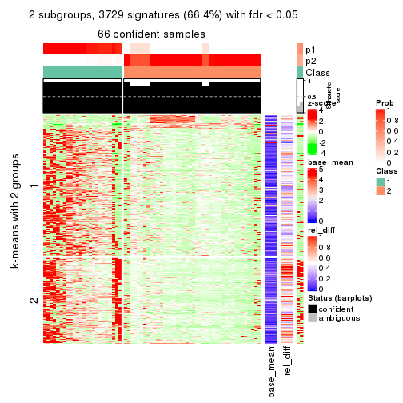
get_signatures(res, k = 3)
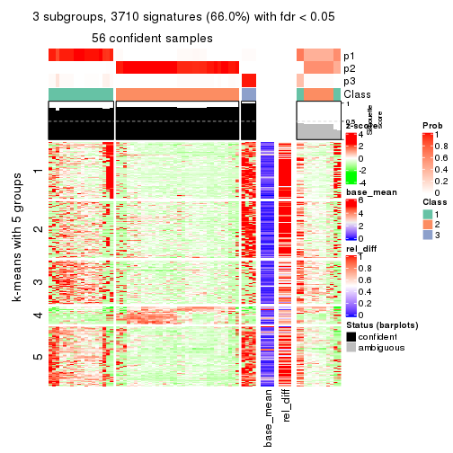
get_signatures(res, k = 4)
get_signatures(res, k = 5)
get_signatures(res, k = 6)
Signature heatmaps where rows are not scaled:
get_signatures(res, k = 2, scale_rows = FALSE)
get_signatures(res, k = 3, scale_rows = FALSE)
get_signatures(res, k = 4, scale_rows = FALSE)
get_signatures(res, k = 5, scale_rows = FALSE)
get_signatures(res, k = 6, scale_rows = FALSE)
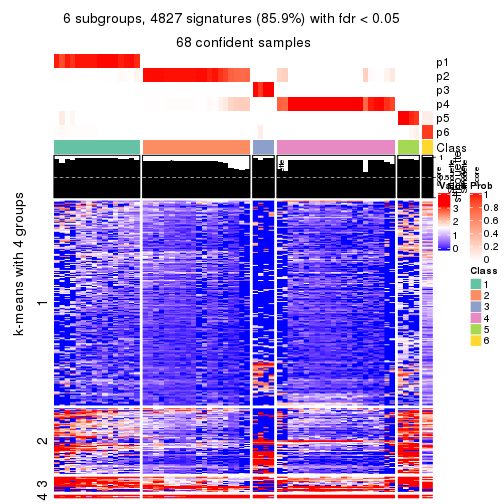
Compare the overlap of signatures from different k:
compare_signatures(res)
get_signature() returns a data frame invisibly. TO get the list of signatures, the function
call should be assigned to a variable explicitly. In following code, if plot argument is set
to FALSE, no heatmap is plotted while only the differential analysis is performed.
# code only for demonstration
tb = get_signature(res, k = ..., plot = FALSE)
An example of the output of tb is:
#> which_row fdr mean_1 mean_2 scaled_mean_1 scaled_mean_2 km
#> 1 38 0.042760348 8.373488 9.131774 -0.5533452 0.5164555 1
#> 2 40 0.018707592 7.106213 8.469186 -0.6173731 0.5762149 1
#> 3 55 0.019134737 10.221463 11.207825 -0.6159697 0.5749050 1
#> 4 59 0.006059896 5.921854 7.869574 -0.6899429 0.6439467 1
#> 5 60 0.018055526 8.928898 10.211722 -0.6204761 0.5791110 1
#> 6 98 0.009384629 15.714769 14.887706 0.6635654 -0.6193277 2
...
The columns in tb are:
which_row: row indices corresponding to the input matrix.fdr: FDR for the differential test. mean_x: The mean value in group x.scaled_mean_x: The mean value in group x after rows are scaled.km: Row groups if k-means clustering is applied to rows.UMAP plot which shows how samples are separated.
dimension_reduction(res, k = 2, method = "UMAP")
dimension_reduction(res, k = 3, method = "UMAP")
dimension_reduction(res, k = 4, method = "UMAP")
dimension_reduction(res, k = 5, method = "UMAP")
dimension_reduction(res, k = 6, method = "UMAP")
Following heatmap shows how subgroups are split when increasing k:
collect_classes(res)
If matrix rows can be associated to genes, consider to use functional_enrichment(res,
...) to perform function enrichment for the signature genes. See this vignette for more detailed explanations.
The object with results only for a single top-value method and a single partition method can be extracted as:
res = res_list["ATC", "mclust"]
# you can also extract it by
# res = res_list["ATC:mclust"]
A summary of res and all the functions that can be applied to it:
res
#> A 'ConsensusPartition' object with k = 2, 3, 4, 5, 6.
#> On a matrix with 5619 rows and 68 columns.
#> Top rows (562, 1124, 1686, 2248, 2810) are extracted by 'ATC' method.
#> Subgroups are detected by 'mclust' method.
#> Performed in total 1250 partitions by row resampling.
#> Best k for subgroups seems to be 3.
#>
#> Following methods can be applied to this 'ConsensusPartition' object:
#> [1] "cola_report" "collect_classes" "collect_plots"
#> [4] "collect_stats" "colnames" "compare_signatures"
#> [7] "consensus_heatmap" "dimension_reduction" "functional_enrichment"
#> [10] "get_anno_col" "get_anno" "get_classes"
#> [13] "get_consensus" "get_matrix" "get_membership"
#> [16] "get_param" "get_signatures" "get_stats"
#> [19] "is_best_k" "is_stable_k" "membership_heatmap"
#> [22] "ncol" "nrow" "plot_ecdf"
#> [25] "rownames" "select_partition_number" "show"
#> [28] "suggest_best_k" "test_to_known_factors"
collect_plots() function collects all the plots made from res for all k (number of partitions)
into one single page to provide an easy and fast comparison between different k.
collect_plots(res)
The plots are:
k and the heatmap of
predicted classes for each k.k.k.k.All the plots in panels can be made by individual functions and they are plotted later in this section.
select_partition_number() produces several plots showing different
statistics for choosing “optimized” k. There are following statistics:
k;k, the area increased is defined as \(A_k - A_{k-1}\).The detailed explanations of these statistics can be found in the cola vignette.
Generally speaking, lower PAC score, higher mean silhouette score or higher
concordance corresponds to better partition. Rand index and Jaccard index
measure how similar the current partition is compared to partition with k-1.
If they are too similar, we won't accept k is better than k-1.
select_partition_number(res)
The numeric values for all these statistics can be obtained by get_stats().
get_stats(res)
#> k 1-PAC mean_silhouette concordance area_increased Rand Jaccard
#> 2 2 0.482 0.858 0.907 0.2906 0.789 0.789
#> 3 3 0.808 0.851 0.908 1.1151 0.550 0.440
#> 4 4 0.689 0.822 0.897 0.0581 0.879 0.704
#> 5 5 0.758 0.819 0.899 0.0537 0.814 0.536
#> 6 6 0.791 0.881 0.924 0.0128 0.817 0.533
suggest_best_k() suggests the best \(k\) based on these statistics. The rules are as follows:
suggest_best_k(res)
#> [1] 3
Following shows the table of the partitions (You need to click the show/hide
code output link to see it). The membership matrix (columns with name p*)
is inferred by
clue::cl_consensus()
function with the SE method. Basically the value in the membership matrix
represents the probability to belong to a certain group. The finall class
label for an item is determined with the group with highest probability it
belongs to.
In get_classes() function, the entropy is calculated from the membership
matrix and the silhouette score is calculated from the consensus matrix.
cbind(get_classes(res, k = 2), get_membership(res, k = 2))
#> class entropy silhouette p1 p2
#> SRR1035618 2 0.000 0.878 0.000 1.000
#> SRR1035619 2 0.000 0.878 0.000 1.000
#> SRR1035620 2 0.000 0.878 0.000 1.000
#> SRR1035621 2 0.000 0.878 0.000 1.000
#> SRR1035622 2 0.000 0.878 0.000 1.000
#> SRR1035623 2 0.000 0.878 0.000 1.000
#> SRR1035626 2 0.850 0.771 0.276 0.724
#> SRR1035627 2 0.850 0.771 0.276 0.724
#> SRR1035628 2 0.850 0.771 0.276 0.724
#> SRR1035629 2 0.850 0.771 0.276 0.724
#> SRR1035624 2 0.000 0.878 0.000 1.000
#> SRR1035625 2 0.000 0.878 0.000 1.000
#> SRR1035630 2 0.000 0.878 0.000 1.000
#> SRR1035631 2 0.000 0.878 0.000 1.000
#> SRR1035632 1 0.000 1.000 1.000 0.000
#> SRR1035633 1 0.000 1.000 1.000 0.000
#> SRR1035634 1 0.000 1.000 1.000 0.000
#> SRR1035635 1 0.000 1.000 1.000 0.000
#> SRR1035636 2 0.000 0.878 0.000 1.000
#> SRR1035637 2 0.000 0.878 0.000 1.000
#> SRR1035638 2 0.000 0.878 0.000 1.000
#> SRR1035639 2 0.000 0.878 0.000 1.000
#> SRR1035640 2 0.850 0.771 0.276 0.724
#> SRR1035641 2 0.850 0.771 0.276 0.724
#> SRR1035642 2 0.000 0.878 0.000 1.000
#> SRR1035643 2 0.000 0.878 0.000 1.000
#> SRR1035644 2 0.000 0.878 0.000 1.000
#> SRR1035645 2 0.000 0.878 0.000 1.000
#> SRR1035646 2 0.000 0.878 0.000 1.000
#> SRR1035647 2 0.000 0.878 0.000 1.000
#> SRR1035648 2 0.000 0.878 0.000 1.000
#> SRR1035649 2 0.000 0.878 0.000 1.000
#> SRR1035654 2 0.827 0.784 0.260 0.740
#> SRR1035655 2 0.827 0.784 0.260 0.740
#> SRR1035656 2 0.827 0.784 0.260 0.740
#> SRR1035657 2 0.827 0.784 0.260 0.740
#> SRR1035650 2 0.000 0.878 0.000 1.000
#> SRR1035651 2 0.000 0.878 0.000 1.000
#> SRR1035652 2 0.000 0.878 0.000 1.000
#> SRR1035653 2 0.000 0.878 0.000 1.000
#> SRR1035660 2 0.494 0.849 0.108 0.892
#> SRR1035661 2 0.494 0.849 0.108 0.892
#> SRR1035662 2 0.494 0.849 0.108 0.892
#> SRR1035663 2 0.518 0.846 0.116 0.884
#> SRR1035658 2 0.000 0.878 0.000 1.000
#> SRR1035659 2 0.000 0.878 0.000 1.000
#> SRR1035666 1 0.000 1.000 1.000 0.000
#> SRR1035667 1 0.000 1.000 1.000 0.000
#> SRR1035668 1 0.000 1.000 1.000 0.000
#> SRR1035669 1 0.000 1.000 1.000 0.000
#> SRR1035664 2 0.000 0.878 0.000 1.000
#> SRR1035665 2 0.000 0.878 0.000 1.000
#> SRR1035670 2 0.827 0.784 0.260 0.740
#> SRR1035671 2 0.827 0.784 0.260 0.740
#> SRR1035672 2 0.827 0.784 0.260 0.740
#> SRR1035673 2 0.827 0.784 0.260 0.740
#> SRR1035674 2 0.850 0.771 0.276 0.724
#> SRR1035675 2 0.844 0.775 0.272 0.728
#> SRR1035676 2 0.827 0.784 0.260 0.740
#> SRR1035677 2 0.827 0.784 0.260 0.740
#> SRR1035682 2 0.000 0.878 0.000 1.000
#> SRR1035683 2 0.000 0.878 0.000 1.000
#> SRR1035684 2 0.000 0.878 0.000 1.000
#> SRR1035685 2 0.000 0.878 0.000 1.000
#> SRR1035678 2 0.850 0.771 0.276 0.724
#> SRR1035679 2 0.850 0.771 0.276 0.724
#> SRR1035680 2 0.850 0.771 0.276 0.724
#> SRR1035681 2 0.850 0.771 0.276 0.724
cbind(get_classes(res, k = 3), get_membership(res, k = 3))
#> class entropy silhouette p1 p2 p3
#> SRR1035618 2 0.0000 0.967 0.000 1.000 0.000
#> SRR1035619 2 0.0000 0.967 0.000 1.000 0.000
#> SRR1035620 2 0.0000 0.967 0.000 1.000 0.000
#> SRR1035621 2 0.0000 0.967 0.000 1.000 0.000
#> SRR1035622 2 0.0000 0.967 0.000 1.000 0.000
#> SRR1035623 2 0.0000 0.967 0.000 1.000 0.000
#> SRR1035626 1 0.7624 0.481 0.560 0.048 0.392
#> SRR1035627 1 0.7624 0.481 0.560 0.048 0.392
#> SRR1035628 1 0.7624 0.481 0.560 0.048 0.392
#> SRR1035629 1 0.7624 0.481 0.560 0.048 0.392
#> SRR1035624 2 0.0000 0.967 0.000 1.000 0.000
#> SRR1035625 2 0.0000 0.967 0.000 1.000 0.000
#> SRR1035630 2 0.0000 0.967 0.000 1.000 0.000
#> SRR1035631 2 0.0000 0.967 0.000 1.000 0.000
#> SRR1035632 3 0.0000 0.985 0.000 0.000 1.000
#> SRR1035633 3 0.0000 0.985 0.000 0.000 1.000
#> SRR1035634 3 0.0000 0.985 0.000 0.000 1.000
#> SRR1035635 3 0.0000 0.985 0.000 0.000 1.000
#> SRR1035636 2 0.2537 0.934 0.080 0.920 0.000
#> SRR1035637 2 0.2537 0.934 0.080 0.920 0.000
#> SRR1035638 2 0.2537 0.934 0.080 0.920 0.000
#> SRR1035639 2 0.2625 0.931 0.084 0.916 0.000
#> SRR1035640 1 0.6314 0.409 0.604 0.004 0.392
#> SRR1035641 1 0.6314 0.409 0.604 0.004 0.392
#> SRR1035642 2 0.0000 0.967 0.000 1.000 0.000
#> SRR1035643 2 0.0000 0.967 0.000 1.000 0.000
#> SRR1035644 2 0.1031 0.961 0.024 0.976 0.000
#> SRR1035645 2 0.0424 0.965 0.008 0.992 0.000
#> SRR1035646 2 0.2625 0.931 0.084 0.916 0.000
#> SRR1035647 2 0.2625 0.931 0.084 0.916 0.000
#> SRR1035648 2 0.2625 0.931 0.084 0.916 0.000
#> SRR1035649 2 0.2625 0.931 0.084 0.916 0.000
#> SRR1035654 1 0.1860 0.783 0.948 0.052 0.000
#> SRR1035655 1 0.1860 0.783 0.948 0.052 0.000
#> SRR1035656 1 0.1860 0.783 0.948 0.052 0.000
#> SRR1035657 1 0.1860 0.783 0.948 0.052 0.000
#> SRR1035650 2 0.0592 0.965 0.012 0.988 0.000
#> SRR1035651 2 0.0000 0.967 0.000 1.000 0.000
#> SRR1035652 2 0.1964 0.948 0.056 0.944 0.000
#> SRR1035653 2 0.2625 0.931 0.084 0.916 0.000
#> SRR1035660 1 0.5363 0.670 0.724 0.276 0.000
#> SRR1035661 1 0.5327 0.674 0.728 0.272 0.000
#> SRR1035662 1 0.5431 0.659 0.716 0.284 0.000
#> SRR1035663 1 0.5363 0.670 0.724 0.276 0.000
#> SRR1035658 1 0.6291 0.393 0.532 0.468 0.000
#> SRR1035659 1 0.6291 0.393 0.532 0.468 0.000
#> SRR1035666 3 0.0000 0.985 0.000 0.000 1.000
#> SRR1035667 3 0.0000 0.985 0.000 0.000 1.000
#> SRR1035668 3 0.0000 0.985 0.000 0.000 1.000
#> SRR1035669 3 0.0000 0.985 0.000 0.000 1.000
#> SRR1035664 2 0.0000 0.967 0.000 1.000 0.000
#> SRR1035665 2 0.0000 0.967 0.000 1.000 0.000
#> SRR1035670 1 0.1860 0.783 0.948 0.052 0.000
#> SRR1035671 1 0.1860 0.783 0.948 0.052 0.000
#> SRR1035672 1 0.1860 0.783 0.948 0.052 0.000
#> SRR1035673 1 0.2599 0.778 0.932 0.052 0.016
#> SRR1035674 1 0.0661 0.749 0.988 0.008 0.004
#> SRR1035675 1 0.0829 0.753 0.984 0.012 0.004
#> SRR1035676 1 0.2096 0.783 0.944 0.052 0.004
#> SRR1035677 1 0.2096 0.783 0.944 0.052 0.004
#> SRR1035682 2 0.0000 0.967 0.000 1.000 0.000
#> SRR1035683 2 0.0000 0.967 0.000 1.000 0.000
#> SRR1035684 2 0.1031 0.961 0.024 0.976 0.000
#> SRR1035685 2 0.1643 0.953 0.044 0.956 0.000
#> SRR1035678 3 0.1860 0.969 0.052 0.000 0.948
#> SRR1035679 3 0.1860 0.969 0.052 0.000 0.948
#> SRR1035680 3 0.1860 0.969 0.052 0.000 0.948
#> SRR1035681 3 0.1860 0.969 0.052 0.000 0.948
cbind(get_classes(res, k = 4), get_membership(res, k = 4))
#> class entropy silhouette p1 p2 p3 p4
#> SRR1035618 2 0.0000 0.878 0.000 1.000 0.000 0.000
#> SRR1035619 2 0.0000 0.878 0.000 1.000 0.000 0.000
#> SRR1035620 2 0.0000 0.878 0.000 1.000 0.000 0.000
#> SRR1035621 2 0.0000 0.878 0.000 1.000 0.000 0.000
#> SRR1035622 2 0.0000 0.878 0.000 1.000 0.000 0.000
#> SRR1035623 2 0.0000 0.878 0.000 1.000 0.000 0.000
#> SRR1035626 4 0.3088 0.911 0.128 0.008 0.000 0.864
#> SRR1035627 4 0.3224 0.907 0.120 0.016 0.000 0.864
#> SRR1035628 4 0.3088 0.911 0.128 0.008 0.000 0.864
#> SRR1035629 4 0.2868 0.905 0.136 0.000 0.000 0.864
#> SRR1035624 2 0.0000 0.878 0.000 1.000 0.000 0.000
#> SRR1035625 2 0.0000 0.878 0.000 1.000 0.000 0.000
#> SRR1035630 2 0.0000 0.878 0.000 1.000 0.000 0.000
#> SRR1035631 2 0.0000 0.878 0.000 1.000 0.000 0.000
#> SRR1035632 3 0.0188 0.885 0.000 0.000 0.996 0.004
#> SRR1035633 3 0.0188 0.885 0.000 0.000 0.996 0.004
#> SRR1035634 3 0.0188 0.885 0.000 0.000 0.996 0.004
#> SRR1035635 3 0.0188 0.885 0.000 0.000 0.996 0.004
#> SRR1035636 2 0.3907 0.743 0.232 0.768 0.000 0.000
#> SRR1035637 2 0.3907 0.743 0.232 0.768 0.000 0.000
#> SRR1035638 2 0.3907 0.743 0.232 0.768 0.000 0.000
#> SRR1035639 2 0.3975 0.734 0.240 0.760 0.000 0.000
#> SRR1035640 3 0.6075 0.677 0.148 0.168 0.684 0.000
#> SRR1035641 3 0.6075 0.677 0.148 0.168 0.684 0.000
#> SRR1035642 2 0.0000 0.878 0.000 1.000 0.000 0.000
#> SRR1035643 2 0.0000 0.878 0.000 1.000 0.000 0.000
#> SRR1035644 2 0.1211 0.869 0.040 0.960 0.000 0.000
#> SRR1035645 2 0.0592 0.875 0.016 0.984 0.000 0.000
#> SRR1035646 2 0.4040 0.724 0.248 0.752 0.000 0.000
#> SRR1035647 2 0.4040 0.724 0.248 0.752 0.000 0.000
#> SRR1035648 2 0.4040 0.724 0.248 0.752 0.000 0.000
#> SRR1035649 2 0.4040 0.724 0.248 0.752 0.000 0.000
#> SRR1035654 1 0.2281 0.841 0.904 0.096 0.000 0.000
#> SRR1035655 1 0.2281 0.841 0.904 0.096 0.000 0.000
#> SRR1035656 1 0.2281 0.841 0.904 0.096 0.000 0.000
#> SRR1035657 1 0.2281 0.841 0.904 0.096 0.000 0.000
#> SRR1035650 2 0.1557 0.862 0.056 0.944 0.000 0.000
#> SRR1035651 2 0.0188 0.878 0.004 0.996 0.000 0.000
#> SRR1035652 2 0.3688 0.766 0.208 0.792 0.000 0.000
#> SRR1035653 2 0.4008 0.730 0.244 0.756 0.000 0.000
#> SRR1035660 1 0.4679 0.543 0.648 0.352 0.000 0.000
#> SRR1035661 1 0.4781 0.576 0.660 0.336 0.000 0.004
#> SRR1035662 1 0.4730 0.515 0.636 0.364 0.000 0.000
#> SRR1035663 1 0.4761 0.584 0.664 0.332 0.000 0.004
#> SRR1035658 2 0.1940 0.823 0.076 0.924 0.000 0.000
#> SRR1035659 2 0.1940 0.823 0.076 0.924 0.000 0.000
#> SRR1035666 3 0.2408 0.881 0.000 0.000 0.896 0.104
#> SRR1035667 3 0.2408 0.881 0.000 0.000 0.896 0.104
#> SRR1035668 3 0.2408 0.881 0.000 0.000 0.896 0.104
#> SRR1035669 3 0.2408 0.881 0.000 0.000 0.896 0.104
#> SRR1035664 2 0.0000 0.878 0.000 1.000 0.000 0.000
#> SRR1035665 2 0.0000 0.878 0.000 1.000 0.000 0.000
#> SRR1035670 1 0.1936 0.806 0.940 0.032 0.000 0.028
#> SRR1035671 1 0.1624 0.790 0.952 0.020 0.000 0.028
#> SRR1035672 1 0.3399 0.832 0.868 0.092 0.000 0.040
#> SRR1035673 1 0.2840 0.820 0.900 0.056 0.000 0.044
#> SRR1035674 1 0.1209 0.815 0.964 0.032 0.004 0.000
#> SRR1035675 1 0.1004 0.806 0.972 0.024 0.004 0.000
#> SRR1035676 1 0.1902 0.835 0.932 0.064 0.004 0.000
#> SRR1035677 1 0.1398 0.822 0.956 0.040 0.004 0.000
#> SRR1035682 2 0.0000 0.878 0.000 1.000 0.000 0.000
#> SRR1035683 2 0.0707 0.875 0.020 0.980 0.000 0.000
#> SRR1035684 2 0.3311 0.794 0.172 0.828 0.000 0.000
#> SRR1035685 2 0.3486 0.783 0.188 0.812 0.000 0.000
#> SRR1035678 4 0.0000 0.914 0.000 0.000 0.000 1.000
#> SRR1035679 4 0.0000 0.914 0.000 0.000 0.000 1.000
#> SRR1035680 4 0.0000 0.914 0.000 0.000 0.000 1.000
#> SRR1035681 4 0.0000 0.914 0.000 0.000 0.000 1.000
cbind(get_classes(res, k = 5), get_membership(res, k = 5))
#> class entropy silhouette p1 p2 p3 p4 p5
#> SRR1035618 2 0.0290 0.941 0.000 0.992 0.008 0.000 0.000
#> SRR1035619 2 0.0290 0.941 0.000 0.992 0.008 0.000 0.000
#> SRR1035620 2 0.0290 0.941 0.000 0.992 0.008 0.000 0.000
#> SRR1035621 2 0.0290 0.941 0.000 0.992 0.008 0.000 0.000
#> SRR1035622 2 0.0290 0.941 0.000 0.992 0.008 0.000 0.000
#> SRR1035623 2 0.0290 0.941 0.000 0.992 0.008 0.000 0.000
#> SRR1035626 4 0.0162 0.996 0.004 0.000 0.000 0.996 0.000
#> SRR1035627 4 0.0162 0.996 0.004 0.000 0.000 0.996 0.000
#> SRR1035628 4 0.0290 0.994 0.008 0.000 0.000 0.992 0.000
#> SRR1035629 4 0.0290 0.994 0.008 0.000 0.000 0.992 0.000
#> SRR1035624 2 0.0290 0.941 0.000 0.992 0.008 0.000 0.000
#> SRR1035625 2 0.0290 0.941 0.000 0.992 0.008 0.000 0.000
#> SRR1035630 2 0.0000 0.939 0.000 1.000 0.000 0.000 0.000
#> SRR1035631 2 0.0000 0.939 0.000 1.000 0.000 0.000 0.000
#> SRR1035632 3 0.0290 1.000 0.000 0.000 0.992 0.000 0.008
#> SRR1035633 3 0.0290 1.000 0.000 0.000 0.992 0.000 0.008
#> SRR1035634 3 0.0290 1.000 0.000 0.000 0.992 0.000 0.008
#> SRR1035635 3 0.0290 1.000 0.000 0.000 0.992 0.000 0.008
#> SRR1035636 1 0.4210 0.604 0.588 0.412 0.000 0.000 0.000
#> SRR1035637 1 0.4210 0.604 0.588 0.412 0.000 0.000 0.000
#> SRR1035638 1 0.4210 0.604 0.588 0.412 0.000 0.000 0.000
#> SRR1035639 1 0.4210 0.604 0.588 0.412 0.000 0.000 0.000
#> SRR1035640 5 0.0000 1.000 0.000 0.000 0.000 0.000 1.000
#> SRR1035641 5 0.0000 1.000 0.000 0.000 0.000 0.000 1.000
#> SRR1035642 2 0.0000 0.939 0.000 1.000 0.000 0.000 0.000
#> SRR1035643 2 0.0000 0.939 0.000 1.000 0.000 0.000 0.000
#> SRR1035644 2 0.1965 0.850 0.096 0.904 0.000 0.000 0.000
#> SRR1035645 2 0.0880 0.921 0.032 0.968 0.000 0.000 0.000
#> SRR1035646 1 0.4242 0.583 0.572 0.428 0.000 0.000 0.000
#> SRR1035647 1 0.4287 0.516 0.540 0.460 0.000 0.000 0.000
#> SRR1035648 1 0.4235 0.589 0.576 0.424 0.000 0.000 0.000
#> SRR1035649 1 0.4235 0.589 0.576 0.424 0.000 0.000 0.000
#> SRR1035654 1 0.0510 0.667 0.984 0.016 0.000 0.000 0.000
#> SRR1035655 1 0.0510 0.667 0.984 0.016 0.000 0.000 0.000
#> SRR1035656 1 0.0510 0.667 0.984 0.016 0.000 0.000 0.000
#> SRR1035657 1 0.0510 0.667 0.984 0.016 0.000 0.000 0.000
#> SRR1035650 2 0.3074 0.671 0.196 0.804 0.000 0.000 0.000
#> SRR1035651 2 0.1270 0.904 0.052 0.948 0.000 0.000 0.000
#> SRR1035652 1 0.4304 0.453 0.516 0.484 0.000 0.000 0.000
#> SRR1035653 1 0.4242 0.583 0.572 0.428 0.000 0.000 0.000
#> SRR1035660 1 0.4268 0.650 0.648 0.344 0.008 0.000 0.000
#> SRR1035661 1 0.4235 0.654 0.656 0.336 0.008 0.000 0.000
#> SRR1035662 1 0.4252 0.652 0.652 0.340 0.008 0.000 0.000
#> SRR1035663 1 0.4235 0.654 0.656 0.336 0.008 0.000 0.000
#> SRR1035658 2 0.0579 0.936 0.008 0.984 0.008 0.000 0.000
#> SRR1035659 2 0.0579 0.936 0.008 0.984 0.008 0.000 0.000
#> SRR1035666 5 0.0000 1.000 0.000 0.000 0.000 0.000 1.000
#> SRR1035667 5 0.0000 1.000 0.000 0.000 0.000 0.000 1.000
#> SRR1035668 5 0.0000 1.000 0.000 0.000 0.000 0.000 1.000
#> SRR1035669 5 0.0000 1.000 0.000 0.000 0.000 0.000 1.000
#> SRR1035664 2 0.0290 0.941 0.000 0.992 0.008 0.000 0.000
#> SRR1035665 2 0.0290 0.941 0.000 0.992 0.008 0.000 0.000
#> SRR1035670 1 0.0162 0.658 0.996 0.000 0.000 0.004 0.000
#> SRR1035671 1 0.0162 0.658 0.996 0.000 0.000 0.004 0.000
#> SRR1035672 1 0.0162 0.658 0.996 0.000 0.000 0.004 0.000
#> SRR1035673 1 0.0162 0.658 0.996 0.000 0.000 0.004 0.000
#> SRR1035674 1 0.0162 0.658 0.996 0.000 0.000 0.000 0.004
#> SRR1035675 1 0.0162 0.658 0.996 0.000 0.000 0.000 0.004
#> SRR1035676 1 0.0162 0.658 0.996 0.000 0.000 0.000 0.004
#> SRR1035677 1 0.0162 0.658 0.996 0.000 0.000 0.000 0.004
#> SRR1035682 2 0.1043 0.915 0.040 0.960 0.000 0.000 0.000
#> SRR1035683 2 0.1121 0.912 0.044 0.956 0.000 0.000 0.000
#> SRR1035684 2 0.3452 0.556 0.244 0.756 0.000 0.000 0.000
#> SRR1035685 2 0.3039 0.683 0.192 0.808 0.000 0.000 0.000
#> SRR1035678 4 0.0000 0.996 0.000 0.000 0.000 1.000 0.000
#> SRR1035679 4 0.0000 0.996 0.000 0.000 0.000 1.000 0.000
#> SRR1035680 4 0.0000 0.996 0.000 0.000 0.000 1.000 0.000
#> SRR1035681 4 0.0000 0.996 0.000 0.000 0.000 1.000 0.000
cbind(get_classes(res, k = 6), get_membership(res, k = 6))
#> class entropy silhouette p1 p2 p3 p4 p5 p6
#> SRR1035618 2 0.0713 0.909 0.000 0.972 0 0.028 0.000 0.000
#> SRR1035619 2 0.0790 0.908 0.000 0.968 0 0.032 0.000 0.000
#> SRR1035620 2 0.0790 0.911 0.000 0.968 0 0.032 0.000 0.000
#> SRR1035621 2 0.0632 0.910 0.000 0.976 0 0.024 0.000 0.000
#> SRR1035622 2 0.0632 0.910 0.000 0.976 0 0.024 0.000 0.000
#> SRR1035623 2 0.0632 0.910 0.000 0.976 0 0.024 0.000 0.000
#> SRR1035626 6 0.0363 0.977 0.000 0.000 0 0.012 0.000 0.988
#> SRR1035627 6 0.0865 0.964 0.000 0.000 0 0.036 0.000 0.964
#> SRR1035628 6 0.0260 0.977 0.000 0.000 0 0.008 0.000 0.992
#> SRR1035629 6 0.0458 0.979 0.000 0.000 0 0.016 0.000 0.984
#> SRR1035624 2 0.0865 0.907 0.000 0.964 0 0.036 0.000 0.000
#> SRR1035625 2 0.0865 0.907 0.000 0.964 0 0.036 0.000 0.000
#> SRR1035630 2 0.0146 0.912 0.000 0.996 0 0.004 0.000 0.000
#> SRR1035631 2 0.0146 0.912 0.000 0.996 0 0.004 0.000 0.000
#> SRR1035632 3 0.0000 1.000 0.000 0.000 1 0.000 0.000 0.000
#> SRR1035633 3 0.0000 1.000 0.000 0.000 1 0.000 0.000 0.000
#> SRR1035634 3 0.0000 1.000 0.000 0.000 1 0.000 0.000 0.000
#> SRR1035635 3 0.0000 1.000 0.000 0.000 1 0.000 0.000 0.000
#> SRR1035636 2 0.3053 0.817 0.168 0.812 0 0.020 0.000 0.000
#> SRR1035637 2 0.3053 0.817 0.168 0.812 0 0.020 0.000 0.000
#> SRR1035638 2 0.3053 0.817 0.168 0.812 0 0.020 0.000 0.000
#> SRR1035639 2 0.3088 0.812 0.172 0.808 0 0.020 0.000 0.000
#> SRR1035640 5 0.0000 1.000 0.000 0.000 0 0.000 1.000 0.000
#> SRR1035641 5 0.0000 1.000 0.000 0.000 0 0.000 1.000 0.000
#> SRR1035642 2 0.0000 0.911 0.000 1.000 0 0.000 0.000 0.000
#> SRR1035643 2 0.0000 0.911 0.000 1.000 0 0.000 0.000 0.000
#> SRR1035644 2 0.0622 0.912 0.008 0.980 0 0.012 0.000 0.000
#> SRR1035645 2 0.0291 0.913 0.004 0.992 0 0.004 0.000 0.000
#> SRR1035646 2 0.3351 0.812 0.160 0.800 0 0.040 0.000 0.000
#> SRR1035647 2 0.3278 0.820 0.152 0.808 0 0.040 0.000 0.000
#> SRR1035648 2 0.3351 0.812 0.160 0.800 0 0.040 0.000 0.000
#> SRR1035649 2 0.3387 0.808 0.164 0.796 0 0.040 0.000 0.000
#> SRR1035654 1 0.0405 0.840 0.988 0.000 0 0.008 0.000 0.004
#> SRR1035655 1 0.0405 0.840 0.988 0.000 0 0.008 0.000 0.004
#> SRR1035656 1 0.0405 0.840 0.988 0.000 0 0.008 0.000 0.004
#> SRR1035657 1 0.0405 0.840 0.988 0.000 0 0.008 0.000 0.004
#> SRR1035650 2 0.0777 0.910 0.024 0.972 0 0.004 0.000 0.000
#> SRR1035651 2 0.0260 0.913 0.008 0.992 0 0.000 0.000 0.000
#> SRR1035652 2 0.2706 0.851 0.124 0.852 0 0.024 0.000 0.000
#> SRR1035653 2 0.2821 0.833 0.152 0.832 0 0.016 0.000 0.000
#> SRR1035660 1 0.5947 0.519 0.564 0.264 0 0.136 0.000 0.036
#> SRR1035661 1 0.5894 0.533 0.576 0.252 0 0.136 0.000 0.036
#> SRR1035662 1 0.5947 0.519 0.564 0.264 0 0.136 0.000 0.036
#> SRR1035663 1 0.5856 0.540 0.584 0.244 0 0.136 0.000 0.036
#> SRR1035658 2 0.2963 0.831 0.012 0.856 0 0.096 0.000 0.036
#> SRR1035659 2 0.2963 0.831 0.012 0.856 0 0.096 0.000 0.036
#> SRR1035666 5 0.0000 1.000 0.000 0.000 0 0.000 1.000 0.000
#> SRR1035667 5 0.0000 1.000 0.000 0.000 0 0.000 1.000 0.000
#> SRR1035668 5 0.0000 1.000 0.000 0.000 0 0.000 1.000 0.000
#> SRR1035669 5 0.0000 1.000 0.000 0.000 0 0.000 1.000 0.000
#> SRR1035664 2 0.1007 0.904 0.000 0.956 0 0.044 0.000 0.000
#> SRR1035665 2 0.1007 0.904 0.000 0.956 0 0.044 0.000 0.000
#> SRR1035670 1 0.0363 0.840 0.988 0.000 0 0.012 0.000 0.000
#> SRR1035671 1 0.0363 0.840 0.988 0.000 0 0.012 0.000 0.000
#> SRR1035672 1 0.0458 0.839 0.984 0.000 0 0.016 0.000 0.000
#> SRR1035673 1 0.1194 0.827 0.956 0.004 0 0.032 0.000 0.008
#> SRR1035674 1 0.0146 0.840 0.996 0.000 0 0.000 0.004 0.000
#> SRR1035675 1 0.0146 0.840 0.996 0.000 0 0.000 0.004 0.000
#> SRR1035676 1 0.0146 0.840 0.996 0.000 0 0.000 0.004 0.000
#> SRR1035677 1 0.0146 0.840 0.996 0.000 0 0.000 0.004 0.000
#> SRR1035682 2 0.0291 0.913 0.004 0.992 0 0.004 0.000 0.000
#> SRR1035683 2 0.0291 0.913 0.004 0.992 0 0.004 0.000 0.000
#> SRR1035684 2 0.1461 0.900 0.044 0.940 0 0.016 0.000 0.000
#> SRR1035685 2 0.1285 0.901 0.052 0.944 0 0.004 0.000 0.000
#> SRR1035678 4 0.2260 1.000 0.000 0.000 0 0.860 0.000 0.140
#> SRR1035679 4 0.2260 1.000 0.000 0.000 0 0.860 0.000 0.140
#> SRR1035680 4 0.2260 1.000 0.000 0.000 0 0.860 0.000 0.140
#> SRR1035681 4 0.2260 1.000 0.000 0.000 0 0.860 0.000 0.140
Heatmaps for the consensus matrix. It visualizes the probability of two samples to be in a same group.
consensus_heatmap(res, k = 2)
consensus_heatmap(res, k = 3)
consensus_heatmap(res, k = 4)
consensus_heatmap(res, k = 5)
consensus_heatmap(res, k = 6)
Heatmaps for the membership of samples in all partitions to see how consistent they are:
membership_heatmap(res, k = 2)
membership_heatmap(res, k = 3)
membership_heatmap(res, k = 4)
membership_heatmap(res, k = 5)
membership_heatmap(res, k = 6)
As soon as we have had the classes for columns, we can look for signatures which are significantly different between classes which can be candidate marks for certain classes. Following are the heatmaps for signatures.
Signature heatmaps where rows are scaled:
get_signatures(res, k = 2)
get_signatures(res, k = 3)
get_signatures(res, k = 4)
get_signatures(res, k = 5)
get_signatures(res, k = 6)
Signature heatmaps where rows are not scaled:
get_signatures(res, k = 2, scale_rows = FALSE)
get_signatures(res, k = 3, scale_rows = FALSE)
get_signatures(res, k = 4, scale_rows = FALSE)
get_signatures(res, k = 5, scale_rows = FALSE)
get_signatures(res, k = 6, scale_rows = FALSE)
Compare the overlap of signatures from different k:
compare_signatures(res)
get_signature() returns a data frame invisibly. TO get the list of signatures, the function
call should be assigned to a variable explicitly. In following code, if plot argument is set
to FALSE, no heatmap is plotted while only the differential analysis is performed.
# code only for demonstration
tb = get_signature(res, k = ..., plot = FALSE)
An example of the output of tb is:
#> which_row fdr mean_1 mean_2 scaled_mean_1 scaled_mean_2 km
#> 1 38 0.042760348 8.373488 9.131774 -0.5533452 0.5164555 1
#> 2 40 0.018707592 7.106213 8.469186 -0.6173731 0.5762149 1
#> 3 55 0.019134737 10.221463 11.207825 -0.6159697 0.5749050 1
#> 4 59 0.006059896 5.921854 7.869574 -0.6899429 0.6439467 1
#> 5 60 0.018055526 8.928898 10.211722 -0.6204761 0.5791110 1
#> 6 98 0.009384629 15.714769 14.887706 0.6635654 -0.6193277 2
...
The columns in tb are:
which_row: row indices corresponding to the input matrix.fdr: FDR for the differential test. mean_x: The mean value in group x.scaled_mean_x: The mean value in group x after rows are scaled.km: Row groups if k-means clustering is applied to rows.UMAP plot which shows how samples are separated.
dimension_reduction(res, k = 2, method = "UMAP")
dimension_reduction(res, k = 3, method = "UMAP")
dimension_reduction(res, k = 4, method = "UMAP")
dimension_reduction(res, k = 5, method = "UMAP")
dimension_reduction(res, k = 6, method = "UMAP")
Following heatmap shows how subgroups are split when increasing k:
collect_classes(res)
If matrix rows can be associated to genes, consider to use functional_enrichment(res,
...) to perform function enrichment for the signature genes. See this vignette for more detailed explanations.
The object with results only for a single top-value method and a single partition method can be extracted as:
res = res_list["ATC", "NMF"]
# you can also extract it by
# res = res_list["ATC:NMF"]
A summary of res and all the functions that can be applied to it:
res
#> A 'ConsensusPartition' object with k = 2, 3, 4, 5, 6.
#> On a matrix with 5619 rows and 68 columns.
#> Top rows (562, 1124, 1686, 2248, 2810) are extracted by 'ATC' method.
#> Subgroups are detected by 'NMF' method.
#> Performed in total 1250 partitions by row resampling.
#> Best k for subgroups seems to be 2.
#>
#> Following methods can be applied to this 'ConsensusPartition' object:
#> [1] "cola_report" "collect_classes" "collect_plots"
#> [4] "collect_stats" "colnames" "compare_signatures"
#> [7] "consensus_heatmap" "dimension_reduction" "functional_enrichment"
#> [10] "get_anno_col" "get_anno" "get_classes"
#> [13] "get_consensus" "get_matrix" "get_membership"
#> [16] "get_param" "get_signatures" "get_stats"
#> [19] "is_best_k" "is_stable_k" "membership_heatmap"
#> [22] "ncol" "nrow" "plot_ecdf"
#> [25] "rownames" "select_partition_number" "show"
#> [28] "suggest_best_k" "test_to_known_factors"
collect_plots() function collects all the plots made from res for all k (number of partitions)
into one single page to provide an easy and fast comparison between different k.
collect_plots(res)
The plots are:
k and the heatmap of
predicted classes for each k.k.k.k.All the plots in panels can be made by individual functions and they are plotted later in this section.
select_partition_number() produces several plots showing different
statistics for choosing “optimized” k. There are following statistics:
k;k, the area increased is defined as \(A_k - A_{k-1}\).The detailed explanations of these statistics can be found in the cola vignette.
Generally speaking, lower PAC score, higher mean silhouette score or higher
concordance corresponds to better partition. Rand index and Jaccard index
measure how similar the current partition is compared to partition with k-1.
If they are too similar, we won't accept k is better than k-1.
select_partition_number(res)

The numeric values for all these statistics can be obtained by get_stats().
get_stats(res)
#> k 1-PAC mean_silhouette concordance area_increased Rand Jaccard
#> 2 2 0.968 0.952 0.979 0.2205 0.789 0.789
#> 3 3 0.826 0.865 0.943 1.5787 0.565 0.478
#> 4 4 0.806 0.823 0.915 0.1144 0.944 0.874
#> 5 5 0.721 0.824 0.889 0.0811 0.797 0.545
#> 6 6 0.779 0.816 0.865 0.0386 0.988 0.962
suggest_best_k() suggests the best \(k\) based on these statistics. The rules are as follows:
suggest_best_k(res)
#> [1] 2
Following shows the table of the partitions (You need to click the show/hide
code output link to see it). The membership matrix (columns with name p*)
is inferred by
clue::cl_consensus()
function with the SE method. Basically the value in the membership matrix
represents the probability to belong to a certain group. The finall class
label for an item is determined with the group with highest probability it
belongs to.
In get_classes() function, the entropy is calculated from the membership
matrix and the silhouette score is calculated from the consensus matrix.
cbind(get_classes(res, k = 2), get_membership(res, k = 2))
#> class entropy silhouette p1 p2
#> SRR1035618 2 0.0000 0.983 0.000 1.000
#> SRR1035619 2 0.0000 0.983 0.000 1.000
#> SRR1035620 2 0.0000 0.983 0.000 1.000
#> SRR1035621 2 0.0000 0.983 0.000 1.000
#> SRR1035622 2 0.0000 0.983 0.000 1.000
#> SRR1035623 2 0.0000 0.983 0.000 1.000
#> SRR1035626 2 0.8443 0.613 0.272 0.728
#> SRR1035627 2 0.9635 0.334 0.388 0.612
#> SRR1035628 2 0.0000 0.983 0.000 1.000
#> SRR1035629 2 0.3733 0.913 0.072 0.928
#> SRR1035624 2 0.0000 0.983 0.000 1.000
#> SRR1035625 2 0.0000 0.983 0.000 1.000
#> SRR1035630 2 0.0000 0.983 0.000 1.000
#> SRR1035631 2 0.0000 0.983 0.000 1.000
#> SRR1035632 1 0.0000 0.930 1.000 0.000
#> SRR1035633 1 0.0000 0.930 1.000 0.000
#> SRR1035634 1 0.0000 0.930 1.000 0.000
#> SRR1035635 1 0.0000 0.930 1.000 0.000
#> SRR1035636 2 0.0000 0.983 0.000 1.000
#> SRR1035637 2 0.0000 0.983 0.000 1.000
#> SRR1035638 2 0.0000 0.983 0.000 1.000
#> SRR1035639 2 0.0000 0.983 0.000 1.000
#> SRR1035640 2 0.0000 0.983 0.000 1.000
#> SRR1035641 2 0.0000 0.983 0.000 1.000
#> SRR1035642 2 0.0000 0.983 0.000 1.000
#> SRR1035643 2 0.0000 0.983 0.000 1.000
#> SRR1035644 2 0.0000 0.983 0.000 1.000
#> SRR1035645 2 0.0000 0.983 0.000 1.000
#> SRR1035646 2 0.0000 0.983 0.000 1.000
#> SRR1035647 2 0.0000 0.983 0.000 1.000
#> SRR1035648 2 0.0000 0.983 0.000 1.000
#> SRR1035649 2 0.0000 0.983 0.000 1.000
#> SRR1035654 2 0.0000 0.983 0.000 1.000
#> SRR1035655 2 0.0000 0.983 0.000 1.000
#> SRR1035656 2 0.0000 0.983 0.000 1.000
#> SRR1035657 2 0.0000 0.983 0.000 1.000
#> SRR1035650 2 0.0000 0.983 0.000 1.000
#> SRR1035651 2 0.0000 0.983 0.000 1.000
#> SRR1035652 2 0.0000 0.983 0.000 1.000
#> SRR1035653 2 0.0000 0.983 0.000 1.000
#> SRR1035660 2 0.0000 0.983 0.000 1.000
#> SRR1035661 2 0.0000 0.983 0.000 1.000
#> SRR1035662 2 0.0000 0.983 0.000 1.000
#> SRR1035663 2 0.0000 0.983 0.000 1.000
#> SRR1035658 2 0.0000 0.983 0.000 1.000
#> SRR1035659 2 0.0000 0.983 0.000 1.000
#> SRR1035666 1 0.2778 0.915 0.952 0.048
#> SRR1035667 1 0.0938 0.929 0.988 0.012
#> SRR1035668 1 0.8713 0.618 0.708 0.292
#> SRR1035669 1 0.5408 0.857 0.876 0.124
#> SRR1035664 2 0.0000 0.983 0.000 1.000
#> SRR1035665 2 0.0000 0.983 0.000 1.000
#> SRR1035670 2 0.0376 0.981 0.004 0.996
#> SRR1035671 2 0.0672 0.978 0.008 0.992
#> SRR1035672 2 0.0000 0.983 0.000 1.000
#> SRR1035673 2 0.0376 0.981 0.004 0.996
#> SRR1035674 2 0.0672 0.978 0.008 0.992
#> SRR1035675 2 0.0672 0.978 0.008 0.992
#> SRR1035676 2 0.0672 0.978 0.008 0.992
#> SRR1035677 2 0.0672 0.978 0.008 0.992
#> SRR1035682 2 0.0000 0.983 0.000 1.000
#> SRR1035683 2 0.0000 0.983 0.000 1.000
#> SRR1035684 2 0.0000 0.983 0.000 1.000
#> SRR1035685 2 0.0000 0.983 0.000 1.000
#> SRR1035678 2 0.5629 0.838 0.132 0.868
#> SRR1035679 2 0.1184 0.971 0.016 0.984
#> SRR1035680 2 0.0672 0.978 0.008 0.992
#> SRR1035681 2 0.0672 0.978 0.008 0.992
cbind(get_classes(res, k = 3), get_membership(res, k = 3))
#> class entropy silhouette p1 p2 p3
#> SRR1035618 2 0.2165 0.858 0.064 0.936 0.000
#> SRR1035619 2 0.2448 0.849 0.076 0.924 0.000
#> SRR1035620 2 0.2165 0.857 0.064 0.936 0.000
#> SRR1035621 2 0.1753 0.867 0.048 0.952 0.000
#> SRR1035622 2 0.5733 0.571 0.324 0.676 0.000
#> SRR1035623 2 0.4887 0.698 0.228 0.772 0.000
#> SRR1035626 2 0.5096 0.770 0.080 0.836 0.084
#> SRR1035627 2 0.6027 0.590 0.016 0.712 0.272
#> SRR1035628 2 0.6244 0.233 0.440 0.560 0.000
#> SRR1035629 1 0.7223 0.170 0.548 0.424 0.028
#> SRR1035624 2 0.5835 0.545 0.340 0.660 0.000
#> SRR1035625 2 0.5529 0.611 0.296 0.704 0.000
#> SRR1035630 2 0.0000 0.891 0.000 1.000 0.000
#> SRR1035631 2 0.0000 0.891 0.000 1.000 0.000
#> SRR1035632 3 0.0000 1.000 0.000 0.000 1.000
#> SRR1035633 3 0.0000 1.000 0.000 0.000 1.000
#> SRR1035634 3 0.0000 1.000 0.000 0.000 1.000
#> SRR1035635 3 0.0000 1.000 0.000 0.000 1.000
#> SRR1035636 2 0.0000 0.891 0.000 1.000 0.000
#> SRR1035637 2 0.0000 0.891 0.000 1.000 0.000
#> SRR1035638 2 0.0000 0.891 0.000 1.000 0.000
#> SRR1035639 2 0.0000 0.891 0.000 1.000 0.000
#> SRR1035640 1 0.0000 0.960 1.000 0.000 0.000
#> SRR1035641 1 0.0000 0.960 1.000 0.000 0.000
#> SRR1035642 2 0.0237 0.890 0.004 0.996 0.000
#> SRR1035643 2 0.0424 0.888 0.008 0.992 0.000
#> SRR1035644 2 0.0000 0.891 0.000 1.000 0.000
#> SRR1035645 2 0.0237 0.890 0.004 0.996 0.000
#> SRR1035646 2 0.0000 0.891 0.000 1.000 0.000
#> SRR1035647 2 0.0000 0.891 0.000 1.000 0.000
#> SRR1035648 2 0.0000 0.891 0.000 1.000 0.000
#> SRR1035649 2 0.0000 0.891 0.000 1.000 0.000
#> SRR1035654 1 0.0000 0.960 1.000 0.000 0.000
#> SRR1035655 1 0.0000 0.960 1.000 0.000 0.000
#> SRR1035656 1 0.0000 0.960 1.000 0.000 0.000
#> SRR1035657 1 0.0000 0.960 1.000 0.000 0.000
#> SRR1035650 2 0.0000 0.891 0.000 1.000 0.000
#> SRR1035651 2 0.0000 0.891 0.000 1.000 0.000
#> SRR1035652 2 0.0000 0.891 0.000 1.000 0.000
#> SRR1035653 2 0.0000 0.891 0.000 1.000 0.000
#> SRR1035660 1 0.1964 0.900 0.944 0.056 0.000
#> SRR1035661 1 0.0747 0.946 0.984 0.016 0.000
#> SRR1035662 2 0.5363 0.626 0.276 0.724 0.000
#> SRR1035663 2 0.5733 0.583 0.324 0.676 0.000
#> SRR1035658 1 0.0000 0.960 1.000 0.000 0.000
#> SRR1035659 1 0.0000 0.960 1.000 0.000 0.000
#> SRR1035666 1 0.3752 0.821 0.856 0.000 0.144
#> SRR1035667 1 0.4504 0.754 0.804 0.000 0.196
#> SRR1035668 1 0.0592 0.952 0.988 0.000 0.012
#> SRR1035669 1 0.1289 0.935 0.968 0.000 0.032
#> SRR1035664 1 0.0747 0.946 0.984 0.016 0.000
#> SRR1035665 1 0.0424 0.954 0.992 0.008 0.000
#> SRR1035670 1 0.0000 0.960 1.000 0.000 0.000
#> SRR1035671 1 0.0000 0.960 1.000 0.000 0.000
#> SRR1035672 1 0.0000 0.960 1.000 0.000 0.000
#> SRR1035673 1 0.0000 0.960 1.000 0.000 0.000
#> SRR1035674 1 0.0000 0.960 1.000 0.000 0.000
#> SRR1035675 1 0.0000 0.960 1.000 0.000 0.000
#> SRR1035676 1 0.0000 0.960 1.000 0.000 0.000
#> SRR1035677 1 0.0000 0.960 1.000 0.000 0.000
#> SRR1035682 2 0.0000 0.891 0.000 1.000 0.000
#> SRR1035683 2 0.0000 0.891 0.000 1.000 0.000
#> SRR1035684 2 0.0000 0.891 0.000 1.000 0.000
#> SRR1035685 2 0.0000 0.891 0.000 1.000 0.000
#> SRR1035678 1 0.0000 0.960 1.000 0.000 0.000
#> SRR1035679 1 0.0000 0.960 1.000 0.000 0.000
#> SRR1035680 1 0.0000 0.960 1.000 0.000 0.000
#> SRR1035681 1 0.0000 0.960 1.000 0.000 0.000
cbind(get_classes(res, k = 4), get_membership(res, k = 4))
#> class entropy silhouette p1 p2 p3 p4
#> SRR1035618 2 0.0707 0.882 0.020 0.980 0.000 0.000
#> SRR1035619 2 0.1637 0.850 0.060 0.940 0.000 0.000
#> SRR1035620 2 0.0592 0.884 0.016 0.984 0.000 0.000
#> SRR1035621 2 0.0817 0.879 0.024 0.976 0.000 0.000
#> SRR1035622 2 0.4889 0.514 0.360 0.636 0.000 0.004
#> SRR1035623 2 0.4677 0.570 0.316 0.680 0.000 0.004
#> SRR1035626 4 0.1452 0.974 0.008 0.036 0.000 0.956
#> SRR1035627 4 0.1305 0.970 0.004 0.036 0.000 0.960
#> SRR1035628 4 0.1913 0.969 0.020 0.040 0.000 0.940
#> SRR1035629 4 0.1629 0.960 0.024 0.024 0.000 0.952
#> SRR1035624 2 0.5070 0.395 0.416 0.580 0.000 0.004
#> SRR1035625 2 0.4920 0.502 0.368 0.628 0.000 0.004
#> SRR1035630 2 0.0188 0.892 0.000 0.996 0.000 0.004
#> SRR1035631 2 0.0000 0.891 0.000 1.000 0.000 0.000
#> SRR1035632 3 0.1211 0.980 0.000 0.000 0.960 0.040
#> SRR1035633 3 0.0921 0.981 0.000 0.000 0.972 0.028
#> SRR1035634 3 0.0592 0.982 0.000 0.000 0.984 0.016
#> SRR1035635 3 0.0336 0.981 0.000 0.000 0.992 0.008
#> SRR1035636 2 0.0817 0.885 0.000 0.976 0.000 0.024
#> SRR1035637 2 0.0469 0.891 0.000 0.988 0.000 0.012
#> SRR1035638 2 0.0707 0.888 0.000 0.980 0.000 0.020
#> SRR1035639 2 0.0707 0.887 0.000 0.980 0.000 0.020
#> SRR1035640 1 0.0376 0.876 0.992 0.004 0.000 0.004
#> SRR1035641 1 0.0376 0.876 0.992 0.004 0.000 0.004
#> SRR1035642 2 0.0000 0.891 0.000 1.000 0.000 0.000
#> SRR1035643 2 0.0000 0.891 0.000 1.000 0.000 0.000
#> SRR1035644 2 0.0000 0.891 0.000 1.000 0.000 0.000
#> SRR1035645 2 0.0000 0.891 0.000 1.000 0.000 0.000
#> SRR1035646 2 0.0336 0.892 0.000 0.992 0.000 0.008
#> SRR1035647 2 0.0000 0.891 0.000 1.000 0.000 0.000
#> SRR1035648 2 0.0336 0.892 0.000 0.992 0.000 0.008
#> SRR1035649 2 0.0336 0.892 0.000 0.992 0.000 0.008
#> SRR1035654 1 0.0188 0.879 0.996 0.000 0.000 0.004
#> SRR1035655 1 0.0188 0.879 0.996 0.000 0.000 0.004
#> SRR1035656 1 0.0188 0.879 0.996 0.000 0.000 0.004
#> SRR1035657 1 0.0188 0.879 0.996 0.000 0.000 0.004
#> SRR1035650 2 0.0336 0.892 0.000 0.992 0.000 0.008
#> SRR1035651 2 0.0469 0.891 0.000 0.988 0.000 0.012
#> SRR1035652 2 0.0469 0.891 0.000 0.988 0.000 0.012
#> SRR1035653 2 0.0707 0.887 0.000 0.980 0.000 0.020
#> SRR1035660 1 0.2281 0.810 0.904 0.096 0.000 0.000
#> SRR1035661 1 0.1661 0.850 0.944 0.052 0.000 0.004
#> SRR1035662 2 0.6443 0.309 0.400 0.528 0.000 0.072
#> SRR1035663 2 0.4898 0.389 0.416 0.584 0.000 0.000
#> SRR1035658 1 0.1661 0.850 0.944 0.052 0.000 0.004
#> SRR1035659 1 0.1576 0.853 0.948 0.048 0.000 0.004
#> SRR1035666 1 0.4585 0.573 0.668 0.000 0.332 0.000
#> SRR1035667 1 0.4697 0.533 0.644 0.000 0.356 0.000
#> SRR1035668 1 0.5116 0.727 0.764 0.000 0.108 0.128
#> SRR1035669 1 0.4706 0.675 0.732 0.000 0.248 0.020
#> SRR1035664 1 0.2944 0.769 0.868 0.128 0.000 0.004
#> SRR1035665 1 0.2593 0.799 0.892 0.104 0.000 0.004
#> SRR1035670 1 0.0188 0.879 0.996 0.000 0.000 0.004
#> SRR1035671 1 0.0336 0.878 0.992 0.000 0.000 0.008
#> SRR1035672 1 0.0188 0.879 0.996 0.000 0.000 0.004
#> SRR1035673 1 0.0469 0.877 0.988 0.000 0.000 0.012
#> SRR1035674 1 0.0000 0.879 1.000 0.000 0.000 0.000
#> SRR1035675 1 0.0000 0.879 1.000 0.000 0.000 0.000
#> SRR1035676 1 0.0188 0.879 0.996 0.000 0.000 0.004
#> SRR1035677 1 0.0000 0.879 1.000 0.000 0.000 0.000
#> SRR1035682 2 0.0336 0.892 0.000 0.992 0.000 0.008
#> SRR1035683 2 0.0336 0.892 0.000 0.992 0.000 0.008
#> SRR1035684 2 0.0817 0.885 0.000 0.976 0.000 0.024
#> SRR1035685 2 0.0592 0.889 0.000 0.984 0.000 0.016
#> SRR1035678 1 0.4222 0.665 0.728 0.000 0.000 0.272
#> SRR1035679 1 0.4222 0.665 0.728 0.000 0.000 0.272
#> SRR1035680 1 0.4222 0.665 0.728 0.000 0.000 0.272
#> SRR1035681 1 0.4222 0.665 0.728 0.000 0.000 0.272
cbind(get_classes(res, k = 5), get_membership(res, k = 5))
#> class entropy silhouette p1 p2 p3 p4 p5
#> SRR1035618 2 0.3003 0.786 0.188 0.812 0.000 0.000 0.000
#> SRR1035619 2 0.3003 0.786 0.188 0.812 0.000 0.000 0.000
#> SRR1035620 2 0.2561 0.838 0.144 0.856 0.000 0.000 0.000
#> SRR1035621 2 0.3003 0.786 0.188 0.812 0.000 0.000 0.000
#> SRR1035622 1 0.2891 0.705 0.824 0.176 0.000 0.000 0.000
#> SRR1035623 1 0.3177 0.660 0.792 0.208 0.000 0.000 0.000
#> SRR1035626 4 0.1997 0.978 0.000 0.036 0.000 0.924 0.040
#> SRR1035627 4 0.1750 0.978 0.000 0.036 0.000 0.936 0.028
#> SRR1035628 4 0.1041 0.980 0.000 0.032 0.000 0.964 0.004
#> SRR1035629 4 0.1386 0.976 0.000 0.032 0.000 0.952 0.016
#> SRR1035624 1 0.2516 0.747 0.860 0.140 0.000 0.000 0.000
#> SRR1035625 1 0.2929 0.701 0.820 0.180 0.000 0.000 0.000
#> SRR1035630 2 0.0162 0.956 0.004 0.996 0.000 0.000 0.000
#> SRR1035631 2 0.0162 0.956 0.004 0.996 0.000 0.000 0.000
#> SRR1035632 3 0.0992 0.635 0.000 0.000 0.968 0.008 0.024
#> SRR1035633 3 0.0898 0.633 0.000 0.000 0.972 0.008 0.020
#> SRR1035634 3 0.3039 0.628 0.000 0.000 0.836 0.012 0.152
#> SRR1035635 3 0.2522 0.629 0.000 0.000 0.880 0.012 0.108
#> SRR1035636 2 0.0162 0.954 0.000 0.996 0.000 0.004 0.000
#> SRR1035637 2 0.0290 0.954 0.000 0.992 0.000 0.008 0.000
#> SRR1035638 2 0.0162 0.954 0.000 0.996 0.000 0.004 0.000
#> SRR1035639 2 0.0000 0.956 0.000 1.000 0.000 0.000 0.000
#> SRR1035640 1 0.0703 0.847 0.976 0.000 0.000 0.000 0.024
#> SRR1035641 1 0.0703 0.847 0.976 0.000 0.000 0.000 0.024
#> SRR1035642 2 0.1121 0.933 0.044 0.956 0.000 0.000 0.000
#> SRR1035643 2 0.1043 0.936 0.040 0.960 0.000 0.000 0.000
#> SRR1035644 2 0.0703 0.946 0.024 0.976 0.000 0.000 0.000
#> SRR1035645 2 0.1121 0.933 0.044 0.956 0.000 0.000 0.000
#> SRR1035646 2 0.0000 0.956 0.000 1.000 0.000 0.000 0.000
#> SRR1035647 2 0.0162 0.956 0.004 0.996 0.000 0.000 0.000
#> SRR1035648 2 0.0000 0.956 0.000 1.000 0.000 0.000 0.000
#> SRR1035649 2 0.0000 0.956 0.000 1.000 0.000 0.000 0.000
#> SRR1035654 1 0.1908 0.828 0.908 0.000 0.000 0.000 0.092
#> SRR1035655 1 0.1851 0.831 0.912 0.000 0.000 0.000 0.088
#> SRR1035656 1 0.2127 0.815 0.892 0.000 0.000 0.000 0.108
#> SRR1035657 1 0.2230 0.807 0.884 0.000 0.000 0.000 0.116
#> SRR1035650 2 0.0000 0.956 0.000 1.000 0.000 0.000 0.000
#> SRR1035651 2 0.0000 0.956 0.000 1.000 0.000 0.000 0.000
#> SRR1035652 2 0.0324 0.952 0.000 0.992 0.000 0.004 0.004
#> SRR1035653 2 0.0162 0.954 0.000 0.996 0.000 0.004 0.000
#> SRR1035660 1 0.1043 0.838 0.960 0.040 0.000 0.000 0.000
#> SRR1035661 1 0.0609 0.846 0.980 0.020 0.000 0.000 0.000
#> SRR1035662 1 0.4971 0.609 0.712 0.144 0.000 0.144 0.000
#> SRR1035663 1 0.3730 0.556 0.712 0.288 0.000 0.000 0.000
#> SRR1035658 1 0.0451 0.847 0.988 0.008 0.000 0.000 0.004
#> SRR1035659 1 0.0451 0.847 0.988 0.008 0.000 0.000 0.004
#> SRR1035666 3 0.6398 0.292 0.216 0.000 0.568 0.012 0.204
#> SRR1035667 3 0.6372 0.309 0.200 0.000 0.572 0.012 0.216
#> SRR1035668 5 0.6282 0.678 0.248 0.000 0.132 0.024 0.596
#> SRR1035669 3 0.6866 -0.211 0.252 0.000 0.380 0.004 0.364
#> SRR1035664 1 0.1282 0.833 0.952 0.044 0.000 0.000 0.004
#> SRR1035665 1 0.1041 0.840 0.964 0.032 0.000 0.000 0.004
#> SRR1035670 1 0.1768 0.838 0.924 0.000 0.000 0.004 0.072
#> SRR1035671 1 0.1892 0.833 0.916 0.000 0.000 0.004 0.080
#> SRR1035672 1 0.1608 0.839 0.928 0.000 0.000 0.000 0.072
#> SRR1035673 1 0.2280 0.800 0.880 0.000 0.000 0.000 0.120
#> SRR1035674 1 0.1768 0.838 0.924 0.000 0.000 0.004 0.072
#> SRR1035675 1 0.1608 0.839 0.928 0.000 0.000 0.000 0.072
#> SRR1035676 1 0.1638 0.841 0.932 0.000 0.000 0.004 0.064
#> SRR1035677 1 0.1205 0.847 0.956 0.000 0.000 0.004 0.040
#> SRR1035682 2 0.0000 0.956 0.000 1.000 0.000 0.000 0.000
#> SRR1035683 2 0.0000 0.956 0.000 1.000 0.000 0.000 0.000
#> SRR1035684 2 0.0324 0.952 0.000 0.992 0.000 0.004 0.004
#> SRR1035685 2 0.0000 0.956 0.000 1.000 0.000 0.000 0.000
#> SRR1035678 5 0.4757 0.919 0.204 0.000 0.000 0.080 0.716
#> SRR1035679 5 0.4841 0.921 0.208 0.000 0.000 0.084 0.708
#> SRR1035680 5 0.4701 0.923 0.204 0.000 0.000 0.076 0.720
#> SRR1035681 5 0.4757 0.922 0.204 0.000 0.000 0.080 0.716
cbind(get_classes(res, k = 6), get_membership(res, k = 6))
#> class entropy silhouette p1 p2 p3 p4 p5 p6
#> SRR1035618 4 0.3795 0.520 0.364 NA 0.000 0.632 0.000 0.004
#> SRR1035619 4 0.3789 0.423 0.416 NA 0.000 0.584 0.000 0.000
#> SRR1035620 4 0.3547 0.607 0.300 NA 0.000 0.696 0.000 0.004
#> SRR1035621 4 0.3955 0.368 0.436 NA 0.000 0.560 0.000 0.004
#> SRR1035622 1 0.1152 0.850 0.952 NA 0.000 0.044 0.000 0.004
#> SRR1035623 1 0.1152 0.850 0.952 NA 0.000 0.044 0.000 0.004
#> SRR1035626 6 0.1232 0.901 0.000 NA 0.000 0.004 0.016 0.956
#> SRR1035627 6 0.3252 0.879 0.000 NA 0.000 0.012 0.032 0.828
#> SRR1035628 6 0.2066 0.906 0.000 NA 0.000 0.000 0.024 0.904
#> SRR1035629 6 0.2715 0.898 0.000 NA 0.000 0.004 0.024 0.860
#> SRR1035624 1 0.1082 0.856 0.956 NA 0.000 0.040 0.000 0.004
#> SRR1035625 1 0.1152 0.850 0.952 NA 0.000 0.044 0.000 0.004
#> SRR1035630 4 0.0000 0.915 0.000 NA 0.000 1.000 0.000 0.000
#> SRR1035631 4 0.0000 0.915 0.000 NA 0.000 1.000 0.000 0.000
#> SRR1035632 3 0.1501 0.847 0.000 NA 0.924 0.000 0.000 0.000
#> SRR1035633 3 0.1501 0.849 0.000 NA 0.924 0.000 0.000 0.000
#> SRR1035634 3 0.3945 0.776 0.000 NA 0.612 0.000 0.000 0.008
#> SRR1035635 3 0.2810 0.832 0.000 NA 0.832 0.000 0.008 0.004
#> SRR1035636 4 0.0146 0.912 0.000 NA 0.000 0.996 0.000 0.004
#> SRR1035637 4 0.0000 0.915 0.000 NA 0.000 1.000 0.000 0.000
#> SRR1035638 4 0.0146 0.912 0.000 NA 0.000 0.996 0.000 0.004
#> SRR1035639 4 0.0000 0.915 0.000 NA 0.000 1.000 0.000 0.000
#> SRR1035640 1 0.2234 0.845 0.872 NA 0.000 0.000 0.004 0.000
#> SRR1035641 1 0.2191 0.847 0.876 NA 0.000 0.000 0.004 0.000
#> SRR1035642 4 0.1082 0.890 0.040 NA 0.000 0.956 0.000 0.004
#> SRR1035643 4 0.1082 0.890 0.040 NA 0.000 0.956 0.000 0.004
#> SRR1035644 4 0.1152 0.887 0.044 NA 0.000 0.952 0.000 0.004
#> SRR1035645 4 0.1644 0.860 0.076 NA 0.000 0.920 0.000 0.004
#> SRR1035646 4 0.0000 0.915 0.000 NA 0.000 1.000 0.000 0.000
#> SRR1035647 4 0.0000 0.915 0.000 NA 0.000 1.000 0.000 0.000
#> SRR1035648 4 0.0000 0.915 0.000 NA 0.000 1.000 0.000 0.000
#> SRR1035649 4 0.0000 0.915 0.000 NA 0.000 1.000 0.000 0.000
#> SRR1035654 1 0.3985 0.768 0.760 NA 0.000 0.000 0.140 0.000
#> SRR1035655 1 0.3876 0.781 0.772 NA 0.000 0.000 0.120 0.000
#> SRR1035656 1 0.4410 0.721 0.716 NA 0.000 0.000 0.164 0.000
#> SRR1035657 1 0.4393 0.717 0.716 NA 0.000 0.000 0.172 0.000
#> SRR1035650 4 0.0000 0.915 0.000 NA 0.000 1.000 0.000 0.000
#> SRR1035651 4 0.0000 0.915 0.000 NA 0.000 1.000 0.000 0.000
#> SRR1035652 4 0.0000 0.915 0.000 NA 0.000 1.000 0.000 0.000
#> SRR1035653 4 0.0000 0.915 0.000 NA 0.000 1.000 0.000 0.000
#> SRR1035660 1 0.0603 0.868 0.980 NA 0.000 0.016 0.000 0.000
#> SRR1035661 1 0.0508 0.868 0.984 NA 0.000 0.012 0.000 0.000
#> SRR1035662 1 0.2885 0.823 0.868 NA 0.000 0.044 0.008 0.076
#> SRR1035663 1 0.2920 0.740 0.820 NA 0.000 0.168 0.008 0.000
#> SRR1035658 1 0.0820 0.867 0.972 NA 0.000 0.016 0.000 0.000
#> SRR1035659 1 0.0820 0.867 0.972 NA 0.000 0.016 0.000 0.000
#> SRR1035666 5 0.6884 0.571 0.064 NA 0.224 0.000 0.424 0.000
#> SRR1035667 5 0.6852 0.537 0.056 NA 0.224 0.000 0.400 0.000
#> SRR1035668 5 0.6028 0.657 0.076 NA 0.080 0.000 0.560 0.000
#> SRR1035669 5 0.6784 0.618 0.088 NA 0.156 0.000 0.472 0.000
#> SRR1035664 1 0.0692 0.864 0.976 NA 0.000 0.020 0.000 0.000
#> SRR1035665 1 0.0692 0.864 0.976 NA 0.000 0.020 0.000 0.000
#> SRR1035670 1 0.2573 0.849 0.864 NA 0.000 0.000 0.112 0.000
#> SRR1035671 1 0.2750 0.834 0.844 NA 0.000 0.000 0.136 0.000
#> SRR1035672 1 0.2357 0.845 0.872 NA 0.000 0.000 0.116 0.000
#> SRR1035673 1 0.3136 0.788 0.796 NA 0.000 0.000 0.188 0.000
#> SRR1035674 1 0.3225 0.828 0.828 NA 0.000 0.000 0.092 0.000
#> SRR1035675 1 0.2724 0.847 0.864 NA 0.000 0.000 0.052 0.000
#> SRR1035676 1 0.2512 0.857 0.880 NA 0.000 0.000 0.060 0.000
#> SRR1035677 1 0.2237 0.861 0.896 NA 0.000 0.000 0.036 0.000
#> SRR1035682 4 0.0000 0.915 0.000 NA 0.000 1.000 0.000 0.000
#> SRR1035683 4 0.0000 0.915 0.000 NA 0.000 1.000 0.000 0.000
#> SRR1035684 4 0.0000 0.915 0.000 NA 0.000 1.000 0.000 0.000
#> SRR1035685 4 0.0000 0.915 0.000 NA 0.000 1.000 0.000 0.000
#> SRR1035678 5 0.2471 0.682 0.044 NA 0.000 0.000 0.896 0.020
#> SRR1035679 5 0.2084 0.687 0.044 NA 0.000 0.000 0.916 0.024
#> SRR1035680 5 0.2291 0.686 0.044 NA 0.000 0.000 0.904 0.012
#> SRR1035681 5 0.2220 0.688 0.044 NA 0.000 0.000 0.908 0.012
Heatmaps for the consensus matrix. It visualizes the probability of two samples to be in a same group.
consensus_heatmap(res, k = 2)
consensus_heatmap(res, k = 3)
consensus_heatmap(res, k = 4)
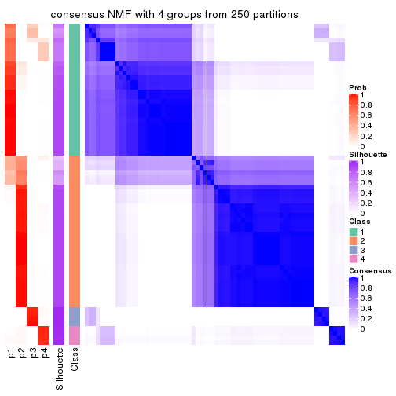
consensus_heatmap(res, k = 5)
consensus_heatmap(res, k = 6)
Heatmaps for the membership of samples in all partitions to see how consistent they are:
membership_heatmap(res, k = 2)
membership_heatmap(res, k = 3)
membership_heatmap(res, k = 4)
membership_heatmap(res, k = 5)
membership_heatmap(res, k = 6)

As soon as we have had the classes for columns, we can look for signatures which are significantly different between classes which can be candidate marks for certain classes. Following are the heatmaps for signatures.
Signature heatmaps where rows are scaled:
get_signatures(res, k = 2)
get_signatures(res, k = 3)
get_signatures(res, k = 4)
get_signatures(res, k = 5)
get_signatures(res, k = 6)
Signature heatmaps where rows are not scaled:
get_signatures(res, k = 2, scale_rows = FALSE)
get_signatures(res, k = 3, scale_rows = FALSE)
get_signatures(res, k = 4, scale_rows = FALSE)
get_signatures(res, k = 5, scale_rows = FALSE)
get_signatures(res, k = 6, scale_rows = FALSE)
Compare the overlap of signatures from different k:
compare_signatures(res)
get_signature() returns a data frame invisibly. TO get the list of signatures, the function
call should be assigned to a variable explicitly. In following code, if plot argument is set
to FALSE, no heatmap is plotted while only the differential analysis is performed.
# code only for demonstration
tb = get_signature(res, k = ..., plot = FALSE)
An example of the output of tb is:
#> which_row fdr mean_1 mean_2 scaled_mean_1 scaled_mean_2 km
#> 1 38 0.042760348 8.373488 9.131774 -0.5533452 0.5164555 1
#> 2 40 0.018707592 7.106213 8.469186 -0.6173731 0.5762149 1
#> 3 55 0.019134737 10.221463 11.207825 -0.6159697 0.5749050 1
#> 4 59 0.006059896 5.921854 7.869574 -0.6899429 0.6439467 1
#> 5 60 0.018055526 8.928898 10.211722 -0.6204761 0.5791110 1
#> 6 98 0.009384629 15.714769 14.887706 0.6635654 -0.6193277 2
...
The columns in tb are:
which_row: row indices corresponding to the input matrix.fdr: FDR for the differential test. mean_x: The mean value in group x.scaled_mean_x: The mean value in group x after rows are scaled.km: Row groups if k-means clustering is applied to rows.UMAP plot which shows how samples are separated.
dimension_reduction(res, k = 2, method = "UMAP")
dimension_reduction(res, k = 3, method = "UMAP")
dimension_reduction(res, k = 4, method = "UMAP")
dimension_reduction(res, k = 5, method = "UMAP")
dimension_reduction(res, k = 6, method = "UMAP")

Following heatmap shows how subgroups are split when increasing k:
collect_classes(res)
If matrix rows can be associated to genes, consider to use functional_enrichment(res,
...) to perform function enrichment for the signature genes. See this vignette for more detailed explanations.
sessionInfo()
#> R version 3.6.0 (2019-04-26)
#> Platform: x86_64-pc-linux-gnu (64-bit)
#> Running under: CentOS Linux 7 (Core)
#>
#> Matrix products: default
#> BLAS: /usr/lib64/libblas.so.3.4.2
#> LAPACK: /usr/lib64/liblapack.so.3.4.2
#>
#> locale:
#> [1] LC_CTYPE=en_GB.UTF-8 LC_NUMERIC=C LC_TIME=en_GB.UTF-8
#> [4] LC_COLLATE=en_GB.UTF-8 LC_MONETARY=en_GB.UTF-8 LC_MESSAGES=en_GB.UTF-8
#> [7] LC_PAPER=en_GB.UTF-8 LC_NAME=C LC_ADDRESS=C
#> [10] LC_TELEPHONE=C LC_MEASUREMENT=en_GB.UTF-8 LC_IDENTIFICATION=C
#>
#> attached base packages:
#> [1] grid stats graphics grDevices utils datasets methods base
#>
#> other attached packages:
#> [1] genefilter_1.66.0 ComplexHeatmap_2.3.1 markdown_1.1 knitr_1.26
#> [5] GetoptLong_0.1.7 cola_1.3.2
#>
#> loaded via a namespace (and not attached):
#> [1] circlize_0.4.8 shape_1.4.4 xfun_0.11 slam_0.1-46
#> [5] lattice_0.20-38 splines_3.6.0 colorspace_1.4-1 vctrs_0.2.0
#> [9] stats4_3.6.0 blob_1.2.0 XML_3.98-1.20 survival_2.44-1.1
#> [13] rlang_0.4.2 pillar_1.4.2 DBI_1.0.0 BiocGenerics_0.30.0
#> [17] bit64_0.9-7 RColorBrewer_1.1-2 matrixStats_0.55.0 stringr_1.4.0
#> [21] GlobalOptions_0.1.1 evaluate_0.14 memoise_1.1.0 Biobase_2.44.0
#> [25] IRanges_2.18.3 parallel_3.6.0 AnnotationDbi_1.46.1 highr_0.8
#> [29] Rcpp_1.0.3 xtable_1.8-4 backports_1.1.5 S4Vectors_0.22.1
#> [33] annotate_1.62.0 skmeans_0.2-11 bit_1.1-14 microbenchmark_1.4-7
#> [37] brew_1.0-6 impute_1.58.0 rjson_0.2.20 png_0.1-7
#> [41] digest_0.6.23 stringi_1.4.3 polyclip_1.10-0 clue_0.3-57
#> [45] tools_3.6.0 bitops_1.0-6 magrittr_1.5 eulerr_6.0.0
#> [49] RCurl_1.95-4.12 RSQLite_2.1.4 tibble_2.1.3 cluster_2.1.0
#> [53] crayon_1.3.4 pkgconfig_2.0.3 zeallot_0.1.0 Matrix_1.2-17
#> [57] xml2_1.2.2 httr_1.4.1 R6_2.4.1 mclust_5.4.5
#> [61] compiler_3.6.0